Technical Reference Manual Version 1.3
www.espressif.com
The ESP32-C3 Technical Reference Manual is targeted at developers working on low level software projects that use the ESP32-C3 SoC. It describes the hardware modules listed below for the ESP32-C3 SoC and other products in ESP32-C3 series. The modules detailed in this document provide an overview, list of features, hardware architecture details, any necessary programming procedures, as well as register descriptions.
Here are some tips on navigation through this extensive document:
| Release Status at a Glance | |||
| No. | Chapter | Progress | |
| Part I. Microprocessor and Master | |||
| 1 | ESP-RISC-V CPU | Published | |
| 2 | GDMA Controller (GDMA) | Published | |
| 3 |
Part II. Memory Organization
System and Memory |
Published | |
| 4 | eFuse Controller (EFUSE) | Published | |
| Part III. System Component | |||
| 5 | IO MUX and GPIO Matrix (GPIO, IO MUX) | Published | |
| 6 | Reset and Clock | Published | |
| 7 | Chip Boot Control | Published | |
| 8 | Interrupt Matrix (INTERRUPT) | Published | |
| 9 | Low-power Management | Published | |
| 10 | System Timer (SYSTIMER) | Published | |
| 11 | Timer Group (TIMG) | Published | |
| 12 | Watchdog Timers (WDT) | Published | |
| 13 | XTAL32K Watchdog Timers (XTWDT) | Published | |
| 14 | Permission Control (PMS) | Published | |
| 15 | World Controller (WCL) | Published | |
|
16
System Registers (SYSREG) Published Published |
|||
| 17 |
Debug Assistant (ASSIST_DEBUG)
Part V. Cryptography/Security Component |
||
| 18 | SHA Accelerator (SHA) | Published | |
| 19 | AES Accelerator (AES) | Published | |
| 20 | RSA Accelerator (RSA) | Published | |
| 21 | HMAC Accelerator (HMAC) | Published | |
| 22 | Digital Signature (DS) | Published | |
| 23 | External Memory Encryption and Decryption (XTS_AES) | Published | |
| 24 | Clock Glitch Detection | Published | |
|
25
Random Number Generator (RNG) Published |
|||
| Part VII. Connectivity Interface | |||
| 26 | UART Controller (UART) | Published | |
| 27 | SPI Controller (SPI) | Published | |
| 28 | I2C Controller (I2C) | Published | |
| 29 | I2S Controller (I2S) | Published | |
| 30 | USB Serial/JTAG Controller (USB_SERIAL_JTAG) | Published | |
|
31
32 |
Two-wire Automotive Interface (TWAI)
LED PWM Controller (LEDC) |
Published
Published |
|
| 33 | Remote Control Peripheral (RMT) | Published | |
| Part VIII. Analog Signal Processing | |||
Check the link or the QR code to make sure that you use the latest version of this document: https://www.espressif.com/sites/default/files/documentation/esp32-c3_technical_reference_ manual_en.pdf
| Contents | ||||
|---|---|---|---|---|
| I | Microprocessor and Master | |||
| 1 | ESP-RISC-V CPU | |||
| 1.1 | Overview | |||
| 1.2 | Features | |||
|
1.3
1.4 |
Address Map
Configuration and Status Registers (CSRs) |
|||
|
1.4.1
Register Summary |
||||
| 1.4.2 | Register Description | |||
| 1.5 | Interrupt Controller | |||
| 1.5.1 | Features | |||
| 1.5.2 | Functional Description | |||
| 1.5.3 | Suggested Operation | |||
|
1.5.3.1
Latency Aspects |
||||
|
1.5.3.2
Configuration Procedure |
||||
| 1.5.4 | Register Summary | |||
| 1.5.5 | Register Description | |||
| 1.6 | Debug | |||
| 1.6.1 | Overview | |||
| 1.6.2 | Features | |||
| 1.6.3 | Functional Description | |||
|
1.6.4
1.6.5 |
Register Summary
Register Description |
|||
| 1.7 | Hardware Trigger | |||
| 1.7.1 | Features | |||
| 1.7.2 | Functional Description | |||
| 1.7.3 | Trigger Execution Flow | |||
| 1.7.4 | Register Summary | |||
| 1.7.5 | Register Description | |||
| 1.8 | Memory Protection | |||
| 1.8.1 | Overview | |||
| 1.8.2 | Features | |||
| 1.8.3 | Functional Description | |||
|
1.8.4
1.8.5 |
Register Summary
Register Description |
|||
| 2 | GDMA Controller (GDMA) | |||
| 2.1 | Overview | |||
| 2.2 | Features | |||
|
2.3
2.4 |
Architecture
Functional Description |
|||
| 2.4.2 | Peripheral-to-Memory and Memory-to-Peripheral Data Transfer | 63 | ||
|---|---|---|---|---|
| 2.4.3 | Memory-to-Memory Data Transfer | 63 | ||
| 2.4.4 | Enabling GDMA | !!!!!!!!!!!!!!!!!!!!!!!!!!!!!!!!!!!!!!!! | ||
| 2.4.5 | Linked List Reading Process | !!!!!!!!!!!!!!!!!!!!!!!!!!!!!!!!!!!!!!!! | ||
| 2.4.6 | EOF | 65 | ||
| 2.4.7 | Accessing Internal RAM | 65 | ||
| 2.4.8 | Arbitration | 66 | ||
| 2.5 | GDMA Interrupts | 66 | ||
| 2.6 | Programming Procedures | 67 | ||
| 2.6.1 | Programming Procedure for GDMA Clock and Reset | 67 | ||
| 2.6.2 | Programming Procedures for GDMA's Transmit Channel | 67 | ||
| 2.6.3 | Programming Procedures for GDMA's Receive Channel | 67 | ||
| 2.6.4 | Programming Procedures for Memory-to-Memory Transfer | !!!!!!!!!!!!!!!!!!!!!!!!!!!!!!!!!!!!!!!! | ||
| 2.7 | Register Summary | !!!!!!!!!!!!!!!!!!!!!!!!!!!!!!!!!!!!!!!! | ||
| 2.8 | Registers | 73 | ||
| Ш | Memory Organization | 90 | ||
| 3 | System and Memory | 91 | ||
| 3.1 | Overview | 91 | ||
| 3.2 | Features | 91 | ||
| 3.3 | Functional Description | 92 | ||
| 3.3.1 | Address Mapping | 92 | ||
| 3.3.2 | Internal Memory | 93 | ||
| 3.3.3 | External Memory | 94 | ||
|
3.3.3.1
External Memory Address Mapping |
95 | |||
|
3.3.3.2
Cache |
95 | |||
|
3.3.3.3
Cache Operations |
96 | |||
| 3.3.4 | !!!!!!!!!!!!!!!!!!!!!!!!!!!!!!!!!!!!!!!! | 96 | ||
| 3.3.5 | Modules/Peripherals | 97 | ||
|
3.3.5.1
Module/Peripheral Address Mapping |
98 | |||
| 4 | eFuse Controller (EFUSE) | 100 | ||
| 4.1 | Overview | 100 | ||
| 4.2 | Features | 100 | ||
| 4.3 | Functional Description | 100 | ||
| 4.3.1 | Structure | 100 | ||
|
4.3.1.1
EFUSE_WR_DIS |
106 | |||
|
4.3.1.2
EFUSE_RD_DIS |
106 | |||
|
4.3.1.3
Data Storage |
106 | |||
| 4.3.2 | Programming of Parameters | 107 | ||
|
4.3.3
User Read of Parameters |
109 | |||
| 4.3.4 | eFuse VDDQ Timing | 111 | ||
|
4.3.5
The Use of Parameters by Hardware Modules |
111 | |||
| 4.3.6 | 111 | |||
| 4.4 | Register Summary | |||
| 4.5 | Registers | 116 |
|---|---|---|
| Ш | System Component | 158 |
| 5 | IO MUX and GPIO Matrix (GPIO, IO MUX) | 159 |
| 5.1 | Overview | 159 |
| 5.2 | Features | 159 |
| 5.3 | Architectural Overview | 159 |
| 5.4 | Peripheral Input via GPIO Matrix | 161 |
|
Overview
5.4.1 |
161 | |
|
Signal Synchronization
5.4.2 |
162 | |
|
Functional Description
5.4.3 |
162 | |
|
Simple GPIO Input
5.4.4 |
163 | |
| 5.5 | Peripheral Output via GPIO Matrix | 163 |
|
5.5.1
Overview |
163 | |
|
5.5.2
Functional Description |
164 | |
|
5.5.3
Simple GPIO Output |
165 | |
|
Sigma Delta Modulated Output (SDM)
5.5.4 |
165 | |
|
5.5.4.1
Functional Description |
165 | |
|
SDM Configuration
5.5.4.2 |
166 | |
| 5.6 | Direct Input and Output via IO MUX | 166 |
|
5.6.1
Overview |
166 | |
|
Functional Description
5.6.2 |
166 | |
| 5.7 | Analog Functions of GPIO Pins | 166 |
| 5.8 | Pin Functions in Light-sleep | 167 |
| 5.9 | Pin Hold Feature | 167 |
| 5.10 | Power Supplies and Management of GPIO Pins | 167 |
|
Power Supplies of GPIO Pins
5.10.1 |
167 | |
|
Power Supply Management
5.10.2 |
168 | |
| 5.11 | Peripheral Signal List | !!!!!!!!!!!!!!!!!!!!!!!!!!!!!!!!!!!!!!!! |
| 5.12 | IO MUX Functions List | 174 |
| 5.13 | Analog Functions List | 175 |
| 5.14 | Register Summary | 176 |
|
GPIO Matrix Register Summary
5.14.1 |
176 | |
|
IO MUX Register Summary
5.14.2 |
178 | |
|
SDM Register Summary
5.14.3 |
178 | |
| 5.15 | Registers | 179 |
|
5.15.1
GPIO Matrix Registers |
179 | |
|
IO MUX Registers
5.15.2 |
!!!!!!!!!!!!!!!!!!!!!!!!!!!!!!!!!!!!!!!! | |
| 5.15.3 SDM Output Registers | 188 | |
| 6 | Reset and Clock | 191 |
| 6.1 | Reset | 191 |
|
6.1.1
Overview |
191 | |
|
6.1.2
Architectural Overview |
191 | |
|
6.1.3
Features |
191 |
| 6.1.4 | Functional Description | 192 | ||||
|---|---|---|---|---|---|---|
| 6.2 | Clock | 193 | ||||
| 6.2.1 | Overview | 193 | ||||
| 6.2.2 | Architectural Overview | 194 | ||||
| 6.2.3 | Features | 194 | ||||
| 6.2.4 | Functional Description | 194 | ||||
| 6.2.4.1 | CPU Clock | 195 | ||||
| 6.2.4.2 | Peripheral Clock | 195 | ||||
| 6.2.4.3 | Wi-Fi and Bluetooth LE Clock | 197 | ||||
| 6.2.4.4 | RTC Clock | 197 | ||||
| 7 | Chip Boot Control | 198 | ||||
| 7.1 | Overview | 198 | ||||
| 7.2 | Boot Mode Control | 199 | ||||
| 7.3 | ROM Messages Printing Control | 200 | ||||
| 8 | Interrupt Matrix (INTERRUPT) | 202 | ||||
| 8.1 | Overview | 202 | ||||
| 8.2 | Features |
202
203 |
||||
| 8.3 | Functional Description | |||||
|
8.3.1
Peripheral Interrupt Sources |
||||||
| 8.3.2 | CPU Interrupts | 207 | ||||
| 8.3.3 | Allocate Peripheral Interrupt Source to CPU Interrupt | 207 | ||||
| 8.3.3.1 | Allocate one peripheral interrupt source (Source_X) to CPU | 207 | ||||
|
8.3.3.2
8.3.3.3 |
Allocate multiple peripheral interrupt sources (Source_Xn) to CPU
Disable CPU peripheral interrupt source (Source_X) |
207 | ||||
| 8.3.4 | Query Current Interrupt Status of Peripheral Interrupt Source |
207
207 |
||||
| 209 | ||||||
|
8.4
8.5 |
Registers | Register Summary | 213 | |||
| 9 | Low-power Management | 219 | ||||
| 9.1 | Introduction | 219 | ||||
| 9.2 | Features | 219 | ||||
| 9.3 | Functional Description | 219 | ||||
| 9.3.1 | Power Management Unit (PMU) | 221 | ||||
| 9.3.2 | Low-Power Clocks | |||||
| 9.3.3 | Timers | 223 | ||||
| 9.3.4 | Voltage Regulators | 224 | ||||
| 9.3.4.1 | Digital System Voltage Regulator | 224 | ||||
| 9.3.4.2 | Low-power Voltage Regulator | 225 | ||||
| 9.3.4.3 | Brownout Detector | 225 | ||||
| 9.4 | Power Modes Management | |||||
| 9.4.1 | Power Domain | |||||
| 9.4.2 | Pre-defined Power Modes | 227 | ||||
| 9.4.3 | Wakeup Source | 227 | ||||
|
9.4.4
Reject Sleep |
||||||
| 9.5 | Retention DMA | 228 |
|---|---|---|
| 9.6 | RTC Boot | 229 |
| 9.7 | Register Summary | 231 |
| 9.8 | Registers | 233 |
| 10 | System Timer (SYSTIMER) | 270 |
| 10.1 | Overview | 270 |
| 10.2 | Features | 270 |
| 10.3 | Clock Source Selection | 271 |
| 10.4 | Functional Description | 271 |
|
Counter
10.4.1 |
271 | |
| 10.4.2 Comparator and Alarm | 272 | |
| 10.4.3 Synchronization Operation | 273 | |
|
10.4.4
Interrupt |
274 | |
| 10.5 | Programming Procedure | 274 |
|
10.5.1
Read Current Count Value |
274 | |
| 10.5.2 Configure One-Time Alarm in Target Mode | 274 | |
|
Configure Periodic Alarms in Period Mode
10.5.3 |
274 | |
| 10.5.4 Update After Light-sleep | 275 | |
| 10.6 | Register Summary | 275 |
| 10.7 | Registers | 277 |
| 11 | Timer Group (TIMG) | 288 |
| 11.1 | Overview | 288 |
| 11.2 | Functional Description | 289 |
|
11.2.1
16-bit Prescaler and Clock Selection |
289 | |
|
54-bit Time-base Counter
11.2.2 |
289 | |
|
11.2.3
Alarm Generation |
290 | |
|
11.2.4
Timer Reload |
291 | |
|
!!!!!!!!!!!!!!!!!!!!!!!!!!!!!!!!!!!!!!!!
11.2.5 |
291 | |
|
11.2.6
Interrupts |
291 | |
| 11.3 | Configuration and Usage | 292 |
|
11.3.1
Timer as a Simple Clock |
292 | |
|
11.3.2
Timer as One-shot Alarm |
292 | |
|
Timer as Periodic Alarm
11.3.3 |
293 | |
|
11.3.4
RTC_SLOW_CLK Frequency Calculation |
293 | |
| 11.4 | Register Summary | 294 |
| 11.5 | Registers | 295 |
| 12 | Watchdog Timers (WDT) | 305 |
| 12.1 | Overview | 305 |
| 12.2 | Digital Watchdog Timers | 306 |
|
12.2.1
Features |
306 | |
| 12.2.2 Functional Description | 307 | |
|
Clock Source and 32-Bit Counter
12.2.2.1 |
307 | |
| 12.2.2.2 Stages and Timeout Actions | 308 | |
| Contents | GoBack | |
|
12.2.2.3
Write Protection |
308 | |
|
12.2.2.4
Flash Boot Protection |
309 | |
| 12.3 | Super Watchdog | 309 |
|
12.3.1
Features |
309 | |
|
12.3.2
Super Watchdog Controller |
309 | |
|
12.3.2.1
Structure 12.3.2.2 Workflow |
310
310 |
|
| 12.4 | Interrupts | 310 |
| 12.5 | Registers | |
| 13 | XTAL32K Watchdog Timers (XTWDT) | 312 |
| 13.1 | Overview | 312 |
| 13.2 | Features | 312 |
|
13.2.1
Interrupt and Wake-Up |
312 | |
|
13.2.2
BACKUP32K_CLK |
313 | |
| 13.3 | Functional Description | 313 |
|
13.3.1
Workflow 13.3.2 BACKUP32K_CLK Working Principle |
313
313 |
|
|
13.3.3
Configuring the Divisor Component of BACKUP32K_CLK |
313 | |
| 14 | Permission Control (PMS) | 315 |
| 14.1 | Overview | 315 |
| 14.2 | Features | 316 |
| 14.3 | Privileged Environment and Unprivileged Environment | 316 |
| 14.4 |
Internal Memory
14.4.1 ROM |
317
317 |
|
14.4.2
SRAM |
318 | |
|
14.4.2.1
Internal SRAM0 Access Configuration |
318 | |
|
14.4.2.2
Internal SRAM1 Access Configuration |
319 | |
|
14.4.3
RTC FAST Memory |
322 | |
| 14.5 | Peripherals | 323 |
|
14.5.1
Access Configuration |
323 | |
|
14.5.2
Split Peripheral Regions into Split Regions |
324 | |
| 14.6 | External Memory | 325 |
|
14.6.1
SPI and Cache's Access to External Flash |
325 | |
|
14.6.1.1
Address |
326 | |
|
14.6.1.2
Access Configuration |
326 | |
|
14.6.2
CPU's Access to Cache |
327 | |
|
14.6.2.1
Split Regions |
327 | |
|
14.6.3
Access Configuration |
327 | |
| 14.7 |
Unauthorized Access and Interrupts
14.7.1 Interrupt upon Unauthorized IBUS Access |
328
329 |
|
14.7.2
Interrupt upon Unauthorized DBUS Access |
329 | |
|
14.7.3
Interrupt upon Unauthorized Access to External Memory |
330 | |
|
14.7.4
Interrupt upon Unauthorized Access to Internal Memory via GDMA |
330 | |
| Contents | GoBack | |
|
14.7.6
Interrupt upon Unauthorized PIF Access Alignment |
331 | |
| 14.8 | Register Locks | 332 |
| 14.9 | Register Summary | 335 |
| 14.10 | Registers | 338 |
| 15 | World Controller (WCL) | 413 |
| 15.1 | Introduction | 413 |
| 15.2 | Features | 413 |
| 15.3 | Functional Description | 413 |
| 15.4 | CPU's World Switch | 415 |
|
15.4.1
From Secure World to Non-secure World 15.4.2 From Non-secure World to Secure World |
415
416 |
|
| 15.5 | World Switch Log | 417 |
|
15.5.1
Structure of World Switch Log Register |
417 | |
|
15.5.2
How World Switch Log Registers are Updated |
418 | |
|
15.5.3
How to Read World Switch Log Registers |
420 | |
|
15.5.4
Nested Interrupts |
420 | |
|
15.5.4.1
Programming Procedure |
420 | |
| 15.6 | Register Summary | 422 |
| 15.7 | Registers | 423 |
| 16 | System Registers (SYSREG) | 427 |
| 16.1 | Overview | 427 |
| 16.2 | Features | 427 |
| 16.3 | Function Description | 427 |
|
16.3.1
System and Memory Registers 16.3.1.1 Internal Memory |
427
427 |
|
|
16.3.1.2
External Memory |
428 | |
|
16.3.1.3
RSA Memory |
428 | |
|
16.3.2
Clock Registers |
429 | |
|
16.3.3
Interrupt Signal Registers |
429 | |
|
16.3.4
Low-power Management Registers |
429 | |
|
16.3.5
Peripheral Clock Gating and Reset Registers |
429 | |
| 16.4 | Register Summary | 432 |
| 16.5 | Registers | 434 |
| 17 | Debug Assistant (ASSIST_DEBUG) | 446 |
| 17.1 | Overview | 446 |
| 17.2 | Features | 446 |
| 17.3 | Functional Description | 446 |
|
17.3.1
Region Read/Write Monitoring |
446 | |
|
17.3.2
SP Monitoring 17.3.3 PC Logging |
446
447 |
|
|
17.3.4
CPU/DMA Bus Access Logging |
447 | |
| 17.4 | Recommended Operation | 447 |
|
17.4.1
Region Monitoring and SP Monitoring Configuration Process |
447 |
| Contents | GoBack | |
|---|---|---|
|
17.4.2
PC Logging Configuration Process 17.4.3 CPU/DMA Bus Access Logging Configuration Process |
448
449 |
|
|
17.5
17.6 |
Register Summary
Registers |
453
455 |
| IV | Cryptography/Security Component | 472 |
| 18 | AES Accelerator (AES) | 473 |
|
18.1
18.2 |
Introduction
Features |
473
473 |
| 18.3 | AES Working Modes | 473 |
| 18.4 | Typical AES Working Mode | 475 |
|
18.4.1
Key, Plaintext, and Ciphertext |
475 | |
|
18.4.2
Endianness |
475 | |
|
18.4.3
Operation Process |
477 | |
| 18.5 | DMA-AES Working Mode | 477 |
|
18.5.1
Key, Plaintext, and Ciphertext |
478 | |
|
18.5.2
Endianness |
479 | |
|
18.5.3
Standard Incrementing Function |
479 | |
|
18.5.4
Block Number |
479 | |
|
18.5.5
Initialization Vector 18.5.6 Block Operation Process |
479
480 |
|
| 18.6 | Memory Summary | 480 |
| 18.7 | Register Summary | 481 |
| 18.8 | Registers | 482 |
| 19 | HMAC Accelerator (HMAC) | 486 |
| 19.1 | Main Features | 486 |
| 19.2 | Functional Description | 486 |
|
19.2.1
Upstream Mode |
486 | |
|
19.2.2
Downstream JTAG Enable Mode |
487 | |
|
19.2.3
Downstream Digital Signature Mode |
487 | |
|
19.2.4
HMAC eFuse Configuration |
488 | |
|
19.2.5
HMAC Process (Detailed) |
489 | |
| 19.3 | HMAC Algorithm Details | 490 |
|
19.3.1
Padding Bits |
491 | |
|
19.3.2
HMAC Algorithm Structure |
491 | |
|
19.4
19.5 |
Register Summary
Registers |
494
496 |
| 20 | RSA Accelerator (RSA) | 502 |
|
20.1
20.2 |
Introduction
Features |
502
502 |
| 20.3 |
Functional Description
20.3.1 Large Number Modular Exponentiation |
502
503 |
|
20.4
20.5 20.6 |
20.3.3 Large Number Multiplication
20.3.4 Options for Acceleration Memory Summary Register Summary Registers |
505
505 507 508 509 |
|---|---|---|
|
21
21.1 21.2 21.3 21.4 |
SHA Accelerator (SHA)
Introduction Features Working Modes Function Description 21.4.1 Preprocessing 21.4.1.1 Padding the Message 21.4.1.2 Parsing the Message Setting the Initial Hash Value 21.4.1.3 |
513
513 513 513 514 514 514 514 515 |
|
21.5
21.6 |
21.4.2 Hash Operation
Typical SHA Mode Process 21.4.2.1 DMA-SHA Mode Process 21.4.2.2 Message Digest 21.4.3 Interrupt 21.4.4 Register Summary Registers |
515
515 517 517 518 518 519 |
|
22
22.1 22.2 22.3 22.4 22.5 22.6 |
Digital Signature (DS)
Overview Features Functional Description 22.3.1 Overview 22.3.2 Private Key Operands 22.3.3 Software Prerequisites 22.3.4 DS Operation at the Hardware Level 22.3.5 DS Operation at the Software Level Memory Summary Register Summary Registers |
523
523 523 523 523 524 524 526 526 529 530 531 |
|
23
23.1 23.2 23.3 23.4 |
External Memory Encryption and Decryption (XTS_AES)
Overview Features Module Structure Functional Description 23.4.1 XTS Algorithm 23.4.2 Key 23.4.3 Target Memory Space 23.4.4 Data Writing 23.4.5 Manual Encryption Block |
534
534 534 534 535 535 536 536 537 537 |
| Contents | GoBack | |
| 23.5 |
23.4.6
Auto Decryption Block Software Process |
538
538 |
| 23.6 | Register Summary | 540 |
| 23.7 | Registers | 541 |
| 24 | Random Number Generator (RNG) | 544 |
|
24.1
24.2 |
Introduction
Features |
544
544 |
| 24.3 | Functional Description | 544 |
| 24.4 | Programming Procedure | 545 |
|
24.5
24.6 |
Register Summary
Register |
545
546 |
| 25 | Clock Glitch Detection | 547 |
| 25.1 | Overview | 547 |
| 25.2 | Functional Description | 547 |
|
25.2.1
Clock Glitch Detection 25.2.2 Reset |
547
547 |
|
| V | Connectivity Interface | 548 |
| 26 | UART Controller (UART) | 549 |
| 26.1 | Overview | 549 |
| 26.2 | Features | 549 |
| 26.3 | UART Structure | 550 |
| 26.4 | Functional Description | 551 |
|
26.4.1
Clock and Reset |
551 | |
|
26.4.2
UART RAM 26.4.3 Baud Rate Generation and Detection |
552
553 |
|
|
26.4.3.1
Baud Rate Generation |
553 | |
|
26.4.3.2
Baud Rate Detection |
554 | |
|
26.4.4
UART Data Frame |
555 | |
|
26.4.5
AT_CMD Character Structure |
556 | |
|
26.4.6
RS485 |
556 | |
|
26.4.6.1
Driver Control |
556 | |
|
26.4.6.2
Turnaround Delay |
557 | |
|
26.4.6.3
Bus Snooping |
557 | |
|
26.4.7
IrDA |
557 | |
|
26.4.8
Wake-up 26.4.9 Flow Control |
558
559 |
|
|
26.4.9.1
Hardware Flow Control |
559 | |
|
26.4.9.2
Software Flow Control |
560 | |
| 26.4.10 GDMA Mode | 561 | |
|
26.4.11
UART Interrupts |
561 | |
| 26.4.12 UHCI Interrupts | 562 | |
| 26.5.1 | Register Type | 563 | ||
|---|---|---|---|---|
| 26.5.11 | Synchronous Registers | 563 | ||
| 26.5.1.2 | Static Registers | !!!!!!!!!!!!!!!!!!!!!!!!!!!!!!!!!!!!!!!! | ||
| 26.5.1.3 | Immediate Registers | !!!!!!!!!!!!!!!!!!!!!!!!!!!!!!!!!!!!!!!! | ||
| 26.5.2 Detailed Steps | 565 | |||
| 26.5.2.1 | Initializing UARTn | 566 | ||
| 26.5.2.2 Configuring UARTn Communication | !!!!!!!!!!!!!!!!!!!!!!!!!!!!!!!!!!!!!!!! | |||
| 26.5.2.3 Enabling UARTn | 566 | |||
| 26.6 | Register Summary | 568 | ||
| 26.7 | Registers | 571 | ||
| 27 SPI Controller (SPI) | !!!!!!!!!!!!!!!!!!!!!!!!!!!!!!!!!!!!!!!! | |||
| 27.1 | Overview | 608 | ||
|---|---|---|---|---|
| 27.2 | Glossary | !!!!!!!!!!!!!!!!!!!!!!!!!!!!!!!!!!!!!!!! | ||
| 27.3 | Features | !!!!!!!!!!!!!!!!!!!!!!!!!!!!!!!!!!!!!!!! | ||
| 27.4 | Architectural Overview | 610 | ||
| 27.5 | Functional Description | 610 | ||
| 27.5.1 | Data Modes | 611 | ||
| 27.5.2 FSPI Bus Signal Mapping | 611 | |||
| 27.5.3 | Bit Read/Write Order Control | 614 | ||
| 27.5.4 | Transfer Modes | 614 | ||
|
CPU-Controlled Data Transfer
27.5.5 |
614 | |||
| 27.5.5.1 | !!!!!!!!!!!!!!!!!!!!!!!!!!!!!!!!!!!!!!!! | 615 | ||
| 27.5.5.2 | !!!!!!!!!!!!!!!!!!!!!!!!!!!!!!!!!!!!!!!! | 616 | ||
| 27.5.6 | DMA-Controlled Data Transfer | 616 | ||
| 27.5.6.1 | GDMA Configuration | 617 | ||
| 27.5.6.2 | GDMA TX/RX Buffer Length Control | !!!!!!!!!!!!!!!!!!!!!!!!!!!!!!!!!!!!!!!! | ||
| 27.5.7 | Data Flow Control in GP-SPI2 Master and Slave Modes | 618 | ||
| 27.5.7.1 | GP-SPI2 Functional Blocks | 618 | ||
| 27.5.7.2 | Data Flow Control in Master Mode | 619 | ||
| 27.5.7.3 | Data Flow Control in Slave Mode | 620 | ||
|
GP-SPI2 Works as a Master
27.5.8 |
621 | |||
| 27.5.8.1 | State Machine | 621 | ||
| 27.5.8.2 | Register Configuration for State and Bit Mode Control | 623 | ||
| 27.5.8.3 | Full-Duplex Communication (1-bit Mode Only) | 626 | ||
| 27.5.8.4 | Half-Duplex Communication (1/2/4-bit Mode) | 627 | ||
| 27.5.8.5 | DMA-Controlled Configurable Segmented Transfer | 629 | ||
| 27.5.9 | GP-SPI2 Works as a Slave | 633 | ||
| 27.5.9.1 | Communication Formats | 633 | ||
| 27.5.9.2 | Supported CMD Values in Half-Duplex Communication | 634 | ||
| 27.5.9.3 | Slave Single Transfer and Slave Segmented Transfer | 637 | ||
| 27.5.9.4 | Configuration of Slave Single Transfer | 637 | ||
| 27.5.9.5 | Configuration of Slave Segmented Transfer in Half-Duplex | 638 | ||
| 27.5.9.6 | Configuration of Slave Segmented Transfer in Full-Duplex | 638 | ||
| 27.6 | CS Setup Time and Hold Time Control | 639 | ||
27.7 GP-SPI 2 Clock Control 640
| 27.7.1 | Clock Phase and Polarity | 640 | |
|---|---|---|---|
| 27.7.2 | Clock Control in Master Mode | 642 | |
| 27.7.3 | Clock Control in Slave Mode | 642 | |
| 27.8 | GP-SPI2 Timing Compensation | 642 | |
| 27.9 | Interrupts | ||
| 27.10 Register Summary | |||
| 27.11 | Registers | ||
| 28.1 | Overview | ||
|---|---|---|---|
| 28.2 | Features | ||
| 28.3 | I2C Architecture | ||
| 28.4 | Functional Description | ||
| 28.4.1 Clock Configuration | 679 | ||
| 28.4.2 SCL and SDA Noise Filtering | 679 | ||
| 28.4.3 SCL Clock Stretching | |||
| 28.4.4 Generating SCL Pulses in Idle State | !!!!!!!!!!!!!!!!!!!!!!!!!!!!!!!!!!!!!!!! | ||
| 28.4.5 Synchronization | |||
| 28.4.6 Open-Drain Output | |||
| 28.4.7 Timing Parameter Configuration | |||
| 28.4.8 Timeout Control | |||
| 28.4.9 Command Configuration | !!!!!!!!!!!!!!!!!!!!!!!!!!!!!!!!!!!!!!!! | ||
| 28.4.10 TX/RX RAM Data Storage | 685 | ||
| 28.4.11 Data Conversion | 686 | ||
| 28.4.12 Addressing Mode | |||
| 28.4.13 Bit Check in 10-bit Addressing Mode | |||
| 28.4.14 To Start the I2C Controller | !!!!!!!!!!!!!!!!!!!!!!!!!!!!!!!!!!!!!!!! | ||
| 28.5 | Programming Example | 687 | |
| 28.5.1 I2C master Writes to I2C slave with a 7-bit Address in One Command Sequence | 687 | ||
|
Introduction
28.5.1.1 |
688 | ||
| 28.5.1.2 Configuration Example | 688 | ||
| 28.5.2 I2C master Writes to I2C slave with a 10-bit Address in One Command Sequence | 689 | ||
|
Introduction
28.5.2.1 |
!!!!!!!!!!!!!!!!!!!!!!!!!!!!!!!!!!!!!!!! | ||
| 28.5.2.2 Configuration Example | !!!!!!!!!!!!!!!!!!!!!!!!!!!!!!!!!!!!!!!! | ||
| 28.5.3 I2C master Writes to I2C slave with Two 7-bit Addresses in One Command Sequence | 692 | ||
|
Introduction
28.5.3.1 |
!!!!!!!!!!!!!!!!!!!!!!!!!!!!!!!!!!!!!!!! | ||
| 28.5.3.2 Configuration Example | !!!!!!!!!!!!!!!!!!!!!!!!!!!!!!!!!!!!!!!! | ||
| 28.5.4 I2C master Writes to I2C slave with a 7-bit Address in Multiple Command Sequences | 694 | ||
|
Introduction
28.5.4.1 |
694 | ||
| 28.5.4.2 Configuration Example | 695 | ||
| 28.5.5 Reads with a 7-bit Address in One Command Sequence | 696 | ||
|
Introduction
28.5.5.1 |
!!!!!!!!!!!!!!!!!!!!!!!!!!!!!!!!!!!!!!!! | ||
| 28.5.5.2 Configuration Example | !!!!!!!!!!!!!!!!!!!!!!!!!!!!!!!!!!!!!!!! | ||
| 28.5.6 I2C master Reads I2C slave with a 10-bit Address in One Command Sequence | 698 | ||
|
28.5.6.1
Introduction |
698 | ||
| 28.5.6.2 Configuration Example | 699 | ||
| Contents | GoBack | |
|
28.5.7
I2Cmaster Reads I2Cslave with Two 7-bit Addresses in One Command Sequence |
700 | |
|
28.5.7.1
Introduction |
701 | |
|
28.5.7.2
Configuration Example |
701 | |
|
28.5.8
I2Cmaster Reads I2Cslave with a 7-bit Address in Multiple Command Sequences |
704 | |
|
28.5.8.1
Introduction |
704 | |
| 28.6 |
28.5.8.2
Configuration Example Interrupts |
705
707 |
| 28.7 | Register Summary | 708 |
| 28.8 | Registers | 710 |
| 29 | I2S Controller (I2S) | |
| 730 | ||
|
29.1
29.2 |
Overview
Terminology |
730
730 |
| 29.3 | Features | 731 |
| 29.4 | System Architecture | 732 |
| 29.5 | Supported Audio Standards | 733 |
|
29.5.1
TDM Philips Standard |
734 | |
|
29.5.2
TDM MSB Alignment Standard |
734 | |
|
29.5.3
TDM PCM Standard |
735 | |
|
29.5.4
PDM Standard |
735 | |
| 29.6 | I2S TX/RX Clock | 736 |
| 29.7 | I2S Reset | 738 |
| 29.8 | I2S Master/Slave Mode | 738 |
|
29.8.1
Master/Slave TX Mode |
738 | |
|
29.8.2
Master/Slave RX Mode |
739 | |
| 29.9 |
Transmitting Data
29.9.1 Data Format Control |
739
739 |
|
29.9.1.1
Bit Width Control of Channel Valid Data |
739 | |
|
29.9.1.2
Endian Control of Channel Valid Data |
740 | |
|
29.9.1.3
A-law/µ-law Compression and Decompression |
740 | |
|
29.9.1.4
Bit Width Control of Channel TX Data |
741 | |
|
29.9.1.5
Bit Order Control of Channel Data |
741 | |
|
29.9.2
Channel Mode Control |
742 | |
|
29.9.2.1
I2S Channel Control in TDM TX Mode |
742 | |
|
29.9.2.2
I2S Channel Control in PDM TX Mode |
743 | |
| 29.10 | Receiving Data | 745 |
|
29.10.1
Channel Mode Control |
745 | |
|
29.10.1.1
I2S Channel Control in TDM RX Mode |
746 | |
|
29.10.1.2
I2S Channel Control in PDM RX Mode |
746 | |
| 29.10.2 Data Format Control | 746 | |
|
29.10.2.1
Bit Order Control of Channel Data 29.10.2.2 Bit Width Control of Channel Storage (Valid) Data |
746
747 |
|
| 29.10.2.3 Bit Width Control of Channel RX Data | 747 | |
| 29.10.2.4 Endian Control of Channel Storage Data | 747 | |
| 29.10.2.5 A-law/µ-law Compression and Decompression | 748 | |
| Contents | GoBack | ||
|
29.11.1
Configure I2S as TX Mode |
|||
|
29.11.2
Configure I2S as RX Mode |
|||
|
29.12
29.13 |
I2S Interrupts
Register Summary |
749
749 |
|
| 29.14 | Registers | 751 | |
| 30 | USB Serial/JTAG Controller (USB_SERIAL_JTAG) | 764 | |
| 30.1 | Overview | 764 | |
| 30.2 | Features | 764 | |
| 30.3 | Functional Description | 765 | |
|
30.3.1
CDC-ACM USB Interface Functional Description 30.3.2 CDC-ACM Firmware Interface Functional Description |
765
767 |
||
|
30.3.3
USB-to-JTAG Interface |
767 | ||
|
30.3.4
JTAG Command Processor |
767 | ||
|
30.3.5
USB-to-JTAG Interface: CMD_REP usage example |
768 | ||
|
30.3.6
USB-to-JTAG Interface: Response Capture Unit |
769 | ||
|
30.3.7
USB-to-JTAG Interface: Control Transfer Requests |
770 | ||
| 30.4 | Recommended Operation | 770 | |
|
30.5
30.6 |
Register Summary
Registers |
773
774 |
|
| 31 | Two-wire Automotive Interface (TWAI) | 788 | |
| 31.1 | Features | 788 | |
| 31.2 | Functional Protocol | 789 | |
|
31.2.1
TWAI Properties |
789 | ||
|
31.2.2
TWAI Messages |
790 | ||
|
31.2.2.1
Data Frames and Remote Frames |
790 | ||
|
31.2.2.2
Error and Overload Frames |
792 | ||
|
31.2.2.3
Interframe Space 31.2.3 TWAI Errors |
794
794 |
||
|
31.2.3.1
Error Types |
794 | ||
|
31.2.3.2
Error States |
795 | ||
|
31.2.3.3
Error Counters |
795 | ||
|
31.2.4
TWAI Bit Timing |
796 | ||
|
31.2.4.1
Nominal Bit |
796 | ||
|
31.2.4.2
Hard Synchronization and Resynchronization |
797 | ||
| 31.3 | Architectural Overview | 798 | |
|
31.3.1
Registers Block |
798 | ||
|
31.3.2
Bit Stream Processor |
799 | ||
|
31.3.3
Error Management Logic |
799 | ||
|
31.3.4
Bit Timing Logic |
800 | ||
|
31.3.5
Acceptance Filter 31.3.6 Receive FIFO |
800
800 |
||
| 31.4 | Functional Description | 800 | |
|
31.4.1
Modes |
800 | ||
|
31.4.1.1
Reset Mode |
800 | ||
| Contents | GoBack | |||
| 31.4.1.2 | Operation Mode | 800 | ||
| 31.4.2 | Bit Timing | 801 | ||
| 31.4.3 | Interrupt Management | 802 | ||
| 31.4.3.1 | Receive Interrupt (RXI) | 802 | ||
| 31.4.3.2 | Transmit Interrupt (TXI) | 802 | ||
| 31.4.3.3 | Error Warning Interrupt (EWI) | 802 | ||
| 31.4.3.4 | Data Overrun Interrupt (DOI) | 803 | ||
| 31.4.3.5 | Error Passive Interrupt (TXI) | 803 | ||
| 31.4.3.6 | Arbitration Lost Interrupt (ALI) | 803 | ||
|
31.4.3.7
31.4.3.8 |
Bus Error Interrupt (BEI)
Bus Status Interrupt (BSI) |
803
804 |
||
| 31.4.4 | Transmit and Receive Buffers | 804 | ||
| 31.4.4.1 | Overview of Buffers | 804 | ||
| 31.4.4.2 | Frame Information | 805 | ||
| 31.4.4.3 | Frame Identifier | 805 | ||
| 31.4.4.4 | Frame Data | 806 | ||
| 31.4.5 | Receive FIFO and Data Overruns | 806 | ||
| 31.4.6 | Acceptance Filter | 807 | ||
| 31.4.6.1 | Single Filter Mode | 808 | ||
| 31.4.6.2 | Dual Filter Mode | 808 | ||
| 31.4.7 | Error Management | 809 | ||
| 31.4.7.1 | Error Warning Limit | 810 | ||
| 31.4.7.2 | Error Passive | 810 | ||
| 31.4.7.3 | Bus-Off and Bus-Off Recovery | 810 | ||
| 31.4.8 | Error Code Capture | |||
| 31.5 | 31.4.9 | Register Summary | Arbitration Lost Capture |
812
813 |
| 31.6 | Registers | 814 | ||
| 32 | LED PWM Controller (LEDC) | 827 | ||
| 32.1 | Overview | 827 | ||
| 32.2 | Features | 827 | ||
| 32.3 | Functional Description | 828 | ||
| 32.3.1 | Architecture | 828 | ||
| 32.3.2 | Timers | 828 | ||
| 32.3.2.1 | Clock Source | 828 | ||
| 32.3.2.2 | Clock Divider Configuration | 829 | ||
| 32.3.2.3 | 14-bit Counter | 830 | ||
| 32.3.3 | PWM Generators | 831 | ||
| 32.3.4 | Duty Cycle Fading | 832 | ||
| 32.3.5 | Interrupts | 833 | ||
33 Remote Co ntrol Peripheral (RMT) 843
33.1 Overview 843
32.5 Registers 836
| 33.2 | ||
|---|---|---|
| Features | 843 | |
| 33.3 | Functional Description | 843 |
|
RMT Architecture
33.3.1 |
844 | |
| 33.3.2 RMT RAM | 844 | |
| 33.3.3 Clock | 845 | |
| 33.3.4 Transmitter | 846 | |
|
Normal TX Mode
33.3.4.1 |
846 | |
| 33.3.4.2 Wrap TX Mode | 846 | |
| 33.3.4.3 TX Modulation | !!!!!!!!!!!!!!!!!!!!!!!!!!!!!!!!!!!!!!!! | |
| 33.3.4.4 Continuous TX Mode | 847 | |
| 33.3.4.5 Simultaneous TX Mode | 847 | |
| 33.3.5 Receiver | 847 | |
| 33.3.5.1 Normal RX Mode | 848 | |
| 33.3.5.2 Wrap RX Mode | 848 | |
| 33.3.5.3 RX Filtering | 848 | |
| 33.3.5.4 RX Demodulation | 849 | |
| 33.3.6 Configuration Update | 849 | |
| 33.3.7 Interrupts | 850 | |
| 33.4 | Register Summary | 851 |
| 33.5 | Registers | 852 |
| VI | Analog Signal Processing | 867 |
| 34 | On-Chip Sensor and Analog Signal Processing | 868 |
| 34.1 | Overview | |
| 868 | ||
| 34.2 | SAR ADCs | 868 |
| 34.2.1 Overview | 868 | |
| 34.2.2 Features | 868 | |
| 34.2.3 Functional Description | 869 | |
|
34.2.3.1
Input Signals |
870 | |
| 34.2.3.2 ADC Conversion and Attenuation | 870 | |
| 34.2.3.3 DIG ADC Controller | 870 | |
| 34.2.3.4 DIG ADC Clock | 871 | |
| 34.2.3.5 DMA Support | 872 | |
| 34.2.3.6 DIG ADC FSM | 872 | |
| 34.2.3.7 ADC Filters | 875 | |
| 34.2.3.8 Threshold Monitoring | 875 | |
| 34.2.3.9 SAR ADC2 Arbiter | 875 | |
| 34.3 | Temperature Sensor | 876 |
| 34.3.1 Overview | 876 | |
| 34.3.2 Features | 876 | |
| 34.3.3 Functional Description | 876 | |
| 34.4 | Interrupts | 877 |
|
34.5
34.6 |
Register Summary
Register |
877
878 |
| GoBack | |
|---|---|
| Contents | |
|
VII
Appendix Related Documentation and Resources Glossary |
890
891 892 |
|
Abbreviations for Peripherals
Abbreviations Related to Registers Access Types for Registers Programming Reserved Register Field |
892
892 892 895 |
|
Introduction
Programming Reserved Register Field |
895
895 |
| Interrupt Configuration Registers | 896 |
| List of Tables | ||
|
1.3-1
1.5-1 |
CPU Address Map
ID wise map of Interrupt Trap-Vector Addresses |
|
| 1.7-1 | NAPOT encoding for maddress | |
| 2.4-1 | Selecting Peripherals via Register Configuration | |
| 2.4-2 | Descriptor Field Alignment Requirements | |
| 3.3-1 | Internal Memory Address Mapping | |
| 3.3-2 | External Memory Address Mapping | |
| 3.3-3 | Module/Peripheral Address Mapping | |
| 4.3-1 | Parameters in eFuse BLOCK0 | 101 |
| 4.3-2 | Secure Key Purpose Values | 104 |
| 4.3-3 | Parameters in BLOCK1 to BLOCK10 | 105 |
|
4.3-4
4.3-5 |
Registers Information
Configuration of Default VDDQ Timing Parameters |
109 |
| 5.8-1 | Bits Used to Control IO MUX Functions in Light-sleep Mode | 167 |
| 5.11-1 | Peripheral Signals via GPIO Matrix | 169 |
|
5.12-1
5.12-2 |
IO MUX Pin Functions
Power-Up Glitches on Pins |
174
175 |
| 5.13-1 | Analog Functions of IO MUX Pins | 175 |
| 6.1-1 | Reset Sources | 193 |
| 6.2-1 | CPU Clock Source | 195 |
| 6.2-2 | CPU Clock Frequency | 195 |
|
6.2-3
6.2-4 |
Peripheral Clocks
APB_CLK Clock Frequency |
196
197 |
| 6.2-5 | CRYPTO_CLK Frequency | 197 |
| 7.1-1 | Default Configuration of Strapping Pins | 198 |
| 7.2-1 | Boot Mode Control | 199 |
| 7.3-1 | ROM Message Printing Control | 200 |
| 8.3-1 | CPU Peripheral Interrupt Configuration/Status Registers and Peripheral Interrupt Sources | 204 |
| 9.3-1 | Low-power Clocks | 223 |
| 9.3-2 | The Triggering Conditions for the RTC Timer | 223 |
|
9.4-1
9.4-2 |
Predefined Power Modes
Wakeup Source |
227
228 |
| 10.4-1 | UNITn Configuration Bits | 272 |
|
10.4-2
10.4-3 |
Trigger Point
Synchronization Operation |
273
273 |
| 11.2-1 | Alarm Generation When Up-Down Counter Increments | 290 |
| 11.2-2 | Alarm Generation When Up-Down Counter Decrements | 290 |
| List of Tables | GoBack | |
| 14.4-1 | ROM Address | 317 |
| 14.4-2 | Access Configuration to ROM (ROM0 and ROM1) | 318 |
| 14.4-3 | SRAM Address | 318 |
| 14.4-4 | Access Configuration to Internal SRAM0 | 319 |
| 14.4-5 | Internal SRAM1 Split Regions | 320 |
| 14.4-6 | Access Configuration to the Instruction Region of Internal SRAM1 | 322 |
| 14.4-7 | Access Configuration to the Data Region of Internal SRAM1 | 322 |
| 14.4-8 | RTC FAST Memory Address | 322 |
| 14.4-9 | Split RTC FAST Memory into the Higher Region and the Lower Region | 323 |
|
14.4-10
14.5-1 |
Access Configuration to the RTC FAST Memory
Access Configuration of the Peripherals |
323
324 |
| 14.5-2 | Access Configuration of Peri Regions | 325 |
| 14.6-1 | Split the External Memory into Split Regions | 326 |
| 14.6-2 | Access Configuration of Flash Regions | 326 |
| 14.6-3 | Cache Virtual Address Region | 327 |
| 14.6-4 | Split IBUS Cache Virtual Address into 4 Regions | 327 |
| 14.6-5 | Split DBUS Cache Virtual Address into 4 Regions | 327 |
| 14.6-6 | Access Configuration of IBUS to Split Regions | 328 |
| 14.6-7 | Access Configuration of DBUS to Split Regions | 328 |
| 14.7-1 | Interrupt Registers for Unauthorized IBUS Access | 329 |
| 14.7-2 | Interrupt Registers for Unauthorized DBUS Access | 329 |
| 14.7-3 | Interrupt Registers for Unauthorized Access to External Memory | 330 |
| 14.7-4 | Interrupt Registers for Unauthorized Access to Internal Memory via GDMA | 330 |
| 14.7-5 | Interrupt Registers for Unauthorized PIF Access | 331 |
|
14.7-6
14.7-7 |
All Possible Access Alignment and their Results
Interrupt Registers for Unauthorized Access Alignment |
331
332 |
| 14.8-1 | Lock Registers and Related Permission Control Registers | 332 |
| 16.3-1 | Memory Controlling Bit | 428 |
| 16.3-2 | Clock Gating and Reset Bits | 430 |
| 17.4-1 | CPU Packet Format | 450 |
| 17.4-2 | DMA Packet Format | 450 |
| 17.4-3 | DMA Source | 450 |
| 17.4-4 | Written Data Format | 451 |
| 18.3-1 | AES Accelerator Working Mode | 474 |
| 18.3-2 | Key Length and Encryption/Decryption | 474 |
| 18.4-1 | Working Status under Typical AES Working Mode | 475 |
| 18.4-2 | Text Endianness Type for Typical AES | 475 |
| 18.4-3 | Key Endianness Type for AES-128 Encryption and Decryption | 476 |
| 18.4-4 | Key Endianness Type for AES-256 Encryption and Decryption | 476 |
| 18.5-1 | Block Cipher Mode | 477 |
|
18.5-2
18.5-3 |
Working Status under DMA-AES Working mode
TEXT-PADDING |
478
478 |
| List of Tables | GoBack | |
| 19.2-1 | HMAC Purposes and Configuration Value | 488 |
| 20.3-1 | Acceleration Performance | 506 |
| 20.4-1 | RSA Accelerator Memory Blocks | 507 |
|
21.3-1
21.3-2 |
SHA Accelerator Working Mode
SHA Hash Algorithm Selection |
513
514 |
| 21.4-1 | The Storage and Length of Message Digest from Different Algorithms | 518 |
| 23.4-1 | Key generated based on KeyA | 536 |
| 23.4-2 | Mapping Between Offsets and Registers | 537 |
| 26.5-1 | UARTn Synchronous Registers | 563 |
| 26.5-2 | UARTn Static Registers | 564 |
| 27.5-1 | Data Modes Supported by GP-SPI2 | 611 |
| 27.5-2 | Mapping of FSPI Bus Signals | 611 |
| 27.5-3 | Functional Description of FSPI Bus Signals | 611 |
| 27.5-4 | Signals Used in Various SPI Modes | 613 |
| 27.5-5 | Bit Order Control in GP-SPI2 Master and Slave Modes | 614 |
| 27.5-6 | Supported Transfers in Master and Slave Modes | 614 |
| 27.5-7 | Registers Used for State Control in 1/2/4-bit Modes | 623 |
| 27.5-7 | Registers Used for State Control in 1/2/4-bit Modes | 624 |
| 27.5-8 | GP-SPI2 Master BM Table for CONF State | 631 |
| 27.5-9 | An Example of CONF bufferi in Segmenti | 632 |
| 27.5-10 | BM Bit Value v.s. Register to Be Updated in This Example | 632 |
| 27.5-11 | Supported CMD Values in SPI Mode | 635 |
| 27.5-11 | Supported CMD Values in SPI Mode | 636 |
| 27.5-12 | Supported CMD Values in QPI Mode | 636 |
| 27.7-1 | Clock Phase and Polarity Configuration in Master Mode | 642 |
| 27.7-2 | Clock Phase and Polarity Configuration in Slave Mode | 642 |
|
27.9-1
27.9-1 |
GP-SPI2 Master Mode Interrupts
GP-SPI2 Master Mode Interrupts |
645
646 |
| 27.9-2 | GP-SPI2 Slave Mode Interrupts | 646 |
| 28.4-1 | I2C Synchronous Registers | 681 |
| 29.4-1 | I2S Signal Description | 733 |
| 29.9-1 | Bit Width of Channel Valid Data | 740 |
| 29.9-2 | Endian of Channel Valid Data | 740 |
| 29.9-3 | Data-Fetching Control in PDM TX Mode | 743 |
| 29.9-4 | I2S Channel Control in Normal PDM TX Mode | 744 |
| 29.9-5 | PCM-to-PDM TX Mode | 744 |
|
29.10-1
29.10-2 |
Channel Storage Data Width
Channel Storage Data Endian |
747
747 |
| 30.3-1 | Standard CDC-ACM Control Requests | 766 |
| 30.3-2 | CDC-ACM Settings with RTS and DTR | 766 |
| List of Tables | GoBack | |
| 30.3-4 | USB-to-JTAG Control Requests | 770 |
|
30.3-5
30.4-1 |
JTAG Capabilities Descriptor
Reset SoC into Download Mode |
770
771 |
| 30.4-2 | Reset SoC into Booting | 772 |
| 31.2-1 | Data Frames and Remote Frames in SFF and EFF | 791 |
| 31.2-2 | Error Frame | 793 |
| 31.2-3 | Overload Frame | 793 |
| 31.2-4 | Interframe Space | 794 |
|
31.2-5
31.4-1 |
Segments of a Nominal Bit Time
Bit Information of TWAI_BUS_TIMING_0_REG (0x18) |
797
801 |
| 31.4-2 | Bit Information of TWAI_BUS_TIMING_1_REG (0x1c) | 801 |
| 31.4-3 | Buffer Layout for Standard Frame Format and Extended Frame Format | 804 |
| 31.4-4 | TX/RX Frame Information (SFF/EFF); TWAI Address 0x40 | 805 |
| 31.4-5 | TX/RX Identifier 1 (SFF); TWAI Address 0x44 | 805 |
| 31.4-6 | TX/RX Identifier 2 (SFF); TWAI Address 0x48 | 805 |
| 31.4-7 | TX/RX Identifier 1 (EFF); TWAI Address 0x44 | 806 |
| 31.4-8 | TX/RX Identifier 2 (EFF); TWAI Address 0x48 | 806 |
| 31.4-9 | TX/RX Identifier 3 (EFF); TWAI Address 0x4c | 806 |
| 31.4-10 | TX/RX Identifier 4 (EFF); TWAI Address 0x50 | 806 |
| 31.4-11 | Bit Information of TWAI_ERR_CODE_CAP_REG (0x30) | 811 |
|
31.4-12
31.4-13 |
Bit Information of Bits SEG.4 - SEG.0
Bit Information of TWAI_ARB LOST CAP_REG (0x2c) |
811
812 |
| 32.3-1 | Commonly-used Frequencies and Resolutions | 830 |
| 32.3-1 | Commonly-used Frequencies and Resolutions | 831 |
| 33.3-1 | Configuration Update | 849 |
| 34.2-1 | SAR ADC Input Signals | 870 |
| 34.3-1 | Temperature Offset | 877 |
| CPU Block Diagram | 31 | |
|---|---|---|
| Debug System Overview | 47 | |
| Modules with GDMA Feature and GDMA Channels | 60 | |
| GDMA Engine Architecture | 61 | |
| Structure of a Linked List | 62 | |
| Relationship among Linked Lists | 64 | |
|
|
System Structure and Address Mapping
Cache Structure Peripherals/modules that can work with GDMA |
!!!!!!!!!!!!!!!!!!!!!!!!!!!!!!!!!!!!!!!!
!!!!!!!!!!!!!!!!!!!!!!!!!!!!!!!!!!!!!!!! 97 107 |
|
Shift Register Circuit (first 32 output)
Shift Register Circuit (last 12 output) |
107 | |
| Diagram of IO MUX and GPIO Matrix | 160 | |
| Architecture of IO MUX and GPIO Matrix | 160 | |
| Internal Structure of a Pad | 161 | |
| GPIO Input Synchronized on APB Clock Rising Edge or on Falling Edge | 162 | |
| Filter Timing of GPIO Input Signals | 162 | |
| Reset Types | 191 | |
| System Clock | 194 | |
| Interrupt Matrix Structure | 202 | |
| Low-power Management Schematics | 220 | |
| Power Management Unit Workflow | 221 | |
| RTC Clocks | 222 | |
| Wireless Clock | 223 | |
| Digital System Regulator | 225 | |
| Low-power voltage regulator | 225 | |
| Brown-out detector | 226 | |
| ESP32-C3 Boot Flow | 230 | |
| System Timer Structure | 270 | |
| System Timer Alarm Generation | 271 | |
| Timer Units within Groups | 288 | |
| Timer Group Architecture | 289 | |
| Watchdog Timers Overview | 305 | |
| Watchdog Timers in ESP32-C3 | 307 | |
| Super Watchdog Controller Structure | 310 | |
| XTAL32K Watchdog Timer | 312 | |
| Permission Control Overview | !!!!!!!!!!!!!!!!!!!!!!!!!!!!!!!!!!!!!!!! |
| List of Figures | GoBack | |
|---|---|---|
|
14.4-1
14.4-2 |
Split Lines for Internal SRAM1
An illustration of Configuring the Category fields |
319
321 |
| 14.6-1 | Two Ways to Access External Memory | 326 |
| 15.4-1 | Switching From Secure World to Non-secure World | 415 |
|
15.4-2
15.5-1 |
Switching From Non-secure World to Secure World
World Switch Log Register |
416
417 |
| 15.5-2 | Nested Interrupts Handling - Entry 9 | 418 |
| 15.5-3 | Nested Interrupts Handling - Entry 1 | 419 |
| 15.5-4 | Nested Interrupts Handling - Entry 4 | 419 |
|
19.3-1
19.3-2 |
HMAC SHA-256 Padding Diagram
HMAC Structure Schematic Diagram |
491
492 |
| 22.3-1 | Software Preparations and Hardware Working Process | 525 |
| 23.3-1 | Architecture of the External Memory Encryption and Decryption | 535 |
| 24.3-1 | Noise Source | 544 |
| 25.2-1 | XTAL_CLK Pulse Width | 547 |
| 26.3-1 | UART Architecture Overview | 550 |
| 26.3-2 | UART Structure | 550 |
|
26.4-1
26.4-2 |
UART Controllers Sharing RAM
UART Controllers Division |
552
554 |
| 26.4-3 | The Timing Diagram of Weak UART Signals Along Falling Edges | 554 |
| 26.4-4 | Structure of UART Data Frame | 555 |
| 26.4-5 | AT_CMD Character Structure | 556 |
| 26.4-6 | Driver Control Diagram in RS485 Mode | 557 |
| 26.4-7 | The Timing Diagram of Encoding and Decoding in SIR mode | 558 |
| 26.4-8 | IrDA Encoding and Decoding Diagram | 558 |
| 26.4-9 | Hardware Flow Control Diagram | 559 |
| 26.4-10 | Connection between Hardware Flow Control Signals | 560 |
|
26.4-11
26.5-1 |
Data Transfer in GDMA Mode
UART Programming Procedures |
561
565 |
| 27.4-1 | SPI Module Overview | 610 |
| 27.5-1 | Data Buffer Used in CPU-Controlled Transfer | 615 |
|
27.5-2
27.5-3 |
GP-SPI2 Block Diagram
Data Flow Control in GP-SPI2 Master Mode |
618
619 |
| 27.5-4 | Data Flow Control in GP-SPI2 Slave Mode | 620 |
| 27.5-5 | GP-SPI2 State Machine in Master Mode | 622 |
| 27.5-6 | Full-Duplex Communication Between GP-SPI2 Master and a Slave | 626 |
| 27.5-7 | Connection of GP-SPI2 to Flash and External RAM in 4-bit Mode | 629 |
| 27.5-8 | SPI Quad I/O Read Command Sequence Sent by GP-SPI2 to Flash | 629 |
| 27.5-9 | Configurable Segmented Transfer in DMA-Controlled Master Mode | 630 |
| 27.6-1 | Recommended CS Timing and Settings When Accessing External RAM | 639 |
| List of Figures | GoBack | |
| 27.7-1 | SPI Clock Mode 0 or 2 | 641 |
|
27.7-2
27.8-1 |
SPI Clock Mode 1 or 3
Timing Compensation Control Diagram in GP-SPI2 Master Mode |
641
643 |
| 27.8-2 | Timing Compensation Example in GP-SPI2 Master Mode | 644 |
|
28.3-1
28.3-2 |
I2C Master Architecture
I2C Slave Architecture |
677
677 |
| 28.3-3 | I2C Protocol Timing (Cited from Fig.31 in The I2C-bus specification Version 2.1) | 678 |
| 28.3-4 | I2C Timing Parameters (Cited from Table 5 in The I2C-bus specification Version 2.1) | 679 |
| 28.4-1 | I2C Timing Diagram | 682 |
| 28.4-2 | Structure of I2C Command Registers | 684 |
| 28.5-1 |
I2Cmaster
Writing to I2Cslave with a 7-bit Address |
688 |
| 28.5-2 |
I2Cmaster
Writing to a Slave with a 10-bit Address |
690 |
| 28.5-3 |
I2Cmaster
Writing to I2Cslave with Two 7-bit Addresses |
692 |
| 28.5-4 |
I2Cmaster
Writing to I2Cslave with a 7-bit Address in Multiple Sequences |
694 |
| 28.5-5 |
I2Cmaster
Reading I2Cslave with a 7-bit Address |
696 |
|
28.5-6
28.5-7 |
I2Cmaster
Reading I2Cslave with a 10-bit Address I2Cmaster Reading N Bytes of Data from addrM of I2Cslave with a 7-bit Address |
698
701 |
| 28.5-8 |
I2Cmaster
Reading I2Cslave with a 7-bit Address in Segments |
704 |
| 29.4-1 | ESP32-C3 I2S System Diagram | 732 |
| 29.5-1 | TDM Philips Standard Timing Diagram | 734 |
| 29.5-2 | TDM MSB Alignment Standard Timing Diagram | 735 |
|
29.5-3
29.5-4 |
TDM PCM Standard Timing Diagram
PDM Standard Timing Diagram |
735
736 |
| 29.6-1 | I2S Clock | 736 |
| 29.9-1 | TX Data Format Control | 741 |
| 29.9-2 | TDM Channel Control | 743 |
| 29.9-3 | PDM Channel Control Example | 745 |
| 30.2-1 | USB Serial/JTAG High Level Diagram | 765 |
| 30.2-2 | USB Serial/JTAG Block Diagram | 766 |
| 31.2-1 | Bit Fields in Data Frames and Remote Frames | 791 |
| 31.2-2 | Fields of an Error Frame | 793 |
| 31.2-3 | Fields of an Overload Frame | 793 |
| 31.2-4 | The Fields within an Interframe Space | 794 |
| 31.2-5 | Layout of a Bit | 797 |
| 31.3-1 | TWAI Overview Diagram | 798 |
|
31.4-1
31.4-2 |
Acceptance Filter
Single Filter Mode |
807
808 |
| 31.4-3 | Dual Filter Mode | 809 |
| 31.4-4 | Error State Transition | 810 |
| 31.4-5 | Positions of Arbitration Lost Bits | 812 |
| 32.2-1 | LED PWM Architecture | 827 |
| 32.3-1 | LED PWM Generator Diagram | 828 |
| 32.3-2 | Frequency Division When LEDC_CLK_DIV is a Non-Integer Value | 829 |
| List of Figures | GoBack | |
| 32.3-3 | LED_PWM Output Signal Diagram | 832 |
| 32.3-4 | Output Signal Diagram of Fading Duty Cycle | 832 |
| 33.3-1 | RMT Architecture | 844 |
| 33.3-2 | Format of Pulse Code in RAM | 844 |
| 34.2-1 | SAR ADCs Function Overview | 869 |
| 34.2-2 | Diagram of DIG ADC FSM | 872 |
| 34.2-3 | APB_SARADC_SAR_PATT_TAB1_REG and Pattern Table Entry 0 - Entry 3 | 873 |
| 34.2-4 | APB_SARADC_SAR_PATT_TAB2_REG and Pattern Table Entry 4 - Entry 7 | 873 |
| 34.2-5 | Pattern Table Entry | 873 |
This part covers the essential processing elements of the system. Details include controllers for Direct Memory Access (DMA) and RISC-V CPU.
ESP-RISC-V CPU is a 32-bit core based upon RISC-V ISA comprising base integer (I), multiplication/division (M) and compressed (C) standard extensions. The core has 4-stage, in-order, scalar pipeline optimized for area, power and performance. CPU core complex has an interrupt-controller (INTC), debug module (DM) and system bus (SYS BUS) interfaces for memory and peripheral access.
Below table shows address map of various regions accessible by CPU for instruction, data, system bus peripheral and debug.
| Table 1.3-1. CPU Address Map | |
|---|---|
| Table 1.3-1. CPU Address Map | ||||
|---|---|---|---|---|
| Name | Description | Starting Address | Ending Address | Access |
| IRAM | Instruction Address Map | 0x4000_0000 | 0x47FF_FFFF | R/W |
| DRAM | Data Address Map | 0x3800_0000 | 0x3FFF_FFFF | R/W |
*default : Address not matching any of the specified ranges (IRAM, DRAM, DM) are accessed using AHB bus.
Below is a list of CSRs available to the CPU. Except for the custom performance counter CSRs and the tcontrol register (which complies with the RISC-V External Debug Support Version 0.13.2), all the implemented CSRs follow the standard mapping of bit fields as described in the RISC-V Instruction Set Manual, Volume II: Privileged Architecture, Version 1.10. It must be noted that even among the standard CSRs, not all bit fi elds have been implemented, limited by the subset of features implemented in the CPU. Refer to the next section for detailed description of the subset of fields implemented under each of these CSRs.
|
Name
Description Address Access |
||||||||||
| Machine Information CSRs | ||||||||||
| mvendorid | Machine Vendor ID | 0xF11 | RO | |||||||
|
marchid
mimpid |
Machine Architecture ID
Machine Implementation ID |
0xF12
0xF13 |
RO
RO |
|||||||
| mhartid | Machine Hart ID | 0xF14 | RO | |||||||
The abbreviations given in Column Access are explained in Section Access Types for Registers .
| Chapter 1 ESP-RISC-V CPU | GoBack | ||
| Name | Description | Address | Access |
| mstatus | Machine Mode Status | 0x300 | R/W |
| misa ¹ | Machine ISA | 0x301 | R/W |
| mtvec ² | Machine Trap Vector | 0x305 | R/W |
| Machine Trap Handling CSRs | |||
| mscratch | Machine Scratch | 0x340 | R/W |
| mepc | Machine Trap Program Counter | 0x341 | R/W |
|
mcause ³
mtval |
Machine Trap Cause
Machine Trap Value |
0x342
0x343 |
R/W
R/W |
| Physical Memory Protection (PMP) CSRs | |||
| pmpcfg0 | Physical memory protection configuration | 0x3A0 | R/W |
| pmpcfg1 | Physical memory protection configuration | 0x3A1 | R/W |
| pmpcfg2 | Physical memory protection configuration | 0x3A2 | R/W |
| pmpcfg3 | Physical memory protection configuration | 0x3A3 | R/W |
| pmpaddr0 | Physical memory protection address register | 0x3B0 | R/W |
| pmpaddr1 | Physical memory protection address register | 0x3B1 | R/W |
| pmpaddr15 | Physical memory protection address register | 0x3BF | R/W |
| Trigger Module CSRs (shared with Debug Mode) | |||
| tselect | Trigger Select Register | 0x7A0 | R/W |
| tdata1 | Trigger Abstract Data 1 | 0x7A1 | R/W |
| tdata2 | Trigger Abstract Data 2 | 0x7A2 | R/W |
| tcontrol | Global Trigger Control | 0x7A5 | R/W |
| Debug Mode CSRs | |||
|
dcsr
dpc |
Debug Control and Status
Debug PC |
0x7B0
0x7B1 |
R/W
R/W |
| dscratch0 | Debug Scratch Register 0 | 0x7B2 | R/W |
| dscratch1 | Debug Scratch Register 1 | 0x7B3 | R/W |
| Performance Counter CSRs (Custom) ⁴ | |||
| mpcer | Machine Performance Counter Event | 0x7E0 | R/W |
| mpcmr | Machine Performance Counter Mode | 0x7E1 | R/W |
| mpccr | Machine Performance Counter Count | 0x7E2 | R/W |
| GPIO Access CSRs (Custom) | |||
| cpu_gpio_oen | GPIO Output Enable | 0x803 | R/W |
| cpu_gpio_in | GPIO Input Value | 0x804 | RO |
No te that if write /set/clear operation is attempted on any of the CSRs which are read-only (RO), as indicated in th e above table, t he CPU will generate illegal instruction exception.
¹Although misa is specified as having both read and write access (R/W), its fields are hardwired and thus write has no effect. This is what would be termed WARL (Write Any Read Legal) in RISC-V terminology
²mtvec only provides configuration for trap handling in vectored mode with the base address aligned to 256 bytes
³External interrupt IDs reflected in mcause include even those IDs which have been reserved by RISC-V standard for core internal sources. ⁴These cu stom CSRs have been implemented in the address space reserved by RISC-V standard for custom use
Possible values:
Note : Only lower bit is writable. Write to the higher bit is ignored as it is directly tied to the lower bit.
TW Timeout wait. (R/W)
If this bit is set, executing WFI (Wait-for-Interrupt) instruction in User mode will cause illegal instruction exception.
| Register 1.6. misa (0x301) | ||||||
|---|---|---|---|---|---|---|
| (reserved) | ||||||
|
MXL
31 30 |
W
M Q O Z Y V U S R P N K H G D C B A X T L F E J I 29 26 25 24 23 22 21 20 19 18 17 16 15 14 13 12 11 10 9 8 7 6 5 4 3 2 1 0 |
|||||
| 0x1 |
0x0
0 0 0 0 0 1 0 0 0 0 0 0 0 1 0 0 0 1 0 0 0 0 0 1 0 0 |
|||||
| MXL | Machine XLEN = 1 (32-bit). (RO) | |||||
| Z | Reserved = 0. (RO) | |||||
| Y | Reserved = 0. (RO) | |||||
| X | Non-standard extensions present = 0. (RO) | |||||
| W | Reserved = 0. (RO) | |||||
| V | Reserved = 0. (RO) | |||||
| U | User mode implemented = 1. (RO) | |||||
| T | Reserved = 0. (RO) | |||||
| S | Supervisor mode implemented = 0. (RO) | |||||
| R | Reserved = 0. (RO) | |||||
| Q | Quad-precision floating-point extension = 0. (RO) | |||||
| P | Reserved = 0. (RO) | |||||
| O | Reserved = 0. (RO) | |||||
| N | User-level interrupts supported = 0. (RO) | |||||
| M | Integer Multiply/Divide extension = 1. (RO) | |||||
| L | Reserved = 0. (RO) | |||||
| K | Reserved = 0. (RO) | |||||
| J | Reserved = 0. (RO) | |||||
| I | RV32I base ISA = 1. (RO) | |||||
| H | Hypervisor extension = 0. (RO) | |||||
| G | Additional standard extensions present = 0. (RO) | |||||
|
F
E |
Single-precision floating-point extension = 0. (RO) | |||||
| D |
RV32E base ISA = 0. (RO)
Double-precision floating-point extension = 0. (RO) |
|||||
| C | Compressed Extension = 1. (RO) | |||||
A Atomic Extension = 0. (RO)
Espressif Systems 36
MODE Only vectored mode 0x1 is available. (RO)
BASE Higher 24 bits of trap vector base address aligned to 256 bytes. (R/W)
MSCRATCH Machine scratch register for custom use. (R/W)
MEPC Machine trap/exception program counter. (R/W)
This is automatically updated with address of the instruction which was about to be executed while CPU encountered the most recent trap.
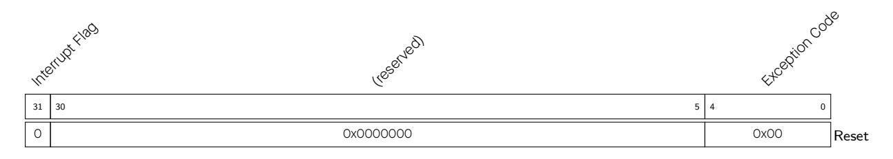
Exception Code This field is automatically updated with unique ID of the most recent exception or interrupt due to which CPU entered trap. (R/W)
Possible exception IDs are:
Note : Exception ID 0x0 (instruction access misaligned) is not present because CPU always masks the lowest bit of the address during instruction fetch.
Interrupt Flag This flag is automatically updated when CPU enters trap. (R/W)
If this is found to be set, indicates that the latest trap occurred due to interrupt. For exceptions it remains unset.
Note : The interrupt controller is using up IDs in range 1-31 for all external interrupt sources. This is different from the RISC-V standard which has reserved IDs in range 0-15 for core internal interrupt sources.
MTVAL Machine trap value. (R/W)
This is automatically updated with an exception dependent data which may be useful for handling that exception.
Data is to be interpreted depending upon exception IDs:
Note : The value of this register is not valid for other exception IDs and interrupts.
INST_COMP Count Compressed Instructions. (R/W)
BRANCH_TAKEN Count Branches Taken. (R/W)
BRANCH Count Branches. (R/W)
JMP_UNCOND Count Unconditional Jumps. (R/W)
STORE Count Stores. (R/W)
LOAD Count Loads. (R/W)
IDLE Count IDLE Cycles. (R/W)
JMP_HAZARD Count Jump Hazards. (R/W)
LD_HAZARD Count Load Hazards. (R/W)
INST Count Instructions. (R/W)
CYCLE Count Clock Cycles. Cycle count does not increment during WFI mode. (R/W)
Note: Each bit selects a specific event for counter to increment. If more than one event is selected and occurs simultaneously, then counter increments by one only.
COUNT_SAT Counter Saturation Control. (R/W) Possible values:
COUNT_EN Counter Enable Control. (R/W)
Possible values:
MPCCR Machine Performance Counter Value. (R/W)
Register 1.15. cpu_gpio_oen (0x803)
CPU_GPIO_OEN GPIOn (n=0 ~ 21) Output Enable. CPU_GPIO_OEN[7:0] correspond to output enable signals cpu_gpio_out_oen[7:0] in Table 5.11-1 Peripheral Signals via GPIO Matrix . CPU_GPIO_OEN value matches that of cpu_gpio_out_oen. CPU_GPIO_OEN is the enable signal of CPU_GPIO_OUT. (R/W)
CPU_GPIO_IN GPIOn (n=0 ~ 21) Input Value. It is a CPU CSR to read input value (1=high, 0=low) from SoC GPIO pin.
CPU_GPIO_IN[7:0] correspond to input signals cpu_gpio_in[7:0] in Table 5.11-1 Peripheral Signals via GPIO Matrix .
CPU_GPIO_IN[7:0] can only be mapped to GPIO pins through GPIO matrix. For details please refer to Section 5.4 in Chapter IO MUX and GPIO Matrix (GPIO, IO MUX) . (RO)
| Register 1.17. cpu_gpio_out (0x805) | ||||||
|---|---|---|---|---|---|---|
| CPU_GPIO_OUT[7] | CPU_GPIO_OUT[6] |
CPU_GPIO_OUT[5]
CPU_GPIO_OUT[4] |
CPU_GPIO_OUT[3] |
CPU_GPIO_OUT[2]
CPU_GPIO_OUT[1] |
CPU_GPIO_OUT GPIOn (n=0 ~ 21) Output Value. It is a CPU CSR to write value (1=high, 0=low) to SoC GPIO pin. The value takes effect only when CPU_GPIO_OEN is set.
CPU_GPIO_OUT[7:0] correspond to output signals cpu_gpio_out[7:0] in Table 5.11-1 Peripheral Signals via GPIO Matrix .
CPU_GPIO_OUT[7:0] can only be mapped to GP IO pins through G PIO matrix. For details please refer to Section 5.5 in Chapter IO MUX and GPIO Matrix (GPIO, IO MUX) . (R/W)
The interrupt controller allows capturing, masking and dynamic prioritization of interrupt sources routed from peripherals to the RISC-V CPU. It supports:
For the complete list of interrupt registers and detailed configuration information, please refer to Chapter 8 Interrupt Matrix (INTERRUPT) , section 8.4, register group "CPU Interrupt Registers".
Each interrupt ID has 5 prope rties ass ocia ted with it:
When CPU services a pending interrupt, it:
Table 1.5-1 shows the ma ppin g of each interrupt ID with the corre spon ding trap-vector address. In short, the word aligned trap address for an interrupt with a certain ID = i can be calculated as ( mtvec + 4 i ).
Note : ID = 0 is unavailable and therefore cannot be used for capturing inter rupts. This is because the corre spon ding trap vector address (mtvec + 0x00) is reserved for exceptions.
| ID | Address | ID | Address | ID | Address |
ID
Address |
|||
| 0 | NA | 8 | mtvec + 0x20 | 16 | mtvec + 0x40 | 24 | mtvec + 0x60 | ||
| 1 | mtvec + 0x04 | 9 | mtvec + 0x24 | 17 | mtvec + 0x44 | 25 | mtvec + 0x64 | ||
| 2 | mtvec + 0x08 | 10 | mtvec + 0x28 | 18 | mtvec + 0x48 | 26 | mtvec + 0x68 | ||
| 3 | mtvec + 0x0c | 11 | mtvec + 0x2c | 19 | mtvec + 0x4c | 27 | mtvec + 0x6c | ||
| 4 | mtvec + 0x10 | 12 | mtvec + 0x30 | 20 | mtvec + 0x50 | 28 | mtvec + 0x70 | ||
| 5 | mtvec + 0x14 | 13 | mtvec + 0x34 | 21 | mtvec + 0x54 | 29 | mtvec + 0x74 | ||
| 6 | mtvec + 0x18 | 14 | mtvec + 0x38 | 22 | mtvec + 0x58 | 30 | mtvec + 0x78 | ||
Table 1.5-1. ID wise map of Interrupt Trap-Vector Addresses
After jumping to the trap-vector, the execution flow is dependent on software implementation, although it can be presumed that the interrupt will get handled (and cleared) in some interrupt service routine (ISR) and later the normal execution will resume once the CPU encounters MRET instruction.
Upon execution of MRET instruction, the CPU:
It is p ossibl e to perform softwa re assi sted ne sting of interrupts inside a n ISR as explained in 1.5.3.
The below listed points outline the f unction al behavior of the controller:
There is latency involved while configuring the Interrupt Controller.
In steady state operation, the Interrupt Controller has a fixed latency of 4 cycles. Steady state means that no changes have been made to the Interrupt Controller registers recently. This implies that any interrupt that is asserted to the controller will take exactly 4 cycles before the CPU starts processing the interrupt. This further implies that CPU may execute up to 5 instructions before the preemption happens.
Whenever any of its registers are modified, the Interrupt Controller enters into transient state, which may take up to 4 cycles for it to settle down into steady state again. During this transient state, the ordering of interrupts may not be predictable, and therefore, a few safety measures need to be taken in software to avoid any synchronization issues.
Also, it must be noted that the Interrupt Controller configuration registers lie in the APB address range, hence any R/W access to these registers may take multiple cycles to complete.
In consideration of above mentioned characteristics, users are advised to follow the sequence described below, whenever modifying any of the Interrupt Controller registers:
Due to its critical nature, it is recommended to disable interrupts globally (MIE=0) beforehand, whenever configuring interrupt controller registers, and then restore MIE right after, as shown in the sequence above.
After execution of the sequence above, the Interrupt Controller will resum e op eration in steady state.
By default, interrupts are disabled globally, since the reset value of MIE bit in mstatus is 0. Software must set MIE=1 after initialization of the interrupt stack (including setting mtvec to the interrupt vector address) is done.
During normal execution, if an interrupt n is to be enabled, the bel ow se que nce may be followed:
When one or more interrupts become pending, the CPU acknowledges (claims) the interrupt with the highest priority and jumps to the trap vector address corresponding to the interrupt's ID. Software implementation may read mcause to infer the type of trap (mcause(31) is 1 for interrupts and 0 for exceptions) and then the ID of the interrupt (mcause(4-0) gives ID of interrupt or exception). This inference may not be necessary if each entry in the trap vector are jump instructions to different trap handlers. Ultimately, the trap handler(s) will redir ect execu tion to the appropriate I SR for this in terrupt.
Upon enterin g into an ISR, s oftware must toggle the n th bit of INTERRUPT_CORE0_CPU_INT_CLEAR_REG if the interrupt is of edge type, or clear the source of the interrupt if it is of level type.
Software may also update the value of INTERRUPT_CORE0_CPU_INT_THRESH_REG and program MIE=1 for allowing higher priority interrupts to preempt the current ISR ( nesting), however, before doing so, all the s tate CSRs must be saved (mepc, mstatus, mcause, etc.) since they will get overwritten due to occurrence of such an interrupt. Later, when exiting the IS R, the values of these CSRs must be restored .
Finally, after the execution returns from the ISR back to the trap handler, MRET instruction is used to resume normal execution.
Later, if the n interrupt is no longer needed and needs to be disabled, the following sequence may be followed:
Above is only a suggested scheme of operation. Actual software implementation may vary.
The addresses in this section are relative to Interrupt Controller base address provided in Table 3.3-3 in Chapter 3 System and Memory .
For the complete list of interrupt registers and detailed configuration information, please refer to Chapter 8 Interrupt Matrix (INTERRUPT) , section 8.4, register group "CPU Interrupt Registers".
The addresses in this section are relat ive to Interrupt Controller base address provided in Table 3.3-3 in Chapter 3 System and Memory .
For the complete list of interrupt registers and detailed configuration information, please refer to Chapter 8 Interrupt Matrix (INTERRUPT) , section 8.4, register group "CPU Interrupt Registers".
This section describes how to debug and test software running on CPU core. Debug support is provided through standard JTAG pins and complies to RISC-V External Debug Support Specification version 0.13.
Figure 1.6-1 below shows the main components of External Debug Support.
Figure 1.6-1. Debug System Overview
The user interacts with the Debug Host (eg. laptop), which is running a debugger (eg. gdb). The debugger communicates with a Debug Translator (eg. OpenOCD, which may include a hardware driver) to communicate with Debug Transport Hardware (eg. Olimex USB-JTAG adapter). The Debug Transport Hardware connects the Debug Host to the ESP-RV Core's Debug Transport Module (DTM) through standard JTAG interface. The DTM provides access to the Debug Module (DM) using the Debug Module Interface (DMI).
The DM allows the debugger to halt the core. Abstract commands provide access to its GPRs (general purpose registers). The Program Buffer allows the debugger to execute arbitrary code on the core, which allows access to additional CPU core state. Alternatively, additional abstract commands can provide access to additional CPU core state. ESP-RV core contains Trigger Module supporting 8 triggers. When trigger conditions are met, cores will halt spontaneously and inform the debug module that they have halted.
System bus access block allows memory and peripheral register access without using RISC-V core.
Espressif Systems 47
Basic debug functionality supports below features.
As mentioned earlier, Debug Scheme conforms to RISC-V External Debug Support Specification version 0.1 3. Please refer the specs for functional operation details.
Below is the list of Debug CSR's supported by ESP-RV core.
The abbreviations given in Column Access are explained in Section Access Types for Registers .
| The abbreviations given in Column Access are explained in Section Access Types for Registers. | |||
|---|---|---|---|
| Name | Description | Address | Access |
| dcsr | Debug Control and Status | 0x7B0 | R/W |
| dpc | Debug PC | 0x7B1 | R/W |
| dscratch0 | Debug Scratch Register 0 | 0x7B2 | R/W |
All the debug module registers are implemented in conformance to RISC-V External Debug Support Sp ecification version 0.13. Please refer it for more details.
Below are the details of Debug CSR's supported by ESP-RV core
xdebugver Debug version. (RO)
ebreaku When 1, ebreak instructions in User/Application Mode enter Debug Mode. (R/W)
stopcount This bit is not implemented. Debugger will always read this bit as 0. (RO)
Other values are reserved for future use. (RO)
*Note: Different from RISC-V Debug specification 0.13
dpc Upon entry to debug mode, dpc is written with the virtual address of the instruction that encountered the exception. When resuming, the CPU core's PC is updated to the virtual address stored in dpc. A debugger may write dpc to change where the CPU resumes. (R/W)
dscratch0 Used by Debug Module internally. (R/W)
dscratch1 Used by Debug Module internally. (R/W)
Hardware Trigger module provides breakpoint and watchpoint capability for debugging. It includes the following features:
The Hardware Trigger module provides four CSRs, which are listed under register summary section. Among these, tdata1 and tdata2 are abstract CSRs, which means they are shadow registers for accessing internal registers for each of the eight trigger units, one at a time.
To choose a particular trigger unit write the index (0-7) of that unit into tselect CSR. When t select is written with a valid in dex, the ab stract CSRs tdata1 and tdata2 are automatically mapped to reflect internal registers of that trigger unit. Each trigger unit has two internal registers, namely mcontrol and maddress, which are mapped to tdata1 and tdata2, respectively.
Writing larger than allowed indexes to tselect will clip the written value to the largest valid index, which can be read back. This property may be used for enumerating the number of availab le tri ggers durin g initialization or when using a debugger.
Since software or debugger may need to know the type of the selected trigger to correctly interpret tdata1 and tdata2, the 4 bits (31-28) of tdata1 encodes the type of the selected trigger. This type field is read-only and always provides a value of 0x2 for every trigger, which stands for match type trigger, hence, it is inferred that tdata1 and tdata2 are to be interpreted as mcontrol and maddress. The information regarding other possible values can be found in the RISC-V Debug Specification v0.13, but this trigger module only supports type 0x2.
Once a trigger unit has been chosen by writing its index to tselect, it will become possible to configure it by setting the appropriate bits in mcontrol CSR (tdata1) and writing the target address to maddress CSR (tdata2).
Each trigger unit can be configured to either cause breakpoint exception or enter debug mode, by writing to the action bit of mcontrol. This bit can only be written from debugger, thus by default a trigger, if enabled, will cause breakpoint exception.
mcontrol for each trigger unit has a hit bit which may be read, after CPU halts or enters exception, to find out if this was the trigger unit that fired. This bit is set as soon as the corresponding trigger fires, but it has to be manually cleared before resuming operation. Although, failing to clear it doesn't affect normal execution in any way.
Each trigger unit only supports match on address, although this address could either be that of a load/store access or the virtual address of an instruction. The address and size of a region are specified by writing to maddress (tdata2) CSR for the selected trigger unit. Larger than 1 byte region sizes are specified through NAPOT (naturally aligned power of two) encoding (see Table 1.7-1) and enabled by setting match bit in mcontrol. Note that for NAPOT encoded addresses, by definition, the start address is constrained to be aligned to (i.e. an integer multiple of) the region size.
| Table 1.7-1. NAPOT encoding for maddress | ||
| maddress(31-0) | Start Address | Size (bytes) |
| aaaaaaaaaaaa0 | aaaaaaaaaaaa0 | |
| aaaaaaaaaaa01 | aaaaaaaaaaa00 | |
| aaaaaaaaaa011 | aaaaaaaaaa000 | |
| aaaaaaaaa0111 | aaaaaaaaa0000 | 16 |
tcontrol CSR is common to all trigger units. It is used for preventing triggers from causing repeated exceptions in machine-mode while execution is happening inside a trap handler. This also disables breakpoint exceptions inside ISRs by default, although, it is possible to manually enable this right before entering an ISR, for debugg ing purposes. This CSR is not relevant if a trigger is configured to enter debug mode.
When hart is halted and enters debug mode due to the firing of a trigger (action = 1):
When hart goes int o trap due to the firing of a trigger (action = 0) :
Note : If t wo different triggers fire at the same time, one with action = 0 and another with action = 1, then hart is halted and enters debug mode.
Below is a list of Trigger Module CSRs supported by the CPU. These are only accessible from machine-mode.
The abbreviations given in Column Access are explained in Section Access Types for Registers .
Espressif Systems 52
| Chapter 1 ESP-RISC-V CPU | GoBack | ||
| Name | Description | Address | Access |
| tselect | Trigger Select Register | 0x7A0 | R/W |
tselect Index (0-7) of the selected trigger unit. (R/W)
This field is reserved since only match type (0x2) triggers are supported.
dmode This is set to 1 if a trigger is being used by the debugger. (R/W *)
* Note : Only writable from debug mode.
This will always be interpreted as fields of mcontrol since only match type (0x2) triggers are supported.
This will always be interpreted as maddress since only match type (0x2) triggers are supported.
mpte Machine mode previous trigger enable bit. (R/W)
dmode Same as dmode in tdata1.
Valid options are:
Note : Writing an invalid value will set this to the default value 0x0.
match Write this for configuring the selected trigger to perform one of the available matching operations on a data/instruction address. (R/W) Valid options are:
Note : Writing a larger v alue will cli p it to the largest possible value 0x1.
maddress Address used by the selected trigger when performing match operation. (R/W) This is decoded as NAPOT when match=1 in mcontrol.
The CPU core includes a physical memory protection unit, which can be used by software to set memory access privileges (read, write and execute permissions) for required memory regions. However it is not fully compliant to the Physical Memory Protection (PMP) description specified in RISC-V Instruction Set Manual, Volume II: Privileged Architecture, Version 1.10. Details of existing non-conformance are provided in next section.
For detailed understanding of the RISC-V PMP concept, please refer to RISC-V Instruction Set Manual, Volume II: Privileged Architecture, Version 1.10.
The PMP unit can be used to restrict access to physical memory. It supports 16 regions and a minimum granularity of 4 bytes. Below are the current non-conformance with PMP description from RISC-V Privilege specifications:
As per RISC-V Privilege specifications, PMP entries should be statically prioritized and the lowest-numbered PMP entry that matches any address byte of an access will determine whether that access succeeds or fails. This means, when any address matches more than one PMP entry i.e. overlapping regions among different PMP entries, lowest number PMP entry will decide whether such address access will succeed or fail.
However, RISC-V CPU PMP unit in ESP32-C3 does not implement static priority. So, software should make sure that all enabled PMP entries are programmed with unique regions i.e. without any region overlap among them. If software still tries to program multiple PMP entries with overlapping region having contradicting permissions, then access will succeed if it matches at least one of enabled PMP entries. An exception will be generated, if access matches none of the enabled PMP entries.
Software can program the PMP unit's configuration and address registers in order to contain faults and support secure execution. PMP CSR's can only be programmed in machine-mode. Once enabled, write, read and execute permission checks are applied to all the accesses in user-mode as per programmed values of enabled 16 pmpcfgX and pmpaddrX registers (refer Register Summary).
By default, PMP grants permission to all accesses in machine-mode and revokes permission of all access in user-mode. This implies that it is mandatory to program address range and valid permissions in pmpcfg and pmpaddr registers (refer Register Summary) for any valid access to pa ss through in user-mode. However, it is not required for machine-mode as PMP permits all accesses to go through by deafult. In cases where PMP checks are also required in machine-mode, software can set the lock bit of required PMP entry to enable permission checks on it. Once lock bit is se t, it can only be cleared through CPU reset.
When any instruction is being fetched from memory region without execute permissions, exception is generated at processor level and exception cause is set as instruction access fault in mcause CSR. Similarly,
any load/store access without valid read/write permissions, will result in exception generation with mcause updated as load access and store access fault respectively. In case of load/store access faults, violating address is captured in mtval CSR.
Below is a list of PMP CSRs supported by the CPU. These are only accessible from machine-mode.
The abbreviations given in Column Access are explained in Section Access Types for Registers .
| Below is a list of PMP CSRs supported by the CPU. These are only accessible from machine-mode. | |||
|---|---|---|---|
| The abbreviations given in Column Access are explained in Section Access Types for Registers. | |||
| Name | Description | Address | Access |
| pmpcfg0 | Physical memory protection configuration. | 0x3A0 | R/W |
|
pmpcfg1
pmpcfg2 |
Physical memory protection configuration.
Physical memory protection configuration. |
0x3A1
0x3A2 |
R/W
R/W |
| pmpcfg3 | Physical memory protection configuration. | 0x3A3 | R/W |
| pmpaddr0 | Physical memory protection address register. | 0x3B0 | R/W |
| pmpaddr1 | Physical memory protection address register. | 0x3B1 | R/W |
| pmpaddr2 | Physical memory protection address register. | 0x3B2 | R/W |
| pmpaddr3 | Physical memory protection address register. | 0x3B3 | R/W |
| pmpaddr4 | Physical memory protection address register. | 0x3B4 | R/W |
| pmpaddr5 | Physical memory protection address register. | 0x3B5 | R/W |
| pmpaddr6 | Physical memory protection address register. | 0x3B6 | R/W |
| pmpaddr7 | Physical memory protection address register. | 0x3B7 | R/W |
| pmpaddr8 | Physical memory protection address register. | 0x3B8 | R/W |
| pmpaddr9 | Physical memory protection address register. | 0x3B9 | R/W |
| pmpaddr10 | Physical memory protection address register. | 0x3BA | R/W |
| pmpaddr11 | Physical memory protection address register. | 0x3BB | R/W |
| pmpaddr12 | Physical memory protection address register. | 0x3BC | R/W |
| pmpaddr13 | Physical memory protection address register. | 0x3BD | R/W |
PMP unit implements all pmpcfg0-3 and pmpaddr0-15 CSRs as defined in RISC-V Instruction Set Manual Volume II: Privileged Architecture, Version 1.10.
General Direct Memory Access (GDMA) is a feature that allows peripheral-to-memory, memory-to-peripheral, and memory-to-memory data transfer at a high speed. The CPU is not involved in the GDMA transfer, and therefore it becomes more efficient with less workload.
The GDMA controller in ESP32-C3 has six independent channels, i.e. three transmit channels and three receive channels. These six channels are shared by peripherals with GDMA feature, namely SPI2, UHCI0 (UART0/UART1), I2S, AES, SHA, and ADC. Users can assign the six channels to any of these peripherals. UART0 and UART1 use UHCI0 together.
The GDMA controller uses fixed-priority and round-robin channel arbitration schemes to manage peripherals' needs for bandwidth.
The GDMA controller has the following features:
Espressif Systems 60
In ESP32-C3, all modules that need high-speed data transfer support GDMA. The GDMA controller and CPU data bus have access to the same address space in internal RAM. Figure 2.3-1 shows the basic architecture of the GDMA engine.
Figure 2.3-1. GDMA Engine Architecture
The GDMA controller has six independent channels, i.e. three transmit channels and three receive channels. Every channel can be connected to different peripherals. In other words, channels are general-purpose, shared by peripherals.
The GDMA engine reads data from or writes data to internal RAM via the AHB_BUS. Before this, the GDMA controller uses fixed-priority arbitration scheme for channels requesting read or write access. For available address range of Internal RAM, please see Chapter 3 System and Memory .
Software can use the GDMA engine through linked lists. These linked lists, stored in internal RAM, consist of outlink n and inlink n , where n indicates the channel number (ranging from 0 to 2). The GDMA controller reads an outlink n (i.e. a linked list of transmit descriptors) from internal RAM and transmits data in corresponding RAM according to the outlink n , or reads an inlink n (i.e. a linked list of receive descriptors) and stores received data into specific address space in RAM according to the inlink n .
Figure 2.4-1. Structure of a Linked List
Figure 2.4-1 shows the structure of a linked list. An outlink and an inlink have the same structure. A linked list is formed by one or more descriptors, and each descriptor consists of three words. Linked lists should be in internal RAM for the GDMA engine to be able to use them. The meaning of each field is as follows:
• Owner (DW0) [31]: Specifies who is allowed to access the buffer that this descriptor points to. 1'b0: CPU can access the buffer;
1'b1: The GDMA controller can access the buffer.
When the GDMA controller stops using the buffer, this bit in a receive descriptor is automatically cleared by hardware, and this bit in a transmit descriptor is automatically cleared by hardware only if GDMA_OUT_AUTO_WRBACK_CH n is set to 1. Software can disable automatic clearing by hardware by setting GDMA_OUT_LOOP_TEST_CH n or GDMA_IN_LOOP_TEST_CH n bit. When software loads a linked list, this bit should be set to 1.
Note: GDMA_OUT is the prefix of t ransmit channel registers, and GDMA_IN is the prefix of receive chann el registers.
• suc_eof (DW0) [30]: Specifies whether the GDMA_IN_SUC_EOF_CH n _INT or GDMA_OUT_EOF_CH n _INT interrupt will be triggered when the data corresponding to this descriptor has been received or transmitted.
1'b0: No interrupt will be triggered after the current descriptor's successful transfer;
1'b1: An interrupt will be triggered after the current descriptor's successful transfer.
For receive descriptors, software needs to clear this bit to 0, and hardware will set it to 1 after receiving data containing the EOF flag.
For transmit descriptors, software needs to set this bit to 1 as needed.
If software configures this bit to 1 in a descriptor, the GDMA will include the EOF flag in the data sent to the corresponding peripheral, indicating to the peripheral that this data segment marks the end of one transfer phase.
If the length of data received is smaller than the size of the buffer, the GDMA controller will not use the available space of the buffer in the next transaction.
The GDMA controller can transfer data from memory to peripheral (transmit) and from peripheral to memory (receive). A transmit channel transfers data in the specified memory location to a peripheral's transmitter via an outlink n , whereas a receive channel transfers data received by a peripheral to the specified memory location via an inlink n .
Every transmit and receive channel can be connected to any peripheral with GDMA feature. Table 2.4-1 illustrates how to select the peripheral to be connected via registers. When a channel is connected to a peripheral, the rest channels can not be connected to that peripheral.
| Table 2.4-1. Selecting Peripherals via Register Configuration | ||
|---|---|---|
|
GDMA_PERI_IN_SEL_CHn
GDMA_PERI_OUT_SEL_CHn |
Peripheral | |
| 0 | SPI2 | |
| 1 | Reserved | |
| 2 | UHCI0 | |
| 3 | I2S | |
| 4 | Reserved | |
| 5 | Reserved | |
| 6 | AES | |
| 7 | SHA | |
| 8 | ADC | |
The GDMA controller also allows memory-to-memory data transfer. Such data transfer can be enabled by setting GDMA_MEM_TRANS_EN_CH n , which connects the output of transmit channel n to the input of receive channel n . Note that a transmit channel is only connected to the receive channel with the same number ( n ).
Software uses the GDMA controller through linked lists. When the GDMA controller receives data, software loads an inlink, configures GDMA_INLINK_ADDR_CH n field with address of the first receive descriptor, and sets GDMA_INLINK_START_CH n bit to enable GDMA. When the GDMA controller transmits data, software loads an outlink, prepares data to be transmitted, configures GDMA_OUTLINK_ADDR_CH n field with address of the first transmit descriptor, and sets GDMA_OUTLINK_START_ CH n bit to enable GDMA. GDMA_INLINK_START_CH n bit and GDMA_OUTLINK_STAR T_CH n bit are cleared automatically by hardware.
In some cases, you may want to append more des criptors to a DMA transfer that is already started. Naively, it would seem to be possible t o do this by clearing the EOF b it of the final descri ptor in the existing list and setti ng its next descriptor address pointer field (DW2) to the first descriptor of the to-be-added list. However, this strategy fails if the existing DMA transfer is almost or entirely finished. Instead, the GDMA engine has specialized logic to make sure a DMA transfer can be continued or restarted: if it is still ongoing, it will make sure to take the appended descriptors into account; if the transfer has already finished, it will restart with the new descriptors. This is implemented in the Restart function.
When using the Restart function, software needs to rewrite address of the first descriptor in the new list to DW2 of the last descriptor in the loaded list, and set GDMA_INLINK_RESTART_CH n bit or
GDMA_OUTLINK_RESTART_CH n bit (these two bits are cleared automatically by hardware). As shown in Figure 2.4-2, by doing so hardware can obtain the address of the first descriptor in the new list when reading the last descriptor in the loaded list, and then read the new l ist.
Figure 2.4-2. Relationship among Linked Lists
Once configured and enabled by software, the GDMA controller starts to read the linked list from internal RAM. The GDMA performs checks on descriptors in the linked list. Only if descriptors pass the checks, will the corresponding GDMA channel transfer data. If the descriptors fail any of the checks, hardware will trigger descriptor error interrupt (either GDMA_IN_DSCR_ERR_CH n _INT or GDMA_OUT_DSCR_ERR_CH n _INT), and the channel will halt.
The checks performed on descriptors are:
• Owner bit check when GDMA_IN_CHECK_OWNER_CH n or GDMA_OUT_CHECK_OWNER_CH n is set to 1.
Espressif Systems 64
If the owner bit is 0, the buffer is accessed by the CPU. In this case, the owner bit fails the check. The owner bit will not be checked if GDMA_IN_CHECK_OWNER_CH n or GDMA_OUT_CHECK_OWNER_CH n is 0;
• Buffer address pointer (DW1) check. If the buffer address pointer points to 0x3FC80000 ~ 0x3FCDFFFF (please refer to Section 2.4.7), i t passes the check.
After software detects a descriptor error interrupt, it must reset the corresponding channel, and enable GDMA by setting GDMA_OUTLINK_START_CH n or GDMA_INLINK_START_CH n bit.
Note: The third word (DW2) i n a de scriptor can only point to a location in internal RAM, given that the third word points to the next descriptor to use and that all descriptors must be in internal memory.
The GDMA controller uses EOF (end of frame) flags to indicate the end of data segment transfer corresponding to a specific descriptor.
Before the GDMA controller transmits data, GDMA_OUT_TOTAL_EOF_CH n _INT_ENA bit should be set to enable GDMA_OUT_TOTAL_EOF_CH n _INT interrupt. If data in the buffer pointed by the last descriptor (with EOF) has been transmitted, a GDMA_OUT_TOTAL_EOF_CH n _INT interrupt is generated.
Before the GDMA controller receives data, GDMA_IN_SUC_EOF_CH n _INT_ENA bit should be set to enable GDMA_IN_SUC_EOF_CH n _INT interrupt. If a data segment with an EOF flag has been received successfully, a GDMA_IN_SUC_EOF_CH n _INT interrupt is generated. In addition, when GDMA channel is connected to UHCI0, the GDMA controller also supports GDMA_IN_ERR_CH n _EOF_INT interrupt. This interrupt is enabled by setting GDMA_IN_ERR_EOF_CH n _INT_ENA bit, and it indicates that a data segment corresponding to a descriptor has been received with errors.
When detecting a GDMA_OUT_TOTAL_EOF_CH n _INT or a GDMA_IN_SUC_EOF_CH n _INT interrupt, software can record the value of GDMA_OUT_EOF_DES_ ADDR_CH n or GDMA_IN_SUC_EOF_DES_ADDR_CH n field, i.e. address of the last descriptor. Therefore, software can tell which descriptors have been used and reclaim them.
Note: In this chapter, E OF of transmit descriptors refers to s uc _eof, while EOF of receive descriptors r efers to both suc_eof and err_eof.
Any transmit and receive channels of GDMA can access 0x3FC80000 ~ 0x3FCDFFFF in internal RAM. To improve data transfer efficiency, GDMA can send data in burst mode, which is disabled by default. This mode is enabled for receive channels by setting GDMA_IN_DATA_BURST_EN_CH n , and enabled for transmit channels by setting GDMA_OUT_DATA_BURST_EN_CH n .
|
Inlink/Outlink
Inlink |
Burst Mode | Size | Length | Buffer Address Pointer |
|
0
1 |
—
Word-aligned |
—
— |
—
Word-aligned |
|
| Outlink | 0 | — | — | — |
| 1 | — | — | — |
Table 2.4-2 lists the requirements for descriptor field alignment when accessing internal RAM.
When burst mode is disabled, size, length, and buffer address pointer in both transmit and receive descriptors do not need to be word-aligned. That is to say, GDMA can read data of specified length (1 ~ 4095 bytes) from any s tart ad dresses in the accessible address range, or write received data of the specified length (1 ~ 4095 bytes) to any contiguous addresses in the accessible address range.
When burst mode is enabled, size, length, and buffer address pointer in transmit descriptors are also not necessarily word-aligned. However, size and buffer address pointer in receive descriptors except length should be word-aligned.
To ensure timely response to peripherals running at a high speed with low latency (such as SPI), the GDMA controller implements a fixed-priority channel arbitration scheme. That is to say, each channel can be assigned a priority from 0 ~ 9. The larger the number, the higher the priority, and the more timely the response. When several channels are assigned the same priority, the GDMA controller adopts a round-robin arbitration scheme.
Please note that the overall throughput of peripherals with GDMA feature cannot exceed the maximum bandwidth of the GDMA, so that requests from low-priority peripherals can be responded to.
GDMA's clock and reset should be configured as follows:
To transmit data, GDMA's transm it channel should be configured by software as follows:
To receive data, GDMA's receive channel should be configured by software as follows:
5. Configure and enable the corresponding peripheral (SPI2, UHCI0 (UART0 or UART1), I2S, AES, SHA, and ADC). See details in individual chapters of these peripherals;
To transfer data from one memory location to another, GDMA should be configured by software as follows:
The addresses in this section are relative to GDMA base address provided in Table 3.3-3 in Chapter 3 System and Memory .
The abbreviations given in Column Access are explained in Section Access Types for Registers .
| and Memory. | |||
|---|---|---|---|
| The abbreviations given in Column Access are explained in Section Access Types for Registers. | |||
| Name | Description | Address | Access |
|
Interrupt Registers
GDMA_INT_RAW_CH0_REG |
Raw status interrupt of RX channel 0 | 0x0000 | R/WTC/SS |
| GDMA_INT_ST_CH0_REG | Masked interrupt of RX channel 0 | 0x0004 | RO |
| GDMA_INT_ENA_CH0_REG | Interrupt enable bits of RX channel 0 | 0x0008 | R/W |
| GDMA_INT_CLR_CH0_REG | Interrupt clear bits of RX channel 0 | 0x000C | WT |
| GDMA_INT_RAW_CH1_REG | Raw status interrupt of RX channel 1 | 0x0010 | R/WTC/SS |
| GDMA_INT_ST_CH1_REG | Masked interrupt of RX channel 1 | 0x0014 | RO |
| GDMA_INT_ENA_CH1_REG | Interrupt enable bits of RX channel 1 | 0x0018 | R/W |
| GDMA_INT_CLR_CH1_REG | Interrupt clear bits of RX channel 1 | 0x001C | WT |
| GDMA_INT_RAW_CH2_REG | Raw status interrupt of RX channel 2 | 0x0020 | R/WTC/SS |
| GDMA_INT_ST_CH2_REG | Masked interrupt of RX channel 2 | 0x0024 | RO |
| GDMA_INT_ENA_CH2_REG | Interrupt enable bits of RX channel 2 | 0x0028 | R/W |
| GDMA_INT_CLR_CH2_REG | Interrupt clear bits of RX channel 2 | 0x002C | WT |
| Configuration Register | |||
| GDMA_MISC_CONF_REG | Miscellaneous register | 0x0044 | R/W |
| Version Registers | |||
| GDMA_DATE_REG | Version control register | 0x0048 | R/W |
|
Configuration Registers
GDMA_IN_CONF0_CH0_REG |
Configuration register 0 of RX channel 0 | 0x0070 | R/W |
| GDMA_IN_CONF1_CH0_REG | Configuration register 1 of RX channel 0 | 0x0074 | R/W |
| GDMA_IN_POP_CH0_REG |
Pop control register of RX channel 0
Link descriptor configuration and |
0x007C | varies |
| GDMA_IN_LINK_CH0_REG | control register of RX channel 0 | 0x0080 | varies |
| GDMA_OUT_CONF0_CH0_REG | Configuration register 0 of TX channel 0 | 0x00D0 | R/W |
| GDMA_OUT_CONF1_CH0_REG | Configuration register 1 of TX channel 0 | 0x00D4 | R/W |
| GDMA_OUT_PUSH_CH0_REG | Push control register of TX channel 0 | 0x00DC |
varies
varies |
| GDMA_OUT_LINK_CH0_REG | Link descriptor configuration and | 0x00E0 | |
| control register of TX channel 0 | |||
| GDMA_IN_CONF0_CH1_REG | Configuration register 0 of RX channel 1 | 0x0130 | R/W |
| GDMA_IN_CONF1_CH1_REG | Configuration register 1 of RX channel 1 | 0x0134 | R/W |
|
GDMA_IN_POP_CH1_REG
GDMA_IN_LINK_CH1_REG |
Pop control register of RX channel 1
Link descriptor configuration and |
0x013C
0x0140 |
varies
varies |
| control register of RX channel 1 | |||
| GDMA_OUT_CONF0_CH1_REG | Configuration register 0 of TX channel 1 | 0x0190 | R/W |
| GDMA_OUT_CONF1_CH1_REG | Configuration register 1 of TX channel 1 | 0x0194 | R/W |
|
Chapter 2
GDMA Controller (GDMA) |
GoBack | ||
| Name | Description | Address | Access |
| GDMA_OUT_LINK_CH1_REG | Link descriptor configuration and | 0x01A0 | varies |
| control register of TX channel 1 | |||
| GDMA_IN_CONF0_CH2_REG | Configuration register 0 of RX channel 2 | 0x01F0 |
R/W
R/W |
| GDMA_IN_CONF1_CH2_REG | Configuration register 1 of RX channel 2 | 0x01F4 | |
| GDMA_IN_POP_CH2_REG | Pop control register of RX channel 2 | 0x01FC | varies |
| GDMA_IN_LINK_CH2_REG | Link descriptor configuration and | 0x0200 | varies |
| GDMA_OUT_CONF0_CH2_REG |
control register of RX channel 2
Configuration register 0 of TX channel 2 |
0x0250 | R/W |
| GDMA_OUT_CONF1_CH2_REG | Configuration register 1 of TX channel 2 | 0x0254 | R/W |
| GDMA_OUT_PUSH_CH2_REG | Push control register of TX channel 2 | 0x025C | varies |
| Link descriptor configuration and | |||
| GDMA_OUT_LINK_CH2_REG | control register of TX channel 2 | 0x0260 | varies |
| Status Registers | |||
| GDMA_INFIFO_STATUS_CH0_REG | RX FIFO status of RX channel 0 | 0x0078 | RO |
| GDMA_IN_STATE_CH0_REG | Receive status of RX channel 0 | 0x0084 | RO |
| GDMA_IN_SUC_EOF_DES_ADDR_CH0 | Inlink descriptor address when EOF | 0x0088 | RO |
| _REG | occurs of RX channel 0 | ||
| GDMA_IN_ERR_EOF_DES_ADDR_CH0 | Inlink descriptor address when errors | 0x008C | RO |
| _REG | occur of RX channel 0 | ||
| Address of the next receive descriptor | |||
| GDMA_IN_DSCR_CH0_REG | pointed by the current pre-read receive | 0x0090 | RO |
|
descriptor on RX channel 0
Address of the current pre-read receive |
|||
| GDMA_IN_DSCR_BF0_CH0_REG | descriptor on RX channel 0 | 0x0094 | RO |
| Address of the previous pre-read | |||
| GDMA_IN_DSCR_BF1_CH0_REG | receive descriptor on RX channel 0 | 0x0098 | RO |
| GDMA_OUTFIFO_STATUS_CH0_REG | TX FIFO status of TX channel 0 | 0x00D8 | RO |
| GDMA_OUT_STATE_CH0_REG | Transmit status of TX channel 0 | 0x00E4 |
RO
RO |
| GDMA_OUT_EOF_DES_ADDR_CH0_REG | Outlink descriptor address when EOF | 0x00E8 | |
| occurs of TX channel 0 | |||
| GDMA_OUT_EOF_BFR_DES_ADDR_CH0 | The last outlink descriptor address | 0x00EC | RO |
|
_REG
GDMA_OUT_DSCR_CH0_REG |
when EOF occurs of TX channel 0 | RO | |
| Address of the next transmit descriptor | |||
| pointed by the current pre-read | 0x00F0 | ||
| GDMA_OUT_DSCR_BF0_CH0_REG | transmit descriptor on TX channel 0 | ||
|
Address of the current pre-read
transmit descriptor on TX channel 0 |
0x00F4 | RO | |
| Address of the previous pre-read | |||
| GDMA_OUT_DSCR_BF1_CH0_REG | transmit descriptor on TX channel 0 | 0x00F8 | RO |
| GDMA_INFIFO_STATUS_CH1_REG | RX FIFO status of RX channel 1 | 0x0138 | RO |
| GDMA_IN_STATE_CH1_REG | Receive status of RX channel 1 | 0x0144 | RO |
|
GDMA_IN_SUC_EOF_DES_ADDR_CH1
Inlink descriptor address when EOF |
|||
| 0x0148 | RO | ||
|
Chapter 2
GDMA Controller (GDMA) |
GoBack | ||
| Name | Description | Address | Access |
| GDMA_IN_ERR_EOF_DES_ADDR_CH1 | Inlink descriptor address when errors | 0x014C | RO |
| _REG | occur of RX channel 1 | ||
| Address of the next receive descriptor | |||
| GDMA_IN_DSCR_CH1_REG | pointed by the current pre-read receive | 0x0150 | RO |
| descriptor on RX channel 1 | |||
| GDMA_IN_DSCR_BF0_CH1_REG | Address of the current pre-read receive | 0x0154 | RO |
|
descriptor on RX channel 1
Address of the previous pre-read |
|||
| GDMA_IN_DSCR_BF1_CH1_REG | receive descriptor on RX channel 1 | 0x0158 | RO |
| GDMA_OUTFIFO_STATUS_CH1_REG | TX FIFO status of TX channel 1 | 0x0198 | RO |
| GDMA_OUT_STATE_CH1_REG | Transmit status of TX channel 1 | 0x01A4 | RO |
| Outlink descriptor address when EOF | |||
| GDMA_OUT_EOF_DES_ADDR_CH1_REG | occurs of TX channel 1 | 0x01A8 | RO |
| GDMA_OUT_EOF_BFR_DES_ADDR_CH1 | The last outlink descriptor address | ||
| _REG | when EOF occurs of TX channel 1 | 0x01AC | RO |
| Address of the next transmit descriptor | |||
| GDMA_OUT_DSCR_CH1_REG | pointed by the current pre-read | 0x01B0 | RO |
| transmit descriptor on TX channel 1 | |||
| GDMA_OUT_DSCR_BF0_CH1_REG | Address of the current pre-read | 0x01B4 | RO |
| transmit descriptor on TX channel 1 | |||
| GDMA_OUT_DSCR_BF1_CH1_REG | Address of the previous pre-read | 0x01B8 | RO |
| transmit descriptor on TX channel 1 | |||
| GDMA_INFIFO_STATUS_CH2_REG | RX FIFO status of RX channel 2 | 0x01F8 | RO |
| GDMA_IN_STATE_CH2_REG | Receive status of RX channel 2 | 0x0204 | RO |
|
GDMA_IN_SUC_EOF_DES_ADDR_CH2
_REG |
Inlink descriptor address when EOF
occurs of RX channel 2 |
0x0208 | RO |
| GDMA_IN_ERR_EOF_DES_ADDR_CH2 | Inlink descriptor address when errors | ||
| _REG | occur of RX channel 2 | 0x020C | RO |
| Address of the next receive descriptor | |||
| GDMA_IN_DSCR_CH2_REG | pointed by the current pre-read receive | 0x0210 | RO |
| descriptor on RX channel 2 | |||
| Address of the current pre-read receive | |||
| GDMA_IN_DSCR_BF0_CH2_REG | descriptor on RX channel 2 | 0x0214 | RO |
| GDMA_IN_DSCR_BF1_CH2_REG | Address of the previous pre-read | 0x0218 | RO |
| receive descriptor on RX channel 2 | |||
| GDMA_OUTFIFO_STATUS_CH2_REG | TX FIFO status of TX channel 2 | 0x0258 | RO |
|
GDMA_OUT_STATE_CH2_REG
GDMA_OUT_EOF_DES_ADDR_CH2_REG |
Transmit status of TX channel 2 | 0x0264 | RO |
| Outlink descriptor address when EOF | 0x0268 | RO | |
| occurs of TX channel 2 | |||
| GDMA_OUT_EOF_BFR_DES_ADDR_CH2 | The last outlink descriptor address | 0x026C | RO |
| _REG |
when EOF occurs of TX channel 2
Address of the next transmit descriptor |
||
| GDMA_OUT_DSCR_CH2_REG | pointed by the current pre-read | 0x0270 | RO |
|
Chapter 2
GDMA Controller (GDMA) |
GoBack | ||
| Name | Description | Address |
Access
RO |
| GDMA_OUT_DSCR_BF0_CH2_REG | Address of the current pre-read | 0x0274 | |
| transmit descriptor on TX channel 2 | |||
| GDMA_OUT_DSCR_BF1_CH2_REG | Address of the previous pre-read | 0x0278 | RO |
| transmit descriptor on TX channel 2 | |||
| Priority Registers | |||
| GDMA_IN_PRI_CH0_REG | Priority register of RX channel 0 | 0x009C | R/W |
|
GDMA_OUT_PRI_CH0_REG
GDMA_IN_PRI_CH1_REG |
Priority register of TX channel 0
Priority register of RX channel 1 |
0x00FC
0x015C |
R/W
R/W |
| GDMA_OUT_PRI_CH1_REG | Priority register of TX channel 1 | 0x01BC | R/W |
|
GDMA_IN_PRI_CH2_REG
Priority register of RX channel 2 0x021C R/W |
|||
| GDMA_OUT_PRI_CH2_REG | Priority register of TX channel 2 | 0x027C | R/W |
| Peripheral Select Registers | |||
| GDMA_IN_PERI_SEL_CH0_REG | Peripheral selection of RX channel 0 | 0x00A0 | R/W |
| GDMA_OUT_PERI_SEL_CH0_REG | Peripheral selection of TX channel 0 | 0x0100 | R/W |
| GDMA_IN_PERI_SEL_CH1_REG | Peripheral selection of RX channel 1 | 0x0160 | R/W |
| GDMA_OUT_PERI_SEL_CH1_REG | Peripheral selection of TX channel 1 | 0x01C0 | R/W |
The addresses in this section are relative to GDMA base address provided in Table 3.3-3 in Chapter 3 System and Memory .
Register 2.1. GDMA_INT_RAW_CH n _REG ( n : 0-2) (0x0000+ 16* n )
Continued on the next page...
|
rupt. (RO)
GDMA_IN_DSCR_ERR_CHn_INT_ST The raw |
interrupt | status | bit | for | the |
|---|---|---|---|---|---|
|
GDMA_IN_DSCR_ERR_CH_INT interrupt. (RO)
GDMA_OUT_DSCR_ERR_CHn_INT_ST The |
raw
interrupt |
status | bit | for | the |
|
GDMA_OUT_DSCR_ERR_CH_INT interrupt. (RO)
GDMA_IN_DSCR_EMPTY_CHn_INT_ST The |
raw
interrupt |
status | bit | for | the |
|
GDMA_IN_DSCR_EMPTY_CH_INT interrupt. (RO)
GDMA_OUT_TOTAL_EOF_CHn_INT_ST The |
raw
interrupt |
status | bit | for | the |
|
GDMA_OUT_TOTAL_EOF_CH_INT interrupt. (RO)
GDMA_INFIFO_OVF_CHn_INT_ST The raw |
interrupt | status | bit | for | the |
|
GDMA_INFIFO_OVF_L1_CH_INT interrupt. (RO)
GDMA_INFIFO_UDF_CHn_INT_ST The raw |
interrupt | status | bit | for | the |
|
GDMA_INFIFO_UDF_L1_CH_INT interrupt. (RO)
GDMA_OUTFIFO_OVF_CHn_INT_ST The raw GDMA_OUTFIFO_OVF_L1_CH_INT interrupt. (RO) |
interrupt | status | bit | for | the |
|
GDMA_OUTFIFO_UDF_CHn_INT_ST
The raw |
interrupt | status | bit | for | the |
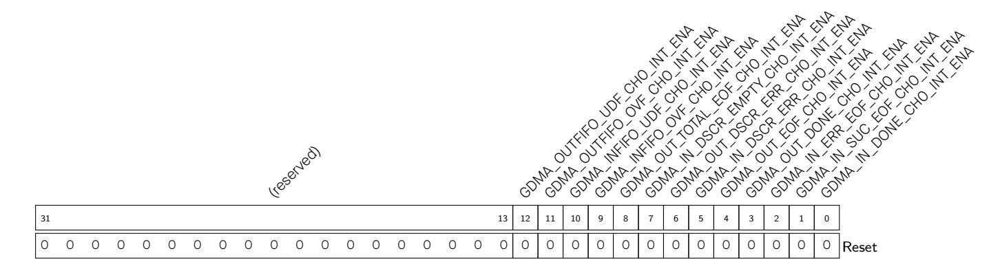
GDMA_IN_DONE_CH n _INT_ENA The interrupt enable bit for the GDMA_IN_DONE_CH_INT interrupt. (R/W)
GDMA_IN_DONE_CH n _INT_CLR Set this bit to clear the GDMA_IN_DONE_CH_INT interrupt. (WT)
GDMA_AHBM_RST_INTER Set this bit, then clear this bit to reset the internal ahb FSM. (R/W)
GDMA_ARB_PRI_DIS Set this bit to disable priority arbitration function. (R/W)
GDMA_CLK_EN 0: Enable the clock only when application writes registers. 1: Force the clock on for registers. (R/W)
GDMA_DATE This is the version control register. (R/W)
GDMA_IN_CHECK_OWNER_CH n Set this bit to enable checking the owner attribute of the descriptor. (R/W)
GDMA_INFIFO_RDATA_CH n This register stores the data popping from GDMA FIFO (intended for debugging). (RO)
GDMA_INFIFO_POP_CH n Set this bit to pop data from GDMA FIFO (intended for debugging). (R/W/SC)
GDMA_OUT_RST_CH n This bit is used to reset GDMA channel 0 TX FSM and TX FIFO pointer. (R/W)
GDMA_OUT_LOOP_TEST_CH n Reserved. (R/W)
GDMA_OUT_CHECK_OWNER_CH n Set this bit to enable checking the owner attribute of the descriptor. (R/W)
GDMA_OUTFIFO_WDATA_CH n This register stores the data that need to be pushed into GDMA FIFO. (R/W)
GDMA_OUTFIFO_PUSH_CH n Set this bit to push data into GDMA FIFO. (R/W/SC)
GDMA_OUTLINK_RESTART_CH n Set this bit to restart a new outlink from the last address. (R/W/SC)
GDMA_OUTLINK_PARK_CH n 1: the transmit descriptor's FSM is in idle state; 0: the transmit descriptor's FSM is working. (RO)
GDMA_INFIFO_FULL_CH n L1 RX FIFO full signal for RX channel 0. (RO)
GDMA_INFIFO_EMPTY_CH n L1 RX FIFO empty signal for RX channel 0. (RO)
GDMA_INFIFO_CNT_CH n The register stores the byte number of the data in L1 RX FIFO for RX channel 0. (RO)
GDMA_IN_REMAIN_UNDER_1B_CH n Reserved. (RO)
GDMA_IN_REMAIN_UNDER_2B_CH n Reserved. (RO)
GDMA_IN_REMAIN_UNDER_3B_CH n Reserved. (RO)
GDMA_IN_REMAIN_UNDER_4B_CH n Reserved. (RO)
GDMA_IN_BUF_HUNGRY_CH n Reserved. (RO)
GDMA_INLINK_DSCR_ADDR_CH n This register stores the lower 18 bits of the next receive descriptor address that is pre-read (but not processed yet). If the current receive descriptor is the last descriptor, then this field represents the address of the current receive descriptor. (RO)
GDMA_IN_DSCR_STATE_CH n Reserved. (RO)
GDMA_IN_STATE_CH n Reserved. (RO)
GDMA_IN_SUC_EOF_DES_ADDR_CH n This register stores the address of the receive descriptor when the EOF bit in this descriptor is 1. (RO)
GDMA_IN_ERR_EOF_DES_ADDR_CH n This register stores the address of the receive descriptor when there are some errors in current receiving data. Only used when peripheral is UHCI0. (RO)
GDMA_INLINK_DSCR_CH n Represents the address of the next receive descriptor x+1 pointed by the current receive descriptor that is pre-read. (RO)
GDMA_INLINK_DSCR_BF0_CH n Represents the address of the current receive descriptor x that is pre-read. (RO)
GDMA_INLINK_DSCR_BF1_CH n Represents the address of the previous receive descriptor x-1 that is pre-read. (RO)
GDMA_OUTFIFO_FULL_CH n L1 TX FIFO full signal for TX channel 0. (RO)
GDMA_OUTFIFO_EMPTY_CH n L1 TX FIFO empty signal for TX channel 0. (RO)
GDMA_OUTFIFO_CNT_CH n The register stores the byte number of the data in L1 TX FIFO for TX channel 0. (RO)
GDMA_OUT_REMAIN_UNDER_1B_CH n Reserved. (RO)
GDMA_OUT_REMAIN_UNDER_2B_CH n Reserved. (RO)
GDMA_OUT_REMAIN_UNDER_3B_CH n Reserved. (RO)
GDMA_OUT_REMAIN_UNDER_4B_CH n Reserved. (RO)
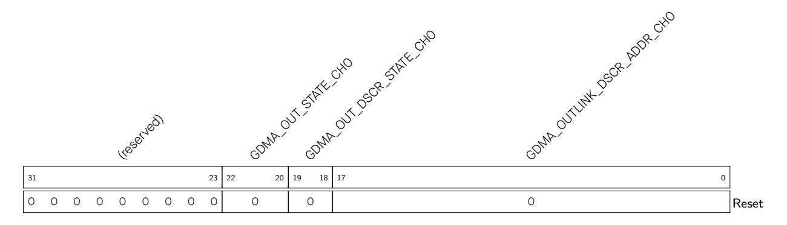
GDMA_OUTLINK_DSCR_ADDR_CH n This register stores the lower 18 bits of the next receive descriptor address that is pre-read (but not processed yet). If the current receive descriptor is the last descriptor, then this field represents the address of the current receive descriptor. (RO)
GDMA_OUT_DSCR_STATE_CH n Reserved. (RO)
GDMA_OUT_STATE_CH n Reserved. (RO)
GDMA_OUT_EOF_DES_ADDR_CH n This register stores the address of the transmit descriptor when the EOF bit in this descriptor is 1. (RO)
Register 2.25. GDMA_OUT_EOF_BFR_DES_ADDR_CH n _REG ( n : 0-2) (0x00EC+192* n )
GDMA_OUT_EOF_BFR_DES_ADDR_CH n This register stores the address of the transmit descriptor before the last transmit descriptor. (RO)
GDMA_OUTLINK_DSCR_CH n Represents the address of the next transmit descriptor y+1 pointed by the current transmit descriptor that is pre-read. (RO)
GDMA_OUTLINK_DSCR_BF0_CH n Represents the address of the current transmit descriptor y that is pre-read. (RO)
GDMA_OUTLINK_DSCR_BF1_CH n Represents the address of the previous transmit descriptor y-1 that is pre-read. (RO)
Register 2.29. GDMA_IN_PRI_CH n _REG ( n : 0-2) (0x009C+192* n )
GDMA_RX_PRI_CH n The priority of RX channel 0. The larger the value, the higher the priority. (R/W)
GDMA_TX_PRI_CH n The priority of TX channel 0. The larger the value, the higher the priority. (R/W)
GDMA_PERI_IN_SEL_CH n This register is used to select peripheral for RX channel 0. 0: SPI2. 1: reserved. 2: UHCI0. 3: I2S. 4: reserved. 5: reserved. 6: AES. 7: SHA. 8: ADC; 9 ~ 63: Invalid. (R/W)
GDMA_PERI_OUT_SEL_CH n This register is used to select peripheral for TX channel 0. 0: SPI2. 1: reserved. 2: UHCI0. 3: I2S. 4: reserved. 5: reserved. 6: AES. 7: SHA. 8: ADC; 9 ~ 63: Invalid. (R/W)
This part provides insights into the system's memory structure, discussing the organization and mapping of RAM, ROM, eFuse, and external memories, offering a framework for understanding memory-related subsystems.
The ESP32-C3 is an ultra-low-power and highly-integrated system with a 32-bit RISC-V single-core processor with a four-stage pipeline that operates at up to 160 MHz. All internal memory, external memory, and peripherals are located on the CPU buses.
Figure 3.2-1 illustrates the system structure and address mapping.
Figure 3.2-1. System Structure and Address Mapping
Addresses below 0x4000_0000 are accessed using the data bus. Addresses in the range of 0x4000_0000 ~ 0x4FFF_FFFF are accessed using the instruction bus. Addresses over and including 0x5000_0000 are shared by the data bus and the instruction bus.
Both data bus and instruction bus are little-endian. The CPU can access data via the data bus using single-byte, double-byte, 4-byte alignment. The CPU can also access data via the instruction bus, but only in 4-byte aligned manner.
The CPU can:
Espressif Systems 92
Figure 3.2-1 lists the address ranges on the data bus and instruction bus and their corresponding target memory.
Some internal and external memory can be accessed via both data bus and instruction bus. In such cases, the CP U can access the same memory using multiple addresses.
The ESP32-C3 consists of the following three types of internal memory:
Based on the three different types of internal memory described above, the internal memory of the ESP32-C3 is split into three segments: Internal ROM (384 KB), Internal SRAM (400 KB), RTC FAST Memory (8 KB).
However, within each segment, there may be different bus access restrictions (e.g., some parts of the segment may only be accessible by the CPU's Data bus). Therefore, each some segments are also further divided into parts. Table 3.3-1 describes each part of internal memory and their address ranges on the data bus and/or instruction bus.
| Bus Type | Boundary Address | Size (KB) | Target | ||
|---|---|---|---|---|---|
| Low Address | High Address | ||||
| Data bus | 0x3FF0_0000 | 0x3FF1_FFFF | 128 | Internal ROM 1 | |
| 0x3FC8_0000 | 0x3FCD_FFFF | 384 | Internal SRAM 1 | ||
| Instruction bus |
0x4000_0000
0x4004_0000 |
0x4003_FFFF
0x4005_FFFF |
256
128 |
Internal ROM 0
Internal ROM 1 |
|
| 0x4037_C000 | 0x4037_FFFF | 16 | Internal SRAM 0 | ||
| Table 3.3-1. Internal Memory Address Mapping |
|---|
| Table 3.3-1 - cont'd from previous page |
|---|
|
Chapter 3
System and Memory |
||||
|---|---|---|---|---|
| Table 3.3-1 – cont'd from previous page | ||||
| Bus Type | Boundary Address | Size (KB) | Target | |
Note:
All of the internal memories are managed by Permission Control module. An internal memory can only be accessed when it is allowed by Permission Control, then the internal memory can be available to the CPU. For more information about Permission Control, please refer to Chapter 14 Permission Control (PMS) .
Internal ROM 0 is a 256 KB, read-only memory space, addressed by the CPU only through the instruction bus via 0x4000_0000 ~ 0x4003_FFFF, as shown in Table 3.3-1.
Internal ROM 1 is a 128 KB, read-only memory space, a ddres sed by the CPU through the instruction bus via 0x4004_0000 ~ 0x4005_FFFF or through the data bus via 0x3FF0_0000 ~ 0x3FF1_FFFF in the same order, as shown in Table 3.3-1.
This means, for example, address 04004_0000 and 0x3FF0_0000 correspond to the same word, 0x4004_0004 and 0x3FF0_0004 correspond to the same word, 0x4004_0008 and 0x3FF0_0008 correspond to the same word, etc (the same ordering applies for Internal SRAM 1).
Internal SRAM 0 is a 16 KB, read-and-write memory space, addressed by the CPU through the instruction bus via the range described in Table 3.3-1.
This memory managed by Permission Control, can be configured as instruction cache to store cache instructions or read-only data of the external memory. In this case, the memory cannot be accessed by the CPU. For more information abou t Perm ission Control, please refer to Chapter 14 Permission Control (PMS) .
Interna l SRAM 1 is a 384 KB, read-and-write memory space, addressed by th e CPU through the data bus or instruction bus, in the same order, via the ranges described in Table 3.3-1.
RTC FAST Memory is a 8 KB, read-and-write SRAM, addressed by th e CPU through the data/instruction bus via the shared address 0x5000_0000 ~ 0x5000_1FFF, as described in Table 3.3-1.
ESP32-C3 supports SPI, Dual SPI, Quad SPI, and QPI interfaces that allow conn ection to multiple external flash. It supports hardware manual encryption and automatic decryption based on XTS_AES to protect user programs and data in the external flash.
The CPU accesses the external memory via the cache. According to the MMU (Memory Management Unit) settings, the cache maps the CPU's address to the external memory's physical address. Due to this address mapping, the ESP32-C3 can address up to 16 MB external flash.
Using the cache, ESP32-C3 is able to support the following address space mappings. Note that the instruction bus address space (8MB) and the data bus address space (8 MB) is always shared.
Table 3.3-2 lists the mapping between the cache and the corresponding address ranges on the data bus and instruction bus.
| Table 3.3-2. External Memory Address Mapping | |||||
|---|---|---|---|---|---|
| Bus Type | Boundary Address | Size (MB) | Target | ||
| Low Address | High Address | ||||
|
Data
bus (read |
0x3C00_0000 | 0x3C7F_FFFF |
8
Uniform Cache |
||
Note:
Only if the CPU obtains permission for accessing the external memory, can it be responded for memory access. For more detailed information about permission control, please refer to Chapter 14 Permission Control (PMS) .
As shown in Figure 3.3-1, ESP32-C3 has a read-only uniform cache which is eight-way set-associative, its size is 16 KB and its block size is 32 bytes. When cache is active, some internal memory space will be occupied by cache (see Internal SRAM 0 in Section 3.3.2).
The uniform cache is acc essible by the instruction bus and the data bus at the same time, but can only respond to one of them at a time. When a cache miss occurs, the cache controller will initiate a request to the external memory.

Figure 3.3-1. Cache Structure
ESP32-C3 cache support the following operations:
Please note that the Manual-Invalidate operations will only work on the unlocked data. If you expect to perform such operation on the locked data, please unlock them first.
The GDMA (General Direct Memory Access) peripheral in ESP32-C3 can provide DMA (Direct Memory Access) services including:
GDMA uses the same addresses as the data bus to read and write Internal SRAM 1. Specifically, GDMA uses address range 0x3FC8_0000 ~ 0x3FCD_FFFF to access Internal SRAM 1. Note that GDMA cannot access the internal memory occupied by the cache.
There are 7 peripherals/modules that can work together with GDMA.
As shown in Figure 3.3-2, these 7 vertical lines in turn correspond to these 7 peripherals/modules with GDMA function, the horizontal line represents a certain channel of GDMA (can be any channel), and the intersection of the vertical line and the horizontal line indicates that a peripheral/module has the ability to access the corresponding cha nnel o f GDMA. If there are multiple intersections on the same line, it means that these peripherals/modules cannot enable the GDMA function at the same time.
Figure 3.3-2. Peripherals/modules that can work with GDMA
These peripherals/modules can access any memory available to GDMA. For more information, please refer to Chapter 2 GDMA Controller (GDMA) .
When accessing a memory via GDMA, a corresponding access permission is needed, otherwise this access may fail. For more information a bout permission control, please refer to Chapter 14 Permission Control (PMS) .
The CPU can access modules/peripherals via 0x6000_0000 ~ 0x600D_0FFF shared by the data/instruction bus.
Table 3.3-3 lists all the modules/peripherals and their respective address ranges. Note that the address space of specific modules/peripherals is defined by "Boundary Address" (including both Low Address and High Address).
| Table 3.3-3. Module/Peripheral Address Mapping | ||||
|---|---|---|---|---|
| Target | Low Address |
Boundary Address
High Address |
Size (KB) | Notes |
| UART Controller 0 | 0x6000_0000 | 0x6000_0FFF | 4 | |
| Reserved | 0x6000_1000 | 0x6000_1FFF | ||
| SPI Controller 1 | 0x6000_2000 | 0x6000_2FFF | 4 | |
| SPI Controller 0 | 0x6000_3000 | 0x6000_3FFF | 4 | |
| GPIO | 0x6000_4000 | 0x6000_4FFF | 4 | |
| Reserved | 0x6000_5000 | 0x6000_6FFF | ||
| Reserved | 0x6000_7000 | 0x6000_7FFF | ||
| Low-Power Management | 0x6000_8000 | 0x6000_8FFF | 4 | |
| IO MUX | 0x6000_9000 | 0x6000_9FFF | 4 | |
| Reserved | 0x6000_A000 | 0x6000_FFFF | ||
| UART Controller 1 | 0x6001_0000 | 0x6001_0FFF | 4 | |
| Reserved | 0x6001_1000 | 0x6001_2FFF | ||
| I2C Controller | 0x6001_3000 | 0x6001_3FFF | 4 | |
| UHCI0 | 0x6001_4000 | 0x6001_4FFF | 4 | |
| Reserved | 0x6001_5000 | 0x6001_5FFF | ||
| Remote Control Peripheral | 0x6001_6000 | 0x6001_6FFF | 4 | |
|
Reserved
LED PWM Controller |
0x6001_7000
0x6001_9000 |
0x6001_8FFF
0x6001_9FFF |
4 | |
| eFuse Controller | 0x6001_A000 | 0x6001_AFFF | 4 | |
| Reserved | 0x6001_B000 | 0x6001_EFFF | ||
| Timer Group 0 | 0x6001_F000 | 0x6001_FFFF | 4 | |
| Timer Group 1 | 0x6002_0000 | 0x6002_0FFF | 4 | |
| Reserved | 0x6002_1000 | 0x6002_2FFF | ||
| System Timer | 0x6002_3000 | 0x6002_3FFF | 4 | |
| SPI Controller 2 | 0x6002_4000 | 0x6002_4FFF | 4 | |
| Reserved | 0x6002_5000 | 0x6002_5FFF | ||
| SYSCON | 0x6002_6000 | 0x6002_6FFF | 4 | |
| Reserved | 0x6002_7000 | 0x6002_AFFF | ||
| Two-wire Automotive Interface | 0x6002_B000 | 0x6002_BFFF | 4 | |
| Reserved | 0x6002_C000 | 0x6002_CFFF | ||
| I2S Controller | 0x6002_D000 | 0x6002_DFFF | 4 | |
| Reserved | 0x6002_E000 | 0x6003_9FFF | ||
| AES Accelerator | 0x6003_A000 | 0x6003_AFFF | 4 | |
|
SHA Accelerator
RSA Accelerator |
0x6003_B000
0x6003_C000 |
0x6003_BFFF
0x6003_CFFF |
4
4 |
|
|
Chapter 3
System and Memory |
||||
|---|---|---|---|---|
| Table 3.3-3 – cont'd from previous page | ||||
| Target | Boundary Address | Size (KB) | Notes | |
| Low Address | High Address | |||
| Digital Signature | 0x6003_D000 | 0x6003_DFFF | 4 | |
| HMAC Accelerator | 0x6003_E000 | 0x6003_EFFF | 4 | |
| GDMA Controller | 0x6003_F000 | 0x6003_FFFF | 4 | |
| ADC Controller | 0x6004_0000 | 0x6004_0FFF | 4 | |
|
Reserved
USB Serial/JTAG Controller |
0x6004_1000
0x6004_3000 |
0x6002_FFFF
0x6004_3FFF |
4 | |
| Reserved | 0x6004_4000 | 0x600B_FFFF | ||
| System Registers | 0x600C_0000 | 0x600C_0FFF | 4 | |
| PMS Registers | 0x600C_1000 | 0x600C_1FFF | 4 | |
| Interrupt Matrix | 0x600C_2000 | 0x600C_2FFF | 4 | |
| Reserved | 0x600C_3000 | 0x600C_3FFF | ||
| Reserved | 0x600C_4000 | 0x600C_BFFF | ||
| External Memory Encryption and | 0x600C_C000 | 0x600C_CFFF | 4 | |
| Decryption | ||||
| Reserved | 0x600C_D000 | 0x600C_DFFF | ||
| Assist Debug | 0x600C_E000 | 0x600C_EFFF | 4 |
Table 3.3-3 – cont'd from previous page
ESP32-C3 contains a 4096-bit eFuse controller to store parameters. Once an eFuse bit is programmed to 1, it can never be reverted to 0. The eFuse controller programs individual bits of parameters in eFuse according to user configurations. From outside the chip, eFuse data can only be read via the eFuse Controller. If read-protection for some data is not enabled, that data is readable from outside the chip. If read-protection is enabled, that data can not be read from outside the chip. In all cases, however, some keys stored in eFuse can still be used internally by hardware cryptography modules such as Digital Signature, HMAC, etc., without exposing this data to the outside world.
eFuse data is organized in 11 blocks (BLOCK0 ~ BLOCK10).
BLOCK0, which holds most parameters, has 9 bits that are readable but useless to users, and 60 further bits are reserved for future use.
Table 4.3-1 lists all the parameters accessible (readable and usable) to users in BLOCK0 and their offsets, bit widths, as well as information on whether their configuration is directly accessible by hardware, and whether they are protected from programming.
The E FUSE _WR_DIS parameter is used to disable the writing of other parameters, while EFUSE_RD_DIS is used to disable users from reading BLOCK4 ~ BLOCK10. For more information on these two parameters, please see Section 4.3.1.1 and Section 4.3.1.2.
|
Pa
te ram e rs |
Bit Wi
Ac dt h |
Pro
g le by ib ce ss by rdw Ha are |
min
tio Pro tec ram g- n De DIS Bit US sc r EF E_ WR _ |
Chapter
4 ip ion t |
|---|---|---|---|---|
|
S
S E F U E_ W R_ D I |
3
2 |
Y |
Nu
mb er Re p res / N A b le d. |
eFuse
he he d du l d i ing f in iv i Fu is is ts t t en w r wr o a e se s |
|
S
S E F U E_ R D_ D I |
7 | Y |
a
Re p res 0 d b isa |
Controller
he he d O C ' ing fro B L K 4 1 0 is ts t en w r us ers rea m ~ le d. |
|
S
S_ C C E F U E_ D I I A H E |
2
Re res |
he
he Ca he d b le i isa t en w c |
||
|
S
S G E F U D I U J T A |
1 | Y |
p
2 Re |
(EFUSE)
d. is ts r he he he S d b le U B- -J T A fu ion isa t t to t |
|
S_
E_ B_ E F S D I D O W N L O A I C A C H E |
1 | Y |
p
res |
G
d. is ts en w r nc he he Ca he d b le loa de i |
|
U
E_ S_ D_ E F U S E_ D I S_ U S B_ S E R I A L_ J T A G |
1
1 |
Y
Y |
Re
2 p res Re p res 2 |
d
Do d is isa in ts t en w r c wn mo he he he b_ ia l_ j ip he l is d is ts t t tag en w r us se r p er ra |
|
E
F U S E_ D I S_ F O R C E_ D O W N L O A D |
1 | Y |
b
le d. a Re p res 2 |
he
he he fu ion fo he h ip in ts t t t to t to en w r nc rce c |
|
Do
wn |
loa
d de is d isa b le d. mo |
|||
|
E
F U S E_ D I S_ T W A I |
1 | Y |
Re
2 p res |
he
he he T W A I l ler is d isa b le d. ts t t tro en w r co n |
|
E
F U S E_ J T A G_ S E L_ E N A B L E |
1 | Y |
Re
2 p res |
he
he J T A G d ire ly. ts t to t en w r us e c |
|
E
F U S E_ S O F T_ D I S_ J T A G E F U S E_ D I S_ P A D_ J T A G |
3
1 |
Y
Y |
3
Re 1 p res Re p res 2 |
he
he d b le d he J T A G is isa in f ts t t t en w r so wa y. ( he he d b le d he ha d J T A G is isa in ts t t en wa p er- w r r y |
|
E
F U S E_ D I S_ D O W N L O A D_ M A N U A L_ E N C R Y P T |
1 | Y |
ma
ne Re p res 2 |
).
ly t n he he f la h d b le d ion is isa in Do ts t t en s en cry p wn w r |
|
loa
d |
bo
de t o mo |
|||
|
E
F U S E_ U S B_ E X C H G_ P I N S E F U S E_ V D D_ S P I_ A S_ G P I O |
1
1 |
Y
N |
3
0 Re p res Re p res 3 0 |
he
he he d ha d. D D- ins ts t t + en an p are ex c ng e w r he he he d lar V D D_ S P I in is ts t t en r p us e as a reg w u |
|
E
F U S E_ W D T_ D E L A Y_ S E L |
2 | Y |
G
P I O. Re p res 3 |
he
he h do hre ho l d R T C im is ts t tc t t t en r wa g eo s w u |
|
E
F U S E_ S P I_ B O O T_ C R Y P T_ C N T |
3 | Y |
lec
se Re p res 4 |
d.
te he he S bo / de P I ion ion is ts t t t t en r o en cry p cry p en w GoBack |
Espressif Systems
|
Bit Wi
Pa te ram e rs dt |
le
Ac h Ha |
'd
1 – Pro g le by ib ce ss by rdw are |
m
s e min tio Pro tec ram g- n De DIS Bit US sc r EF E_ WR _ mb Nu er |
Chapter
ip ion t 4 |
|
|---|---|---|---|---|---|
|
E
F U S E_ S E C U R E_ B O O T_ K E Y_ R E V O K E 0 |
1 | N |
Re
p res 5 b en a |
eFuse
he he k he ke ing f irs Se Bo is ts t t t t en rev o cu re o w r y le d. |
|
|
E
F U S E_ S E C U R E_ B O O T_ K E Y_ R E V O K E 1 |
1 | N |
Re
p res 6 en a |
Controller
he he k he d ke ing Se Bo ts t t t en rev o se co n cu re o w r y b le d. |
|
|
E
F U S E_ S E C U R E_ B O O T_ K E Y_ R E V O K E 2 |
1 | N |
is
Re p res 7 b en a |
he
he k he h d ke ing ir Se Bo is ts t t t t en r rev o cu re o w y (EFUSE) le d. |
|
|
E
F U S E_ K E Y_ P U R P O S E_ 0 |
4 | Y |
8
Re res |
b
Ke Ta 4. 3- en ur os se |
|
|
S
O S F U E_ K E Y_ P U R P E_ 1 |
4 | Y |
p
9 Re res |
le
0 2. ts p p e, e y b Ke Ta 4. 3- en ur os se |
|
|
S
O S 2 F U K E P U R P |
4 | Y |
p
1 0 Re |
le
1 2. ts p p e, e y b Ke Ta 4. 3- |
|
|
E
E_ Y_ E_ S O S 3 E F U K E P U R P |
4 | Y |
p
res 1 Re |
le
2 2. ts en y p ur p os e, se e b Ke Ta 4. 3- |
|
|
E_
Y_ E_ |
1
p res |
le
3 2. ts en y p ur p os e, se e |
|||
|
S
O S E F U E_ K E Y_ P U R P E_ 4 E |
4 | Y |
1
2 Re p res |
b
le Ke 4 Ta 4. 3- 2. ts en y p ur p os e, se e |
|
|
F
U S E_ K E Y_ P U R P O S E_ 5 |
4 | Y |
Re
1 3 p res |
Ke
Ta b le 5 4. 3- 2. ts en y p ur p os e, se e |
|
|
F
U S E_ S E C U R E_ B O O T_ E N F U S E_ S E C U R E_ B O O T_ A G G R E S S I V E_ R E V O K E |
1
1 |
N
N |
Re
1 5 p res Re p res 1 6 |
he
he Se Bo is b le d. ts t t en w r cu re o en a he he ive ion f Se Bo ts t t t en w r ag g res s rev oc a o cu re o |
|
|
is
en a |
b
le d. |
||||
|
E
F U S E_ F L A S H_ T P U W |
4 | N |
Re
1 8 p |
he
f la h i ing im f ts t t t te res en s wa e a r p ow er- up |
|
|
E
F U S E_ D I S_ D O W N L O A D_ M O D E |
1 | N |
8
Re 1 p res |
he
he l l do loa d de d isa b le d. ts t en w r a wn mo s are |
|
|
E
F U S E_ U S B_ P R I N T_ C H A N N E L E F U S E_ D I S_ U S B_ S E R I A L_ J T A G_ D O W N L O A D_ M O D E |
1
1 |
N
N |
8
Re 1 p res Re p res 8 1 |
he
he d b le d. U S B in ing is isa ts t t en w r p r he he he l- do loa d U S B- Se ia J T A G fu ts t t en wn nc w r r - |
|
|
E
F U S E_ E N A B L E_ S E C U R I T Y_ D O W N L O A D |
1 | N |
ion
t Re p res 8 1 |
d
b le d. is isa he he do loa d de U A R T is ts t en se cu re wn mo en w r - |
|
|
b
le d. a |
|||||
|
E
F U S E_ U A R T_ P R I N T_ C O N T R O L E F U S E_ F O R C E_ S E N D_ R E S U M E |
2
1 |
N
N |
8
Re 1 p res Re p res 8 1 |
he
bo de U A R T ts t t tp t en o me ss ag e ou mo u he he de d d R O M is fo ts t to en r co rce se n a res um e w |
|
Espressif Systems
| Espressif |
| Systems |
|
Bit Wi
Pa te ram e rs dt |
le
Ac h |
'd
1 – Pro g le by ib ce ss by Ha rdw are |
m
s e min tio Pro tec ram g- n De DIS Bit US sc r EF E_ WR _ mb Nu er |
Chapter
ip ion t 4 |
|---|---|---|---|---|
|
E
F U S E_ S E C U R E_ V E R S I O N 1 |
6 | N |
Re
p res 8 1 tu re |
eFuse
he d by l l ba k ion E S P- I D F i-ro fe ts t t en ve rs us e an c a |
|
E
F U S E_ E R R_ R S T_ E N A B L E |
1 | N |
Re
p res 9 1 is te reg |
Controller
he he he k d B L O C K 0 ts t to to en us e c c er ro rec or w r r rs. |
| (EFUSE) | ||||
| GoBack |
Table 4.3-2 lists all key purpose and their values. Setting the eFuse parameter EFUSE_KEY_PURPOSE_ n declares the purpose of KEY n ( n : 0 ~ 5).
| Table 4.3-2. Secure Key Purpose Values | |
|---|---|
| Key | |
| Purpose | Purposes |
| Values | |
|
0
1 |
User purposes
Reserved |
| 2 | Reserved |
| 3 | Reserved |
| 4 | XTS_AES_128_KEY (flash/SRAM encryption and decryption) |
| 5 | HMAC Downstream mode (both JTAG and DS) |
| 6 | JTAG in HMAC Downstream mode |
| 7 | Digital Signature peripheral in HMAC Downstream mode |
| 8 | HMAC Upstream mode |
| 9 | SECURE_BOOT_DIGEST0 (secure boot key digest) |
Table 4.3-2. Secure Key Purpose Values
Table 4.3-3 provides the details of parameters in BLOCK1 ~ BLOCK10.
|
Espressif
Systems |
|
|---|---|
|
O
C K |
Pa
B i te ram e rs |
Ac
ce W i d h t t Ha |
ite
Wr le by ib ss US EF rdw are |
tio
by d Pro tec Re n a DIS Bit by US E_ WR EF _ Nu mb er |
tio
Pro tec n De ip DIS Bit sc r E_ RD _ Nu mb er |
ion
t |
|---|---|---|---|---|---|---|
|
O
C K 1 |
S
C E F U E_ M A |
4 | N |
2
0 |
/
d N M A a |
dr
es |
|
S
S [ E F U E_ P I_ P A D_ |
8
] 0: 5 |
N |
2
0 |
C
A / C N L |
s | |
|
C
O G [ N F I U R E |
]
6: 1 1 |
N |
2
0 |
A
K ( ) / N D 1 |
||
|
[
1 |
]
2: 1 7 |
N |
2
0 |
Q
A ( ) / 0 N D |
||
|
[
1 |
]
8: 2 3 |
N |
2
0 |
A
D / N C |
||
|
[
2 |
]
2 9 4: |
N |
2
0 |
A
S ( / N H D 3 |
) | |
|
[
3 |
]
0: 3 5 |
N |
2
0 |
A
D ( / N W D 2 |
||
|
[
3 |
]
6: 4 1 |
N |
2
0 |
A
P / N D Q |
) | |
|
[
4 |
]
2: 4 7 |
N |
2
0 |
A
S / N D |
||
|
[
4 |
]
8: 3 5 |
N |
2
0 |
A
4 / N D |
||
| 5 |
9
4: 5 |
N |
2
0 |
A
5 / N D |
||
|
[
6 |
]
6 0: 5 |
N |
2
0 |
A
6 / N D |
||
| E |
[
F U S S Y D A T P A R T 0 |
]
7 |
N |
2
0 |
A
7 / N te |
da |
|
E_
S_ A_ |
8 |
A
Sy s |
ta
m |
|||
|
K
2 E |
F
U S E_ S Y S_ D A T A_ P A R T 1 2 |
6
5 |
N |
2
1 |
/
N A Sy te s |
da
ta m |
|
K
3 |
E
F U S E_ U S R_ D A T A 2 |
6
5 |
N |
2
2 |
/
da N A Us er |
ta |
|
K
4 |
E
F U S E_ K E Y 0_ D A T A 2 |
6
5 |
Y |
2
3 |
0
K E Y 0 or |
da
ta us er |
|
K
5 |
E
F U S E_ K E Y 1_ D A T A 2 |
6
5 |
Y |
2
4 |
K
E Y 1 1 or |
da
ta us er |
|
6
K |
S
2_ E F U E_ K E Y D A T A 2 |
5
6 |
Y |
2
5 |
2
2 K E Y or |
da
ta us er |
|
K
7 |
S
3_ E F U E_ K E Y D A T A 2 |
5
6 |
Y |
2
6 |
3
3 K E Y or |
da
ta us er |
|
8
K |
S
E F U E_ K E Y 4_ D A T A 2 |
5
6 |
Y |
2
7 |
4
K E Y 4 or |
da
ta us er |
|
9
K |
S
E F U E_ K E Y 5_ D A T A 2 |
5
6 |
Y |
2
8 |
5
K E Y 5 or |
da
ta us er |
Among these blocks, BLOCK4 ~ 9 stores KEY0 ~ 5, respectively. Up to six 256-bit keys can be written into eFuse. Whenever a key is written, its purpose value should also be written (see table 4.3-2). For example, when a key for the JTAG function in HMAC Downstream mode is written to KEY3 (i.e., BLOCK7), its key purpose value 6 should also be written to EFUSE_KEY_PURPOSE_3.
Do not program the XTS-AES key into the KEY5 block, i.e., BLOCK9. Otherwise, the key may be unreadable. Instead, program it into the preceding blocks, i.e., BLOCK4 ~ BLOCK8. The last block, BLOCK9, is used to program other keys.
BLOCK1 ~ BLOCK10 use the RS coding scheme, so there are some restrictions on writing to these parameters. For more detailed information, please refer to Section 4.3.1.3 and Section 4.3.2.
Parameter EFUSE_WR_DIS determines whether indivi dual eF use paramet ers are write-protected. After EFUSE_WR_DIS has been pro grammed, execute an eFuse read operation so the new values would take effect.
Column " Write Protection b y EFUSE_WR_DIS Bit Number" in Table 4.3-1 and Table 4.3-3 list the specific bits in EFUSE_WR_DIS that disable writing.
When the write protection bit of a parameter is set to 0, it means that this parameter is not write-protected and can be programmed, unless it has been prog rammed before.
When the write p rotection bit of a parameter is set to 1, it means that this parameter is write-protected and none of its bits can be modified, with non-programmed bits always remaining 0 while programmed bits always remain 1.
Only the eFuse blocks in BLOCK4 ~ BLOCK10 can be individually read protected to prevent any access from outside the chip, as shown in column "Read Protection by EFUSE_RD_DIS Bit Number" of Table 4.3-3. After EFUSE_RD_DIS has been pro grammed, execute an eFuse read operation so the new values would take effect.
If the corresponding EFUSE_RD_DIS bit is 0, then the eFu se block can be read by users; if the corres ponding EFUSE_RD_DIS bit is 1, then the parameter controlled by this bit is user protected.
Other parameters that are not in BLOCK4 ~ BLOCK10 can always be read by users.
When BLOCK4 ~ BL OCK10 are set to be read-protected, the data in these blocks are not readable by users, but they can still be read by hardware cryptography modules, if the EFUSE_KEY_PURPOSE_ n bit is set accordingly.
Internally, eFuses use hardware encoding schemes to protect data from corruption, which are invisible for users.
All BLOCK0 parameters except for EFUSE_WR_DIS are stored with four backups, meaning each bit is stored four times. This backup scheme is not visible to users.
Espressif Systems 106
BLOCK1 ~ BLOCK10 use RS (44, 32) coding scheme that supports up to 6 bytes of automatic error correction. The primitive polynomial of RS (44, 32) is p ( x ) = x 8 + x 4 + x 3 + x 2 + 1.
Figure 4.3-1. Shift Register Circuit (first 32 output)
Figure 4.3-2. Shift Register Circuit (last 12 output)
The shift register circuit shown in Figure 4.3-1 and 4.3-2 processes 32 data bytes using RS (44, 32). This coding scheme encodes 32 bytes of data into 44 bytes:
After that, the hardware burns into eFuse the 44-byte codeword consisting of the data bytes followed by the parity bytes.
When the eFuse block is read back, the eFuse controller automatically decodes the codeword and applies error correction if needed.
Because the RS check codes are generated on the entire 256-bit eFuse block, each block can only be written once.
The eFuse controller can only program eFuse parameters in one block at a time. BLOCK0 ~ BLOCK10 share the same address range to store the parameters to be programmed. Configure parameter EFUSE_BLK_NUM
Espressif Systems 107
ESP32-C3 TRM (Version 1.3)
to indicate which block should be programmed.
When EFUSE_BLK_NUM is set to 0, BLOCK0 will be programmed. Register EFUSE_PGM_DATA0_REG stores EFUSE_WR_DIS. Registers EFUSE_PGM_DATA1_REG ~ EFUSE_PGM_DATA5_REG store the information of parameters to be programmed. Note that 9 BLOCK0 bits are readable but useless to users and must always be set to 0 in the programmi ng registers. The specific bits are:
Data in registers EFUSE_PGM_D ATA6_REG ~ EFUSE_PGM_DATA7_REG and EFUSE_PGM_CHECK_VALUE0_REG ~ EFUSE_PGM_CHECK_VALUE2_REG are ignored when programming BLOC K0.
When EFUSE_BLK_NUM is set to 1, registers EFUSE_PGM_DATA0_REG ~ EFUSE_PGM_DATA5_REG store the BLOCK1 parameters to be programmed. Registers EFUSE_PGM_CHECK_VALUE0_REG ~ EFUSE_PGM_DATA2_REG store the corresponding RS check codes. Data in registers EFUS E_PGM_DATA6_REG ~ EFUSE_PGM_DATA7_REG are ignored whe n programming BLOCK1, and the RS check codes will be calculated with these bits all treated as 0.
When EFUSE_BLK_NUM is set to 2 ~ 10, registers
EFUSE_PGM_DATA0_REG ~ EFUSE_PGM_DATA7_REG store the parameters to be programmed to this block. Registers EFUSE_PGM_CHECK_VALUE0_REG ~ EFUSE_PGM_CHECK_VALUE2_REG store the corresponding RS ch eck codes.
The proc ess of programming parameters is as f ollows:
In BLOCK0, each bit can be programmed separa tely. However, we recommend to minimize programming cycles and program all the bits of a parameter in one programming action. In addition, after all parameters controlled by a certain bit of EFUSE_WR_DIS are programmed, that bit should be immediately programmed. The programming of parameters controlled by a certain bit of EFUSE_WR_DIS, and the programming of the bit itself can even be completed at the same time. Repeated programming of already programmed bits is strictly forbidden, otherwise, progra mming errors wil l occur.
BLOCK1 cannot be programmed by users as it has been prog rammed at manu facturing.
BLOCK2 ~ 10 can only be programmed once. Repeated programming is not allowed.
Users cannot read eFuse bits directly. The eFuse Controller hardware reads all eFuse bits and stores the results to their corresponding registers in its memory space. Then, users can read eFuse bits by reading the registers that start with EFUSE_RD_. Details are provided in Table 4.3-4.
| BLOCK | Read Registers | Registers When Programming This Block |
| 0 | EFUSE_RD_WR_DIS_REG | EFUSE_PGM_DATA0_REG |
| 0 | EFUSE_RD_REPEAT_DATA0 ~ 4_REG | EFUSE_PGM_DATA1 ~ 5_REG |
| 1 | EFUSE_RD_MAC_SPI_SYS_0 ~ 5_REG | EFUSE_PGM_DATA0 ~ 5_REG |
| 2 | EFUSE_RD_SYS_DATA_PART1_0 ~ 7_REG | EFUSE_PGM_DATA0 ~ 7_REG |
| 3 | EFUSE_RD_USR_DATA0 ~ 7_REG | EFUSE_PGM_DATA0 ~ 7_REG |
| 4-9 | EFUSE_RD_KEYn_DATA0 ~ 7_REG (n: 0 ~ 5) | EFUSE_PGM_DATA0 ~ 7_REG |
| Table 4.3-4. Registers Information |
|---|
The eFuse Controller reads internal eFuses to update corresponding registers. This read operation happens on system reset and can also be triggered manually by users as needed (e.g., if new eFuse values have been programmed). The process of triggering a read operation by users is as follows:
The eFuse read r egisters will hold all values until the next read operation.
Error record registers allow users to detect if there are any inconsistencies in the stored backup eFuse parameters.
Registers EFUSE_RD_REPEAT_ERR0 ~ 3_REG indicate if there are any errors of programmed parameters (except for EFUSE_WR_DIS) in BLOCK0 (value 1 indicates an error is detected, and the bit becomes invalid; value 0 indicates no error).
Registers EFUSE_RD_RS_ERR0 ~ 1_REG store the number of corrected bytes as well as the result of RS decoding during eFuse read ing BLOCK1 ~ BLOCK10.
The values of above registers will be updated every time after the eFuse read registers have been updated.
The methods to identify the completion of a program/read operation are described below. Please note that bit 1 corresponds to a program operation, and bit 0 corresponds to a read operation.
When eFuse controller updating its registers, it will use EFUSE_PGM_DATA n _REG (n=0, 1, .., 7) again to store data. So please do not write important data into these registers before this updating process initiated. During the chip boot process, eFuse controller will update eFuse data into registers which can be accessed by users automatically. Users can get programmed eFu se data by reading corresp onding registers. Thus, it is no need to update eFuse read registers in such case.
Espressif Systems 110
The eFuse Controller operates with 20 MHz of clock frequency, and its programming voltage VDDQ should be configured as follows:
Table 4 .3-5. Configuration of Default VDDQ Timing Parameters
| Table 4.3-5. Configuration of Default VDDQ Timing Parameters | ||
|---|---|---|
Some hardware modules are directly connected to the eFuse peripheral in order to use the parameters listed in Table 4.3-1 and Table 4.3-3, specifically those marked with "Y" in columns "Accessible by Hardware". Users cannot intervene in this process.
The addresses in this section are relative to eFuse Controller base address provided in Table 3.3-3 in Chapter 3 System and Memory .
The abbreviations given in Column Access are explained in Section Access Types for Registers .
| 3 System and Memory. | |||
|---|---|---|---|
| The abbreviations given in Column Access are explained in Section Access Types for Registers. | |||
| Name | Description | Address | Access |
|
PGM Data Register
EFUSE_PGM_DATA0_REG |
Register 0 that stores data to be programmed | 0x0000 | R/W |
| EFUSE_PGM_DATA1_REG | Register 1 that stores data to be programmed | 0x0004 | R/W |
| EFUSE_PGM_DATA2_REG | Register 2 that stores data to be programmed | 0x0008 | R/W |
| EFUSE_PGM_DATA3_REG | Register 3 that stores data to be programmed | 0x000C | R/W |
| EFUSE_PGM_DATA4_REG | Register 4 that stores data to be programmed | 0x0010 | R/W |
| EFUSE_PGM_DATA5_REG | Register 5 that stores data to be programmed | 0x0014 | R/W |
| EFUSE_PGM_DATA6_REG | Register 6 that stores data to be programmed | 0x0018 | R/W |
| EFUSE_PGM_DATA7_REG | Register 7 that stores data to be programmed | 0x001C | R/W |
| EFUSE_PGM_CHECK_VALUE0_REG | Register 0 that stores the RS code to be pro | 0x0020 | R/W |
| grammed | |||
| EFUSE_PGM_CHECK_VALUE1_REG | Register 1 that stores the RS code to be pro | 0x0024 | R/W |
| grammed | |||
| EFUSE_PGM_CHECK_VALUE2_REG | Register 2 that stores the RS code to be pro | 0x0028 | R/W |
| grammed | |||
| Read Data Register | |||
|
EFUSE_RD_WR_DIS_REG
EFUSE_RD_REPEAT_DATA0_REG |
BLOCK0 data register 0
BLOCK0 data register 1 |
0x002C
0x0030 |
RO
RO |
| EFUSE_RD_REPEAT_DATA1_REG | BLOCK0 data register 2 | 0x0034 | RO |
| EFUSE_RD_REPEAT_DATA2_REG | BLOCK0 data register 3 | 0x0038 | RO |
| EFUSE_RD_REPEAT_DATA3_REG | BLOCK0 data register 4 | 0x003C | RO |
| EFUSE_RD_REPEAT_DATA4_REG | BLOCK0 data register 5 | 0x0040 | RO |
| EFUSE_RD_MAC_SPI_SYS_0_REG | BLOCK1 data register 0 | 0x0044 | RO |
| EFUSE_RD_MAC_SPI_SYS_1_REG | BLOCK1 data register 1 | 0x0048 | RO |
| EFUSE_RD_MAC_SPI_SYS_2_REG | BLOCK1 data register 2 | 0x004C | RO |
| EFUSE_RD_MAC_SPI_SYS_3_REG | BLOCK1 data register 3 | 0x0050 | RO |
| EFUSE_RD_MAC_SPI_SYS_4_REG | BLOCK1 data register 4 | 0x0054 | RO |
| EFUSE_RD_MAC_SPI_SYS_5_REG | BLOCK1 data register 5 | 0x0058 | RO |
| EFUSE_RD_SYS_PART1_DATA0_REG | Register 0 of BLOCK2 (system) | 0x005C | RO |
| EFUSE_RD_SYS_PART1_DATA1_REG | Register 1 of BLOCK2 (system) | 0x0060 | RO |
| EFUSE_RD_SYS_PART1_DATA2_REG | Register 2 of BLOCK2 (system) | 0x0064 | RO |
| EFUSE_RD_SYS_PART1_DATA3_REG | Register 3 of BLOCK2 (system) | 0x0068 | RO |
| EFUSE_RD_SYS_PART1_DATA4_REG | Register 4 of BLOCK2 (system) | 0x006C | RO |
|
EFUSE_RD_SYS_PART1_DATA5_REG
EFUSE_RD_SYS_PART1_DATA6_REG |
Register 5 of BLOCK2 (system)
Register 6 of BLOCK2 (system) |
0x0070
0x0074 |
RO
RO |
| EFUSE_RD_SYS_PART1_DATA7_REG | Register 7 of BLOCK2 (system) | 0x0078 | RO |
| EFUSE_RD_USR_DATA0_REG | Register 0 of BLOCK3 (user) | 0x007C | RO |
|
Chapter 4
eFuse Controller (EFUSE) |
GoBack | ||
| Name | Description | Address | Access |
| EFUSE_RD_USR_DATA1_REG | Register 1 of BLOCK3 (user) | 0x0080 | RO |
| EFUSE_RD_USR_DATA2_REG | Register 2 of BLOCK3 (user) | 0x0084 | RO |
| EFUSE_RD_USR_DATA3_REG | Register 3 of BLOCK3 (user) | 0x0088 | RO |
| EFUSE_RD_USR_DATA4_REG | Register 4 of BLOCK3 (user) | 0x008C | RO |
| EFUSE_RD_USR_DATA5_REG | Register 5 of BLOCK3 (user) | 0x0090 | RO |
| EFUSE_RD_USR_DATA6_REG | Register 6 of BLOCK3 (user) | 0x0094 | RO |
|
EFUSE_RD_USR_DATA7_REG
EFUSE_RD_KEY0_DATA0_REG |
Register 7 of BLOCK3 (user)
Register 0 of BLOCK4 (KEY0) |
0x0098
0x009C |
RO
RO |
| EFUSE_RD_KEY0_DATA1_REG | Register 1 of BLOCK4 (KEY0) | 0x00A0 | RO |
| EFUSE_RD_KEY0_DATA2_REG | Register 2 of BLOCK4 (KEY0) | 0x00A4 | RO |
| EFUSE_RD_KEY0_DATA3_REG | Register 3 of BLOCK4 (KEY0) | 0x00A8 | RO |
| EFUSE_RD_KEY0_DATA4_REG | Register 4 of BLOCK4 (KEY0) | 0x00AC | RO |
| EFUSE_RD_KEY0_DATA5_REG | Register 5 of BLOCK4 (KEY0) | 0x00B0 | RO |
| EFUSE_RD_KEY0_DATA6_REG | Register 6 of BLOCK4 (KEY0) | 0x00B4 | RO |
| EFUSE_RD_KEY0_DATA7_REG | Register 7 of BLOCK4 (KEY0) | 0x00B8 | RO |
| EFUSE_RD_KEY1_DATA0_REG | Register 0 of BLOCK5 (KEY1) | 0x00BC | RO |
| EFUSE_RD_KEY1_DATA1_REG | Register 1 of BLOCK5 (KEY1) | 0x00C0 | RO |
| EFUSE_RD_KEY1_DATA2_REG | Register 2 of BLOCK5 (KEY1) | 0x00C4 | RO |
| EFUSE_RD_KEY1_DATA3_REG | Register 3 of BLOCK5 (KEY1) | 0x00C8 | RO |
| EFUSE_RD_KEY1_DATA4_REG | Register 4 of BLOCK5 (KEY1) | 0x00CC | RO |
| EFUSE_RD_KEY1_DATA5_REG | Register 5 of BLOCK5 (KEY1) | 0x00D0 | RO |
| EFUSE_RD_KEY1_DATA6_REG | Register 6 of BLOCK5 (KEY1) | 0x00D4 | RO |
| EFUSE_RD_KEY1_DATA7_REG | Register 7 of BLOCK5 (KEY1) | 0x00D8 | RO |
|
EFUSE_RD_KEY2_DATA0_REG
EFUSE_RD_KEY2_DATA1_REG |
Register 0 of BLOCK6 (KEY2)
Register 1 of BLOCK6 (KEY2) |
0x00DC
0x00E0 |
RO
RO |
| EFUSE_RD_KEY2_DATA2_REG | Register 2 of BLOCK6 (KEY2) | 0x00E4 | RO |
| EFUSE_RD_KEY2_DATA3_REG | Register 3 of BLOCK6 (KEY2) | 0x00E8 | RO |
| EFUSE_RD_KEY2_DATA4_REG | Register 4 of BLOCK6 (KEY2) | 0x00EC | RO |
| EFUSE_RD_KEY2_DATA5_REG | Register 5 of BLOCK6 (KEY2) | 0x00F0 | RO |
| EFUSE_RD_KEY2_DATA6_REG | Register 6 of BLOCK6 (KEY2) | 0x00F4 | RO |
| EFUSE_RD_KEY2_DATA7_REG | Register 7 of BLOCK6 (KEY2) | 0x00F8 | RO |
| EFUSE_RD_KEY3_DATA0_REG | Register 0 of BLOCK7 (KEY3) | 0x00FC | RO |
| EFUSE_RD_KEY3_DATA1_REG | Register 1 of BLOCK7 (KEY3) | 0x0100 | RO |
| EFUSE_RD_KEY3_DATA2_REG | Register 2 of BLOCK7 (KEY3) | 0x0104 | RO |
| EFUSE_RD_KEY3_DATA3_REG | Register 3 of BLOCK7 (KEY3) | 0x0108 | RO |
| EFUSE_RD_KEY3_DATA4_REG | Register 4 of BLOCK7 (KEY3) | 0x010C | RO |
| EFUSE_RD_KEY3_DATA5_REG | Register 5 of BLOCK7 (KEY3) | 0x0110 | RO |
| EFUSE_RD_KEY3_DATA6_REG | Register 6 of BLOCK7 (KEY3) | 0x0114 | RO |
| EFUSE_RD_KEY3_DATA7_REG | Register 7 of BLOCK7 (KEY3) | 0x0118 | RO |
| EFUSE_RD_KEY4_DATA0_REG | Register 0 of BLOCK8 (KEY4) | 0x011C | RO |
|
EFUSE_RD_KEY4_DATA1_REG
EFUSE_RD_KEY4_DATA2_REG |
Register 1 of BLOCK8 (KEY4)
Register 2 of BLOCK8 (KEY4) |
0x0120
0x0124 |
RO
RO |
| EFUSE_RD_KEY4_DATA3_REG | Register 3 of BLOCK8 (KEY4) | 0x0128 | RO |
|
Chapter 4
eFuse Controller (EFUSE) |
GoBack | |||||||
| Name | Description | Address | Access | |||||
| EFUSE_RD_KEY4_DATA4_REG | Register 4 of BLOCK8 (KEY4) | 0x012C | RO | |||||
| EFUSE_RD_KEY4_DATA5_REG | Register 5 of BLOCK8 (KEY4) | 0x0130 | RO | |||||
| EFUSE_RD_KEY4_DATA6_REG | Register 6 of BLOCK8 (KEY4) | 0x0134 | RO | |||||
| EFUSE_RD_KEY4_DATA7_REG | Register 7 of BLOCK8 (KEY4) | 0x0138 | RO | |||||
| EFUSE_RD_KEY5_DATA0_REG | Register 0 of BLOCK9 (KEY5) | 0x013C | RO | |||||
|
EFUSE_RD_KEY5_DATA1_REG
EFUSE_RD_KEY5_DATA2_REG |
Register 1 of BLOCK9 (KEY5)
Register 2 of BLOCK9 (KEY5) |
0x0140
0x0144 |
RO
RO |
|||||
| EFUSE_RD_KEY5_DATA3_REG | Register 3 of BLOCK9 (KEY5) | 0x0148 | RO | |||||
| EFUSE_RD_KEY5_DATA4_REG | Register 4 of BLOCK9 (KEY5) | 0x014C | RO | |||||
| EFUSE_RD_KEY5_DATA5_REG | Register 5 of BLOCK9 (KEY5) | 0x0150 | RO | |||||
| EFUSE_RD_KEY5_DATA6_REG | Register 6 of BLOCK9 (KEY5) | 0x0154 | RO | |||||
| EFUSE_RD_KEY5_DATA7_REG | Register 7 of BLOCK9 (KEY5) | 0x0158 | RO | |||||
| EFUSE_RD_SYS_PART2_DATA0_REG | Register 0 of BLOCK10 (system) | 0x015C | RO | |||||
| EFUSE_RD_SYS_PART2_DATA1_REG | Register 1 of BLOCK10 (system) | 0x0160 | RO | |||||
| EFUSE_RD_SYS_PART2_DATA2_REG | Register 2 of BLOCK10 (system) | 0x0164 | RO | |||||
| EFUSE_RD_SYS_PART2_DATA3_REG | Register 3 of BLOCK10 (system) | 0x0168 | RO | |||||
| EFUSE_RD_SYS_PART2_DATA4_REG | Register 4 of BLOCK10 (system) | 0x016C | RO | |||||
| EFUSE_RD_SYS_PART2_DATA5_REG | Register 5 of BLOCK10 (system) | 0x0170 | RO | |||||
| EFUSE_RD_SYS_PART2_DATA6_REG | Register 6 of BLOCK10 (system) | 0x0174 | RO | |||||
| EFUSE_RD_SYS_PART2_DATA7_REG | Register 7 of BLOCK10 (system) | 0x0178 | RO | |||||
| Report Register | ||||||||
| EFUSE_RD_REPEAT_ERR0_REG | Programming error record register 0 of BLOCK0 | 0x017C | RO | |||||
| EFUSE_RD_REPEAT_ERR1_REG | Programming error record register 1 of BLOCK0 | 0x0180 | RO | |||||
|
EFUSE_RD_REPEAT_ERR2_REG
EFUSE_RD_REPEAT_ERR3_REG |
Programming error record register 2 of BLOCK0
Programming error record register 3 of BLOCK0 |
0x0184
0x0188 |
RO
RO |
|||||
| EFUSE_RD_REPEAT_ERR4_REG | Programming error record register 4 of BLOCK0 | 0x0190 | RO | |||||
| EFUSE_RD_RS_ERR0_REG | Programming error record register 0 of BLOCK1- | 0x01C0 | RO | |||||
| 10 | ||||||||
| EFUSE_RD_RS_ERR1_REG | Programming error record register 1 of BLOCK1- | 0x01C4 | RO | |||||
| 10 | ||||||||
| Configuration Register | ||||||||
| EFUSE_CLK_REG | eFuse clock configuration register | 0x01C8 | R/W | |||||
| EFUSE_CONF_REG | eFuse operation mode configuration register | 0x01CC | R/W | |||||
| EFUSE_CMD_REG | eFuse command register | 0x01D4 | varies | |||||
| EFUSE_DAC_CONF_REG | Controls the eFuse programming voltage | 0x01E8 | R/W | |||||
| EFUSE_RD_TIM_CONF_REG | Configures read timing parameters | 0x01EC | R/W | |||||
| EFUSE_WR_TIM_CONF1_REG | Configuration register 1 of eFuse programming | 0x01F0 | R/W | |||||
| timing parameters | ||||||||
| EFUSE_WR_TIM_CONF2_REG | Configuration register 2 of eFuse programming | 0x01F4 | R/W | |||||
| Status Register | timing parameters | |||||||
| EFUSE_STATUS_REG | eFuse status register | 0x01D0 | RO | |||||
| Interrupt Register | ||||||||
|
Chapter 4
eFuse Controller (EFUSE) |
GoBack | ||||||
| Name | Description | Address | Access | ||||
| EFUSE_INT_RAW_REG | eFuse raw interrupt register | 0x01D8 | R/WC/SS | ||||
|
EFUSE_INT_ST_REG
eFuse interrupt status register 0x01DC RO |
|||||||
| EFUSE_INT_ENA_REG | eFuse interrupt enable register | 0x01E0 | R/W | ||||
The addresses in this section are relative to eFuse Controller base address provided in Table 3.3-3 in Chapter 3 System and Memory .
EFUSE_PGM_DATA_2 The content of the 2nd 32-bit data to be programmed. (R/W)

EFUSE_PGM_DATA_4 The content of the 4th 32-bit data to be programmed. (R/W)
EFUSE_PGM_DATA_6 The content of the 6th 32-bit data to be programmed. (R/W)
EFUSE_PGM_RS_DATA_0 The content of the 0th 32-bit RS code to be programmed. (R/W)
EFUSE_PGM_RS_DATA_1 The content of the 1st 32-bit RS code to be programmed. (R/W)
EFUSE_PGM_RS_DATA_2 The content of the 2nd 32-bit RS code to be programmed. (R/W)
EFUSE_WR_DIS Represents whether programming of corresponding eFuse part is disabled or enabled. 1: Disabled. 0: Enabled. (RO)
Continued on the next page...
Note: The eFuse has a design flaw and does not move the pullup (needed to detect USB speed), resulting in the PC thinking the chip is a low-speed device, which stops communication. For detailed information, please refer to Chapter 30 USB Serial/JTAG Controller (USB_SERIAL_JTAG) .
EFUSE_VDD_SPI_AS_GPIO Represents whether t he VDD_SPI pin is used as a regular GPIO. 1: Used as a regular GPIO. 0: Not used as a regular GPI O. (RO)
EFUSE_RPT4_RESERVED2 Reserved (used for four backups method). (RO)
EFUSE_DIS_DOWNLOAD_MODE Represents whether download mode (boot_mode[3:0] = 0, 1, 2, 3, 6, 7) is disabled or enabled. 1: Disabled. 0: Enabled. (RO)

EFUSE_MAC_0 Stores the low 32 bits of MAC address. (RO)
Register 4.19. EFUSE_RD_MAC_SPI_SYS_1_REG (0x0048)
EFUSE_MAC_1 Stores the high 16 bits of MAC address. (RO)
EFUSE_SPI_PAD_CONF_0 Stores the zeroth part of SPI_PAD_CONF. (RO)
EFUSE_SYS_DATA_PART0_1 Stores the fist 32 bits of the zeroth part of system data. (RO)
EFUSE_SYS_DATA_PART0_2 Stores the second 32 bits of the zeroth part of system data. (RO)
EFUSE_SYS_DATA_PART1_0 Stores the zeroth 32 bits of the first part of system data. (RO)
EFUSE_SYS_DATA_PART1_1 Stores the first 32 bits of the first part of system data. (RO)
EFUSE_SYS_DATA_PART1_3 Stores the third 32 bits of the first part of system data. (RO)
EFUSE_SYS_DATA_PART1_4 Stores the fourth 32 bits of the first part of system data. (RO)
EFUSE_SYS_DATA_PART1_5 Stores the fifth 32 bits of the first part of system data. (RO)
EFUSE_SYS_DATA_PART1_6 Stores the sixth 32 bits of the first part of system data. (RO)
EFUSE_SYS_DATA_PART1_7 Stores the seventh 32 bits of the first part of system data. (RO)
EFUSE_KEY0_DATA3 Stores the third 32 bits of KEY0. (RO)
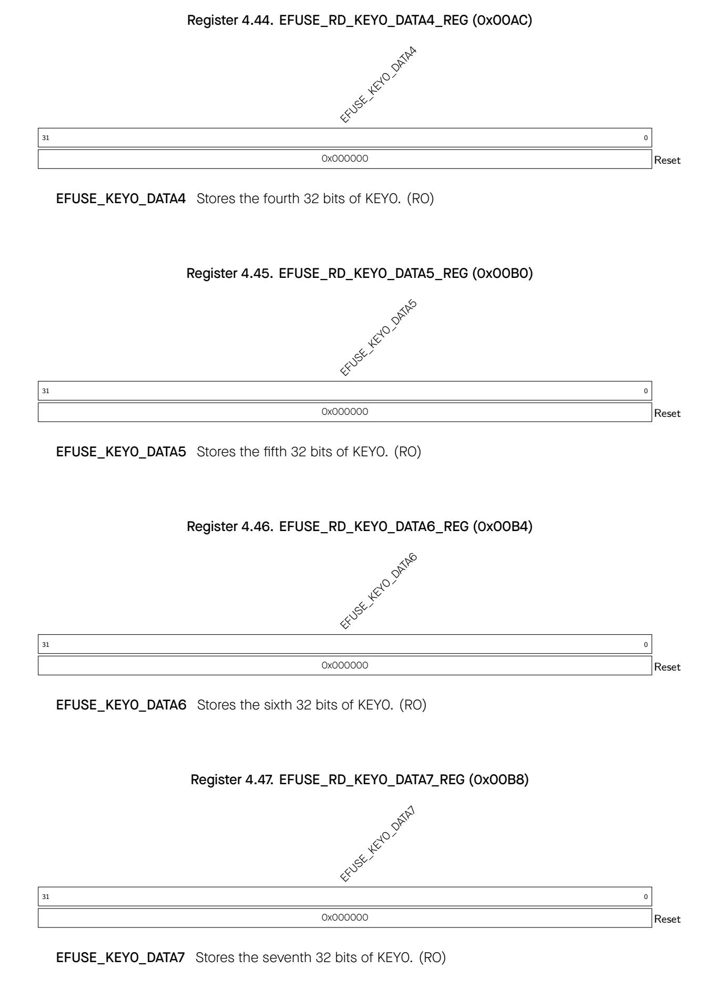

EFUSE_KEY2_DATA3 Stores the third 32 bits of KEY2. (RO)
EFUSE_KEY2_DATA7 Stores the seventh 32 bits of KEY2. (RO)
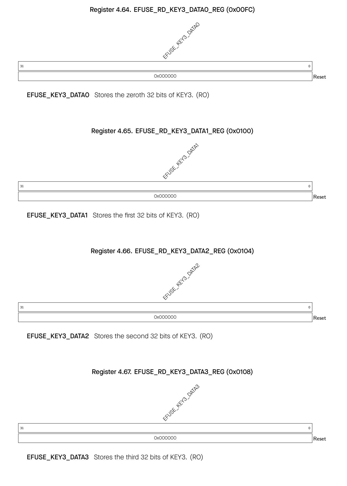

EFUSE_KEY5_DATA7 Stores the seventh 32 bits of KEY5. (RO)
EFUSE_SYS_DATA_PART2_0 Stores the 0th 32 bits of the 2nd part of system data. (RO)
EFUSE_SYS_DATA_PART2_1 Stores the 1st 32 bits of the 2nd part of system data. (RO)
EFUSE_SYS_DATA_PART2_2 Stores the 2nd 32 bits of the 2nd part of system data. (RO)
EFUSE_SYS_DATA_PART2_3 Stores the 3rd 32 bits of the 2nd part of system data. (RO)
EFUSE_SYS_DATA_PART2_4 Stores the 4th 32 bits of the 2nd part of system data. (RO)
EFUSE_SYS_DATA_PART2_5 Stores the 5th 32 bits of the 2nd part of system data. (RO)

EFUSE_SYS_DATA_PART2_6 Stores the 6th 32 bits of the 2nd part of system data. (RO)
EFUSE_SYS_DATA_PART2_7 Stores the 7th 32 bits of the 2nd part of system data. (RO)
EFUSE_VDD_SPI_AS_GPIO_ERR Any bit in this filed set to 1 indicates that an error occurs in pro-Espressif Systems gramming EFUSE_VDD_SPI_AS_GPIO. (RO) 147 Submit Documentation Feedback ESP32-C3 TRM (Version 1.3)
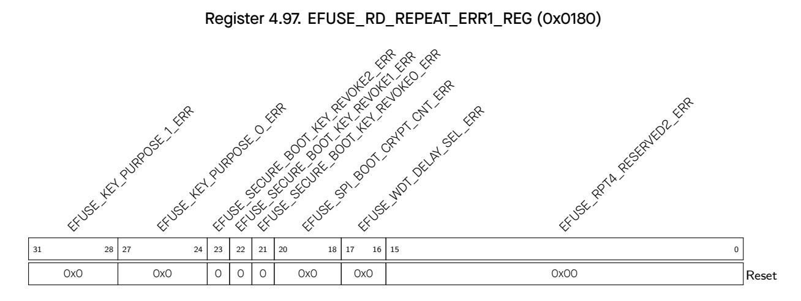
EFUSE_RPT4_RESERVED2_ERR Reserved. (RO)
EFUSE_KEY_PURPOSE_2_ERR Any bit in this filed set to 1 indicates that an error occurs in programming EFUSE_KEY_PURPOSE_2. (RO)
EFUSE_RPT4_RESERVED4_ERR Reserved. (RO)
EFUSE_MAC_SPI_8M_ERR_NUM The value of this signal means the number of error bytes. (RO)
EFUSE_KEY5_ERR_NUM The value of this signal means the number of error bytes. (RO)
0 0 0 0 0 0 0 0 0 0 0 0 0 0 0 0 0 0 0 0 0 0 0 0
EFUSE_KEY4_FAIL 0: Means no failure and that the data of KEY4 is reliable 1: Means that programming KEY4 data failed and the number of error bytes is over 6. (RO)
0
0x0
0
0x0
Reset
EFUSE_SYS_PART2_ERR_NUM The value of this signal means the number of error bytes. (RO)
EFUSE_KEY5_FAIL 0: Means no failure and that the data of KEY5 is reliable 1: Means that programming KEY5 data failed and the number of error bytes is over 6. (RO)
EFUSE_EFUSE_MEM_FORCE_PD Set this bit to force eFuse SRAM into power-saving mode. (R/W)
EFUSE_MEM_CLK_FORCE_ON Set this bit and force to activate clock signal of eFuse SRAM. (R/W)
EFUSE_EFUSE_MEM_FORCE_PU Set this bit to force eFuse SRAM into working mode. (R/W)
EFUSE_CLK_EN Set this bit and force to enable clock signal of eFuse memory. (R/W)
EFUSE_OP_CODE 0x5A5A: Operate programming command 0x5AA5: Operate read command. (R/W)
EFUSE_READ_CMD Set this bit to send read command. (R/WS/SC)
EFUSE_PGM_CMD Set this bit to send programming command. (R/WS/SC)
EFUSE_BLK_NUM The serial number of the block to be programmed. Value 0-10 corresponds to block number 0-10, respectively. (R/W)
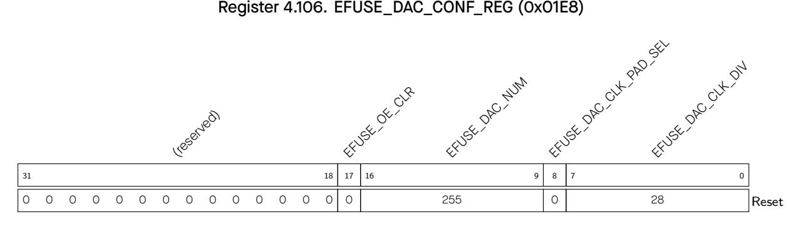
EFUSE_DAC_CLK_DIV Controls the division factor of the rising clock of the programming voltage. (R/W)
EFUSE_DAC_CLK_PAD_SEL Don't care. (R/W)
EFUSE_DAC_NUM Controls the rising period of the programming voltage. (R/W)
EFUSE_OE_CLR Reduces the power supply of the programming voltage. (R/W)
EFUSE_READ_INIT_NUM Configures the initial read time of eFuse. (R/W)
EFUSE_PWR_ON_NUM Configures the power up time for VDDQ. (R/W)
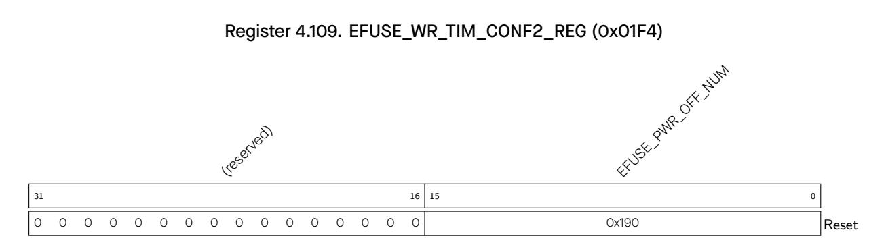
EFUSE_PWR_OFF_NUM Configures the power outage time for VDDQ. (R/W)
EFUSE_STATE Indicates the state of the eFuse state machine. (RO)
EFUSE_REPEAT_ERR_CNT Indicates the number of error bits during programming BLOCK0. (RO)
Register 4.111. EFUSE_INT_RAW_REG (0x01D8)
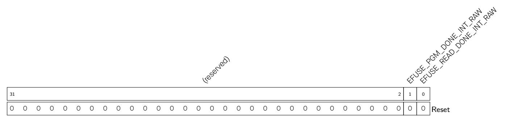
EFUSE_READ_DONE_INT_RAW The raw bit signal for read_done interrupt. (R/WC/SS) EFUSE_PGM_DONE_INT_RAW The raw bit signal for pgm_done interrupt. (R/WC/SS)
Register 4.112. EFUSE_INT_ST_REG (0x01DC)
EFUSE_READ_DONE_INT_ST The status signal for read_done interrupt. (RO) EFUSE_PGM_DONE_INT_ST The status signal for pgm_done interrupt. (RO)
Register 4.113. EFUSE_INT_ENA_REG (0x01E0)
EFUSE_DATE Stores eFuse version. (R/W)
Encompassing a range of system-level functionalities, this part describes components related to system boot, clocks, GPIO, timers, watchdogs, debug assistance, low-power management, and various system registers.
The ESP32-C3 chip features 22 physical GPIO pins. Each pin can be used as a general-purpose I/O, or be connected to an internal peripheral signal. Through GPIO matrix and IO MUX, peripheral input signals can be from any IO pins, and peripheral output signals can be routed to any IO pins. Together these modules provide highly configurable I/O.
Note that the GPIO pins are numbered from 0 ~ 21.
This section provides an overview to the architecture of IO MUX and GPIO matrix with the following figures:
• Figure 5.3-1 shows the general work flow of IO MUX and GPIO matrix.
Espressif Systems 159
Figure 5.3-2. Architecture of IO MUX and GPIO Matrix
⃝ 1 Only part of peripheral input signals (marked "yes" in column "Direct input through IO MUX" in Table 5.11-1) can bypass GPIO matrix. The other input signals can only be routed to peripherals via GPIO matrix.
⃝ 2 There are only 22 inputs from GPIO SYNC to GPIO matrix, since ESP32-C3 provides 22 GPIO pins in
total.
⃝ 3 The pins supplied by VDD3P3_CPU or by VDD3P3_RTC are controlled by the signals: IE, OE, WPU, and WPD.
⃝ 4 Only part of peripheral outputs (marked "yes" in column "Direct output through IO MUX" in Table 5.11-1) can be routed to pins bypassing GPIO matrix. See Table 5.11-1.
⃝ 5 There are only 22 outputs (GPIO pin X: 0 ~ 21) from GPIO matrix to IO MUX.
Figure 5.3-3 shows the internal structure of a pad, which is an electrical interface between the chip logi c and the GPIO pin. The structure is applicable to all 22 GPIO pins a nd can be controlled using IE, OE, WPU, and WPD signals.

Figure 5.3-3. Internal Structure of a Pad
To receive a peripheral input signal via GPIO matrix, the matrix is configured to source the peripheral input signal from one of the 22 GPIOs (0 ~ 21), see Table 5.11-1. Meanwhile, register corresponding to the peripheral signal should be set to receive input signal via GPIO matrix.
Espressif Systems 161
When signals are directed from pins using GPIO matrix, the signals will be synchronized to the APB bus clock by GPIO SYNC hardware, then go to GPIO matrix. This synchronization applies to all GPIO matrix signals but does not apply when using the IO MUX, see Figure 5.3-2.
Figure 5.4-1. GPIO Input Synchronized on APB Clock Rising Edge or on Falling Edge
Figure 5.4-1 shows the functionality of GPIO SYNC. In the figure, negative sync and positive sync mean GPIO input is synchronized on APB clock falling edge and on APB clock rising edge, respectively.
To read GPIO pin X 1 into peripheral signal Y , follow the steps below:
Note that some peripheral si gnals have no valid GPIO_SIG y _IN_SEL bit, namely, these peripherals can only receive input signals via GPIO matrix.
2. Optionall y enable the filter for p in input signals by setting the register IO_MUX_GPIO n _FILTER_EN. Only the signals with a valid width of more than two c lock cycles can be sampled, see Figure 5.4-2.
Figure 5.4-2. Filter Timing of GPIO Input Signals
3. Synchronize GPIO input. To do so, please set GPIO_PIN x _REG corresponding to GPIO pin X as follows:
For example, t o connect I2S MCLK inpu t signal 3 (I2S_MCLK_in, signal index 12) to GPIO7, please follow the steps below. Note that GPIO7 is also named as MT DO pin.
GPIO_IN_REG holds the input values of each GPIO pin. The input value of any GPIO pin can be read at any time without configuring GPIO matrix for a particular peripheral signal. However, it is necessary to enable the input via IO MUX by setting IO_MUX_GPIO x _FUN_IE bit in register IO_MUX_GPIO x _REG corresponding to pin X , as mentione d in Section 5.4.2.
To output a signal from a peripheral via GPIO matrix, the matrix is configured to route peripheral output signals (only signals with a name assigned in the column "Output signal" in Table 5.11-1) to one of the 22 GPIOs (0 ~ 21). See Table 5.11-1.
The output signal is routed from the peripheral into GPIO matrix and then into IO MUX. IO MUX must be configured to set the chosen pin to GPIO function. This enables the outp ut GP IO signal to be connected to
the pin.
There is a range of peripheral output signals (97 ~ 100) which are not connected to any peripheral, but to the input signals (97 ~ 100 in Table 5.11-1) directly. These can be used to input a signal from one GPIO pin and output directly to another GPIO pin.
Some of the 78 output signals (signals with a name assigned in the column "Output signal" in Table 5.11-1) can be set to go through GPIO matrix into IO MUX and then to a pin. Figure 5.3-2 illustrates the configuration.
To output peripheral signal Y to a particular GPIO pin X 1 , follow these steps:
GPIO matrix can also be used for simple GPIO output. This can be done as below:
Four out of the 125 peripheral outputs (output index: 55 ~ 58 in Table 5.11-1) support 1-bit second-order sigma delta modulation. By default output is enabled for these four channels. This modulator can also output PDM (pulse density modulation) signal with configurable duty cycle. The transfer function of this second-order SDM modulator is:
E(z) is quantization error and X(z) is the input.
Sigma Delta modulator supports scaling down of APB_CLK by divider 1 ~ 256:
After scali ng, the clock cycle is equal to one pulse output cycle from the modulator.
GPIOSD_SD n _IN is a si gned number with a range of [-128, 127] and is used to control the duty cycle 1 of PDM output signal.
The f ormula for calcula ting PDM signal duty cycle is shown as below:
For PDM signals, duty cycle refers to the percentage of high level cycles to the whole statistical period (several pulse cycles, for example 256 pulse cycles).
The configuration of SDM is shown below:
Some high-speed signals (SPI and JTAG) can bypass GPIO matrix for better high-frequency digital performance. In this case, IO MUX is used to connect these pins directly to peripherals.
This option is less flexible than routing signals via GPIO matrix, as the IO MUX register for each GPIO pin can only select from a limited number of functions, but high-frequency digital performance can be improved.
Two registers must be configured in order to bypass GPIO matrix for peripheral input signals:
To by pass GPIO matrix for periphe ral out put signals, IO_MUX_GPIO n _MCU_SEL for the GPIO pin must be set to the required pin function. For the list of pin functions, please refer to Section 5.12.
Not all signals can be directly connected to peripheral via IO MUX. Some input/outp ut sig nals can only be connected to peripheral via GPIO matrix.
Some GPIO pins in ESP32-C3 provide analog functions. When the pin is used for analog purpose, make sure that pull-up and pull-down resistors are disabled by following configuration:
See Table 5.13-1 for analog functions of ESP32-C3 pins.
Pins may provide different functions when ESP32-C3 is in Light-sleep mode. If IO_MUX_SLP_SEL in register IO_MUX_ n _REG for a GPIO pin is set to 1, a different set of bits will be used to control the pin when the chip is in Light-sleep mode.
| Table 5.8-1. Bits Used to Control IO MUX Functions in Light-sleep Mode | ||||
|---|---|---|---|---|
| IO MUX Functions |
Normal Execution
OR IO_MUX_SLP_SEL = 0 |
Light-sleep Mode
AND IO_MUX_SLP_SEL = 1 |
||
| Output Drive Strength | IO_MUX_FUN_DRV | IO_MUX_MCU_DRV | ||
| Pull-up Resistor | IO_MUX_FUN_WPU | IO_MUX_MCU_WPU | ||
Note:
If IO_MUX_SLP_SEL is set to 0, pin fun ctions rema in the same in both nor mal execution and Ligh t-sleep mode. Please refer to Section 5.5.2 for how to enable output in normal execution.
Each GPIO pin (including the RTC pins: GPIO0 ~ GPIO5) has an individual hold function controlled by a RTC register. When the pin is set to hold, the state is latched at that moment and will not change no matter how the internal signals change or how the IO MUX/GPIO configuration is modified. Users can use the hold function for the pins to retain the pin state through a core reset triggered by watchdog time-out or Deep-sleep events.
_PAD_HOLD_REG, and users can set it to 1 to hold the value or set it to 0 to unhold the value.
For more information on the power supply for GPIO pins, please refer to Pin Definition in ESP32-C3 Datasheet . All the pins can be used to wake up the chip from Light-sleep mode, but only the pins (GPIO0 ~ GPIO5) in VDD3P3_RTC domain can be used to wake up the chip from Deep-sleep mode.
Each ESP32-C3 pin is connected to one of the two different power domains.
Table 5.11-1 shows the peripheral input/output signals via GPIO matrix.
Please pay attention to the configuration of the bit GPIO_FUNC n _OEN_SEL:
Signals are numbered consecutively, but not all sig nals are valid.
|
Signal
No. |
Input Signal |
Default
value |
Direct
Input via IO MUX |
Output Signal |
Output enable signal when
GPIO_FUNCn_OEN_SEL = 0 |
Direct
Output via IO MUX |
|---|---|---|---|---|---|---|
| SPIQ_in | yes | SPIQ_out | SPIQ_oe | yes | ||
| SPID_in | yes | SPID_out | SPID_oe | yes | ||
| SPIHD_in | yes | SPIHD_out | SPIHD_oe | yes | ||
| 3 | SPIWP_in | yes | SPIWP_out | SPIWP_oe | yes | |
| SPICLK_out_mux | SPICLK_oe | yes | ||||
| 5 | SPICSO_out | SPICSO_oe | yes | |||
| 6 | UORXD_in | yes | UOTXD_out | d | yes | |
| UOCTS_in | no | UORTS_out | d | no | ||
| 8 | UODSR_in | no | UODTR_out | d | no | |
| 9 | U1RXD_in | no | U1TXD_out | d | no | |
| 10 | U1CTS_in | no | U1RTS_out | d | no | |
| 11 | U1DSR_in | no | U1DTR_out | d | no | |
| 12 | I2S_MCLK_in | no | I2S_MCLK_out | d | no | |
| 13 | I2SO_BCK_in | no | I2SO_BCK_out | d | no | |
| 14 | I2SO_WS_in | no | I2SO_WS_out | d | no | |
| 15 | I2SI_SD_in | no | I2SO_SD_out | d | no | |
| 16 | I2SI_BCK_in | no | I2SI_BCK_out | d | no. | |
| 17 | I2SI_WS_in | no | I2SI_WS_out | d | no | |
| 18 | gpio_bt_priority | no | gpio_wlan_prio | d | no | |
| 19 | gpio_bt_active | no | gpio_wlan_active | d | no | |
| 20 | d | no | ||||
| 21 | d | no | ||||
| 22 | d | no | ||||
| 23 | d | no | ||||
| 24 | d | no |
|
Signal
No. |
Input Signal |
Default
value |
Direct
Input via IO MUX |
Output Signal |
Output enable signal when
GPIO_FUNCn_OEN_SEL = 0 |
Direct
Output via IO MUX |
|---|---|---|---|---|---|---|
| 25 | d | no | ||||
| 26 | 1'd1 | no | ||||
| 27 | d | no | ||||
| 28 | cpu_gpio_in0 | no | cpu_gpio_out0 | cpu_gpio_out_oen0 | no | |
| 29 | cpu_gpio_in1 | no | cpu_gpio_out1 | cpu_gpio_out_oen1 | no | |
| 30 | cpu_gpio_in2 | no | cpu_gpio_out2 | cpu_gpio_out_oen2 | no | |
| 31 | cpu_gpio_in3 | no | cpu_gpio_out3 | cpu_gpio_out_oen3 | no | |
| 32 | cpu_gpio_in4 | no | cpu_gpio_out4 | cpu_gpio_out_oen4 | no | |
| 33 | cpu_gpio_in5 | no | cpu_gpio_out5 | cpu_gpio_out_oen5 | no | |
| 34 | cpu_gpio_in6 | no | cpu_gpio_out6 | cpu_gpio_out_oen6 | no | |
| 35 | cpu_gpio_in7 | no | cpu_gpio_out7 | cpu_gpio_out_oen7 | no | |
| 36 | usb_jtag_tck | d | no | |||
| 37 | usb_jtag_tms | d | no | |||
| 38 | usb_jtag_tdi | 1'd1 | no | |||
| 39 | usb_jtag_tdo | d | no | |||
| 40 | 1'd1 | no | ||||
| 41 | d | no | ||||
| 42 | 1'd1 | no | ||||
| 43 | d | no | ||||
| 44 | d | no | ||||
| 45 | ext_adc_start | no | ledc_ls_sig_out0 | d | no | |
| 46 | ledc_ls_sig_out1 | d | no | |||
| 47 | ledc_ls_sig_out2 | d | no | |||
| 48 | ledc_ls_sig_out3 | d | no | |||
| 49 | ledc_ls_sig_out4 | d | no | |||
| 50 | ledc_ls_sig_out5 | d | no | |||
| 51 | rmt_sig_in0 | no | rmt_sig_out0 | d | no | |
|
Signal
No. |
Input Signal |
Default
value |
Direct
Input via IO MUX |
Output Signal |
Output enable signal when
GPIO_FUNCn_OEN_SEL = 0 |
Direct
Output via IO MUX |
|---|---|---|---|---|---|---|
| 52 | _sig_in1 | no | rmt_sig_out1 | d | no | |
| 53 | I2CEXTO_SCL_in | no | I2CEXTO_SCL_out | I2CEXTO_SCL_oe | no | |
| 54 | I2CEXTO_SDA_in | no | I2CEXTO_SDA_out | I2CEXTO_SDA_oe | no | |
| 55 | gpio_sd0_out | d | no | |||
| 56 | gpio_sd1_out | d | no | |||
| 57 | gpio_sd2_out | d | no | |||
| 58 | gpio_sd3_out | d | no | |||
| 59 | I2SO_SD1_out | d | no | |||
| 60 | d | no | ||||
| 61 | d | no | ||||
| 62 | d | no | ||||
| 63 | FSPICLK_in | yes | FSPICLK_out_mux | FSPICLK_oe | yes | |
| 64 | FSPIQ_in | yes | FSPIQ_out | FSPIQ_oe | yes | |
| 65 | FSPID_in | yes | FSPID_out | FSPID_oe | yes | |
| 66 | FSPIHD_in | yes | FSPIHD_out | FSPIHD_oe | yes | |
| 67 | FSPIWP_in | yes | FSPIWP_out | FSPIWP_oe | yes | |
| 68 | FSPICSO_in | yes | FSPICSO_out | FSPICSO_oe | yes | |
| 69 | FSPICS1_out | FSPICS1_oe | no | |||
| 70 | FSPICS2_out | FSPICS2_oe | no | |||
| 71 | FSPICS3_out | FSPICS3_oe | no | |||
| 72 | FSPICS4_out | FSPICS4_oe | no | |||
| 73 | FSPICS5_out | FSPICS5_oe | no | |||
| 74 | twai_rx | no | twai_tx | d | no | |
| 75 | twai_bus_off_on | d | no | |||
| 76 | twai_clkout | d | no | |||
| 77 | d | no | ||||
| 78 | d | no | ||||
Espressif Systems
171 Submit Documentation Feedback
|
Signal
No. |
Input Signal |
Default
value |
Direct
Input via IO MUX |
Output Signal |
Output enable signal when
GPIO_FUNCn_OEN_SEL = 0 |
Direct
Output via IO MUX |
|---|---|---|---|---|---|---|
| 79 | d | no | ||||
| 80 | d | no | ||||
| 81 | d | no | ||||
| 82 | d | no | ||||
| 83 | d | no | ||||
| 84 | d | no | ||||
| 85 | d | no | ||||
| 86 | d | no | ||||
| 87 | d | no | ||||
| 88 | d | no | ||||
| 89 | ant_sel0 | d | no | |||
| !!!!!!!!!!!!!!!!!!!!!!!!!!!!!!!!!!!!!!!! | ant_sel1 | d | no | |||
| 91 | ant_sel2 | d | no | |||
| 92 | ant_sel3 | d | no | |||
| 93 | ant_sel4 | d | no | |||
| 94 | ant_sel5 | d | no | |||
| 95 | ant_sel6 | d | no | |||
| !!!!!!!!!!!!!!!!!!!!!!!!!!!!!!!!!!!!!!!! | ant_sel7 | d | no | |||
| 97 | sig_in_func_97 | no | sig_in_func97 | d | no | |
| 98 | sig_in_func_98 | no | sig_in_func98 | d | no | |
| 99 | sig_in_func_99 | no | sig_in_func99 | d | no | |
| 100 | sig_in_func_100 | no | sig_in_func100 | d | no | |
| 101 | d | no | ||||
| 102 | d | no | ||||
| 103 | d | no | ||||
| 104 | d | no | ||||
| 105 | d | no | ||||
|
S
ig l na No |
Inp
S ig l t u na |
De
fa l t u lue va |
D
ire t Inp c ia I O Ou t u v M U X |
S
ig l tp t u na |
D
ire Ou b le ig l he tp t u en a s na w n Ou tp G P I O_ F U N C O E N_ S E L 0 n = I O M _ |
t
c ia t u v U X |
|---|---|---|---|---|---|---|
|
0
6 |
- | - |
-
- |
'd
1 1 no |
||
|
0
7 |
- | - |
-
- |
'd
1 1 no |
||
|
0
8 |
- | - |
-
- |
'd
1 1 no |
||
|
0
9 |
- | - |
-
- |
'd
1 1 no |
||
| 0 | - | - |
-
- |
'd
1 1 |
||
| 1 | - | - |
-
- |
no
'd 1 1 no |
||
| 2 | - | - |
-
- |
'd
1 no |
||
| 3 | - | - |
-
- |
1
'd 1 no |
||
| 4 | - | - |
-
- |
1
'd 1 no |
||
| 5 | - | - |
-
- |
1
'd 1 |
||
| 6 |
1
no 'd 1 |
|||||
| - | - |
-
- |
1
no 'd |
|||
| 7 | - | - |
-
- |
1
1 no |
||
| 8 | - | - |
-
- |
'd
1 1 no |
||
| 9 | - | - |
-
- |
'd
1 1 no |
||
|
2
0 |
- | - |
-
- |
'd
1 1 no |
||
|
2
1 |
- | - |
-
- |
'd
1 1 no |
||
|
2
2 |
- | - |
-
- |
'd
1 1 no |
||
|
2
3 |
- | - |
C
L - |
K_
O U T_ t 1 ou |
'd
1 1 no |
|
|
2
4 |
- | - |
C
L - |
K_
O U T_ 2 t ou |
'd
1 1 no |
|
|
2
5 |
- | - |
C
L - |
O
K_ U T_ 3 t ou |
'd
1 1 no |
|
|
2
6 |
- | - |
S
P I - |
C
S 1_ t ou |
'd
1 1 no |
Table 5.12-1 shows the IO MUX functions of each pin.
| Table 5.12-1 shows the IO MUX functions of each pin. | ||||||||
|---|---|---|---|---|---|---|---|---|
| Table 5.12-1. IO MUX Pin Functions | ||||||||
| Pin | Pin Name | Function 0 | Function 1 | Function 2 | Function 3 | DRV | Reset | Notes |
| No. | ||||||||
|
4
5 |
XTAL_32K_P
XTAL_32K_N |
GPIO0
GPIO1 |
GPIO0
GPIO1 |
-
- |
-
- |
2
2 |
0
0 |
R
R |
| 6 | GPIO2 | GPIO2 | GPIO2 | FSPIQ | - | 2 | 1 | R |
| 8 | GPIO3 | GPIO3 | GPIO3 | - | - | 2 | 1 | R |
| 9 | MTMS | MTMS | GPIO4 | FSPIHD | - | 2 | 1 | R |
| 10 | MTDI | MTDI | GPIO5 | FSPIWP | - | 2 | 1 | R |
| 12 | MTCK | MTCK | GPIO6 | FSPICLK | - | 2 | 1* | G |
| 13 | MTDO | MTDO | GPIO7 | FSPID | - | 2 | 1 | G |
| 14 | GPIO8 | GPIO8 | GPIO8 | - | - | 2 | 1 | - |
| 15 | GPIO9 | GPIO9 | GPIO9 | - | - | 2 | 3 | - |
| 16 | GPIO10 | GPIO10 | GPIO10 | FSPICS0 | - | 2 | 1 | G |
| 18 | VDD_SPI | GPIO11 | GPIO11 | - | - | 2 | 0 | - |
| 19 | SPIHD | SPIHD | GPIO12 | - | - | 2 | 3 | - |
| 20 | SPIWP | SPIWP | GPIO13 | - | - | 2 | 3 | - |
| 21 | SPICS0 | SPICS0 | GPIO14 | - | - | 2 | 3 | - |
| 22 | SPICLK | SPICLK | GPIO15 | - | - | 2 | 3 | - |
| 23 | SPID | SPID | GPIO16 | - | - | 2 | 3 | - |
|
24
25 |
SPIQ
GPIO18 |
SPIQ
GPIO18 |
GPIO17
GPIO18 |
-
- |
-
- |
2
3 |
3
0 |
-
USB, |
| G | ||||||||
| 26 | GPIO19 | GPIO19 | GPIO19 | - | - | 3 | 0* | USB |
| 27 | U0RXD | U0RXD | GPIO20 | - | - | 2 | 3 | G |
"DRV" column shows the drive strength of each pin after reset:
Espressif Systems 174
"Reset" column shows the default configuration of each pin after reset:
Note:
| Table 5.12-2. Power-Up Glitches on Pins | Typical Time Period | |||
|---|---|---|---|---|
| Pin | Glitch | (ns) | ||
| MTCK | Low-level glitch | 5 | ||
| MTDO | Low-level glitch | 5 | ||
| GPIO10 | Low-level glitch | 5 | ||
| U0RXD | Low-level glitch | 5 | ||
Table 5.12-2. Power-Up Glitches on Pins
Table 5.13-1 shows the IO MUX pins with analog functions.
| GPIO Num | Pin Name | Analog Function 0 | Analog Function 1 |
|
0
1 |
XTAL_32K_P
XTAL_32K_N |
XTAL_32K_P
XTAL_32K_N |
ADC1_CH0
ADC1_CH1 |
Table 5.13-1. Analog Functions of IO MUX Pins
| GPIO Num | Pin Name | Analog Function 0 | Analog Function 1 |
|---|---|---|---|
| GPIO3 | - | ADC1 CH3 | |
| MTMS | - | ADC1 CH4 |
The addresses in this section are relative to the GPIO base address provided in Table 3.3-3 in Chapter 3 System and Memory .
The abbreviations given in Column Access are explained in Section Access Types for Registers .
| The abbreviations given in Column Access are explained in Section Access Types for Registers. | |||
|---|---|---|---|
| Name | Description | Address | Access |
| Configuration Registers | |||
| GPIO_BT_SELECT_REG | GPIO bit select register | 0x0000 | R/W |
| GPIO_OUT_REG | GPIO output register | 0x0004 | R/W/SS |
| GPIO_OUT_W1TS_REG | GPIO output set register | 0x0008 | WT |
| GPIO_OUT_W1TC_REG | GPIO output clear register | 0x000C | WT |
| GPIO_ENABLE_REG | GPIO output enable register | 0x0020 | R/W/SS |
| GPIO_ENABLE_W1TS_REG | GPIO output enable set register | 0x0024 | WT |
| GPIO_ENABLE_W1TC_REG | GPIO output enable clear register | 0x0028 | WT |
| GPIO_STRAP_REG | pin strapping register | 0x0038 | RO |
| GPIO_IN_REG | GPIO input register | 0x003C | RO |
|
GPIO_STATUS_REG
GPIO_STATUS_W1TS_REG |
GPIO interrupt status register
GPIO interrupt status set register |
0x0044
0x0048 |
R/W/SS
WT |
| GPIO_STATUS_W1TC_REG | GPIO interrupt status clear register | 0x004C | WT |
| GPIO_PCPU_INT_REG | GPIO PRO_CPU interrupt status register | 0x005C | RO |
| GPIO_STATUS_NEXT_REG | GPIO interrupt source register | 0x014C | RO |
| Pin Configuration Registers | |||
| GPIO_PIN0_REG | GPIO pin0 configuration register | 0x0074 | R/W |
| GPIO_PIN1_REG | GPIO pin1 configuration register | 0x0078 | R/W |
| GPIO_PIN2_REG | GPIO pin2 configuration register | 0x007C | R/W |
| GPIO_PIN3_REG | GPIO pin3 configuration register | 0x0080 | R/W |
| GPIO_PIN4_REG | GPIO pin4 configuration register | 0x0084 | R/W |
| GPIO_PIN5_REG | GPIO pin5 configuration register | 0x0088 | R/W |
| GPIO_PIN6_REG | GPIO pin6 configuration register | 0x008C | R/W |
| GPIO_PIN7_REG | GPIO pin7 configuration register | 0x0090 | R/W |
| GPIO_PIN8_REG | GPIO pin8 configuration register | 0x0094 | R/W |
| GPIO_PIN9_REG | GPIO pin9 configuration register | 0x0098 | R/W |
|
GPIO_PIN10_REG
GPIO_PIN11_REG |
GPIO pin10 configuration register
GPIO pin11 configuration register |
0x009C
0x00A0 |
R/W
R/W |
| GPIO_PIN12_REG | GPIO pin12 configuration register | 0x00A4 | R/W |
| GPIO_PIN13_REG | GPIO pin13 configuration register | 0x00A8 | R/W |
| GPIO_PIN14_REG | GPIO pin14 configuration register | 0x00AC | R/W |
|
Chapter 5
IO MUX and GPIO Matrix (GPIO, IO MUX) |
GoBack | |||
| Name | Description | Address | Access | |
| GPIO_PIN15_REG | GPIO pin15 configuration register | 0x00B0 | R/W | |
| GPIO_PIN16_REG | GPIO pin16 configuration register | 0x00B4 | R/W | |
| GPIO_PIN17_REG | GPIO pin17 configuration register | 0x00B8 | R/W | |
| GPIO_PIN18_REG | GPIO pin18 configuration register | 0x00BC | R/W | |
|
GPIO_PIN19_REG
GPIO pin19 configuration register 0x00C0 R/W |
||||
|
GPIO_PIN20_REG
GPIO_PIN21_REG |
GPIO pin20 configuration register
GPIO pin21 configuration register |
0x00C4
0x00C8 |
R/W
R/W |
|
| Input Function Configuration Registers | ||||
| GPIO_FUNC0_IN_SEL_CFG_REG | Configuration register for input signal 0 | 0x0154 | R/W | |
| GPIO_FUNC1_IN_SEL_CFG_REG | Configuration register for input signal 1 | 0x0158 | R/W | |
| GPIO_FUNC126_IN_SEL_CFG_REG | Configuration register for input signal 126 | 0x034C | R/W | |
| GPIO_FUNC127_IN_SEL_CFG_REG | Configuration register for input signal 127 | 0x0350 | R/W | |
| Output Function Configuration Registers | ||||
| GPIO_FUNC0_OUT_SEL_CFG_REG | Configuration register for GPIO0 output | 0x0554 | R/W | |
| GPIO_FUNC1_OUT_SEL_CFG_REG | Configuration register for GPIO1 output | 0x0558 | R/W | |
| GPIO_FUNC2_OUT_SEL_CFG_REG | Configuration register for GPIO2 output | 0x055C | R/W | |
| GPIO_FUNC3_OUT_SEL_CFG_REG | Configuration register for GPIO3 output | 0x0560 | R/W | |
| GPIO_FUNC4_OUT_SEL_CFG_REG | Configuration register for GPIO4 output | 0x0564 | R/W | |
| GPIO_FUNC5_OUT_SEL_CFG_REG | Configuration register for GPIO5 output | 0x0568 | R/W | |
| GPIO_FUNC6_OUT_SEL_CFG_REG | Configuration register for GPIO6 output | 0x056C | R/W | |
| GPIO_FUNC7_OUT_SEL_CFG_REG | Configuration register for GPIO7 output | 0x0570 | R/W | |
|
GPIO_FUNC8_OUT_SEL_CFG_REG
GPIO_FUNC9_OUT_SEL_CFG_REG |
Configuration register for GPIO8 output
Configuration register for GPIO9 output |
0x0574
0x0578 |
R/W
R/W |
|
| GPIO_FUNC10_OUT_SEL_CFG_REG | Configuration register for GPIO10 output | 0x057C | R/W | |
| GPIO_FUNC11_OUT_SEL_CFG_REG | Configuration register for GPIO11 output | 0x0580 | R/W | |
| GPIO_FUNC12_OUT_SEL_CFG_REG | Configuration register for GPIO12 output | 0x0584 | R/W | |
| GPIO_FUNC13_OUT_SEL_CFG_REG | Configuration register for GPIO13 output | 0x0588 | R/W | |
| GPIO_FUNC14_OUT_SEL_CFG_REG | Configuration register for GPIO14 output | 0x058C | R/W | |
| GPIO_FUNC15_OUT_SEL_CFG_REG | Configuration register for GPIO15 output | 0x0590 | R/W | |
| GPIO_FUNC16_OUT_SEL_CFG_REG | Configuration register for GPIO16 output | 0x0594 | R/W | |
| GPIO_FUNC17_OUT_SEL_CFG_REG | Configuration register for GPIO17 output | 0x0598 | R/W | |
| GPIO_FUNC18_OUT_SEL_CFG_REG | Configuration register for GPIO18 output | 0x059C | R/W | |
| GPIO_FUNC19_OUT_SEL_CFG_REG | Configuration register for GPIO19 output | 0x05A0 | R/W | |
| GPIO_FUNC20_OUT_SEL_CFG_REG | Configuration register for GPIO20 output | 0x05A4 | R/W | |
|
GPIO_FUNC21_OUT_SEL_CFG_REG
Configuration register for GPIO21 output 0x05A8 R/W |
||||
| Version Register | ||||
|
GPIO_DATE_REG
GPIO version register 0x06FC R/W |
||||
| Clock Gate Register | ||||
The addresses in this section are relative to the IO MUX base address provided in Table 3.3-3 in Chapter 3 System and Memory .
The abbreviations given in Column Access are explained in Section Access Types for Registers .
| System and Memory. | |||
|---|---|---|---|
| The abbreviations given in Column Access are explained in Section Access Types for Registers. | |||
| Name | Description | Address | Access |
|
Configuration Registers
IO_MUX_PIN_CTRL_REG |
Clock output configuration Register | 0x0000 | R/W |
| IO_MUX_GPIO0_REG |
IO
MUX configuration register for pin |
0x0004 | R/W |
| XTAL_32K_P | |||
| IO_MUX_GPIO1_REG |
IO
MUX configuration register for pin |
0x0008 | R/W |
| XTAL_32K_N | |||
| IO_MUX_GPIO2_REG | IO MUX configuration register for pin GPIO2 | 0x000C | R/W |
| IO_MUX_GPIO3_REG | IO MUX configuration register for pin GPIO3 | 0x0010 | R/W |
| IO_MUX_GPIO4_REG | IO MUX configuration register for pin MTMS | 0x0014 | R/W |
| IO_MUX_GPIO5_REG | IO MUX configuration register for pin MTDI | 0x0018 | R/W |
| IO_MUX_GPIO6_REG | IO MUX configuration register for pin MTCK | 0x001C | R/W |
| IO_MUX_GPIO7_REG | IO MUX configuration register for pin MTDO | 0x0020 | R/W |
| IO_MUX_GPIO8_REG | IO MUX configuration register for pin GPIO8 | 0x0024 | R/W |
| IO_MUX_GPIO9_REG | IO MUX configuration register for pin GPIO9 | 0x0028 | R/W |
| IO_MUX_GPIO10_REG | IO MUX configuration register for pin GPIO10 | 0x002C | R/W |
| IO_MUX_GPIO11_REG | IO MUX configuration register for pin VDD_SPI | 0x0030 | R/W |
| IO_MUX_GPIO12_REG | IO MUX configuration register for pin SPIHD | 0x0034 | R/W |
|
IO_MUX_GPIO13_REG
IO_MUX_GPIO14_REG |
IO MUX configuration register for pin SPIWP
IO MUX configuration register for pin SPICS0 |
0x0038
0x003C |
R/W
R/W |
| IO_MUX_GPIO15_REG | IO MUX configuration register for pin SPICLK | 0x0040 | R/W |
| IO_MUX_GPIO16_REG | IO MUX configuration register for pin SPID | 0x0044 | R/W |
| IO_MUX_GPIO17_REG | IO MUX configuration register for pin SPIQ | 0x0048 | R/W |
| IO_MUX_GPIO18_REG | IO MUX configuration register for pin GPIO18 | 0x004C | R/W |
| IO_MUX_GPIO19_REG | IO MUX configuration register for pin GPIO19 | 0x0050 | R/W |
| IO_MUX_GPIO20_REG | IO MUX configuration register for pin U0RXD | 0x0054 | R/W |
| IO_MUX_GPIO21_REG | IO MUX configuration register for pin U0TXD | 0x0058 | R/W |
| Version Register | |||
The addresses in this section are relative to (GPIO base address provided in Table 3.3-3 in Chapter 3 System and Memory + 0x0F00).
The abbreviations given in Column Access are explained in Section Access Types for Registers .
| Name | Description | Address | Access |
|---|---|---|---|
|
Chapter 5
IO MUX and GPIO Matrix (GPIO, IO MUX) |
GoBack | ||
| Name | Description | Address | Access |
| GPIOSD_SIGMADELTA0_REG | Duty Cycle Configuration Register of SDM0 | 0x0000 | R/W |
| GPIOSD_SIGMADELTA1_REG | Duty Cycle Configuration Register of SDM1 | 0x0004 | R/W |
| GPIOSD_SIGMADELTA2_REG | Duty Cycle Configuration Register of SDM2 | 0x0008 | R/W |
|
GPIOSD_SIGMADELTA3_REG
Duty Cycle Configuration Register of SDM3 0x000C R/W |
|||
| GPIOSD_SIGMADELTA_CG_REG | Clock Gating Configuration Register | 0x0020 | R/W |
The addresses in this section are relative to the GPIO base address provided in Table 3.3-3 in Chapter 3 System and Memory .
GPIO_OUT_DATA_ORIG GPIO0 ~ 21 output value in simple GPIO output mode. The values of bit0 ~ bit21 correspond to the output value of GPIO0 ~ GPIO21 respectively, and bit22 ~ bit25 are invalid. (R/W/SS)
GPIO_OUT_W1TS GPIO0 ~ 21 output set register. Bit0 ~ bit21 are corresponding to GPIO0 ~ 21, and bit22 ~ bit25 are invalid. If the value 1 is written to a bit here, the corresponding bit in GPIO_OUT_REG will be set to 1. Recommended operation: use this register to set GPIO_OUT_REG. (WT)
GPIO_OUT_W1TC GPIO0 ~ 21 output clear register. Bit0 ~ bit21 are corresponding to GPIO0 ~ 21, and bit22 ~ bit25 are invalid. If the value 1 is written to a bit here, the corresponding bit in GPIO_OUT_REG will be cleared. Recommended operation: use this register to clear GPIO_OUT_REG. (WT)
GPIO_ENABLE_DATA GPIO output enable register for GPIO0 ~ 21. Bit0 ~ bit21 are corresponding to GPIO0 ~ 21, and bit22 ~ bit25 are invalid. (R/W/SS)
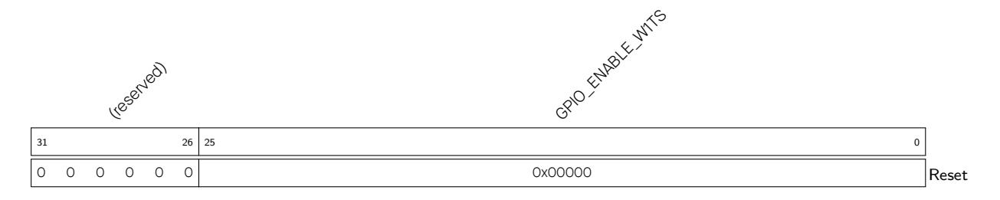
GPIO_ENABLE_W1TS GPIO0 ~ 21 output enable set register. Bit0 ~ bit21 are corresponding to GPIO0 ~ 21, and bit22 ~ bit25 are invalid. If the value 1 is written to a bit here, the corresponding bit in GPIO_ENABLE_REG will be set to 1. Recommended operation: use this register to set GPIO_ENABLE_REG. (WT)
GPIO_ENABLE_W1TC GPIO0 ~ 21 output enable clear register. Bit0 ~ bit21 are corresponding to GPIO0 ~ 21, and bit22 ~ bit25 are invalid. If the value 1 is written to a bit here, the corresponding bit in GPIO_ENABLE_REG will be cleared. Recommended operation: use this register to clear GPIO_ENABLE_REG. (WT)
GPIO_STRAPPING GPIO strapping values. (RO)
GPIO_IN_DATA_NEXT GPIO0 ~ 21 input value. Bit0 ~ bit21 are corresponding to GPIO0 ~ 21, and bit22 ~ bit25 are invalid. Each bit represents a pin input value, 1 for high level and 0 for low level. (RO)
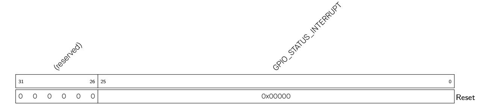
GPIO_STATUS_INTERRUPT GPIO0 ~ 21 interrupt status register. Bit0 ~ bit21 are corresponding to GPIO0 ~ 21, and bit22 ~ bit25 are invalid. (R/W/SS)
GPIO_STATUS_W1TS GPIO0 ~ 21 interrupt status set register. Bit0 ~ bit21 are corresponding to GPIO0 ~ 21, and bit22 ~ bit25 are invalid. If the value 1 is written to a bit here, the corresponding bit in GPIO_STATUS_INTERRUPT will be set to 1. Recommended operation: use this register to set GPIO_STATUS_INTERRUPT. (WT)
GPIO_STATUS_W1TC GPIO0 ~ 21 interrupt status clear register. Bit0 ~ bit21 are corresponding to GPIO0 ~ 21, and bit22 ~ bit25 are invalid. If the value 1 is written to a bit here, the corresponding bit in GPIO_STATUS_INTERRUPT will be cleared. Recommended operation: use this register to clear GPIO_STATUS_INTERRUPT. (WT)
GPIO_PROCPU_INT GPIO0 ~ 21 PRO_CPU interrupt status. Bit0 ~ bit21 are corresponding to GPIO0 ~ 21, and bit22 ~ bit25 are invalid. This interrupt status is corresponding to the bit in GPIO_STATUS_REG when assert (high) enable signal (bit13 of GPIO_PIN n _REG). (RO)
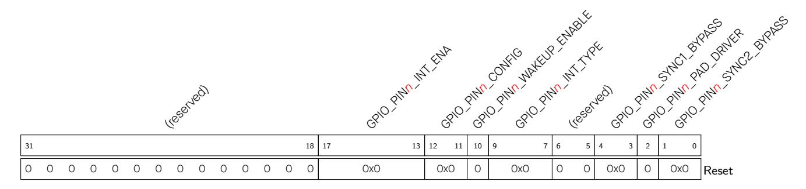

GPIO_STATUS_INTERRUPT_NEXT Interrupt source signal of GPIO0 ~ 21, could be rising edge interrupt, falling edge interrupt, level sensitive interrupt and any edge interrupt. Bit0 ~ bit21 are corresponding to GPIO0 ~ 21, and bit22 ~ bit25 are invalid. (RO)
Register 5.17. GPIO_FUNC n _OUT_SEL_CFG_REG ( n : 0-21) (0x0554+4* n )
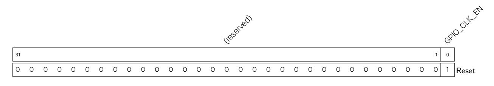
GPIO_CLK_EN Clock gating enable bit. If set to 1, the clock is free running. (R/W)
GPIO_DATE_REG Version control register (R/W)
The addresses in this section are relative to the IO MUX base address provided in Table 3.3-3 in Chapter 3 System and Memory .
IO_MUX_CLK_OUT x If you want to output clock for I2S to CLK_OUT_out x , set IO_MUX_CLK_OUT x to 0x0. CLK_OUT_out x can be found in Table 5.11-1. (R/W)
| Register 5.21. IO_MUX_GPIOn_REG (n: 0-21) (0x0004+4*n) | |||||||||||||||||
|---|---|---|---|---|---|---|---|---|---|---|---|---|---|---|---|---|---|
| IO_MUX_GPIOn_FILTER_EN | MCU_SEL |
IO_MUX_GPIOn_FUN_WPU
IO_MUX_GPIOn_FUN_DRV IO_MUX_GPIOn_FUN_IE |
IO_MUX_GPIOn_FUN_WPD | MCU_DRV |
MCU_WPD
MCU_WPU IO_MUX_GPIOn_SLP_SEL MCU_IE |
||||||||||||
| IO_MUX_GPIOn_ | IO_MUX_GPIOn_ |
IO_MUX_GPIOn_
IO_MUX_GPIOn_ |
IO_MUX_GPIOn_ | ||||||||||||||
Continued on the next page...
IO_MUX_GPIO n _FUN_DRV Select the drive strength of the pin.
• GPIO2, GPIO3, GPIO5, GPIO18, GPIO18, GPIO19
0: ~5 mA 1: ~20 mA 2: ~10 mA
(R/W)
IO_MUX_DATE_REG Version control register (R/W)
The addresses in this section are relative to (GPIO base address provided in Table 3.3-3 in Chapter 3 System and Memory + 0x0F00).
GPIOSD_SD n _IN This field is used to configure the duty cycle of sigma delta modulation output. (R/W)
GPIOSD_SD n _PRESCALE This field is used to set a divider value to divide APB clock. (R/W)
GPIOSD_CLK_EN Clock enable bit of configuration registers for sigma delta modulation. (R/W)
GPIOSD_FUNCTION_CLK_EN Clock enable bit of sigma delta modulation. (R/W)
GPIOSD_SPI_SWAP Reserved. (R/W)
GPIOSD_DATE Version Control Register. (R/W)
ESP32-C3 provides four types of reset that occur at different levels, namely CPU Reset, Core Reset, System Reset, and Chip Reset. All reset types mentioned above (except Chip Reset) maintain the data stored in internal memory. Figure 6.1-1 shows the scope of affected subsystems by each type of reset.
Figure 6.1-1. Reset Types
If CPU is reset, PMS registers will be reset, too.
CPU will be rese t immediately when any of the reset above occurs. Users can get reset source codes by reading register RTC_CNTL_RESET_CAUSE_PROCPU after the reset is released.
Table 6.1-1 lists possible reset sources and the types of reset they trigger.
| Chapter 6 | Reset and Clock | GoBack | |||||
|---|---|---|---|---|---|---|---|
| Table 6.1-1. Reset Sources | |||||||
| Code | Source | Reset Type | Comments | ||||
| 0x01 | Chip reset1 | Chip Reset | - | ||||
| 0x0F | Brown-out system reset | Chip Reset or | Triggered by brown-out detector2 | ||||
| System Reset | |||||||
| 0x10 | RWDT system reset | System Reset | See Chapter 12 Watchdog Timers (WDT) | ||||
|
0x12
0x13 |
Super Watchdog reset
CLK GLITCH reset |
System Reset
System Reset |
See Chapter 12 Watchdog Timers (WDT)
See Chapter 25 Clock Glitch Detection |
||||
| 0x03 | Software system reset | Core Reset | Triggered by configuring RTC_CNTL_SW_SYS_RST | ||||
| 0x05 | Deep-sleep reset | Core Reset | See Chapter 9 Low-power Management | ||||
| 0x07 | MWDT0 core reset | Core Reset | See Chapter 12 Watchdog Timers (WDT) | ||||
| 0x08 | MWDT1 core reset | Core Reset | See Chapter 12 Watchdog Timers (WDT) | ||||
|
0x09
0x14 |
RWDT core reset
eFuse reset |
Core Reset
Core Reset |
See Chapter 12 Watchdog Timers (WDT)
Triggered by eFuse CRC error Triggered when external USB host sends a specific com |
||||
| 0x15 | USB (UART) reset | Core Reset |
mand to the Serial interface of USB-Serial-JTAG. See 30
USB Serial/JTAG Controller (USB_SERIAL_JTAG) Triggered when external USB host sends a specific com |
||||
| 0x16 | USB (JTAG) reset | Core Reset | mand to the JTAG interface of USB-Serial-JTAG. See 30 | ||||
| USB Serial/JTAG Controller (USB_SERIAL_JTAG) | |||||||
| 0x17 | Power glitch reset | Core Reset | Triggered by power glitch | ||||
| 0x0B | MWDT0 CPU reset | CPU Reset | See Chapter 12 Watchdog Timers (WDT) | ||||
| 0x0C | Software CPU reset | CPU Reset | Triggered by configuring RTC_CNTL_SW_PROCPU_RST | ||||
1 Chip Reset can be triggered by the following two sources:
2 Once brown-out status is detected, the detector will trigger System Reset or Chip Reset, depending on register configuration. See Chapter 9 Low-power Management .
ESP32-C3 clocks are mainly sourced from oscillator (OSC), RC, and PLL circuit, and then processed by the dividers or selectors, which allows most functional modules to select their working clock according to their power consumption and performance requirements. Figure 6.2-1 shows the system clock structure.
Figure 6.2-1. System Clock
ESP32-C3 clocks can be classified in two types depending on their frequencies:
Espressif Systems 194
As Figure 6.2-1 shows, CPU_CLK is the master clock for CPU and it can be as high as 160 MHz when CPU works in high performance mode. Alternatively, CPU can run at lower frequencies, such as at 2 MHz, to lower power consumption. Users can set PLL_CLK, RC_FAST_CLK or XTAL_CLK as CPU_CLK clock source by configuri ng reg ister SYSTEM_SOC_CLK_SEL, see Table 6.2-1 and Table 6.2-2. By default, the CPU clock is sourced from XTAL_CLK with a divider of 2, i.e. the CPU clock is 20 MHz.
| Table 6.2-1. CPU Clock Source | |
| SYSTEM_SOC_CLK_SEL Value | CPU Clock Source |
| Table 6.2-2. CPU Clock Frequency | ||||
|---|---|---|---|---|
| CPU Clock Source | SEL_0* | SEL_1* | SEL_2* | CPU Clock Frequency |
| XTAL_CLK | 0 | - | - | CPU_CLK = XTAL_CLK/(SYSTEM_PRE_DIV_CNT + 1) |
| SYSTEM_PRE_DIV_CNT ranges from 0 ~ 1023. Default is 1 | ||||
| PLL_CLK (480 MHz) | 1 | 1 | 0 | CPU_CLK = PLL_CLK/6 |
| CPU_CLK frequency is 80 MHz | ||||
| PLL_CLK (480 MHz) | 1 | 1 | 1 | CPU_CLK = PLL_CLK/3 |
| CPU_CLK frequency is 160 MHz | ||||
| PLL_CLK (320 MHz) | 1 | 0 | 0 | CPU_CLK = PLL_CLK/4 |
| CPU_CLK frequency is 80 MHz | ||||
| PLL_CLK (320 MHz) | 1 | 0 | 1 |
CPU_CLK = PLL_CLK/2
CPU_CLK frequency is 160 MHz |
| CPU_CLK = RC_FAST_CLK/(SYSTEM_PRE_DIV_CNT + 1) |
* The value of SYSTEM_SOC_CLK_SEL.
* The value of SYSTEM_PLL_FREQ_SEL.
* The value of SYSTEM_CPUPERIOD_SEL.
Peripheral clocks include APB_CLK, CRYPTO_CLK, PLL_F160M_CLK, LEDC_SCLK, XTAL_CLK, and RC_FAST_CLK. Table 6.2-3 shows which clock can be used by each peripheral.
|
ip
l G T I M |
T
A L_ C L K A |
P
B_ C L K P L |
L_
F 1 6 0 M_ C L K R T |
C_
F A S T_ C L K R C_ |
F
A S T_ C L K C R Y |
P
T O_ C L K L E D C_ |
C
L K P L L_ D |
Chapter
2_ C L K |
|---|---|---|---|---|---|---|---|---|
| Y | Y | 6 | ||||||
|
2
S |
Y | Y | Y | Reset | ||||
|
U
H C I |
Y | |||||||
|
U
A R |
Y | Y | Y | and | ||||
|
T
R M |
Clock | |||||||
|
T
2 C |
Y | Y | Y | |||||
|
S
P I |
Y | Y | ||||||
|
Fu
Co e se n- |
Y
Y |
Y | Y | |||||
|
l
ler tro |
||||||||
|
S
A R A D C Te |
Y | |||||||
|
tu
mp era re Se |
Y | Y | ||||||
|
ns
or |
||||||||
|
U
S B |
Y | |||||||
|
C
R Y P T O |
Y | |||||||
|
Co
l ler T W A I tro n |
Y | |||||||
|
C
L E D S S_ Y T I M E R |
Y
Y |
Y
Y |
Y | Y | Y |
The frequency of APB_CLK is determined by the clock source of CPU_CLK as shown in Table 6.2-4.
| Table 6.2-4. APB_CLK Clock Frequency | |||
| CPU_CLK Source | APB_CLK Frequency | ||
The frequency of CRYPTO_CLK is determined by the CPU_CLK source, as shown in Table 6.2-5.
Table 6.2-5. CRYPTO_CLK Frequency
| Table 6.2-5. CRYPTO_CLK Frequency | |||
| CPU_CLK Source | CRYPTO_CLK Frequency | ||
| PLL_CLK | 160 MHz | ||
PLL_F160M_CLK is divided from PLL_CLK according to current PLL frequency.
LEDC module uses RC_FAST_CLK as clock source when APB_CLK is disabled. In other words, when the system is in low-power mode, most peripherals will be halted (as APB_CLK is turned off), but LEDC can still work normally via RC_FAST_CLK.
Wi-Fi and Bluetooth LE can only work when CPU_CLK uses PLL_CLK as its clock source. Suspending PLL_CLK requires that Wi-Fi and Bluetooth LE have entered low-power mode first.
LOW_POWER_CLK uses XTAL32K_CLK, XTAL_CLK, RC_FAST_CLK or RTC_SLOW_CLK (the low clock selected by RTC) as its clock source for Wi-Fi and Bluetooth LE in low-power mode.
The clock sources for RTC_SLOW_CLK and RTC_FAST_CLK are low-frequency clocks. RTC module can operate when most other clocks are stopped. RTC_SLOW_CLK derived from RC_SLOW_CLK, XTAL32K_CLK or RC_FAST_DIV_CLK is used to clock Power Management module. RTC_FAST_CLK is used to clock On-chip Sensor module. It can be sourced from a divided XTAL_CLK or from a divided RC_FAST_CLK.
ESP32-C3 has three strapping pins:
These strapping pins are used to control the following functions during chip power-on or hardware reset:
During power-on reset, RTC watchdog reset, brownout reset, analog super watchdog reset, and crystal clock glitch detection reset (see Chapter 6 Reset and Clock ), hardware captures samples and stores the voltage level of strapping pins as strapping bit of "0" or "1" in latches, and holds these bits until the chip is powered down or shut down. Software can read the latch status (strapping value) from GPIO_STRAPPING.
By default, GPIO9 is connected to t he chip's internal p ull-up resistor. If GPIO9 is not connected or connected to an external high-impedance circuit, the internal weak pull-up determines the default input level of this strapping pin (see Table 7.1-1).
| Strapping Pin | Defualt Configuration | |
| GPIO2 | N/A | |
| GPIO8 | N/A | |
To change the strapping bit values, users can apply external pull-down/pull-up resistors, or use host MCU GPIOs to control the voltage level of these pins when powering on ESP32-C3. After the reset is released, the strapping pins work as normal-function pins.
The following section provides description of the chip functions and the pattern of the strapping pins values to invoke each function. Only documented patterns should be used. If some pattern is not documented, it may trigger unexpected behavior.
The values of GPIO2, GPIO3, GPIO8, and GPIO9 at reset determine the boot mode after the reset is released. Table 7.2-1 shows the strapping pin values of GPIO9, GPIO8, GPIO3, and GPIO2, and the associated boot modes.
| Table 7.2-1. Boot Mode Control | ||||
|
Boot Mode
SPI Boot mode |
GPIO9
1 |
GPIO8
1 x |
GPIO3
x |
GPIO2
x |
| Joint Download Boot mode2 | 0 | 1 | x | x |
1 x: values that have no effect on the result and can therefore be ignored.
2 Joint Download Boot mode: Joint Download Boot mode supports the following download methods:
In SPI Boot mode, the ROM bootloader loads and executes the program from SPI flash to boot the system. SPI Boot mode can be further classified as follows:
In Joint Download Boot mode, users can download binary files into flash using UART0 or USB interface. It is also possible to download binary files into SRAM and execute it in this mode.
In SPI Download Boot mode, users can download binary files into flash using SPI interface. It is also possible to download binary files into SRAM and execute it from SRAM.
The following eFuses control boot mode behaviors:
If this eFuse is 1, Joint Download Boot mode is disabled. GPIO_STRAPPING will not be overw ritten by RTC_CNTL_FORCE_DOWNLOAD_BOOT.
• EFUSE_ENABLE_SECURITY_DOW NLOAD
If this eFuse is 1, Joint Download Boot m ode only allows reading, writing, an d erasing plaintext flash and does not support any SRAM or register operations. Ignore this eFuse if Joint Download Boot mode is disabled.
• EFUSE_DIS_DIRECT_BOOT
If this eFuse is 1, Direct Boot mode is disabled.
USB Serial/JTAG Controller can also force the chip into Joint Download Boot mode from SPI Boot mode, as well as force the chip into SPI Boot mode from Joint Download Boot mode. For detailed information, please refer to Chapter 30 USB Serial/JTAG Controller (USB_SERIAL_JTAG) .
During early SPI Boot process, the messages by the ROM code can be printed to:
EFUSE_UART_PRINT_CONTROL and GPIO8 control ROM messages printing to UART0 as shown in Table 7.3-1.
| eFuse1 | GPIO8 | ROM Code Printing |
|
ROM code is always printed to UART0 during boot.
The |
||
| 0 | x | value of GPIO8 is ignored. |
| 0 | Print is enabled during boot. | |
| 1 | 1 | Print is disabled during boot. |
| 2 | 0 | Print is disabled during boot. |
| 3 |
1
x |
Print is enabled during boot. |
| Print is always disabled during boot. The value of GPIO8 is |
1 eFuse: EFUSE_UART_PRINT_CONTROL
EFUSE_USB_PRINT_CHANNEL controls the printing to USB Serial/JTAG controller. When this bit is 1, printing to USB Serial/JTAG controll er is disabled. When this bit is 0 and the USB Serial/JTAG controller is enabled via EFUSE_DIS_USB_SERIAL_JTAG, ROM messages can be printed to USB Serial/JTAG controller.
Note that if EFUSE_USB_PRINT_CHANNEL is set to 0 to print ROM messages to USB, but USB Serial/JTAG controller has been disabled, then ROM messages will not be printed to USB Serial/JTAG controller.
Please note that ROM message printing to UART0 and to the USB Serial/JTAG Controller is controlled independe ntly.
The interrupt matrix embedded in ESP32-C3 independently routes peripheral interrupt sources to the ESP-RISC-V CPU's peripheral interrupts, to timely inform CPU to process the coming interrupts.
The ESP32-C3 has 62 peripheral interrupt sources. To map them to 31 CPU interrupts, this interrupt matrix is needed.
This chapter focuses on how to map peripheral interrupt sources to CPU interrupts. For more details about interrupt configuration, vector, and ISA suggested operations, please refer to Chapter 1 ESP-RISC-V CPU .
Figure 8.2-1 shows the structure of the interrupt matrix.
Figure 8.2-1. Interrupt Matrix Structure
The ESP32-C3 has 62 peripheral interrupt sources in total. Table 8.3-1 lists all these sources and their configuration/status registers.
|
Sta
Re iste tus g r |
|||||
|---|---|---|---|---|---|
| No |
C
ha ter p |
So
urc e |
Co
nfi tio iste Re g ura n g r Bit |
Chapter
Na me 8 |
|
| 0 |
d
res erv e |
d
res erv e |
d
0 res erv e |
||
| 1 |
d
res erv e |
d
res erv e |
d
1 res erv e |
||
| 2 |
d
res erv e |
d
res erv e |
d
2 res erv e |
||
| 3 |
d
res erv e |
d
res erv e |
d
3 res erv e |
Interrupt | |
| 4 |
d
res erv e |
d
res erv e |
d
res erv e |
Matrix | |
| 5 |
d
res erv e |
res
erv e |
4
res erv e |
||
| 6 |
res
erv e |
d
res erv e |
d
5 res erv e |
||
| 7 |
d
d res erv e |
d
res erv e |
d
6 res erv e |
(INTERRUPT) | |
| 8 |
d
res erv e |
d
res erv e |
d
7 res erv e |
||
| 9 | d | d |
d
8 |
||
|
res
erv e |
d
res erv e |
d
9 res erv e |
|||
| 10 |
d
res erv e |
d
res erv e |
d
10 res erv e |
||
| 11 |
d
res erv e |
d
res erv e |
d
11 res erv e |
||
| 12 |
d
res erv e |
d
res erv e |
d
12 res erv e |
||
| 13 |
d
res erv e |
d
res erv e |
d
13 res erv e |
||
| 14 |
d
res erv e |
d
res erv e |
d
14 res erv e |
||
|
15
16 |
(
) UA RT Co ller UA RT ntr o ( IO MU X d GP IO Ma trix GP IO, an |
UH
CI0 INT R _ GP IO_ OC PR PU INT R |
INT
ER RU PT_ CO RE 0_ UH CI0 INT R_ MA P_ RE G 15 _ CO 0_ GP IO_ O_ INT ER RU PT_ RE INT ER RU PT_ PR MA P_ RE 16 |
INT
ER RU |
PT_
CO RE 0_ INT R_ STA TU S_ 0_ RE G |
|
)
IO MU X |
_ | G | |||
| 17 |
d
res erv e |
d
res erv e |
d
17 res erv e |
||
| 18 |
d
res erv e |
d
res erv e |
d
18 res erv e |
||
| 19 |
(
ller ) SP I Co SP I ntr o |
GP
SP I2_ INT R_ 2 |
INT
ER RU PT_ CO RE 0_ SP I_ INT R_ 2_ MA P_ RE G 19 |
||
| 20 |
(
) ller I2S Co I2S ntr o |
I2S
INT R _ |
INT
ER RU PT_ CO RE 0_ I2S INT MA P_ RE G 20 _ _ |
||
| 21 |
(
) ller UA RT Co UA RT ntr o |
UA
RT_ INT R |
INT
ER RU PT_ CO RE 0_ UA RT_ INT R_ MA P_ RE G 21 |
||
| 22 |
(
) ller UA RT Co UA RT ntr o |
UA
RT 1_ INT R |
INT
ER RU PT_ CO RE 0_ UA RT 1_ INT R_ MA P_ RE G 22 |
||
| 23 |
(
) ller LE D PW M Co LE DC ntr o |
LE
DC INT R _ |
INT
ER RU PT_ CO RE 0_ LE DC INT MA P_ RE G 23 _ _ |
||
| 24 |
(
) ller eF Co EF US E ntr use o Tw ire Au oti Int erf tom o-w ve ac e |
EF
US E_ INT R |
INT
ER RU PT_ CO RE 0_ EF US E_ INT MA P_ RE G 24 _ |
||
| 25 |
(
) TW AI US Se l/JT AG Co ller B ria ntr o |
TW
AI_ INT R |
INT
ER RU PT_ CO RE 0_ TW AI_ INT MA P_ RE G 25 _ |
||
| 26 |
(
) US SE G B_ RIA L_ JTA |
US
B_ SE RIA L_ JTA G_ INT R |
INT
ER RU PT_ CO RE 0_ US B_ INT R_ MA P_ RE G 26 |
||
| 27 |
Lo
Ma t w-p ow er na g em en Co l he l Re te ntr Pe rip mo o ra |
C_
CN RT TL INT R _ |
CO
0_ C_ CO G INT ER RU PT_ RE RT RE INT R_ MA P_ RE 27 _ |
||
| 28 |
(
) RM T |
RM
T_ INT R |
INT
ER RU PT_ CO RE 0_ RM T_ INT R_ MA P_ RE G 28 |
GoBack | |
| 29 |
(
) I2C Co ller I2C ntr o |
I2C
EXT 0_ INT R |
INT
ER RU PT_ CO RE 0_ I2C EXT 0_ INT R_ MA P_ RE G 29 |
||
|
Sta
Re iste tus g r |
|||||
|---|---|---|---|---|---|
| No |
C
ha ter p |
So
urc e |
Co
nfi tio iste Re g ura n g r Bit |
Chapter
Na me |
|
| 31 |
d
res erv e |
d
res erv e |
d
31 res erv e |
||
| 32 |
(
) Tim Gro TIM G er up |
TG
T0 INT R _ _ |
INT
ER RU PT_ CO RE 0_ TG T0 INT MA P_ RE G 0 _ _ _ |
8 | |
| 33 |
(
) Tim Gro TIM G up |
TG
WD T_ INT R |
INT
ER RU PT_ CO RE 0_ TG WD T_ INT MA P_ RE G 1 |
||
| 34 |
er
( ) Tim Gro TIM G up |
_
TG 1_ T0 INT R |
_
_ INT ER RU PT_ CO RE 0_ TG 1_ T0 INT MA P_ RE G 2 |
||
| 35 |
er
( ) Tim Gro TIM G up |
_
TG 1_ WD T_ INT R |
_
_ INT ER RU PT_ CO RE 0_ TG 1_ WD T_ INT MA P_ RE 3 |
Interrupt | |
|
er
res erv e |
res
erv e |
G
_ res erv e |
|||
| 36 |
d
( ) Sy SY ST Tim IM ER ste |
d
SY ST RG 0_ IM ER TA ET INT |
d
36 CO 0_ SY ST RG 0_ INT ER RU PT_ RE IM ER TA ET INT MA P_ RE |
Matrix | |
| 37 |
m
er ( ) Sy SY ST Tim IM ER ste |
R
_ SY ST RG IM ER TA ET 1_ INT |
G
5 _ _ CO 0_ SY ST RG INT ER RU PT_ RE IM ER TA ET 1_ INT MA P_ RE |
||
| 38 |
m
er ( SY ST Tim IM ER ste |
R
_ SY ST RG 2_ IM ER TA ET INT |
G
6 _ _ CO 0_ SY ST RG 2_ INT ER RU PT_ RE IM ER TA ET INT MA P_ RE |
||
| 39 |
)
Sy m er |
R
_ |
G
7 _ _ |
||
| 40 |
d
res erv e |
d
res erv e |
d
8 res erv e |
||
| 41 |
d
res erv e |
d
res erv e |
d
9 res erv e |
||
|
42
43 |
d
res erv e On -C hip Se d An log ns or an a |
d
res erv e vD IGT AL AD C_ INT R _ |
d
10 res erv e INT ER RU PT_ CO RE 0_ AP B_ AD C_ INT MA P_ RE G 11 _ |
(INTERRUPT) | |
|
Sig
l Pro ssi na ce ng |
|||||
| 44 |
(
) GD MA Co ller GD MA ntr o |
GD
MA CH 0_ INT R _ |
INT
ER RU PT_ CO RE 0_ DM A_ CH 0_ INT MA P_ RE G 12 _ |
||
| 45 |
(
) GD MA Co ller GD MA ntr o |
GD
MA CH 1_ INT R _ |
INT
ER RU PT_ CO RE 0_ DM A_ CH 1_ INT MA P_ RE G 13 _ INT |
ER
RU |
PT_
CO RE 0_ INT R_ STA TU S_ 1_ RE G |
| 46 |
(
) GD MA Co ller GD MA ntr o |
GD
MA CH 2_ INT R _ |
INT
ER RU PT_ CO RE 0_ DM A_ CH 2_ INT MA P_ RE G 14 _ |
||
| 47 |
(
) RS A Ac ler RS A ato ce r |
RS
A_ INT R |
INT
ER RU PT_ CO RE 0_ RS A_ INT R_ MA P_ RE G 15 |
||
| 48 |
(
) AE S Ac ler AE S ato ce r |
AE
S_ INT R |
INT
ER RU PT_ CO RE 0_ AE S_ INT R_ MA P_ RE G 16 |
||
| 49 |
(
) SH A Ac ler SH A ato ce r |
SH
A_ INT R |
INT
ER RU PT_ CO RE 0_ SH A_ INT R_ MA P_ RE G 17 |
||
| 50 |
(
) Sy Re iste SY SR EG ste m g rs |
SW
INT R_ 0 _ |
INT
ER RU PT_ CO RE 0_ CP U_ INT R_ FR OM CP U_ 0_ MA P_ RE G 18 _ |
||
| 51 |
(
) Sy Re iste SY SR EG ste m g rs |
SW
INT R_ 1 _ |
INT
ER RU PT_ CO RE 0_ CP U_ INT R_ FR OM CP U_ 1_ MA P_ RE G 19 _ |
||
| 52 |
(
) Sy Re iste SY SR EG ste m g rs |
SW
INT R_ 2 _ |
INT
ER RU PT_ CO RE 0_ CP U_ INT R_ FR OM CP U_ 2_ MA P_ RE G 20 _ |
||
| 53 |
(
) Sy Re iste SY SR EG ste m g rs bu De As sis tan t g |
SW
INT R_ 3 _ AS SIS T_ DE BU G_ INT |
INT
ER RU PT_ CO RE 0_ CP U_ INT R_ FR OM CP U_ 3_ MA P_ RE G 21 _ INT ER RU PT_ CO RE 0_ AS SIS T_ DE BU G_ INT R_ MA P_ RE |
||
|
54
55 |
(
) AS SIS T_ DE BU G ( ) Pe iss ion Co PM S ntr rm o |
R
PM S_ DM A_ VIO INT R |
G
22 INT ER - 23 |
||
|
l
( ) Pe iss ion Co PM S ntr rm o |
_
RU PM S_ IBU S_ VIO INT |
CO
0_ S_ MO OR VIO G PT_ RE DM A_ AP BP ER I_ PM NIT LAT E_ INT R_ MA P_ RE _ INT ER - |
|||
| 56 |
l
( Pe iss ion Co PM S ntr rm o |
R
_ RU PM S_ DB US VIO INT |
24
CO 0_ CO 0_ M0 S_ MO OR VIO G PT_ RE RE IRA PM NIT LAT E_ INT R_ MA P_ RE _ _ _ INT ER - |
||
| 57 |
l
) ( Pe iss ion Co PM S ntr rm |
R
_ _ RU PM S_ PE RI_ VIO INT |
25
CO 0_ CO 0_ 0_ S_ MO OR VIO G PT_ RE RE DR AM PM NIT LAT E_ INT R_ MA P_ RE _ _ INT ER - |
||
| 58 |
)
l o Pe iss ion Co PM S |
R
_ PM PE VIO SIZ INT |
26
RU PT_ CO RE 0_ CO RE 0_ PIF PM S_ MO NIT OR VIO LAT E_ INT R_ MA P_ RE G _ _ _ INT ER - |
GoBack | |
| 59 |
(
) l ntr rm o |
S_
RI_ E_ R RU _ |
27
PT_ CO RE 0_ CO RE 0_ PIF PM S_ MO NIT OR VIO LAT E_ SIZ E_ INT R_ MA P_ RE G _ _ _ |
||
Espressif Systems
205 Submit Documentation Feedback
|
Sta
Re iste tus g r |
||||
|---|---|---|---|---|
| No |
C
ha ter p |
So
urc e |
Co
nfi tio iste Re g ura n g r Bit |
Chapter
Na me |
| 61 |
d
res erv e |
d
res erv e |
d
29 res erv e |
|
| 8 | ||||
| Interrupt | ||||
| Matrix | ||||
| (INTERRUPT) | ||||
| GoBack | ||||
Espressif Systems
The ESP32-C3 implements its interrupt mechanism using an interrupt controller instead of RISC-V Privileged ISA specification. The ESP-RISC-V CPU has 31 interrupts, numbered from 1 ~ 31. Each CPU interrupt has the following properties.
For detailed information about how to configure CPU interrupts, see Chapter 1 ESP-RISC-V CPU .
In this section, the following terms are used to describe the operation of the interrupt matrix.
Setting the corresponding configuration register INTERRUPT_CORE0_SOURCE_ X _MAP_REG of Source_ X to Num_P allocates this interrupt source to Interrupt_P.
Setting the corresponding configuration register INTERRUPT_CORE0_SOURCE_X n _MAP_REG of each interrupt source to the same Num_P allocates multiple sources to the same Interrupt_P. Any of these sources can trigger CPU Interrupt_P. When an interrupt signal is generated, CPU should check the interrupt status registers to figure out which peripheral generated the inte rrupt. For more information, see Chapter 1 ESP-RISC-V CPU .
Clear ing the configuration register INTERRUPT_CORE0_SOURCE_ X _MAP_REG disables the corresponding interrupt source.
Users can query current interrupt status of a peripheral interrupt source by reading the bit value in INTERRUPT_CORE0
_INTR_STATUS_ n _REG (read only). For the mapping between INTERRUPT_CORE0_INTR_STATUS_ n _REG and peripheral interrupt sources, please refer to Table 8.3-1.
|
So
ing is In Ma Re te t te rru p ur ce p p g rs C O 0_ G / N T E R R U P T_ R E P W R_ I N T R_ M A P_ R E P W R_ I N T R ing is 0x 0 0 0 8 R W te ma p p reg r T E R R U P T_ C O R E 0_ I 2 C_ M S T_ I N T_ M A P_ R E G I 2 C_ M S T_ I N T ing is 0 2 C R / W 0x 0 te ma p p reg r T E R R U P T_ C O R E 0_ S L C 0_ I N T R_ M A P_ R E G S L C 0_ I N T R ing is R / W 0x 0 0 3 0 te ma p p reg r / T E R R U P T_ C O R E 0_ S L C 1_ I N T R_ M A P_ R E G S L C 1_ I N T R ing is R W te 0x 0 0 3 4 ma p p reg r / T E R R U P T_ C O R E 0_ A P B_ C T R L_ I N T R_ M A P_ R E G A P B_ C T R L_ I N T R ing is 0x 0 0 3 8 R W te ma p p reg r / T E R R U P T_ C O R E 0_ U H C I 0_ I N T R_ M A P_ R E G U H C I 0_ I N T R ing is 0x 0 0 3 C R W te ma p p reg r / T E R R U P T_ C O R E 0_ G P I O_ I N T E R R U P T_ P R O_ M A P_ R E G G P I O_ I N T E R R U P T_ P R O ing is 0x 0 0 0 R W te 4 ma p p reg r / T E R R U P T_ C O R E 0_ S P I_ I N T R_ 1_ M A P_ R E G S P I_ I N T R_ 1 ing is 0x 0 0 8 R W te 4 ma p p reg r / T E R R U P T_ C O R E 0_ S P I_ I N T R_ 2_ M A P_ R E G S P I_ I N T R_ 2 ing is 0x 0 0 4 C R W te ma p p reg r C O 0_ 2 S_ G 2 S_ / T E R R U P T_ R E I I N T_ M A P_ R E I I N T ing is 0x 0 0 5 0 R W te ma p p reg r C O 0_ G / T E R R U P T_ R E U A R T_ I N T R_ M A P_ R E U A R T_ I N T R ing is 0x 0 0 5 4 R W te ma p p reg r C O 0_ G / T E R R U P T_ R E U A R T 1_ I N T R_ M A P_ R E U A R T 1_ I N T R ing is 0x 0 0 5 8 R W te ma p p reg r C O 0_ C_ G C_ 0 C / T E R R U P T_ R E L E D I N T_ M A P_ R E L E D I N T ing is 0x 0 5 R W te ma p p reg r T E R R U P T_ C O R E 0_ E F U S E_ I N T_ M A P_ R E G E F U S E_ I N T ing is R / W 0x 0 0 6 0 te ma p p reg r T E R R U P T_ C O R E 0_ T W A I_ I N T_ M A P_ R E G T W A I_ I N T ing is R / W 0x 0 0 6 4 te ma p p reg r T E R R U P T_ C O R E 0_ U S B_ I N T R_ M A P_ R E G U S B_ I N T R ing is R / W te 0x 0 0 6 8 ma p p reg r / T E R R U P T_ C O R E 0_ R T C_ C O R E_ I N T R_ M A P_ R E G R T C_ C O R E_ I N T R ing is 0 6 C R W te 0x 0 ma p p reg r / T E R R U P T_ C O R E 0_ R M T_ I N T R_ M A P_ R E G R M T_ I N T R ing is 0x 0 0 0 R W te 7 ma p p reg r / T E R R U P T_ C O R E 0_ I 2 C_ E X T 0_ I N T R_ M A P_ R E G I 2 C_ E X T 0 in ing is 0x 0 0 R W tr te 7 4 ma p p reg r / T E R R U P T_ C O R E 0_ T I M E R_ I N T 1_ M A P_ R E G T I M E R_ I N T 1 ing is 0x 0 0 8 R W te 7 ma p p reg r / T E R R U P T_ C O R E 0_ T I M E R_ I N T 2_ M A P_ R E G T I M E R_ I N T 2 ing is 0x 0 0 7 C R W te ma p p reg r C O 0_ G_ 0_ G G_ 0_ / T E R R U P T_ R E T T I N T_ M A P_ R E T T I N ing is 0x 0 0 8 0 R W te ma p p reg r |
Na
me |
De
ip t sc r |
d
dr A Ac es ce |
|
|---|---|---|---|---|
| ion |
s
ss |
|||
| N | ||||
| N | ||||
| N | ||||
| N | ||||
| N | ||||
| N | ||||
| N | ||||
| N | ||||
| N | ||||
| N | ||||
| N | ||||
| N | ||||
| N | ||||
| N | ||||
| N | ||||
| N | ||||
| N | ||||
| N | ||||
| N | ||||
| N | ||||
| N | T |
|
Na
De me |
d
dr ip ion A t sc r es s |
Ac
ce ss |
|
|---|---|---|---|
|
N
T E R R U P T_ C O R E 0_ T G 1_ T 0_ I N T_ M A P_ R E G T G 1_ |
T
0_ I N T ing is 0x 0 0 8 8 te ma p p reg r |
R
/ W |
|
|
N
T E R R U P T_ C O R E 0_ T G 1_ W D T_ I N T_ M A P_ R E G T G 1_ |
W
D T_ I N T ing is 0 8 C 0x 0 te ma p p reg r |
R
/ W |
Chapter
8 |
|
N
T E R R U P T_ C O R E 0_ C A C H E_ I A_ I N T_ M A P_ R E G C A C |
H
E_ I A_ I N T ing is te 0x 0 0 9 0 ma p p reg r |
/
R W |
|
|
N
T E R R U P T_ C O R E 0_ S Y S T I M E R_ T A R G E T 0_ I N T_ M A P_ R E G S Y S |
T
I M E R_ T A R G E T 0_ I N T ing is 0x 0 0 9 te 4 ma p p reg r |
/
R W |
|
|
N
T E R R U P T_ C O R E 0_ S Y S T I M E R_ T A R G E T 1_ I N T_ M A P_ R E G S Y S |
T
I M E R_ T A R G E T 1_ I N T ing is 0x 0 0 9 8 te ma p p reg r |
/
R W |
Interrupt |
|
N
T E R R U P T_ C O R E 0_ S Y S T I M E R_ T A R G E T 2_ I N T_ M A P_ R E G S Y S |
T
I M E R_ T A R G E T 2_ I N T ing is 0x 0 0 9 C te ma p p reg r |
/
R W |
|
|
N
T E R R U P T_ C O R E 0_ S P I_ M E M_ R E J E C T_ I N T R_ M A P_ R E G S P I_ |
M
E M_ R E J E C T_ I N T ing is 0x 0 0 A 0 te ma p p reg r |
/
R W |
Matrix |
|
N
T E R R U P T_ C O R E 0_ I C A C H E_ P R E L O A D_ I N T_ M A P_ R E G I C A |
R
C H E_ P R E L O A D_ I N ing is 0x 0 0 A te ma p p reg r |
/
R W |
|
|
C
O 0_ C C S C_ G C N T E R R U P T_ R E I A H E_ Y N I N T_ M A P_ R E I A |
T
4 C S C_ 0 0 H E_ Y N I N ing is 0x A te ma p p reg |
/
R W |
|
|
C
O 0_ C_ G N T E R R U P T_ R E A P B_ A D I N T_ M A P_ R E A P |
8
T r C_ 0 0 C B_ A D I N ing is 0x A te ma p p |
/
R W |
(INTERRUPT) |
|
C
O 0_ C 0_ G N T E R R U P T_ R E D M A_ H I N T_ M A P_ R E D M |
T
reg r C 0_ 0 0 0 A_ H I N ing is 0x B te ma |
/
R W |
|
|
C
O 0_ C G N T E R R U P T_ R E D M A_ H 1_ I N T_ M A P_ R E D M |
T
p p reg r C 0 0 A_ H 1_ I N is 0x B te ma |
/
R W |
|
|
N
T E R R U P C O R E D M C H I N M A R E G D M |
T
ing 4 p p reg r C H I N is 0 0 B 0x te |
R
/ W |
|
|
T_
0_ A_ 2_ T_ P_ N |
A_
2_ T ing 8 ma p p reg r |
/ | |
|
T
E R R U P T_ C O R E 0_ R S A_ I N T_ M A P_ R E G R S |
A_
I N T ing is 0 0 B C 0x te ma p p reg r |
R
W |
|
|
N
T E R R U P T_ C O R E 0_ A E S_ I N T_ M A P_ R E G A E |
S_
I N T ing is 0 0 C 0 te 0x ma p p reg r |
R
/ W |
|
|
N
T E R R U P T_ C O R E 0_ S H A_ I N T_ M A P_ R E G S H |
A_
I N T ing is 0 0 C 4 te 0x ma p p reg r |
/
R W |
|
|
N
T E R R U P T_ C O R E 0_ C P U_ I N T R_ F R O M_ C P U_ 0_ M A P_ R E G C P |
U_
I N T R_ F R O M_ C P U_ 0 ing is 0x 0 0 C 8 te ma p p reg r |
/
R W |
|
|
N
T E R R U P T_ C O R E 0_ C P U_ I N T R_ F R O M_ C P U_ 1_ M A P_ R E G C P |
U_
I N T R_ F R O M_ C P U_ 1 ing is 0x 0 0 C C te ma p p reg r |
/
R W |
|
|
N
T E R R U P T_ C O R E 0_ C P U_ I N T R_ F R O M_ C P U_ 2_ M A P_ R E G C P |
U_
I N T R_ F R O M_ C P U_ 2 ing is 0x 0 0 D 0 te ma p p reg r |
/
R W |
|
|
N
T E R R U P T_ C O R E 0_ C P U_ I N T R_ F R O M_ C P U_ 3_ M A P_ R E G C P |
U_
I N T R_ F R O M_ C P U_ 3 in ing is 0x 0 0 D 4 tr te ma p p reg r |
/
R W |
|
|
C
O 0_ S S S G_ G S S N T E R R U P T_ R E A I T_ D E B U I N T R_ M A P_ R E A |
S
G_ 0 0 8 I T_ D E B U I N T R ing is 0x D te ma p p reg r |
/
R W |
|
|
C
O 0_ S_ O O O N T E R R U P T_ R E D M A_ A P B P E R I_ P M M N I T R_ V I L A T E_ D M |
S_
O O O 0 0 C A_ A P B P E R I_ P M M N I T R_ V I L A T E ing is 0x D te ma p p reg r |
/
R W |
|
|
G
N T R_ M A P_ R E |
|||
|
C
O 0_ C O 0_ 0_ S_ O O O N T E R R U P T_ R E R E_ I R A M P M M N I T R_ V I L A T E I R A |
0_
S_ O O O 0 0 0 M P M M N I T R_ V I L A T E ing is 0x E te ma p p reg r |
/
R W |
|
|
G
I N T R_ M A P_ R E _ |
|||
|
C
O 0_ C O 0_ 0_ S_ O O O N T E R R U P T_ R E R E_ D R A M P M M N I T R_ V I L A T D R A |
0_
S_ O O O 0 0 M P M M N I T R_ V I L A T E ing is 0x E 4 te ma p p reg r |
/
R W |
|
|
G
E_ I N T R_ M A P_ R E |
|||
|
C
O 0_ C O 0_ S_ O O O N T E R R U P T_ R E R E_ P I F_ P M M N I T R_ V I L A T E_ P I F_ |
S_
O O O 0 0 8 P M M N I T R_ V I L A T E ing is 0x E te ma p p reg r |
/
R W |
|
Na
De me |
A
d dr ip ion t sc r |
Ac
es s ce ss |
|
|---|---|---|---|
|
N
T E R R U P T_ C O R E 0_ C O R E_ 0_ P I F_ P M S_ M O N I T O R_ V I O L A T E_ |
|||
|
P
I S I Z E_ I N T R_ M A P_ R E G |
F_
P M S_ M O N I T O R_ V I O L A T E_ S I Z E ing is 0 0 0x te ma p p reg r |
E
C R / W |
|
|
N
T E R R U P T_ C O R E 0_ B A C K U P_ P M S_ V I O L A T E_ I N T R_ M A P_ R E G B A |
C
K U P_ P M S_ V I O L A T E ing is 0 0 0x te ma p p reg r |
F
0 R / W |
|
|
N
T E R R U P T_ C O R E 0_ C A C H E_ C O R E 0_ A C S_ I N T_ M A P_ R E G C A |
C
H E_ C O R E 0_ A C S ing is 0 0 te 0x ma p p reg r |
/
F 4 R W |
|
|
In
So S Re is te t ta tu te rru p ur ce s g rs |
|||
|
N
T E R R U P T_ C O R E 0_ I N T R_ S T A T U S_ 0_ R E G S ta |
is
fo in 0 3 0x 0 0 tu te te t 1 reg rru p so urc es ~ |
F
8 R O |
|
|
N
T E R R U P T_ C O R E 0_ I N T R_ S T A T U S_ 1_ R E G S ta |
s
r r is fo in 3 2 6 0x 0 0 tu te te 1 reg p so urc es rru ~ |
F
C R O |
|
|
loc
is C Re te g r |
t
s r r |
||
|
k
N T E R R U P T_ C O R E 0_ C L O C K_ G A T E_ R E G C |
loc
is 0x 0 1 te |
/
0 0 R W |
|
|
C
is P In Re te te rru |
k
reg r |
||
|
U
t p g rs C O 0_ C G N T E R R U P T_ R E P U_ I N T_ E N A B L E_ R E En |
b
C is fo P in 0x 0 1 te te a rru |
/
0 R W |
|
|
C
O 0_ C G N T E R R U P T_ R E P U_ I N T_ T Y P E_ R E |
le
U ts reg r r p C f ion is fo P in 0x 0 1 t te te co n ura rru |
4
/ 0 R W |
|
|
Ty
C O 0_ C C G C N T E R R U P T_ R E P U_ I N T_ L E A R_ R E P |
ig
U ts p e reg r r p lea in is 0x 0 1 te te |
8
0 C / R W |
|
|
N
T E R R U P C O R E C P I N E I S T A T U R E G Pe |
U
t rru p c r reg r d is C P in fo 0x 0 1 |
R
O 1 0 |
|
|
T_
0_ U_ T_ P_ S_ N |
ing
U ta tu te te ts n s s reg r r rru p |
||
|
T
E R R U P T_ C O R E 0_ C P U_ I N T_ P R I_ 1_ R E G Pr |
ior
i f ig ion is fo C P U in 1 0x 0 1 ty t te te t co n ura reg r r rru p |
R
/ W 1 8 |
|
|
N
T E R R U P T_ C O R E 0_ C P U_ I N T_ P R I_ 2_ R E G Pr |
ior
i f ig ion is fo C P U in 1 ty t te te t 2 0x 0 co n ura reg r r rru p |
1
C R / W |
|
|
N
T E R R U P T_ C O R E 0_ C P U_ I N T_ P R I_ 3_ R E G Pr |
ior
i f ig ion is fo C P U in 3 ty t te te t 0x 0 1 co n ura reg r r rru p |
/
2 R W 0 |
|
|
N
T E R R U P T_ C O R E 0_ C P U_ I N T_ P R I_ 4_ R E G Pr |
ior
i f ig ion is fo C P U in 0x 0 ty t te te t 4 1 co n ura reg r r rru p |
/
2 R W 4 |
|
|
N
T E R R U P T_ C O R E 0_ C P U_ I N T_ P R I_ 5_ R E G Pr |
ior
i f ig ion is fo C P U in 0x 0 ty t te te t 5 1 co n ura reg p r r rru |
/
2 8 R W |
|
|
N
T E R R U P T_ C O R E 0_ C P U_ I N T_ P R I_ 6_ R E G Pr |
ior
i f ig ion is fo C P U in 6 0x 0 1 ty t te te t co n ura reg p r r rru |
/
2 C R W |
|
|
N
T E R R U P T_ C O R E 0_ C P U_ I N T_ P R I_ 7_ R E G Pr |
ior
i f ig ion is fo C P U in 7 0x 0 1 ty t te te t co n ura reg r r rru p |
/
3 0 R W |
|
|
C
O 0_ C 8_ G N T E R R U P T_ R E P U_ I N T_ P R I_ R E Pr |
C
ior i f ig ion is fo P U in 8 0x 0 1 ty t te te t co n ura reg r r rru p |
/
3 4 R W |
|
|
C
O 0_ C 9_ G N T E R R U P T_ R E P U_ I N T_ P R I_ R E Pr |
C
ior i f ig ion is fo P U in 9 0x 0 1 ty t te te t co n ura reg r r rru p |
/
3 8 R W |
|
|
C
O 0_ C 0_ G N T E R R U P T_ R E P U_ I N T_ P R I_ 1 R E Pr |
C
ior i f ig ion is fo P U in 1 0 0x 0 1 ty t te te t co n ura reg r r rru p |
3
C / R W |
|
|
C
O 0_ C G N T E R R U P T_ R E P U_ I N T_ P R I_ 1 1_ R E Pr |
C
ior i f ig ion is fo P U in 1 1 0x 0 1 ty t te te t co n ura reg r r rru p |
/
4 0 R W |
|
|
N
T E R R U P T_ C O R E 0_ C P U_ I N T_ P R I_ 1 2_ R E G Pr |
C
P U ior i f ig ion is fo in 1 2 0x 0 1 ty t te te t co n ura reg r r rru p |
R
/ W 4 4 |
|
|
N
T E R R U P T_ C O R E 0_ C P U_ I N T_ P R I_ 1 3_ R E G Pr |
ior
i f ig ion is fo C P U in 1 3 0x 0 1 ty t te te t co n ura reg r r rru p |
R
/ W 4 8 |
|
|
N
T E R R U P T_ C O R E 0_ C P U_ I N T_ P R I_ 1 4_ R E G Pr |
ior
i f ig ion is fo C P U in 1 ty t te te t 1 4 0x 0 co n ura reg r r rru p |
4
C R / W |
|
Espressif Systems
| Na |
De
ip ion A d dr t sc r |
Ac
es s ce ss |
|
|---|---|---|---|
|
me
N T E R R U P T_ C O R E 0_ C P U_ I N T_ P R I_ 1 6_ R E G |
Pr
ior i f ig ion is fo C P U in ty t te te t 1 6 0x 0 co n ura reg r r rru p |
R
/ W 1 5 4 |
|
|
N
T E R R U P T_ C O R E 0_ C P U_ I N T_ P R I_ 1 7_ R E G |
Pr
ior i f ig ion is fo C P U in ty t te te t 1 7 0x 0 co n ura reg r r rru p |
/
8 R W 1 5 |
|
|
N
T E R R U P T_ C O R E 0_ C P U_ I N T_ P R I_ 1 8_ R E G |
Pr
ior i f ig ion is fo C P U in 8 0x 0 ty t te te t 1 co n ura reg r r rru p |
/
1 5 C R W |
|
|
N
T E R R U P T_ C O R E 0_ C P U_ I N T_ P R I_ 1 9_ R E G |
Pr
ior i f ig ion is fo C P U in 9 0x 0 ty t te te t 1 co n ura reg p rru |
/
6 0 R W 1 |
|
|
N
T E R R U P T_ C O R E 0_ C P U_ I N T_ P R I_ 2 0_ R E G |
r
r Pr ior i f ig ion is fo C P U in 2 0 0x 0 t te te co n ura reg p rru |
/
6 R W 1 4 |
|
|
N
T E R R U P T_ C O R E 0_ C P U_ I N T_ P R I_ 2 1_ R E G |
ty
t r r Pr ior i f ig ion is fo C P in 2 0x 0 t te te 1 co n ura reg rru p |
/
6 8 R W 1 |
|
|
C
O 0_ C 2 2_ G N T E R R U P T_ R E P U_ I N T_ P R I_ R E |
U
ty t r r C Pr ior i f ig ion is fo P in 2 0x 0 t te te co n ura reg rru p |
6
C / 1 R W |
|
|
C
O 0_ C 2 3_ G N T E R R U P T_ R E P U_ I N T_ P R I_ R E |
U
2 ty t r r C Pr ior i f ig ion is fo P in 2 0x 0 t te te co n ura reg rru p |
/
1 7 0 R W |
|
|
C
O 0_ C 2 G N T E R R U P T_ R E P U_ I N T_ P R I_ 4_ R E |
U
3 ty t r r C Pr ior i f ig ion is fo P in 2 0x 0 t te te co n ura rru |
/
1 7 R W |
|
|
C
O 0_ C 2 G N T E R R U P T_ R E P U_ I N T_ P R I_ 5_ R E |
U
4 ty t reg r r p C Pr ior i f ig ion is fo P in 2 0x 0 t te te co n ura rru |
4
/ 1 7 R W |
|
|
N
T E R R U P T_ C O R E 0_ C P U_ I N T_ P R I_ 2 6_ R E G |
U
5 ty t reg r r p Pr C P ior i f ion is fo in 2 0x 0 t te te co n ura rru |
8
1 7 C R / W |
|
|
N
T E R R U P T_ C O R E 0_ C P U_ I N T_ P R I_ 2 7_ R E G |
U
ig 6 ty t reg r r p Pr ior i f ion is fo C P in 2 0x 0 t te te |
R
/ W 1 8 0 |
|
|
N
T E R R U P C O R E C P I N P R 2 R E G |
ig
U 7 ty t co n ura reg r r rru p Pr ior i f ion is fo C P in t te te 2 0x 0 |
R
/ W 1 8 |
|
|
T_
0_ U_ T_ I_ 8_ N T E R R U P C O R E C P I N P R 2 R E G |
ig
U ty t 8 co n ura reg r r rru p Pr ior i f ion is fo C P in 2 |
4
/ R W |
|
|
T_
0_ U_ T_ I_ 9_ |
ig
U ty t te te t 9 0x 0 co n ura reg r r rru p |
1
8 8 |
|
|
N
T E R R U P T_ C O R E 0_ C P U_ I N T_ P R I_ 3 0_ R E G |
Pr
ior i f ig ion is fo C P U in 3 0 0x 0 ty t te te t co n ura reg r r rru p |
/
1 8 C R W |
|
|
N
T E R R U P T_ C O R E 0_ C P U_ I N T_ P R I_ 3 1_ R E G |
Pr
ior i f ig ion is fo C P U in 3 0x 0 ty t te te t 1 co n ura reg r r rru p |
/
9 0 R W 1 |
|
|
N
T E R R U P T_ C O R E 0_ C P U_ I N T_ T H R E S H_ R E G |
hre
ho l d T f ig ion is fo C P U in 0x 0 t te te ts s co n ura reg p r r rru |
/
9 R W 1 4 |
|
|
ion
is Ve Re te rs g r C O 0_ G N T E R R U P T_ R E I N T E R R U P T_ D A T E_ R E |
The addresses in this section are relative to the interrupt matrix base address provided in Table 3.3-3 in Chapter 3 System and Memory .
Register 8.1. INTERRUPT_CORE0_ PWR_INTR_MAP _REG (0x0008) Register 8.2 . INTERRUPT_CORE0_ I2C_MST_INT_MAP _REG (0x002C) Register 8.3. INTERRUPT_CORE0_ SLC0_INTR_MAP _REG (0x0030) Register 8.4. INTERRUPT_CORE0_ SLC1_INTR_MAP _REG (0x0034) Register 8.5. INTERRUPT_CORE0_ SYSCON_INTR_MAP _REG (0x0038) Register 8.6. INTERRUPT_CORE0_ UHCI0_INTR_MAP _REG (0x003C)
Register 8.7. INTERRUPT_CORE0_ GPIO_INTERRUPT_PRO_MAP _REG (0x0040) Register 8.8. INTERRUPT_CORE0_ SPI_INTR_1_MAP _REG (0x0048) Register 8.9. INTERRUPT_CORE0_ SPI_INTR_2_MAP _REG (0x004C) Register 8.10. INTERRUPT_CORE0_ I2S_INT_MAP _REG (0x0050) Register 8.11. INTERRUPT_CORE0_ UART_INTR_MAP _REG (0x0054) Register 8.12. INTERRUPT_CORE0_ UART1_INTR_MAP _REG (0x0058) Register 8.13. INTERRUPT_CORE0_ LEDC_INT_MAP _REG (0x005C) Register 8.14. INTERRUPT_CORE0_ EFUSE_INT_MAP _REG (0x0060) Register 8.15. INTERRUPT_CORE0_ TWAI_INT_MAP _REG (0x0064) Register 8.16. INTERRUPT_CORE0_ USB_INTR_MAP _REG (0x0068)
Register 8.17. INTERRUPT_CORE0_ RTC_CORE_INTR_MAP _REG (0x006C) Register 8.18. INTERRUPT_CORE0_ RMT_INTR_MAP _REG (0x0070)
Register 8.19. INTERRUPT_CORE0_ I2C_EXT0_INTR_MAP _REG (0x0074) Register 8.20. INTERRUPT_CORE0_ TIMER_INT1_MAP _REG (0x0078) Register 8.21. INTERRUPT_CORE0_ TIMER_INT2_MAP _REG (0x007C) Register 8.22. INTERRUPT_CORE0_ TG_T0_INT_MAP _REG (0x0080) Register 8.23. INTERRUPT_CORE0_ TG_WDT_INT_MAP _REG (0x0084) Register 8.24. INTERRUPT_CORE0_ TG1_T0_INT_MAP _REG (0x0088) Register 8.25. INTERRUPT_CORE0_ TG1_WDT_INT_MAP _REG (0x008C)
Register 8.26. INTERRUPT_CORE0_ CACHE_IA_INT_MAP _REG (0x0090)
Register 8.27. INTERRUPT_CORE0_ SYSTIMER_TARGET0_INT_MAP _REG (0x0094) Register 8.28. INTERRUPT_CORE0_ SYSTIMER_TARGET1_INT_MAP _REG (0x0098) Register 8.29. INTERRUPT_CORE0_ SYSTIMER_TARGET2_INT_MAP _REG (0x009C) Register 8.30. INTERRUPT_CORE0_ SPI_MEM_REJECT_INTR_MAP _REG (0x00A0) Register 8.31. INTERRUPT_CORE0_ ICACHE_PRELOAD_INT_MAP _REG (0x00A4)
Register 8.32. INTERRUPT_CORE0_ ICACHE_SYNC_INT_MAP _REG (0x00A8) Register 8.33. INTERRUPT_CORE0_ APB_ADC_INT_MAP _REG (0x00AC) Register 8.34. INTERRUPT_CORE0_ DMA_CH0_INT_MAP _REG (0x00B0) Register 8.35. INTERRUPT_CORE0_ DMA_CH1_INT_MAP _REG (0x00B4) Register 8.36. INTERRUPT_CORE0_ DMA_CH2_INT_MAP _REG (0x00B8) Register 8.37. INTERRUPT_CORE0_ RSA_INT_MAP _REG (0x00BC) Register 8.38. INTERRUPT_CORE0_ AES_INT_MAP _REG (0x00C0) Register 8.39. INTERRUPT_CORE0_ SHA_INT_MAP _REG (0x00C4) Register 8.40. INTERRUPT_CORE0_ CPU_INTR_FROM_CPU_0_MAP _REG (0x00C8) Register 8.41. INTERRUPT_CORE0_ CPU_INTR_FROM_CPU_1_MAP _REG (0x00CC)
Register 8.42. INTERRUPT_CORE0_ CPU_INTR_FROM_CPU_2_MAP _REG (0x00D0) Register 8.43. INTERRUPT_CORE0_ CPU_INTR_FROM_CPU_3_MAP _REG (0x00D4)
Register 8.44. INTERRUPT_CORE0_ ASSIST_DEBUG_INTR_MAP _REG (0x00D8)
Register 8.45. INTERRUPT_CORE0_ DMA_APBPERI_PMS_MONITOR_VIOLATE_INTR_MAP _REG (0x00DC)
Register 8.46. INTERRUPT_CORE0_ CORE_0_IRAM0_PMS_MONITOR_VIOLATE_INTR_MAP _REG (0x00E0)
Register 8.47. INTERRUPT_CORE0_ CORE_0_DRAM0_PMS_MONITOR_VIOLATE_INTR_MAP _REG (0x00E4) Register 8.48. INTERRUPT_CORE0_ CORE_0_PIF_PMS_MONITOR_VIOLATE_INTR_MAP _REG (0x00E8)
Register 8.49. INTERRUPT_CORE0_ CORE_0_PIF_PMS_MONITOR_VIOLATE_SIZE_INTR_MAP _REG (0x00EC)
Register 8.50. INTERRUPT_CORE0_ BACKUP_PMS_VIOLATE_INTR_MAP _REG (0x00F0)
Register 8.51. INTERRUPT_CORE0_ CACHE_CORE0_ACS_INT_MAP _REG (0x00F4)
INTERRUPT_CORE0_SOURCE_ X _MAP Map the interrupt source (SOURCE_ X ) into one CPU interrupt. For the information of SOURCE_ X , see Table 8.3-1. (R/W)
INTERRUPT_CORE0_INTR_STATUS_0 This register stores the status of the first 32 interrupt sources:
0 ~ 31. If the bit is 1 here, it means the corresponding source triggered an interrupt. (RO)
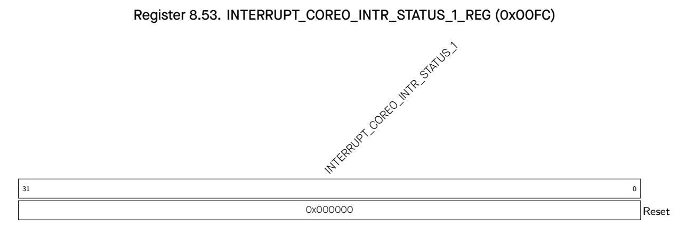
INTERRUPT_CORE0_INTR_STATUS_1 This register stores the status of the first 32 interrupt sources: 32 ~ 61. If the bit is 1 here, it means the corresponding source triggered an interrupt. (RO)
INTERRUPT_CORE0_CPU_INT_ENABLE Writing 1 to the bit here enables its corresponding CPU interrupt. For more information about how to use this register, see Chapter 1 ESP-RISC-V CPU . (R/W)
INTERRUPT_CORE0_CPU_INT_TYPE Configure CPU interrupt type. 0: level-triggered; 1: edgetriggered. For more information about how to use this register, see Chapter 1 ESP-RISC-V CPU . (R/W)
INTERRUPT_CORE0_CPU_INT_CLEAR Writing 1 to the bit here clears its corresponding CPU interrupt. For more information about how to use this register, see Chapter 1 ESP-RISC-V CPU . (R/W)
INTERRUPT_CORE0_CPU_INT_EIP_STATUS Store the pending status of CPU interrupts. For more information about how to use this register, see Chapter 1 ESP-RISC-V CPU . (RO)
INTERRUPT_CORE0_CPU_PRI_ n _MAP Set the priority for CPU interrupt n . The priority here can be 1 (lowest) ~ 15 (highest). For more information about how to use this register, see Chapter 1 ESP-RISC-V CPU . (R/W)
INTERRUPT_CORE0_CPU_INT_THRESH Set threshold for interrupt assertion to CPU. Only when the interrupt priority is equal to or higher than this threshold, CPU will respond to this interrupt. For more information about how to use this register, see Chapter 1 ESP-RISC-V CPU . (R/W)
INTERRUPT_CORE0_INTERRUPT_DATE Version control register. (R/W)
ESP32-C3 has an advanced Power Management Unit (PMU), which can flexibly power up different power domains of the chip, to achieve the best balance among chip performance, power consumption, and wakeup latency. To simplify power management for typical scenarios, ESP32-C3 has predefined four power modes, which are preset configurations that power up different combinations of power domains. On top of that, the chip also allows the users to independently power up any particular power domain to meet more complex requirements.
ESP32-C3's low-power management supports the following features:
In this chapter, we first introduce the working process of ESP32-C3's low-power management, then introduce the predefined power modes of the chip, and at last, introduce the RTC boot of the chip.
ESP32-C3's low-power management involves the following components:
modes (for details, please refer to Section 9.4.3), or can be used as regular GPIOs (for details, please refer to Chapter 5 IO MUX and GPIO Matrix (GPIO, IO MUX) ).
The schematic diagram of ESP32-C3's low-power management is shown in Figure 9.3-1.
Red lines represent power distribution
Figure 9.3-1. Low-power Management Schematics
ESP32-C3's power management unit controls the power supply to different power domains. The main components of the power management unit include:
In ESP32-C3's power management unit, the sleep / wakeup controllers send sleep or wakeup requests to the RTC main state machine, which then generates power gating, clock gating, and reset signals. Then, the power controller and clock controller power up and power down different power domains and clock sources, according to the signals generated by the RTC main state machine, so that the chip enters or exits the low-power modes. The main workflow is shown in Figure 9.3-2.
Note:
In general, ESP32-C3 powers down its external main crystal oscillator XTAL_CLK and PLL to reduce power consumption when working in low-power modes. During this time, the chip's low-power clocks remain on to provide clocks to low power domains, such as the power management unit.
Figure 9.3-4. Wireless Clock
| Table 9.3-1. Low-power Clocks | |||||
|---|---|---|---|---|---|
| Power Domain | |||||
| Clock Type | Clock Source | Selection Signal | |||
| RC_FAST_CLK divided by n | |||||
| RTC Fast Clock | (Default) | RTC_CNTL_FAST_CLK_RTC_SEL | RTC Registers | ||
| XTAL_DIV_CLK | Power Management System | ||||
| XTAL32K_CLK | |||||
|
RTC Slow Clock
Wireless Clock |
RC_FAST_DIV_CLK
RC_SLOW_CLK (default) |
RTC_CNTL_ANA_CLK_RTC_SEL | (except RTC registers) | ||
| XTAL32K_CLK | SYSTEM_LPCLK_SEL_XTAL32K | ||||
| RC_FAST_CLK divided by n | SYSTEM_LPCLK_SEL_20M | Wireless modules (Wi-Fi/BT) in the | |||
| RTC_SLOW_CLK | SYSTEM_LPCLK_RTC_SLOW | digital system domain working in | |||
When working under low-power modes, ESP32-C 3's XTAL_CLK and PLL are us ually powered down to reduce power consumption. However, the low-power clo ck remains on so the chip c an operate properly under low-power modes. For more detailed description about clocks, please refer to 6 Reset and Clock .
ESP32-C3's low-power management uses RTC timer. The readable 48-bit RTC timer is a real-time counter (using RTC slow clock) that can be configured to log the time when one of the following events happens. For details, see Table 9.3-2.
Table 9.3-2. The Triggering Conditions for the RTC Timer
| Enabling Options | Descriptions |
|---|
|
Chapter 9
Low-power Management |
GoBack | ||
|---|---|---|---|
| RTC_CNTL_TIMER_XTL_OFF | 1. RTC main state machine powers down; 2. 40 MHz crystal | ||
| powers up. | |||
| RTC_CNTL_TIMER_SYS_STALL |
CPU enters or exits the stall state.
This is to ensure the |
||
| SYS_TIMER is continuous in time. | |||
The R TC timer updates two group s of registers upon a ny new trigger. The first gro up logs the time of the current trigger, and the other logs the previous trigger. Detailed information about these two register groups is shown below:
On a new t rigger, information on previou s trigger is moved from register group 0 to register group 1 (and the original trigger logged in register group 1 is overwritten), and this new trigger is logged in register group 0. Therefore, only the last two triggers can be logged at any time.
It should be noted that any reset / sleep other than power-up reset will not stop or reset the RTC timer.
Also, the RTC timer can be used as a wakeup source. For details, see Section 9.4.3.
ESP32-C3 has two regulators to maintain a constant power supply voltage to differe nt power domains:
For more detailed description about power domains, please refer to Section 9.4.1.
ESP32-C3's built-in digital system voltage regulator converts the external power supply (typically 3.3 V) to 1.1 V for digital power domains. This regulator is controlled by the xpd_dig_reg signal. For details, see description in 9.3-1. For the architecture of the ESP32-C3 digital system voltage regulator, see Figure 9.3-5.

Figure 9.3-5. Digital System Regulator
ESP32-C3's built-in low-power voltage regulator converts the external power supply (typically 3.3 V) to 1.1 V for RTC power domains. Note when the pin CHIP_PU is at a high level, the low-power voltage regulator cannot be turned off. Otherwise, the low power voltage regulator is off when chip enters Light-sleep and Deep-sleep modes. In this case, the RTC domain is powered by an ultra low-power internal power source.
For the architecture of the ESP32-C3 low-power voltage regulator, see Figure 9.3-6.
Figure 9.3-6. Low-power voltage regulator
The brownout detector checks the voltage of pins VDD3P3_RTC, VDD3P3_CPU, VDDA1, and VDDA2. If the voltage of these pins drops below the predefined threshold (2.7 V by default), the detector would trigger a signal to shut down some power-consuming blocks (such as LNA, PA, etc.) to allow extra time for the digital system to save and transfer important data.
RTC_CNTL_BROWN_OUT_DET indicates the output level of brown-out detector. This register is low level by
Espressif Systems 225
ESP32-C3 TRM (Version 1.3)
default, and outputs high level when the voltage of the detected pin drops below the predefined threshold.
RTC_CNTL_BROWN_OUT_RST_SEL configures the reset type. For more information regarding chip reset and system reset, please refer to 6 Reset and Clock .
The brownout detector has ultra-low power consumption and remains enabled whenever the chip is powered up. For the architecture of the ESP32-C3 brownout detector, see Figure 9.3-7.
Figure 9.3-7. Brown-out detector
ESP32-C3 has 9 power domains in three power domain categories:
As mentioned earlier, ESP32-C3 has four power modes, which are predefined configurations that power up different combinations of power domains. For details, please refer to Table 9.4-1.
| Table 9.4-1. Predefined Power Modes | |||||||||
|---|---|---|---|---|---|---|---|---|---|
| Power Domain | |||||||||
| Power Mode | PMU |
PD
Peripherals |
Digital
System |
Wireless
Digital Circuits |
CPU |
FOSC_
CLK |
XTAL_
CLK |
PLL |
RF
Circuits |
| Active | ON | ON | ON | ON | ON | ON | ON | ON | ON |
| Modem-sleep | ON | ON | ON | ON* | ON | ON | ON | ON | OFF |
| Table 9.4-1. Predefined Power Modes |
|---|
* Configurable
By default, ESP32-C3 first enters the Modem-sleep mode after a system reset and can be configured to Active mode when transmitting or receiving packets. After the CPU stalls for a while, the chip can enter different low-power modes (including Modem-sleep, Light-sleep, and Deep-sleep) to save power. From Active to Deep-sleep, the number of available functionalities 1 and power consumption 2 decreases and wakeup latency increases. Also, the supported wakeup sources for different power modes are different 3 . Users can choose a power mode based on their requirements of functionality, power consumption, wakeup latency, and available wakeup sources.
The ESP32-C3 supports various wakeup sources, which could wake up the CPU in different sleep modes. The wakeup source is determined by RTC_CNTL_WAKEUP_ENA as shown in Table 9.4-2.
| Table 9.4-2. Wakeup Source | |||
| WAKEUP_ENA | Wakeup Source5 | Light-sleep | Deep-sleep |
| 0x4 | GPIO1 | Y | Y |
| 0x8 | RTC Timer | Y | Y |
| 0x20 | Wi-Fi2 | Y | - |
| 0x40 | UART03 | Y | - |
1 In Deep-sleep mode, only the RTC GPIOs (not regular GPIOs) can work as a wakeup source.
2 To wake up the chip with a Wi-Fi source, the chip switches between the Active, Modem-sleep, and Light-sleep modes. The CPU and RF modules are woken up at predetermined intervals to keep Wi-Fi connections active.
3 A wakeup is triggered when the number of RX pulses received exceeds the setting in the threshold register UART_SLEEP_CONF_REG. For details, please refer to Chapter 26 UART Controller (UART) .
4 When the 32 kHz crystal is working as RTC slow clock, a wakeup is triggered upon any dete ction of any crystal stop by the 32 kHz watchdog timer.
5 All wakeup sources can also be configured as the causes to reject sleep, except UART.
ESP32-C3 implements a hardware mechanism that equips the chip with the ability to reject to sleep, which prevents the chip from going to sleep unexpectedly when some peripherals are still working but not detected by the CPU, thus guaranteeing the proper functioning of the peripherals.
All the wakeup sources specified in Table 9.4-2 (except UART) can also be configured as the causes to reject sleep.
Users can configure the reject to sleep option via the following registers.
ESP32-C3 can power off the CPU in Light_sleep mode to further reduce the power consumption. To facilitate the CPU to wake up from light_sleep and resume execution from the previous breakpoint, ESP32-C3
Espressif Systems 228
introduced a retention module.
ESP32-C3's retention module stores CPU information to the Internal SRAM Block9 to Block12 before CPU enters into sleep, and restore such information from Internal SRAM to CPU after CPU wakes up from sleep, thus enabling the CPU to resume execution from the previous breakpoint.
ESP32-C3's Retention DMA:
* Note that if the memory allocated is sma ller than 432 words, then chip can only enter the Light_sleep mode and cannot further power down CPU.
After configuration, users can enable the Retention function by configuring the RTC_CNTL_RETENTION_EN field in Register RTC_CNTL_RETENTION_CTRL_REG to:
The wakeup time from Deep-sleep is much longer, compared to the Light-sleep and Modem-sleep, because the ROMs and RAMs are both powered down in this case, and the CPU needs more time for SPI booting. However, it's worth noting that the RTC fast memory remains powered up in the Deep-sleep mode. Therefore, users can store code (so called "deep sleep wake stub" of up to 8 KB) in the RTC fast memory to avoid the above-mentioned SPI booting, thus speeding up the wakeup process. To use this function, see steps described below:
The boot flow after ESP32-C3 wakeup is shown in Figure 9.6-1.
Figure 9.6-1. ESP32-C3 Boot Flow
The addresses in this section are relative to low-power management base address provided in Table 3.3-3 in Chapter 3 System and Memory .
The abbreviations given in Column Access are explained in Section Access Types for Registers .
| Chapter 3 System and Memory. | |||
|---|---|---|---|
| The abbreviations given in Column Access are explained in Section Access Types for Registers. | |||
| Name | Description | Address | Access |
| RTC_CNTL_OPTIONS0_REG |
Sets the power options of crystal and PLL
clocks, and initiates reset by software |
0x0000 | Varies |
| RTC_CNTL_SLP_TIMER0_REG | RTC timer threshold register 0 | 0x0004 | R/W |
| RTC_CNTL_SLP_TIMER1_REG | RTC timer threshold register 1 | 0x0008 | varies |
| RTC_CNTL_TIME_UPDATE_REG | RTC timer update control register | 0x000C | varies |
| RTC_CNTL_TIME_LOW0_REG | Stores the lower 32 bits of RTC timer 0 | 0x0010 | RO |
| RTC_CNTL_TIME_HIGH0_REG | Stores the higher 16 bits of RTC timer 0 | 0x0014 | RO |
| RTC_CNTL_STATE0_REG | Configures the sleep / reject / wakeup state | 0x0018 | varies |
| RTC_CNTL_TIMER1_REG | Configures CPU stall options | 0x001C | R/W |
| RTC_CNTL_TIMER2_REG | Configures RTC slow clock and touch con | 0x0020 | R/W |
| troller | |||
| RTC_CNTL_TIMER5_REG | Configures the minimal sleep cycles | 0x002C | R/W |
| RTC_CNTL_ANA_CONF_REG | Configures the power options for I2C and | 0x0034 | R/W |
| PLLA | |||
| RTC_CNTL_RESET_STATE_REG | Indicates the CPU reset source | 0x0038 | varies |
| RTC_CNTL_WAKEUP_STATE_REG | Wakeup bitmap enabling registerfi | 0x003C | R/W |
| RTC_CNTL_INT_ENA_RTC_REG | RTC interrupt enabling register | 0x0040 | R/W |
|
RTC_CNTL_INT_RAW_RTC_REG
RTC_CNTL_INT_ST_RTC_REG |
RTC interrupt raw register
RTC interrupt state register |
0x0044
0x0048 |
RO
RO |
| RTC_CNTL_INT_CLR_RTC_REG | RTC interrupt clear register | 0x004C | WO |
| RTC_CNTL_STORE0_REG | Reservation register 0 | 0x0050 | R/W |
| RTC_CNTL_STORE1_REG | Reservation register 1 | 0x0054 | R/W |
| RTC_CNTL_STORE2_REG | Reservation register 2 | 0x0058 | R/W |
| RTC_CNTL_STORE3_REG | Reservation register 3 | 0x005C | R/W |
| RTC_CNTL_EXT_XTL_CONF_REG | 32 kHz crystal oscillator configuration register | 0x0060 | varies |
| RTC_CNTL_EXT_WAKEUP_CONF_REG | GPIO wakeup configuration register | 0x0064 | R/W |
| RTC_CNTL_SLP_REJECT_CONF_REG | Configures sleep / reject options | 0x0068 | R/W |
| RTC_CNTL_CLK_CONF_REG | RTC timer configuration register | 0x0070 | R/W |
| RTC_CNTL_SLOW_CLK_CONF_REG | RTC slow clock configuration register | 0x0074 | R/W |
| RTC_CNTL_REG | RTC configuration register | 0x0080 | R/W |
| RTC_CNTL_PWC_REG | RTC power configuration register | 0x0084 | R/W |
| RTC_CNTL_DIG_PWC_REG | Digital system power configuration register | 0x0088 | R/W |
| RTC_CNTL_DIG_ISO_REG | Digital system isolation configuration register | 0x008C | varies |
| RTC_CNTL_WDTCONFIG0_REG | RTC watchdog configuration register | 0x0090 | R/W |
| RTC_CNTL_WDTCONFIG1_REG | Configures the hold time of RTC watchdog at | 0x0094 | R/W |
|
Chapter 9
Low-power Management |
GoBack | ||
|
Name
RTC_CNTL_WDTCONFIG2_REG |
Description
Configures the hold time of RTC watchdog at |
Address
0x0098 |
Access
R/W |
| RTC_CNTL_WDTCONFIG3_REG |
level 2
Configures the hold time of RTC watchdog at |
0x009C | R/W |
| level 3 | |||
|
RTC_CNTL_WDTCONFIG4_REG
RTC_CNTL_WDTFEED_REG |
Configures the hold time of RTC watchdog at
level 4 RTC watchdog SW feed configuration register |
0x00A0
0x00A4 |
R/W
WO |
| RTC_CNTL_WDTWPROTECT_REG | RTC watchdog write protection configuration | 0x00A8 | R/W |
| RTC_CNTL_SWD_CONF_REG |
register
Super watchdog configuration register |
0x00AC | varies |
| RTC_CNTL_SWD_WPROTECT_REG | Super watchdog write protection configura | 0x00B0 | R/W |
| tion register | |||
| RTC_CNTL_SW_CPU_STALL_REG | CPU stall configuration register | 0x00B4 | R/W |
| RTC_CNTL_STORE4_REG | Reservation register 4 | 0x00B8 | R/W |
| RTC_CNTL_STORE5_REG | Reservation register 5 | 0x00BC | R/W |
| RTC_CNTL_STORE6_REG | Reservation register 6 | 0x00C0 | R/W |
| RTC_CNTL_STORE7_REG | Reservation register 7 | 0x00C4 | R/W |
| RTC_CNTL_LOW_POWER_ST_REG | RTC main state machine state register | 0x00C8 | RO |
| RTC_CNTL_PAD_HOLD_REG | Configures the hold options for RTC GPIOs | 0x00D0 | R/W |
| RTC_CNTL_DIG_PAD_HOLD_REG | Configures the hold options for digital GPIOs | 0x00D4 | R/W |
| RTC_CNTL_BROWN_OUT_REG | Brownout configuration register | 0x00D8 | varies |
|
RTC_CNTL_TIME_LOW1_REG
RTC_CNTL_TIME_HIGH1_REG |
Stores the lower 32 bits of RTC timer 1
Stores the higher 16 bits of RTC timer 1 |
0x00DC
0x00E0 |
RO
RO |
| RTC_CNTL_XTAL32K_CLK_FACTOR_REG |
Configures the divider for the backup clock of
32 kHz crystal oscillator |
0x00E4 | R/W |
| RTC_CNTL_XTAL32K_CONF_REG | 32 kHz crystal oscillator configuration register | 0x00E8 | R/W |
| RTC_CNTL_USB_CONF_REG | IO_MUX configuration register | 0x00EC | R/W |
| RTC_CNTL_SLP_REJECT_CAUSE_REG | Stores the reject-to-sleep cause | 0x00F0 | RO |
| RTC_CNTL_OPTION1_REG | RTC option register | 0x00F4 | R/W |
| RTC_CNTL_SLP_WAKEUP_CAUSE_REG | Stores the sleep-to-wakeup cause | 0x00F8 | RO |
| RTC_CNTL_INT_ENA_RTC_W1TS_REG | RTC RTC interrupt enabling register (W1TS) | 0x0100 | WO |
| RTC_CNTL_INT_ENA_RTC_W1TC_REG | RTC RTC interrupt clear register (W1TC) | 0x0104 | WO |
| RTC_CNTL_RETENTION_CTRL_REG | Retention configuration register | 0x0108 | R/W |
| RTC_CNTL_GPIO_WAKEUP_REG | GPIO wakeup configuration register | 0x0110 | varies |
The addresses in this section are relative to low-power management base address provided in Table 3.3-3 in Chapter 3 System and Memory .

RTC_CNTL_SW_STALL_PROCPU_C0 When RTC_CNTL_SW_STALL_PROCPU_C1 is configured to 0x21, setting this bit to 0x2 stalls the CPU by SW. (R/W)
RTC_CNTL_SLP_VAL_LO Sets the lower 32 bits of the trigger threshold for the RTC timer. (R/W)
Register 9.3. RTC_CNTL_SLP_TIMER1_REG (0x0008)
RTC_CNTL_SLP_VAL_HI Sets the higher 16 bits of the trigger threshold for the RTC timer. (R/W)
RTC_CNTL_MAIN_TIMER_ALARM_EN Sets this bit to enable the timer alarm. (WO)
0 0 0 0 0 0 0 0 0 0 0 0 0 0 0 0 0 0 0 0 0 0 0 0 0 0 0 26 0
RTC_CNTL_TIMER_SYS_STALL Selects the triggering condition for the RTC timer. (R/W) RTC_CNTL_TIMER_XTL_OFF Selects the triggering condition for the RTC timer. (R/W) RTC_CNTL_TIMER_SYS_RST Selects the triggering condition for the RTC timer. (R/W) RTC_CNTL_TIME_UPDATE Selects the triggering condition for the RTC timer. (WO)
0 31
0 30
0 29
0 28
0 27
Reset
RTC_CNTL_TIMER_VALUE0_LOW Stores the lower 32 bits of RTC timer 0. (RO)

RTC_CNTL_TIMER_VALUE0_HIGH Stores the higher 16 bits of RTC timer 0. (RO)
RTC_CNTL_SW_CPU_INT Sends a SW RTC interrupt to CPU. (WO) RTC_CNTL_SLP_REJECT_CAUSE_CLR Clears the RTC reject-to-sleep cause. (WO)
RTC_CNTL_APB2RTC_BRIDGE_SEL 1: APB to RTC using bridge (R/W)
RTC_CNTL_SLP_WAKEUP Sleep wakeup bit. (R/W)
RTC_CNTL_SLP_REJECT Sleep reject bit. (R/W)
RTC_CNTL_SLEEP_EN Sends the chip to sleep. (R/W)
RTC_CNTL_CPU_STALL_EN Enables the CPU stalling. (R/W)
RTC_CNTL_CPU_STALL_WAIT Sets the CPU stall waiting cycles (using the RTC fast clock). (R/W) RTC_CNTL_FOSC_WAIT Sets the FOSC clock waiting cycles (using the RTC slow clock). (R/W) RTC_CNTL_XTL_BUF_WAIT Sets the XTAL waiting cycles (using the RTC slow clock). (R/W) RTC_CNTL_PLL_BUF_WAIT Sets the PLL waiting cycles (using the RTC slow clock). (R/W)
RTC_CNTL_MIN_TIME_FOSC_OFF Sets the minimal cycles for FOSC clock (using the RTC slow clock) when powered down. (R/W)
RTC_CNTL_MIN_SLP_VAL Sets the minimal sleep cycles (using the RTC slow clock). (R/W)
RTC_CNTL_RESET_POR_FORCE_PD Set this bit to force not bypass I2C power-on reset. (R/W) RTC_CNTL_RESET_POR_FORCE_PU Set this bit to force bypass I2C power-on reset. (R/W) RTC_CNTL_GLITCH_RST_EN Set this bit to enable reset when the system detects a glitch. (R/W) RTC_CNTL_SAR_I2C_PU Set this bit to FPU the SAR_I2C. (R/W) RTC_CNTL_TXRF_I2C_PU Set this bit to PU TXRF_I2C. (R/W) RTC_CNTL_RFRX_PBUS_PU Set this bit to PU RFRX_PBUS. (R/W) RTC_CNTL_CKGEN_I2C_PU Set this bit to PU CKGEN_I2C. (R/W) RTC_CNTL_PLL_I2C_PU Set this bit to PU PLL I2C. (R/W)
RTC_CNTL_RESET_CAUSE_PROCPU Stores the CPU reset cause. (RO)
RTC_CNTL_STAT_VECTOR_SEL_PROCPU Selects the CPU static vector. (R/W)
RTC_CNTL_ALL_RESET_FLAG_PROCPU Indicates the CPU reset flag. (RO)
RTC_CNTL_ALL_RESET_FLAG_CLR_PROCPU Clears the CPU reset flag. (WO)
RTC_CNTL_JTAG_RESET_FLAG_CLR_PROCPU Sets the JTAG reset flag. (WO)
RTC_CNTL_DRESET_MASK_PROCPU Set this bit to bybass D-reset. (R/W)
RTC_CNTL_WAKEUP_ENA Selects the wakeup source. For details, please refer to Table 9.4-2. (R/W)
RTC_CNTL_SLP_WAKEUP_INT_ENA Enables interrupts when chip wakes up from sleep. (R/W) RTC_CNTL_SLP_REJECT_INT_ENA Enables interrupts when chip rejects to go to sleep. (R/W) RTC_CNTL_WDT_INT_ENA Enables the RTC watchdog interrupt. (R/W) RTC_CNTL_BROWN_OUT_INT_ENA Enables the brown-out interrupt. (R/W) RTC_CNTL_MAIN_TIMER_INT_ENA Enables the RTC timer interrupt. (R/W) RTC_CNTL_SWD_INT_ENA Enables the super watchdog interrupt. (R/W) RTC_CNTL_XTAL32K_DEAD_INT_ENA Enables interrupts when the XTAL32K is dead. (R/W) RTC_CNTL_GLITCH_DET_INT_ENA Enables interrupts when a glitch is detected. (R/W) RTC_CNTL_BBPLL_CAL_INT_ENA Enables interrupts upon the ending of a bb_pll call. (R/W)
RTC_CNTL_WDT_INT_CLR Clears the RTC watchdog interrupt. (WO)
RTC_CNTL_BROWN_OUT_INT_CLR Clears the brownout interrupt. (WO)
RTC_CNTL_MAIN_TIMER_INT_CLR Clears the RTC main timer interrupt. (WO)
RTC_CNTL_SWD_INT_CLR Clears the super watchdog interrupt. (WO)
RTC_CNTL_XTAL32K_DEAD_INT_CLR Clears the RTC watchdog interrupt. (WO)

RTC_CNTL_SCRATCH0 Reservation register 0. (R/W)
RTC_CNTL_SCRATCH3 Reservation register 3. (R/W)
RTC_CNTL_XTAL32K_WDT_EN Set this bit to enable the XTAL32K watchdog. (R/W)
RTC_CNTL_XTAL32K_WDT_CLK_FO Set this bit to FPU the XTAL32K watchdog clock. (R/W)
RTC_CNTL_XTAL32K_WDT_RESET Set this bit to reset the XTAL32K watchdog by SW. (R/W)
RTC_CNTL_XTAL32K_EXT_CLK_FO Set this bit to FPU the external clock of XTAL32K. (R/W)
RTC_CNTL_GPIO_WAKEUP_FILTER Set this bit to enable the GPIO wakeup event filter. (R/W)
RTC_CNTL_SLEEP_REJECT_ENA Set this bit to enable reject-to-sleep. (R/W) RTC_CNTL_LIGHT_SLP_REJECT_EN Set this bit to enable reject-to-light-sleep. (R/W) RTC_CNTL_DEEP_SLP_REJECT_EN Set this bit to enable reject-to-deep-sleep. (R/W)
RTC_CNTL_EFUSE_CLK_FORCE_GATING Set this bit to FPU the eFuse clock gating. (R/W)
RTC_CNTL_EFUSE_CLK_FORCE_NOGATING Set this bit to FPD the eFuse clock gating. (R/W)
Continued on the next page...
Continued from the previous page...
RTC_CNTL_FOSC_DFREQ Configures the FOSC frequency. (R/W)
RTC_CNTL_FOSC_FORCE_PD Set this bit to FPD FOSC. (R/W)
RTC_CNTL_FOSC_FORCE_PU Set this bit to FPU FOSC. (R/W)
RTC_CNTL_ANA_CLK_DIV_VLD Synchronizes the reg_fosc_div_sel. Note that you have to invalidate the bus before modifying the frequency divider, and then validate the new divider clock. (R/W)
RTC_CNTL_ANA_CLK_DIV Configures the divider for the RTC clock. (R/W)4
RTC_CNTL_DIG_REG_CAL_EN Set this bit to enable digital regulator calibration by software. (R/W)
RTC_CNTL_SCK_DCAP Configures the RC_SLOW_CLK frequency. (R/W)
RTC_CNTL_PAD_FORCE_HOLD Set this bit to force RTC pad into hold state. (R/W)
RTC_CNTL_VDD_SPI_PWR_DRV Configures the vdd_spi's drive intensity. (R/W)
RTC_CNTL_DG_PAD_AUTOHOLD Indicates the auto-hold status of the digital GPIOs. (RO)
RTC_CNTL_DG_PAD_FORCE_ISO Set this bit to force isolation of the digital GPIOs. (R/W)
RTC_CNTL_DG_PAD_FORCE_UNHOLD Set this bit the force unhold the digital GPIOs. (R/W)
RTC_CNTL_DG_PAD_FORCE_HOLD Set this bit the force hold the digital GPIOs. (R/W)
RTC_CNTL_DG_PERI_FORCE_ISO Set this bit to force isolation of the digital peripherals. (R/W)
RTC_CNTL_DG_PERI_FORCE_NOISO Set this bit to disable the force isolation of the digital peripherals. (R/W)
RTC_CNTL_CPU_TOP_FORCE_ISO Set this bit to force hold the CPU. (R/W)
RTC_CNTL_CPU_TOP_FORCE_NOISO Set this bit to force unhold the CPU. (R/W)
RTC_CNTL_WIFI_FORCE_ISO Set this bit to force isolation of the wireless circuits. (R/W)
RTC_CNTL_WDT_PAUSE_IN_SLP Set this bit to pause the watchdog in sleep. (R/W)
RTC_CNTL_WDT_PROCPU_RESET_EN enable WDT reset CPU (R/W)
RTC_CNTL_WDT_CPU_RESET_LENGTH Sets the length of the CPU reset counter. (R/W)
RTC_CNTL_WDT_STG0_HOLD Configures the hold time of RTC watchdog at level 1. (R/W)
RTC_CNTL_WDT_STG1_HOLD Configures the hold time of RTC watchdog at level 2. (R/W)
RTC_CNTL_WDT_STG2_HOLD Configures the hold time of RTC watchdog at level 3. (R/W)
RTC_CNTL_WDT_STG3_HOLD Configures the hold time of RTC watchdog at level 4. (R/W)
RTC_CNTL_WDT_WKEY If the register contains a different value than 0x50d83aa1, write protection for the RTC watchdog (RWDT) is enabled. (R/W)
RTC_CNTL_SWD_RESET_FLAG Indicates the super watchdog reset flag. (RO)
RTC_CNTL_SWD_FEED_INT Receiving this interrupt leads to feeding the super watchdog via SW. (RO)
RTC_CNTL_SWD_BYPASS_RST Set this bit to bypass super watchdog reset. (R/W)
RTC_CNTL_SWD_SIGNAL_WIDTH Adjusts the signal width sent to the super watchdog. (R/W)
RTC_CNTL_SWD_RST_FLAG_CLR Set to reset the super watchdog reset flag. (WO)
RTC_CNTL_SWD_FEED Set to feed the super watchdog via SW. (WO)
RTC_CNTL_SWD_WKEY Sets the write protection key of the super watchdog. (R/W)
RTC_CNTL_SW_STALL_PROCPU_C1 When RTC_CNTL_SW_STALL_PROCPU_C0 is configured to 0x2, setting this bit to 0x21 stalls the CPU by SW. (R/W)
RTC_CNTL_SCRATCH4 Reservation register 4. (R/W)
RTC_CNTL_SCRATCH5 Reservation register 5. (R/W)
RTC_CNTL_SCRATCH7 Reservation register 7. (R/W)
RTC_CNTL_RDY_FOR_WAKEUP Indicates the RTC is ready to be triggered by any wakeup source. (RO)
RTC_CNTL_MAIN_STATE_IN_IDLE Indicates the RTC state.
(RO)
RTC_CNTL_GPIO_PIN3_HOLD Sets the GPIO 3 to the holding state. (R/W)
RTC_CNTL_GPIO_PIN4_HOLD Sets the GPIO 4 to the holding state. (R/W)
RTC_CNTL_GPIO_PIN5_HOLD Sets the GPIO 5 to the holding state. (R/W)
RTC_CNTL_DIG_PAD_HOLD Set GPIO 6 to GPIO 21 to the holding state. (See bitmap to locate any GPIO). (R/W)
RTC_CNTL_TIMER_VALUE1_LOW Stores the lower 32 bits of RTC timer 1. (RO)
RTC_CNTL_TIMER_VALUE1_HIGH Stores the higher 16 bits of RTC timer. (RO)
RTC_CNTL_XTAL32K_CLK_FACTOR Configures the divider factor for the XTAL32K oscillator. (R/W)
Register 9.53. RTC_CNTL_USB_CONF_REG (0x00EC)
RTC_CNTL_IO_MUX_RESET_DISABLE Set this bit to disable io_mux reset. (R/W)
RTC_CNTL_REJECT_CAUSE Stores the reject-to-sleep cause. (RO)
Register 9.55. RTC_CNTL_OPTION1_REG (0x00F4)
RTC_CNTL_FORCE_DOWNLOAD_BOOT Set this bit to force the chip to boot from the download mode. (R/W)

RTC_CNTL_WAKEUP_CAUSE Stores the wakeup cause. (RO)
RTC_CNTL_RETENTION_CLK_SEL Selects the retention clock. 0: RC_FAST_CLK; 1: XTAL_CLK. (R/W)
RTC_CNTL_RETENTION_EN Set to enable the CPU retention in light sleep. (R/W)
RTC_CNTL_GPIO_PIN3_INT_TYPE Configures RTC GPIO 3 wakeup type.
RTC_CNTL_GPIO_PIN2_INT_TYPE Configures RTC GPIO 2 wakeup type.
(R/W)
RTC_CNTL_GPIO_PIN1_INT_TYPE Configures RTC GPIO 1 wakeup type.
(R/W)
RTC_CNTL_GPIO_PIN0_INT_TYPE Configures RTC GPIO 0 wakeup type.
| (R/W) | |
|---|---|
| RTC_CNTL_GPIO_PIN5_WAKEUP_ENABLE | Enables wakeup from RTC GPIO 5. (R/W) |
| RTC_CNTL_GPIO_PIN4_WAKEUP_ENABLE | Enables wakeup from RTC GPIO 4. (R/W) |
| RTC_CNTL_GPIO_PIN3_WAKEUP_ENABLE | Enables wakeup from RTC GPIO 3. (R/W) |
| RTC_CNTL_GPIO_PIN2_WAKEUP_ENABLE | Enables wakeup from RTC GPIO 2. (R/W) |
| RTC_CNTL_GPIO_PIN1_WAKEUP_ENABLE | Enables wakeup from RTC GPIO 1. (R/W) |
RTC_CNTL_FORCE_XPD_SAR Set this field to FPU SAR ADC. (R/W)
ESP32-C3 provides a 52-bit timer, which can be used to generate tick interrupts for operating system, or be used as a general timer to generate periodic interrupts or one-time interrupts.
The timer consists of two counters UNIT0 and UNIT1. The count values can be monitored by three comparators COMP0, COMP1 and COMP2. See the timer block diagram on Figure 10.1-1.
Figure 10.1-1. System Timer Structure
The counters and comparators are driven using XTAL_CLK. After scaled by a fractional divider, a fXT AL _ CLK /3 clock is generated in one count cycle and a fXT AL _ CLK /2 clock in another count cycle. The average clock frequency is fXT AL _ CLK /2 . 5, which is 16 MHz, i.e. the CNT_CLK in Figure 10.4-1. The timer counting is incremented by 1/16 µs on each CNT_CLK cycle.
Software operation such as configuring registers is clocked by APB_CLK. For more information about APB_CLK, see Chapter 6 Reset and Clock .
The following two bits of system registers are also used to control the system timer:
Note that if the timer is reset, its registers will be restored to their default values. For more information, please refer to Table Peripheral Clock Gating and Reset in Chapter 16 System Registers (SYSREG) .
Figure 10.4-1. System Timer Alarm Generation
Figure 10.4-1 shows the procedure to generate alarm in system timer. In this process, one timer counter and one timer comparator are used. An alarm interrupt will be generated accordingly based on the comparison result in comparator.
The system timer has two 52-bit timer counters, shown as UNIT n ( n = 0 or 1). Their counting clock source is a 16 MHz clock, i.e. CNT_CLK. Whether UNIT n works or not is controlled by two bits in register SYSTIMER_CONF_REG:
Espressif Systems 271
The c onfiguration of the two bits to contro l the counter UNIT n is shown below, assuming that CPU is stalle d.
| Table 10.4-1. UNITn Configuration Bits | ||
|---|---|---|
|
SYSTIMER_TIMER_
UNITn_WORK_EN |
SYSTIMER_TIMER_
UNITn_CORE0_STALL_EN * x |
Counter
UNITn |
| 0 | Not at work | |
* x: Don't-care.
When the counter UNIT n is at work, the count value is incremented on each counting cycle. When the counter UNIT n is stopped, the count value stops increasing and keeps unchanged.
The lower 32 and higher 20 bits of initial count value are loaded from the registers SYSTIMER_TIMER_UNIT n _LOAD
_LO and SYSTIMER_TIMER_UNIT n _LOAD_HI. Writing 1 to the bit SYSTIMER_TIMER_UNIT n _LOAD will trigger a reload event, and the current count value will be changed immediately. If UNIT n is at work, the counter will continue to count up from the n ew reloaded value.
Writi ng 1 to SYSTIMER_TIMER_UNIT n _UPDATE will trigger an up date event. The lower 32 and hig her 20 bits of current count value will be locked into the registers SYSTIMER_TIMER_UNIT n _VALUE_LO and SYSTIMER_TIMER_
UNIT n _VALUE_HI, and then SYSTIMER_TIMER_ UNIT n _VALUE_VALID is asserted. Before the next update event, the values of SYSTIMER_TIMER_UNIT n _VALUE_LO and SYSTIMER_TIMER_UNIT n _VALUE_HI remain unchanged.
The system timer has three 52-bit comparators, shown as COMP x ( x = 0, 1, or 2). The comparators can generate independent interrupts based on different alarm values (t) or alarm periods ( δ t).
Configure SYSTIMER_TARGET x _PERIOD_MODE to choose from the two alarm modes for each COMP x :
In period mode, the alarm period ( δ t) is provided by the register SYSTIMER_TARGET x _PERIOD. Assuming that current count value is t1, when it reaches (t1 + δ t), an alarm interrupt will be generated. Another alarm interrupt also will be generated when the count value reaches (t1 + 2* δ t). By such way, periodic alarms are generated.
In target mode, the lower 32 bits and higher 20 bits of the alarm value (t) are provided by SYSTIMER_TIMER_TARGET
Espressif Systems 272
x _LO and SYSTIMER_TIMER_TARGET x _HI. Assuming that current count value is t2 (t2 <= t), an alarm interrupt will be generated when the count value reaches the alarm value (t). Unlike in period mode, only one alarm interrupt is generated in target mode.
SYSTIMER_TARGET x _TIMER_UNIT_SEL is used to choose the count value from which timer counter to be compared for alarm:
Finally, set SYSTIMER_TARGET x _WORK_EN and COMP x starts to compare the count value with the alarm value (t) in target mode or with the alarm period (t1 + n* δ t) in period mode.
An alarm is generated when the count value equals to the alarm value (t) in target mode or to the start value + n*alarm period δ t (n = 1,2,3...) in period mo de. But if the alarm value (t) set in registers is less than current count value, i.e. the target has already passed, or current count value is larger than the target value (t) within a range (0 ~ 2 51 -1), an alarm interrupt also is generated immediately. The relationship between current count value tc , the alarm value t t and alarm trigger point is shown below.
| Table 10.4-2. Trigger Point | |
|---|---|
|
Relationship Between tc
and tt |
Trigger Point |
|
tc- tt
<= 0 |
tc
= tt, an alarm is triggered. |
|
51 - 1
0 <= tc - tt < 2 |
An alarm is triggered immediately. |
|
51 and
51 ( tc < 2 tt < 2 , |
|
|
51 and
51) or tc >= 2 tt >= 2 |
|
|
tc
overflows after counting to its maximum value |
Table 10.4-2. Trigger Point
The clock (APB_CLK) used in software operation is not the same one as the timer counters and comparators working on CNT_CLK. Synchronization is needed for some configuration registers. A complete synchronization action takes two steps:
| Table 10.4-3. Synchronization Operation |
|---|
| Synchronization Enable Bit | |
|---|---|
| Configuration Fields | |
| SYSTIMER_TIMER_UNITn_LOAD_LO | SYSTIMER_TIMER_UNITn_LOAD |
| SYSTIMER_TIMER_UNITn_LOAD_HI | |
| SYSTIMER_TARGETx_PERIOD | |
|
SYSTIMER_TIMER_TARGETx_HI
SYSTIMER_TIMER_TARGETx_LO |
SYSTIMER_TIMER_COMPx_LOAD |
Each comparator has one level-type alarm interrupt, named as SYSTIMER_TARGET x _INT. Interrupts signal is asserted high when the comparator starts to alarm. Until the interrupt is cleared by software, it remains high. To enable interrupts, set the bit SYSTIMER_TARGET x _INT_ENA.
When configuring COMP x and UNIT n , please ensure the corresponding COMP and UNIT are at work.
The addresses in this section are relative to system timer base address provided in Table 3.3-3 in Chapter 3 System and Memory .
The abbreviations given in Column Access are explained in Section Access Types for Registers .
| The abbreviations given in Column Access are explained in Section Access Types for Registers. | |||
|---|---|---|---|
|
Name
Description Address Access |
|||
| Clock Control Register | |||
| SYSTIMER_CONF_REG | Configure system timer clock | 0x0000 | R/W |
| UNIT0 Control and Configuration Registers | |||
| SYSTIMER_UNIT0_OP_REG | Read UNIT0 value to registers | 0x0004 | varies |
| SYSTIMER_UNIT0_LOAD_HI_REG | High 20 bits to be loaded to UNIT0 | 0x000C | R/W |
| SYSTIMER_UNIT0_LOAD_LO_REG | Low 32 bits to be loaded to UNIT0 | 0x0010 | R/W |
| SYSTIMER_UNIT0_VALUE_HI_REG | UNIT0 value, high 20 bits | 0x0040 | RO |
| SYSTIMER_UNIT0_VALUE_LO_REG | UNIT0 value, low 32 bits | 0x0044 | RO |
|
SYSTIMER_UNIT0_LOAD_REG
UNIT0 synchronization register 0x005C WT |
|||
| UNIT1 Control and Configuration Registers | |||
| SYSTIMER_UNIT1_OP_REG | Read UNIT1 value to registers | 0x0008 | varies |
| SYSTIMER_UNIT1_LOAD_HI_REG | High 20 bits to be loaded to UNIT1 | 0x0014 | R/W |
|
SYSTIMER_UNIT1_LOAD_LO_REG
SYSTIMER_UNIT1_VALUE_HI_REG |
Low 32 bits to be loaded to UNIT1
UNIT1 value, high 20 bits |
0x0018
0x0048 |
R/W
RO |
|
Chapter 10
System Timer (SYSTIMER) |
GoBack | ||
| Name | Description | Address | Access |
| SYSTIMER_UNIT1_LOAD_REG | UNIT1 synchronization register | 0x0060 | WT |
| Comparator0 Control and Configuration Registers | |||
| SYSTIMER_TARGET0_HI_REG | Alarm value to be loaded to COMP0, high 20 | 0x001C | R/W |
| bits | |||
| SYSTIMER_TARGET0_LO_REG | Alarm value to be loaded to COMP0, low 32 | 0x0020 | R/W |
| SYSTIMER_TARGET0_CONF_REG |
bits
Configure COMP0 alarm mode |
0x0034 | R/W |
| SYSTIMER_COMP0_LOAD_REG | COMP0 synchronization register | 0x0050 | WT |
| Comparator1 Control and Configuration Registers | |||
| SYSTIMER_TARGET1_HI_REG | Alarm value to be loaded to COMP1, high 20 | 0x0024 | R/W |
| bits | |||
| SYSTIMER_TARGET1_LO_REG | Alarm value to be loaded to COMP1, low 32 | 0x0028 | R/W |
| bits | |||
|
SYSTIMER_TARGET1_CONF_REG
Configure COMP1 alarm mode 0x0038 R/W |
|||
| SYSTIMER_COMP1_LOAD_REG | COMP1 synchronization register | 0x0054 | WT |
| Comparator2 Control and Configuration Registers | |||
| SYSTIMER_TARGET2_HI_REG | Alarm value to be loaded to COMP2, high 20 | 0x002C | R/W |
| bits | |||
| SYSTIMER_TARGET2_LO_REG | Alarm value to be loaded to COMP2, low 32 | 0x0030 | R/W |
| bits | |||
|
SYSTIMER_TARGET2_CONF_REG
Configure COMP2 alarm mode 0x003C R/W |
|||
| SYSTIMER_COMP2_LOAD_REG | COMP2 synchronization register | 0x0058 | WT |
| Interrupt Registers | |||
|
SYSTIMER_INT_ENA_REG
SYSTIMER_INT_RAW_REG |
Interrupt enable register of system timer
0x0064 R/W 0x0068 |
R/WTC/SS | |
| SYSTIMER_INT_CLR_REG |
Interrupt raw register of system timer
Interrupt clear register of system timer |
0x006C | WT |
|
SYSTIMER_INT_ST_REG
Interrupt status register of system timer 0x0070 RO |
|||
The addresses in this section are relative to system timer base address provided in Table 3.3-3 in Chapter 3 System and Memory .
SYSTIMER_TARGET2_WORK_EN COMP2 work enable bit. (R/W)
SYSTIMER_TARGET1_WORK_EN COMP1 work enable bit. (R/W)
SYSTIMER_TARGET0_WORK_EN COMP0 work enable bit. (R/W)
SYSTIMER_TIMER_UNIT1_CORE0_STALL_EN UNIT1 is stalled when CPU stalled. (R/W)
SYSTIMER_TIMER_UNIT0_CORE0_STALL_EN UNIT0 is stalled when CPU stalled. (R/W)
SYSTIMER_TIMER_UNIT1_WORK_EN UNIT1 work enable bit. (R/W)
SYSTIMER_TIMER_UNIT0_WORK_EN UNIT0 work enable bit. (R/W)
SYSTIMER_CLK_EN Register clock gating. 1: Register clock is always enabled for read and write operations. 0: Only enable needed clock for register read or write operations. (R/W)
SYSTIMER_TIMER_UNIT0_VALUE_VALID Timer value is synchronized and valid. (R/SS/WTC)
SYSTIMER_TIMER_UNIT0_UPDATE Update timer UNIT0, i.e. read the UNIT0 count value to SYS-TIMER_TIMER_UNIT0_VALUE_HI and SYSTIMER_TIMER_UNIT0_VALUE_LO. (WT)
SYSTIMER_TIMER_UNIT0_LOAD_HI The value to be loaded to UNIT0, high 20 bits. (R/W)
SYSTIMER_TIMER_UNIT0_LOAD_LO The value to be loaded to UNIT0, low 32 bits. (R/W)
SYSTIMER_TIMER_UNIT0_VALUE_HI UNIT0 read value, high 20 bits. (RO)
SYSTIMER_TIMER_UNIT0_VALUE_LO UNIT0 read value, low 32 bits. (RO)
SYSTIMER_TIMER_UNIT0_LOAD UNIT0 synchronization enable signal. Set this bit to reload the values of SYSTIMER_TIMER_UNIT0_LOAD_HI and SYSTIMER_TIMER_UNIT0_LOAD_LO to UNIT0. (WT)
SYSTIMER_TIMER_UNIT1_VALUE_VALID UNIT1 value is synchronized and valid. (R/SS/WTC)
SYSTIMER_TIMER_UNIT1_UPDATE Update timer UNIT1, i.e. read the UNIT1 count value to SYS-TIMER_TIMER_UNIT1_VALUE_HI and SYSTIMER_TIMER_UNIT1_VALUE_LO. (WT)
SYSTIMER_TIMER_UNIT1_LOAD_HI The value to be loaded to UNIT1, high 20 bits. (R/W)
SYSTIMER_TIMER_UNIT1_LOAD_LO The value to be loaded to UNIT1, low 32 bits. (R/W)
SYSTIMER_TIMER_UNIT1_VALUE_HI UNIT1 read value, high 20 bits. (RO)
SYSTIMER_TIMER_UNIT1_VALUE_LO UNIT1 read value, low 32 bits. (RO)
SYSTIMER_TIMER_UNIT1_LOAD UNIT1 synchronization enable signal. Set this bit to reload the values of SYSTIMER_TIMER_UNIT1_LOAD_HI and SYSTIMER_TIMER_UNIT1_LOAD_LO to UNIT1. (WT)
SYSTIMER_TIMER_TARGET0_HI The alarm value to be loaded to COMP0, high 20 bits. (R/W)
SYSTIMER_TIMER_TARGET0_LO The alarm value to be loaded to COMP0, low 32 bits. (R/W)
Register 10.16. SYSTIMER_TARGET0_CONF_REG (0x0034)
SYSTIMER_TARGET0_PERIOD COMP0 alarm period. (R/W)
SYSTIMER_TARGET0_PERIOD_MODE Set COMP0 to period mode. (R/W)
SYSTIMER_TARGET0_TIMER_UNIT_SEL Select which unit to compare for COMP0. (R/W)
SYSTIMER_TIMER_COMP0_LOAD COMP0 synchronization enable signal. Set this bit to reload the alarm value/period to COMP0. (WT)
SYSTIMER_TIMER_TARGET1_HI The alarm value to be loaded to COMP1, high 20 bits. (R/W)
SYSTIMER_TIMER_TARGET1_LO The alarm value to be loaded to COMP1, low 32 bits. (R/W)
SYSTIMER_TARGET1_PERIOD COMP1 alarm period. (R/W)
SYSTIMER_TARGET1_PERIOD_MODE Set COMP1 to period mode. (R/W)
SYSTIMER_TARGET1_TIMER_UNIT_SEL Select which unit to compare for COMP1. (R/W)
SYSTIMER_TIMER_COMP1_LOAD COMP1 synchronization enable signal. Set this bit to reload the alarm value/period to COMP1. (WT)
SYSTIMER_TIMER_TARGET2_HI The alarm value to be loaded to COMP2, high 20 bits. (R/W)
SYSTIMER_TIMER_TARGET2_LO The alarm value to be loaded to COMP2, low 32 bits. (R/W)
Register 10.24. SYSTIMER_TARGET2_CONF_REG (0x003C)
SYSTIMER_TARGET2_PERIOD COMP2 alarm period. (R/W)
SYSTIMER_TARGET2_PERIOD_MODE Set COMP2 to period mode. (R/W)
SYSTIMER_TARGET2_TIMER_UNIT_SEL Select which unit to compare for COMP2. (R/W)
Register 10.25. SYSTIMER_COMP2_LOAD_REG (0x0058)
SYSTIMER_TIMER_COMP2_LOAD COMP2 synchronization enable signal. Set this bit to reload the alarm value/period to COMP2. (WT)
SYSTIMER_TARGET2_INT_RAW SYSTIMER_TARGET2_INT raw bit. (R/WTC/SS)
SYSTIMER_DATE Version control register. (R/W)
General purpose timers can be used to precisely time an interval, trigger an interrupt after a particular interval (periodically and aperiodically), or act as a hardware clock. As shown in Figure 11.1-1, the ESP32-C3 chip contains two timer groups, namely timer group 0 and timer group 1. Each timer group consists of one general purpose timer referred to as T0 and one Main System Watchdog Timer. All general purpose timers are based on 16-bit prescalers and 54-bit auto-reload-capable up-down counters.
Figure 11.1-1. Timer Units within Groups
Note that while the Main System Watchdog Timer registers are described in this chapter, their functional description is included in the Chapter 12 Watchdog Timers (WDT) . Therefore, the term 'timers' within this chapter refers to the general purpose timers.
The timers' features are summarized as follows:
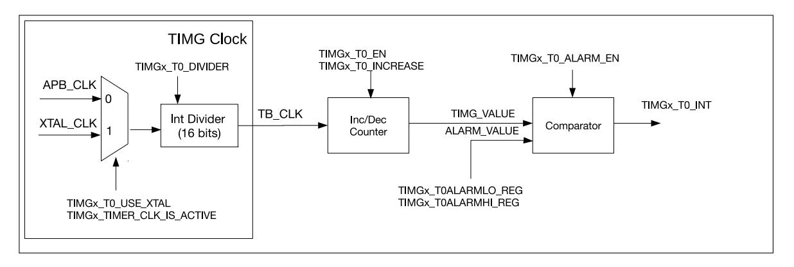
Figure 11.2-1. Timer Group Architecture
Figure11.2-1 is a diagram of timer T0 in a timer group. T0 contains a clock selector, a 16-bit integer divider as a prescaler, a timer-based counter and a comparator for alarm generation.
The timer can select between the APB clock (APB_CLK) or external clock (XTAL_CLK) as its clock source by setting the TIMG_T0_USE_XTAL field of the TIMG_T0CONFIG_REG register. The selected clock is switched on by setting TIMG_TIMER_CLK_IS_ACTIVE field of the TIMG_REGCLK_REG register to 1 and switched off by setting it to 0. The clock is then divided by a 16-bit prescaler to generate the time-base counter clock (TB_CLK) used by the time-base counter. When the TIMG_T0_DIV IDER field is configured as 2 ~ 65536, the divisor of t he prescaler would be 2 ~ 65536. Note t hat programming valu e 0 to TIMG_T0_DIVIDER will result in the divisor being 65536. When the TIMG_T0_DIVIDER is set to 1, the actual divisor is 2 so the timer counter value represents the half of real time.
To modify the 16-bit prescaler, please first configure the TIMG_T0_DIVIDER field , and then set TIMG_T0_DIVIDER_RST to 1. Mean while, the timer mus t be disabled (i.e. TIMG_T0_EN should be cleared). Otherwise, the result can be unpredictable.
The 54-bit time-base counters are based on TB_CLK and can be configured to increment or decrement via the TIMG_T0_INCREASE field. The time-base counter can be enabled or disabled by setting or clearing the TIMG_T0_EN field, respectively. When enabled, the time-base counter increments or decrements on each cycle of TB_CLK. When disabled, the time-base counter is essentially frozen. Note that the TIM G_T0_INCREASE field can be changed while TIMG_T0_EN is set and this will cause the time-base counter to change dir ection instantly.
To read the 54-bit value of the time-base counter, the timer value must be latched to two registers before being read by the CP U (due to the CPU being 3 2-bit). By writin g any value to the TIMG_T0UPDATE_REG, the current value of the 54-bit timer starts to be latched into the TIMG_T0LO_REG and TIMG_T0HI_REG registers containing the lower 32-bits and higher 22-bits, respectively. When TIMG_T0UPDATE_REG is cleared by hardware, it indicates the latch operation has been completed and current timer value can be read from t he TIMG_T0LO_REG and TIMG_T0HI_REG registers. TIMG_T0LO_REG and TIMG_T 0HI_REG registers wi ll remain unchanged for the CPU to read in its own time until TIMG_T0UPDATE_REG is written to aga in.
A timer can be configured to trigger an alarm when the timer's current value matches the alarm value. An alarm will cause an interrupt to occur and (optionally) an automatic reload of the timer's current value (see Section 11.2.4).
The 54-bit alarm value is configured using TIMG_T0ALARMLO_REG and TIMG_T0ALARMHI_REG, which represent the lower 32-bits and higher 22-bits of the alarm value, respectively. However, the configured alarm value is ineffective until the alarm is enabled by setting the TIMG_T0_ALARM_EN field. To avoid alarm being enabled 'too late' (i.e. the timer value has already passed the alarm val ue when the alarm is ena bled), the hardware will trigger the alarm immediately if the current timer value is higher than the alarm value (within a defined range) when the up-down counter increments, or l ower than the alarm va lue (within a defined range) when the up-down counter decrements. Table 11.2-1 and Table 11.2-2 show the relationship between the current value of the timer, the alarm value, and when an alarm is triggered.The current time value and the alarm value are defined as follows:
| Table 11.2-1. Alarm Generation When Up-Down Counter Increments | ||
|---|---|---|
|
Scenario
1 |
Range | Alarm |
|
53
ALARM_VALUE − TIMG_VALUE > 2 |
Triggered | |
| 2 |
53
0 < ALARM_VALUE − TIMG_VALUE ≤ 2 |
Triggered when the up-down counter counts |
|
3
4 |
53 | TIMG_VALUE up to ALARM_VALUE |
|
0 ≤ TIMG_VALUE − ALARM_VALUE < 2
53 TIMG_VALUE − ALARM_VALUE ≥ 2 |
Triggered | |
| Triggered when the up-down counter restarts | ||
| counting up from 0 after reaching the timer's | ||
| Scenario | Range | Alarm |
|
53
TIMG_VALUE − ALARM_VALUE > 2 5 6 0 < TIMG_VALUE − ALARM_VALUE ≤ 2 |
Triggered | |
|
Triggered when the up-down counter counts
53 |
||
| TIMG_VALUE down to ALARM_VALUE | ||
|
7
8 |
53
0 ≤ ALARM_VALUE − TIMG_VALUE < 2 |
Triggered |
|
53
ALARM_VALUE − TIMG_VALUE ≥ 2 |
Triggered when the up-down counter restarts | |
|
counting
down from the timer's maximum |
||
| value after reaching the minimum value and |
When an alarm occurs, the TIMG_T0_ALARM_EN field is automatically cleared and no alarm will occur again until the TIMG_T0_ALARM_EN is set next time.
A timer is reloaded when a timer's current value is overwritten with a reload value stored in the TIMG_T0_LOAD_LO and TIMG_T0_LOAD_HI fields that correspond to the lower 32-bits and higher 22-bits of the timer's new value, respectively. However, writing a reload value to TIMG_T0_LOAD_LO and TIMG_T0_LOAD_HI will not cause the timer's current value to change. Instead, the reload value is ignored by the timer until a relo ad e vent occurs. A reloa d event can be triggered either by a software instant reload or an auto-reload at alarm.
A software instant re load is triggered by the CPU writing any value to TIMG_T0LOAD_REG, which causes the timer's current value to be instantly reloaded. If TIMG_T0_EN is set, the timer will continue incrementing or decrementing from the new value. If TIMG_T0_EN is cleared, the timer will remain frozen at the new value until counting is re-enabled.
An auto-reload at alarm will cause a timer reloa d when an alar m occurs, thus allowing the timer to continue incrementing or decrementing from t he reload valu e. This is generally useful for resetting the timer's value when using periodic alarms. To enable auto-reload at alarm, the TIMG_T0_AUTORELOAD field should be set. If not enabled, the timer's value will continue to increment or decrement past the alarm value after an alarm.
Via XTAL_CLK, a timer could calculate the frequency of clock sources for RTC_SLOW_CLK (i.e. RC_RTC_SLOW_CLK, RC_FAST_DIV_CLK, and XTAL32K_CLK) as follows:
Each timer has its own interrupt line that can be routed to the CPU, and thus each timer group has a total of two interrupt lines. Timers generate level interrupts that must be explicitly cleared by the CPU on each triggering.
Interrupts are triggered after an alarm (or stage timeout for watchdog timers) occurs. Level interrupts will be held high after an alarm (or stage timeout) occurs, and will remain so until manually cleared. To enable a timer's interrupt, the TIMG_T0_INT_ENA bit should be set.
The interrupts of each timer group are governed by a set of registers. Each timer within the group has a corresponding bit in each of these registers:
If the counter of RTC_SLOW_CLK cannot finish counting in TIMG_RTC_CALI_TIMEOUT_RS T_CNT cycles, TIMG_RTC_CALI_TIMEOUT will be set to indicate a tim eout.
Espressif Systems 293
The addresses in this section are relative to Timer Group base addresses (one for Timer Group 0 and another one for Timer Group 1) provided in Table 3.3-3 in Chapter 3 System and Memory .
The abbreviations given in Column Access are explained in Section Access Types for Registers .
| one for Timer Group 1) provided in Table 3.3-3 in Chapter 3 System and Memory. | |||||||
|---|---|---|---|---|---|---|---|
| The abbreviations given in Column Access are explained in Section Access Types for Registers. | |||||||
| Name | Description | Address | Access | ||||
|
T0 control and configuration registers
TIMG_T0CONFIG_REG |
Timer 0 configuration register | 0x0000 | varies | ||||
| TIMG_T0LO_REG | Timer 0 current value, low 32 bits | 0x0004 | RO | ||||
| TIMG_T0HI_REG | Timer 0 current value, high 22 bits | 0x0008 | RO | ||||
| TIMG_T0UPDATE_REG |
Write
to copy current timer value |
to
0x000C |
R/W/SC | ||||
| TIMGn_T0_(LO/HI)_REG | |||||||
| TIMG_T0ALARMLO_REG | Timer 0 alarm value, low 32 bits | 0x0010 | R/W | ||||
| TIMG_T0ALARMHI_REG | Timer 0 alarm value, high bits | 0x0014 | R/W | ||||
| TIMG_T0LOADLO_REG | Timer 0 reload value, low 32 bits | 0x0018 | R/W | ||||
| TIMG_T0LOADHI_REG | Timer 0 reload value, high 22 bits | 0x001C | R/W | ||||
| TIMG_T0LOAD_REG |
Write
to reload timer from |
0x0020 | WT | ||||
| TIMG_T0_(LOADLO/LOADHI)_REG | |||||||
| WDT control and configuration registers | |||||||
| TIMG_WDTCONFIG0_REG | Watchdog timer configuration register | 0x0048 | varies | ||||
| TIMG_WDTCONFIG1_REG | Watchdog timer prescaler register | 0x004C | varies | ||||
| TIMG_WDTCONFIG2_REG | Watchdog timer stage 0 timeout value | 0x0050 | R/W | ||||
|
TIMG_WDTCONFIG3_REG
TIMG_WDTCONFIG4_REG |
Watchdog timer stage 1 timeout value
Watchdog timer stage 2 timeout value |
0x0054
0x0058 |
R/W
R/W |
||||
| TIMG_WDTCONFIG5_REG | Watchdog timer stage 3 timeout value | 0x005C | R/W | ||||
| TIMG_WDTFEED_REG | Write to feed the watchdog timer | WT | |||||
|
0x0060
TIMG_WDTWPROTECT_REG Watchdog write protect register 0x0064 R/W |
|||||||
| RTC frequency calculation control and configuration registers | |||||||
| TIMG_RTCCALICFG_REG |
RTC
frequency calculation configuration |
0x0068 | varies | ||||
| register 0 | |||||||
| TIMG_RTCCALICFG1_REG |
RTC
frequency calculation configuration |
0x006C | RO | ||||
| register 1 | |||||||
| TIMG_RTCCALICFG2_REG |
RTC
frequency calculation configuration |
0x0080 | varies | ||||
| register 2 | |||||||
| Interrupt registers | |||||||
| TIMG_INT_ENA_TIMERS_REG | Interrupt enable bits | 0x0070 | R/W | ||||
| TIMG_INT_RAW_TIMERS_REG | Raw interrupt status | 0x0074 | R/SS/WTC | ||||
| TIMG_INT_ST_TIMERS_REG | Masked interrupt status | 0x0078 | RO | ||||
|
TIMG_INT_CLR_TIMERS_REG
Interrupt clear bits 0x007C WT Version register |
|||||||
| TIMG_NTIMERS_DATE_REG | Timer version control register | 0x00F8 | R/W | ||||
| Clock configuration registers | |||||||
The addresses in this section are relative to Timer Group base address provided in Table 3.3-3 in Chapter 3 System and Memory .
TIMG_T0_LO After writing to TIMG_T0UPDATE_REG, the low 32 bits of the time-base counter of Timer 0 can be read here. (RO)
TIMG_T0_HI After writing to TIMG_T0UPDATE_REG, the high 22 bits of the time-base counter of Timer 0 can be read here. (RO)

TIMG_T0_UPDATE After writing 0 or 1 to TIMG_T0UPDATE_REG, the counter value is latched. (R/W/SC)
TIMG_T0_ALARM_LO Timer 0 alarm trigger time-base counter value, low 32 bits. (R/W)

TIMG_T0_ALARM_HI Timer 0 alarm trigger time-base counter value, high 22 bits. (R/W)
TIMG_T0_LOAD_LO Low 32 bits of the value that a reload will load onto Timer 0 time-base counter. (R/W)
TIMG_T0_LOAD_HI High 22 bits of the value that a reload will load onto Timer 0 time-base counter. (R/W)
TIMG_T0_LOAD Write any value to trigger a Timer 0 time-base counter reload. (WT)
TIMG_WDT_APPCPU_RESET_EN WDT reset CPU enable. (R/W)
TIMG_WDT_PROCPU_RESET_EN WDT reset CPU enable. (R/W)
TIMG_WDT_FLASHBOOT_MOD_EN When set, Flash boot protection is enabled. (R/W)
TIMG_WDT_SYS_RESET_LENGTH System reset signal length selection. 0: 100 ns, 1: 200 ns, 2: 300 ns, 3: 400 ns, 4: 500 ns, 5: 800 ns, 6: 1.6 µ s, 7: 3.2 µ s. (R/W)
TIMG_WDT_CPU_RESET_LENGTH CPU reset signal length selection. 0: 100 ns, 1: 200 ns, 2: 300 ns, 3: 400 ns, 4: 500 ns, 5: 800 ns, 6: 1.6 µ s, 7: 3.2 µ s. (R/W)
TIMG_WDT_USE_XTAL Chooses WDT clock. 0: APB_CLK; 1:XTAL_CLK. (R/W)
TIMG_WDT_CONF_UPDATE_EN Updates the WDT configuration registers. (WT)
TIMG_WDT_STG3 Stage 3 configuration. 0: off, 1: interrupt, 2: reset CPU, 3: reset system. (R/W)
TIMG_WDT_STG2 Stage 2 configuration. 0: off, 1: interrupt, 2: reset CPU, 3: reset system. (R/W)
TIMG_WDT_STG1 Stage 1 configuration. 0: off, 1: interrupt, 2: reset CPU, 3: reset system. (R/W)
TIMG_WDT_STG0 Stage 0 configuration. 0: off, 1: interrupt, 2: reset CPU, 3: reset system. (R/W)
TIMG_WDT_EN When set, MWDT is enabled. (R/W)
TIMG_WDT_DIVCNT_RST When set, WDT 's clock divider counter will be reset. (WT)
TIMG_WDT_CLK_PRESCALE MWDT clock prescaler value. MWDT clock period = MWDT's clock source period * TIMG_WDT_CLK_PRESCALE. (R/W)
TIMG_WDT_STG0_HOLD Stage 0 timeout value, in MWDT clock cycles. (R/W)
TIMG_WDT_STG1_HOLD Stage 1 timeout value, in MWDT clock cycles. (R/W)
TIMG_WDT_STG2_HOLD Stage 2 timeout value, in MWDT clock cycles. (R/W)
TIMG_WDT_WKEY If the register contains a different value than its reset value, write protection is enabled. (R/W)
TIMG_RTC_CALI_START_CYCLING Enables periodic frequency calculation. (R/W)
TIMG_RTC_CALI_CLK_SEL 0: RC_SLOW_CLK; 1: RC_FAST_DIV_CLK; 2: XTAL32K_CLK. (R/W)
TIMG_RTC_CALI_CYCLING_DATA_VLD Marks the completion of periodic frequency calculation. (RO)
TIMG_RTC_CALI_VALUE When one-shot or periodic frequency calculation completes, read this value to calculate the frequency of RTC_SLOW_CLK. Measurement unit: XTAL_CLK cycle. (RO)
TIMG_RTC_CALI_TIMEOUT Indicates frequency calculation timeout. (RO)
TIMG_RTC_CALI_TIMEOUT_RST_CNT Cycles to reset frequency calculation timeout. (R/W)
TIMG_RTC_CALI_TIMEOUT_THRES Threshold value for the frequency calculation timer. If the timer's value exceeds this threshold, a timeout is triggered. (R/W)
Register 11.21. TIMG_INT_ENA_TIMERS_REG (0x0070)
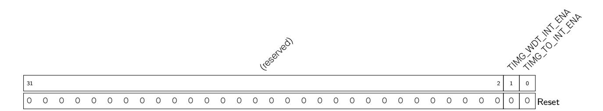
TIMG_T0_INT_ENA The interrupt enable bit for the TIMG_T0_INT interrupt. (R/W)
TIMG_WDT_INT_ENA The interrupt enable bit for the TIMG_WDT_INT interrupt. (R/W)
TIMG_T0_INT_RAW The raw interrupt status bit for the TIMG_T0_INT interrupt. (R/SS/WTC) TIMG_WDT_INT_RAW The raw interrupt status bit for the TIMG_WDT_INT interrupt. (R/SS/WTC)
TIMG_WDT_INT_ST The masked interrupt status bit for the TIMG_WDT_INT interrupt. (RO)
TIMG_T0_INT_CLR Set this bit to clear the TIMG_T0_INT interrupt. (WT)
TIMG_WDT_INT_CLR Set this bit to clear the TIMG_WDT_INT interrupt. (WT)
TIMG_NTIMGS_DATE Timer version control register (R/W)
TIMG_WDT_CLK_IS_ACTIVE enable WDT's clock (R/W)
TIMG_TIMER_CLK_IS_ACTIVE enable Timer 0's clock (R/W)
TIMG_CLK_EN Register clock gate signal. 0: The clock used by software to read and write registers is on only when there is software operation. 1: The clock used by software to read and write registers is always on. (R/W)
Watchdog timers are hardware timers used to detect and recover from malfunctions. They must be periodically fed (reset) to prevent a timeout. A system/software that is behaving unexpectedly (e.g. is stuck in a software loop or in overdue events) will fail to feed the watchdog thus trigger a watchdog timeout. Therefore, watchdog timers are useful for detecting and handling erroneous system/software behavior.
As shown in Figure 12.1-1, ESP32-C3 contains three digital watchdog timers: one in each of the two timer groups in Chapter 11 Timer Group (TIMG) (called Main System Watchdog Timers, or MWDT) and one in the RTC Module (called the RTC Watchdog Timer, or RWDT). Each digital watchdog timer allows for four separately configurable stage s and each stage can be programmed to take one action upon expiry, unless the watchdog is fed or disabled. MWDT supports three timeout actions: interrupt, CPU reset, and core reset, while RWDT supports four timeout actions: interrupt, CPU reset, core reset, and system reset (see details in Section 12.2.2.2 Stages and Timeout Actions ). A timeout value can be set for each stage individually.
During the flash boot process, RWDT and the first MWDT in timergroup 0 are enabled automatically in order to detect and recover from booting errors.
ESP32-C3 also has one analog watch dog timer: Super watchdog (SWD). It is an ultra-low-power circuit in analog domain that helps to prevent the system from operating in a sub-optimal state and resets the system if required.
Figure 12.1-1. Watchdog Timers Overview
Note that while this chapter provides the functional descriptions of the watchdog timer's, their register descriptions are provided in Chapter 11 Timer Group (TIMG) and Chapter 9 Low-power Management .
Watchdog timers have the following features:
If the boot process from an SPI flash does not complete within a predetermined period of time, the watchdog will reboot the entire main system.
Figure 12.2-1. Watchdog Timers in ESP32-C3
Figure 12.2-1 shows the three watchdog timers in ESP32-C3 digital systems.
At the core o f each watchdog timer is a 32-bit counter.
MWDTs can select between the APB clock (APB_CLK) or external clock (XTAL_CLK) as its clock source by setting the TIMG_WDT_USE_XTAL field of the TIMG_WDTCONFIG0_REG register. The selected clock is switched on by setting TIMG_WDT_CLK_IS_ACTIVE field of the TIMG_REGCLK_REG register to 1 and switched off by setting it to 0. Then the selected clock is divided by a 16-bit configurable prescaler. The 16-bit prescaler for MWDTs is configured via the TIMG_WDT_C LK_PRESCALE field of TIMG_WDTCONFIG1_REG.When TIMG_WDT_DIVCNT_RST field is set, the prescaler is reset and it can be re-configure d at once.
In contrast, the clock source of RWDT is derived directly from an RTC slow clock (the RTC slow clock source shown in Chapter 6 Reset and Clock ).
MWDTs and RWDT are en abled by setting the TIMG_WDT_EN and RTC_CNTL_WDT_EN fields respectively.
Espressif Systems 307
When enabled, the 32-bit counters of each watchdog will increment on each source clock cycle until the timeout value of the current stage is reached (i.e. expiry of the current stage). When this occurs, the current counter value is reset to zero and the next stage will become active. If a watchdog timer is fed by software, the timer will return to stage 0 and reset its counter value to zero. Software can feed a watchdog timer by writing any value to TIMG_WDTFEED_REG for MDWTs and RTC_CNTL_WDT_FEED for RWDT.
Timer stages allow f or a timer to have a se ries of different timeout values and cor responding expiry action. When one stage expires, the expiry action is triggered, the counter value is reset to zero, and the next stage becomes active. MWDTs/ RWDT provide four stages (called stages 0 to 3). The watchdog timers will progress through each stage in a loop (i.e. from stage 0 to 3, then back to stage 0).
Timeout values of each stage for MWDTs are configured in TIMG_WDTCONFIG i _REG (where i ranges from 2 to 5), whilst timeout values for RWDT are configured using RTC_CNTL_WDT_STG j _HOLD field (where j ranges from 0 to 3).
Please note that the timeout value of stage 0 for RWDT (T hold₀) is determined by th e combination of the
EFUSE_WDT_DELAY_SEL field of eFuse register EFUSE_RD_REPEAT_DATA1_REG and RTC_CNTL_WDT_STG0_HOLD. The relationship is as follows:
where << is a left-shift operator.
Upon the expiry of each stage, one of the following expir y acti ons will be executed:
When the stage expires, the main system (which includes MWDTs, CPU, and all peripherals) will be reset. The power management unit and RTC peripheral will not be reset.
This stage will have no effects on the system.
For MWDTs, t he expiry action of all stages is configured in TIMG_WDTCONFIG0_REG. Likewise for RWDT, the expiry action is configured in RTC_CNTL_WDTCONFIG0_REG.
Watchdog timers are critical t o detecting and handling errone ous system/software behavior, thus should not be disabled easily (e.g. due to a misplaced register write). Therefore, MWDTs and RWDT incorporate a write
protection mechanism that prevent the watchdogs from being disabled or tampered with due to an accidental write. The write protection mechanism is implemented using a write-key field for each timer (TIMG_WDT_WKEY for MWDT, RTC_CNTL_WDT_WKEY for RWDT). The value 0x50D83AA1 must be written to the watchdog timer's write-key field before any other register of the same watchdog timer can be changed. Any attempts to write to a watchdog timer's registers (other than the write-key field itself) whilst the write-key field's v alue is not 0x50D83A A1 will be ignored. The recommended procedure for accessing a watchdog timer is as follows:
During flash booting process, MWDT in timer group 0 (see Figure 11.1-1 Timer Units within Groups ), as well as RWDT, are automatically enabled. Stage 0 for the enabled MWDT is automatically configured to reset the system upon expiry, known as core reset. Likewise, stage 0 for RWDT is configured to system reset, which resets the main system and RTC when it expires. After booting, TI MG_WDT_FLASHBOOT_MOD_EN and RTC_CNTL_WDT_FLASHBOOT_MOD_EN should be cleared to stop the flash boot protection procedure for both MWDT and RWDT respectively. After this, MWDT and RWDT can be configured by software.
Super watchdog (SWD) is an ultra-low-power circuit in analog domain that helps to prevent the system from operating in a sub-optimal state and resets the system if required. SWD contains a watchdog circuit that needs to be fed for at least once during its timeout period, which is slightly less than one second. About 100 ms before watchdog timeout, it will also send out a WD_INTR signal as a request to remind the system to feed the watchdog.
If the system doesn't respond to SWD feed request and watchdog finally times out, SWD will generate a system level signal SWD_RSTB to reset whole digital circuits on the chip.
SWD has the following features:
In normal state:
After reset:
For watchdog timer interrupts, please refer to Section 11.2.6 Interrupts in Chapter 11 Timer Group (TIMG) .
MWDT registers are part of the timer submodule and are described in Section 11.4 Register Summary in Chapter 11 Timer Group (TIMG) . RWDT and SWD registers are part of the RTC submodule and are described in Section 9.7 Register Summary in Chapter 9 Low-power Management .
The XTAL32K watchdog timer on ESP32-C3 is used to monitor the status of external crystal XTAL32K_CLK. This watchdog timer can detect the oscillation failure of XTAL32K_CLK, change the clock source of RTC, etc. When XTAL32K_CLK works as the clock source of RTC_SLOW_CLK (for clock description, see Chapter 6 Reset and Clock ) and stops vibrating, the XTAL32K watchdog timer first switches to BACKUP32K_CLK derived from RC_SLOW_CLK and generates an interrupt (if the chip is in Light-sleep and Deep-sleep mode, the CPU will be woken up), and then switches back to XTAL32K_CLK after it is restarted by software.
Figure 13.1-1. XTAL32K Watchdog Timer
When the XTAL32K watchdog timer detects the oscillation failure of XTAL32K_CLK, an oscillation failure interrupt RTC_XTAL32K_DEAD_INT (for interrupt description, please refer to Chapter 9 Low-power Management ) is generated. At this point, the CPU will be woken up if in Light-sleep and Deep-sleep mode.
Once the XTAL32K watchdog timer detects the oscillation failure of XTAL32K_CLK, it replaces XTAL32K_CLK with BACKUP32K_CLK (with a frequency of 32 kHz or so) derived from RC_SLOW_CLK as RTC_SLOW_CLK, so as to ensure proper functioning of the system.
Chips have different RC_SLOW_CLK frequencies due to production process variations. To ensure the accuracy of RTC_TIMER and other timers running on RTC_SLOW_CLK when BACKUP32K_CLK is at work, the divisor of BACKUP32K_CLK should be configured according to the actual frequency of RC_SLOW_CLK (see details in Chapter 9 Low-power Management ) via the RTC_CNTL_XTAL32K_CLK_FACTOR_REG register. Each byte in this register corresponds to a divisor component ( x 0 ~ x 7). BACKUP32K_CLK is divided by a fraction where the denominator is always 4, as calculated below.
f _ back _ clk /4 = f _ rc _ slow _ clk / S S = x 0 + x 1 + ... + x 7
f_back_clk is the desired frequency of BACKUP32K_CLK, i.e. 32.768 kHz; f_rc_slow_clk is the actual frequency of RC_SLOW_CLK; x 0 ~ x 7 correspond to the pulse width in high and low state of four BACKUP32K_CLK clock signals (unit: RC_SLOW_CLK clock cycle).
Based on principles described in Section 13.3.2, configure the divisor component as follows:
For example, if the frequency of RC_SLOW_CLK is 163 kHz, then f _ rc _ slow _ clk = 163000,
f _ back _ clk = 32768, S = 20, M = 2, and {x 0 , x 1 , x 2 , x 3 , x 4 , x 5 , x 6 , x 7 } = { 2 , 3 , 2 , 3 , 2 , 3 , 2 , 3 } . As a result, the frequency of BACKUP32K_CLK is 32.6 kHz.
ESP32-C3 includes a Permission Controller (PMS), which allocates the hardware resources (memory and peripherals) to two isolated environments, thereby realizing the separation of privileged and unprivileged environments.
Besides, ESP32-C3's RISC-V CPU also has a Physical Memory Protection (PMP) unit, which can be used by software to set memory access privileges (read, write, and execute permissions) for required memory regions. However, the PMP unit has some limitations:
To this, ESP32-C3 has specially implemented this Permission Controller to complete the Physical Memory Protection unit.
ESP32-C3's completed workflow of permission check can be described below (also see Figure 14.1-1):
Figure 14.1-1. Permission Control Overview
For details about PMP, please refer to Section 1.8.1 in Chapter 1 ESP-RISC-V CPU . For details about World Controller, please refer to Chapter 15 World Controller (WCL) . This chapter only describes ESP32-C3's PMS mechanism.
ESP32-C3's extended permission control mechanism supports:
During PMS check, ESP32-C3 chip:
• When in the privileged environment: check the permission configuration registers for the privileged environment
• When not in the unprivileged environment: check the permission configuration registers for the unprivileged environment
Users can choose either of these two ways below to enter the chip into privileged environment:
Users can configure PMS_PRIVILEGE_MODE_SEL to choose between the above-mentioned two ways to enter the chip into privileged environment:
The following sections introduce how to configure the permission to differe nt areas in the privileged environment and the unprivileged environment.
ESP32-C3 has the following types of internal memory:
This section describes how to configure the permission to each type of ESP32-C3's internal memory.
ESP32-C3's ROM can be accessed by CPU's instruction bus (IBUS) and data bus (DBUS) when configured. The ROM ranges accessible for IBUS and DBUS respectively are listed in Table 14.4-1.
| ROM | |||||
|---|---|---|---|---|---|
| IBUS Address | DBUS Address | ||||
| Starting Address | Ending Address | Starting Address | Ending Address | ||
| Internal ROM0 | 0x4000_0000 | 0x4003_FFFF | - | - | |
ESP32-C3 uses the registers listed in Table 14.4-2 to configure the instruction execution (X), write (W) and read (R) accesses of CPU's IBUS and DBUS, in User mode and Machine mode. Note that access configuration to ROM0 and ROM1 cannot be configured separately:
|
Chapter 14
Permission Control (PMS) |
|||||
|---|---|---|---|---|---|
| Table 14.4-2. Access Configuration to ROM (ROM0 and ROM1) | |||||
| Bus | Environment | Configuration RegistersA | Access | ||
| Privileged | PMS_CORE_X_IRAM0_PMS_CONSTRAIN_2_REG [20:18]B | X/W/R | |||
A 1: with access; 0: wit hout access
B For example, configu ring this field to 0b101 indicates CPU's IBUS is granted ins truction execution and read acce sses but not write access to ROM in the unprivileged envir onment.
C For example, configuring this field to 0b01 indicates CPU's DBUS is granted read access but not write access to ROM in privileged environment.
ESP32-C3's SRAM can be accessed by CPU's instruction bus (IBUS) and data bus (DBUS) when configured. The SRAM address ranges accessible for IBUS and DBUS respectively are listed in Table 14.4-3.
| Table 14.4-3. SRAM Address | ||||||
|---|---|---|---|---|---|---|
| SRAM | Block | IBUS Address | DBUS Address | |||
| Internal SRAM0 | Starting Address | Ending Address | Starting Address | Ending Address | ||
| - | 0x4037_C000 | 0x4037_FFFF | - | - | ||
| Block0 | 0x4038_0000 | 0x4039_FFFF | 0x3FC8_0000 | 0x3FC9_FFFF | ||
Here, we will first introduce how to configure the permission to Internal SRAM0 and then Internal SRAM1.
ESP32-C3's Internal SRAM0 can be allocated to either CPU or ICACHE.
Users can configure PMS_INTERNAL_SRAM_USAGE_CPU_CACHE to allocate ESP32-C3's Internal SRAM0 to either CPU or ICACHE:
When the Internal SRAM0 is allocated to CPU, ESP32-C3 uses the registers listed in Table 14.4-4 to configure the instruction execution (X), write (W) and read (R) accesses of CPU's IBUS, in the privileged environment and the unprivileged environment:
| Chapter 14 | Permission Control (PMS) | GoBack | |
|---|---|---|---|
| Table 14.4-4. Access Configuration to Internal SRAM0 | |||
Table 14.4-4. Access Configuration to Internal SRAM0
A To access the Internal SRAM0, CPU must be configured with both the usage permission and respective access pe rmission.
B 1: with access; 0: wit hout access
C For example, configuring this field to 0b101 indicates CPU's IBUS is granted with instruction execution and read accesses but not write access to SRAM0 in the privileged environment.
ESP32-C3's Internal SRAM1 includes Block0 ~ Block2 (see details in Table 14.4-3) and can be:
ESP32-C3's Internal SRAM1 can be further split into up to 6 regions with 5 split lines. Users can configure different access to each region independently.
To be more specific, the Internal SRAM1 can be first split into Instruction Region and Data Region by IRam0_DRam0_split_line:
See illustration in Figure 14.4-1 and Table 14.4-5 below.
| Internal SRAM 1 | IBUS Permission DBUS Permission | |||
|---|---|---|---|---|
| Instr_region_0 | IRam0 PMS 0 | IRam0 split line 1 | ||
| Instr region 1 | Block 0 | Ram0 PMS 1 | DRam0 PMS 0 | |
| Instr region 2 | Block1 | IRam0 PMS 2 |
IRam0 split line 0
IRam0 DRam0 split li |
|
| Data region 0 | DRam0 PMS 1 | |||
| Data_region_1 | Block2 | IRam0_PMS_3 | DRam0 PMS 2 | DRam0 split line 0 |
| Data region 2 | DRam0 PMS 3 | DRam0 split line 1 |
Figure 14.4-1. Split Lines for Internal SRAM1
| Table 14.4-5. Internal SRAM1 Split Regions |
|---|
| Table 14.4-5. Internal SRAM1 Split Regions | |||
| Instruction / Data Regions | |||
| Internal Memory A | Split RegionsB | ||
| Instruction Region | Instr_Region_0 | ||
| Instr_Region_1 | |||
| SRAM1 | Instr_Region_2 | ||
A Access to each split region can be configured independently. See details in Table 14.4-6 and 14.4-7. B See the description below on how to configure the split lines.
ESP32-C3 allows users to configure the split lines to their needs with registers below:
When configuring the split lines,
For example, assuming you want to configure the split line in Block1, then first configure the Category_1 field for Block1 to 0x1 or 0x2; configure the Category_0 for Block0 to 0x0; and configure the Category_2 for Block2 to 0x3 (see illustration in Figure 14.4-2). On the other hand, when reading 0x1 or 0x2 from Category_1, then you know the split line is in Block1.
For example, if you want to split the instruction region at 0x3fc88000, then write the [16:9] bits of this address, which is 0b01000000, to SPLITADDR.
3. The split address applies to both IBUS and DBUS address. For example, DBUS address 0x3fc88000 and IBUS address 0x40388000 indicate the same location in SRAM1. The split address for both buses is [16:9].
Note the following points when configuring the split lines:
After configuring the split lines, users can then use the registers described in the Table 14.4-6 and Table 14.4-7 below to configure the access of CPU's IBUS, DBUS and GDMA peripherals, in the privileged environment and the unprivileged environment, to these split regions independently.
| Table 14.4-6. Access Configuration to the Instruction Region of Internal SRAM1 | ||||||
|---|---|---|---|---|---|---|
| Buses | ||||||
| Environment | Configuration Registers | Instruction Region | ||||
| IBUS |
instr_region_0
instr_region_1 instr_region_2 |
|||||
| Privileged | PMS_CORE_X_IRAM0_PMS_CONSTRAIN_2_REG |
[2:0]
[5:3] [8:6] |
X/W/R | |||
| Unprivileged | PMS_CORE_X_IRAM0_PMS_CONSTRAIN_1_REG |
[2:0]
[5:3] [8:6] |
X/W/R | |||
A Configure DBUS' access to the Instruction Region. However, it's re commended to configure these bits to 0.
B Configure GDMA's access to the Instruction Region. However, it's recommended to configure these bits to 0.
C GMDA doesn't support the priv ileged environment and unprivileged environment.
D ESP32-C3 has 6 peripherals, including SPI2, UCHI0, I2S, AES, SHA, ADC, which can access Internal SRAM1 via GDMA. Each peripherals can be configured with different access to the Internal SRAM1 independently.
| Table 14.4-7. Access Configuration to the Data Region of Internal SRAM1 | ||||||
|---|---|---|---|---|---|---|
| Buses | Environment | Configuration Registers | Data Region | |||
|
data_region_0
data_region_1 data_region_2 |
||||||
| IBUS | Privileged | PMS_CORE_X_IRAM0_PMS_CONSTRAIN_2_REG | [11:9]A | X/W/R | ||
| Unprivileged | PMS_CORE_X_IRAM0_PMS_CONSTRAIN_1_REG | [11:9]A | X/W/R | |||
| DBUS | Privileged | PMS_Core_X_DRAM0_PMS_CONSTRAIN_1_REG | [3:2] | [5:4] | [7:6] | W/R |
A Configure IBUS' access to the Data Region. However, it's recomm ended to configure these bits to 0.
B GMDA doesn't support the privileged environment and the unprivileged environment.
C ESP32-C3 has six peripherals, i ncluding SPI2, UCHI0, I2S, AES, SHA , ADC, which can access Internal SRAM1 via GDMA. Each peripheral can be configured with different access to the Internal SRAM1 independently.
For details on how to configure the split lines, see Section 14.4.2.2.
If enabled, the permission control module watches all the me mory acce ss and fires the panic handler if a permission violation is detected. This feature automatically splits the SRAM memory into data and instruction segments and sets Read/Execute permissions for the instruction part (below given splitting address) and Read/Write permissions for the data part (above the splitting address). The memory protection is effective on all access through the IRAM0 and DRAM0 buses. See details, see ESP-IDF api-reference Memory protection .
ESP32-C3's RTC FAST Memory is 8 KB. See the address of RTC FAST Memory below:
Table 14.4-8. RTC FAST Memory Address
| RTC FAST Memory | 0x5000_0000 | 0x5000_1FFF |
|---|
ESP32-C3's RTC FAST Memory can be further split into 2 regions. Each split region can be configured independently with different access.
The Register for configuring the split line is described below:
| Table 14.4-9. Split RTC FAST Memory into the Higher Region and the Lower Region | ||
|---|---|---|
1 The word offset from the RTC FAST Memory base address should be used when configuring the split address. For example, if you want to split the RTC FAST Memory at 0x5000_1000, then write 0x400 (0x1000 >> 2) to this register.
Access configuration for the higher and lower regions of the RTC FAST Memory is described below:
| Table 14.4-10. Access Configuration to the RTC FAST Memory | ||||
|---|---|---|---|---|
| Bus | RTC | Configuration Registers | ||
| FAST Memory | Privileged Environment | Unprivileged Environment | ||
A 1: with access; 0: without access
B For example, configuring this field to 0b101 indicates CP U's perip heral (PIF) bus is granted with th e instruction execution and read accesse s but not the read access in th e privileg ed environment to the higher re gion of RTC FAST Memory.
ESP32-C3's CPU can be configured with different read (R) and write (W) accesses to most of its modules and peripherals independently, in the privileged environment and in the unprivileged environment, by configuring respective registers
(PMS_CORE_0_PIF_PMS_CONSTRAN_ n _REG).
Notes on PMS_CORE_0_PIF_PMS_CONSTRAN_ n _REG:
• n can be 1 ~ 8, in which 1 ~ 4 are for the privileged environment and 5 ~ 8 are for the unprivileged environment.
For exam ple, users can configure PMS_CORE_0_PIF_PMS_CONSTRAIN_1_REG [1:0] to 0x2, meaning CPU is granted with read access but not write access in the privileged environment to UART0. In this case, CPU won't be able to modify the UART0's internal registers when in the privileged environment.
| Table 14.5-1. Access Configuration of the Peripherals | |||
| Peripherals | Privileged Environment | Unprivileged Environment | Bit3 |
| GDMA | **_PMS_CONSTRAN_4_REG | **_PMS_CONSTRAN_8_REG | [7:6] |
| eFuse Controller & PMU1 | **_PMS_CONSTRAN_1_REG | **_PMS_CONSTRAN_5_REG | [15:14] |
| IO_MUX | **_PMS_CONSTRAN_1_REG | **_PMS_CONSTRAN_5_REG | [17:16] |
| GPIO | **_PMS_CONSTRAN_1_REG | **_PMS_CONSTRAN_5_REG | [7:6] |
| Interrupt Matrix | **_PMS_CONSTRAN_4_REG | **_PMS_CONSTRAN_8_REG | [21:20] |
|
System Timer
Timer Group 0 |
**_PMS_CONSTRAN_2_REG
**_PMS_CONSTRAN_2_REG |
**_PMS_CONSTRAN_6_REG
**_PMS_CONSTRAN_6_REG |
[31:30]
[27:26] |
| Timer Group 1 | **_PMS_CONSTRAN_2_REG | **_PMS_CONSTRAN_6_REG | [29:28] |
| System Registers | **_PMS_CONSTRAN_4_REG | **_PMS_CONSTRAN_8_REG | [17:16] |
| PMS Registers | **_PMS_CONSTRAN_4_REG | **_PMS_CONSTRAN_8_REG | [19:18] |
| Debug Assist | **_PMS_CONSTRAN_4_REG | **_PMS_CONSTRAN_8_REG | [27:26] |
| Accelerators2 | **_PMS_CONSTRAN_4_REG | **_PMS_CONSTRAN_8_REG | [5:4] |
| Cache & XTS_AES1 | **_PMS_CONSTRAN_4_REG | **_PMS_CONSTRAN_8_REG | [25:25] |
| UART 0 | **_PMS_CONSTRAN_1_REG | **_PMS_CONSTRAN_5_REG | [1:0] |
| UART 1 | **_PMS_CONSTRAN_1_REG | **_PMS_CONSTRAN_5_REG | [31:30] |
| SPI 0 | **_PMS_CONSTRAN_1_REG | **_PMS_CONSTRAN_5_REG | [5:4] |
| SPI 1 | **_PMS_CONSTRAN_1_REG | **_PMS_CONSTRAN_5_REG | [3:2] |
| SPI 2 | **_PMS_CONSTRAN_3_REG | **_PMS_CONSTRAN_7_REG | [1:0] |
| I2C 0 | **_PMS_CONSTRAN_2_REG | **_PMS_CONSTRAN_6_REG | [5:4] |
| I2S | **_PMS_CONSTRAN_3_REG | **_PMS_CONSTRAN_7_REG | [15:14] |
| USB OTG Core | **_PMS_CONSTRAN_4_REG | **_PMS_CONSTRAN_8_REG | [15:14] |
|
Two-wire Automotive Interface
UHCI 0 |
**_PMS_CONSTRAN_3_REG
**_PMS_CONSTRAN_2_REG |
**_PMS_CONSTRAN_7_REG
**_PMS_CONSTRAN_6_REG |
[11:10]
[7:6] |
| LED PWM Controller | **_PMS_CONSTRAN_2_REG | **_PMS_CONSTRAN_6_REG | [17:16] |
| Remote Control Peripheral | **_PMS_CONSTRAN_2_REG | **_PMS_CONSTRAN_6_REG | [11:10] |
| APB Controller | **_PMS_CONSTRAN_3_REG | **_PMS_CONSTRAN_7_REG | [5:4] |
Table 14.5-1. Access Configuration of the Peripherals
1 : This is shared by more than one peripherals.
2 : Accelerators: AES, SHA, RSA, Digital Signatures, HMAC
3 : Access: R/W
4 : ** in the table replaces PMS_CORE_0_PIF.
On top of what described in the previous section, user can select one of ESP32-C3's peripheral region to split them into 7 regions (from Peri Region0 ~ Peri Region7) for more flexible permission control.
For example, the registers for ESP32-C3's GDMA controller are allocated as:
As seen above, GDMA's peripheral region is divided into 7 split regions (implemented in hardware), which can be configured with different permission independently, thus achieving independent permission control for each GDMA channel.
Users can configure CPU's read (R) and write (W) accesses to a specific split region (Peri Region n ) in the privileged environment and in the unprivileged environment by configuring PMS_REGION_PMS_CONSTRAN_ n _REG.
Notes on PMS_REGION_PMS_CONSTRAN_ n _REG:
| Table 14.5-2. Access Configuration of Peri Regions | ||||
|---|---|---|---|---|
| Peri Regions | Starting Address | Access Configuration | ||
| Configuration | Privileged Environment | Unprivileged Environment | ||
| Peri Region0 | PMS_REGION_PMS_CONSTRAN_3_REG | PMS_REGION_PMS_CONSTRAN_1_REG [1:0] | PMS_REGION_PMS_CONSTRAN_2_REG [1:0] | |
| Peri Region1 | PMS_REGION_PMS_CONSTRAN_4_REG | PMS_REGION_PMS_CONSTRAN_1_REG [3:2] | PMS_REGION_PMS_CONSTRAN_2_REG [3:2] | |
|
Peri Region2
Peri Region3 |
PMS_REGION_PMS_CONSTRAN_5_REG | PMS_REGION_PMS_CONSTRAN_1_REG [5:4] | PMS_REGION_PMS_CONSTRAN_2_REG [5:4] | |
| Peri Region4 |
PMS_REGION_PMS_CONSTRAN_6_REG
PMS_REGION_PMS_CONSTRAN_7_REG |
PMS_REGION_PMS_CONSTRAN_1_REG [7:6]
PMS_REGION_PMS_CONSTRAN_1_REG [9:8] |
PMS_REGION_PMS_CONSTRAN_2_REG [7:6]
PMS_REGION_PMS_CONSTRAN_2_REG [9:8] |
|
Table 14.5-2. Access C onfiguration of Peri Regions
* The ending ad dress of Peri Region6 is con figured by PMS_REGION_PMS_ CONST RAN_10_REG.
ESP32-C3 can access the external memory via one of the two ways illustrated in Figure 14.6-1 below.
Where,
Figure 14.6-1. Two Ways to Access External Memory
ESP32-C3's flash can be further split to achieve more flexible permission control. Each split region can be configured with different access independently.
The following registers can be used to configure how the flash is split.
| Table 14.6-1. Split the External Memory into Split Regions | |||
|---|---|---|---|
| Split Regions | Split Region Configuration3 | ||
1 Configuring this field with the actual address, which should be aligned to 64 KB.
2 When configuring the length of Region n , note the total length of all flash regions should be no greater than 16 MB, res pectively.
3 Each region cannot overlap with others.
Each split region for flash can be configured with different permission independently via the register described in the table below.
| Split Regions | Access Configuration | ||
| Configuration Register | Cache | SPI | |
A These bits are configured in order R/X. For example, configuring this field to 2'b10 indicates CACHE is granted with the read access but no instruction execution access to the F lash Region n .
B These bits are configured in order W/R. For example, configuring this field to 2'b01 indicates SPI is granted with the read access but no write access to the Flash Region n .
ESP32-C3's CPU access Cache using a virtual address. The memory space in ESP32-C3 that is accessible for CPU to access Cache is called "Virtual Address Region", which can be seen in Table 14.6-3 below.
| CPU to access Cache is called "Virtual Address Region", which can be seen in Table 14.6-3 below. | ||||
|---|---|---|---|---|
| Table 14.6-3. Cache Virtual Address Region | ||||
| Bus Type | Virtual Address Region | Size (MB) | Target | |
Table 14.6-3. Cache Virtual Address Region
Both ESP32-C3's DBUS and IBUS Cache virtual address regions can be further split into up to 4 regions. Users can configure different access to each region independently.
| Table 14.6-4. Split IBUS Cache Virtual Address into 4 Regions | |||
|---|---|---|---|
| Split Regions1 | Split Region Configuration | ||
| Starting Address | Ending Address | ||
| IBUS Region0 | 0x4200_0000 | EXTMEM_IBUS_PMS_TBL_BOUNDARY0_REG2 | |
| IBUS Region1 | EXTMEM_IBUS_PMS_TBL_BOUNDARY0_REG2 | EXTMEM_IBUS_PMS_TBL_BOUNDARY1_REG2 | |
1 The address ra nge of each split region is [Starting Address, E ndi ng Address).
2 The address r epresented is "0x4200_0000 + 0x1000 * EXTM EM_IBUS_PMS_TBL_BOUNDARY n _REG". For example, when EXTMEM_IBUS_PMS_TBL_BOUNDARY0_REG is configured to 2, then the address range of IBUS Region0 is [0x4200_0000, 0x4200_2000).
| Table 14.6-5. Split DBUS Cache Virtual Address into 4 Regions | |||
|---|---|---|---|
| Split Region Configuration | |||
| Split Regions1 | Starting Address | Ending Address | |
| DBUS Region0 | 0x3C00_0000 | EXTMEM_DBUS_PMS_TBL_BOUNDARY0_REG2 | |
| DBUS Region1 | EXTMEM_DBUS_PMS_TBL_BOUNDARY0_REG2 | EXTMEM_DBUS_PMS_TBL_BOUNDARY1_REG2 | |
| DBUS Region2 | EXTMEM_DBUS_PMS_TBL_BOUNDARY1_REG2 | EXTMEM_DBUS_PMS_TBL_BOUNDARY2_REG2 | |
1 The address ra nge of each split region is [Starting Address, End ing Address).
2 The address re presented is "0x3C00_0000 + 0x0100 * EXTMEM _DBUS_PMS_TBL_BOUNDARY n _REG". For example, when EXT MEM_DBUS_PMS_TBL_BOUNDARY n _REG is configured to 2, then the address range of IBUS Split Region0 is [0x3C00_0000, 0x3C00_0200]).
Each Cache split region can be configured with different permission independently via registers described in Table 14.6-6 and Table 14.6-7 below.
Espressif Systems 327
| Table 14.6-6. Access Configuration of IBUS to Split Regions | ||||
|---|---|---|---|---|
| Split Regions | Access Configuration | |||
| Configuration Register | PrivilegedA | UnprivilegedA | ||
| IBUS Region0C | - | - | - | |
A These bits are c onfigured in order R/X.
| Table 14.6-7. Access Configuration of DBUS to Split Regions | ||||
|---|---|---|---|---|
| Split Regions | Access Configuration | |||
| Configuration Register | PrivilegedA | UnprivilegedA | ||
| DBUS Region0C | - | - | - | |
| DBUS Region1 | EXTMEM_DBUS_PMS_TBL_ATTR_REG | [0]B | [1] | |
A Only the read ac cess can be configured.
B For example, co nfiguring this field to 1'b1 indicates CPU's DBUS is granted read access to DBUS region1 in the privileged environment.
C DBUS is not allowed to access Region0 and Region3, thus cannot be configured. All attempts will be rejected.
Any attempt to access ESP32-C3's slave device without configured permission is considered an unauthorized access and will be handled as described below:
Note that only the information of the first interrupt is logged. Therefore, it's advised to handle interrupt signals and clear interrupts in-time, so the information of the next interrupt can be logged correctly.
ESP32-C3 can be configured to trigger interrupts when IBUS attempts to access internal ROM and SRAM without configured permission and log the information about this unauthorized access. Note that, once this interrupt is enabled, it's enabled for all internal ROM and SRAM memory, and cannot be only enabled for a certain address field. This interrupt corresponds to the PMS_IBUS_VIO_INTR interrupt source described in Table 8.3-1 from Chapter 8 Interrupt Matrix (INTERRUPT) .
| Table 14.7-1. Interrupt Registers for Unauthorized IBUS Access | |||
| Registers | Bit | Description | |
| Clears interrupt signal | |||
| PMS_CORE_0_IRAM0_PMS_MONITOR_1_REG |
[0]
[1] |
Enables interrupt | |
|
[0]
[1] |
Stores interrupt status of unauthorized IBUS access | ||
| Stores the access direction. 1: write; 0: read. | |||
| PMS_CORE_0_IRAM0_PMS_MONITOR_2_REG | [2] | Stores the instruction direction. 1: load/store; 0: | |
| instruction execution. | |||
| Stores the privileged mode the CPU was in when the | |||
| unauthorized IBUS access happened. 0b01: privileged | |||
| environment; 0b10: unprivileged environment | |||
ESP32-C3 can be configured to trigger interrupts when DBUS attempts to access internal ROM and SRAM without configured permission and log the information about this unauthorized access. Note that, once this interrupt is enabled, it's enabled for all internal ROM and SRAM memory, and cannot be only enabled for a certain address field. This interrupt corresponds to the PMS_DBUS_VIO_INTR interrupt source described in Table 8.3-1 from Chapter 8 Interrupt Matrix (INTERRUPT) .
| Table 14.7-2. Interrupt Registers for Unauthorized DBUS Access | ||
|---|---|---|
| Registers | Bit | Description |
| [0] | Clears interrupt signal | |
|
PMS_CORE_0_DRAM0_PMS_MONITOR_1_REG
PMS_CORE_0_DRAM0_PMS_MONITOR_2_REG |
[1] | Enables interrupt |
|
[0]
[1] |
Stores interrupt status of unauthorized DBUS access | |
| Flags atomic access. 1: atomic access; 0: not atomic | ||
| access. | ||
| Stores the privileged mode the CPU was in when the | ||
| [3:2] | unauthorized DBUS access happened. 0b01: privileged | |
| environment; 0b10: unprivileged environment | ||
| [25:4] | Stores the address that CPU's DBUS was trying to access | |
| PMS_CORE_0_DRAM0_PMS_MONITOR_3_REG | [0] |
unauthorized.
Stores the access direction. 1: write; 0: read. |
| [25:4] | Stores the byte information of the unauthorized DBUS | |
| access. |
Table 14.7-2. Interrupt Registers for Unauthorized DBUS Access
ESP32-C3 can be configured to trigger Interrupt upon unauthorized access to external memory, and log the information about this unauthorized access. This interrupt corresponds to the SPI_MEM_REJECT_INTR interrupt source described in Table 8.3-1 from Chapter 8 Interrupt Matrix (INTERRUPT) .
| Table 14.7-3. Interrupt Registers for Unauthorized Access to External Memory |
|---|
| interrupt source described in Table 8.3-1 from Chapter 8 Interrupt Matrix (INTERRUPT). | ||
|---|---|---|
|
Registers
SYSCON_SPI_MEM_PMS_CTRL_REG |
Table 14.7-3. Interrupt Registers for Unauthorized Access to External Memory | |
| Bit | Description | |
|
[0]
[1] |
Stores exception signal
Clears exception signal and logged information |
|
| [2] | Indicates unauthorized instruction execution | |
| [3] | Indicates unauthorized read | |
| [4] | Indicates unauthorized write |
ESP32-C3 can be configured to trigger Interrupt upon unauthorized access to internal memory via GDMA, and log the information about this unauthorized access. This interrupt corresponds to the PMS_DMA_VIO_INTR interrupt source described in Table 8.3-1 from Chapter 8 Interrupt Matrix (INTERRUPT) .
| Table 14.7-4. Interrupt Registers for Unauthorized Access to Internal Memory via GDMA | ||
|---|---|---|
| Registers | ||
|
Bit
[0] |
Description
Clears interrupt signal |
|
| PMS_DMA_APBPERI_PMS_MONITOR_1_REG | [1] | Enables interrupt |
| [0] | Stores interrupt signal | |
| PMS_DMA_APBPERI_PMS_MONITOR_2_REG | Stores the privileged mode the CPU was in when the | |
| [2:1] | unauthorized access happened. 0b01: privileged | |
| environment; 0b10: unprivileged environment | ||
| Stores the address that GDMA was trying to access | ||
| [24:3] | unauthorized | |
| [0] | Stores the access direction. 1: write; 0: read |
F or information about Interrupt upon unauthorize d access to external memory via GDMA, please refer to Chapter 2 GDMA Controller (GDMA) .
ESP32- C3 can be configured to trig ger interrupts when PIF attempts to access RTC FAST memory and peripheral regions without configured permission, and log the information about this unauthorized access. Note that, once this interrupt is enabled, it's enabled for all RTC FAST memory and peripheral regions, and
cannot be only enabled for a certain address field. This interrupt corresponds to the PMS_PERI_VIO_INTR interrupt source described in Table 8.3-1 from Chapter 8 Interrupt Matrix (INTERRUPT) .
| interrupt source described in Table 8.3-1 from Chapter 8 Interrupt Matrix (INTERRUPT). | ||
|---|---|---|
| Table 14.7-5. Interrupt Registers for Unauthorized PIF Access | ||
| Registers | Bit | Description |
| PMS_CORE_0_PIF_PMS_MONITOR_1_REG | [1] | Enables interrupt |
| PMS_CORE_0_PIF_PMS_MONITOR_2_REG | [0] | Clears interrupt signal and logged information |
|
Stores the privileged mode the CPU was in when the
unauthorized PIF access happened. 0b01: privileged |
||
|
[7:6]
[5] |
environment; 0b10: unprivileged environment | |
| Stores the access direction. 1: write; 0: read | ||
| Stores the data type of unauthorized access. 0: byte; 1: | ||
| [4:2] | half-word; 2: word | |
| [1] | Stores the access type. 0: instruction; 1: data |
In particular, ESP32-C3 can also be configured to check the access alignment when PIF attempts to access t he peripheral regions and trigger Interrupt up on unauthorized alignment. See the detailed description in the following section.
Access to all of ESP32-C3's modules/peripherals is word aligned.
ESP32-C3 can be configured to check the access alignment to all modules/peripherals, and trigger Interrupt upon non-word aligned access.
This interrupt corresponds to the PMS_PERI_VIO_SIZE_INTR interrupt source described in Table 8.3-1 from Chapter 8 Interrupt Matrix (INTERRUPT) .
Note that CPU can convert some non-word aligned access to word aligned access, thus avoiding triggering alignment interrupt.
Table 14 .7- 6 below lists all the possible a ccess alignments and their results (when the interrupt is enabled), in which:
| Table 14.7-6. All Possible Access Alignment and their Results |
|---|
| Accessed Address | Access Alignment |
Read
√ |
Write |
| Byte aligned | √ | INTR | |
| 0x0 | Half-word aligned | √ |
INTR
√ |
|
Word aligned
Byte aligned |
√ | INTR | |
| 0x1 | Half-word aligned | √ | INTR |
| Accessed Address | |||
| Access Alignment |
Read
√ |
Write | |
| Word aligned | √ | INTR | |
| 0x2 | Byte aligned | √ | INTR |
| Half-word aligned | √ | INTR | |
| Word aligned | INTR |
| Registers | Table 14.7-7. Interrupt Registers for Unauthorized Access Alignment | |
| Bit | Description | |
| [1] | Enables interrupt | |
| PMS_CORE_0_PIF_PMS_MONITOR_4_REG | [0] | Clears interrupt signal and logged information |
| PMS_CORE_0_PIF_PMS_MONITOR_5_REG | Stores the privileged mode the CPU was in when the | |
| [4:3] | unauthorized access happened. 0b01: privileged | |
| environment; 0b10: unprivileged environment | ||
| [2:1] | Stores the unauthorized access type. 0: byte aligned; 1: | |
| half-word aligned; 2: word aligned | ||
All ESP32-C3's permission control related registers can be locked by respective lock registers. When the lock registers are configured to 1, these registers themselves and their related permission control registers are all protected from modification until the next CPU reset.
Note that there isn't a one-to-one correspondence between the lock registers and permission control registers. See details in Table 14.8-1.
|
Lock Registers
Related Permission Control Registers |
||
|---|---|---|
|
Lock privileged Mode Configuration
PMS_PRIVILEGE_MODE_SEL_LOCK_REG |
||
| PMS_PRIVILEGE_MODE_SEL_LOCK_REG | ||
| PMS_PRIVILEGE_MODE_SEL_REG | ||
|
Lock Internal SRAM Usuage and Access Configuration
PMS_INTERNAL_SRAM_USAGE_0_REG |
||
| PMS_INTERNAL_SRAM_USAGE_0_REG | ||
| PMS_INTERNAL_SRAM_USAGE_1_REG | ||
| PMS_CORE_X_IRAM0_PMS_CONSTRAIN_0_REG | PMS_INTERNAL_SRAM_USAGE_4_REG | |
|
PMS_CORE_X_IRAM0_PMS_CONSTRAIN_0_REG
PMS_CORE_X_IRAM0_PMS_CONSTRAIN_1_REG |
||
| PMS_CORE_X_IRAM0_PMS_CONSTRAIN_2_REG | ||
| Table 14.8-1. Lock Registers and Related Permission Control Registers | ||
|---|---|---|
PMS_CORE_ m _IRAM0_PMS_MONITOR_0_REG
|
Chapter 14
Permission Control (PMS) |
GoBack | |||
| Lock Registers | ||||
| Related Permission Control Registers | ||||
| PMS_CORE_m_IRAM0_PMS_MONITOR_1_REG | ||||
| PMS_CORE_X_DRAM0_PMS_CONSTRAIN_0_REG | ||||
| PMS_CORE_X_DRAM0_PMS_CONSTRAIN_0_REG | PMS_CORE_X_DRAM0_PMS_CONSTRAIN_1_REG | |||
| PMS_CORE_m_DRAM0_PMS_MONITOR_0_REG | PMS_CORE_m_DRAM0_PMS_MONITOR_0_REG | |||
| PMS_CORE_m_DRAM0_PMS_MONITOR_1_REG | ||||
| Lock SRAM Split Lines Configuration | ||||
| PMS_CORE_X_IRAM0_DRAM0_DMA_SPLIT_LINE | ||||
| PMS_CORE_X_IRAM0_DRAM0_DMA_SPLIT_LINE_ | _CONSTRAIN_0_REG | |||
| CONSTRAIN_0_REG | PMS_CORE_X_IRAM0_DRAM0_DMA_SPLIT_LINE | |||
| _CONSTRAIN_n_REG (n: 1 - 5) | ||||
| Lock Peripherals Access Configuration | PMS_CORE_m_PIF_PMS_CONSTRAIN_0_REG | |||
| PMS_CORE_m_PIF_PMS_CONSTRAIN_0_REG | PMS_CORE_m_PIF_PMS_CONSTRAIN_n_REG (n: 1 - 14) | |||
| PMS_REGION_PMS_CONSTRAIN_0_REG | ||||
| PMS_REGION_PMS_CONSTRAIN_0_REG | PMS_REGION_PMS_CONSTRAIN_n_REG (n: 1 - 14) | |||
| PMS_CORE_m_PIF_PMS_CONSTRAIN_0_REG | ||||
| PMS_CORE_m_PIF_PMS_MONITOR_0_REG | PMS_CORE_m_PIF_PMS_MONITOR_1_REG (n: 1 - 6) | |||
| Lock Peripherals Access Configuration to Internal SRAM via GDMA | ||||
| PMS_DMA_APBPERI_SPI2_PMS_CONSTRAIN_0_REG | ||||
| PMS_DMA_APBPERI_SPI2_PMS_CONSTRAIN_0_REG | PMS_DMA_APBPERI_SPI2_PMS_CONSTRAIN_1_REG | |||
| PMS_DMA_APBPERI_UCHI0_PMS_CONSTRAIN_0 | PMS_DMA_APBPERI_UCHI0_PMS_CONSTRAIN_0_REG | |||
| _REG | PMS_DMA_APBPERI_UCHI0_PMS_CONSTRAIN_1_REG | |||
| PMS_DMA_APBPERI_I2S0_PMS_CONSTRAIN_0_REG | PMS_DMA_APBPERI_I2S0_PMS_CONSTRAIN_0_REG | |||
| PMS_DMA_APBPERI_I2S0_PMS_CONSTRAIN_1_REG | ||||
| PMS_DMA_APBPERI_AES_PMS_CONSTRAIN_0_REG | PMS_DMA_APBPERI_AES_PMS_CONSTRAIN_0_REG | |||
| PMS_DMA_APBPERI_AES_PMS_CONSTRAIN_1_REG | ||||
| PMS_DMA_APBPERI_SHA_PMS_CONSTRAIN_0_REG |
PMS_DMA_APBPERI_SHA_PMS_CONSTRAIN_0_REG
PMS_DMA_APBPERI_SHA_PMS_CONSTRAIN_1_REG |
|||
| PMS_DMA_APBPERI_ADC_DAC_PMS_CONSTRAIN_0 | ||||
| PMS_DMA_APBPERI_ADC_DAC_PMS_CONSTRAIN_0 | _REG | |||
| _REG | PMS_DMA_APBPERI_ADC_DAC_PMS_CONSTRAIN_1 | |||
| _REG | ||||
| PMS_DMA_APBPERI_PMS_MONITOR_0_REG | ||||
| PMS_DMA_APBPERI_PMS_MONITOR_1_REG | ||||
| PMS_DMA_APBPERI_PMS_MONITOR_0_REG | PMS_DMA_APBPERI_PMS_MONITOR_2_REG | |||
| PMS_DMA_APBPERI_PMS_MONITOR_3_REG | ||||
|
Lock CPU's Access Configuration to Cache
EXTMEM_DBUS_PMS_TBL_LOCK_REG |
||||
| EXTMEM_DBUS_PMS_TBL_ATTR_REG | ||||
| EXTMEM_DBUS_PMS_TBL_BOUNDARY0_REG | ||||
| EXTMEM_DBUS_PMS_TBL_BOUNDARY1_REG | ||||
| EXTMEM_DBUS_PMS_TBL_BOUNDARY2_REG | ||||
| EXTMEM_IBUS_PMS_TBL_ATTR_REG | ||||
| EXTMEM_IBUS_PMS_TBL_LOCK_REG | EXTMEM_IBUS_PMS_TBL_BOUNDARY0_REG | |||
|
Chapter 14
Permission Control (PMS) |
GoBack | ||
|---|---|---|---|
|
Na
De me |
ip
ion A d dr t sc r es |
Ac
ce |
|
|---|---|---|---|
|
Co
f ig ion Re is t te n ura g r |
s
ss |
||
|
M
S_ P R I V I L E G E_ M O D E_ S E L_ L O C K_ R E G P M |
S_
P R I V I L E G E_ M O D E_ S E L_ L O C K_ R E G 0x 0 0 0 |
/
R W |
|
|
M
S_ P R I V I L E G E_ M O D E_ S E L_ R E G P M |
S_
P R I V I L E G E_ M O D E_ S E L_ R E G 0x 0 0 0 |
8
L / C R W |
|
|
M
S_ A P B_ P E R I P H E R A L_ A C C E S S_ 0_ R E G A P |
he
ip f ig ion is 0 0x 0 0 1 0 t te p er ra co n ura reg |
L
/ R W |
|
|
S_
C C S S_ G M A P B_ P E R I P H E R A L_ A E 1_ R E A P |
l
B r he ip f ig ion is 0x 0 0 1 t te er ra co n ura |
L
/ R W |
|
|
S_
S S G 0_ G M I N T E R N A L_ R A M_ U A E_ R E In te |
l
B 1 4 p reg r S R A f ig ion is 0 0x 0 0 1 t te rna co n ura |
L
/ R W |
|
|
S_
S S G G M I N T E R N A L_ R A M_ U A E_ 1_ R E In te |
l
M 8 reg r S 0 C R A f ion is 0x 0 1 t te rna co n ura |
L
/ R W |
|
|
S_
S S G G M I N T E R N A L_ R A M_ U A E_ 4_ R E In te |
l
M ig 1 reg r S R A f ion is 0x 0 0 2 t te |
L
/ R W |
|
|
M
D M A P B P E R S P I P M C O N S T R A I R E G S P I |
l
M ig 4 rna co n ura reg r G D M Pe Co Re iss ion f is 0 0x 0 0 3 |
4
L R / W |
|
|
S_
A_ I_ 2_ S_ N_ 0_ |
2
A ig te rm n g r |
L
8 |
|
|
M
S_ D M A_ A P B P E R I_ S P I 2_ P M S_ C O N S T R A I N_ 1_ R E G S P I |
2
G D M A Pe iss ion Co f ig Re is 0 3 1 0x 0 te rm n g r |
C
R / W L |
|
|
M
S_ D M A_ A P B P E R I_ U C H I 0_ P M S_ C O N S T R A I N_ 0_ R E G U C |
H
I 0 G D M A Pe iss ion Co f ig Re is te 0 0x 0 0 4 rm n g r |
R
/ W L 0 |
|
|
M
S_ D M A_ A P B P E R I_ U C H I 0_ P M S_ C O N S T R A I N_ 1_ R E G U C |
H
I 0 G D M A Pe iss ion Co f ig Re is te 1 0x 0 0 4 rm n g r |
/
R W L 4 |
|
|
M
S_ D M A_ A P B P E R I_ I 2 S 0_ P M S_ C O N S T R A I N_ 0_ R E G I 2 |
S
G D M A Pe iss ion Co f ig Re is 0 0x 0 0 te 4 rm n g r |
/
8 R W L |
|
|
M
S_ D M A_ A P B P E R I_ I 2 S 0_ P M S_ C O N S T R A I N_ 1_ R E G I 2 |
S
G D M A Pe iss ion Co f ig Re is 0x 0 0 4 te 1 rm n g r |
/
C R W L |
|
|
M
S_ D M A_ A P B P E R I_ A E S_ P M S_ C O N S T R A I N_ 0_ R E G A E |
S
G D M A Pe iss ion Co f ig Re is 0 0x 0 0 6 te rm n g r |
/
8 R W L |
|
|
M
S_ D M A_ A P B P E R I_ A E S_ P M S_ C O N S T R A I N_ 1_ R E G A E |
S
G D M A Pe iss ion Co f ig Re is 0x 0 0 6 te 1 rm n g r |
/
C R W L |
|
|
S_
S S_ C O S 0_ G S M D M A_ A P B P E R I_ H A_ P M N T R A I N_ R E H |
G
Co A D M A Pe iss ion f ig Re is 0 0x 0 0 7 0 te rm n g r |
/
R W L |
|
|
S_
S S_ C O S G S M D M A_ A P B P E R I_ H A_ P M N T R A I N_ 1_ R E H |
G
Co A D M A Pe iss ion f ig Re is 1 0x 0 0 7 4 te rm n g r |
/
R W L |
|
|
S_
C_ C_ S_ C O S 0_ G M D M A_ A P B P E R I_ A D D A P M N T R A I N_ R E A D |
C_
C G Co D A D M A Pe iss ion f ig Re is 0 0x 0 0 7 8 te rm n g r |
/
R W L |
|
|
S_
C_ C_ S_ C O S G M D M A_ A P B P E R I_ A D D A P M N T R A I N_ 1_ R E A D |
C_
C G Co 0 D A D M A Pe iss ion f ig Re is 1 0x 0 7 te rm n g r |
C
/ R W L |
|
|
M
S_ D M A_ A P B P E R I_ P M S_ M O N I T O R_ 0_ R E G G D |
M
A Pe In Re iss ion is 0 0x 0 0 8 te t te rm rru p g r |
R
/ W L 0 |
|
|
M
S_ D M A_ A P B P E R I_ P M S_ M O N I T O R_ 1_ R E G G D M S_ C O R E_ X_ I R A M 0_ D R A M 0_ D M A_ S P L I T_ L I N E S R |
M
A Pe iss ion In Re is 1 0x 0 0 8 te t te rm rru p g r A l i l ine f is 0x 0 0 9 |
R
/ W L 4 R / W * |
|
|
(
) C O N S T R A I N_ R E G 0 5 n n: - _ |
M
ig t te sp co n reg r n |
L
0 4 + n |
|
Na
me |
ip
ion d dr De A t sc r es |
Ac
s ce ss |
|
|---|---|---|---|
|
S_
C O 0_ S_ C O S G P M R E_ X_ I R A M P M N T R A I N_ 1_ R E I |
S
Co 0 0 B U Pe iss ion f ig Re is 1 0x A te rm n g r |
C
/ R W L |
|
|
S_
C O 0_ S_ C O S 2_ G P M R E_ X_ I R A M P M N T R A I N_ R E I |
S
Co 0 0 B U Pe iss ion f ig Re is 2 0x B te rm n g r |
0
/ R W L |
|
|
S_
C O 0_ 0_ S_ O O 0_ G P M R E_ I R A M P M M N I T R_ R E |
C
0 S 0 0 P U I B U Pe iss ion In Re is 0 0x B te t te rm rru p g r |
/
4 R W L |
|
|
P
M S_ C O R E_ 0_ I R A M 0_ P M S_ M O N I T O R_ 1_ R E G |
C
P U 0 I B U S Pe In Re 0 0 B iss ion is 1 0x te t te rm rru p g |
8
R / W L |
|
|
P
M S_ C O R E_ X_ D R A M 0_ P M S_ C O N S T R A I N_ 0_ R E G |
r
D B U S Pe iss ion Co f ig Re is 0 0 C 0 0x te rm n g |
0
R / W L |
|
|
P
M S_ C O R E_ X_ D R A M 0_ P M S_ C O N S T R A I N_ 1_ R E G |
r
D B U S Pe iss ion Co f ig Re is 0 0 C te 1 0x rm n g |
4
R / W L |
|
|
P
M S_ C O R E_ 0_ D R A M 0_ P M S_ M O N I T O R_ 0_ R E G |
r
C P U d B U Pe iss ion In Re is 0 0 C te te 0 0x rm rru p g |
/
R W L |
|
|
P
M S_ C O R E_ 0_ D R A M 0_ P M S_ M O N I T O R_ 1_ R E G |
0
S t r d C P U B U Pe iss ion In Re is 0x 0 0 C te te 1 rm rru p g |
8
/ C R W |
|
|
(
) P M S_ C O R E_ 0_ P I F_ P M S_ C O N S T R A I R E 0 1 n n: |
0
S t r he Pe ip Pe iss ion Co f ig ion Re is 0x 0 0 D t te ra rm n ura n r |
L
/ * R W n |
|
|
N_
G 0 - _ ( ) P M S_ R E G I O N_ P M S_ C O N S T R A I N_ R E 0 1 n n: |
l
g r l C P Sp i Re ion Pe iss ion Re is 0x 0 0 t_ te 1 rm n |
8
L 4 + / * R W n |
|
|
G
0 - _ P M S_ C O R E_ 0_ P I F_ P M S_ M O N I T O R_ 0_ R E G |
U
g g r C P P I Pe iss ion In Re is 0 0x 0 1 3 0 te te rm rru |
L
4 4 + / R W |
|
|
S_
C O 0_ S_ O O G P M R E_ P I F_ P M M N I T R_ 1_ R E |
U
F t p g r C P P I Pe iss ion In Re is 0x 0 1 3 te te rm |
L
/ R W |
|
|
C
O O O G P M R P I P M M N I T R E |
U
F 1 4 t rru p g r C P P I Pe iss ion In Re is 0x 0 1 4 0 te te |
L
/ R W |
|
|
S_
0_ S_ E_ F_ R_ 4_ |
U
F 4 t rm rru p g r |
L | |
|
S
is Re ta tu te s g r |
|||
|
S_
S_ O O 2_ G P M D M A_ A P B P E R I_ P M M N I T R_ R E |
G
D M A Pe iss ion In Re is 2 0x 0 0 8 te t te rm rru p g r |
O
8 R |
|
|
P
M S_ D M A_ A P B P E R I_ P M S_ M O N I T O R_ 3_ R E G |
G
D M A Pe In Re 0 8 iss ion is 3 0x 0 te t te rm rru p g r |
C
R O |
|
|
P
M S_ C O R E_ 0_ I R A M 0_ P M S_ M O N I T O R_ 2_ R E G |
C
P U 0 I B U S Pe iss ion In Re is 0 0 B 2 0x te t te rm rru p g r |
C
R O |
|
|
P
M S_ C O R E_ 0_ D R A M 0_ P M S_ M O N I T O R_ 2_ R E G |
C
P U 0 d B U S Pe iss ion In Re is 0 0 D te t te 2 0x rm rru p g r |
0
R O |
|
|
P
M S_ C O R E_ 0_ D R A M 0_ P M S_ M O N I T O R_ 3_ R E G |
C
P U 0 d B U S Pe iss ion In Re is 0 0 D te t te 3 0x rm rru p g r |
4
R O |
|
|
P
M S_ C O R E_ 0_ P I F_ P M S_ M O N I T O R_ 2_ R E G |
C
P U P I F Pe iss ion In Re is 2 0x 0 3 8 te t te 1 rm rru p g r |
R
O |
|
|
P
M S_ C O R E_ 0_ P I F_ P M S_ M O N I T O R_ 3_ R E G |
C
P U P I F Pe iss ion In Re is 3 0x 0 1 3 C te t te rm rru p g r |
R
O |
|
|
P
M S_ C O R E_ 0_ P I F_ P M S_ M O N I T O R_ 5_ R E G |
C
P U P I F Pe iss ion In Re is 0x 0 te t te 5 1 4 4 rm p g rru r |
R
O |
|
|
P
M S_ C O R E_ 0_ P I F_ P M S_ M O N I T O R_ 6_ R E G |
C
P U P I F Pe iss ion In Re is 6 0x 0 8 te t te 1 4 rm rru p g r |
R
O |
|
|
ion
is Ve Re te rs g r |
|||
|
S_
C O C G G_ G P M L K_ A T E_ R E R E |
C
loc k Ga Co f ig Re is 0x 0 1 7 0 te te n g r |
/
R W |
| Name | Description | Address | Access |
|---|---|---|---|
| Configuration Registers | |||
| SYSCON_EXT_MEM_PMS_LOCK_REG | External Memory Permission Lock Register | 0x0020 | R/W |
| SYSCON_FLASH_ACEn_ATTR_REG (n: 0 - 3) | Flash Arean Permission Config Register | R/W | |
| SYSCON_SRAM_ACEn_ADDR_S (n: 0 - 3) | Flash Arean Starting Address Config Register | R/W | |
| SYSCON_FLASH_ACEn_SIZE_REG (n: 0 - 3) | Flash Arean Length Config Register | R/W | |
| SYSCON_SPI_MEM_PMS_CTRL_REG | External Memory Unauthorized Access Interrupt Register | 0x0088 | varies |
| SYSCON_SPI_MEM_REJECT_ADDR_REG | External Memory Unauthorized Access Address Register | 0x008C | R O |
|
me
ion is Co f ig Re t te n ura rs g |
De
ip ion t sc r |
d
dr A es |
Ac
s ce ss |
|
|---|---|---|---|---|
|
Y
S C O N_ E X T_ M E M_ P M S_ L O C K_ R E G |
l
Ex Me te rna |
k
Pe iss ion Lo Re is 0x 0 0 2 0 te mo rm c g r |
||
|
(
) Y S C O N_ F L A S H_ A C En A T T R_ R E G 0 3 n: |
las
h F Ar ea n |
ry
Pe iss ion Co f ig Re is 0x 0 0 2 te rm n g r |
/
8 * R W 4 + n |
|
|
-
_ ( ) S C O S C S Y N_ R A M_ A En A D D R_ 0 3 n: |
las
h F Ar ea n |
S
d dr Co ing A f ig Re is 0x 0 0 3 tar t te es n g r |
/
8 4 * R W + n |
|
|
-
_ ( ) S C O S C S G Y N_ F L A H_ A En I Z E_ R E 0 3 n: |
las
F Ar ea |
s
Co Le f ig Re is 0x 0 0 4 t te ng n g r |
/
8 4 * R W + n |
|
|
-
_ S C O S S_ C G Y N_ P I_ M E M_ P M T R L_ R E |
l
Ex Me te rna |
h
h n ho Un ize Ac In Re is 0x 0 0 8 t te te mo au r ce ss rru p g |
||
|
S
C O S C G Y N_ P I_ M E M_ R E J E T_ A D D R_ R E |
Ex
Me te rna |
d
t ry r ho d dr 0 8 Un ize Ac A Re is 0x 0 t te mo au r ce ss es g r |
8
ies va r C O R |
|
| l |
d
ry s |
|||
|
Na
me |
De
sc |
ip
ion d dr A t r es |
Ac
s ce ss |
|
|
iss
ion Co f ig is Pe te rm n ur e re g r |
||||
|
S_
S_ O C G E X T M E M_ I B U P M T B L_ L K_ R E ( S_ S_ O G E X T M E M_ I B U P M T B L_ B U N D A R Yn R E 0 n: _ |
Ca
c Ca c ) 2 - |
he
S k 0 0 8 I B U Re ion Lo 0x D g s c ( ) he S S d dr Co I B U Re ion +1 ing A f ig tar t g n es s n 0 0 0x D |
/
R W C / 4 * R W + n |
|
|
Re
is g |
te
r |
|||
|
E
X T M E M_ I B U S_ P M S_ T B L_ A T T R_ R E G |
Ca
c |
he
I B U S Re Pe Re 0 0 E 8 ion iss ion is 0x te g rm g r |
R
/ W |
|
|
E
X T M E M_ D B U S_ P M S_ T B L_ L O C K_ R E G ( E X T M E M_ D B U S_ P M S_ T B L_ B O U N D A R Yn R E G n: _ |
Ca
c Ca c ) 0 2 |
he
D B U S Re ion Lo k 0 0 E C 0x g s c ( ) he D B U S Re ion S ing A d dr +1 tar t g n es s 0 0 F 0x |
R
/ W 0 * R / W 4 + n |
|
|
-
Co f n |
ig
Re is te g r |
|||
Espressif Systems
PMS_DMA_APBPERI_SPI2_PMS_CONSTRAIN_LOCKSet this bit to lock SPI2's DMA permission configuration register. (R/WL)

PMS_DMA_APBPERI_SPI2_PMS_CONSTRAIN_SRAM_M_MODE_PMS_0 Configure SPI2's permission to the instruction region. (R/WL) PMS_DMA_APBPERI_SPI2_PMS_CONSTRAIN_SRAM_M_MODE_PMS_1 Configure SPI2's permission to the data region0 of SRAM. (R/WL) PMS_DMA_APBPERI_SPI2_PMS_CONSTRAIN_SRAM_M_MODE_PMS_2 Configure SPI2's permission to the data region1 of SRAM. (R/WL) PMS_DMA_APBPERI_SPI2_PMS_CONSTRAIN_SRAM_M_MODE_PMS_3Configure SPI2's permission to the data region2 of SRAM. (R/WL)
PMS_DMA_APBPERI_UCHI0_PMS_CONSTRAIN_LOCKSet this bit to lock UHCI0's DMA permission configuration register. (R/WL)
PMS_DMA_APBPERI_UCHI0_PMS_CONSTRAIN_SRAM_M_MODE_PMS_0 Configure UHCI0's permission to the instruction region. (R/WL) PMS_DMA_APBPERI_UCHI0_PMS_CONSTRAIN_SRAM_M_MODE_PMS_1 Configure UHCI0's permission to the data region0 of SRAM. (R/WL) PMS_DMA_APBPERI_UCHI0_PMS_CONSTRAIN_SRAM_M_MODE_PMS_2 Configure UHCI0's permission to the data region1 of SRAM. (R/WL) PMS_DMA_APBPERI_UCHI0_PMS_CONSTRAIN_SRAM_M_MODE_PMS_3Configure UHCI0's permission to the data region2 of SRAM. (R/WL)
PMS_DMA_APBPERI_I2S0_PMS_CONSTRAIN_LOCKSet this bit to lock I2S's DMA permission configuration register. (R/WL)
PMS_DMA_APBPERI_I2S0_PMS_CONSTRAIN_SRAM_M_MODE_PMS_0 Configure I2S's permission to the instruction region. (R/WL) PMS_DMA_APBPERI_I2S0_PMS_CONSTRAIN_SRAM_M_MODE_PMS_1 Configure I2S's permission to the data region0 of SRAM. (R/WL) PMS_DMA_APBPERI_I2S0_PMS_CONSTRAIN_SRAM_M_MODE_PMS_2 Configure I2S's permission to the data region1 of SRAM. (R/WL) PMS_DMA_APBPERI_I2S0_PMS_CONSTRAIN_SRAM_M_MODE_PMS_3Configure I2S's permission to the data region2 of SRAM. (R/WL)
PMS_DMA_APBPERI_AES_PMS_CONSTRAIN_LOCKSet this bit to lock AES's DMA permission configuration register. (R/WL)
PMS_DMA_APBPERI_AES_PMS_CONSTRAIN_SRAM_M_MODE_PMS_0 Configure AES's permission to the instruction region. (R/WL) PMS_DMA_APBPERI_AES_PMS_CONSTRAIN_SRAM_M_MODE_PMS_1 Configure AES's permission to the data region0 of SRAM. (R/WL) PMS_DMA_APBPERI_AES_PMS_CONSTRAIN_SRAM_M_MODE_PMS_2 Configure AES's permission to the data region1 of SRAM. (R/WL) PMS_DMA_APBPERI_AES_PMS_CONSTRAIN_SRAM_M_MODE_PMS_3Configure AES's permission to the data region2 of SRAM. (R/WL)
PMS_DMA_APBPERI_SHA_PMS_CONSTRAIN_LOCKSet this bit to lock SHA's DMA permission configuration register. (R/WL)
PMS_DMA_APBPERI_SHA_PMS_CONSTRAIN_SRAM_M_MODE_PMS_0 Configure SHA's permission to the instruction region. (R/WL) PMS_DMA_APBPERI_SHA_PMS_CONSTRAIN_SRAM_M_MODE_PMS_1 Configure SHA's permission to the data region0 of SRAM. (R/WL) PMS_DMA_APBPERI_SHA_PMS_CONSTRAIN_SRAM_M_MODE_PMS_2 Configure SHA's permission to the data region1 of SRAM. (R/WL) PMS_DMA_APBPERI_SHA_PMS_CONSTRAIN_SRAM_M_MODE_PMS_3Configure SHA's permission to the data region2 of SRAM. (R/WL)
PMS_DMA_APBPERI_ADC_DAC_PMS_CONSTRAIN_LOCKSet this bit to lock ADC_DAC's DMA permission configuration register. (R/WL)
PMS_DMA_APBPERI_ADC_DAC_PMS_CONSTRAIN_SRAM_M_MODE_PMS_0 Configure ADC_DAC's permission to the instruction region. (R/WL) PMS_DMA_APBPERI_ADC_DAC_PMS_CONSTRAIN_SRAM_M_MODE_PMS_1 Configure ADC_DAC's permission to the data region0 of SRAM. (R/WL) PMS_DMA_APBPERI_ADC_DAC_PMS_CONSTRAIN_SRAM_M_MODE_PMS_2 Configure ADC_DAC's permission to the data region1 of SRAM. (R/WL) PMS_DMA_APBPERI_ADC_DAC_PMS_CONSTRAIN_SRAM_M_MODE_PMS_3Configure ADC_DAC's permission to the data region2 of SRAM. (R/WL)
PMS_DMA_APBPERI_PMS_MONITOR_LOCKSet this bit to lock DMA access interrupt configuration register. (R/WL)
PMS_DMA_APBPERI_PMS_MONITOR_VIOLATE_CLRSet this bit to clear DMA access interrupt status. (R/WL)
PMS_DMA_APBPERI_PMS_MONITOR_VIOLATE_ENSet this bit to enable interrupt upon illegal DMA access. (R/WL)
PMS_CORE_X_IRAM0_DRAM0_DMA_SPLIT_LINE_CONSTRAIN_LOCKSet this bit to lock internal SRAM's split lines configuration. (R/WL)
PMS_CORE_X_IRAM0_SRAM_LINE_0_CATEGORY_0Configures Block0's category field for the instruction internal split line IRAM0_Split_Line_0. (R/WL)
PMS_CORE_X_IRAM0_SRAM_LINE_0_CATEGORY_1 Configures Block1's category field for the instruction internal split line IRAM0_Split_Line_0. (R/WL) PMS_CORE_X_IRAM0_SRAM_LINE_0_CATEGORY_2Configures Block2's category field for the instruction internal split line IRAM0_Split_Line_0. (R/WL)
PMS_CORE_X_IRAM0_SRAM_LINE_0_SPLITADDRConfigures the split address of the instruction internal split line IRAM0_Split_Line_0. (R/WL)
PMS_CORE_X_IRAM0_SRAM_LINE_1_CATEGORY_0 Configures Block0's category field for the instruction internal split line IRAM0_Split_Line_1. (R/WL) PMS_CORE_X_IRAM0_SRAM_LINE_1_CATEGORY_1 Configures Block1's category field for the instruction internal split line IRAM0_Split_Line_1. (R/WL) PMS_CORE_X_IRAM0_SRAM_LINE_1_CATEGORY_2 Configures Block2's category field for the instruction internal split line IRAM0_Split_Line_1. (R/WL) PMS_CORE_X_IRAM0_SRAM_LINE_1_SPLITADDRConfigures the split address of the instruction internal split line IRAM0_Split_Line_1. (R/WL)
PMS_CORE_X_DRAM0_DMA_SRAM_LINE_0_CATEGORY_0 Configures Block0's category field for data internal split line DRAM0_Split_Line_0. (R/WL) PMS_CORE_X_DRAM0_DMA_SRAM_LINE_0_CATEGORY_1 Configures Block1's category field for data internal split line DRAM0_Split_Line_0. (R/WL) PMS_CORE_X_DRAM0_DMA_SRAM_LINE_0_CATEGORY_2 Configures Block2's category field for data internal split line DRAM0_Split_Line_0. (R/WL) PMS_CORE_X_DRAM0_DMA_SRAM_LINE_0_SPLITADDRConfigures the split address of data internal split line DRAM0_Split_Line_0. (R/WL)
PMS_CORE_X_DRAM0_DMA_SRAM_LINE_1_CATEGORY_0 Configures Block0's category field for data internal split line DRAM0_Split_Line_1. (R/WL) PMS_CORE_X_DRAM0_DMA_SRAM_LINE_1_CATEGORY_1 Configures Block1's category field for data internal split line DRAM0_Split_Line_1. (R/WL) PMS_CORE_X_DRAM0_DMA_SRAM_LINE_1_CATEGORY_2 Configures Block2's category field for data internal split line DRAM0_Split_Line_1. (R/WL) PMS_CORE_X_DRAM0_DMA_SRAM_LINE_1_SPLITADDRConfigures the split address of data internal split line DRAM0_Split_Line_1. (R/WL)
PMS_CORE_X_IRAM0_PMS_CONSTRAIN_LOCKSet this bit to lock the permission of CPU IBUS to internal SRAM. (R/WL)

PMS_CORE_0_IRAM0_PMS_MONITOR_LOCKSet this bit to lock CPU0's IBUS interrupt configuration. (R/WL)
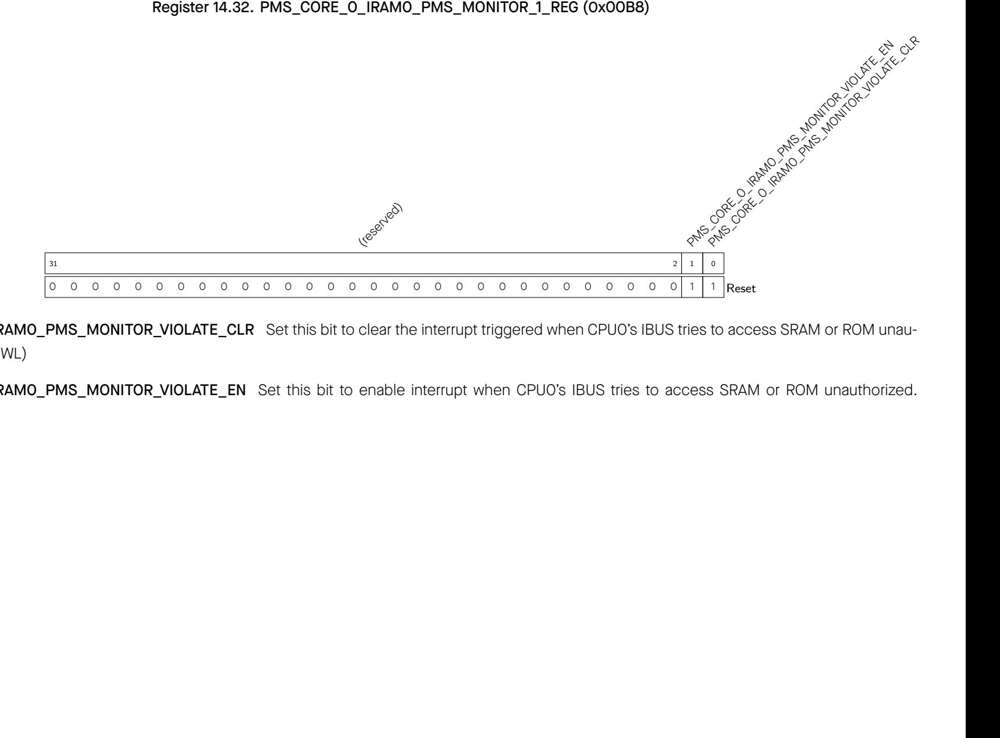
PMS_CORE_0_IRAM0_PMS_MONITOR_VIOLATE_CLR Set this bit to clear the interrupt triggered when CPU0's IBUS tries to access SRAM or ROM unauthorized. (R/WL)
PMS_CORE_0_IRAM0_PMS_MONITOR_VIOLATE_EN Set this bit to enable interrupt when CPU0's IBUS tries to access SRAM or ROM unauthorized. (R/WL)
PMS_CORE_X_DRAM0_PMS_CONSTRAIN_LOCKSet this bit to lock the permission of CPU DBUS to internal SRAM. (R/WL)
Continued on the next page...
PMS_CORE_0_DRAM0_PMS_MONITOR_LOCKSet this bit to lock CPU's DBUS interrupt configuration. (R/WL)
PMS_CORE_0_PIF_PMS_CONSTRAIN_LOCKSet this bit to lock CPU permission to different peripherals. (R/WL)
PMS_CORE_0_PIF_PMS_CONSTRAIN_M_MODE_UART Configures CPU's permission to access UART 0 from the privileged environment (R/WL) PMS_CORE_0_PIF_PMS_CONSTRAIN_M_MODE_G0SPI_1 Configures CPU's permission to access SPI 1 from the privileged environment (R/WL) PMS_CORE_0_PIF_PMS_CONSTRAIN_M_MODE_G0SPI_0 Configures CPU's permission to access SPI 0 from the privileged environment (R/WL) PMS_CORE_0_PIF_PMS_CONSTRAIN_M_MODE_GPIO Configures CPU's permission to access GPIO from the privileged environment (R/WL) PMS_CORE_0_PIF_PMS_CONSTRAIN_M_MODE_RTC Configures CPU's permission to access eFuse Controller & PMU from the privileged environment (R/WL)
PMS_CORE_0_PIF_PMS_CONSTRAIN_M_MODE_IO_MUXConfigures CPU's permission to access IO_MUX from the privileged environment (R/WL)
PMS_CORE_0_PIF_PMS_CONSTRAIN_M_MODE_UART1Configures CPU's permission to access UART 1 from the privileged environment (R/WL)
PMS_CORE_0_PIF_PMS_CONSTRAIN_M_MODE_I2C_EXT0Configures CPU's permission to access I2C 0 from the privileged environment (R/WL)
PMS_CORE_0_PIF_PMS_CONSTRAIN_M_MODE_UHCI0Configures CPU's permission to access UHCI 0 from the privileged environment (R/WL)
PMS_CORE_0_PIF_PMS_CONSTRAIN_M_MODE_SPI_2Configures CPU's permission to access SPI 2 from the privileged environment (R/WL)
PMS_CORE_0_PIF_PMS_CONSTRAIN_M_MODE_I2S1Configures CPU's permission to access I2S 1 from the privileged environment (R/WL)
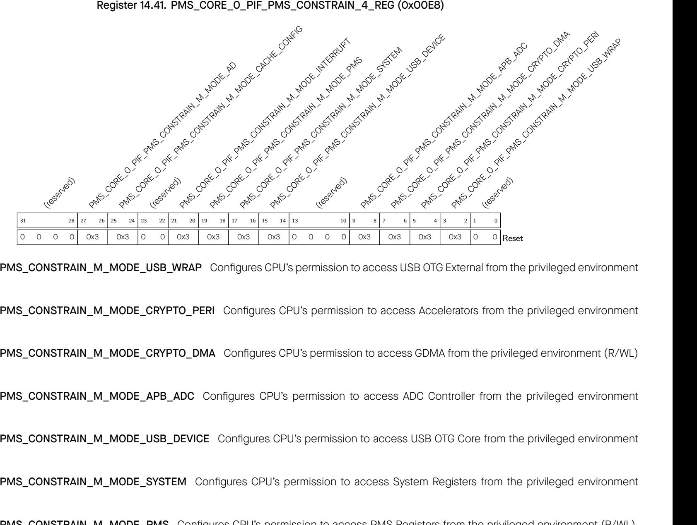
PMS_CORE_0_PIF_PMS_CONSTRAIN_M_MODE_USB_WRAP Configures CPU's permission to access USB OTG External from the privileged environment (R/WL)
PMS_CORE_0_PIF_PMS_CONSTRAIN_M_MODE_CRYPTO_PERI Configures CPU's permission to access Accelerators from the privileged environment (R/WL)
PMS_CORE_0_PIF_PMS_CONSTRAIN_M_MODE_CRYPTO_DMAConfigures CPU's permission to access GDMA from the privileged environment (R/WL)
PMS_CORE_0_PIF_PMS_CONSTRAIN_U_MODE_UART Configures CPU's permission to access UART 0 from the unpriviledged environment. (R/WL) PMS_CORE_0_PIF_PMS_CONSTRAIN_U_MODE_G0SPI_1 Configures CPU's permission to access SPI 1 from the unpriviledged environment. (R/WL) PMS_CORE_0_PIF_PMS_CONSTRAIN_U_MODE_G0SPI_0 Configures CPU's permission to access SPI 0 from the unpriviledged environment. (R/WL) PMS_CORE_0_PIF_PMS_CONSTRAIN_U_MODE_GPIO Configures CPU's permission to access GPIO from the unpriviledged environment. (R/WL) PMS_CORE_0_PIF_PMS_CONSTRAIN_U_MODE_RTC Configures CPU's permission to access eFuse Controller & PMU from the unpriviledged environment. (R/WL)
PMS_CORE_0_PIF_PMS_CONSTRAIN_U_MODE_IO_MUXConfigures CPU's permission to access IO_MUX from the unpriviledged environment. (R/WL)
PMS_CORE_0_PIF_PMS_CONSTRAIN_U_MODE_UART1Configures CPU's permission to access UART 1 from the unpriviledged environment. (R/WL)
PMS_CORE_0_PIF_PMS_CONSTRAIN_U_MODE_I2C_EXT0Configures CPU's permission to access I2C 0 from the unpriviledged environment. (R/WL)
PMS_CORE_0_PIF_PMS_CONSTRAIN_U_MODE_UHCI0Configures CPU's permission to access UHCI 0 from the unpriviledged environment. (R/WL)
PMS_CORE_0_PIF_PMS_CONSTRAIN_U_MODE_SPI_2Configures CPU's permission to access SPI 2 from the unpriviledged environment. (R/WL)
PMS_CORE_0_PIF_PMS_CONSTRAIN_U_MODE_I2S1Configures CPU's permission to access I2S 1 from the unpriviledged environment. (R/WL)

PMS_REGION_PMS_CONSTRAIN_LOCKSet this bit to lock Core0's permission to peripheral regions. (R/WL)
PMS_REGION_PMS_CONSTRAIN_U_MODE_AREA_0 Configures CPU's permission to Peri Region0 from the unpriviledged environment. (R/WL) PMS_REGION_PMS_CONSTRAIN_U_MODE_AREA_1 Configures CPU's permission to Peri Region1 from the unpriviledged environment. (R/WL) PMS_REGION_PMS_CONSTRAIN_U_MODE_AREA_2 Configures CPU's permission to Peri Region2 from the unpriviledged environment. (R/WL) PMS_REGION_PMS_CONSTRAIN_U_MODE_AREA_3 Configures CPU's permission to Peri Region3 from the unpriviledged environment. (R/WL) PMS_REGION_PMS_CONSTRAIN_U_MODE_AREA_4 Configures CPU's permission to Peri Region4 from the unpriviledged environment. (R/WL) PMS_REGION_PMS_CONSTRAIN_U_MODE_AREA_5 Configures CPU's permission to Peri Region5 from the unpriviledged environment. (R/WL) PMS_REGION_PMS_CONSTRAIN_U_MODE_AREA_6Configures CPU's permission to Peri Region6 from the unpriviledged environment. (R/WL)
PMS_REGION_PMS_CONSTRAIN_ADDR_0Configures the starting address of Region0 for CPU0. (R/WL)
Register 14.52. PMS_REGION_PMS_CONSTRAIN_4_REG (0x0114)
PMS_REGION_PMS_CONSTRAIN_ADDR_1Configures the starting address of Region1 for CPU0. (R/WL)
PMS_REGION_PMS_CONSTRAIN_ADDR_2Configures the starting address of Region2 for CPU0. (R/WL)
Register 14.54. PMS_REGION_PMS_CONSTRAIN_6_REG (0x011C)
PMS_REGION_PMS_CONSTRAIN_ADDR_3Configures the starting address of Region3 for CPU0. (R/WL)
PMS_REGION_PMS_CONSTRAIN_ADDR_4Configures the starting address of Region4 for CPU0. (R/WL)
PMS_REGION_PMS_CONSTRAIN_ADDR_5Configures the starting address of Region5 for CPU0. (R/WL)
PMS_REGION_PMS_CONSTRAIN_ADDR_6Configures the starting address of Region6 for CPU0. (R/WL)
Register 14.58. PMS_REGION_PMS_CONSTRAIN_10_REG (0x012C)

PMS_REGION_PMS_CONSTRAIN_ADDR_7Configures the starting address of Region7 for CPU0. (R/WL)
PMS_CORE_0_PIF_PMS_MONITOR_LOCKSet this bit to lock CPU's PIF interrupt configuration. (R/WL)
PMS_CORE_0_PIF_PMS_MONITOR_VIOLATE_CLR Set this bit to clear the interrupt triggered when CPU's PIF bus tries to access RTC memory or peripherals unauthorized. (R/WL)
PMS_CORE_0_PIF_PMS_MONITOR_VIOLATE_EN Set this bit to enable interrupt when CPU's PIF bus tries to access RTC memory or peripherals unauthorized. (R/WL)
PMS_DMA_APBPERI_PMS_MONITOR_VIOLATE_INTRStores unauthorized DMA access interrupt status. (RO)
PMS_DMA_APBPERI_PMS_MONITOR_VIOLATE_STATUS_ADDR Stores the address that triggered the unauthorized DMA address. Note that this is an offset to 0x3c000000 and the unit is 16, which means the actual address should be 0x3c000000 + PMS_DMA_APBPERI_PMS_MONITOR_VIOLATE_STATUS_ADDR * 16. (RO)
PMS_DMA_APBPERI_PMS_MONITOR_VIOLATE_STATUS_WR Store the direction of unauthorized GDMA access. 1: write, 0: read. (RO) PMS_DMA_APBPERI_PMS_MONITOR_VIOLATE_STATUS_BYTEENStores the byte information of unauthorized GDMA access. (RO)
PMS_CORE_0_IRAM0_PMS_MONITOR_VIOLATE_INTRStores the interrupt status of CPU's unauthorized IBUS access. (RO)
PMS_CORE_0_IRAM0_PMS_MONITOR_VIOLATE_STATUS_WR Indicates the access direction. 1: write, 0: read. Note that this field is only valid when PMS_CORE_0_IRAM0_PMS_MONITOR_VIOLATE_STATUS_LOADSTORE is 1. (RO)
PMS_CORE_0_IRAM0_PMS_MONITOR_VIOLATE_STATUS_LOADSTOREIndicates the instruction direction. 1: load/store, 0: instruction execution. (RO)
PMS_CORE_0_DRAM0_PMS_MONITOR_VIOLATE_INTRStores the interrupt status of dBUS unauthorized access. (RO)
PMS_CORE_0_DRAM0_PMS_MONITOR_VIOLATE_STATUS_WR Stores the direction of unauthorized access. 0: read, 1: write. (RO) PMS_CORE_0_DRAM0_PMS_MONITOR_VIOLATE_STATUS_BYTEENStores the byte information of illegal access. (RO)
PMS_CORE_0_PIF_PMS_MONITOR_VIOLATE_INTRStores the interrupt status of PIF bus unauthorized access. (RO)
PMS_CORE_0_PIF_PMS_MONITOR_VIOLATE_STATUS_HPORT_0Stores the type of unauthorized access. 0: instruction. 1: data. (RO)
PMS_CORE_0_PIF_PMS_MONITOR_VIOLATE_STATUS_HSIZEStores the data type of unauthorized access. 0: byte. 1: half-word. 2: word. (RO)
PMS_CORE_0_PIF_PMS_MONITOR_VIOLATE_STATUS_HWRITEStores the direction of unauthorized access. 0: read. 1: write. (RO)
PMS_CORE_0_PIF_PMS_MONITOR_VIOLATE_STATUS_HWORLD Stores the privileged mode the CPU was in when the unauthorized access happened. 01: privileged environment 10: unpriviledged environment. (RO)
PMS_CORE_0_PIF_PMS_MONITOR_VIOLATE_STATUS_HADDRStores the address that CPU's PIF bus was trying to access unauthorized. (RO)
PMS_CORE_0_PIF_PMS_MONITOR_NONWORD_VIOLATE_INTRStores the interrupt status of PIF upsupported data type. (RO)
PMS_CORE_0_PIF_PMS_MONITOR_NONWORD_VIOLATE_STATUS_HSIZEStores the data type when the unauthorized access happened. (RO)
PMS_CORE_0_PIF_PMS_MONITOR_NONWORD_VIOLATE_STATUS_HWORLD Stores the privileged mode the CPU was in when the unauthorized access happened. 01: privileged environment 10: unpriviledged environment. (RO)

PMS_CORE_0_PIF_PMS_MONITOR_NONWORD_VIOLATE_STATUS_HADDR Stores the address that CPU's PIF bus was trying to access using unsupported data type. (RO)

PMS_CLK_ENSet this bit to force the clock gating always on. (R/W)
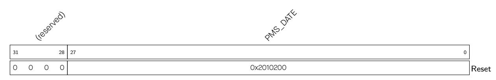
SYSCON_FLASH_ACE n _ATTR Configures the permission to Region n of Flash. (R/W)
SYSCON_FLASH_ACE0_ADDR_S Configure the starting address of Flash Region n . The size of each region should be aligned to 64 KB. (R/W)
SYSCON_FLASH_ACE n _SIZE Configure the length of Flash Region n . The size of each region should be aligned to 64 KB. (R/W)
SYSCON_SPI_MEM_REJECT_INTIndicates exception accessing external memory and triggers an interrupt. (RO)
SYSCON_SPI_MEM_REJECT_CLRSet this bit to clear the exception status. (WT)
SYSCON_SPI_MEM_REJECT_CDE Stores the exception cause: invalid region, overlapping regions, illegal write, illegal read and illegal instruction execution. (RO)
SYSCON_SPI_MEM_REJECT_ADDRStore the execption address.(RO)
EXTMEM_IBUS_PMS_LOCKSet this bit to lock IBUS' access to Cache IBUS regions. (R/W)
EXTMEM_IBUS_PMS_BOUNDARY0Configures the starting address of Cache IBUS Region1. (R/W)
Register 14.81. EXTMEM_IBUS_PMS_TBL_BOUNDARY1_REG (0x00E0)
EXTMEM_IBUS_PMS_BOUNDARY1Configures the starting address of Cache IBUS Region2.(R/W)
EXTMEM_IBUS_PMS_BOUNDARY2Configures the starting address of Cache IBUS Region3. (R/W)

EXTMEM_DBUS_PMS_BOUNDARY1Configures the starting address of Cache DBUS Region2. (R/W)
EXTMEM_DBUS_PMS_BOUNDARY2Configures the starting address of Cache DBUS Region3. (R/W)
ESP32-C3 allows users to allocate its hardware and software resources into Secure World (World0) and Non-secure World (World1), thus protecting resources from unauthorized access (read or write), and from malicious attacks such as malware, hardware-based monitoring, hardware-level intervention, and so on. CPUs can switch between Secure World and Non-secure World with the help of the World Controller.
By default, all resources in ESP32-C3 are shareable. Users can allocate the resources into two worlds by managing respective permission (For details, please refer to Chapter 14 Permission Control (PMS) ). This chapter only introduces the World Controller and how CPUs can switch between worlds with the help of World Controller.
ESP32-C3's World Controller:
With the help of World Controller, we can allocate different resources to the Secure World and the Non-secure World:
ESP32-C3's CPU and slave devices are both configurable with permission to either Secure World and/or Non-Secure World:
• CPU can be in either world at a particular time:
For details, please refer to Chapter 14 Permission Control (PMS) .
* World Controller itself is a peripheral, me aning it also can be granted with Secure World access and/or Non-secure World access, just like all other peripherals. However, to secure the world switch mechanism, World Controller should not be accessible from Non-secure world. Therefore, world controller should not be granted with Non-secure World access, preventing any modification to world controller from the Non-secure World.
In this way, the resources in the Secure World will not be illegally accessible by the Non-secure World in an unauthorized way.
Note that the following CPU interrupt-related CSR registers can only be written to in the Secure World, and can only be read but not written to in the Non-secure World, thus ensuring that interrupts can only be controlled by the Secure World.
|
Name
Description Address Access |
|||||
|---|---|---|---|---|---|
| Machine Trap Setup CSRs | |||||
| mstatus | Machine Mode Status | 0x300 | R/W | ||
|
mtvec
Machine Trap Vector 0x305 R/W |
|||||
| Machine Trap Handling CSRs | |||||
|
mscratch
mepc |
Machine Scratch
Machine Trap Program Counter |
0x340
0x341 |
R/W
R/W |
||
| mcause | Machine Trap Cause | 0x342 | R/W | ||
| mtval | Machine Trap Value | 0x343 | R/W | ||
CPU can switch from Secure World to Non-secure World, and from Non-secure World to Secure World.
Figure 15.4-1. Switching From Secure World to Non-secure World
ESP32-C3's CPU only needs to complete the following steps to switch from Secure World to Non-secure World:
• Registers WCL_CORE m _W ORLD_PERPARE_REG and WCL_CORE_0_World_TRIGGER_ADDR_REG can be configured in any order. Register WCL_CORE_0_World_UPDATE_REG must be configured at last.
Afterwards, the World Controller keeps monitoring if CP U is executing the configured address o f the application in Non-secure World . CPU switches to the Non-secur e World once it executes the configured address, and executes the applications in the Non-secure World.
After configuration, the World Controller:
prepare it for the next world switch.
However, it's worth noting that you cannot call the application in Non-secure world immediately after configuring the World Controller. For reasons such as CPU pre-indexed addressing and pipeline, it is possible that the CPU has already executed the application in Non-secure World before the World Controller configuration is effective, meaning the CPU runs unsecured application in the Secure World.
Therefore, you need to make sure the CPU only calls applications in the Non-secure world after the World Controller configuration takes effect. This can be guaranteed by declaring the applications in the Non-secure World as "noinline".
Figure 15.4-2. Switching From Non-secure World to Secure World
CPU can only switch from Non-secure World to Secure World via Interrupts (or Exceptions). After configuring the World Controller, the CPU can switch back from Non-secure World to Secure World upon the configured Interrupt trigger.
The detailed steps to configure the World Controller to switch the CPU from Non-secure World to Secure World are described below:
Note that this register must be configured to the mtvec C SR register of the CPU. When modifying the CPU's mtvec CSR registers, this register also must be updated. For details, please refer to Chapter 1 ESP-RISC-V CPU .
Note that, once configured, register WCL_CORE_0_ENTRY_CHECK_REG is always effective till it's disabled again, meaning you don't need to configure this register every time after each world switch.
3. Configure WCL_CORE_0_MSTATUS_MIE_REG to enable updating the World Switch Log. Otherwise, this log will not be updated for world swi tches. For detailed information abou t the World Switch Log, see Section 15.5.
In actual use cases, CPU is switching between two worlds quite frequently and has to deal with nested interrupts. To be able to restore to the previous world, World Controller keeps a world switching log in a series of registers, which is called "World Switch Log Table".
ESP32-C3's World Switch Log Table consists of 32 WCL_CORE_0_STATUSTABLE n _REG( n : 0-31) registers (see Figure 15.5-1). The Entry x , is logged in WCL_CORE_0_STATUSTABLE x _REG.
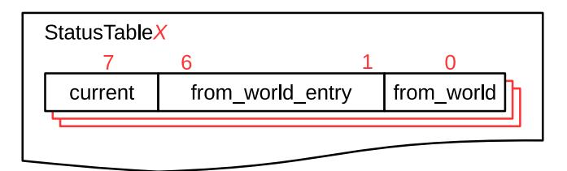
Figure 15.5-1. World Switch Log Register
To explain this process, assuming:
The World Switch Log Table is updated as described below:
1. First, an interrupt occurs at Entry 9. At this time, CPU executes to the entry address of this interrupt. The World Switch Log Table is updated as described in Figure 15.5-2:
Figure 15.5-2. Nested Interrupts Handling - Entry 9
At this time:
| entry | current | from_entry | from world | |
|---|---|---|---|---|
| C | ||||
| 9 | ||||
| C | 0 | |||
| G, | ٢, | |||
| Ŭ, | O | 0 | ||
| L | n | Γ | ||
| C | 0 | |||
| L | n | 0 | ||
| L | ٠, | |||
| 9 | 32 | |||
| !!!!!!!!!!!!!!!!!!!!!!!!!!!!!!!!!!!!!!!! | С | |||
| 3 2 | n |
Figure 15.5-3. Nested Interrupts Handling - Entry 1
At this time:
Figure 15.5-4. Nested Interrupts Handling - Entry 4
At this time:
• WCL_CORE_0_STATUSTABLE4_REG
By reading World Switch Log Registers, we get to und erstand the information of previous world switches and nested interrupts, thus being able to restore to previous world.
Steps are described below: (See Figure 15.5-4 as an example):
To support interrupt nesting, World controlle r provides additional configuration to update World Switch Log. See details in Section Programming Procedure below.
be automatically cleared to 0, and software needs to be enabled again in the interrupt/exception service routine. This register should be configured before turning on the global interrupt enable.
Steps 6 and 7 should not be interrupted by any interrupts. Therefore, users need to disable all the interrupts before these steps, and enable interrupts once done.
The addresses in this section are relative to the World Controller base address provided in Table 3.3-3 in Chapter 3 System and Memory .
The abbreviations given in Column Access are explained in Section Access Types for Registers .
| Chapter 3 System and Memory. | ||||||
|---|---|---|---|---|---|---|
| The abbreviations given in Column Access are explained in Section Access Types for Registers. | ||||||
| Name | Description | Address | Access | |||
| WORLD1 to WORLD0 Configuration Registers | ||||||
|
WCL_Core_0_MTVEC_BASE_REG
WCL_Core_0_MSTATUS_MIE_REG |
MTVEC configuration
MSTATUS_MIE configuration |
0x0000
0x0004 |
R/W
R/W |
|||
| WCL_Core_0_ENTRY_CHECK_REG | CPU entry check configuration | 0x0008 | R/W | |||
| StatusTable Registers | R/W | |||||
| WCL_Core_0_STATUSTABLEn_REG (n: 0-31) | Entry n world switching status | 0x0040 | ||||
| Represetns the entry where the | ||||||
| WCL_Core_0_STATUSTABLE_CURRENT_REG | interrupt is currently at | 0x00E0 | R/W | |||
| WORLD0 to WORLD1 Configuration Registers | ||||||
| CPU trigger address | RW | |||||
| WCL_Core_0_World_TRIGGER_ADDR_REG | configuration | 0x0140 | ||||
| WCL_Core_0_World_PREPARE_REG | CPU world switching preparation | 0x0144 | R/W | |||
| configuration | ||||||
| WCL_Core_0_World_UPDATE_REG | CPU world switching update | 0x0148 | WO | |||
| configuration | ||||||
| WCL_Core_0_World_Cancel_REG | CPU world switching cancel | 0x014C | WO | |||
| configuration | R/W | |||||
| WCL_Core_0_World_IRam0_REG | CPU IBUS world info | 0x0150 | ||||
| WCL_Core_0_World_DRam0_PIF_REG | CPU DBUS and PIF bus world | 0x0154 | R/W | |||
The addresses in this section are relative to the World Controller base address provided in Table 3.3-3 in Chapter 3 System and Memory .
WCL_CORE_0_MTVEC_BASE Configures the MTVEC base address, which should be kept consistent with the MTVEC in RISC-V. (R/W)
WCL_CORE_0_MSTATUS_MIE Write 1 to enable World Switch Log Table. Only when the bit is set, the world switching is recorded in the World Switch Log Table. This bit is cleared once CPU switches from the Non-secure World to Secure World. (R/W)
WCL_CORE_0_ENTRY_CHECK Write 1 to enable CPU switching from Non-secure World to Secure world upon the monitored addresses. (R/W)
WCL_CORE_0_FROM_WORLD_ n Stores the world info before CPU entering entry n . (R/W) WCL_CORE_0_FROM_ENTRY_ n Stores the previous entry info before CPU entering entry n .(R/W) WCL_CORE_0_CURRENT_ n Represents if the interrupt is at entry n . (R/W)
WCL_CORE_0_STATUSTABLE_CURRENT Represents the entry where the interrupt is currently at. (R/W)
WCL_CORE_0_WORLD_TRIGGER_ADDR Configures the entry address at which CPU switches from Secure World to Non-secure World. (RW)
0x1: reserved 0x2: Non-secure World (R/W)
WCL_CORE_0_UPDATE Write any value to this field to indicate the completion of CPU configuration for switching from Secure World to Non-Secure World. (WO)
WCL_CORE_0_WORLD_CANCEL Write any value to this filed to cancel the CPU configuration for switching from Secure World to Non-Secure World. (WO)
WCL_CORE_0_WORLD_IRAM0 Stores the world info of CPU's instruction bus. Only used for debugging. (R/W)
WCL_CORE_0_WORLD_DRAM0_PIF Stores the world info of CPU's data bus and peripheral bus. Only used for debugging. (R/W)
WCL_CORE_0_WORLD_PHASE Represents if the CPU is ready to switch from Non-secure World to Secure World.
The ESP32-C3 integrates a large number of peripherals, and enables the control of individual peripherals to achieve optimal characteristics in performance-vs-power-consumption scenarios. Specifically, ESP32-C3 has various system configuration registers that can be used for the chip's clock management (clock gating), power management, and the configuration of peripherals and core-system modules. This chapter lists all these system registers and their functions.
ESP32-C3 system registers can be used to control the following peripheral blocks and core modules:
The following registers can be used to control ESP32-C3's internal memory:
automatically when the corresponding ROM or SRAM blocks are not accessed. Therefore, it's recommended to configure these bits to 0 to lower power consumption.
For detailed information about the controlling bits of different blocks, please see Table 16.3-1 below.
| Table 16.3-1. Memory Controlling Bit | |||||
|---|---|---|---|---|---|
| Memory | Lowest Address1 | Highest Address1 | Lowest Address2 | Highest Address2 | Controlling Bit |
| ROM 0 | 0x4000_0000 | 0x4003_FFFF | - | - | Bit0 |
| ROM 1 | 0x4004_0000 | 0x4005_FFFF | 0x3FF0_0000 | 0x3FF1_FFFF | Bit1 |
| SRAM Block 0 | 0x4037_C000 | 0x4037_FFFF | - | - | Bit0 |
| SRAM Block 1 | 0x4038_0000 | 0x4039_FFFF | 0x3FC8_0000 | 0x3FC9_FFFF | Bit1 |
| SRAM Block 2 | 0x403A_0000 | 0x403B_FFFF | 0x3FCA_0000 | 0x3FCB_FFFF | Bit2 |
For more information, please refer to Chapter 3 System and Memory .
SYSTEM_EXTERNAL_DEVICE_ENCRYPT_DEC RYPT_CONTROL_REG configures encryption and decryption options of the external memory. For details, please refer to Chapter 23 External Memory Encryption and Decryption (XTS_AES) .
SYSTEM_RSA_PD_CTR L_REG controls the SRAM memory in the RSA accelerator.
• Setting the SYSTEM_RSA_MEM_PD bit to send the RSA memory into retention state. This bit has the lowest priority, meaning it can be masked by the SYSTEM_RSA_MEM_FORCE_PU field. This bit is invalid when the Digital Signatur e (DS) occupies the RSA.
Espressif System s 428
The f ollowing registers are used to set clock sources and frequency. For more information, please refer to Chapter 6 Reset and Clock .
The f ollowing registers are used for gener ating the interrupt signals (software interrupt), which then can be routed to the CPU peripheral interrupts via the interrupt matrix. To be more specific, writing 1 to any of the following registers generates an interrupt signal. Therefore, these registers can be used by software to control interrupts. The following registers correspond to the interrupt source SW_INTR_0/1/2/3. For more information, please refer to Chapter 8 Interrupt Matrix (INTERRUPT) .
The f ollowing registers are used for low-power management. For more information, please refer to Chapter 9 Low-power Management .
The f ollowing registers are used for contro lling the clock gating and reset of different peripherals. Details can be seen in Table 16.3-2.
ESP3 2-C3 features low power consu mption. This is why some peripheral clocks are gated (disabled) by default. Before using any of these peripherals, it is mandatory to enable the clock for the given peripheral and relea se the peripheral from reset stat e. For details, see the table below:
| Table 16.3-2. Clock Gating and Reset Bits | ||
|---|---|---|
| Component | Clock Enabling Bit 1 | Reset Controlling Bit 2 3 |
| CACHE Control | SYSTEM_CACHE_CONTROL_REG | |
| DCACHE | SYSTEM_DCACHE_CLK_ON | SYSTEM_DCACHE_RESET |
| ICACHE | SYSTEM_ICACHE_CLK_ON | SYSTEM_ICACHE_RESET |
| CPU | SYSTEM_CPU_PERI_CLK_EN_REG | SYSTEM_CPU_PERI_RST_EN_REG |
| DEBUG_ASSIST | SYSTEM_CLK_EN_ASSIST_DEBUG | SYSTEM_RST_EN_ASSIST_DEBUG |
| Peripherals | SYSTEM_PERIP_CLK_EN0_REG | SYSTEM_PERIP_RST_EN0_REG |
| TIMER | SYSTEM_TIMERS_CLK_EN | SYSTEM_TIMERS_RST |
| SPI0 / SPI1 | SYSTEM_SPI01_CLK_EN | SYSTEM_SPI01_RST |
| UART0 | SYSTEM_UART_CLK_EN | SYSTEM_UART_RST |
| UART1 | SYSTEM_UART1_CLK_EN | SYSTEM_UART1_RST |
| I2S | SYSTEM_I2S0_CLK_EN | SYSTEM_I2S0_RST |
| SPI2 | SYSTEM_SPI2_CLK_EN | SYSTEM_SPI2_RST |
| I2C0 | SYSTEM_EXT0_CLK_EN | SYSTEM_EXT0_RST |
| UHCI0 | SYSTEM_UHCI0_CLK_EN | SYSTEM_UHCI0_RST |
| RMT | SYSTEM_RMT_CLK_EN | SYSTEM_RMT_RST |
|
LED PWM Controller
Timer Group0 |
SYSTEM_LEDC_CLK_EN
SYSTEM_TIMERGROUP_CLK_EN |
SYSTEM_LEDC_RST
SYSTEM_TIMERGROUP_RST |
| Timer Group1 | SYSTEM_TIMERGROUP1_CLK_EN | SYSTEM_TIMERGROUP1_RST |
| TWAI Controller | SYSTEM_CAN_CLK_EN | SYSTEM_CAN_RST |
| USB_DEVICE | SYSTEM_USB_DEVICE_CLK_EN | SYSTEM_USB_DEVICE_RST |
| UART MEM | SYSTEM_UART_MEM_CLK_EN 4 | SYSTEM_UART_MEM_RST |
| APB SARADC | SYSTEM_APB_SARADC_CLK_EN | SYSTEM_APB_SARADC_RST |
| ADC Controller | SYSTEM_ADC2_ARB_CLK_EN | SYSTEM_ADC2_ARB_RST |
| System Timer | SYSTEM_SYSTIMER_CLK_EN | SYSTEM_SYSTIMER_RST |
| Accelerators | SYSTEM_PERIP_CLK_EN1_REG | SYSTEM_PERIP_RST_EN1_REG |
| TSENS | SYSTEM_TSENS_CLK_EN | SYSTEM_TSENS_RST |
| DMA | SYSTEM_DMA_CLK_EN | SYSTEM_DMA_RST5 |
| HMAC | SYSTEM_CRYPTO_HMAC_CLK_EN | SYSTEM_CRYPTO_HMAC_RST 6 |
| Digital Signature | SYSTEM_CRYPTO_DS_CLK_EN | SYSTEM_CRYPTO_DS_RST 7 |
| RSA Accelerator | SYSTEM_CRYPTO_RSA_CLK_EN | SYSTEM_CRYPTO_RSA_RST |
| SHA Accelerator | SYSTEM_CRYPTO_SHA_CLK_EN | SYSTEM_CRYPTO_SHA_RST |
|
Chapter 16
System Registers (SYSREG) |
GoBack | ||
1 Set the clock enable bit to 1 to enable the clock, and to 0 to disable the clock;
2 Set the reset enabling bit to 1 to reset a peripheral, and to 0 to disable the reset.
3 Reset registers cannot be cleared by hardware. Therefore, SW reset clear is required after setting the reset registers.
4 UART memory is shared by all UART peripherals, meaning having any active UART peripherals will prevent the UART memory from entering the clock-gated state.
5 When DMA is required for periphral communications, for example, UCHI0, SPI2, I2S, AES, SHA, and ADC, DMA clock should also be enabled.
6 Resetting this bit also resets the SHA accelerator.
7 Resetting this bit also resets the AES, SHA, and RSA accelerators.
The addresses in this section are relative to the base address of system registers provided in Table 3.3-3 in Chapter 3 System and Memory .
The abbreviations given in Column Access are explained in Section Access Types for Registers .
| Chapter 3 System and Memory. | |||||||
|---|---|---|---|---|---|---|---|
| The abbreviations given in Column Access are explained in Section Access Types for Registers. | |||||||
| Name | Description | Address | Access | ||||
|
Peripheral Clock Control Registers
SYSTEM_CPU_PERI_CLK_EN_REG |
CPU peripheral clock enable register | 0x0000 | R/W | ||||
| SYSTEM_CPU_PERI_RST_EN_REG | CPU peripheral clock reset register | 0x0004 | R/W | ||||
| SYSTEM_PERIP_CLK_EN0_REG | System peripheral clock enable register 0 | 0x0010 | R/W | ||||
| SYSTEM_PERIP_CLK_EN1_REG | System peripheral clock enable register 1 | 0x0014 | R/W | ||||
| SYSTEM_PERIP_RST_EN0_REG | System peripheral clock reset register 0 | 0x0018 | R/W | ||||
| SYSTEM_PERIP_RST_EN1_REG | System peripheral clock reset register 1 | 0x001C | R/W | ||||
| SYSTEM_CACHE_CONTROL_REG | Cache clock control register | 0x0040 | R/W | ||||
| Clock Configuration Registers | |||||||
| SYSTEM_CPU_PER_CONF_REG | CPU clock configuration register | 0x0008 | R/W | ||||
| SYSTEM_SYSCLK_CONF_REG | System clock configuration register | 0x0058 | varies | ||||
| Low-power Management Registers | |||||||
| SYSTEM_BT_LPCK_DIV_FRAC_REG | Low-power clock configuration register 1 | 0x0024 | R/W | ||||
| SYSTEM_RTC_FASTMEM_CONFIG_REG | Fast memory CRC configuration register | 0x0048 | varies | ||||
| SYSTEM_RTC_FASTMEM_CRC_REG | Fast memory CRC result register | 0x004C | RO | ||||
| CPU Interrupt Control Registers | |||||||
| SYSTEM_CPU_INTR_FROM_CPU_0_REG | CPU interrupt control register 0 | 0x0028 | R/W | ||||
| SYSTEM_CPU_INTR_FROM_CPU_1_REG | CPU interrupt control register 1 | 0x002C | R/W | ||||
|
SYSTEM_CPU_INTR_FROM_CPU_2_REG
CPU interrupt control register 2 0x0030 R/W SYSTEM_CPU_INTR_FROM_CPU_3_REG CPU interrupt control register 3 0x0034 R/W |
|||||||
| System and Memory Control Registers | |||||||
| SYSTEM_RSA_PD_CTRL_REG | RSA memory power control register | 0x0038 | R/W | ||||
| SYSTEM_EXTERNAL_DEVICE_ENCRYPT_ | External memory encryption and decryp | 0x0044 | R/W | ||||
|
DECRYPT_CONTROL_REG
tion control register |
|||||||
| Clock Gate Control Register | |||||||
|
SYSTEM_CLOCK_GATE_REG
Clock gate control register 0x0054 R/W |
|||||||
| Date Register | |||||||
The addresses below are relative to the base address of apb control provided in Table 3.3-3 in Chapter 3 S ystem and Memory .
The abbreviations given in Column Access are explained in Section Access Types for Registers .
|
Name
Configuration Register |
Description | Address | Access |
|---|---|---|---|
| SYSCON_CLKGATE_FORCE_ON_REG | Internal memory clock gate enable register | 0x00A4 | R/W |
| SYSCON_MEM_POWER_DOWN_REG | Internal memory control register | 0x00A8 | R/W |
|
Chapter 16
System Registers (SYSREG) |
GoBack |
The addresses below are relative to the base address of system register provided in Table 3.3-3 in Chapter 3 System and Memory .
Register 16.1. SYSTEM_CPU_PERI_CLK_EN_REG (0x0000)
SYSTEM_CLK_EN_ASSIST_DEBUG Set this bit to enable the ASSIST_DEBUG clock. Please see Chapter 17 Debug Assistant (ASSIST_DEBUG) for more information about ASSIST_DEBUG. (R/W)
SYSTEM_RST_EN_ASSIST_DEBUG Set this bit to reset the ASSIST_DEBUG clock. Please see Chapter 17 Debug Assistant (ASSIST_DEBUG) for more information about ASSIST_DEBUG. (R/W)
SYSTEM_TIMERS_CLK_EN Set this bit to enable TIMERS clock. (R/W) SYSTEM_SPI01_CLK_EN Set this bit to enable SPI0 / SPI1 clock. (R/W) SYSTEM_UART_CLK_EN Set this bit to enable UART clock. (R/W) SYSTEM_UART1_CLK_EN Set this bit to enable UART1 clock. (R/W) SYSTEM_SPI2_CLK_EN Set this bit to enable SPI2 clock. (R/W) SYSTEM_EXT0_CLK_EN Set this bit to enable I2C_EXT0 clock. (R/W) SYSTEM_UHCI0_CLK_EN Set this bit to enable UHCI0 clock. (R/W) SYSTEM_RMT_CLK_EN Set this bit to enable RMT clock. (R/W) SYSTEM_LEDC_CLK_EN Set this bit to enable LEDC clock. (R/W) SYSTEM_TIMERGROUP_CLK_EN Set this bit to enable TIMER GROUP clock. (R/W) SYSTEM_TIMERGROUP1_CLK_EN Set this bit to enable TIMERGROUP1 clock. (R/W) SYSTEM_CAN_CLK_EN Set this bit to enable TWAI clock. (R/W) SYSTEM_I2S0_CLK_EN Set this bit to enable I2S clock. (R/W) SYSTEM_USB_DEVICE_CLK_EN Set this bit to enable USB DEVICE clock. (R/W) SYSTEM_UART_MEM_CLK_EN Set this bit to enable UART_MEM clock. (R/W) SYSTEM_SPI3_DMA_CLK_EN Set this bit to enable SPI3 DMA clock. (R/W) SYSTEM_APB_SARADC_CLK_EN Set this bit to enable APB_SARADC clock. (R/W) SYSTEM_SYSTIMER_CLK_EN Set this bit to enable SYSTEMTIMER clock. (R/W) SYSTEM_ADC2_ARB_CLK_EN Set this bit to enable ADC2_ARB clock. (R/W)
SYSTEM_CRYPTO_AES_CLK_EN Set this bit to enable AES clock. (R/W) SYSTEM_CRYPTO_SHA_CLK_EN Set this bit to enable SHA clock. (R/W) SYSTEM_CRYPTO_RSA_CLK_EN Set this bit to enable RSA clock. (R/W) SYSTEM_CRYPTO_DS_CLK_EN Set this bit to enable DS clock. (R/W) SYSTEM_CRYPTO_HMAC_CLK_EN Set this bit to enable HMAC clock. (R/W) SYSTEM_DMA_CLK_EN Set this bit to enable DMA clock. (R/W) SYSTEM_TSENS_CLK_EN Set this bit to enable TSENS clock. (R/W)
SYSTEM_TIMERS_RST Set this bit to reset TIMERS. (R/W) SYSTEM_SPI01_RST Set this bit to reset SPI0 / SPI1. (R/W) SYSTEM_UART_RST Set this bit to reset UART. (R/W) SYSTEM_UART1_RST Set this bit to reset UART1. (R/W) SYSTEM_SPI2_RST Set this bit to reset SPI2. (R/W) SYSTEM_EXT0_RST Set this bit to reset I2C_EXT0. (R/W) SYSTEM_UHCI0_RST Set this bit to reset UHCI0. (R/W) SYSTEM_RMT_RST Set this bit to reset RMT. (R/W) SYSTEM_LEDC_RST Set this bit to reset LEDC. (R/W) SYSTEM_TIMERGROUP_RST Set this bit to reset TIMERGROUP. (R/W) SYSTEM_TIMERGROUP1_RST Set this bit to reset TIMERGROUP1. (R/W) SYSTEM_CAN_RST Set this bit to reset CAN. (R/W) SYSTEM_I2S0_RST Set this bit to reset I2S. (R/W) SYSTEM_USB_DEVICE_RST Set this bit to reset USB DEVICE. (R/W) SYSTEM_UART_MEM_RST Set this bit to reset UART_MEM. (R/W) SYSTEM_SPI3_DMA_RST Set this bit to reset SPI3. (R/W) SYSTEM_APB_SARADC_RST Set this bit to reset APB_SARADC. (R/W) SYSTEM_SYSTIMER_RST Set this bit to reset SYSTIMER. (R/W) SYSTEM_ADC2_ARB_RST Set this bit to reset ADC2_ARB. (R/W)
Register 16.7. SYSTEM_CACHE_CONTROL_REG (0x0040)
SYSTEM_ICACHE_CLK_ON Set this bit to enable i-cache clock. (R/W) SYSTEM_ICACHE_RESET Set this bit to reset i-cache. (R/W) SYSTEM_DCACHE_CLK_ON Set this bit to enable d-cache clock. (R/W) SYSTEM_DCACHE_RESET Set this bit to reset d-cache. (R/W)
Register 16.9. SYSTEM_BT_LPCK_DIV_FRAC_REG (0x0024)
SYSTEM_LPCLK_SEL_XTAL Set this bit to select XTAL clock as the low-power clock. (R/W)
SYSTEM_LPCLK_SEL_XTAL32K Set this bit to select xtal32k clock as the low-power clock. (R/W)
SYSTEM_LPCLK_RTC_EN Set this bit to enable the LOW_POWER_CLK clock. (R/W)
SYSTEM_PRE_DIV_CNT This field is used to set the count of prescaler of XTAL_CLK. For details, please refer to Table 6.2-3 in Chapter 6 Reset and Clock . (R/W)
SYSTEM_SOC_CLK_SEL This field is used to select SOC clock. For details, please refer to Table 6.2-1 in Chapter 6 R eset an d Clock . ( R/W)
SYSTEM_CLK_XTAL_FREQ This field is used to read XTAL frequency in MHz. (RO)
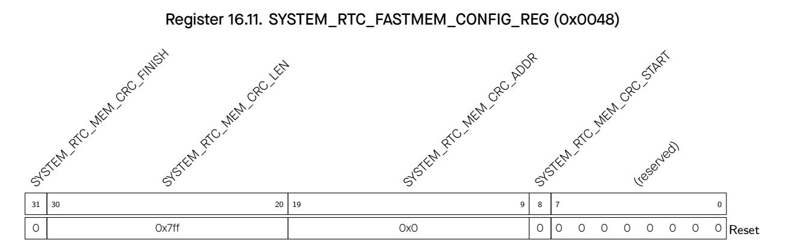
SYSTEM_RTC_MEM_CRC_START Set this bit to start the CRC of RTC memory. (R/W)
SYSTEM_RTC_MEM_CRC_ADDR This field is used to set address of RTC memory for CRC. (R/W)
SYSTEM_RTC_MEM_CRC_RES This field stores the CRC result of RTC memory. (RO)
SYSTEM_CPU_INTR_FROM_CPU_0 Set this bit to generate CPU interrupt 0. This bit needs to be reset by software in the ISR process. (R/W)
SYSTEM_CPU_INTR_FROM_CPU_1 Set this bit to generate CPU interrupt 1. This bit needs to be reset by software in the ISR process. (R/W)
SYSTEM_CPU_INTR_FROM_CPU_2 Set this bit to generate CPU interrupt 2. This bit needs to be reset by software in the ISR process. (R/W)
SYSTEM_CPU_INTR_FROM_CPU_3 Set this bit to generate CPU interrupt 3. This bit needs to be reset by software in the ISR process. (R/W)

SYSTEM_CLK_EN Set this bit to enable the system clock. (R/W)
SYSTEM_DATE Version control register. (R/W)
The addresses below are relative to the base address of apb control provided in Table 3.3-3 in Chapter 3 System and Memory .

SYSCON_ROM_POWER_DOWN Set this field to send the internal ROM into retention state. (R/W) SYSCON_SRAM_POWER_DOWN Set this field to send the internal SRAM into retention state. (R/W)
Debug Assistant is an auxiliary module that features a set of functions to help locate bugs and issues during software debugging.
The Debug Assistant module can monitor reads/writes performed by the CPU's Data bus and Peripheral bus in a certain address space, i.e., memory region. Whenever the Data bus reads or writes in the specified address space, an interrupt will be triggered. The Data bus can monitor two memory regions (assuming they are region 0 and region 1, defined by developer's needs) at the same time, so can the Peripheral bus.
The Debug Assistant module can monitor the SP so as to prevent stack overflow or erroneous push/pop. When the stack pointer exceeds the minimum or maximum threshold, Debug Assistant will record the PC pointer and generate an interrupt. The threshold is configured by software.
In some cases, software developers want to know the PC at the last CPU reset. For instance, when the program is stuck and can only be reset, the developer may want to know where the program got stuck in order to debug. The Debug Assistant module can record the PC at the last CPU reset, which can be then read for software debugging.
The Debug Assistant module can record the information about the CPU Data bus's and DMA bus's write behaviors in real time. When a write operation occurs in or a specific value is written to a specified address space, the Debug Assistant will record the bus type, PC, and the address, and then store the data in the SRAM in a certain format.
The Debug Assistant module can monitor reads and writes performed by the CPU's Data bus and Peripheral bus. Two memory regions on each bus can be monitored at the same time. All the monitoring modes supported by the Debug Assistant module are listed below:
The configuration process for region monitoring and SP monitoring is as follows:
Assuming that Debu g Assistant needs to monitor whether Data bus has written to [A ~ B] address space, the user can enabl e monitoring in either Data bus region 0 or reg ion 1. The following configuration process is based on region 0:
The CPU sends PC signals to Debug Assistant. Only when ASSIST_DEBUG_CORE_0_RCD_PDEBUGEN is 1, the PC signal is valid, otherwise, it is always 0.
Espressif Systems 448
Only when ASSIST_DEBUG_CORE_0_RCD_RECORDEN is 1, ASSIST_DEBUG_CORE_0_RCD_PDEBUGPC_REG samples the CPU's PC signals, otherwise, it keeps the original value.
The description of ASSIST_DEBUG_CORE_0_RCD_EN_REG and ASSIST_DE BUG_CORE_0_RCD_PDEBUGPC_REG can be fo und in section 17.18 and 17.19.
When the CPU resets, ASSIST_DEBUG_CORE_0_RCD_EN_REG will reset, while ASSIST_DEBUG_C ORE_0_RCD_PDEBUGPC_REG will not. Therefore, the latter will keep the PC value at the CPU reset.
The configuration process for CPU/DMA bus access logging is described below.
• In loop mode, writing to specified address space is performed in loops. When writing reaches the end address, it will return to the starting address and continue, overwriting the previously recorded data.
For example, 10 writes (1 ~ 10) write to address space 0 ~ 4. After the 5th write writes to address 4, the 6th write will start writing from address 0. The 6th to 10th writes will overwrite the previous data written by 0 ~ 4 writes.
When bus access logging is finished, the recorded data can be read from memory for decoding. The recorded data is in two packet formats, namely CPU pa cket (corresponding to CPU bus) and DMA packet (corresponding to DMA bus). The packet formats are shown in Table 17.4-1 and 17.4-2:
| Table 17.4-1. CPU Packet Format | |
|---|---|
| Table 17.4-2. DMA Packet Format | |
|---|---|
It can be seen from the data packet formats that the CPU packet size is 50 bits and DMA packet size 25 bits. The packet formats contain the following fields:
| Value | Source |
| 1 | SPI2 |
|
2
3 |
reserved
reserved |
| Value | Source |
| 5 | SHA |
| 6 | ADC |
| 7 | I2S |
| 8 | reserved |
| 9 | reserved |
| 10 | reserved |
|
11
12 |
UHCI0
reserved |
| 13 | reserved |
The packets are stored in the internal buffer first. When the buffered data reaches 125 bits, it will be expanded to 128 bits and written to the internal SRAM. The written data format is shown in Table 17.4-4.
Table 17.4-4. Written Data Format
| Table 17.4-4. Written Data Format | |
|---|---|
Since the CPU packet size is 50 bits and the DMA packet size 25 bits, the recorded data in each record is at least 25 bits and at most 75 bits. When the data stored in the internal buffer reaches 125 bits, it will be popped into memory. There are cases where a packet is divided into two portions: the first portion is written to memory, and the second portion is left in the buffer and will be popped into memory in the next write. The data left in the buffer is called residual data. The value of START_FLAG records the number of residual bits left from the last write to memory. The number of residual bits is START_FLAG * 25. START_FLAG also indicates the starting bit of the first valid packet in the current write. As an example: Assume that four DMA writes have generated four DMA packets to be stored in the buffer with a total of 100-bit data. Then, one CPU write occurs and generates one 50-bit CPU packet. The buffer will pop the previously-recorded 100-bit data plus the first 25 bits in the CPU packet into SRAM. The remaining 25 bits in the CPU packet is left in the buffer, waiting for the next write. START_FLAG in the next write will indicate that 25 bits in this write is from the last write.
In loop writing mode, if data is looped several times in the storage memory, the residual data will interfere with packet parsing. Therefore, users need to filter out the residual data in order to determine the starting position of the first valid packet with START_FLAG and ASSIST_DEBUG_LOG_MEM_CURRENT_ADDR_REG. Once the starting position of the packet is identified, the subsequent data is continuous and users do not need to care about the value of START_FLAG.
Note that if data in the buffer does not reach 125 bits, it will not be written to memory. All data sh ould be written to memory for packet parsing. This can be done by disabling bus access logging. When ASSIST_DEBUG_LOG_ENA is set to 0, if there is data in the buffer, it will be padded with zeros from the left until it becomes 128 bits long and written to the memory.
The process of packet parsing is described below:
• Determine whether t here is a data overflow with ASSIST_DEBUG_LOG_MEM_FULL_FLAG. If there is no overflow, ASSIST_DEBUG_LOG_MEM_START_REG is the starting address of the first packet. If there is an
overflow and loop mode is enabled, ASSIST_DEBUG_LOG_MEM_CURRENT_ADDR_REG is the starting address of the first packet.
Note that START_FLAG is only used to locate the starting bit of the first packet. Once the starting bit is located, START_FLAG should be filtered out in the subsequent data.
After packet parsing is completed, clear the ASSIST_DEBUG_LOG_MEM_FULL_FLAG flag bit by setting ASSIST_DEBUG_CLR_LOG_MEM_FULL_FLAG.
The addresses in this section are relative to Debug Assistant base address provided in Table 3.3-3 in Chapter 3 System and Memory .
The abbreviations given in Column Access are explained in Section Access Types for Registers .
| System and Memory. | |||
|---|---|---|---|
| The abbreviations given in Column Access are explained in Section Access Types for Registers. | |||
| Name | Description | Address | Access |
| Monitor configuration registers | |||
| ASSIST_DEBUG_CORE_0_MONTR_ENA_REG |
Monitoring enable register
Configures boundary ad |
0x0000 | R/W |
| ASSIST_DEBUG_CORE_0_AREA_DRAM0_0_MIN_REG | dress of region 0 moni | 0x0010 | R/W |
| tored on Data bus | |||
| Configures boundary ad | |||
| ASSIST_DEBUG_CORE_0_AREA_DRAM0_0_MAX_REG | dress of region 0 moni | 0x0014 | R/W |
| tored on Data bus | |||
| Configures boundary ad | |||
| ASSIST_DEBUG_CORE_0_AREA_DRAM0_1_MIN_REG |
dress
of region 1 moni |
0x0018 | R/W |
| tored on Data bus | |||
| Configures boundary ad | |||
| ASSIST_DEBUG_CORE_0_AREA_DRAM0_1_MAX_REG |
dress
of region 1 moni |
0x001C | R/W |
| tored on Data bus | |||
| ASSIST_DEBUG_CORE_0_AREA_PIF_0_MIN_REG |
Configures boundary ad
dress of region 0 moni |
0x0020 | R/W |
| tored on Peripheral bus | |||
| Configures boundary ad | |||
| ASSIST_DEBUG_CORE_0_AREA_PIF_0_MAX_REG | dress of region 0 moni | 0x0024 | R/W |
| tored on Peripheral bus | |||
| Configures boundary ad | |||
| ASSIST_DEBUG_CORE_0_AREA_PIF_1_MIN_REG |
dress
of region 1 moni |
0x0028 | R/W |
| tored on Peripheral bus | |||
| Configures boundary ad | |||
| ASSIST_DEBUG_CORE_0_AREA_PIF_1_MAX_REG |
dress
of region 1 moni |
0x002C | R/W |
| tored on Peripheral bus | |||
| ASSIST_DEBUG_CORE_0_AREA_PC_REG | Region monitoring PC sta | 0x0030 | RO |
| tus register | |||
| ASSIST_DEBUG_CORE_0_AREA_SP_REG |
Region monitoring SP sta
tus register |
0x0034 | RO |
| Configures stack monitor | |||
| ASSIST_DEBUG_CORE_0_SP_MIN_REG | ing boundary address | 0x0038 | R/W |
| Configures stack monitor | |||
| ASSIST_DEBUG_CORE_0_SP_MAX_REG | ing boundary address | 0x003C | R/W |
| Stack monitoring PC sta | |||
| ASSIST_DEBUG_CORE_0_SP_PC_REG | tus register | 0x0040 | RO |
| Interrupt configuration registers | |||
| ASSIST_DEBUG_CORE_0_INTR_RAW_REG | Interrupt status register | 0x0004 | RO |
|
Chapter 17
Debug Assistant (ASSIST_DEBUG) |
GoBack | ||
| Name | Description | Address | Access |
| ASSIST_DEBUG_CORE_0_INTR_ENA_REG | Interrupt enable register | 0x0008 | R/W |
| ASSIST_DEBUG_CORE_0_INTR_CLR_REG | Interrupt clear register | 0x000C | R/W |
| PC logging configuration register | |||
| ASSIST_DEBUG_CORE_0_RCD_EN_REG | PC logging enable register | 0x0044 | R/W |
| PC logging status registers | |||
|
ASSIST_DEBUG_CORE_0_RCD_PDEBUGPC_REG
ASSIST_DEBUG_CORE_0_RCD_PDEBUGSP_REG Bus access logging configuration registers |
PC logging register
PC logging register |
0x0048
0x004C |
RO
RO |
| ASSIST_DEBUG_LOG_SETTING_REG |
Bus access logging con
figuration register Configures monitored |
0x0070 | R/W |
| ASSIST_DEBUG_LOG_DATA_0_REG |
data in Bus access log
ging |
0x0074 | R/W |
| ASSIST_DEBUG_LOG_DATA_MASK_REG |
Configures masked data in
Bus access logging Configures monitored ad |
0x0078 | R/W |
| ASSIST_DEBUG_LOG_MIN_REG |
dress
space in Bus ac cess logging Configures monitored ad |
0x007C | R/W |
| ASSIST_DEBUG_LOG_MAX_REG |
dress
space in Bus ac cess logging Configures the starting |
0x0080 | R/W |
|
ASSIST_DEBUG_LOG_MEM_START_REG
ASSIST_DEBUG_LOG_MEM_END_REG |
address
of the storage memory for recorded data Configures the end ad dress of the storage mem |
0x0084
0x0088 |
R/W
R/W |
| ASSIST_DEBUG_LOG_MEM_CURRENT_ADDR_REG |
ory for recorded data
The current address the storage memory |
of
for 0x008C |
RO |
|
recorded data
Logging overflow status |
|||
| ASSIST_DEBUG_LOG_MEM_FULL_FLAG_REG | register | 0x0090 | varies |
|
CPU status registers
ASSIST_DEBUG_CORE_0_LASTPC_BEFORE_EXCEPTION_REG |
PC of the last command
before CPU enters excep |
0x0094 | RO |
| ASSIST_DEBUG_CORE_0_DEBUG_MODE_REG |
tion
CPU debug mode status |
0x0098 | RO |
| register | |||
| Version register | |||
The addresses in this section are relative to Debug Assistant base address provided in Table 3.3-3 in Chapter 3 System and Memory .
ASSIST_DEBUG_CORE_0_AREA_DRAM0_0_MIN The lower bound address of Data bus region 0. (R/W)
ASSIST_DEBUG_CORE_0_AREA_DRAM0_0_MAX The upper bound address of Data bus region 0. (R/W)
Register 17.4. ASSIST_DEBUG_CORE_0_AREA_DRAM0_1_MIN_REG (0x0018)
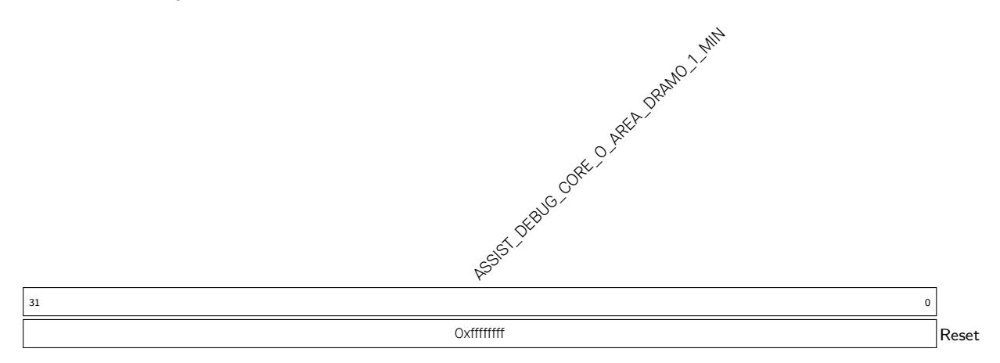
ASSIST_DEBUG_CORE_0_AREA_DRAM0_1_MIN The lower bound address of Data bus region 1. (R/W)
ASSIST_DEBUG_CORE_0_AREA_DRAM0_1_MAX The upper bound address of Data bus region 1. (R/W)
ASSIST_DEBUG_CORE_0_AREA_PIF_0_MIN The lower bound address of Peripheral bus region 0. (R/W)
ASSIST_DEBUG_CORE_0_AREA_PIF_0_MAX The upper bound address of Peripheral bus region 0. (R/W)
ASSIST_DEBUG_CORE_0_AREA_PIF_1_MIN The lower bound address of Peripheral bus region 1. (R/W)
ASSIST_DEBUG_CORE_0_AREA_PIF_1_MAX The upper bound address of Peripheral bus region 1. (R/W)
ASSIST_DEBUG_CORE_0_AREA_PC Records the PC value when interrupt triggers during region monitoring. (RO)
ASSIST_DEBUG_CORE_0_AREA_SP Records SP when interrupt triggers during region monitoring. (RO)
ASSIST_DEBUG_CORE_0_SP_PC Records the PC value during stack monitoring. (RO)
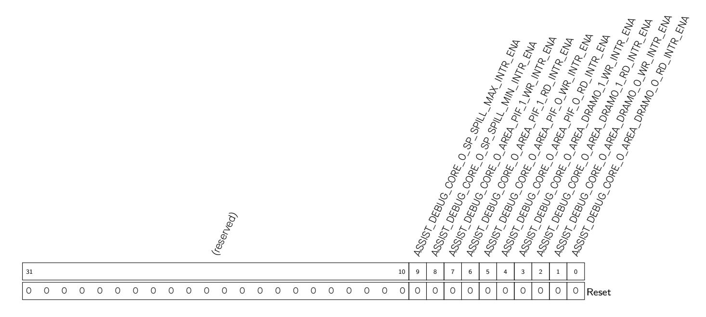
ASSIST_DEBUG_CORE_0_RCD_PDEBUGPC Records the PC value at CPU reset. (RO)
ASSIST_DEBUG_CORE_0_RCD_PDEBUGSP Records SP. (RO)
ASSIST_DEBUG_LOG_DATA_0 Specifies the monitored data. (R/W)
ASSIST_DEBUG_LOG_DATA_SIZE Masks the byte specified in ASSIST_DEBUG_LOG_DATA_0_REG. (R/W)
ASSIST_DEBUG_LOG_MIN Configures the lower bound address of monitored address space. (R/W)

ASSIST_DEBUG_LOG_MAX Configures the upper bound address of monitored address space. (R/W)
ASSIST_DEBUG_LOG_MEM_START Configures the starting address of the storage space for recorded data. (R/W)
ASSIST_DEBUG_LOG_MEM_END Configures the end address of the storage space for recorded data. (R/W)
ASSIST_DEBUG_LOG_MEM_WRITING_ADDR Indicates the address of the next write. (RO)
ASSIST_DEBUG_LOG_MEM_FULL_FLAG The value "1" means there is a data overflow that exceeds the storage space. (RO)
ASSIST_DEBUG_CLR_LOG_MEM_FULL_FLAG Set to 1 to clear AS-SIST_DEBUG_LOG_MEM_FULL_FLAG flag bit. Default value is "0". (R/W)
ASSIST_DEBUG_CORE_0_LASTPC_BEFORE_EXC Records the PC of the last command before the CPU enters exception. (RO)
ASSIST_DEBUG_CORE_0_DEBUG_MODE Indicates whether the RISC-V CPU is in debug mode. 1: in debug mode; 0: not in debug mode. (RO)
ASSIST_DEBUG_CORE_0_DEBUG_MODULE_ACTIVE Indicates the status of the RISC-V CPU debug module. 1: active status; 0: inactive status. (RO)
ASSIST_DEBUG__DATE Version control register. (R/W)
Dedicated to security features, this part explores cryptographic accelerators like SHA and AES. It also covers digital signatures, random number generation, and encryption/decryption algorithms, showcasing the SoC's capabilities in cryptography and secure data processing.
ESP32-C3 integrates an Advanced Encryption Standard (AES) Accelerator, which is a hardware device that speeds up AES Algorithm significantly, compared to AES algorithms implemented solely in software. The AES Accelerator integrated in ESP32-C3 has two working modes, which are Typical AES and DMA-AES.
The following functionality is supported:
The AES Accelerator integrated in ESP32-C3 has two working modes, which are Typical AES and DMA-AES.
In this working mode, the plaintext and ciphertext is written and read via CPU directly.
Espressif Systems 473
In thi s working mode, the plaintext and ciphertext are written and read via DMA. An interrupt will be generated when operation completes.
Users can choose the working mode for AES accelerator by configuring the AES_ DMA_ENABLE_REG register according to Table 18.3-1 below.
| Table 18.3-1. AES Accelerator Working Mode | |
| AES_DMA_ENABLE_REG | Working Mode |
Table 18.3-1. AES Accelerator Working Mod e
Users can choose the length of cryptographic keys and encryption / decryption by configuring the AES_MODE_REG register according to Table 18.3-2 below.
| Table 18.3-2. Key Length and Encryption/Decryption |
|---|
| Table 18.3-2. Key Length and Encryption/Decryption | |
|---|---|
| AES_MODE_REG[2:0] | Key Length and Encryption / Decryption |
| 0 | AES-128 encryption |
| 1 | reserved |
| 2 | AES-256 encryption |
|
3
4 |
reserved
AES-128 decryption |
| 5 | reserved |
| 6 | AES-256 decryption |
For detailed introduction on these two working modes, please refer to Section 18.4 and Section 18.5 below.
ESP32-C3's Digital Signature (DS) module will call the AES accelerator. Therefore, u sers cannot acces s the AES accelerator when Digital Signature (DS) module is working.
In the Typical AES working mode, users can check the working status of the AES accelerator by inquiring the AES_STATE_REG register and comparing the return value against the Table 18.4-1 below.
| Table 18.4-1. Working Status under Typical AES Working Mode | ||
The encryption or decryption key is stored in AES_KEY_ n _REG, which is a set of eight 32-bit registers.
The plaintext and ciphertext are stored in AES_TEXT_IN_ m _REG and AES_TEXT_OUT_ m _ REG, which are tw o sets of four 32-bit registers.
In Typical AES working mode, the AES Accelerator uses cryptographic keys to encrypt and decrypt data in blocks of 128 bits. When filling data into AES_TEXT_IN_ m _REG register or reading result from AES_TEXT_OUT_ m _REG registers, users should follow the text endianness type specified in Table 18.4-2.
| State1 | Plaintext/Ciphertext | |||||
|
2
c |
||||||
| r | 0 | 1 | 2 | 3 | ||
| 0 | AES_TEXT_x_0_REG[7:0] | AES_TEXT_x_1_REG[7:0] | AES_TEXT_x_2_REG[7:0] | AES_TEXT_x_3_REG[7:0] | ||
| 1 | AES_TEXT_x_0_REG[15:8] | AES_TEXT_x_1_REG[15:8] | AES_TEXT_x_2_REG[15:8] | AES_TEXT_x_3_REG[15:8] | ||
| 2 | AES_TEXT_x_0_REG[23:16] | AES_TEXT_x_1_REG[23:16] | AES_TEXT_x_2_REG[23:16] | AES_TEXT_x_3_REG[23:16] | ||
1 The d efinition of "State (in cluding c and r)" is descr ibed in S ection 3.4 The Stat e in NIST FIPS 197. 2 Where x = IN or OUT.
In Typical AES working mode, when filling key into AES_KEY_ m _REG registers, users should follow the key endianness type specified in Table 18.4-3 and Table 18.4-4 .
|
1
B i t w |
[
] [ 0 1 w |
]
[ ] 2 w |
2
[ ] 3 w |
|
|---|---|---|---|---|
|
[
] A 3 1: 2 4 |
E
S_ K E Y_ 0_ R E G [ ] A E 7: 0 |
S_
K E Y_ 1_ R E G [ ] A E S_ 7: 0 |
K
E Y_ 2_ R E G [ ] A E S_ K 7: 0 |
E
Y_ 3_ R E G [ ] 7: 0 |
|
[
2 3: 6 ] A 1 |
E
S_ K E Y_ 0_ R E G [ 8 ] A E 1 5: |
S_
K E Y_ 1_ R E G [ 8 ] A E S_ 1 5: |
K
E Y_ 2_ R E G [ 8 ] A E S_ K 1 5: |
E
Y_ 3_ R E G [ 8 ] 1 5: |
|
[
] 8 A 1 5: |
[
] E S_ K E Y_ 0_ R E G 2 3: 6 A E 1 |
[
] S_ K E Y_ 1_ R E G 2 3: 6 A E S_ 1 |
[
] K E Y_ 2_ R E G 2 3: 6 A E S_ K 1 |
[
] E Y_ 3_ R E G 2 3: 6 1 |
|
[
] 0 A 7: |
[
] E S_ K E Y_ 0_ R E G 3 2 A E 1: 4 |
[
] S_ K E Y_ 1_ R E G 3 2 A E S_ 1: 4 |
[
] K E Y_ 2_ R E G 3 2 A E S_ K 1: 4 |
[
] E Y_ 3_ R E G 3 2 1: 4 |
1 Column "Bit" specifies the bytes of each word stored in w[0] ~w[3].
2 w[0]~ w[3] are "the first Nk words of the expanded key" as specified in Section 5.2 Key Expansion in NIST FIPS 197 .
|
1
B i t |
0 | 1 |
2
3 |
4 | 5 | 6 |
2
7 |
|
|---|---|---|---|---|---|---|---|---|
|
[
] w w |
[
] [ w |
]
[ w |
]
[ ] w |
[
] w |
[
] w |
[
] w |
||
|
[
] 3 1: 2 4 |
AES
_K EY_ 0_ REG [ ] 7:0 |
AES
_K EY_ 1_R EG[ ] AES 7:0 |
_K
EY_ 2_ REG [ ] AES 7:0 |
_K
EY_ 3_ REG [ ] AES _K 7:0 |
EY_
4_ REG [ ] AES _K 7:0 |
EY_
5_ REG [ ] AES _K EY_ 7:0 |
6_
REG [ ] AES _K EY_ 7_R 7:0 |
EG[
] 7:0 |
|
[
] 2 3: 1 6 |
AES
_K EY_ 0_ REG [ 15:8 ] |
AES
_K EY_ 1_R EG[ 15:8 ] AES |
_K
EY_ 2_ REG [ 15:8 ] AES |
_K
EY_ 3_ REG [ 15:8 ] AES _K |
EY_
4_ REG [ 15:8 ] AES _K |
EY_
5_ REG [ 15:8 ] AES _K EY_ |
6_
REG [ 15:8 ] AES _K EY_ 7_R |
EG[
15:8 ] |
|
[
] 1 5: 8 |
AES
_K EY_ 0_ REG [ 23: 16] |
AES
_K EY_ 1_R EG[ 23: 16] AES |
_K
EY_ 2_ REG [ 23: 16] AES |
_K
EY_ 3_ REG [ 23: 16] AES _K |
EY_
4_ REG [ 23: 16] AES _K |
EY_
5_ REG [ 23: 16] AES _K EY_ |
6_
REG [ 23: 16] AES _K EY_ 7_R |
EG[
23: 16] |
1 Column "Bit" specifies the bytes of each word stored in w[0] ~w[7].
2 w[0]~w[7] are "the first Nk words of the expanded key" as specified in Chapter 5.2 Key Expansion in NIST FIPS
197 .
In consecutive operations, primarily the input AES_TEXT_IN_ m _REG and output AES_TEXT_OUT_ m _REG registers are being written and read, while the content of AES_DMA_ENABLE_REG, AES_MODE_REG, AES_KEY_ n _REG is kept unchanged. Therefore, the initialization can be simplified during the consecutive operation.
In the DMA-AES working mode, the AES accelerator supports six block cipher modes including ECB/CBC/OFB/CTR/CFB8/CFB128. Users can choose the block cipher mode by configuring the AES_BLOCK_MODE_REG register according to Table 18.5-1 below.
| AES_BLOCK_MODE_REG[2:0] | Block Cipher Mode | |
| 0 | ECB (Electronic Codebook) | |
| 1 | CBC (Cipher Block Chaining) | |
| 2 | OFB (Output Feedback) | |
| 3 | CTR (Counter) | |
| 4 | CFB8 (8-bit Cipher Feedback) | |
|
5
6 |
CFB128 (128-bit Cipher Feedback)
reserved |
|
Users can check the working status of the AES accelerator by inquiring the AES_STATE_REG register and comparing the return value against the Table 18.5-2 below.
| Table 18.5-2. Working Status under DMA-AES Working mode | ||
| AES_STATE_REG[1:0] | Status | Description |
Table 18.5-2. Working Status under DMA-AES Wor king mode
When working in the DMA-AES working mode, the AES accelerator supports interrupt on the completion of computation. To enable this function, write 1 to the AES_INT_ENA_REG register. By default, the interrupt function is disabled. Also, note that the interrupt should be cleared by software after use.
During the block operations, the AES Accelerator reads source data from DMA, and write result data to DMA after the computation.
During block operations, the lengths of the source data and result data are the same. The total computation time is reduced because the DMA data operation and AES computation can happen concurrently.
The length of source data for AES Accelerator under DMA-AES working mode must be 128 bits or the integral multiples of 128 bits. Otherwise, trailing zeros will be added to the original source data, so the length of source data equals to the nearest integral multiples of 128 bits. Please see details in Table 18.5-3 below.
| Function : TEXT-PADDING( ) | |
|---|---|
| Input | : X, bit string. |
| Output | : Y = TEXT-PADDING(X), whose length is the nearest integral multiples of 128 bits. |
| Steps | |
| Let us assume that X is a data-stream that can be split into n parts as following: | |
| X = X1||X2|| · · · ||Xn−1||Xn | |
|
Here, the lengths of X1, X2, · · · , Xn−1
all equal to 128 bits, and the length of Xn is t |
|
| (0<=t<=127). | |
| If t = 0, then | |
|
TEXT-PADDING(X) = X;
128−t If 0 < t <= 127, define a 128-bit block, X∗ , and let X∗ , then |
|
|
n = Xn||0
n 128−t |
Under the DMA-AES working mode, the transmission of source data and result data for AES Accelerator is solely controlled by DMA. Therefore, the AES Accelerator cannot control the Endianness of the source data and result data, but does have requirement on how these data should be stored in memory and on the length of the data.
For example, let us assume DMA needs to write the following data into memory at address 0x0280.
Then, this data will be stored in memory as shown in Table 18.5-4 below.
| Table 18.5-4. Text Endianness for DMA-AES | |||||||
|---|---|---|---|---|---|---|---|
| Address | Byte | Address | Byte | Address | Byte | Address | Byte |
| 0x0280 | 0x01 | 0x0281 | 0x02 | 0x0282 | 0x03 | 0x0283 | 0x04 |
| 0x0284 | 0x05 | 0x0285 | 0x06 | 0x0286 | 0x07 | 0x0287 | 0x08 |
| 0x0288 | 0x09 | 0x0289 | 0x0A | 0x028A | 0x0B | 0x028B | 0x0C |
| 0x028C | 0x0D | 0x028D | 0x0E | 0x028E | 0x0F | 0x028F | 0x10 |
| 0x0290 | 0x11 | 0x0291 | 0x12 | 0x0292 | 0x13 | 0x0293 | 0x14 |
| 0x0294 | 0x15 | 0x0295 | 0x16 | 0x0296 | 0x17 | 0x0297 | 0x18 |
Table 18.5-4. Text Endianness for DMA-AES
AES accelerator provides two Standard Incrementing Functions for the CTR block operation, which are INC 32 and INC 128 Standard Incrementing Functions. By setting the AES_INC_SEL_REG register to 0 or 1, users can choose the INC 32 or INC 128 functions respectively. For details on the Standard Incrementing Function, please see Chapter B.1 The Standard Incrementing Function in NIST SP 800-38A.
Register AES_BLOCK_NUM_REG stores the Block Num ber of plaintext P or ciphertext C . The length of this register equals to length(TEXT-PADDING( P ))/128 or length(TEXT-PADDING( C ))/128. The AES Accelerator only uses this register when working in the DMA-AES mode.
AES_IV_MEM is a 16-byte memory, which is only available for AES Accelerator working in block operations. For CBC/OFB/CFB8/CFB128 operations, the AES_IV_MEM memory stores the Initialization Vector (IV). For the CTR operation, the AES_IV_MEM memory stores the Initial Counter Block (ICB).
Both IV and ICB are 128-bit strings, which can be divided into Byte0, Byte1, Byte2 · · · Byte15 (from left to right). AES_IV_MEM stores data following the Endianness pattern presented in Table 18.5-4, i.e. the most significant (i.e., left-most) byte Byte0 is stored at the lowest address while the least significant (i.e., right-most) byte Byte15 at the highest address.
For more deta ils on IV and ICB, please refer to NIST SP 800-38A.
The addresses in this section are relative to the AES accelerator base address provided in Table 3.3-3 in Chapter 3 System and Memory .
The abbreviations given in Column Access are explained in Section Access Types for Registers .
| Name | Description | Size (byte) | Starting Address | Ending Address | Access |
|---|---|---|---|---|---|
| AES_IV_MEM | Memory IV | 16 bytes | 0x0050 | 0x005F | R/W |
The addresses in this section are relative to the AES accelerator base address provided in Table 3.3-3 in Chapter 3 System and Memory .
The abbreviations given in Column Access are explained in Section Access Types for Registers .
| Chapter 3 System and Memory. | |||
|---|---|---|---|
| The abbreviations given in Column Access are explained in Section Access Types for Registers. | |||
| Name | Description | Address | Access |
| Key Registers | |||
|
AES_KEY_0_REG
AES_KEY_1_REG |
AES key data register 0
AES key data register 1 |
0x0000
0x0004 |
R/W
R/W |
| AES_KEY_2_REG | AES key data register 2 | 0x0008 | R/W |
| AES_KEY_3_REG | AES key data register 3 | 0x000C | R/W |
| AES_KEY_4_REG | AES key data register 4 | 0x0010 | R/W |
| AES_KEY_5_REG | AES key data register 5 | 0x0014 | R/W |
| AES_KEY_6_REG | AES key data register 6 | 0x0018 | R/W |
| AES_KEY_7_REG | AES key data register 7 | 0x001C | R/W |
| TEXT_IN Registers | |||
| AES_TEXT_IN_0_REG | Source text data register 0 | 0x0020 | R/W |
| AES_TEXT_IN_1_REG | Source text data register 1 | 0x0024 | R/W |
| AES_TEXT_IN_2_REG | Source text data register 2 | 0x0028 | R/W |
| AES_TEXT_IN_3_REG | Source text data register 3 | 0x002C | R/W |
| TEXT_OUT Registers | |||
| AES_TEXT_OUT_0_REG | Result text data register 0 | 0x0030 | RO |
| AES_TEXT_OUT_1_REG | Result text data register 1 | 0x0034 | RO |
|
AES_TEXT_OUT_2_REG
AES_TEXT_OUT_3_REG |
Result text data register 2
Result text data register 3 |
0x0038
0x003C |
RO
RO |
| Configuration Registers | |||
| AES_MODE_REG | Defines key length and encryption / de | 0x0040 | R/W |
| cryption | |||
| AES_DMA_ENABLE_REG | Selects the working mode of the AES ac | 0x0090 | R/W |
| celerator | |||
| AES_BLOCK_MODE_REG | Defines the block cipher mode | 0x0094 | R/W |
| AES_BLOCK_NUM_REG | Block number configuration register | 0x0098 | R/W |
| AES_INC_SEL_REG | Standard incrementing function register | 0x009C | R/W |
| Controlling / Status Registers | |||
| AES_TRIGGER_REG | Operation start controlling register | 0x0048 | WO |
| AES_STATE_REG | Operation status register | 0x004C | RO |
| AES_DMA_EXIT_REG | Operation exit controlling register | 0x00B8 | WO |
| Interruption Registers | WO | ||
| AES_INT_CLR_REG |
DMA-AES interrupt clear register
0x00AC |
||
The addresses in this section are relative to the AES accelerator base address provided in Table 3.3-3 in Chapter 3 System and Memory .
AES_TEXT_IN_ m _REG ( m : 0-3) Stores the source text data when the AES Accelerator operates in the Typical AES working mode. (R/W)
AES_TEXT_OUT_ m _REG ( m : 0-3) Stores the result text data when the AES Accelerator operates in the Typical AES working mode. (RO)
AES_MODE Defines the key length and encryption / decryption of the AES Accelerator. For details, see Table 18.3-2. (R/W)
AES_DMA_ENABLE Defines the working mode of the AES Accelerator. 0: Typical AES, 1: DMA-AES. For details, see Table 18.3-1. (R/W)
AES_BLOCK_MODE Defines the block cipher mode of the AES Accelerator operating under the DMA-AES working mode. For details, see Table 18.5-1. (R/W)
AES_BLOCK_NUM Stores the Block Number of plaintext or ciphertext when the AES Accelerator operates under the DMA-AES working mode. For details, see Section 18.5.4. (R/W)
AES_INC_SEL Defines the Standard Incrementing Function for CTR block operation. Set this bit to 0 or 1 to choose INC 32 or INC128. (R/W)
AES_TRIGGER Set this bit to 1 to start AES operation. (WO)
AES_STATE Stores the working status of the AES Accelerator. For details, see Table 18.4-1 for Typical AES working mode and Table 18.5-2 for DMA AES working mode. (RO)
AES_DMA_EXIT Set this bit to 1 to exit AES operation. This register is only effective for DMA-AES operation. (WO)
AES_INT_CLR Set this bit to 1 to clear AES interrupt. (WO)
AES_INT_ENA Set this bit to 1 to enable AES interrupt and 0 to disable interrupt. (R/W)
The Hash-based Message Authentication Code (HMAC) module computes Message Authentication Codes (MACs) using Hash algorithm and keys as described in RFC 2104. The hash algorithm is SHA-256, the 256-bit HMAC key is stored in an eFuse key block and can be set as read-protected, i. e., the key is not accessible from outside the HMAC accelerator itself.
The HMAC module operates in two modes: upstream mode and downstream mode. In upstream mode, the HMAC message is provided by users and the calculation result is read back by them; in downstream mode, the HMAC module is used as a Key Derivation Function (KDF) for other internal hardware. For instance, the JTAG can be temporarily disabled by burning odd number bits of EFUSE_SOFT_DIS_JTAG in eFuse. In this case, users can temporarily re-enable JTAG using the HMAC module in downstream mode.
After the reset signal being released, the HMAC module will check whether the DS key exists in the eFuse. If the key exists, the HMAC module will enter downstream digital signature mode and finish the DS key calculation automatically.
Common use cases for the upstream mode are challenge-response protocols supporting HMAC-SHA-256. Assume the two entities in the challenge-response protocol are A and B respectively, and the data message they expect to exchange is M. The general process of this protocol is as follows:
Espressif Systems 486
• A compares the two results. If they are the same, then the identity of B is authenticated
To calculate the HMAC value (the following steps should be done by the user):
For details of this process, please see Section 19.2.5.
JTAG debugging can be disabled in a way whic h allow s later re-enabling using the HMAC module. The HMAC module will expect the user to supply the HMAC result for one of the eFuse keys. The HMAC module will check whether the supplied HMAC matches the one calculated from the chosen key. If both HMACs are the same, JTAG will be enabled until the user calls the HMAC module to clear the results and consequently disable JTAG again.
There are two parameters in eFuse memory to disable JTAG: EFUSE_HARD_DIS_JTAG and EFUSE_SOFT_DIS_JTAG. Write 1 to EFUSE_DIS_PAD_JTAG to disable JTAG permanently, and write odd numbers of 1 to EFUSE_SOFT_DIS_JTAG to disable JTAG temporarily. For more details, please see Chapter 4 eFuse Controller (EFUSE) . After bit EFUSE_SOFT_DIS_JTAG is set, the key to re-enable JTAG can be calculated in HMAC module's downstream mode. JTAG is re-enabled when the result configured by the user is the same as the HMAC result.
The Digital Signature (DS) module encrypts its parameters using the AES-CBC algorithm. The HMAC module is used as a Key Derivation Function (KDF) to derive the AES key to decrypt these parameters (parameter decryption key). The key used for the HMAC as KDF is stored in one of the eFuse key blocks.
Before starting the DS module, users need to obtain the parameter decryption key for the DS module through HMAC calculation. For more information, please see Chapter 22 Digital Signature (DS) . After the chip is powered on, the HMAC module will check whether the key required to calculate the parameter decryption key
has been burned in the eFuse block. If the key has been burned, HMAC module will automatically enter the downstream digital signature mode and complete the HMAC calculation based on the chosen key.
Each HMAC key burned into an eFuse block has a key purpose, also burned into the eFuse section. This purpose specifies for which functionality the key can be used. The HMAC module will not accept a key with a non-matching purpose for any functionality. The HMAC module provides three different functionalities: re-enabling JTAG and serving as DS KDF in downstream mode as well as pure HMAC calculation in upstream mode. For each functionality, there exists a corresponding key purpose, listed in Table 19.2-1. Additionally, another purpose specifies a key which may be used for re-enabling JTAG as well as for serving as DS KDF.
Before enabling HMAC to do calculations, user should make sure the key to be used ha s been burned in eFuse by reading EFUSE_KEY_PURPOSE_x (We totally have 6 keys in eFuse, so x = 0,1,2,..,5), registers from 4 eFuse Controller (EFUSE) . Take upstream as example, if there is no EFUSE_KEY_PURPOSE_HMAC_UP in EFUSE_KEY_PURPOSE_0~5, means there is no upstream used key in efuse. You can burn key to efuse as follows:
Please note that the key whose purpose is EFUSE_KEY_PURPOSE_HMAC_DOWN_ALL can be used for both re-enabling JTAG or DS.
| Table 19.2-1. HMAC Purposes and Configuration Value | |||
|---|---|---|---|
| Purpose | Mode | Value | Description |
| JTAG Re-enable | Downstream | 6 | EFUSE_KEY_PURPOSE_HMAC_DOWN_JTAG |
| DS Key Derivation | Downstream | 7 | EFUSE_KEY_PURPOSE_HMAC_DOWN_DIGITAL_SIGNATURE |
| HMAC Calculation | Upstream | 8 | EFUSE_KEY_PURPOSE_HMAC_UP |
| Both JTAG Re-enable | Downstream | 5 | EFUSE_KEY_PURPOSE_HMAC_DOWN_ALL |
Table 19.2-1. HMAC Purposes and Configuration Value
The correct purpose has to be written to register HMAC_SET_PARA_PURPOSE_REG (see Section 19.2.5). If there is no valid value in efuse purpose section, HMAC will terminate calculation.
The eFuse controller provides six key blocks, i.e., KEY0 ~ 5. To select a particular K EYn for an H MAC calculation, write the key number n to register HMAC_SET_PARA_KEY_REG.
Espressif Systems 488
Note that the purpose of the key has also been programmed to eFuse memory. Only when the configured HMAC purpose matches the defined purpose of KEYn, will the HMAC module execute the configured calculation. Otherwise, it will return a matching error and stop the current calculation. For example, suppose a user selects KEY3 for HMAC calculation, and the value programmed to KEY_PURPOSE_3 is 6 (EFUSE_KEY_PURPOSE_HMAC_DOWN_JTAG). Based on Table 19.2-1, KEY3 can be used to re-enable JTAG. If the value written to register HMAC_SET_PARA_PURPOSE_REG is also 6, then the HMAC module will start the process to re-enable JTAG.
The process to call HMAC is as follows:
The SHA accelerator can be called directly, or used internally by the DS module and the HMAC module. However, they can not share the hardware resources simultaneously. Therefore, the SHA module must not be called neither by the CPU nor by the DS module when the HMAC module is in use.
The HMAC module uses SHA-256 as hash algorithm. If the input message is not a multiple of 512 bits, the user must apply a SHA-256 padding algorithm in software. The SHA-256 padding algorithm is the same as described in Section Padding the Message of FIPS PUB 180-4. In downstream mode, users do not need to input any message or apply padding. The HMAC module uses a default 32-byte pattern of 0x00 for re-enabling JTAG and a 32-byte pattern of 0xff for deriving the AES key for the DS module.
As shown in Figure 19.3-1, suppose the length of the unpadded message is m bits. Padding steps are as follows:
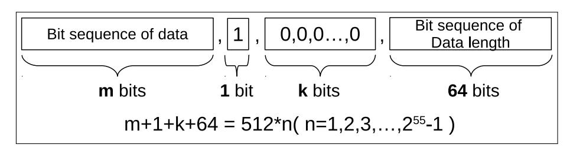
Figure 19.3-1. HMAC SHA-256 Padding Diagram
In upstream mode, if the length of the unpadded message is a multiple of 512 bits, users can configure hardware to apply SHA padding by writing 1 to HMAC_SET_MESSGAE_END_REG or do padding work themselves by writing 1 to HMAC_SET_MESSAGE_PAD_REG. If the length is not a multiple of 512 bits, SHA padding must be manually applied by the user. After the user prepared the padding data, they should complete the subsequent configuration accor ding to the Section 19.2.5.
The structure of the implemented algorithm in the HMAC module is show n in Figure 19.3-2. This is the standard HMAC algorithm as described in RFC 2104.
Figure 19.3-2. HMAC Structure Schematic Diagram
In Figure 19.3-2:
The HMAC module appends a 256-bit 0 sequence after the bit sequence of the 256-bit key k in order to get a 512-bit K0. Then, the HMAC module XORs K 0 with ipad to get the 512-bit S1. Afterwards, the HMAC module appends the input message (multiple of 512 bits) after the 512-bit S1, and exercises the SHA-256 algorithm to get the 256-bit H1.
The HMAC module appends the 256-bit SHA-256 hash result H1 to the 512-bit S2 value, which is calculated using the XOR operation of K 0 and opad. A 768-bit sequence will be generated. Then, the HMAC module uses the SHA padding algorithm described in Section 19.3.1 to pad the 768-bit sequence to a 1024-bit sequence, and applies the SHA-256 algorithm to get the final hash result (256-bit).
The addresses in this section are relative to HMAC Accelerator base address provided in Table 3.3-3 in Chapter 3 System and Memory .
The abbreviations given in Column Access are explained in Section Access Types for Registers .
| 3 System and Memory. | ||||
|---|---|---|---|---|
| The abbreviations given in Column Access are explained in Section Access Types for Registers. | ||||
|
Name
Control/Status Registers |
Description | Address | Access | |
| HMAC_SET_START_REG | HMAC start control register | 0x0040 | WO | |
| HMAC_SET_PARA_FINISH_REG | HMAC configuration completion register | 0x004C | WO | |
| HMAC_SET_MESSAGE_ONE_REG | HMAC message control register | 0x0050 | WO | |
| HMAC_SET_MESSAGE_ING_REG | HMAC message continue register | 0x0054 | WO | |
| HMAC_SET_MESSAGE_END_REG | HMAC message end register | 0x0058 | WO | |
| HMAC_SET_RESULT_FINISH_REG | HMAC result reading finish register | 0x005C | WO | |
|
HMAC_SET_INVALIDATE_JTAG_REG
HMAC_SET_INVALIDATE_DS_REG |
Invalidate JTAG result register
Invalidate digital signature result register |
0x0060
0x0064 |
WO
WO |
|
| HMAC_QUERY_ERROR_REG | Stores matching results between keys gener | 0x0068 | RO | |
| ated by users and corresponding purposes | ||||
| HMAC_QUERY_BUSY_REG | Busy state of HMAC module | 0x006C | RO | |
| configuration Registers | ||||
| HMAC_SET_PARA_PURPOSE_REG | HMAC parameter configuration register | 0x0044 | WO | |
| HMAC_SET_PARA_KEY_REG | HMAC parameters configuration register | 0x0048 | WO | |
| HMAC_SOFT_JTAG_CTRL_REG | Re-enable JTAG register 0 | 0x00F8 | WO | |
| HMAC_WR_JTAG_REG | Re-enable JTAG register 1 | 0x00FC | WO | |
|
HMAC Message Block
HMAC_WR_MESSAGE_0_REG |
Message register 0 | 0x0080 | WO | |
| HMAC_WR_MESSAGE_1_REG | Message register 1 | 0x0084 | WO | |
| HMAC_WR_MESSAGE_2_REG | Message register 2 | 0x0088 | WO | |
| HMAC_WR_MESSAGE_3_REG | Message register 3 | 0x008C | WO | |
| HMAC_WR_MESSAGE_4_REG | Message register 4 | 0x0090 | WO | |
| HMAC_WR_MESSAGE_5_REG | Message register 5 | 0x0094 | WO | |
| HMAC_WR_MESSAGE_6_REG | Message register 6 | 0x0098 | WO | |
| HMAC_WR_MESSAGE_7_REG | Message register 7 | 0x009C | WO | |
| HMAC_WR_MESSAGE_8_REG | Message register 8 | 0x00A0 | WO | |
| HMAC_WR_MESSAGE_9_REG | Message register 9 | 0x00A4 | WO | |
| HMAC_WR_MESSAGE_10_REG | Message register 10 | 0x00A8 | WO | |
| HMAC_WR_MESSAGE_11_REG | Message register 11 | 0x00AC | WO | |
| HMAC_WR_MESSAGE_12_REG | Message register 12 | 0x00B0 | WO | |
| HMAC_WR_MESSAGE_13_REG | Message register 13 | 0x00B4 | WO | |
| HMAC_WR_MESSAGE_14_REG | Message register 14 | 0x00B8 | WO | |
|
HMAC_WR_MESSAGE_15_REG
Message register 15 0x00BC WO HMAC Upstream Result |
||||
| HMAC_RD_RESULT_0_REG | Hash result register 0 | 0x00C0 | RO | |
| HMAC_RD_RESULT_1_REG | Hash result register 1 | 0x00C4 | RO | |
|
Chapter 19
HMAC Accelerator (HMAC) |
GoBack | |||
| Name | Description | Address | Access | |
| HMAC_RD_RESULT_2_REG | Hash result register 2 | 0x00C8 | RO | |
| HMAC_RD_RESULT_3_REG | Hash result register 3 | 0x00CC | RO | |
| HMAC_RD_RESULT_4_REG | Hash result register 4 | 0x00D0 | RO | |
|
HMAC_RD_RESULT_5_REG
Hash result register 5 0x00D4 RO |
||||
| HMAC_RD_RESULT_6_REG | Hash result register 6 | 0x00D8 | RO | |
| HMAC_RD_RESULT_7_REG | Hash result register 7 | 0x00DC | RO | |
|
Control/Status Registers
HMAC_SET_MESSAGE_PAD_REG Software padding register 0x00F0 WO |
||||
| HMAC_ONE_BLOCK_REG | One block message register | 0x00F4 | WO | |
The addresses in this section are relative to HMAC Accelerator base address provided in Table 3.3-3 in Chapter 3 System and Memory .
HMAC_SET_TEXT_ONE Call SHA to calculate one message block. (WO)
HMAC_SET_TEXT_ING Set this bit to show there are still some message blocks to be processed. (WO)

HMAC_SET_TEXT_END Set this bit to start hardware padding. (WO)
HMAC_SET_RESULT_END Set this bit to exit upstream mode and clear calculation results. (WO)
HMAC_SET_INVALIDATE_JTAG Set this bit to clear calculation results when re-enabling JTAG in downstream mode. (WO)
HMAC_SET_INVALIDATE_DS Set this bit to clear calculation results of the DS module in downstream mode. (WO)
HMAC_QUREY_CHECK Indicates whether an HMAC key matches the purpose.(RO)
HMAC_BUSY_STATE Indicates whether HMAC is in busy state. Before configuring HMAC, please make sure HMAC is in IDLE state. (RO)
HMAC_PURPOSE_SET Determines the HMAC purpose, refer to the Table 19.2-1. (WO)
HMAC_KEY_SET Selects HMAC key. There are six keys with index 0~5. Write the index of the selected key to this field. (WO)
HMAC_SET_ONE_BLOCK Set this bit when there is only one block which already contins padding bits. (WO)
HMAC_SOFT_JTAG_CTRL Set this bit to enable JTAG authentication mode. (WO)
HMAC_WR_JTAG Set this field to re-enable the JTAG comparing input register. (WO)
The RSA Accelerator provides hardware support for high precision computation used in various RSA asymmetric cipher algorithms by significantly reducing their software complexity. Compared with RSA algorithms implemented solely in software, this hardware accelerator can speed up RSA algorithms significantly. Besides, the RSA Accelerator also supports operands of different lengths, which provides more flexibility during the computation.
The following functionality is supported:
The RSA Accelerator is activated by setting the SYSTEM_CRYPTO_RSA_CLK_EN bit in the SYSTEM_PERIP_CLK
_EN1_REG register and clearing the SYSTEM_RSA_MEM_PD bit in the SYSTEM_RSA_PD_CTRL_REG register. This releases the RSA Accelerator from reset.
The RSA Accelerator is only available after the RSA-related memories are initialized. The content of the RSA_CLEA N
_REG register is 0 during initialization and will become 1 after the initialization is done. Therefore, it is advised to wait until RSA_CLEAN_REG becomes 1 bef ore using the RSA Acce lerator.
The RSA_INT ERRUPT_ENA_REG register is used to control the interrupt triggered on completion of comp utation. Write 1 or 0 to this register to enable or disable interrupt. By default, the interrupt function of the RSA Accele rator is enabled.
ESP32-C3's Digital Signature (DS) module also calls the RSA accelerator. Therefore, users cannot access the RSA
Large-number modular exponentiation performs Z = X Y mod M . The computation is based on Montgomery multiplication. Therefore, aside from the X , Y , and M arguments, two additional ones are needed — r and M′ , which need to be calculated in advance by software.
RSA Accelerator supports operands of length N = 32 × x , where x ∈ { 1 , 2 , 3 , . . . , 96 } . The bit lengths of arguments Z , X , Y , M , and r can be arbitrary N , but all numbers in a calculation must be of the same length. The bit length of M′ must be 32.
To represent the numbers used as operands, let us define a base- b positional notation, as follows:
Using this notation, each number is represented by a sequence of base- b digits:
\n
\n
\n
\n
\n
Each of the n values in Zn− 1 · · ·Z 0, Xn− 1 · · · X 0, Yn− 1 · · · Y 0, Mn− 1 · · · M 0, rn− 1 · · · r 0 represents one base- b digit (a 32-bit word).
Zn− 1, Xn− 1, Yn− 1, Mn− 1 and rn− 1 are the most significant bits of Z , X , Y , M , while Z 0, X 0, Y 0, M 0 and r 0 are the least significant bits.
If we define R = b n , the additional arguments can be calculated as r = R 2 mod M .
The following equation in the form compatible with the extended binary GCD algorithm can be written as:
Large-number modular exponentiation can be implemented as follows:
Espressif Systems 503
Users need to writ e data to each memory block only according to the length of the number; data beyond this length are ignored.
After the computation, the RSA_MODE_REG register, memory bloc ks RSA_Y_MEM and RSA_M_MEM, as well as the RSA_M_PRIME_REG remain unchanged. However, X i in RSA_X_MEM and r i in RSA_Z_MEM computation ar e overwritten, and only these o verwritten memory blocks need to be re-initialized before starting another computati on.
Large-number modular multiplication performs Z = X × Y mod M . This computation is based on Montgomery multiplication. Therefore, similar to the large number modular exponentiation, two additional arguments are needed – r and M′ , which need to be calculated in advance by software.
The RSA Accelerator supports large-number modular multiplication with operands of 96 different lengths.
The computation can be executed as follows:
Users need to writ e data to each memory block only according to the length of the number; data beyond this length are ignored.
7. Write 1 to RSA_CLEAR_INTERRUPT_REG to clear the interrupt, if you have enabled the interrupt function.
After the computation, the length of operands in RSA_MODE_REG, the X i in memory RSA_X_MEM, the Y i in memory RSA_Y_MEM, the M i in memory RSA_M_MEM, and the M′ in memory RSA_M_PRIME_REG remain unchanged. H owever, the r i in memory RSA_Z_MEM has already been overwritten, and only this overwritten memory block needs to be re-initialized before s tarting another co mputation.
Large-number multiplication performs Z = X × Y . The length of result Z is twice that of operand X and operand Y . Therefore, the RSA Accelerator only supports Large Number Multiplication with operand length N = 32 × x , where x ∈ { 1 , 2 , 3 , . . . , 48 } . The length N ˆ of result Z is 2 × N .
The computation can be executed as follows:
Write X i for i ∈ { 0 , 1 , . . . , n − 1 } to the address of the i words of the RSA_ X_MEM memory block. Note that Y i for i ∈ { 0 , 1 , . . . , n − 1 } will not be written to the address of the i words of the RSA_Z_MEM register, but the address of the n + i words, i.e. the base address of the RSA_Z_MEM memory plus the address offset 4 × ( n + i ).
Users need to write data to each memory block only according to the length of the n umber; data beyond this length are ignored.
After the computation, the length of operands in RSA_M ODE_REG and the X i in memory RSA_X_MEM remain unchanged. However, the Y i in memory RSA_Z_MEM has already been overwritten, and only this overwritten memory block needs to be re-initialized befor e starting another computation.
The ESP32-C3 RSA accelerator also provides SEARCH and CONSTANT_TIME options that can be configured to accelerate the large-number modular exponentiation. By default, both options are configured for no acceleration. Users can choose to use one or two of these options to accelerate the computation.
To be more specific, when neither of these t wo option s ar e configured for a cceleration, the time required to calculate Z = X Y mod M is solely determined by the lengths of operands. When either or both of these two options are configured for acceleration, the time required is also correlated with the 0/1 distribution of Y .
where,
When either of these two options is configured for acceleration:
We provide an example to demonstrate the performance of the RSA Accelerator under different combinations of SEARCH and CONSTANT_TIME configuration. Here we perform Z = X Y mod M with N = 3072 and Y = 65537. Table 20.3-1 below demonstrates the time costs under different combinations of SEARCH and CONSTANT_TIME configuration. Here, we should also mention that, α is set to 16 when the SEARCH option is en abled.
| SEARCH Option | CONSTANT_TIME Option | Time Cost (ms) |
| No acceleration | No acceleration | 752.81 |
| Accelerated | No acceleration | 4.52 |
| No acceleration | Acceleration | 2.406 |
| Table 20.3-1. Acceleration Performance |
|---|
It's obvious that:
The addresses in this section are relative to the RSA accelerator base address provided in Table 3.3-3 in Chapter 3 System and Memory .
The abbreviations given in Column Access are explained in Section Access Types for Registers .
| Table 20.4-1. RSA Accelerator Memory Blocks | |||||
| Name | Description | Size (byte) | Starting Address | Ending Address | Access |
| RSA_M_MEM | Memory M | 384 | 0x0000 | 0x017F | R/W |
The addresses in this section are relative to the RSA accelerator base address provided in Table 3.3-3 in Chapter 3 System and Memory .
The abbreviations given in Column Access are explained in Section Access Types for Registers .
| Chapter 3 System and Memory. | |||||
|---|---|---|---|---|---|
| The abbreviations given in Column Access are explained in Section Access Types for Registers. | |||||
| Name | Description | Address | Access | ||
|
Configuration Registers
RSA_M_PRIME_REG |
Register to store M' | 0x0800 | R/W | ||
| RSA_MODE_REG | RSA length mode | 0x0804 | R/W | ||
| RSA_CONSTANT_TIME_REG | The constant_time option | 0x0820 | R/W | ||
|
RSA_SEARCH_ENABLE_REG
The search option 0x0824 R/W |
|||||
| RSA_SEARCH_POS_REG | The search position | 0x0828 | R/W | ||
| Status/Control Registers | |||||
| RSA_CLEAN_REG | RSA clean register | 0x0808 | RO | ||
| RSA_MODEXP_START_REG | Modular exponentiation starting bit | 0x080C | WO | ||
| RSA_MODMULT_START_REG | Modular multiplication starting bit | 0x0810 | WO | ||
|
RSA_MULT_START_REG
Normal multiplication starting bit 0x0814 WO |
|||||
| RSA_IDLE_REG | RSA idle register | 0x0818 | RO | ||
| Interrupt Registers | |||||
|
RSA_CLEAR_INTERRUPT_REG
RSA clear interrupt register 0x081C WO |
|||||
| RSA_INTERRUPT_ENA_REG | RSA interrupt enable register | 0x082C | R/W | ||
The addresses in this section are relative to the RSA accelerator base address provided in Table 3.3-3 in Chapter 3 System and Memory .
RSA_CLEAN The content of this bit is 1 when memories complete initialization. (RO)
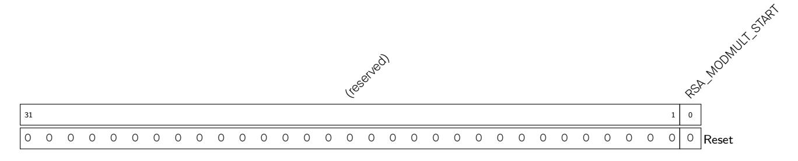
RSA_MODMULT_START Set this bit to 1 to start the modular multiplication. (WO)
Register 20.6. RSA_MULT_START_REG (0x0814)
RSA_MULT_START Set this bit to 1 to start the multiplication. (WO)
RSA_IDLE The content of this bit is 1 when the RSA accelerator is idle. (RO)
RSA_CLEAR_INTERRUPT Set this bit to 1 to clear the RSA interrupts. (WO)
RSA_CONSTANT_TIME_REG Controls the constant_time option. 0: acceleration. 1: no acceleration (by default). (R/W)
RSA_SEARCH_ENABLE Controls the search option. 0: no acceleration (by default). 1: acceleration. (R/W)
RSA_SEARCH_POS Is used to configure the starting address when the acceleration option of search is used. (R/W)
RSA_INTERRUPT_ENA Set this bit to 1 to enable the RSA interrupt. This option is enabled by default. (R/W)
RSA_DATE Version control register. (R/W)
ESP32-C3 integrates an SHA accelerator, which is a hardware device that speeds up SHA algorithm significantly, compared to SHA algorithm implemented solely in software. The SHA accelerator integrated in ESP32-C3 has two working modes, which are Typical SHA and DMA-SHA.
The following functionality is supported:
The SHA accelerator integrated in ESP32-C3 has two working modes.
Users can start the SHA accelera tor with different working modes by configuring registers SHA_START_REG and S HA_DMA_START_REG. Fo r details, please see Table 21.3-1.
| Table 21.3-1. SHA Accelerator Working Mode |
|---|
| Working Mode | Configuration Method |
|---|---|
| Typical SHA | Set SHA_START_REG to 1 |
Users can choose hash algorithms by configuring the SHA_MODE_REG register. For details, please see Table 21.3-2.
| Table 21.3-2. SHA Hash Algorithm Selection | |||
| Hash Algorithm | SHA_MODE_REG Configuration | ||
ESP32-C3's Digital Signature (DS) and HMAC Accelerator (HMAC) modules also call the SHA accelerator. Therefore, users cannot access the SHA accelerator when these modules are working.
SHA accelerator can generate the message digest via two steps: Preprocessing and Hash operation.
Preprocessing consists of three steps: padding the message, pa rsing the messa ge i nto message blo cks and setting the initial hash value.
The SHA accelerator can on ly process message blocks of 512 bits. Thus, all the messages should be padded to a multiple of 512 bits before the hash task.
Suppose that the length of the message M is m bits. Then M shall be padded as introduced below:
For more details, please refer to Section "5.1 Padding the Message" in FIPS PUB 180-4 Spec.
The message and its padding must be parsed into N 512-bit blocks, M (1) , M (2) , …, M ( N ) . Since the 512 bits of the input block may be expressed as sixteen 32-bit words, the first 32 bits of message block i are denoted M ( i ) 0 , the next 32 bits are M( i ) 1 , and so on up to M( i ) 15 .
During the task, all the message blocks are written into the SHA_M_ n _REG: M( i ) 0 is stored in SHA_M_0_REG, M ( i ) 1 stored in SHA_M_1_REG, …, and M( i ) 15 stored in SHA_M_15_REG.
For more information about "message block", please refer to Section "2.1 Glossary of Terms and Acronyms" in FIPS PUB 180-4 Spec.
Before hash task begins for any secure hash algorithms, the initial Hash value H(0) must be set based on different algorithms. However, the SHA accelerator uses the initial Hash values (constant C) stored in the hardware for hash tasks.
After the preprocessing, the ESP32-C3 SHA accelerator starts to hash a message M and generates message digest of different lengths, depending on different hash algorithms. As described above, the ESP32-C3 SHA accelerator supports two working modes, which are Typical SHA and DMA-SHA. The operation process for the SHA accelerator under two working modes is described in the following subsections.
Usually, the SHA accelerator will process all blocks of a message and produce a message digest before starting the computation of the next message digest.
However, ESP32-C3 SHA also supports optional "interleaved" message digest calculation. Users can insert new calculation (both Typical SHA and DMA-SHA) each time the SHA accelerator completes a sequence of operations.
Specifi cally, users ca n read out the message digest from registers SHA_H_ n _REG after completing part of a message digest calculation, and use the SHA accelerator for a different calculation. After the different calculat ion comple tes, users can restore the previous message digest to registers SHA_H_ n _REG, and resume the accelerator with the previously paused calculation.
As mentioned above, ESP32-C3 SHA accelerator supports "interleaving" calculation u nder the Typical SHA workin g mode .
The process to implement interleaved calculation is described below.
ESP32-C3 SHA accelerator does not support "interleaving" message digest calculation at the level of individual message blocks when using DMA, which means you cannot insert new calculation before a complete DMA-SHA process (of one or more message blocks) completes. In this case, users who need interleaved operation are recommended to divide the message blocks and perform several DMA-SHA calculations, instead of trying to compute all the messages in one go.
Single DMA-SHA calculation supports up to 63 data blocks.
In contrast to the Typical SHA working mode, when the SHA accelerator is working under the DMA-SHA mode, all data read are completed via DMA. Therefore, users are required to configure the DMA controller following the description in Chapter 2 GDMA Controller (GDMA) .
After the hash task completes, the SHA accelerator writes the mess age digest from the task to registers SHA_H_ n _REG( n : 0~7). The lengths of the generated message digest are different depending on different hash algorithms. For details, see Table 21.4-1 below:
| Table 21.4-1. The Storage and Length of Message Digest from Different Algorithms | |||||
| Hash Algorithm | Length of Message Digest (in bits) | Storage1 | |||
Table 21.4-1. The Storage and Length of Message Digest from Different Algorithms
1 The message digest is stored in registers from most significant bits to the least significant bits, with the first word stored in register SHA_H_0_REG and the second word stored in register SHA_H_1_REG... For details, please see subsection 21.4.1.2.
SHA accelerator supports interrupt on the completion of message digest calculation when working in the DMA-SHA mode. To enable this function, write 1 to register SHA_INT_ENA_REG. Note that the interrupt should be cleared by software after use via setting the SHA_INT_CLEAR_REG register to 1.
The addresses in this section are relative to the SHA accelerator base address provided in Table 3.3-3 in Chapter 3 System and Memory .
| The abbreviations given in Column Access are explained in Section Access Types for Registers. | ||||
| The abbreviations given in Column Access are explained in Section Access Types for Registers. | ||||
|---|---|---|---|---|
|
Name
Control/Status registers |
Description | Address | Access | |
| SHA_CONTINUE_REG |
Continues SHA operation (only effective in Typ
ical SHA mode) |
0x0014 | WO | |
| SHA_BUSY_REG |
Indicates if SHA Accelerator is busy or not
Starts the SHA accelerator for DMA-SHA oper |
0x0018 | RO | |
| SHA_DMA_START_REG |
ation
Starts the SHA accelerator for Typical SHA op |
0x001C | WO | |
| SHA_START_REG |
eration
Continues SHA operation (only effective |
0x0010
in |
WO | |
| SHA_DMA_CONTINUE_REG | DMA-SHA mode) | 0x0020 | WO | |
| SHA_INT_CLEAR_REG | DMA-SHA interrupt clear register | 0x0024 | WO | |
|
SHA_INT_ENA_REG
DMA-SHA interrupt enable register 0x0028 R/W |
||||
| Version Register | ||||
|
SHA_DATE_REG
Version control register 0x002C R/W |
||||
| Configuration Registers | ||||
|
SHA_MODE_REG
Defines the algorithm of SHA accelerator 0x0000 R/W |
||||
|
Data Registers
SHA_DMA_BLOCK_NUM_REG |
Block number register (only effective for DMA
SHA) |
0x000C | R/W | |
| SHA_H_0_REG | Hash value | 0x0040 | R/W | |
| SHA_H_1_REG | Hash value | 0x0044 | R/W | |
|
Chapter 21
SHA Accelerator (SHA) |
GoBack | ||
| Name | Description | Address | Access |
| SHA_H_2_REG | Hash value | 0x0048 | R/W |
| SHA_H_3_REG | Hash value | 0x004C | R/W |
| SHA_H_4_REG | Hash value | 0x0050 | R/W |
| SHA_H_5_REG | Hash value | 0x0054 | R/W |
| SHA_H_6_REG | Hash value | 0x0058 | R/W |
| SHA_H_7_REG | Hash value | 0x005C | R/W |
|
SHA_M_0_REG
SHA_M_1_REG |
Message
Message |
0x0080
0x0084 |
R/W
R/W |
| SHA_M_2_REG | Message | 0x0088 | R/W |
| SHA_M_3_REG | Message | 0x008C | R/W |
| SHA_M_4_REG | Message | 0x0090 | R/W |
| SHA_M_5_REG | Message | 0x0094 | R/W |
| SHA_M_6_REG | Message | 0x0098 | R/W |
| SHA_M_7_REG | Message | 0x009C | R/W |
| SHA_M_8_REG | Message | 0x00A0 | R/W |
| SHA_M_9_REG | Message | 0x00A4 | R/W |
| SHA_M_10_REG | Message | 0x00A8 | R/W |
| SHA_M_11_REG | Message | 0x00AC | R/W |
| SHA_M_12_REG | Message | 0x00B0 | R/W |
| SHA_M_13_REG | Message | 0x00B4 | R/W |
The addresses in this section are relative to the SHA accelerator base address provided in Table 3.3-3 in Chapter 3 System and Memory .
Register 21.1. SHA_START_REG (0x0010)
SHA_START Write 1 to start Typical SHA calculation. (WO)
SHA_CONTINUE Write 1 to continue Typical SHA calculation. (WO)
SHA_BUSY_STATE Indicates the states of SHA accelerator. (RO) 1'h0: idle 1'h1: busy
Register 21.4. SHA_DMA_START_REG (0x001C)

SHA_DMA_START Write 1 to start DMA-SHA calculation. (WO)
SHA_DMA_CONTINUE Write 1 to continue DMA-SHA calculation. (WO)
SHA_CLEAR_INTERRUPT Clears DMA-SHA interrupt. (WO)
SHA_INTERRUPT_ENA Enables DMA-SHA interrupt. (R/W)
SHA_DATE Version control register. (R/W)
SHA_DMA_BLOCK_NUM Defines the DMA-SHA block number. (R/W)
SHA_H_ n Stores the n th 32-bit piece of the Hash value. (R/W)
SHA_M_ n Stores the n th 32-bit piece of the message. (R/W)
A Digital Signature is used to verify the authenticity and integrity of a message using a cryptographic algorithm. This can be used to validate a device's identity to a server, or to check the integrity of a message.
The ESP32-C3 includes a Digital Signature (DS) module providing hardware acceleration of messages' signatures based on RSA. It uses pre-encrypted parameters to calculate a signature. The parameters are encrypted using HMAC as a key-derivation function. In turn, the HMAC uses eFuses as an input key. The whole process happens in hardware so that neither the decryption key for the RSA parameters nor the input key for the HMAC key derivation function can be seen by users while calculating the signature.
The DS peripheral calculates RSA signature as Z = X Y mod M where Z is the signature, X is the input message, and Y and M are the RSA private key parameters.
Private key parameters are stored in flash as ciphertext. They are decrypted using a key ( DS _ KEY ) which can only be calculated by the DS peripheral via the HMAC peripheral. The required inputs ( HMAC _ KEY ) to generate the key are only stored in eFuse and can only be accessed by the HMAC peripheral. That is to say, the DS peripheral hardware can decrypt the private key, and the private key in plaintext is never accessed by the software. For more detailed information about eFuse and HMAC peripherals, please refer to Chapter 4 eFuse Controller (EFUSE) and 19 HMAC Accelerator (HMAC) peripheral.
The input message X will be sent directly to the DS peripheral by the software each time a signature is needed. After the RSA signature operation, the signature Z is read back by the software.
For better understanding, we define some symbols and func tions here, which are only applicable to this chapter:
• 1 s A bit string consist of s bits with the value of "1".
Private key operands Y (private key exponent) and M (key modulus) are generated by you. They have a particular RSA key length (up to 3072 bits). Two additional private key operands are needed: r and M′ . These two operands are derived from Y and M .
Operands Y , M , r and M′ are encrypted by you along with an authentication digest and stored as a single ciphertext C . C is input to the DS peripheral in this encrypted format, decrypted by the hardware, and then used for RSA signature calculation. Detailed description of how to generate C is provided in Section 22.3.3.
The DS peripheral supports RSA signature calculation Z = X Y mod M , in which the length of operands should be N = 32 × x where x ∈ { 1 , 2 , 3 , . . . , 96 } . The bit lengths of arguments Z , X , Y , M and r should be an arbi trary value in N , and all of them in a calculation must be of the same length, while the bit length of M′ should always be 32. For more detailed information about RSA calculation, please refer to Section 20.3.1 Large Number Modular Exponentiation in Chapter 20 RSA Accelerator (RSA) .
If users want to use the DS modu le for digit al s i gnature, the software a nd hardware must work closely to implement this successfully, and the software needs to do a series of preparations, as shown in Figure 22.3-1. The left side lists preparations required by the software before the hardware starts RSA signature calculation, while the right side lists the hardware workflow during the entire calculation procedure.
Figure 22.3-1. Software Preparations and Hardware Working Process
1. The software preparation (left side in the Figure 22.3-1) is a one-time operation before any signature is calculated, while the hardware calculation (right side in the Figure 22.3-1) repeats for every signature calculation.
You need to follow the steps shown in the left par t of Figure 22.3-1 to calculate C . Detailed instructions are as follows:
The hardware operation is triggered each time a digital signature needs to be calculated. The inputs are the pre-generated private key ciphertext C , a unique message X , and IV .
The DS operation at the hardware level can be divided into the following three stages:
The decryption process is the inverse of Step 6 in figure 22.3-1. The DS module will call AES accelerator to decrypt C in CBC block mode and get the resulted plaintext. The decryption process can be represented by P = AES-CBC-DEC ( C , DS _ KEY , IV ), where IV (i.e., [ IV ]128) is defined by you. [ DS _ KEY ] 256 is provided by HMAC module, derived from HM AC _ KEY stored in eFuse. [ DS _ KEY ]256, as well as [ HMAC _ KEY ] 256 are not readable by users. For more information, please refer to Chapter 19 HMAC Accelerator (HMAC) .
With P, the DS module can derive [ Y ]3072, [ M ]3072, [ r ]3072, [ M′ ]32, [ L ]32, MD authentication code, and the padding value [ β ]64. This process is the inverse of Step 5.
The DS module will perform two checks: MD check and padding check. Padding check is not shown in Figure 22.3-1, as it happens at the same time with MD check.
The DS module will only perform subsequent operations if MD check passes. If padding check fails, a warning message is generated, but it does not affect the subsequent operations.
The DS module treats X (input by you) and Y , M , r (compiled) as big numbers. With M′ , all operands to perform X Y mod M are in place. The operand length is defined by L only. The DS module will get the signed result Z by calling RSA to per form Z = X Y mod M .
The software steps below should be followed each time a digital signature needs to be calculated. The inputs are the pre-generated private key ciphertext C , a unique message X , and IV . These software steps trigger the hardware steps described in Section 22.3.4.
We assume that the software has called the HMAC peripheral and HMAC on the hardware has calculated DS _ KEY based on HMAC _ KEY .
If the software does not read 0 in DS_QUERY_BUSY_REG after approximately 1 ms, it indicates a problem with HMAC initialization. In such a case, the software can read register DS_QUERY_KEY_WRONG_REG to get more information:
The capacity of DS_Y_MEM, DS_M_MEM, a nd DS_RB_MEM is 96 words, whereas the capacity of DS_BOX_MEM is only 12 words. Each word can store one base- b digit. The memory blocks use the little endian format for storage, i. e., the least sig nificant digit of the operand is in the lowest address.
After the o peration, all th e input/output registers and memory blocks are cleared.
The addresses in this section are relative to the Digital Signature base address provided in Table 3.3-3 in Chapter 3 System and Memory .
| The addresses in this section are relative to the Digital Signature base address provided in Table 3.3-3 in | |||||
|---|---|---|---|---|---|
| Chapter 3 System and Memory. | |||||
| Name | Description | Size (byte) | Starting Address | Ending Address | Access |
| DS_Y_MEM | Memory block Y | 384 | 0x0000 | 0x017F | WO |
|
DS_M_MEM
DS_RB_MEM |
Memory block M
Memory block r |
384
384 |
0x0200
0x0400 |
0x037F
0x057F |
WO
WO |
The addresses in this section are relative to Digital Signature base address provided in Table 3.3-3 in Chapter 3 System and Memory .
The abbreviations given in Column Access are explained in Section Access Types for Registers .
| System and Memory. | ||||
|---|---|---|---|---|
| The abbreviations given in Column Access are explained in Section Access Types for Registers. | ||||
| Name | Description | Address | Access | |
|
Configuration Registers
DS_IV_0_REG |
IV block data | 0x0630 | WO | |
| DS_IV_1_REG | IV block data | 0x0634 | WO | |
| DS_IV_2_REG | IV block data | 0x0638 | WO | |
| DS_IV_3_REG | IV block data | 0x063C | WO | |
| Status/Control Registers | ||||
| DS_SET_START_REG | Activates the DS module | 0x0E00 | WO | |
| DS_SET_ME_REG | Starts DS operation | 0x0E04 | WO | |
| DS_SET_FINISH_REG | Ends DS operation | 0x0E08 | WO | |
| DS_QUERY_BUSY_REG | Status of the DS module | 0x0E0C | RO | |
| DS_QUERY_KEY_WRONG_REG |
Checks the reason why DS_KEY
is not |
0x0E10 | RO | |
| ready | ||||
| DS_QUERY_CHECK_REG |
Queries DS check result
0x0814 |
|||
The addresses in this section are relative to Digital Signature base address provided in Table 3.3-3 in Chapter 3 System and Memory .
DS_IV_ m _REG ( m : 0-3) IV block data. (WO)
Register 22.2. DS_SET_START_REG (0x0E00)
DS_SET_START Write 1 to this register to activate the DS peripheral. (WO)
Register 22.3. DS_SET_ME_REG (0x0E04)
DS_SET_ME Write 1 to this register to start DS operation. (WO)

DS_SET_FINISH Write 1 to this register to end DS operation. (WO)
DS_QUERY_BUSY 1: The DS module is busy; 0: The DS module is idle. (RO)
Register 22.6. DS_QUERY_KEY_WRONG_REG (0x0E10)
DS_QUERY_KEY_WRONG 1-15: HMAC was activated, but the DS peripheral did not successfully receive the DS _ KEY from the HMAC peripheral. (The biggest value is 15); 0: HMAC is not called. (RO)
DS_MD_ERROR 1: The MD check fails; 0: The MD check passes. (RO)
DS_DATE Version control register. (R/W)
The ESP32-C3 integrates an External Memory Encryption and Decryption module that complies with the XTS_AES standard algorithm specified in IEEE Std 1619-2007, providing security for users' application code and data stored in the external memory (flash). Users can store proprietary firmware and sensitive data (e.g., credentials for gaining access to a private network) to the external flash.
The External Memory Encryption and Decryption module consists of two blocks, namely the Manual Encryption block and Auto Decryption block. The module architecture is shown in Figure 23.3-1.
Figure 23.3-1. Architecture of the External Memory Encryption and Decryption
The Manual Encryption block can encrypt instructions/data which will then be written to the external flash as ciphertext via SPI1.
In the System Registers (SYSREG) peripheral (see 16 System Registers (SYSREG) ), the following four bits in register SYSTEM_EXTERNAL_DEVICE_ENCRYPT_DECRYPT_CONTROL_REG are relevant to the external memory encryption and decryption:
The X TS_AES module also fetches two parameters f rom the peripheral eFuse Controller, which are: EFUSE_DIS_DOWNLOAD_MANUAL_ENCRYPT and EFUSE_SPI_BOOT_CRYPT_CNT. For detailed information, please see 4 eFuse Controller (EFUSE) .
The manual encryption and auto decryption use the XTS algorithm. During implementation, the XTS algorithm is characterized by a "data unit" of 1024 bits, defined in the Section XTS-AES encryption procedure of XTS-AES Tweakable Block Cipher Standard. For more information about XTS-AES algorithm, please refer to IEEE Std 1619-2007.
The Manual Encryption block and Auto Decryption block share the same Key when implementing XTS algorithm. The Key is provided by the eFuse hardware and cannot be accessed by users.
The Key is 256-bit long. The value of the Key is determined by the content in one eFuse block from BLOCK4 ~ BLOCK9. For easier description, we define:
• Block A : the block whose key purpose is EFUSE_KEY_PURPOSE_XTS_AES_128_KEY (please refer to Table 4.3-2 Secure Key Purpose Values ). The 256-bit Key A is stored in it.
There are two possibilities of how the Key is generated depending on whether Block A exists or not, as shown in Table 23.4-1. In each case, the Key can be uniquely determined by Block A .
| Table 23.4-1. | Key generated based on KeyA | |
| BlockA | Key | Key Length (bit) |
Table 23.4-1. Key generated based on Key A
"YES" indicates that the block exists; "NO" indicates that the block does not exist; "0 256 " indicates a bit string that consists of 256-bit zeros. Note that using 0 256 as Key is not secure. We strongly recommend to configure a valid key.
For more information of key purposes, please refer to Table 4.3-2 Secure Key Purpose Values in Chapter 4 eFuse Controller (EFUSE) .
The target memory space refers to a continuous address space in the external memory (flash) where the ciphertext is stored. The target memory space can be uniquely determined by two relevant parameters: size and base address, whose definitions are listed below.
For example, if there are 16 bytes of instruction data need to be encrypted and written to address 0x130 ~ 0x13F in the external flash, then the target space is 0x130 ~ 0x13F, size is 16 (bytes), and base address is 0x130.
The encryption of any length (must be multiples of 16 bytes) of plaintext instruction/data can be completed separately in multiple operations, and each operation has its individual target memory space and the relevant parameters.
For Auto Decryption blocks, these parameters are automatically determined by hardware. For Manual Encryption blocks, these parameters should be configured by users.
Note:
The "tweak" defined in Section Data units and tweaks of IEEE Std 1619-2007 is a 128-bit non-negative integer
For Auto Decryption blocks, data writing is automatically applied in hardware. For Manual Encryption blocks, data writing should be applied by users. The Manual Encryption block has a register block which consists of 8 registers, i.e., XTS_AES_PLAIN_ n _REG ( n : 0 ~ 7), that are dedicated to data writing and can store up to 256 bits of plaintext at a time.
Actually, the Manual Encryption block does not care where the plaintext comes from, but only where the ciphertext will be stored. Because of the strict correspondence between plaintext and ciphertext, in order to better describe how the plaintext is stored in the register block, we assume that the plaintext is stored in the target memory space in the first place and replaced by ciphertext after encryption. Therefore, the following description no longer has the concept of "plaintext", but uses "target memory space" instead. Please note that the plaintext can come from everywhere in actual use, but users should understand how the plaintext is stored in the register block.
Assume a word in the target memory space is stored in address , define offset = address %32, n = of f set 4 , then the word will be stored in register XTS_AES_PLAIN_ n _REG.
The mapping between offset and registers is shown in Table 23.4-2.
| Table 23.4-2. Mapping Between Offsets and Registers | |||
|---|---|---|---|
|
offset
0x00 |
Register
XTS_AES_PLAIN_0_REG |
offset
0x10 |
Register
XTS_AES_PLAIN_4_REG |
| 0x04 | XTS_AES_PLAIN_1_REG | 0x14 | XTS_AES_PLAIN_5_REG |
| 0x08 | XTS_AES_PLAIN_2_REG | 0x18 | XTS_AES_PLAIN_6_REG |
Table 23.4-2. Mapping Between Offsets and Registers
The Manual Encryption block is a peripheral module. It is equipped with registers and can be accessed by the CPU directly. Registers embedded in this block, the System Registers (SYSREG) peripheral, eFuse parameters, and boot mode jointly configure and use this module. Please note that the Manual Encryption block can only encrypt for storage in external flash.
The Manual Encryption block is operational only under certain conditions. The operating conditions are:
• In SPI Boot mode
If bit SYSTEM_ENABLE_SPI_MANUAL_ENCRYPT in register SYSTEM_EXTERNAL_DEVICE_ENCRYPT_DECRYPT_CONTROL_REG is 1, the Manual Encryption block can be enabled. Otherwise, it is not operational.
• In D ownload Boot mode
If bit SYSTEM_ENABLE_DOWNLOAD_MANUAL_ENCRYPT in register SYSTEM_EXTERNAL_DEVICE_ENCRYPT_DECRYPT_CONTROL_REG is 1 and the eFuse parameter EFUSE_DIS_DOWNLOAD_MANUAL_ENCRYPT is 0, the Manual Encryption block can be enabled. Othe rwise, it is not operational.
• Even though the CPU can skip cache and get the encrypted instruction/data directly by reading the external memory, users can by no means access Key .
The Auto Decryption block is not a conventional peripheral, so it does not have any registers and cannot be accessed by the CPU directly. The System Registers (SYSREG) peripheral, eFuse parameters, and boot mode jointly configure and use this block.
The Auto Decryption block is operational only under certain conditions. The operating conditions are:
• In SPI Boot mode
If the first bit or the third bit in parameter SPI_BOOT_CRYPT_CNT (3 bits) is set to 1, then the Auto Decryption block can be enabled. Otherwise, it is not operational.
• In Download Boot mode
If bit SYSTEM_ENABLE_DOWNLOAD_G0CB_DECRYPT in register SYSTEM_EXTERNAL_DEVICE_ENCRYPT_DECRYPT_CONTROL_REG is 1, the Auto Decryption block can be enabled. Otherwise, it is not operational.
Note:
When the Manual Encryption block operates, software needs to be involved in the process. The steps are as follows:
For definitions of base _ addr and size , please refer to Section 23.4.3.
Espressif Systems 538
XTS_AES_DESTROY_REG to destroy the ciphertext. After this, the value of register XTS_AES_STATE_REG will become 0.
Repeat above steps according to the amount of plaintext instructions/data that need to be encrypted.
The addresses in this section are relative to External Memory Encryption and Decryption base address provided in Table 3.3-3 in Chapter 3 System and Memory .
The abbreviations given in Column Access are explained in Section Access Types for Registers .
| provided in Table 3.3-3 in Chapter 3 System and Memory. | ||||
|---|---|---|---|---|
| The abbreviations given in Column Access are explained in Section Access Types for Registers. | ||||
| Name | Description | Address | Access | |
|
Plaintext Register Heap
XTS_AES_PLAIN_0_REG |
Plaintext register 0 | 0x0000 | R/W | |
| XTS_AES_PLAIN_1_REG | Plaintext register 1 | 0x0004 | R/W | |
| XTS_AES_PLAIN_2_REG | Plaintext register 2 | 0x0008 | R/W | |
| XTS_AES_PLAIN_3_REG | Plaintext register 3 | 0x000C | R/W | |
| XTS_AES_PLAIN_4_REG | Plaintext register 4 | 0x0010 | R/W | |
| XTS_AES_PLAIN_5_REG | Plaintext register 5 | 0x0014 | R/W | |
| XTS_AES_PLAIN_6_REG | Plaintext register 6 | 0x0018 | R/W | |
| XTS_AES_PLAIN_7_REG | Plaintext register 7 | 0x001C | R/W | |
| Configuration Registers | ||||
| XTS_AES_LINESIZE_REG | Configures the size of target memory space | 0x0040 | R/W | |
|
XTS_AES_DESTINATION_REG
Configures the type of the external memory 0x0044 R/W |
||||
| XTS_AES_PHYSICAL_ADDRESS_REG | Physical address | 0x0048 | R/W | |
| Control/Status Registers | ||||
| XTS_AES_TRIGGER_REG | Activates AES algorithm | 0x004C | WO | |
| XTS_AES_RELEASE_REG | Release control | 0x0050 | WO | |
|
XTS_AES_DESTROY_REG
Destroys control 0x0054 WO |
||||
| XTS_AES_STATE_REG | Status register | 0x0058 | RO | |
The addresses in this section are relative to External Memory Encryption and Decryption base address provided in Table 3.3-3 in Chapter 3 System and Memory .
XTS_AES_DESTINATION Configures the type of the external memory. Currently, it must be set to 0, as the Manual Encryption block only supports flash encryption. Errors may occur if users write 1.
XTS_AES_PHYSICAL_ADDRESS Physical address. (Note that its value should be within the range between 0x0000_0000 and 0x00FF_FFFF). (R/W)
XTS_AES_TRIGGER Write 1 to enable manual encryption. (WO)
XTS_AES_RELEASE Write 1 to grant SPI1 access to the encrypted result. (WO)
XTS_AES_DATE Version control register. (R/W)
The ESP32-C3 contains a true random number generator, which generates 32-bit random numbers that can be used for cryptographical operations, among other things.
The random number generator in ESP32-C3 generates true random numbers, which means random number generated from a physical process, rather than by means of an algorithm. No number generated within the specified range is more or less likely to appear than any other number.
Every 32-bit value that the system reads from the RNG_DATA_REG register of the random number generator is a true random number. These true random numbers are generated based on the thermal noise in the system and the asynchronous clock mismatch.
When there is noise coming from the SAR ADC, the random number generator is fed with a 2-bit entropy in one clock cycle of RC_FAST_CLK (20 MHz), which is generated from an internal RC oscillator (see Chapter 6
Reset and Clock for details). Thus, it is advisable to read the RNG_DATA_REG register at a maximum rate of 1 MHz to obtain the maximum entropy.
When there is noise coming from the high-speed ADC, the random number generator is fed with a 2-bit entropy in one AP B clock cycle, which is normally 80 MHz. T hus, it is advisab le to read the RNG_DATA_REG register at a maximum rate of 5 MHz to obtain the maximum entropy.
A data sample of 2 GB, which is read from the random number generator at a rate of 5 MHz with only the high-speed ADC being enabled, has been tested using the Dieharder Random Number Test suite (version 3.31.1). The sample passed all tests.
When using the random number generator, make sure at least either the SAR ADC, high-speed ADC 1 , or RC_FAST_CLK 2 is enabled. Otherwise, pseudo-random numbers will be returned.
Note:
When using the random number generator, read the RNG_DATA_REG register multiple times until sufficient random numbers have been generated. Ensure the rate at which the register is read does not exceed the frequencies described in section 24.3 above.
The abbreviations given in Column Access are explained in Section Access Types for Registers .
| Name | Description | Address | Access |
Register 24.1. RNG_DATA_REG (0x6002_60B0)

RNG_DATA Random number source. (RO)
The Clock Glitch Detection module on ESP32-C3 detects glitches in external crystal XTAL_CLK signals, and generates a system reset signal when detecting glitches to reset the whole digital circuit including RTC. By doing so, it prevents attackers from injecting glitches on external crystal XTAL_CLK clock to compromise ESP32-C3 and thus strengthens chip security. 1. 概述 为提升 ESP32-S2 的安全性能,防止攻击者通过给外部晶振 XTAL 附加毛刺,使芯片进入异常状态, 从而实施对芯片的攻击,ESP32-S2 搭载了毛刺检测模块,Glitch_Detect),用于检测从外部晶振输入的
The Clock Glitch Detection module on ESP32-C3 monitors input clock signals from XTAL_CLK. If it detects a glitch, namely a clock pulse (a or b in the figure below) with a width shorter than 3 ns, input clock signals from XTAL_CLK are blocked. ESP32-S2 的毛刺检测模块将对输入芯片的 XTAL_CLK 时钟信号进行检测,当时钟的脉宽,a 或 :)小 于 3ns 时,将认为检测到毛刺,触发毛刺检测信号,屏蔽输入的 XTAL_CLK 时钟信号。
Figure 25.2-1. XTAL_CLK Pulse Width
RTC_CNTL_GLITCH_RST_EN 使能,将触发系统级复位。 Once detecting a glitch on XTAL_CLK that affects the circuit's normal operation, the Clock Glitch Detection module triggers a system reset if RTC_CNTL_GLITCH_RST_EN bit is enabled. By default, this bit is set to enable a reset.
This part addresses the connectivity aspects of the system, describing components related to various communication interfaces like I2C, I2S, SPI, UART, USB, and more. The part also covers interfaces to generate signals used in remote control, motor control, LED control, etc.
In embedded system applications, data is required to be transferred in a simple way with minimal system resources. This can be achieved by a Universal Asynchronous Receiver/Transmitter (UART), which flexibly exchanges data with other peripheral devices in full-duplex mode. ESP32-C3 has two UART controllers compatible with various UART devices. They support Infrared Data Association (IrDA) and RS485 transmission.
Each of the two UART controllers has a group of registers that function identically. In this chapter, the two UART controllers are referred to as UART n , in which n denotes 0 or 1.
A UART is a character-oriented data link for asynchronous communication between devices. Such communication does not add clock signals to the data sent. Therefore, in order to communicate successfully, the transmitter and the receiver must operate at the same baud rate with the same stop bit(s) and parity bit.
A UART data frame usually begins with one start bit, followed by data bits, one parity bit (optional) and one or more stop bits. UART controllers on ESP32-C3 support various lengths of data bits and stop bits. These controllers also support software and hardware flow control as well as GDMA for seamless high-speed data transfer. This allows developers to use multiple UART ports at minimal software cost.
Each UART controller has the following features:
Figure 26.3-2. UART Structure
Figure 26.3-2 shows the basic structure of a UART controller. A UART controller works in two clock domains, namely APB_CLK domain and Core Clock domain (the UART Core's clock domain). The UART Core has three clock sources: a 80 MHz APB_CLK, RC_FAST_CLK and external crystal clock XTAL_CLK (for details, please refer t o Chapt er 6 Reset and Clock ), which are selected by configuring UART_SCLK_SEL. The selected clock source is divided by a divider to generate clock signals that drive the UART Core. The divisor is configured by UART_CLKDIV_REG: UART_CLKDIV for the integral part, and UART_CLKDIV_FRAG for the fractional part.
A UART controll er is broken down in to two parts according to functions : a transmitter and a receiver.
The transmitter con t ains a TX FIFO , which buffers data to b e sent. Software can write data to Tx_FIFO via the APB bus, or move data to Tx_FIFO using GDMA. Tx_FIFO_Ctrl controls writing and reading Tx_FIFO. When Tx_FIFO is not empty, Tx_FSM reads data bits in the data frame via Tx_FIFO_Ctrl, and converts them into a bitstream. The levels of output signal txd_out can be inverted by configuring the UART_TXD_INV field.
The receiver contains a RX FIFO, which buffers data to be processed. The levels of input signal rxd_in can be inverted by configuring UART_RXD_INV field. Baudrate_Detect measures the baud rate of input signal rxd_in by detecting its minimum pulse width. Start_Detect detects the start bit in a data fra me. If the start bit is detected, Rx_FSM stores data bits in the data frame into Rx_FIFO by Rx_FIFO_Ctrl. Software can read data from Rx_FIFO via the A PB bus, or recei ve data using GDMA.
HW_Flow_Ctrl controls rxd_in and txd_out data flows by standard UART RTS and CTS flow control signals (rtsn_out and ctsn_in). SW_Flow_Ctrl controls data flows by automatically adding special characters to outgoing data and detecting special characters in incoming data. When a UART controller is Light-sleep mode (see Chapter 9 Low-power Management for more details), Wakeup_Ctrl counts up rising edges of rxd_in. When the number is equal to or greater than (UART_ACTIVE_THRESHOLD + 3), a wake_up signal is generated and sent to RTC, which then wakes up the ESP32-C3 chip.
UART controllers are asynchronous. Their register configuration module, TX FIFO and RX FIFO are in APB_CLK domain, while the UART Core that controls transmission and reception is in Core Clock domain. The three clock sources of the UART core, namely APB_CLK, RC_FAST_CLK and external crystal clock XTAL_CLK, are selected by configuring UART_SCLK_SEL. The selected clock source is divided by a divider. This divider supports fractional frequency division: UART_SCLK_DIV_NUM field is the integral part, UART_SCLK_DIV_B field is the numerator of the fractional part, and UART_SCLK_DIV_A is the denominator of the fractional part. The divisor ranges from 1 ~ 256.
When the frequency of the UART Core' s clock is higher than th e frequency needed to generate the baud rate, the UART Core can be clocked at a lower f requency by the div ider, in order to reduce power consumption. Usually, the UART Core's clock frequency is lower than the APB_CLK's frequency, and can be divided by the largest divisor value when higher than the frequency needed to generate the baud rate. The frequency of the UART Core's clock can also be at most twice higher than the APB_CLK. The clock for the UART transmitter and the UART receiver can be controlled independently. To enable the clock for the UART transmitter, UART_TX_SCLK_EN shall be set; to enable the clock for the UART receiver, UART_RX_SCLK_EN shall be set.
To ensure that the configured register values are synchronized from APB_CLK domain to Core Clock domain,
| Espressif Systems | 551 |
|---|---|
please follow procedures in Section26.5.
To reset the whole UART, please:
Note that it is not recommended to reset the APB clock domain module or UART Core only.
Figure 26.4-1. UART Controllers Sharing RAM
The two UART controllers on ESP32-C3 share 512 × 8 bits of FIFO RAM. As Figure 26.4-1 illustrates, RAM is divided into 4 blocks, each has 128 × 8 bits. Figure 26.4-1 shows how many RAM blocks are allocated to TX FIFOs and RX FIFOs of the two UART controllers by default. UART n Tx_FIFO can be expanded by configuring UART_TX_SIZE, while UART n Rx_FIFO can be expanded by configuring UART_RX_ SIZE. S ome limits are imposed:
Please note that starting addresses of all FIFOs are fixed, so expanding one FIFO may take up the default space of other FIFOs. For example, by setting UART_TX_SIZE of UART0 to 2, the size of UART0 Tx_FIFO is increased by 128 bytes (from offset 0 to offset 255). In this case, UART0 Tx_FIFO takes up the default space for UART1 Tx_FIFO, and UART1's transmitting function cannot be used as a result.
When neither of the two UART controllers is a ctive, RAM coul d enter low-power mode by setting UART_MEM_FORCE_PD.
UART0 Tx_FIFO and UART1 Tx_FIFO are reset by setting UART_TXFIFO_RST. UART0 Rx_FIFO and UART1 Rx_FIFO are reset by setting UART_RXFIFO_RST.
Data to be sent is written to TX FIFO via the APB bus or using GDMA, read automatically and converted from a frame into a bitstream by hardware Tx_FSM; data receiv ed is converted from a bitstream into a frame by hardware Rx_FSM, written in to RX FIFO, and then stored into RAM via the APB bus or using GDMA. The two UART controllers share one GDMA channel.
The empty signal threshold for Tx_FIFO is configured by setting UART_TXFIFO_EMPTY_THRHD. When data stored in Tx_FIFO is less than UART_TXFIFO_EMPTY_THRHD, a UART_TXFIFO_EMPTY_INT interrupt is generated. The full signal threshold for Rx_FIFO is configured by setting UART_RXFIFO_FULL_THRHD. When data stored in Rx_FIFO is greater than UART_RXFIFO_FULL_THR HD, a UART_RXFIFO_FULL_INT interrupt is generated. In addition, when Rx_FIFO receives more data t han its capacity, a UART_RXFIFO_OVF_INT interrupt is generated.
UART n can access FIFO via register U ART_FIFO_REG. Writing to UART_RXFIFO_RD_BYTE stores the data into the TX FIFO. As UART_RXFIFO_RD_BYTE is a read-only register field, the hardware does not actually perform a write operation on UART_RXFIFO_RD_BYTE; instead, upon detecting a write request to this field's address, it passes the corresponding write dat a to the TX FIFO v ia a separ ate bypass. Reading UART_RXFIFO_RD_BYTE retrieves the da ta from the RX FIFO.
Before a UART controller sends or receives data, the baud rate should be configured by setting corresponding registers. The baud rate generator of a UART controller functions by dividing the input clock source. It can divide the clock source by a fractional amount. The divisor is configured by UART_CLKDIV_REG: UART_CLKDIV for the integral part, and UART_CLKDIV_FRAG for the fractional part. When using the 80 MHz input clock, the UART controller supports a maximum baud rate of 5 Mbaud.
The divisor of the baud rate divider is equal to
meaning that the final baud rate is equal to
where INPUT_FREQ is the frequency of UART Core's source clock. For example, if UART_CLKDIV = 694 and UART_CLKDIV_FRAG = 7 then the divisor value is
When UART_CLKDIV_ FRAG is 0, the baud rate generator is an integer clock divider where an output pulse is generated every UART_CLKDIV input pulses.
When UART_CLKDIV_FRAG is not 0, the divider is fractional and the output baud rate clock pulses are not strictl y uniform. As shown i n Figure 26.4-2, for every 16 output pulses, the generator divides either (UART_CLKDIV + 1) input pulses or UART_CLKDIV input pulses per output pulse. A total of UART_CLKDIV_FRAG outpu t pulses are generate d by dividing (UART_CLKDIV + 1) input pulses, and the remaining (16 - UART_CLKDIV_FRAG) output pulses are ge nerated by dividing UART_CLKDIV input pulses.
Espressif Syste ms 553
ESP32- C3 TRM (Version 1.3)
The output pulses are interleaved as shown in Figure 26.4-2 below, to make the output timing more uniform:
Figure 26.4-2. UART Controllers Division
To support IrDA (see Section 26.4.7 for details), the fractional clock divider for IrDA data transmission generates clock signals divided by 16 × UART_CLKDIV_REG. This divider works similarly as the one elaborated above: it takes UART_CLKDIV/16 as the integer value and the lowest four bits of UART_CLKDIV as the fractional value.
Automatic baud rate detection (Autobaud) on UARTs is enabled by setting UART_AUTOBAUD_EN. The Baudrate_Detect module shown in Figure 26.3-2 filters any noise whose pulse width is shorter than UART_GLITCH_FILT.
Before communication starts, the transmitter could send random data to t he receiver for baud ra te detection. UART_LOWPULSE_MIN_CNT stores the m inimum low pulse width, UART_HIGHPULSE_MIN_CNT stores the minimum high pulse width, UART_POSEDGE_MIN_CNT stores the minimum pulse width between two rising edges, and UART_NEGEDGE_MIN_CNT stores the minimum pulse width between two falling edges. These four fields are read by softwa re to determine the transmitter's bau d rate.
Figure 26.4-3. The Timing Diagram of Weak UART Signals Along Falling Edges
The baud rate can be determined in the following three ways:
1. Normally, to avoid sampling erroneous data along rising or falling edges in a metastable state, which results in the inaccuracy of UART_LOWPULSE_MIN_CNT or UART_HIGHPULSE_MIN_CNT, use a weighted average of these two values to eliminate errors. In this case, the baud rate is calculated as follows:
Espressif Systems 554
Submit Documentation Feedback
ESP32-C3 TRM (Version 1.3)
2. If UART signals are weak along falling edges as shown in Figure 26.4-3, which leads to an inaccurate average of UART_LOWPULSE_MIN_CNT and UART_HIGHPULSE_MIN_CNT, use UART_POSEDGE_MIN_CNT to determine the transmitter's baud rate as follows:
3. If UART signals are weak alo ng rising edges, use UART_NEGEDGE_MIN_CNT to determine the transmitter's baud rate as follows:
Figure 26.4-4. Structure of UART Data Frame
Figure 26.4-4 shows the basic structure of a data frame. A frame starts with one START bit, and ends with STOP bits which can be 1, 1.5, or 2 bits long, configured by UART_STOP_BIT_NUM (in RS485 mode turnaround delay may be added. See details in Section 26.4.6.2). The START bit is logical low, whereas STOP bits are logical high.
The actual data length can be anywhere between 5 ~ 8 bit, configured by UART_BIT_NUM. When UART_PARITY_EN is set, a parity bit is added after dat a bits. UART_PARITY is used to choose even parity or odd parity. When the receiver detects a parity bit error in the data received, a UART_PARITY_ERR_INT interrupt is generated, and the data received is still stored into RX FIFO. When the r eceiver detects a data frame error, a UART_FRM_ERR_ INT interrupt is generated, and the data re ceived by defa ult is stored into RX FIFO.
If all data in Tx_FIFO has been sent, a UART_TX_DONE_INT interrupt is generated. After this, if the UART_TXD_BRK bit is set then the transmitter will enter the Break condition and send several NULL characters in which the TX data line is logical low. The number of NULL characters is configured by UART_TX_BRK_NUM. Once the transmitter has sent all NULL characters, a UART_TX_BRK_DONE_INT interrupt is generated. The minimum interva l between data frames can be configured using UART_TX_IDLE_NUM. If the transmitter stays idle for UART_TX_IDLE_NUM or more time, a UART_TX_BRK_IDLE_DONE_INT interrupt is generated.
The receiver can also detect the Break conditions when the RX data line remains logical low for one NULL character transmission, and a UART_BRK_DET_INT interrupt will be triggered to detec t that a Break condition has be en completed.
The receiver can detect the current bus state through the timeout interrupt UART_RXFIFO_TOUT_INT. The UART_RXFIFO_TOUT_INT interrupt will be triggered when the bus is in the idle state for more than UART_RX_TOUT_THRHD bit time on current baud rate after the receiver has received at least one byte. You can use this interrupt to detect whether all the data from the transmitter has been sent.

Figure 26.4-5. AT_CMD Character Structure
Figure 26.4-5 is the structure of a special character AT_CMD. If the receiver constantly receives AT_CMD_CHAR and the following conditions are met, a UART_AT_CMD_CHAR_DET_INT interrupt is generated.
The t wo UART controllers sup port RS485 protocol. This protocol uses differential signals to transmit data, so it can communicate over longer distances at higher bit rates than RS232. RS485 has two-wire half-duplex mode and four-wire full-duplex mode. UART controllers support two-wire half-duplex transmission and bus snooping. In a two-wire RS485 multidrop network, there can be 32 slaves at most.
As shown in Figure 26.4-6, in a two-wire multidrop network, an external RS485 transceiver is needed for differential to single-ended conversion. An RS485 transceiver contains a driver and a receiver. When a UART controller is not in transmitter mode, the connection to the differential line can be broken by disabling the driver. When DE is 1, the dr iver is enabled; when DE is 0, the driver is disabled.
The UART receiver converts differential signals to single-ended signals via an external receiver. RE is the enable control signal for the receiver. When RE is 0, the receiver is enabled; when RE is 1, the receiver is disabled. If RE is configured as 0, the UART controller is allowed to snoop data on the bus, including the data sent by itself.
DE can be controlled by either software or hardware. To reduce the cost of software, in our design DE is controlled by hardware. As shown in Figure 26.4-6, DE is connected to dtrn_out of UART (please refer to Section 26.4.9.1 for more details).
Figure 26.4-6. Driver Control Diagram in RS485 Mode
By default, the two UART controllers work in receiver mode. When a UART controller is switched from transmitter mode to receiver mode, the RS485 protocol requires a turnaround delay of one cycle after the stop bit. The UART transmitter supports adding a turnaround delay of one cycle before the start bit or after the stop bit. When UART_DL0_EN is set, a turnaround delay of one cycle is added before the start bit; when UART_DL1_EN is set, a turnaround delay of one cycle is added after the stop bit.
In a two-wire m ultidrop network, UART controllers support bus snooping if RE of the external RS485 transceiver is 0. By default, a UART controller is not allowed to transmit and receive data simultaneously. If UART_RS485TX_RX_EN is set and the external RS485 transceiver is configured as in Figure 26.4-6, a UART controller may receive data in transmitter mode and snoop the bus. If UART_RS485RXBY_TX_EN is set, a UART controller may transmit data in receiver mode.
The two UART controller s can snoop the data sent by themselves. In transmitter mode, whe n a UAR T controller monitors a collision between the data sent and the data received, a U ART_RS485_CLASH_INT is generated; when a UART controller monitors a data frame error, a UART_RS485_FRM_ERR_INT interrupt is generated; when a UART controller monitors a polarity error, a UART_RS485_PARITY_ERR_INT is generated.
IrDA protocol consists of three layers, namely the physical layer, the link access protocol, and the link management protocol. The two UART controllers implement IrDA's physical layer. In IrDA encoding, a UART controller supports data rates up to 115.2 kbit/s (SIR, or serial infrared mode). As shown in Figure 26.4-7, the IrDA encoder converts a NRZ (non-return to zero code) signal to a RZI (return to zero inverted code) signal and sends it to the external driver and infrared LED. This encoder uses modulated signals whose pulse width is 3/16 bits to indicate logic "0", and low levels to indicate logic "1". The IrDA decoder receives sig nals from the infrared receiver and converts them to NRZ signals. In most cases, the receiver is high when it is idle, and the encoder output polarity is the opposite of the decoder input polarity. If a low pulse is detected, it indicates that a start bit has been received.
When IrDA function is enabled, one bit is divided into 16 clock cycles. If the bit to be sent is zero, then the 9th, 10th and 11th clock cycle are high.
Figure 26.4-7. The Timing Diagram of Encoding and Decoding in SIR mode
The IrDA transceiver is half-duplex, meaning that it cannot send and receive data simultaneously. As shown in Figure 26.4-8, IrDA function is enabled by setting UART_IRDA_EN. When UART_IRDA_TX_EN is set (high), the IrDA transceiver is enabled to send data and not allowed to receive data; when UART_IRDA_TX_EN is reset (low), the IrDA transceiver is enabled to receive data and not allowed to send data.
Figure 26.4-8. IrDA Encoding and Decoding Diagram
UART0 and UART1 can be set as wake-up source. When a UART controller is in Light-sleep mode, Wakeup_Ctrl counts up the rising edges of rxd_in. When the number of rising edges is is equal to or greater than (UART_ACTIVE_THRESHOLD + 3), a wake_up signal is generated and sent to RTC, which then wakes up ESP32-C3.
After the chip is woken up by UART, it is necessary to clear the wake_up signal by transmitting data to UART in Active mode or resetting the whole UART, otherwise the number of rising edges required for the next wakeup will be reduced.
UART controllers have two ways to control data flow, namely hardware flow control and software flow control. Hardware flow control is achieved using output signal rtsn_out and input signal dsrn_in. Software flow control is achieved by inserting special characters in the data flow sent and detecting special characters in the data flow received.
Figure 26.4-9. Hardware Flow Control Diagram
Figure 26.4-9 shows the hardware flow control of a UART controller. Hardware flow control uses output signal rtsn_out and input signal dsrn_in. Figure 26.4-10 illustrates how these signals are connected between UART on ESP32-C3 (hereinafter referred to as IU0) and the external UART (hereinafter referred to as EU0).
When rtsn_ou t of IU0 is low, EU0 is allowed to send data; when rtsn_out of IU0 is high, EU0 is notified to stop sending data until rtsn_out of IU0 returns to low. The output signal rtsn_out can be controlled in two ways.
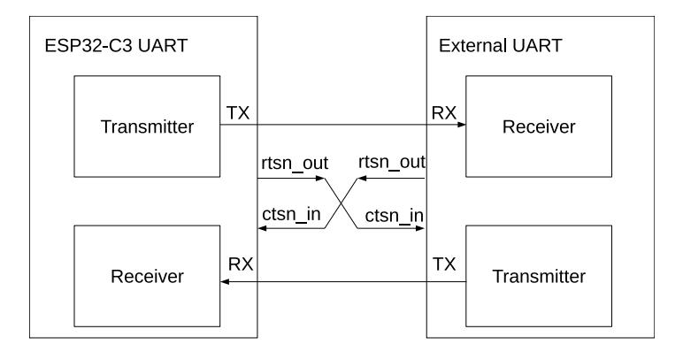
Figure 26.4-10. Connection between Hardware Flow Control Signals
When ctsn_in of IU0 is low, IU0 is allowed to send data; when ctsn_in is high, IU0 is not allowed to send data. When IU0 detects an edge change of ctsn_in, a UART_CTS_CHG_INT interrupt is generated.
If dtrn_out of IU0 is high, it indicates that IU0 is ready to transmit data. dtrn_out is generated by configuring the UART_SW_DTR field. When the IU0 transmitter detects a edge change of dsrn_in, a UART_DSR_CHG_INT interrupt is generated. After this interrupt is detected, software can obtain the level of input signal dsrn_in by reading UART_DSRN. If dsrn_in is high, it indicates that EU0 is ready to transmit data.
In a two-wire RS485 multidrop network enabled by setting UART_RS485_EN, dtrn_out is generated by hardware and used for transmit/receive turnaround. When data transmission starts, dtrn_out is pulled high and the ext ernal driver is enabled; when data transmission completes, dtrn_out is pulled low and the external driver is disabled. Please note that when there is a turnaro und delay of one cycle added after the stop bit, dtrn_out is pulled low after the delay.
UART loopback test is enabled by setting UART_LOOPBACK. In the test, UART output signal txd_out is connected to its input signal rxd_in, rtsn_out is connected to ctsn_in, and dtrn_out is connected to dsrn_out. If the data sent matches the data received, it indicates that UART controllers are working properly.
Instead of CTS/RTS lines, software flow control uses XON/XOFF characters to start or stop data transmission. Such flow control is enabled by setting UART_SW_FLOW_CON_EN to 1.
When using software flow control, hardware automatically detects if there are XON/XOFF characters in the data flow received, and generate a UART_SW_XOFF_INT or a UART_SW_XON_INT interrupt accordingly. If an XOFF character is detected, the transmitter st ops data transmission once the current byte has been transmitted; if an XON character is detected, the transmitter starts data transmission. In addition, software can force the transmitter to stop sending data by setting UART_FORCE_XOFF, or to start sending data by setting UART_FORCE_XON.
Software determines whether to insert flow control characters according to the remaining room in RX FIFO. When UART_SEND_XOFF is set, the transm itter sends an XOFF character configured by UART_XOFF_CHAR after the current by te in transmission; when UART_SEND_XON is set, the transmitter sends an XON character configured by UART_XON_CHAR after the current byte in transmission. If the RX FIFO of a UART controller stores more data than UART_XOFF_THRESHOLD, UART_SEND_XOFF is set by hardware. As a result, the transmitter sends an XOFF character configured by UART_XOF F_CHAR after the current byte in transmission. If the RX FIFO of a UART controller stores less data than UART_XON_THRESHOLD, UART_SEND_XON is set by
hardware. As a result, the transmitter sends an XON character configured by UART_XON_CHAR after the current byte in transmission.
The two UART controllers on ESP32-C3 share one TX/RX GDMA (general direct memory access) channel via UHCI. In GDMA mode, UART controllers support the decoding and encoding of HCI data packets. The UHCI_UART n _CE field determines which UART controller occupies the GDMA TX/RX channel.
Figure 26.4-11. Data Transfer in GDMA Mode
Figure 26.4-11 shows how data is transferred using GDMA. Before GDMA receives data, software prepares an inlink. GDMA_INLINK_ADDR_CH n points to the first receive descriptor in the inlink. After GDMA_INLINK_START_CH n is set, UHCI sends data that UART has received to the decoder. The decoded data is then stored into the RAM pointed by the inlink under the control of GDMA.
Befor e GDMA sends data, softwar e prepares an outlink and data to be sent. GDMA_OUTLINK_ADDR_CH n points to the first transmit d escriptor in the outlink. After GDMA_OUTLINK_START_CH n is set, GDMA reads data from the RAM pointed by outlink. The data is then encoded by the encoder, and sent sequentially by the UART transmitter.
HCI data packets have separators at the beginning and t he end, with data bits in the m iddle (separators + data bits + separators). The encoder inserts separators in front of and after data bits, and replaces data bits identical to separators with special characters. The decoder removes separators in front of and after data bits, and replaces special characters with separators. There can be more than one continuous separator at the beginning and the end of a data packet. The separator is configured by UHCI_SEPER_CHAR, 0xC0 by default. The special character is configured by UHCI_ESC_SEQ0_CHAR0 (0xDB by default) and UHCI_ESC_SEQ0_CHAR1 (0xDD by default). When all data has been sent, a GDMA_OUT_TOTAL_EOF_CH n _INT interrupt is generated. When all data has been received, a GDMA_IN_S UC_EOF_CH n _INT is generated.
• UHCI_RX_START_INT: Triggered when a separator character has been sent.
All UART registers are in APB_CLK domain. According to whether clock domain crossing and synchronization are required, UART registers that can be configured by software are classified into three types, namely immediate registers, synchronous registers, and static registers. Immediate registers are read in APB_CLK domain, and take effect after configured via the APB bus. Synchronous registers are read in Core Clock domain, and take effect after synchronization. Static registers are also read in Core Clock domain, but would not change dynamically. Therefore, for static registers clock domain crossing is not required, and software can turn on and off the clock for the UART transmitter or receiver to ensure that the configuration sampled in Core Clock domain is correct.
Read in Core Clock domain, synchronous registers implement the clock domain crossing design to ensure that their values sampled in Core Clock domain are correct. These registers as listed in Table 26.5-1 are configured as follows:
| Table 26.5-1. UARTn Synchronous Registers | |
|---|---|
|
Register
UART_CLKDIV_REG |
Field |
| UART_CLKDIV_FRAG[3:0] | |
| UART_CLKDIV[11:0] | |
| UART_CONF0_REG | UART_AUTOBAUD_EN |
| UART_ERR_WR_MASK | |
| UART_TXD_INV | |
| UART_RXD_INV | |
| UART_IRDA_EN | |
| UART_TX_FLOW_EN | |
| UART_LOOPBACK | |
| UART_IRDA_RX_INV | |
| UART_IRDA_TX_EN | |
| UART_IRDA_WCTL | |
| UART_IRDA_TX_EN | |
|
UART_IRDA_DPLX
UART_STOP_BIT_NUM |
|
| UART_BIT_NUM |
| Table 26.5-1 – cont'd from previous page | |
| Register | Field |
| UART_PARITY_EN | |
| UART_FLOW_CONF_REG | UART_PARITY |
| UART_SEND_XOFF | |
| UART_SEND_XON | |
| UART_FORCE_XOFF | |
| UART_FORCE_XON | |
|
UART_XONOFF_DEL
UART_SW_FLOW_CON_EN |
|
| UART_TXBRK_CONF_REG | UART_RS485_TX_DLY_NUM[3:0] |
| UART_RS485_RX_DLY_NUM | |
| UART_RS485RXBY_TX_EN | |
| UART_RS485TX_RX_EN | |
| UART_DL1_EN |
Static registers, though also read in Core Clock domain, would not change dynamically when UART controllers are at work, so they do not implement the clock domain crossing design. These registers must be configured when the UART transmitter or receiver is not at work. In this case, software can turn off the clock for the UART transmitter or receiver, so that static registers are not sampled in their metastable state. When software turns on the clock, the configured values are stable to be correctly sampled. Static registers as listed in Table 26.5-2 are configured as follows:
| Field |
| UART_GLITCH_FILT_EN |
| UART_GLITCH_FILT[7:0] |
| UART_ACTIVE_THRESHOLD[9:0] |
| UART_XOFF_CHAR[7:0] |
| UART_XON_CHAR[7:0] |
| UART_TX_IDLE_NUM[9:0] |
|
UART_PRE_IDLE_NUM[15:0]
UART_POST_IDLE_NUM[15:0] |
| UART_RX_GAP_TOUT[15:0] |
| Table 26.5-2 – cont'd from previous page | ||
Except those listed in Table 26.5-1 and Table 26.5-2, registers that can be configured by software are immediate registers read in APB_CLK domain, such as interrupt and FIFO configuration registers.
Figure 26.5-1 illustrates the process to program UART controllers, namely initialize UART, configure registers, enable the UART transmitter or receiver, and finish data transmission.
Figure 26.5-1. UART Programming Procedures
To initialize UART n :
To configure UART n communication:
To enable UART n transmitter:
To enable UART n receiver:
The addresses in this section are relative to UART Controller base address provided in Table 3.3-3 in Chapter 3 System and Memory .
The abbreviations given in Column Access are explained in Section Access Types for Registers .
| System and Memory. | |||
|---|---|---|---|
| The abbreviations given in Column Access are explained in Section Access Types for Registers. | |||
| Name | Description | Address | Access |
|
FIFO Configuration
UART_FIFO_REG |
FIFO data register | 0x0000 | RO |
| UART_MEM_CONF_REG | UART threshold and allocation configuration | 0x0060 | R/W |
| UART Interrupt Register | |||
| UART_INT_RAW_REG | Raw interrupt status | 0x0004 | R/WTC/SS |
| UART_INT_ST_REG | Masked interrupt status | 0x0008 | RO |
| UART_INT_ENA_REG | Interrupt enable bits | 0x000C | R/W |
| UART_INT_CLR_REG | Interrupt clear bits | 0x0010 | WT |
| Configuration Register | |||
| UART_CLKDIV_REG | Clock divider configuration | 0x0014 | R/W |
| UART_RX_FILT_REG | RX filter configuration | 0x0018 | R/W |
| UART_CONF0_REG | Configuration register 0 | 0x0020 | R/W |
| UART_CONF1_REG | Configuration register 1 | 0x0024 | R/W |
| UART_FLOW_CONF_REG | Software flow control configuration | 0x0034 | varies |
| UART_SLEEP_CONF_REG | Sleep mode configuration | 0x0038 | R/W |
| UART_SWFC_CONF0_REG | Software flow control character configuration | 0x003C | R/W |
| UART_SWFC_CONF1_REG | Software flow control character configuration | 0x0040 | R/W |
|
UART_TXBRK_CONF_REG
UART_IDLE_CONF_REG |
TX break character configuration
Frame end idle time configuration |
0x0044
0x0048 |
R/W
R/W |
| UART_RS485_CONF_REG | RS485 mode configuration | 0x004C | R/W |
| UART_CLK_CONF_REG | UART core clock configuration | 0x0078 | R/W |
| Status Register | |||
| UART_STATUS_REG | UART status register | 0x001C | RO |
| UART_MEM_TX_STATUS_REG | TX FIFO write and read offset address | 0x0064 | RO |
| UART_MEM_RX_STATUS_REG | RX FIFO write and read offset address | 0x0068 | RO |
| UART_FSM_STATUS_REG | UART transmitter and receiver status | 0x006C | RO |
| Autobaud Register | Autobaud minimum low pulse duration | ||
| UART_LOWPULSE_REG |
register
Autobaud minimum high pulse duration |
0x0028 | RO |
| UART_HIGHPULSE_REG | register | 0x002C | RO |
| UART_RXD_CNT_REG | Autobaud edge change count register | 0x0030 | RO |
| UART_POSPULSE_REG | Autobaud high pulse register | 0x0070 | RO |
|
UART_NEGPULSE_REG
Autobaud low pulse register 0x0074 RO |
|||
| AT Escape Sequence Selection Configuration | |||
|
UART_AT_CMD_PRECNT_REG
UART_AT_CMD_POSTCNT_REG |
Pre-sequence timing configuration
Post-sequence timing configuration |
0x0050
0x0054 |
R/W
R/W |
|
Chapter 26
UART Controller (UART) |
GoBack | ||
|
Name
Description Address Access |
|||
| UART_AT_CMD_GAPTOUT_REG | Timeout configuration | 0x0058 | R/W |
| UART_AT_CMD_CHAR_REG | AT escape sequence detection configuration | 0x005C | R/W |
| UART_ID_REG | UART ID register | 0x0080 | varies |
|---|---|---|---|
| Name | Description | Address | Access |
|
Configuration Register
UHCI_CONF0_REG |
UHCI configuration register | 0x0000 | R/W |
| UHCI_CONF1_REG | UHCI configuration register | 0x0014 | varies |
| UHCI_ESCAPE_CONF_REG | Escape character configuration | 0x0020 | R/W |
| UHCI_HUNG_CONF_REG | Timeout configuration | 0x0024 | R/W |
| UHCI_ACK_NUM_REG | UHCI ACK number configuration | 0x0028 | varies |
| UHCI_QUICK_SENT_REG | UHCI quick_sent configuration register | 0x0030 | varies |
| UHCI_REG_Q0_WORD0_REG | Q0_WORD0 quick_sent register | 0x0034 | R/W |
| UHCI_REG_Q0_WORD1_REG | Q0_WORD1 quick_sent register | 0x0038 | R/W |
| UHCI_REG_Q1_WORD0_REG | Q1_WORD0 quick_sent register | 0x003C | R/W |
| UHCI_REG_Q1_WORD1_REG | Q1_WORD1 quick_sent register | 0x0040 | R/W |
| UHCI_REG_Q2_WORD0_REG | Q2_WORD0 quick_sent register | 0x0044 | R/W |
| UHCI_REG_Q2_WORD1_REG | Q2_WORD1 quick_sent register | 0x0048 | R/W |
| UHCI_REG_Q3_WORD0_REG | Q3_WORD0 quick_sent register | 0x004C | R/W |
| UHCI_REG_Q3_WORD1_REG | Q3_WORD1 quick_sent register | 0x0050 | R/W |
|
UHCI_REG_Q4_WORD0_REG
UHCI_REG_Q4_WORD1_REG |
Q4_WORD0 quick_sent register
Q4_WORD1 quick_sent register |
0x0054
0x0058 |
R/W
R/W |
| UHCI_REG_Q5_WORD0_REG | Q5_WORD0 quick_sent register | 0x005C | R/W |
| UHCI_REG_Q5_WORD1_REG | Q5_WORD1 quick_sent register | 0x0060 | R/W |
| UHCI_REG_Q6_WORD0_REG | Q6_WORD0 quick_sent register | 0x0064 | R/W |
| UHCI_REG_Q6_WORD1_REG | Q6_WORD1 quick_sent register | 0x0068 | R/W |
| UHCI_ESC_CONF0_REG | Escape sequence configuration register 0 | 0x006C | R/W |
| UHCI_ESC_CONF1_REG | Escape sequence configuration register 1 | 0x0070 | R/W |
| UHCI_ESC_CONF2_REG | Escape sequence configuration register 2 | 0x0074 | R/W |
| UHCI_ESC_CONF3_REG | Escape sequence configuration register 3 | 0x0078 | R/W |
| UHCI_PKT_THRES_REG | Configuration register for packet length | 0x007C | R/W |
| UHCI Interrupt Register | |||
| UHCI_INT_RAW_REG | Raw interrupt status | 0x0004 | varies |
| UHCI_INT_ST_REG | Masked interrupt status | 0x0008 | RO |
| UHCI_INT_ENA_REG | Interrupt enable bits | 0x000C | R/W |
| UHCI_INT_CLR_REG | Interrupt clear bits | 0x0010 | WT |
| UHCI Status Register | |||
|
UHCI_STATE0_REG
UHCI_STATE1_REG |
UHCI receive status
UHCI transmit status |
0x0018
0x001C |
RO
RO |
| UHCI_RX_HEAD_REG | UHCI packet header register | 0x002C | RO |
|
Chapter 26
UART Controller (UART) |
GoBack |
The addresses in this section are relative to UART Controller base address provided in Table 3.3-3 in Chapter 3 System and Memory .

UART_RXFIFO_RD_BYTE UART n accesses FIFO via this field. (RO)

Continued on the next page...
Continued on the next page...
UART_RXFIFO_FULL_INT_ENA This is the enable bit for UART_RXFIFO_FULL_INT. (R/W) UART_TXFIFO_EMPTY_INT_ENA This is the enable bit for UART_TXFIFO_EMPTY_INT. (R/W) UART_PARITY_ERR_INT_ENA This is the enable bit for UART_PARITY_ERR_INT. (R/W) UART_FRM_ERR_INT_ENA This is the enable bit for UART_FRM_ERR_INT. (R/W) UART_RXFIFO_OVF_INT_ENA This is the enable bit for UART_RXFIFO_OVF_INT. (R/W) UART_DSR_CHG_INT_ENA This is the enable bit for UART_DSR_CHG_INT. (R/W) UART_CTS_CHG_INT_ENA This is the enable bit for UART_CTS_CHG_INT. (R/W) UART_BRK_DET_INT_ENA This is the enable bit for UART_BRK_DET_INT. (R/W) UART_RXFIFO_TOUT_INT_ENA This is the enable bit for UART_RXFIFO_TOUT_INT. (R/W) UART_SW_XON_INT_ENA This is the enable bit for UART_SW_XON_INT. (R/W) UART_SW_XOFF_INT_ENA This is the enable bit for UART_SW_XOFF_INT. (R/W) UART_GLITCH_DET_INT_ENA This is the enable bit for UART_GLITCH_DET_INT. (R/W) UART_TX_BRK_DONE_INT_ENA This is the enable bit for UART_TX_BRK_DONE_INT. (R/W) UART_TX_BRK_IDLE_DONE_INT_ENA This is the enable bit for UART_TX_BRK_IDLE_DONE_INT. (R/W) UART_TX_DONE_INT_ENA This is the enable bit for UART_TX_DONE_INT. (R/W)
Continued on the next page...
Continued from the previous page...
UART_RS485_PARITY_ERR_INT_ENA This is the enable bit for UART_RS485_PARITY_ERR_INT. (R/W)
UART_RS485_FRM_ERR_INT_ENA This is the enable bit for UART_RS485_PARITY_ERR_INT. (R/W)
UART_RS485_CLASH_INT_ENA This is the enable bit for UART_RS485_CLASH_INT. (R/W)
UART_AT_CMD_CHAR_DET_INT_ENA This is the enable bit for UART_AT_CMD_CHAR_DET_INT. (R/W)
UART_WAKEUP_INT_ENA This is the enable bit for UART_WAKEUP_INT. (R/W)
UART_RXFIFO_FULL_INT_CLR Set this bit to clear the UART_THE RXFIFO_FULL_INT interrupt. (WT)
UART_TXFIFO_EMPTY_INT_CLR Set this bit to clear the UART_TXFIFO_EMPTY_INT interrupt. (WT) UART_PARITY_ERR_INT_CLR Set this bit to clear the UART_PARITY_ERR_INT interrupt. (WT) UART_FRM_ERR_INT_CLR Set this bit to clear the UART_FRM_ERR_INT interrupt. (WT) UART_RXFIFO_OVF_INT_CLR Set this bit to clear the UART_UART_RXFIFO_OVF_INT interrupt. (WT) UART_DSR_CHG_INT_CLR Set this bit to clear the UART_DSR_CHG_INT interrupt. (WT) UART_CTS_CHG_INT_CLR Set this bit to clear the UART_CTS_CHG_INT interrupt. (WT) UART_BRK_DET_INT_CLR Set this bit to clear the UART_BRK_DET_INT interrupt. (WT) UART_RXFIFO_TOUT_INT_CLR Set this bit to clear the UART_RXFIFO_TOUT_INT interrupt. (WT) UART_SW_XON_INT_CLR Set this bit to clear the UART_SW_XON_INT interrupt. (WT) UART_SW_XOFF_INT_CLR Set this bit to clear the UART_SW_XOFF_INT interrupt. (WT) UART_GLITCH_DET_INT_CLR Set this bit to clear the UART_GLITCH_DET_INT interrupt. (WT) UART_TX_BRK_DONE_INT_CLR Set this bit to clear the UART_TX_BRK_DONE_INT interrupt. (WT) UART_TX_BRK_IDLE_DONE_INT_CLR Set this bit to clear the UART_TX_BRK_IDLE_DONE_INT interrupt. (WT) UART_TX_DONE_INT_CLR Set this bit to clear the UART_TX_DONE_INT interrupt. (WT)
UART_RS485_PARITY_ERR_INT_CLR Set this bit to clear the UART_RS485_PARITY_ERR_INT interrupt. (WT)
Continued on the next page...
Continued from the previous page...
UART_WAKEUP_INT_CLR Set this bit to clear the UART_WAKEUP_INT interrupt. (WT)
UART_CLKDIV The integral part of the frequency divisor. (R/W)
UART_CLKDIV_FRAG The fractional part of the frequency divisor. (R/W)
Register 26.8. UART_RX_FILT_REG (0x0018)
UART_GLITCH_FILT When input pulse width is lower than this value, the pulse is ignored. (R/W)
UART_GLITCH_FILT_EN Set this bit to enable RX signal filter. (R/W)
UART_PARITY This bit is used to configure the parity check mode. (R/W)
UART_PARITY_EN Set this bit to enable UART parity check. (R/W)
Continued on the next page...
UART_RX_TOUT_EN This is the enable bit for UART receiver's timeout function. (R/W)
UART_ACTIVE_THRESHOLD UART is activated from Light-sleep mode when the input RXD edge changes more times than the value of this field plus 3. (R/W)
UART_XOFF_THRESHOLD When the number of data bytes in RX FIFO is more than the value of this field with UART_SW_FLOW_CON_EN set to 1, the transmitter sends an XOFF character. (R/W)
UART_XOFF_CHAR This field stores the XOFF flow control character. (R/W)
Register 26.14. UART_SWFC_CONF1_REG (0x0040)
UART_XON_THRESHOLD When the number of data bytes in RX FIFO is less than the value of this field with UART_SW_FLOW_CON_EN set to 1, the transmitter sends an XON character. (R/W)
UART_XON_CHAR This field stores the XON flow control character. (R/W)
UART_TX_BRK_NUM This field is used to configure the number of 0 to be sent after the process of sending data is done. It is active when UART_TXD_BRK is set to 1. (R/W)

UART_RS485_EN Set this bit to choose RS485 mode. (R/W)
UART_RS485_TX_DLY_NUM This field is used to delay the transmitter's internal data signal. (R/W)
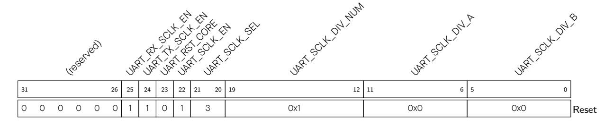
UART_SCLK_DIV_B The denominator of the frequency divisor. (R/W)
UART_SCLK_DIV_A The numerator of the frequency divisor. (R/W)
UART_SCLK_DIV_NUM The integral part of the frequency divisor. (R/W)
UART_SCLK_SEL Selects UART clock source. 1: APB_CLK; 2: RC_FAST_CLK; 3: XTAL_CLK. (R/W)
UART_SCLK_EN Set this bit to enable UART TX/RX clock. (R/W)
UART_RST_CORE Write 1 and then write 0 to this bit, to reset UART TX/RX. (R/W)
UART_TX_SCLK_EN Set this bit to enable UART TX clock. (R/W)
UART_RX_SCLK_EN Set this bit to enable UART RX clock. (R/W)
Register 26.19. UART_STATUS_REG (0x001C)
UART_RXFIFO_CNT Stores the number of valid data bytes in RX FIFO. (RO)
UART_DSRN This bit represents the level of the internal UART DSR signal. (RO)
UART_CTSN This bit represents the level of the internal UART CTS signal. (RO)
UART_RXD This bit represents the level of the internal UART RXD signal. (RO)
UART_TXFIFO_CNT Stores the number of data bytes in TX FIFO. (RO)
UART_DTRN This bit represents the level of the internal UART DTR signal. (RO)
UART_RTSN This bit represents the level of the internal UART RTS signal. (RO)
UART_TXD This bit represents the level of the internal UART TXD signal. (RO)
UART_APB_TX_WADDR This field stores the offset address in TX FIFO when software writes TX FIFO via APB. (RO)
UART_TX_RADDR This field stores the offset address in TX FIFO when TX FSM reads data via Tx_FIFO_Ctrl. (RO)

UART_ST_URX_OUT This is the status field of the receiver. (RO)
UART_ST_UTX_OUT This is the status field of the transmitter. (RO)
UART_LOWPULSE_MIN_CNT This field stores the value of the minimum duration time of the low level pulse, in the unit of APB_CLK cycles. It is used in baud rate detection. (RO)
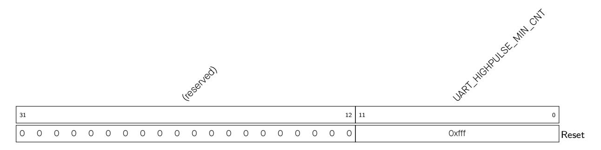
UART_HIGHPULSE_MIN_CNT This field stores the value of the maximum duration time for the high level pulse, in the unit of APB_CLK cycles. It is used in baud rate detection. (RO)
UART_RXD_EDGE_CNT This field stores the count of RXD edge change. It is used in baud rate detection. (RO)
UART_POSEDGE_MIN_CNT This field stores the minimal input clock count between two positive edges. It is used in baud rate detection. (RO)
UART_NEGEDGE_MIN_CNT This field stores the minimal input clock count between two negative edges. It is used in baud rate detection. (RO)
UART_PRE_IDLE_NUM This field is used to configure the idle duration time before the first AT_CMD is received by the receiver, in the unit of bit time (the time it takes to transfer one bit). (R/W)
UART_POST_IDLE_NUM This field is used to configure the duration time between the last AT_CMD and the next data byte, in the unit of bit time (the time it takes to transfer one bit). (R/W)
UART_RX_GAP_TOUT This field is used to configure the duration time between the AT_CMD characters, in the unit of bit time (the time it takes to transfer one bit). (R/W)
UART_AT_CMD_CHAR This field is used to configure the content of AT_CMD character. (R/W)
UART_CHAR_NUM This field is used to configure the number of continuous AT_CMD characterss received by the receiver. (R/W)
UART_DATE This is the version control register. (R/W)
UART_ID This field is used to configure the UART_ID. (R/W)
UHCI_TX_RST Write 1, then write 0 to this bit to reset decode state machine. (R/W)
UHCI_RX_RST Write 1, then write 0 to this bit to reset encode state machine. (R/W)
UHCI_UART0_CE Set this bit to link up UHCI and UART0. (R/W)
UHCI_UART1_CE Set this bit to link up UHCI and UART1. (R/W)
UHCI_SEPER_EN Set this bit to separate the data frame using a special character. (R/W)
UHCI_HEAD_EN Set this bit to encode the data packet with a formatting header. (R/W)
UHCI_CRC_REC_EN Set this bit to enable UHCI to receive the 16 bit CRC. (R/W)
UHCI_TX_C0_ESC_EN Set this bit to decode character 0xC0 when DMA receives data. (R/W)
UHCI_TX_DB_ESC_EN Set this bit to decode character 0xDB when DMA receives data. (R/W)
UHCI_TXFIFO_TIMEOUT This field stores the timeout value. UHCI will produce the UHCI_TX_HUNG_INT interrupt when DMA takes more time to receive data. (R/W)
UHCI_TXFIFO_TIMEOUT_SHIFT This field is used to configure the maximum tick count. (R/W)
UHCI_TXFIFO_TIMEOUT_ENA This is the enable bit for TX FIFO receive timeout. (R/W)
UHCI_RXFIFO_TIMEOUT This field stores the timeout value. UHCI will produce the UHCI_RX_HUNG_INT interrupt when DMA takes more time to read data from RAM. (R/W)
UHCI_RXFIFO_TIMEOUT_SHIFT This field is used to configure the maximum tick count. (R/W) UHCI_RXFIFO_TIMEOUT_ENA This is the enable bit for DMA send timeout. (R/W)
Register 26.38. UHCI_ACK_NUM_REG (0x0028)
UHCI_ACK_NUM This is the ACK number used in software flow control. (R/W)
UHCI_ACK_NUM_LOAD Set this bit to 1, and the value configured by UHCI_ACK_NUM would be loaded. (WT)
Register 26.39. UHCI_QUICK_SENT_REG (0x0030)
UHCI_SINGLE_SEND_NUM This field is used to specify the single_send mode. (R/W)
UHCI_SINGLE_SEND_EN Set this bit to enable single_send mode to send short packets. (R/W/SC)
UHCI_ALWAYS_SEND_NUM This field is used to specify the always_send mode. (R/W)
UHCI_ALWAYS_SEND_EN Set this bit to enable always_send mode to send short packets. (R/W)
UHCI_SEND_Q0_WORD0 This register is used as a quick_sent register when mode is specified by UHCI_ALWAYS_SEND_NUM or UHCI_SINGLE_SEND_NUM. (R/W)
UHCI_SEND_Q0_WORD1 This register is used as a quick_sent register when mode is specified by UHCI_ALWAYS_SEND_NUM or UHCI_SINGLE_SEND_NUM. (R/W)
UHCI_SEND_Q1_WORD0 This register is used as a quick_sent register when mode is specified by UHCI_ALWAYS_SEND_NUM or UHCI_SINGLE_SEND_NUM. (R/W)
UHCI_SEND_Q1_WORD1 This register is used as a quick_sent register when mode is specified by UHCI_ALWAYS_SEND_NUM or UHCI_SINGLE_SEND_NUM. (R/W)
UHCI_SEND_Q2_WORD0 This register is used as a quick_sent register when mode is specified by UHCI_ALWAYS_SEND_NUM or UHCI_SINGLE_SEND_NUM. (R/W)
UHCI_SEND_Q2_WORD1 This register is used as a quick_sent register when mode is specified by UHCI_ALWAYS_SEND_NUM or UHCI_SINGLE_SEND_NUM. (R/W)
UHCI_SEND_Q3_WORD0 This register is used as a quick_sent register when mode is specified by UHCI_ALWAYS_SEND_NUM or UHCI_SINGLE_SEND_NUM. (R/W)
UHCI_SEND_Q3_WORD1 This register is used as a quick_sent register when mode is specified by UHCI_ALWAYS_SEND_NUM or UHCI_SINGLE_SEND_NUM. (R/W)
UHCI_SEND_Q4_WORD0 This register is used as a quick_sent register when mode is specified by UHCI_ALWAYS_SEND_NUM or UHCI_SINGLE_SEND_NUM. (R/W)
UHCI_SEND_Q4_WORD1 This register is used as a quick_sent register when mode is specified by UHCI_ALWAYS_SEND_NUM or UHCI_SINGLE_SEND_NUM. (R/W)
UHCI_SEND_Q5_WORD0 This register is used as a quick_sent register when mode is specified by UHCI_ALWAYS_SEND_NUM or UHCI_SINGLE_SEND_NUM. (R/W)
UHCI_SEND_Q5_WORD1 This register is used as a quick_sent register when mode is specified by UHCI_ALWAYS_SEND_NUM or UHCI_SINGLE_SEND_NUM. (R/W)
UHCI_SEND_Q6_WORD0 This register is used as a quick_sent register when mode is specified by UHCI_ALWAYS_SEND_NUM or UHCI_SINGLE_SEND_NUM. (R/W)
UHCI_SEND_Q6_WORD1 This register is used as a quick_sent register when mode is specified by UHCI_ALWAYS_SEND_NUM or UHCI_SINGLE_SEND_NUM. (R/W)
UHCI_SEPER_CHAR This field is used to define separators to encode data packets. The default value is 0xC0. (R/W)
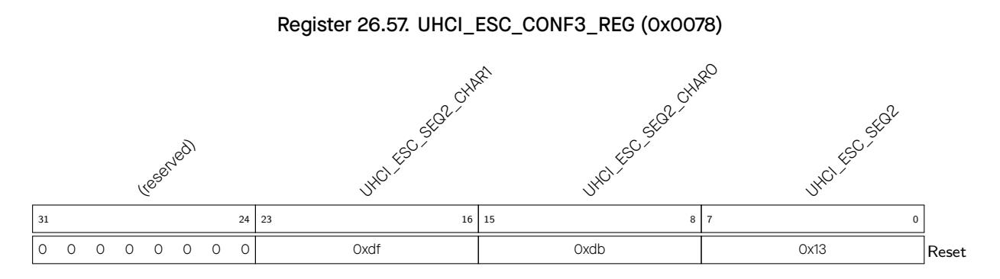
UHCI_PKT_THRS This field is used to configure the maximum value of the packet length when UHCI_HEAD_EN is 0. (R/W)
UHCI_RX_START_INT_ENA This is the interrupt enable bit for UHCI_RX_START_INT interrupt. (R/W)
UHCI_TX_START_INT_ENA This is the interrupt enable bit for UHCI_TX_START_INT interrupt. (R/W)
UHCI_RX_HUNG_INT_ENA This is the interrupt enable bit for UHCI_RX_HUNG_INT interrupt. (R/W)
UHCI_TX_HUNG_INT_ENA This is the interrupt enable bit for UHCI_TX_HUNG_INT interrupt. (R/W)
UHCI_RX_ERR_CAUSE This field indicates the error type when DMA has received a packet with error. 3'b001: Checksum error in the HCI packet; 3'b010: Sequence number error in the HCI packet; 3'b011: CRC bit error in the HCI packet; 3'b100: 0xC0 is found but the received the HCI packet is not end; 3'b101: 0xC0 is not found when the HCI packet has been received; 3'b110: CRC check error. (RO)
UHCI_DECODE_STATE UHCI decoder status. (RO)
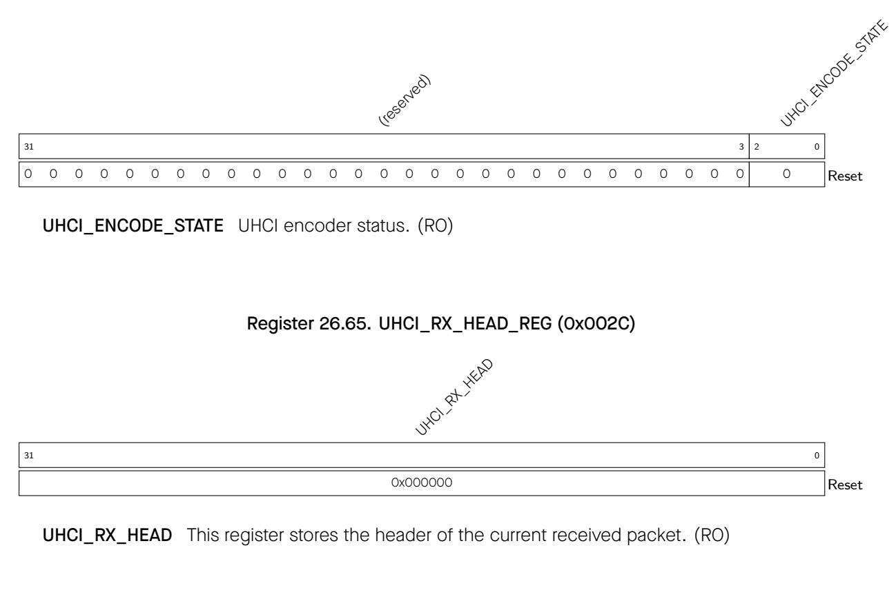
UHCI_DATE This is the version control register. (R/W)
The Serial Peripheral Interface (SPI) is a synchronous serial interface useful for communication with external peripherals. The ESP32-C3 chip integrates three SPI controllers:
SPI0 and SPI1 controllers are primarily reserved for internal use. This chapter mainly focuses on the GP-SPI2 controller.
To better illustrate the functions of GP-SPI2, the following terms are used in this chapter.
| To better illustrate the functions of GP-SPI2, the following terms are used in this chapter. | |
|---|---|
| Master Mode | GP-SPI2 acts as an SPI master and initiates SPI transactions. |
| Slave Mode | GP-SPI2 acts as an SPI slave and transfers data with its master |
| MISO |
when its CS is asserted.
Master in, slave out, data transmission from a slave to a master. |
| MOSI | Master out, slave in, data transmission from a master to a slave |
| Transaction | One instance of a master asserting a CS line, transferring data to |
| and from a slave, and de-asserting the CS line. Transactions are | |
| atomic, which means they can never be interrupted by another | |
| transaction. | |
| SPI Transfer | The whole process of an SPI master exchanges data with a slave. |
| One SPI transfer consists of one or more SPI transactions. | |
| Single Transfer | An SPI transfer consists of only one transaction. |
| CPU-Controlled Transfer | A data transfer happens between CPU buffer SPI_W0_REG ~ |
| SPI_W15_REG and SPI peripheral. | |
| DMA-Controlled Transfer | A data transfer happens between DMA and SPI peripheral, con |
| trolled by DMA engine. | |
| Configurable Segmented Transfer |
A data transfer controlled by DMA in SPI master mode.
Such |
| transfer consists of multiple transactions (segments), and each | |
| Slave Segmented Transfer |
of transactions can be configured independently.
A data transfer controlled by DMA in SPI slave mode. Such transfer |
| Full-duplex | The sending line and receiving line between the master and the |
|---|---|
| slave are independent. Sending data and receiving data happen | |
| at the same time. | |
| Half-duplex | Only one side, the master or the slave, sends data first, and the |
| other side receives data. Sending data and receiving data can not | |
| happen at the same time. | |
| 4-line full-duplex | 4-line here means: clock line, CS line, and two data lines. The two |
| data lines can be used to send or receive data simultaneously. | |
| 4-line half-duplex |
4-line here means: clock line, CS line, and two data lines.
The |
| 3-line half-duplex |
two data lines can not be used simultaneously.
3-line here means: clock line, CS line, and one data line. The data |
| line is used to transmit or receive data. | |
| 1-bit SPI | In one clock cycle, one bit can be transferred. |
| (2-bit) Dual SPI | In one clock cycle, two bits can be transferred. |
| Dual Output Read | A data mode of Dual SPI. In one clock cycle, one bit of a com |
| mand, or one bit of an address, or two bits of data can be trans | |
| ferred. | |
| Dual I/O Read | Another data mode of Dual SPI. In one clock cycle, one bit of a |
| command, or two bits of an address, or two bits of data can be | |
| transferred. | |
| (4-bit) Quad SPI | In one clock cycle, four bits can be transferred. |
| Quad Output Read | A data mode of Quad SPI. In one clock cycle, one bit of a com |
| mand, or one bit of an address, or four bits of data can be trans | |
| Quad I/O Read |
ferred.
Another data mode of Quad SPI. In one clock cycle, one bit of a |
| command, or four bits of an address, or four bits of data can be | |
| transferred. | |
Some of the key features of GP-SPI2 are:
Espressif Systems 609
Figure 27.4-1 shows an overview of SPI module. GP-SPI2 exchanges data with SPI devices by the following ways:
The signals for GP-SPI2 are prefixed with "FSPI" (Fast SPI). FSPI bus signals are routed to GPIO pins via either GPIO matrix or IO MUX. For more information, see Chapter 5 IO MUX and GPIO Matrix (GPIO, IO MUX) .
GP-SPI2 can be configured as either a master or a slave to communicate with other SPI devices in the following data modes, see Table 27.5-1.
| Table 27.5-1. Data Modes Supported by GP-SPI2 | ||||
| Supported Mode | ||||
| CMD State | Address State | Data State | ||
|
1-bit SPI
Dual SPI |
1-bit | 1-bit | 1-bit | |
|
Dual Output Read
Dual I/O Read |
1-bit
1-bit |
1-bit
2-bit |
2-bit
2-bit |
|
| Quad Output Read | 1-bit | 1-bit | 4-bit | |
Table 27.5-1. Data Modes Supported by GP-SPI2
For the states can be used in
The mapping of FSPI bus sign als and the functional description of the signals are shown in Table 27.5-2 and in Table 27.5-3, respectively. The signals in one line in Table 27.5-2 corresponds to each other. For example, the signal FSPID is connected to MOSI in GP-SPI2 full-duplex communication, and FSPIQ to MISO. You can take Figure 27.5-6 as an example.
| Table 27.5-2. Mapping of FSPI Bus Signals | ||
|---|---|---|
| Standard SPI Protocol | Extended SPI Protocol | |
| Full-Duplex | Half-Duplex | FSPI Bus |
| SPI Signal | SPI Signal | Signal |
| MOSI | MOSI | FSPID |
| MISO | (MISO) | FSPIQ |
| CS | CS | FSPICS0 ~ 5 |
| CLK | CLK | FSPICLK |
| — | — | FSPIWP |
Table 27.5-2. Mapping of FSPI Bus Signals
Table 27.5-3. Functional Description of FSPI Bus Signals
| FSPI Bus Signal | Function |
| FSPID | MOSI/SIO0 (serial data input and output, bit0) |
|
FSPIQ
FSPIWP |
MISO/SIO1 (serial data input and output, bit1)
SIO2 (serial data input and output, bit2) |
| FSPIHD | SIO3 (serial data input and output, bit3) |
| FSPICLK | Input and output clock in master/slave mode |
|---|---|
| FSPICSO | Input and output CS signal in master/slave mode |
| Output CS signal in master mode |
Figure 27.5-4 shows the signals used in various SPI modes.
|
le
ls d in s |
I | |||||||||||
|---|---|---|---|---|---|---|---|---|---|---|---|---|
|
ig
l F S P I S na |
1
F D 3- |
b
i S P I 1- t 2 l ine H D 4- |
Ma
te s 2- l ine H D |
de
Mo r b i l b Du S P I t 4- a |
i
d Qu S P I Q P I t a |
F
D |
1-
l ine 3- |
b
i S P I t l ine H D 4- |
lav
S Mo e b i 2- Du t H D |
de
l b i S P I Qu 4- t a |
d
S P I Q P I a |
Chapter
27 |
|
F
S P I C L K |
Y | Y | Y | Y |
Y
Y |
Y | Y | Y | Y | Y | Y | SPI |
|
S
C S 0 F P I |
Y | Y | Y | Y |
Y
Y |
Y | Y | Y | Y | Y | Y | Controller |
|
S
C S F P I 1 |
Y | Y | Y | Y |
Y
Y |
|||||||
|
S
C S 2 F P I |
Y | Y | Y | Y |
Y
Y |
|||||||
|
S
C S 3 F P I |
Y | Y | Y | Y |
Y
Y |
(SPI) | ||||||
|
F
S P I C S 4 |
Y | Y | Y | Y |
Y
Y |
|||||||
|
F
S P I C S 5 |
Y | Y | Y | Y |
Y
Y |
|||||||
| 3 | 4 | 5 | 6 |
7
8 |
||||||||
|
F
S P I D |
Y | Y |
(
) Y 3 |
Y
4 |
Y
Y 5 |
Y | Y |
(
) Y 6 |
Y |
Y
7 8 |
Y | |
|
F
S P I Q |
Y |
(
) Y |
Y |
Y
Y 5 |
Y |
(
) Y |
Y |
Y
8 |
Y | |||
|
F
S P I W P Y Y Y Y 8 5 F S P I H D Y Y Y Y 1 F D: fu l l- du lex p 2 H D: ha l f- du lex p 3 On ly f he ig ls is d im t tw t t on e o o s na us e a a e. 4 T he ig ls d in l le l. tw o s na are us e p ara 5 T he fo ig ls d in l le l. ur s na are us e p ara 6 On ly he ig ls is d im f t tw t t on e o o s na us e a a e. 7 T he ls d l le l. ig in tw o s na are us e p ara 8 he ls d l le l. T fo ig in ur s na are us e p ara GoBack |
||||||||||||
In master mode:
In sla ve mode:
Table 27.5-5 shows the function of SPI_RD/WR_BIT_ORDER.
| Table 27.5-5. Bit Order Control in GP-SPI2 Master and Slave Modes |
|---|
| Table 27.5-5. Bit Order Control in GP-SPI2 Master and Slave Modes | ||||
|
Bit Mode
1-bit mode |
FSPI Bus Data | SPI_RD/WR_BIT_ORDER = 0 (MSB) | SPI_RD/WR_BIT_ORDER = 1 (LSB) | |
| FSPID or FSPIQ | B7→B6→B5→B4→B3→B2→B1→B0 | B0→B1→B2→B3→B4→B5→B6→B7 | ||
|
2-bit mode
4-bit mode |
FSPIQ | B7→B5→B3→B1 | B1→B3→B5→B7 | |
| FSPID | B6→B4→B2→B0 | B0→B2→B4→B6 | ||
| FSPIHD | B7→B3 | B3→B7 | ||
| FSPIWP | B6→B2 | B2→B6 | ||
GP-SPI2 supports the following transfers when working as a master or a slave.
| Table 27.5-6. Supported Transfers in Master and Slave Modes | ||||||
|---|---|---|---|---|---|---|
| Mode | CPU-Controlled | DMA-Controlled | DMA-Controlled | DMA-Controlled | ||
| Single Transfer | Single Transfer | Configurable | Slave Segmented | |||
| Segmented Transfer | Transfer | |||||
| Full-Duplex | Y | Y | Y | – | ||
| Master | Half-Duplex | Y | Y | Y | – | |
| Slave | Full-Duplex | Y | Y | – | Y | |
Table 27.5-6. Supported Transfers in Master and Slave Modes
The following sections provide detailed information about the transfer modes listed in the table above.
GP-SPI2 provides 16 x 32-bit data buffers, i.e., SPI_W0_REG ~ SPI_W15_REG, see Figure 27.5-1. CPU-controlled transfer indicates the transfer, in which the data to send is from GP-SPI2 data buffer and the received data is stored to GP-SPI2 data buffer. In such transfer, every single transaction needs to be triggered by the CPU, after its related registers are confi gured. For suc h reason, the CP U-controlle d trans fer is always
Espressif Systems 614
single transfers (consisting of only one transaction). CPU-controlled mode supports full-duplex communication and half-duplex communication.
Figure 27.5-1. Data Buffer Used in CPU-Controlled Transfer
In a CPU-controlled master full-duplex or half-duplex transfer, the RX or TX data is saved to or sent from SPI_W0_REG ~ SPI_W15_REG. The bits SPI_USR_MOSI_HIGHPART and SPI_USR_MISO_HIGHPART control which buffers are used, see the list below.
Note:
In a CPU-controlled slave full-duplex or half-duplex transfer, the RX data or TX data is saved to or sent from SPI_W0_REG ~ SPI_W15_REG, which are byte-addressable.
According to your applications, the registers SPI_W0_REG ~ SPI_W15_REG can be used as:
DMA-controlled transfer refers to the transfer, in which GDMA RX module receives data and GDMA TX module sends data. This transfer is supported both in master mode and in slave mode.
A DMA-controlled transfer can be
A DMA-controlled transfer only needs to be triggered once by CPU. W hen such transfer is triggered, data is transferred by the GDMA engine from or to the DMA-linked memory, without CPU operation.
DMA-controlled mode supports full-duplex communication, half-dup lex comm unication and functions described in Section 27.5.8 and Section 27.5.9. Meanwhile, the GDMA RX module is independent from the GDMA TX module, which means that there are four kinds of full-duplex communications:
• Data is received in DMA-controlled mode and sent in DMA-controlled mode.
In master mode, if GDMA_IN_SUC_EOF_CH n _INT_ENA is set, then t he interrupt GDMA_ IN_ SUC_EOF_CH n _INT will be triggered when one single trans fer or one configurable segmented transfer is finished.
The only differenc e between DM A -controlled tran sfers in master mode and in slave mode is on the GDMA RX control:
End_SEG_TRANS) is received correctly or the length of GDMA RX received data is equal to (SPI_MS_DATA_BITLEN + 1).
It is recom mended that the length of configured GDMA TX/RX buffer is equal to the length of real transferred data.
CPU-controlled and DMA-controlled transfers are supported in GP-SPI2 master and slave modes. CPU-controlled transfer means that data transfers between registers SPI_W0_REG ~ SPI_W15_REG and the SPI device. DMA-controlled transfer means that data transfers between the configured GDMA TX/RX buffer and the SPI device. To select between the two transfer modes, configure SPI_DMA_RX_ENA and SPI_DMA_TX_ENA before the transfer starts.
Figure 27.5-2. GP-SPI2 Block Diagram
Figure 27.5-2 shows main functional blocks in GP-SPI2, including:
Figure 27.5-3. Data Flow Control in GP-SPI2 Master Mode
Figure 27.5-3 shows the data flow of GP-SPI2 in master mode. Its control logic is as follows:
The data in buf_tx_afifo is sent out to Timing Module in 1/2/4-bit modes, controlled by GP-SPI2 state machine. The Timing Module can be used for timing compensation. For more information, see Section 27.8.
Figure 27.5-4. Data Flow Control in GP-SPI2 Slave Mode
Figure 27.5-4 shows the data flow in GP-SPI2 slave mode. Its control logic is as follows:
– In DMA-controlled half-duplex transfer, when SPI_SLAVE_MODE is set, SPI_DOUTDIN is cleared, and Rd_DMA command is received, the data in the configured GDMA TX buffer will be stored into dma_tx_afifo.
The data in buf_tx_afifo or dma_tx_afifo is sent o ut by spi_slv_dout_ ctrl mo dule in 1/2/4-b it modes.
GP-SPI2 can be configured as a SPI master by clearing the bit SPI_SLAVE_MODE in SPI_SLAVE_REG. In this operation mode, GP-SPI2 provides clock signal (the divided clock from GP-SPI2 module clock) and six CS lines (CS0 ~ CS5).
When GP-SPI2 works as a master, the state machine controls its various states during data transfer, including configuration (CONF), preparation (PREP), command (CMD), address (ADDR), dummy (DUMMY), data out (DOUT), and data in (DIN) states. GP-SPI2 is mainly used to access 1/2/4-bit SPI devices, such as flash and external RAM, thus the naming of GP-SPI2 states keeps consistent with the sequence naming of flash and external RAM. The meaning of each state is described as follows and Figure 27.5-5 shows the workflow of GP-SPI2 state machine.
GoBack Figure 27.5-5. GP-SPI2 State Machine in Master Mode
622 Submit Documentation Feedback
Espressif Systems
Legend to state flow:
Explanation to the conditions listed in the figure above:
A counter (gpc[17:0]) is used in th e state machine to con trol the cycle length of each state. The states CONF, PREP, CMD, ADDR, DUMMY, DOUT, and DIN can be enabled or disabled independently. The cycle length of each state can also be configured i ndependently.
The registers, related to GP-SPI2 state control, are listed in Table 27.5-7. Users can enable QPI mode for GP-SPI2 by setting the bit SPI_QPI_MODE in register SPI_USER_REG.
| Table 27.5-7. Registers Used for State Control in 1/2/4-bit Modes | |||||
|---|---|---|---|---|---|
| Control Registers for 1-bit | Control Registers for 2-bit | Control Registers for 4-bit | |||
|
State
CMD |
Mode FSPI Bus
SPI_USR_COMMAND_VALUE SPI_USR_COMMAND_BITLEN SPI_USR_COMMAND |
Mode FSPI Bus
SPI_USR_COMMAND_VALUE SPI_USR_COMMAND_BITLEN SPI_FCMD_DUAL |
Mode FSPI Bus
SPI_USR_COMMAND_VALUE SPI_USR_COMMAND_BITLEN SPI_FCMD_QUAD |
||
| ADDR |
SPI_USR_ADDR_VALUE
SPI_USR_ADDR_BITLEN SPI_USR_ADDR |
SPI_USR_COMMAND
SPI_USR_ADDR_VALUE SPI_USR_ADDR_BITLEN SPI_USR_ADDR |
SPI_USR_COMMAND
SPI_USR_ADDR_VALUE SPI_USR_ADDR_BITLEN SPI_USR_ADDR |
||
| DUMMY | SPI_USR_DUMMY_CYCLELEN |
SPI_FADDR_DUAL
SPI_USR_DUMMY_CYCLELEN |
SPI_FADDR_QUAD
SPI_USR_DUMMY_CYCLELEN |
||
| DIN |
SPI_USR_DUMMY
SPI_USR_MISO SPI_MS_DATA_BITLEN |
SPI_USR_DUMMY
SPI_USR_MISO SPI_MS_DATA_BITLEN |
SPI_USR_DUMMY
SPI_USR_MISO SPI_MS_DATA_BITLEN |
||
| Table 27.5-7. Registers Used for State Control in 1/2/4-bit Modes | |||||
|---|---|---|---|---|---|
| State | |||||
| Control Registers for 1-bit | Control Registers for 2-bit | Control Registers for 4-bit | |||
| Mode FSPI Bus | Mode FSPI Bus | Mode FSPI Bus | |||
As shown in Table 27.5-7, the registe rs in each cell should be configure d to set t he FSPI bus to correspo nding bit mode, i.e. the mode shown in the table he ader, at a specific st ate (correspo nding to the first column).
For instance, when GP-SPI2 reads data, and
The register configuration can be as follows:
When wri ting data (DOUT state), SPI_USR_MOSI should be configured instead, w hile SPI_USR_MISO should be cleared. The output data bit length is the value of SPI_MS_DATA_BITLEN + 1. Output data should be configure d in GP-S PI2 data buffer (SPI_W0_REG ~ SPI_W15_REG) in CPU-controlled mode, or GDMA TX buffer in DMA-controlled mode. The d ata byte order is incremented from LSB (byte 0) to M SB.
Pay special attention to the command value in SPI_U SR_COMMAND_VALUE and to address value in SPI_USR_
The configuration of command value is as follo ws:
The configuration of address value is as follows :
GP-SPI2 supports SPI full-duplex communication. In this mode, SPI master provides CLK and CS signals, exchanging data with SPI slave in 1-bit mode via MOSI (FSPID, sending) and MISO (FSPIQ, receiving) at the same time. To enable this communication mode, set the bit SPI_DOUTDIN in register SPI_USER_REG. Figure 27.5-6 illustrates the connection of GP-SPI2 with its slave in full-duplex communication.
Figure 27.5-6. Full-Duplex Communication Between GP-SPI2 Master and a Slave
In full-duplex communication, the behavior of states CMD, ADDR, DUMMY, DOUT and DIN are configurable. Usually, the states CMD, ADDR and DUMMY are not used in this communication. The bit length of transferred data is configured in SPI_MS_DATA_BITLEN. The actual bit length used in communication equals to (SPI_MS_DATA_BITLEN + 1).
Espressif Systems 626
To start a data transfer, follow the steps below:
In this mode, GP-SPI2 provides CLK and CS signals. Only one side (SPI master or slave) can send data at a time, while the other side receives the data. To enable this communication mode, clear the bit SPI_DOUTDIN in register SPI_USER_REG. The standard format of SPI half-duplex communication is CMD + [ADDR +] [DUMMY +] [DOUT or DIN]. The states ADDR, DUMMY, DOUT, and DIN are optional, and can be disabled or enabled independently.
As descri bed in Section 27.5.8.2, the properties of GP-SPI2 states: CMD, ADDR, DUMMY, DOUT and DIN, such as cycle length, value, and parallel bus bit mode, can be set independently. For the register configuration, see Table 27.5-7.
The detailed properties of half-d uplex GP-SPI2 are as follows:
5. DIN: 0 ~ 512 bits (64 B) in CPU-controlled mode and 0 ~ 256 Kbits (32 KB) in DMA-controlled mode, master input, slave output.
The register configuration is as follows:
The follo wing exam ple shows how GP-SPI2 t o access flash and external RAM in master half-duplex mode.
Figure 27.5-7. Connection of GP-SPI2 to Flash and External RAM in 4-bit Mode
Figure 27.5-8 indicates GP-SPI2 Quad I/O Read sequence according to standard flash specification. Other GP-SPI2 command sequences are implemented in accordance with the requirements of SPI slaves.
Figure 27.5-8. SPI Quad I/O Read Command Sequence Sent by GP-SPI2 to Flash
Note that there is no separate section on how to configure a single transfer in master mode, since the CONF state of a configurable segmented transfer can be skipped to implement a single transfer.
When GP-SPI2 works as a master, it provides a feature named: configurable segmented transfer controlled by DMA.
A DMA-controlled transfer in master mode can be
In a configurable segmented transfer, the registers of its each single transaction (segment) are configurable.
This feature enables GP-SPI2 to do as many as transactions (segments) as configured when such transfer is triggered once by CPU. Figure 27.5-9 shows how this feature works.
Figure 27.5-9. Configurable Segmented Transfer in DMA-Controlled Master Mode
As shown in Figure 27.5-9, the registers for one transaction (segment n ) can be reconfigured by GP-SPI2 hardware according to the content in its Conf_buf n during a CONF state, before this segment starts.
It's recommended to provide separate GDMA CONF links and CONF buffers (Conf_buf i in Figure 27.5-9) for each CONF state. A GDMA TX link is used to connect all the CONF buffers and TX data buffers (Tx_buf i in Figure 27.5-9) into a chain. Hence, the behavior of the FSPI bus in each segment can be controlled independently.
For example, in a configurable segmentent transfer, its segment i , segment j , and segment k can be configured to full- duplex , half-duplex MISO, and half-duplex MOSI, respectively. i , j , and k are integer variables, which can be any segment number.
Meanwhile, the state of GP-SPI2, the data length and cycle length of the FSPI bus, and the behavior of the GDMA, can be configured independently for each segment. When this whole DMA-controlled transfer (consisting of several segments) has finished, a GP-SPI2 interrupt, SPI_DMA_SEG_TRANS_DONE_INT, is triggered.
On GP-SPI2, only registers which will change from the last transaction (segment) need to be re-configured to new values in CONF state. The configuration of other registers can be skipped (i.e. kept the same) to save time and chip resources.
The first word in GDMA CONF buffer i , called SPI_BIT_MAP_WORD, defines whether each GP-SPI2 register is to be updated or not in segment i . The relation of SPI_BIT_MAP_WORD and GP-SPI2 registers to update can be seen in Table 27.5-8 Bitmap (BM) Table. If a bit in the BM table is set to 1, its corresponding register value will be updated in this segment. Otherwise, if some registers should be kept from being changed, the related bits should be set to 0.
| Table 27.5-8. GP-SPI2 Master BM Table for CONF State | |||
|---|---|---|---|
| BM Bit | Register Name | BM Bit | Register Name |
| 0 | SPI_ADDR_REG | 7 | SPI_MISC_REG |
| 1 | SPI_CTRL_REG | 8 | SPI_DIN_MODE_REG |
| 2 | SPI_CLOCK_REG | 9 | SPI_DIN_NUM_REG |
| 3 | SPI_USER_REG | 10 | SPI_DOUT_MODE_REG |
| 4 | SPI_USER1_REG | 11 | SPI_DMA_CONF_REG |
| 5 | SPI_USER2_REG | 12 | SPI_DMA_INT_ENA_REG |
| Table 27.5-8. GP-SPI2 Master BM Table for CONF State | ||||
|---|---|---|---|---|
Then new values of all the r egisters to be mo dified should be placed right after SPI_BIT_MAP_W ORD, in consecutive words in the C ONF buffer.
To ensure the correctness of the content in each CONF buffer, the value in SPI_BIT_MAP_WORD[31:28] is used as "magic value", and will be compared with SPI_DMA_SEG_MAGIC_VALUE in the register SPI_SLAVE_REG. The value of SPI_DMA_SEG_MAGIC_VALUE should be configured before this DMA-controlled transfer starts, and can not be changed during these segments.
Table 27.5-9 and Table 27.5-10 provide an example to s how how to configure a CONF buffer for a tra nsaction (segment i ) whose SPI_ADDR_REG, SPI_CTRL_REG, SPI_CLOCK_REG, SPI_USER_REG, SPI_USER1_REG need to be updated. Table 27.5-9. An Example of CONF buffer i in Segment i
| need to be updated. | ||||
|---|---|---|---|---|
| Table 27.5-9. An Example of CONF bufferi in Segmenti | ||||
| CONF bufferi | Note | |||
| SPI_BIT_MAP_WORD |
The first word in this buffer.
Its value is 0xA000001F in this ex |
|||
| ample when the SPI_DMA_SEG_MAGIC_VALUE is set to 0xA. As | ||||
| shown in Table 27.5-10, bits 0, 1, 2, 3, and 4 are set, indicating the | ||||
| following registers will be updated. | ||||
| SPI_ADDR_REG | The second word, stores the new value to SPI_ADDR_REG. | |||
| SPI_CTRL_REG | The third word, stores the new value to SPI_CTRL_REG. | |||
| SPI_CLOCK_REG | The fourth word, stores the new value to SPI_CLOCK_REG. | |||
| Table 27.5-10. BM Bit Value v.s. Register to Be Updated in This Example | |||||
|---|---|---|---|---|---|
| BM Bit | Value | Register Name | BM Bit | Value | Register Name |
| 0 | 1 | SPI_ADDR_REG | 7 | 0 | SPI_MISC_REG |
| 1 | 1 | SPI_CTRL_REG | 8 | 0 | SPI_DIN_MODE_REG |
| 2 | 1 | SPI_CLOCK_REG | 9 | 0 | SPI_DIN_NUM_REG |
| 3 | 1 | SPI_USER_REG | 10 | 0 | SPI_DOUT_MODE_REG |
| 4 | 1 | SPI_USER1_REG | 11 | 0 | SPI_DMA_CONF_REG |
| 5 | 0 | SPI_USER2_REG | 12 | 0 | SPI_DMA_INT_ENA_REG |
In a DMA-controlled configur able segmented trans fer, please pay special att ention to the following bit s:
( SP I _ CONF _ BIT LEN + 5) × TAP B _ CLK
The CS high time in CONF state can be set from 62.5 µs to 3.2768 ms when f APB_CLK is 80 MHz. (SPI_CONF_ BITLEN + 5) will overflow from (0x40000 - SPI_CONF_BITLEN - 5) if SPI_CONF_BITLEN is larger than
0x3FFFA.
GP-SPI2 can be used as a slave to communicate with an SPI master. As a slave, GP-SPI2 supports 1-bit SPI, 2-bit dual SPI, 4-bit quad SPI, and QPI modes, with specific communication formats. To enable this mode, set SPI_SLAVE_MODE in register SPI_SLAVE_REG.
The CS signal must be held low during the transmission, and its falling/rising edges indicate the start/end of a single or segmented transmission. The length of transferred data must be in unit of bytes, otherwise the extra bits will be lost. Th e extra bit s here means the result of total bits % 8.
In GP-SPI2 slave mode, SPI full-duplex and half-duplex communications are available. To select from the two communications, configure SPI_DOUTDIN in register SPI_USER_REG.
Full-duplex communication means that input data and output data are transmitted simultaneously throughout the entire transaction. All bits are treated as input or output data, which means no command, address or dummy states are expected . The interrupt SPI_TRAN S_DONE_INT is triggered once the transaction ends.
In half-duplex communication, the format is CMD+ADDR+DUMMY+DATA (DIN or DOUT).
The detailed properties of each state are as follows:
The states of ADDR and DUMMY can never be omitted in any half-duplex communications.
When a half-duplex transaction is complete, the transferred CMD and ADDR values are latched into SPI_SLV_
LAST_COMMAND and SPI_SLV_LAST_ADDR respectively. The SPI_SLV_CMD_ERR_INT_RAW will be set if the transferred CMD value is not supported by GP-SPI2 slave mode. The SPI_SLV_CMD_ERR_INT_RAW can only be cleare d by software.
In half-duplex communication, the defined values of CMD determine the transfer types. Unsupported CMD values are disregarded, meanwhile the related transfer is ignored and SPI_SLV_CMD_ERR_INT_RAW is set. The transfer format is CMD (8 bits) + ADDR (8 bits) + DUMMY (8 SPI_CLK cycles) + DATA (unit in bytes). The detailed description of CMD[3:0] is as follows:
The detail function of CMD7, CMD8, CMD9, and CMDA commands is reserved for user definition. These commands can be used as handshake signa ls, the passwords of some specific functions, the triggers of some user defined actions, and so on.
1/2/4-bit modes in states of CMD, ADDR, DATA are supported, which are determined by value of CMD[7:4]. The DUMMY state is always in 1-bit mode and lasts for eight SPI_CLK cycles. The definition of CMD[7:4] is as follows:
In addition, if the value of CMD[7:0] is 0x05, 0xA5, 0x06, or 0xDD, DUMMY and DATA states are omitted. The definition of CMD[7:0] is as follows:
All th e GP-SPI2 suppo rted CMD values are listed in Table 27.5-11 and Table 27.5-12. Note that DUMMY state is always in 1-bit mode and lasts for eight SPI_CLK cycles.
| Table 27.5-11. Supported CMD Values in SPI Mode | ||||
|---|---|---|---|---|
| Transfer Type |
CMD[7:0]
0x01 |
CMD State
1-bit mode |
ADDR State
1-bit mode |
DATA State
1-bit mode |
| 0x11 | 1-bit mode | 1-bit mode | 2-bit mode | |
| 0x21 | 1-bit mode | 1-bit mode | 4-bit mode | |
| Wr_BUF | 0x51 | 1-bit mode | 2-bit mode | 2-bit mode |
| 0xA1 | 1-bit mode | 4-bit mode | 4-bit mode | |
| 0x02 | 1-bit mode | 1-bit mode | 1-bit mode | |
| 0x12 | 1-bit mode | 1-bit mode | 2-bit mode | |
| 0x22 | 1-bit mode | 1-bit mode | 4-bit mode | |
| Rd_BUF | 0x52 | 1-bit mode | 2-bit mode | 2-bit mode |
| 0xA2 | 1-bit mode | 4-bit mode | 4-bit mode | |
| 0x03 | 1-bit mode | 1-bit mode | 1-bit mode | |
| 0x13 | 1-bit mode | 1-bit mode | 2-bit mode | |
| Wr_DMA | 0x23 | 1-bit mode | 1-bit mode | 4-bit mode |
| 0x53 | 1-bit mode | 2-bit mode | 2-bit mode | |
| 0xA3 | 1-bit mode | 4-bit mode | 4-bit mode | |
| 0x04 | 1-bit mode | 1-bit mode | 1-bit mode | |
|
0x14
0x24 |
1-bit mode
1-bit mode |
1-bit mode
1-bit mode |
2-bit mode
4-bit mode |
|
| Rd_DMA | 0x54 | 1-bit mode | 2-bit mode | 2-bit mode |
| 0xA4 | 1-bit mode | 4-bit mode | 4-bit mode |
Table 27.5-11. Supported C MD Val ues in SPI Mode
| Table 27.5-11. Supported CMD Values in SPI Mode | ||||
| Transfer Type | CMD[7:0] | CMD State | ADDR State | DATA State |
| 0x07 | 1-bit mode | 1-bit mode | - | |
| 0x17 | 1-bit mode | 1-bit mode | - | |
| CMD7 | 0x27 | 1-bit mode | 1-bit mode | - |
| 0x57 | 1-bit mode | 2-bit mode | - | |
| 0xA7 | 1-bit mode | 4-bit mode | - | |
| 0x08 | 1-bit mode | 1-bit mode | - | |
|
0x18
0x28 |
1-bit mode
1-bit mode |
1-bit mode
1-bit mode |
-
- |
|
| CMD8 | 0x58 | 1-bit mode | 2-bit mode | - |
| 0xA8 | 1-bit mode | 4-bit mode | - | |
| 0x09 | 1-bit mode | 1-bit mode | - | |
| 0x19 | 1-bit mode | 1-bit mode | - | |
| 0x29 | 1-bit mode | 1-bit mode | - | |
| CMD9 | 0x59 | 1-bit mode | 2-bit mode | - |
| 0xA9 | 1-bit mode | 4-bit mode | - | |
| 0x0A | 1-bit mode | 1-bit mode | - | |
| 0x1A | 1-bit mode | 1-bit mode | - | |
| CMDA | 0x2A | 1-bit mode | 1-bit mode | - |
| 0x5A | 1-bit mode | 2-bit mode | - | |
| 0xAA | 1-bit mode | 4-bit mode | - |
Table 27.5-11. Supported CMD Values in SPI Mode
Table 27.5-12. Supported CMD Values in QPI Mode
| Table 27.5-12. Supported CMD Values in QPI Mode | ||||
|---|---|---|---|---|
| Transfer Type | CMD[7:0] | CMD State | ADDR State | DATA State |
| Wr_BUF | 0xA1 | 4-bit mode | 4-bit mode | 4-bit mode |
| Rd_BUF | 0xA2 | 4-bit mode | 4-bit mode | 4-bit mode |
| Wr_DMA | 0xA3 | 4-bit mode | 4-bit mode | 4-bit mode |
| Rd_DMA | 0xA4 | 4-bit mode | 4-bit mode | 4-bit mode |
| CMD7 | 0xA7 | 4-bit mode | 4-bit mode | - |
| CMD8 | 0xA8 | 4-bit mode | 4-bit mode | - |
| CMD9 | 0xA9 | 4-bit mode | 4-bit mode | - |
| CMDA | 0xAA | 4-bit mode | 4-bit mode | - |
| End_SEG_TRANS | 0xA5 | 4-bit mode | 4-bit mode | - |
Master sends 0x06 CMD (En_QPI) to set GP-SPI2 slave to QPI mode and all the states of supported transfer will be in 4-bit mode afterwards. If 0xDD CMD (Ex_QPI) is received, GP-SPI2 slave will be back to SPI mode.
Other transfer types than described in Table 27.5-11 and Table 27.5-12 are ignored. If the transferred data is not in unit of byte, GP-SPI2 can send or receive these extra bits (total bits % 8), however, the correctness of the
Espressif Systems 636
data is not guaranteed. But if the CS low time is longer than 2 APB clock (APB_CLK) cycles, SPI_TRANS_DONE_INT will be triggered. For more information on interrupts triggered at the end of transmissions, please refer to Section 27.9.
When GP-SPI2 works as a slave, it su pport s full-duplex and half-duplex communications controlled by DMA and by CPU. DMA-controlled transfer can be a single transfer, or a slave segmented transfer consisting of several transactions (segments). The CPU-controlled transfer can only be one single transfer, since each CPU-controlled transaction needs to be triggered by CPU.
In a slave segmented transfer, all transfer types listed in Table 27.5-11 and Table 27.5-12 are supported in a single transaction (segment). It means that CPU-controlled transaction and DMA-controlled transaction can be mixed in one slave segmented transfer.
It is recommended that in a slave segmented transfer:
In slave mode, GP-SPI2 supports CPU/DMA-controlled full-duplex/half-duplex single transfers. The register configuration procedure is as follows:
GDMA_IN_SUC_EOF_CH n _INT when GDMA RX buffer is used, which means that data has been stored in the related memory. Other interrupts described in Section 27.9 are optional.
GDMA must be used in this mode. The register configuration pr oced ure is as follows:
When En d_SEG_TRANS (0x05 in SPI mode, 0xA5 in QPI mode) is received by GP-SPI2, this slave segm ented transf er is ended and the interrupt SPI_DMA_SEG_TRANS_DONE_INT is triggered.
GDMA must be used in this mode. In such transfer, the data is transfe rred from and to the GDMA buffer. The interrupt GDMA_IN_SUC_EOF_CH n
_INT is triggered when the transfer ends. The configuration procedure is as follows:
SPI bus CS (SPI_CS) setup time and hold time are very important to meet the timing requirements of various SPI devices (e.g. flash or PSRAM).
CS setup time is the time between the CS falling edge and the first latch edge of SPI bus CLK (SPI_CLK). The first latch edge for mode 0 and mode 3 is rising edge, and falling edge for mode 2 and mode 4.
CS hold time is the time between the last latch edge of SPI_CLK and the CS rising edge.
In slave mode, the CS setup time and hold time should be longer than 0.5 x T_SPI_CLK, otherwise the SPI transfer may be incorrect. T_SPI_CLK: one cycle of SPI_CLK.
In master mode, set the CS setup time by specifying SPI_CS_SETUP in SPI_USER_REG and SPI_CS_SETUP_TIME in SPI_USER1_REG:
Set the CS hold time by specifying SPI_CS_HOLD in SPI_USER_REG and SPI_CS_HOLD_TIME in SPI_USER1_REG:
Figure 27.6-1 and Figur e 27.6-2 show the recommended CS timing and register configuration to access external RAM and flash.
Figure 27.6-1. Recommended CS Timing and Settings When Accessing External RAM
Figure 27.6-2. Recommended CS Timing and Settings When Accessing Flash
GP-SPI2 has the following clocks:
In master mode, the maximum output clock frequency of GP-SPI2 is f clk_spi_mst. To have slower frequencies, the output clock frequency can be divided as follows:
f SPI_CLK = f clk_spi_mst (SPI_CLKCNT_N + 1)(SPI_CLKDIV_PRE + 1)
The divider is configured by SPI_CLKCNT_N and SPI_CLKDIV_PRE in register SPI_CLOCK_REG. When the bit SPI_CLK_EQU_SYSCLK in register SPI_ CLOCK_REG is set to 1, the output cloc k frequency of GP-SPI2 will be f clk_spi_mst. And for other integral clock divisions, SPI_CLK_EQU_SYSCLK should be set to 0.
In slave mode, the supporte d input clock fre quency ( f SPI_CLK ) of G P-SPI2 is:
There are four clock modes in SPI protocol, modes 0 ~ 3, see Figure 27.7-1 and Figure 27.7-2 (excerpted from SPI protocol):

Figure 27.7-1. SPI Clock Mode 0 or 2
Figure 27.7-2. SPI Clock Mode 1 or 3
1. Mode 0: CPOL = 0, CPHA = 0; SCK is 0 when the SPI is in idle state; data is changed on the negative edge of SCK and sampled on the positive edge. The first data is shifted out before the first negative edge of SCK.
The four clock modes 0 ~ 3 are supported in GP-SPI2 master mode. The polarity and phase of GP-SPI2 clock are controlled by the bit SPI_CK_IDLE_EDGE in register SPI_MISC_REG and the bit SPI_CK_OUT_EDGE in register SPI_USER_REG. The register configuration for SPI clock modes 0 ~ 3 is provided in Table 27.7-1, and can be changed according to the path delay in the application.
| Table 27.7-1. Clock Phase and Polarity Configuration in Master Mode |
|---|
| Table 27.7-1. Clock Phase and Polarity Configuration in Master Mode | ||||
|---|---|---|---|---|
| Control Bit | Mode 0 | Mode 1 | Mode 2 | Mode 3 |
SPI_CLK_MODE is use d to select the numb er of rising edges of SPI_CLK, when SPI_CS raises high, to be 0, 1, 2 or SPI_CLK always on.
When SPI_CLK_MODE is configured to 1 or 2, the bit SPI_CS_HOLD must be set and the value of SPI_CS_HOLD_TIME should be larger than 1.
GP-SPI2 slave mode also supports clock modes 0 ~ 3. The polarity and phase are configured by the bits SPI_TSCK_I_EDGE and SPI_RSCK_I_EDGE in register SPI_USER_REG. The output edge of data is controlled by SPI_CLK_MODE_13 in register SPI_SLAVE_REG. The detailed register configuration is shown in Table 27.7-2:
| Control Bit | Mode 0 | Mode 1 | Mode 2 | Mode 3 |
| SPI_TSCK_I_EDGE | 0 | 1 | 1 | 0 |
| SPI_RSCK_I_EDGE | 0 | 1 | 1 | 0 |
| Table 27.7-2. Clock Phase and Polarity Configuration in Slave Mode |
Introduction
Espressif Systems 642
The I/O lines are mapped via GPIO Matrix or IO MUX. But there is no timing adjustment in IO MUX. The input data and output data can be delayed for 1 or 2 APB_CLK cycles at the rising or falling edge in GPIO matrix. For detailed register configuration, see Chapter 5 IO MUX and GPIO Matrix (GPIO, IO MUX) .
Figure 27.8-1 shows the timing compensation control for GP-SPI2 master mode, including the following paths:
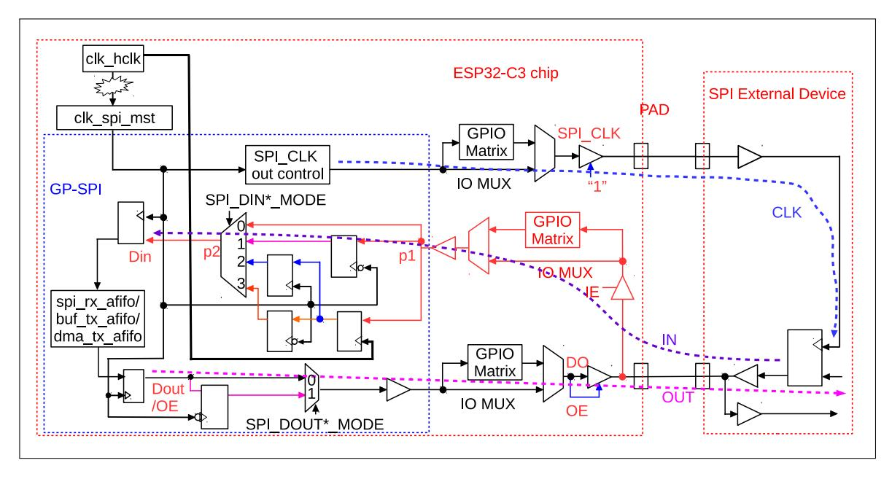
Figure 27.8-1. Timing Compensation Control Diagram in GP-SPI2 Master Mode
Every input and output data is passing through the Timing Module and the module can be used to apply delay in units of T clk_spi_mst (one cycle of clk_spi_mst) on rising or falling edge.
Figure 27.8-2 shows a timing compensation example in GP-SPI2 master mode. Note that DUMMY cycle length is configurable to compensate the delay in I/O lines, so as to enhance the performance of GP-SPI2.
Figure 27.8-2. Timing Compensation Example in GP-SPI2 Master Mode
In Figure 27.8-2, "p1" is the point of input data of Timing Module, "p2" is the point of output data of Timing Module. Since the input data FSPIQ is unaligned to FSPID, the read data of GP-SPI2 will be wrong without the timing compensation.
To get c orrect re ad data, follow the the settings below, assuing fclk _ spi _ mst equals to fSP I _ CLK :
In GP-SPI2 slave mode, if the bit SPI_RSCK_DATA_OUT in register SPI_SLAVE_REG is set to 1, the output data is sent at latch edge, which is half an SPI clock cycle earlier. This can be used for slave mode timing compensation.
GP-SPI2 provides an SPI interface interrupt SPI_INT. When an SPI transfer ends, an interrupt is generated in GP-SPI2. The interrupt may be one or more of the following ones:
Table 27.9-1 and Table 27.9-2 show the interrupts used in GP-SPI2 master and slave modes. Set the interrupt enable bit SPI_*_INT_ENA in SPI_DMA_INT_ENA_REG and wait for the SPI_INT interrupt. When the transfer ends, the related interrupt is triggered and should be cleared by software before the next transfer.
| Transfer Type | Communication Mode | Controlled by | Interrupt |
| Full-duplex | DMA | GDMA_IN_SUC_EOF_CHn_INT 1 | |
|
CPU
DMA |
SPI_TRANS_DONE_INT 2
SPI_TRANS_DONE_INT |
||
| Single Transfer | Half-duplex MOSI Mode | CPU | SPI_TRANS_DONE_INT |
| DMA | GDMA_IN_SUC_EOF_CHn_INT |
Half-duplex MISO Mode
| Table 27.9-1. GP-SPI2 Master Mode Interrupts | ||||||||
| Transfer Type | Communication Mode | Controlled by | Interrupt | |||||
| CPU | SPI_TRANS_DONE_INT | |||||||
| Full-duplex | DMA | SPI_DMA_SEG_TRANS_DONE_INT 3 | ||||||
| CPU | Not supported | |||||||
| Configurable Segmented Transfer | Half-duplex MOSI Mode | DMA | SPI_DMA_SEG_TRANS_DONE_INT | |||||
| Table 27.9-2. GP-SPI2 Slave Mode Interrupts | ||||||||
|---|---|---|---|---|---|---|---|---|
| Transfer Type | Communication Mode | Controlled by | Interrupt | |||||
| Full-duplex | DMA | GDMA_IN_SUC_EOF_CHn_INT 1 | ||||||
| CPU |
SPI_TRANS_DONE_INT 2
GDMA_IN_SUC_EOF_CHn_INT3 |
|||||||
| Single Transfer | Half-duplex MOSI Mode |
DMA (Wr_DMA)
CPU (Wr_BUF) |
SPI_TRANS_DONE_INT4 | |||||
| DMA (Rd_DMA) | SPI_TRANS_DONE_INT5 | |||||||
| Half-duplex MISO Mode | CPU (Rd_BUF) | SPI_TRANS_DONE_INT6 | ||||||
| DMA | GDMA_IN_SUC_EOF_CHn_INT7 | |||||||
| Full-duplex | CPU | Not supported8 | ||||||
| DMA (Wr_DMA) | SPI_DMA_SEG_TRANS_DONE_INT9 | |||||||
| Slave Segmented Transfer | Half-duplex MOSI Mode | CPU (Wr_BUF) | Not supported10 | |||||
| DMA (Rd_DMA) | SPI_DMA_SEG_TRANS_DONE_INT11 | |||||||
The addresses in this section are relative to SPI base address provided in Table 3.3-3 in Chapter 3 System and Memory .
The abbreviations given in Column Access are explained in Section Access Types for Registers .
| The abbreviations given in Column Access are explained in Section Access Types for Registers. | |||
|---|---|---|---|
| Name | Description | Address | Access |
| User-defined control registers | |||
| SPI_CMD_REG | Command control register | 0x0000 | varies |
| SPI_ADDR_REG | Address value register | 0x0004 | R/W |
| SPI_USER_REG | SPI USER control register | 0x0010 | varies |
|
SPI_USER1_REG
SPI_USER2_REG |
SPI USER control register 1
SPI USER control register 2 |
0x0014
0x0018 |
R/W
R/W |
| Control and configuration registers | |||
| SPI_CTRL_REG | SPI control register | 0x0008 | R/W |
| SPI_MS_DLEN_REG | SPI data bit length control register | 0x001C | R/W |
| SPI_MISC_REG | SPI MISC register | 0x0020 | R/W |
| SPI_DMA_CONF_REG | SPI DMA control register | 0x0030 | varies |
| SPI_SLAVE_REG | SPI slave control register | 0x00E0 | varies |
| SPI_SLAVE1_REG | SPI slave control register 1 | 0x00E4 | R/W/SS |
| Clock control registers | |||
| SPI_CLOCK_REG | SPI clock control register | 0x000C | R/W |
| SPI_CLK_GATE_REG | SPI module clock and register clock control | 0x00E8 | R/W |
| Timing registers | |||
| SPI_DIN_MODE_REG | SPI input delay mode configuration | 0x0024 | R/W |
| SPI_DIN_NUM_REG | SPI input delay number configuration | 0x0028 | R/W |
| SPI_DOUT_MODE_REG | SPI output delay mode configuration | 0x002C | R/W |
| Interrupt registers | |||
|
SPI_DMA_INT_ENA_REG
SPI_DMA_INT_CLR_REG |
SPI DMA interrupt enable register
SPI DMA interrupt clear register |
0x0034
0x0038 |
R/W
WT |
| SPI_DMA_INT_RAW_REG | SPI DMA interrupt raw register | 0x003C | varies |
| SPI_DMA_INT_ST_REG | SPI DMA interrupt status register | 0x0040 | RO |
|
Chapter 27
SPI Controller (SPI) |
GoBack | ||
| Name | Description | Address | Access |
| CPU-controlled data buffer | |||
| SPI_W0_REG | SPI CPU-controlled buffer 0 | 0x0098 | R/W/SS |
| SPI_W1_REG | SPI CPU-controlled buffer 1 | 0x009C | R/W/SS |
| SPI_W2_REG | SPI CPU-controlled buffer 2 | 0x00A0 | R/W/SS |
| SPI_W3_REG | SPI CPU-controlled buffer 3 | 0x00A4 | R/W/SS |
| SPI_W4_REG | SPI CPU-controlled buffer 4 | 0x00A8 | R/W/SS |
|
SPI_W5_REG
SPI_W6_REG |
SPI CPU-controlled buffer 5
SPI CPU-controlled buffer 6 |
0x00AC
0x00B0 |
R/W/SS
R/W/SS |
| SPI_W7_REG | SPI CPU-controlled buffer 7 | 0x00B4 | R/W/SS |
| SPI_W8_REG | SPI CPU-controlled buffer 8 | 0x00B8 | R/W/SS |
| SPI_W9_REG | SPI CPU-controlled buffer 9 | 0x00BC | R/W/SS |
| SPI_W10_REG | SPI CPU-controlled buffer 10 | 0x00C0 | R/W/SS |
| SPI_W11_REG | SPI CPU-controlled buffer 11 | 0x00C4 | R/W/SS |
| SPI_W12_REG | SPI CPU-controlled buffer 12 | 0x00C8 | R/W/SS |
| SPI_W13_REG | SPI CPU-controlled buffer 13 | 0x00CC | R/W/SS |
| SPI_W14_REG | SPI CPU-controlled buffer 14 | 0x00D0 | R/W/SS |
| SPI_W15_REG | SPI CPU-controlled buffer 15 | 0x00D4 | R/W/SS |
The addresses in this section are relative to SPI base address provided in Table 3.3-3 in Chapter 3 System and Memory .

SPI_USR_ADDR_VALUE Address to slave. Can be configured in CONF state. (R/W)
|
SPI_USR_MOSI_HIGHPART
SPI_USR_DUMMY_IDLE |
SPI_USR_MISO_HIGHPART | Register 27.3. SPI_USER_REG (0x0010) | ||||||||||||||||
|---|---|---|---|---|---|---|---|---|---|---|---|---|---|---|---|---|---|---|
| SPI_USR_COMMAND | SPI_USR_ADDR |
SPI_USR_DUMMY
SPI_USR_MISO |
SPI_USR_MOSI |
SPI_USR_CONF_NXT
SPI_FWRITE_QUAD SPI_FWRITE_DUAL |
SPI_CK_OUT_EDGE | SPI_RSCK_I_EDGE | SPI_CS_SETUP | SPI_TSCK_I_EDGE | SPI_QPI_MODE |
SPI_DOUTDIN Set the bit to enable full-duplex communication. 1: enable; 0: disable. Can be configured in CONF state. (R/W)
Continued on the next page...
SPI_USR_COMMAND_VALUE The value of command. Can be configured in CONF state. (R/W)
SPI_MS_DATA_BITLEN The value of this field is the configured SPI transmission data bit length in master mode DMA-controlled transfer or CPU-controlled transfer. The value is also the configured bit length in slave mode DMA RX controlled transfer. The register value shall be (bit_num - 1). Can be configured in CONF state. (R/W)
SPI_CLK_MODE SPI clock mode control bits. Can be configured in CONF state. (R/W)
SPI_SLV_DATA_BITLEN Configure the transferred data bit length in SPI slave full-/half-duplex modes. (R/W/SS)
SPI_SLV_LAST_COMMAND In slave mode, it is the value of command. (R/W/SS)
SPI_SLV_LAST_ADDR In slave mode, it is the value of address. (R/W/SS)
Register 27.12. SPI_CLOCK_REG (0x000C) SPI_CLK_EQU_SYSCLK 1 31 (reserved) 0 0 0 0 0 0 0 0 0 30 22 SPI_CLKDIV_PRE 0 21 18 SPI_CLKCNT_N 0x3 17 12 SPI_CLKCNT_H 0x1 11 6 SPI_CLKCNT_L 0x3 5 0 Reset
SPI_CLK_EN Set this bit to enable clock gate. (R/W)
SPI_MST_CLK_ACTIVE Set this bit to power on the SPI module clock. (R/W)
SPI_MST_CLK_SEL This bit is used to select SPI module clock source in master mode. 1: PLL_F80M_CLK. 0: XTAL_CLK. (R/W)
SPI_DIN0_MODE Configure the input mode for FSPID signal. Can be configured in CONF state. (R/W)
SPI_DIN1_MODE Confi gure the input m ode for FSPIQ signal. Can be configured in CONF state. (R/W)
SPI_DIN2_MODE Confi gure the input m ode for FSPIWP signal. Can be configured in CONF state. (R/W)
Continued on the next p age...
SPI_DIN0_NUM Configure the delays to input signal FSPID based on the setting of SPI_DIN0_MODE. Can be configured in CONF state. (R/W)
SPI_DIN3_NUM Configure the delays to input signal FSPIHD based on the setting of SPI_DIN3_MODE. Can be configured in CONF state. (R/W)
SPI_DOUT0_MODE Configure the output mode for FSPID signal. Can be configured in CONF state. (R/W)
SPI_SLV_EN_QPI_INT_ENA The enable bit for SPI_SLV_EN_QPI_INT interrupt. (R/W)
SPI_SLV_CMD7_INT_ENA The enable bit for S PI_SLV_CMD7_INT interrupt. (R/W)
SPI_SLV_CMD8_INT_ENA The enable bit for S PI_SLV_CMD8_INT interrupt. (R/W)
SPI_SLV_CMD9_INT_ENA The enable bit for SPI_SLV_CMD9_INT interrupt. (R/W)
SPI_SLV_CMDA_INT_ENA The enable bit for SPI_SLV_CMDA_INT interrupt. (R/W)
Continued on the next page...
Continued from the previous page...
SPI_DMA_INFIFO_FULL_ERR_INT_CLR The clear bit for SPI_DMA_INFIFO_FULL_ERR_INT interrupt. (WT)
SPI_DMA_OUTFIFO_EMPTY_ERR_INT_CLR The clear bit for SPI_DMA_OUTFIFO_EMPTY_ERR _INT interrupt. (WT)
SPI_SLV_EX_QPI_INT_CLR The clear bit for SPI_SLV_EX_QPI_INT interrupt. (WT)
SPI_SLV_EN_QPI_INT_CLR The clear bit for SPI_SLV_EN_QPI_INT interrupt. (WT)
SPI_SLV_CMD7_INT_CLR The clear bit for S PI_SLV_CMD7_INT interrupt. (WT)
SPI_SLV_CMD8_INT_CLR The clear bit for S PI_SLV_CMD8_INT interrupt. (WT)
SPI_SLV_CMD9_INT_CLR The clear bit for SPI_SLV_CMD9_INT interrupt. (WT)
SPI_SLV_CMDA_INT_CLR The clear bit for SPI_SLV_CMDA_INT interrupt. (WT)
SPI_SLV_RD_DMA_DONE_INT_CLR The clear bit for SPI_SLV_R D_DMA_DONE_INT interrupt. (WT)
SPI_SLV_WR_DMA_DONE_INT_CLR The clear bit for SPI_SLV_WR_DMA_DONE_INT interrupt. (WT)
SPI_SLV_RD_BUF_DONE_INT_CLR The clear bit for SPI_SLV_RD_BUF_DONE_INT interrupt. (WT)
SPI_SLV_WR_BUF_DONE_INT_CLR The clear bit for SPI_SLV_WR_BUF_DONE_INT interrupt. (WT)
SPI_TRANS_DONE_INT_CLR The clear bit for SPI_T RANS_DONE_INT interrupt. (WT)
SPI_DMA_SEG_TRANS_DONE_INT_CLR The clear bit for SPI_DMA_SEG_TRANS_ DONE_INT interrupt. (WT)
SPI_SEG_MAGIC_ERR_INT_CLR The clear bit for SPI_SE G_MAGIC_ERR_INT interrupt. (WT) Continued on the next page...
Continued from the previous page...
SPI_SLV_CMD7_INT_RAW The raw bit for S PI_SLV_CMD7_INT interrupt. (R/W/WTC/SS)
SPI_SLV_CMD8_INT_RAW The raw bit for S PI_SLV_CMD8_INT interrupt. (R/W/WTC/SS)
Continued on the next page...
SPI_SLV_EX_QPI_INT_ST The status bit for SPI_SLV_EX_QPI_INT interrupt. (RO)
SPI_SLV_EN_QPI_INT_ST The status bit for SPI_SLV_EN_QPI_INT interrupt. (RO)
SPI_SLV_CMD7_INT_ST The status bit for S PI_SLV_CMD7_INT interrupt. (RO)
SPI_SLV_CMD8_INT_ST The status bit for S PI_SLV_CMD8_INT interrupt. (RO)
SPI_SLV_CMD9_INT_ST The status bit for SPI_SLV_CMD9_INT interrupt. (RO)
SPI_SLV_CMDA_INT_ST The status bit for SPI_SLV_CMDA_INT interrupt. (RO)
SPI_SLV_RD_DMA_DONE_INT_ST The status bit for SPI_SLV_R D_DMA_DONE_INT interrupt. (RO)
SPI_SLV_WR_DMA_DONE_INT_ST The status bit for SPI_SLV_W R_DMA_DONE_INT interrupt. (RO)
SPI_SLV_RD_BUF_DONE_INT_ST The status bit for SPI_SLV_RD_BUF_DONE_INT interrupt. (RO)
SPI_SLV_WR_BUF_DONE_INT_ST The status bit for SPI_SLV_WR_BUF_DONE_INT interrupt. (RO)
SPI_TRANS_DONE_INT_ST The status bit for SPI_T RANS_DONE_INT interrupt. (RO)
SPI_DMA_SEG_TRANS_DONE_INT_ST The status bit for SPI_DMA_SEG_TRANS_ DONE_INT interrupt. (RO)
SPI_SEG_MAGIC_ERR_INT_ST The status bit for SPI_SE G_MAGIC_ERR_INT interrupt. (RO)
SPI_SLV_CMD_ERR_INT_ST The status bit for SPI_SLV_CMD_ERR_INT interrupt. (RO)
Continued on the next page...
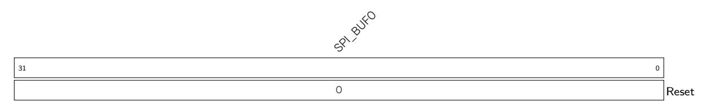
SPI_BUF0 32-bit data buffer 0. (R/W/SS)
SPI_BUF6 32-bit data buffer 6. (R/W/SS)
SPI_BUF10 32-bit data buffer 10. (R/W/SS)
SPI_BUF12 32-bit data buffer 12. (R/W/SS)
SPI_BUF13 32-bit data buffer 13. (R/W/SS)
SPI_BUF14 32-bit data buffer 14. (R/W/SS)
SPI_BUF15 32-bit data buffer 15. (R/W/SS)
SPI_DATE Version control register. (R/W)
The I2C (Inter-Integrated Circuit) bus allows ESP32-C3 to communicate with multiple external devices. These external devices can share one bus.
The I2C bus has two lines, namely a serial data line (SDA) and a serial clock line (SCL). Both SDA and SCL lines are open-drain. The I2C bus can be connected to a single or multiple master devices and a single or multiple slave devices. However, only one master device can access a slave at a time via the bus.
The master initiates communication by generating a START condition: pulling the SDA line low while SCL is high, and sending nine clock pulses via SCL. The first eight pulses are used to transmit a 7-bit address followed by a read/write ( R / W ) bit. If the address of an I2C slave matches the 7-bit address transmitted, this matching slave can respond by pulling SDA low on the ninth clock pulse. The master and the slave can send or receive data according to the R / W bit. Whether to terminate the data transfer or not is determined by the logic level of the acknowledge (ACK) bit. During data transfer, SDA changes only when SCL is low. Once finishing communication, the master sends a STOP condition: pulling SDA up while SCL is high. If a master both reads and writes data in one transfer, then it should send a RSTART condition, a slave address and a R / W bit before changing its operation. The RSTART condition is used to change the transfer direction and the mode of the devices (master mode or slave mode).
The I2C controller has the following features:
Figure 28.3-1. I2C Master Architecture
Figure 28.3-2. I2C Slave Architecture
The I2C controller runs either in master mode or slave mode, which is determined by I2C_MS_MODE. Figure 28.3-1 shows the architecture of a master, while Figure 28.3-2 shows that of a slave. The I2C controller has the following main parts:
Besides, the I2C controller also has a clock module which generates I2C clocks, and a synchronization module which synchronizes the APB bus and the I2C controller.
The clock module is used to select clock sources, turn on and off clocks, and divide clocks. SCL_Filter and SDA_Filter remove noises on SCL input signals and SDA input signals respectively. The synchronization module synchronizes signal transfer between different clock domains.
Figure 28.3-3 and Figure 28.3-4 are the timing diagram and corresponding parameters of the I2C protocol. SCL_FSM generates the timing sequence conforming to the I2C protocol.
SCL_MAIN_FSM controls the execution of I2C commands and the sequence of the SDA line. CMD_Controller is use d for an I2C master to gen erate (R)START, STOP, WRITE, READ and END commands. TX RAM and RX RAM store data to be transmitted and data received respectively. DATA_Shifter shifts data between serial and parallel form.
Figure 28.3-3. I2C Protocol Timing (Cited from Fig.31 in The I2C-bus specification Version 2.1)
|
Chapter 28
I2C Controller (I2C) |
GoBack | ||||
|---|---|---|---|---|---|
Figure 28.3-4. I2C Timing Parameters (Cited from Table 5 in The I2C-bus specification Version 2.1)
Note that operations may differ between the I2C controller in ESP32-C3 and other masters or slaves on the bus. Please refer to datasheets of individual I2C devices for specific information.
Registers, TX RAM, and RX RAM are configured and accessed in the APB_CLK clock domain, whose frequency is 1 ∼ 80 MHz. The main logic of the I2C controller, including SCL_FSM, SCL_MAIN_FSM, SCL_FILTER, SDA_FILTER, and DATA_SHIFTER, are in the I2C_SCLK clock domain.
You can choose the clock source for I2C_SCLK from XTAL_CLK or RC_FAST_CLK via I2C_SCLK_SEL. When I2C_SCLK_SEL is cleared, the clock source is XTAL_CLK. When I2C_SCLK_SEL is set, the clock source is RC_FAST_CLK. The clock source is enabled by configuring I2C_SCLK_ACTIVE as high level, and then passes through a fractional divider to generate I2C_SCLK according to the following equatio n:
The frequency of XTAL_CLK is 40 MHz, while the frequency of RC_FAST_CLK is 17.5 MHz. Limited by timing parameters, the derived clock I2C_SCLK should operate at a freq uency 20 timers larger t han SCL's frequency.
SCL_Filter and SDA_Filter modules are identical and are used to filter signal noises on SCL and SDA, respectively. These filters can be enabled or disabled by configuring I2C_SCL_FILTER_EN and I2C_SDA_FILTER_EN.
Espressif Systems 679
Take SCL_Filter as an example. When enabled, SCL_Filter samples input signals on the SCL line continuously. These input signals are valid only if they remain unchanged for consecutive I2C_SCL_FILTER_THRES I2C_SCLK clock cycles. Given that only valid input signals can pass through the filter, SCL_Filter can remove glitches whose pulse width is shorter than I2C_SCL_FILTER_THRES I2C_SCLK clock cycles, while SDA_Filter can remove glitches whose pulse width is shorter than I2C_SDA_FILTER_THRES I2C_SCLK clock cycles.
The I2C controller in slave mode (i.e. slave) can hold the SCL line low in exchange for more time to process data. This function called clock stretching is enabled by setting the I2C_SLAVE_SCL_STRETCH_EN bit. The time period to release the SCL line from stretching is configured by setting the I2C_STRETCH_PROTECT_NUM field, in order to avoid timing sequence errors. The slave will hold the SCL line low when one of the following four events occurs:
After SCL has been stretched low, the cause of stretching can be read from the I2C_STRETCH_CAUSE bit. Clock stretching is di sabled by setting the I2C_SLAVE_SCL _STRETCH_CLR bit.
Usually when the I2C bus is idle, the SCL li ne is held high. The I2C controlle r in ESP32-C3 can be programmed to generate SCL pulses in idle state. This function only works when the I2C controller is configured as master. If the I2C_SCL_RST_SLV_EN bit is set, hardware will send I2C_SCL_RST_SLV_NUM SCL pulses. When software reads 0 in I2C_SCL_RST_SLV_EN, set I2C_CONF_UPGATE to stop this function.
I2C regist ers are configured in AP B_C LK domain, whereas the I2C controller is configured in asynchronous I2C_SCLK domain. Therefore, before being used by the I2C controller, register values should be synchronized by first writing configuration registers and then writing 1 to I2C_CONF_UPGATE. Registers that need synchronization are listed in Table 28.4-1.
| Table 28.4-1. I2C Synchronous Registers | ||
| Register | Parameter | Address |
| I2C_CTR_REG | I2C_SLV_TX_AUTO_START_EN | 0x0004 |
| I2C_ADDR_10BIT_RW_CHECK_EN | ||
| I2C_ADDR_BROADCASTING_EN | ||
| I2C_SDA_FORCE_OUT | ||
| I2C_SCL_FORCE_OUT | ||
| I2C_SAMPLE_SCL_LEVEL | ||
|
I2C_RX_FULL_ACK_LEVEL
I2C_MS_MODE |
||
| I2C_TX_LSB_FIRST | ||
| I2C_RX_LSB_FIRST | ||
| I2C_ARBITRATION_EN | ||
| I2C_TO_REG | I2C_TIME_OUT_EN | 0x000C |
| I2C_TIME_OUT_VALUE | ||
| I2C_SLAVE_ADDR_REG | I2C_ADDR_10BIT_EN | 0x0010 |
| I2C_SLAVE_ADDR | ||
| I2C_FIFO_CONF_REG | I2C_FIFO_ADDR_CFG_EN | 0x0018 |
| I2C_SCL_SP_CONF_REG | I2C_SDA_PD_EN | 0x0080 |
| I2C_SCL_PD_EN | ||
| I2C_SCL_RST_SLV_NUM | ||
| I2C_SCL_RST_SLV_EN | ||
| I2C_SCL_STRETCH_CONF_REG | I2C_SLAVE_BYTE_ACK_CTL_EN | 0x0084 |
| I2C_SLAVE_BYTE_ACK_LVL | ||
|
I2C_SLAVE_SCL_STRETCH_EN
I2C_STRETCH_PROTECT_NUM |
||
| I2C_SCL_LOW_PERIOD_REG | I2C_SCL_LOW_PERIOD | 0x0000 |
| I2C_SCL_HIGH_PERIOD_REG | I2C_WAIT_HIGH_PERIOD | 0x0038 |
| I2C_HIGH_PERIOD | ||
| I2C_SDA_HOLD_REG | I2C_SDA_HOLD_TIME | 0x0030 |
| I2C_SDA_SAMPLE_REG | I2C_SDA_SAMPLE_TIME | 0x0034 |
| I2C_SCL_START_HOLD_REG | I2C_SCL_START_HOLD_TIME | 0x0040 |
| I2C_SCL_RSTART_SETUP_REG | I2C_SCL_RSTART_SETUP_TIME | 0x0044 |
| I2C_SCL_STOP_HOLD_REG | I2C_SCL_STOP_HOLD_TIME | 0x0048 |
| I2C_SCL_STOP_SETUP_REG | I2C_SCL_STOP_SETUP_TIME | 0x004C |
| I2C_SCL_ST_TIME_OUT_REG | I2C_SCL_ST_TO_I2C | 0x0078 |
| I2C_SCL_MAIN_ST_TIME_OUT_REG | I2C_SCL_MAIN_ST_TO_I2C | 0x007C |
| I2C_FILTER_CFG_REG | I2C_SCL_FILTER_EN | 0x0050 |
| I2C_SCL_FILTER_THRES | ||
| I2C_SDA_FILTER_EN |
SCL and SDA output drivers must be configured as open drain. There are two ways to achieve this:
Espressif Systems 681
Because these lines are configur ed a s open-drain, the low-t o-high transitio n time of each line is longe r, determined together by the pull-up resistor and the line capacitance. The output duty cycle of I2C is limited by the SDA an d SCL line's pull-up spe ed, mainly SCL's speed.
In addition, when I2C_SCL_FORCE_OUT and I2C_SCL_PD_EN are set to 1, SCL can be forced low; when I2C_SDA_FORCE_OUT and I2C_SDA_PD_EN are set to 1, SDA can be forced low.
Figure 28.4-1. I2C Timing Diagram
Figure 28.4-1 shows the timing diagram of an I2C master. This figure also specifies registers used to configure the START bit, STOP bit, data hold time, data sample time, waiting time on the rising SCL edge, etc. Timing parameters are calculated as follows in I2C_SCLK clock cycles:
Timing registers b elow are divided into two gro ups, depending on the mode in which these registers are active:
• Master mod e only:
fscl = f I2C_SCLK I2C_SCL_LOW_PERIOD + I2C_SCL_HIGH_PERIOD + I2C_SCL_WAIT_HIGH_PERIOD+3
Timing parameters limits corresponding register configuration.
The I 2C controller has three types of ti meout control, namely ti meout control for SCL_F SM, for SCL_MAIN_FSM, and for the SCL line. The first two are always enabled, while the third is configurable.
When SCL_FSM remains unchanged for more than 2 I 2 C _ SCL _ ST _ T O _ I 2 C clock cycles, an I2C_SCL_ST_TO_INT interrupt is triggered, and then SCL_FSM goes to idle state. The value of I2C_SCL_ST_TO_I2C should be less than or equal to 22, which means SCL_FSM could remain unchanged for 2 22 I2C_SCLK clock cycles at most before the interr upt is generated.
When SCL_MAIN_FSM remains unchanged for more than 2 I 2 C _ SCL _ MAIN _ ST _ T O _ I 2 C clock cycles, an
I2C_SCL_MAIN_ST_TO_INT interrupt is triggered, and then SCL_MAIN_FSM goes to idle state. The value of I2C_SCL_MAIN_ST_TO_I2C should be less than or equal to 22, which means SCL_MAIN_FSM could remain unchanged for 2 22 I2C_SCLK clock cycles at most before the interrupt is generated.
Timeout control for SCL is enabled by setting I2C_TIME_OUT_EN. When the level of SCL remains unchanged for more than 2 I 2 C _ T IME _ OUT _ V ALUE clock cycles, an I2C_TIME_OUT_INT interrupt is triggered, and then the I2C bus goes to idle state.
When the I2C controller works in master mode, CMD_Controller reads commands from 8 sequential command registers and controls SCL_FSM and SCL_MAIN_FSM accordingly.
Figure 28.4-2. Structure of I2C Command Registers
Command registers, whose structure is illustrated in Figure 28.4-2, are active only when the I2C controller works in master mode. Fields of command registers are:
Each command sequence is executed starting from command register 0 and terminated by a STOP or an END. Therefore, there must be a STOP or an END command in one command sequence.
A complete data transfer on the I2C bus should be initiated by a START and terminated by a STOP. The transfer process may be completed using multiple sequences, separated by END commands. Each sequence may differ in the direction of data transfer, clock frequency, slave addresses, data length, etc. This allows efficient use of available peripheral RAM and also achieves more flexible I2C communication.
Both TX RAM and RX RAM are 32 × 8 bits, and can be accessed in FIFO or non-FIFO mode. If I2C_NONFIFO_EN bit is cleared, both RAMs are accessed in FIFO mode; if I2C_NONFIFO_EN bit is set, both RAMs are accessed in non-FIFO mode.
TX RAM stores data that the I2C controller needs to send. During communication, when the I2C controller needs to send dat a (except acknowledgement bits), it reads data from TX RAM and sends the m sequentially via SDA. When the I2C controller works in master mode, all data must be stored in TX RAM in the order they will be sent to slaves. The data stored in TX RAM include slave addresses, read/write bits, register addresses (only in double addressing mode) and data to be sent. When the I2C controller works in slave mode, TX RAM only stores data to be sent.
TX RAM can be read and written by the CPU. The CPU writes to TX RAM either in FIFO mode or in non-FIFO mode (direct address). In FIFO mode, the CPU writes to TX RAM via the fixed address I2C_DATA_REG, with addresses for writing in TX RAM incremented automatically by hardware. In non-FIFO mode, the CPU accesses TX RAM directly via address fields (I2C Base Address + 0x100) ~(I2C Base Address + 0x17C). Each byte in TX RAM occupies an entire word in the address space. Therefore, the address of the first byte is I2C Bas e Address + 0x100, the second byte is I2C Base Address + 0x104, the third byte is I2C Base Address + 0x108, and so on. The CPU can only read TX RAM via direct addresses. Addresses for read ing TX RAM are the same with addresses for writing TX RAM.
RX RAM stores data the I2C controlle r receives during c ommunication. When the I2C controller wor ks in slave mode, neither slave addresses sent by the master nor register addresses (only in double addressing mode) will be stored into RX RAM. Values of RX RAM can be read by software after I2C communication completes.
RX RAM can only be read by the CPU. The CPU reads RX RAM either in FIFO mode or in non-FIFO mode (direct address). In FIFO mode, the CPU reads RX RAM via the fixed address I2C_DATA_REG, with addresses for reading RX RAM incremented automatically by hardware. In non-FIFO mode, the CPU accesses TX RAM directly
via address fields (I2C Base Address + 0x180) ~(I2C Base Address + 0x1FC). Each byte in RX RAM occupies an entire word in the address space. Therefore, the address of the first byte is I2C Base Address + 0x180, the second byte is I2C Base Address + 0x184, the third byte is I2C Base Address + 0x188 and so on.
In FIFO mode, TX RAM of a master m ay wrap aro und to send data l arger than 32 bytes. Set I2C_FIFO_PRT_EN. If the size of data to be sent is smaller than I2C_TXFIFO_WM_THRHD (mast er), an I2C_TXFIFO_ WM_INT (master) interru pt is generated. Af ter receiving the interrup t, software continu es writing to I2C_DATA_REG (master). Please ensure that software writes to or refreshes TX RAM before the master sen ds data, otherwise it may result in unpredictable consequence s.
In FIFO mode, RX RAM of a slave may also wrap around to receive data larger than 32 byt es. Set I2C_FIFO_PRT_EN and clear I2C_RX_FULL_ACK_LEVEL. If data already received (to be overwritten) is larger than I2C_RXFIFO_WM_THRHD (slave), an I2C_RXFIFO_WM_INT (slave) interrupt is generated. After receiving the interrupt, software continues reading from I2C_DATA_REG (slave).
DATA_Shifter is used for serial/parallel convers ion, converting byte data in TX RAM to an outgoing serial bitstream or an incoming serial bitstream to byte data in RX RAM. I2C_RX_LSB_FIRST and I2C_TX_LSB_FIRST can be used to select LSB- or MSB-first storage and transmission of data.
Besides 7-bit addressing, the ESP32-C3 I2C controller also supports 10-bit addressing and double addressing. 10-bit addressing can be mixed with 7-bit addressing.
Define the slave address as SLV_ADDR. In 7-bit addressing mode, the slave address is SLV_ADDR[6:0]; in 10-bit addressing mode, the slave address is SLV_ADDR[9:0].
In 7-bit addressing mode, the master only needs to send one byte of address, which comprises SLV_ADDR[6:0] and a R / W bit. In 7-bit addressing mode, there is a special case called general call addressing (broadcast). It is enabled by setting I2C_ADDR_BROADCASTING_EN in a slave. When the slave receives the general call address (0x00) from the master and the R / W bit followed is 0, it responds to the master regardless of its own address.
In 10-bit addressing mode, the mast er needs to send two bytes of ad dress. The first byte is slave_addr_first_7bits followed by a R / W bit, and slave_addr_first_7bits should be configured as (0x78 | SLV_ADDR[9:8]). The second byte is slave_addr_second_byte, which should be configured as SLV_ADDR[7:0]. The slave can enable 10-bit addressing by configuring I2C_ADDR_10BIT_EN. I2C_SLAVE_ADDR is used to configure I2C slave address. Specifically, I2C_SLAVE_ADDR[14:7] should be configured as SLV_ADDR[7:0], and I2C_SLAVE_ADDR[6:0] should be configured as (0x78 | SLV_ADDR[9:8]). Since a 10-bit slave address has one more byte than a 7-bit address, b yte_num of the WRITE command and the number of byte s in the RAM increase by one.
When working in slave mode, the I 2C controller suppo rts double addressing, where the first address is the address of an I2C slave, and the second one is the slave's memory address. When using double addressing, RAM must be accessed in non-FIFO mode. Double addressing is enabled by setting I2C_FIFO_ADDR_CFG_EN.
In 10-bit addressing mode, when I2C_ADDR_10BIT_RW_CHECK_EN is set to 1, the I2C controller performs a check on the first byte, which consists of slave_addr_first_7bits and a R / W bit. When the R / W bit does not indicate a WRITE operation, i.e. not in line with the I2C protocol, the data transfer ends. If the check feature is not enabled, when the R / W bit does not indicate a WRITE, the dat a transfer still continues, but transfer failure may occur.
To start the I2C controller in master mode, after configuring the controller to master mode and command registers, write 1 to I2C_TRANS_START in order that the master starts to parse and execute command sequences. The master always executes a command sequence starting from command register 0 to a STOP or an END at the end. To execute another command sequence starting from command register 0, refresh commands by writi ng 1 again to I2C_TRANS_START.
To start the I2C controller in slave mode, there are two ways:
This sections provides programming examples for typical communication scenarios. ESP32-C3 has one I2C controller. For the convenience of description, I2C masters and slaves in all subsequent figures are ESP32-C3 I2C controllers. I2C master is referred to as I2Cmaster, and I2C slave is referred to as I2Cslave.
Figure 28.5-1. I2Cmaster Writing to I2Cslave with a 7-bit Address
Figure 28.5-1 shows how I2Cmaster writes N bytes of data to I2Cslave's RAM using 7-bit addressing. As shown in figure 28.5-1 , the first byte in the RAM of I2Cmaster is a 7-bit I2Cslave address followed by a R / W bit. When the R / W bit is 0, it indicates a WRITE operation. The remaining bytes are used to store data ready for transfer. The cmd b ox con tains related command sequences.
After t he com mand sequence is configured and data in RAM is ready, I2Cmaster enables the controller and initiates data transfer by setting the I2C_TRANS_START bit. The controller has four steps to take:
| Command register | op_code | ack_value | ack_exp | ack_check_en byte_num | |
|
I2C_COMMAND0
(mas |
RSTART | — | — | — | — |
|
ter)
I2C_COMMAND1 (master) |
WRITE | ack_value | ack_exp | 1 | N+1 |
|
I2C_COMMAND2
(mas |
STOP | — | — | — | — |
| ter) |
If data to be received (N) is lar ger than 32 bytes, the other way is to enable clock stretching by setting the I2C_SLAVE_SCL_STRETCH_EN (slave), and clearing I2C_RX_FULL_ACK_LEVEL. When RX RAM is full, an I2C_SLAVE_STRETCH_INT (slav e) interrupt is generated. In this way, I2Cslave can hold SCL low, in exchange for more time to read data. After software has finished reading, you can set I2C _SLAVE_STRETCH_INT_CLR (slave) to 1 to clear interrupt, and set I2C_SLAVE_SC L_STRETCH_CLR (slave) to release the SCL line.
12. After data transfer completes, I2Cmaster executes the STOP command, and generates an I2C_TRANS_COMPLETE_INT (m aster) interrupt.

Figure 28.5-2. I2Cmaster Writing to a Slave with a 10-bit Address
Figure 28.5-2 shows how I2Cmaster writes N bytes of data using 10-bit addressing to an I2C slave. The configuration and transfer process is similar to what is described in 28.5.1, except that a 10-bit I2Cslave address is formed from two bytes. Since a 10-bit I2Cslave address has one more byte than a 7-bit I2Cslave address, byte_ num and length of data in TX RAM increase by 1 accordingly.
| 3. Configure command registers of I2Cmaster. | |||||
|---|---|---|---|---|---|
| Command registers | op_code | ack_value | ack_exp | ack_check_en byte_num | |
|
I2C_COMMAND0
(mas |
RSTART | — | — | — | — |
| ter) | |||||
| I2C_COMMAND1 (master) | WRITE | ack_value | ack_exp | 1 | N+2 |
|
I2C_COMMAND2
(mas |
STOP | — | — | — | — |
If data to be received i s larger t han 32 bytes, the other way is to enable clock stretching by setting I2C_SLAVE_SCL_STRETCH_EN (slave), and clearing I2C_RX_FULL_ACK_LEVEL to 0. When RX RAM is full, an I2C_SLAVE_STRETCH_INT (slav e) interrupt is generated. In this way, I2Cslave can hold SCL low, in exchange for more time to read data. After software has finished reading, you can set I2C_SLAVE_STRETCH_INT_CLR (slave) to 1 to clear i nterrupt, and set I2C_SLAVE_SCL_STRETCH_CLR (slave) to release the SCL line.
12. After data transfer completes, I2Cmaster executes the STOP command, and generates an I2C_TRANS_COMPLETE_INT (m aster) interrupt.
Figure 28.5-3. I2Cmaster Writing to I2Cslave with Two 7-bit Addresses
Figure 28.5-3 shows how I2Cmaster writes N bytes of data to I2Cslave's RAM using 7-bit double addressing. The configuration and transfer process is similar to what is described in Section 28.5.1, except that in 7-bit double addressing mode I2Cmaster sends two 7-bit addresses. The first address is the address of an I2C slave, and the secon d one is I2Cslave's memory address (i.e. addrM in Figure 28.5-3). When using double addressing, RAM must be accessed in non-FIFO mode. The I2C slave put received byte0 ~ byte(N -1) into its RAM in an order staring from addrM. The RAM is overwritten every 32 bytes.
| Command registers | op_code | ack_value | ack_exp | ack_check_en byte_num | |
|
I2C_COMMAND0
(mas |
RSTART | — | — | — | — |
| ter) | |||||
| I2C_COMMAND1 (master) | WRITE | ack_value | ack_exp | 1 | N+2 |
|
I2C_COMMAND2
(mas |
STOP | — | — | — | — |
4. Co nfigure command registers of I2Cmaster.
Espressif Systems 692
ESP32-C3 TRM (Version 1.3)
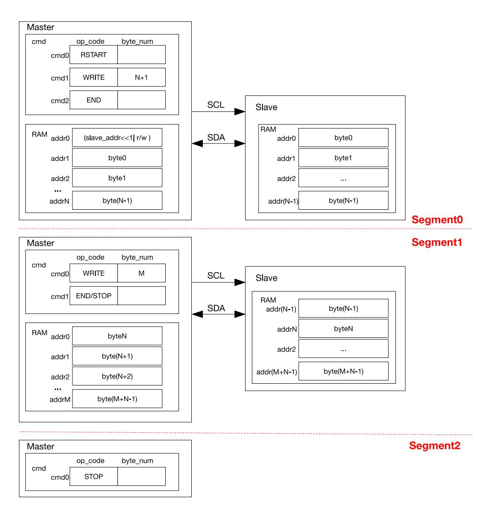
Figure 28.5-4. I2Cmaster Writing to I2Cslave with a 7-bit Address in Multiple Sequences
Given that the I2C Controller RAM holds only 32 bytes, when data are too large to be processed even by the wrapped RAM, it is advised to transmit them in multiple command sequences. At the end of every command sequence is an END command. When the controller executes this END command to pull SCL low, software refreshes command sequence registers and the RAM for next the transfer.
Figure 28.5-4 shows how I2Cmaster writes to an I2C slave in two or three segments as an example. For the first segment, the CMD_Controller registers are configured as shown in Segment0. Once data in I2Cmaster's RAM is ready and I2C_TRANS_START is set, I2Cmaster initiates data transfer. After executing the END command, I2Cmaster turns off the SCL clock and pulls SCL low to reserve the bus. Meanwhile, the controller generates an I2C_END_DETECT_INT interrupt.
For the se cond segment, afte r detecting the I2C_END_DETECT_INT interrupt, software refreshes the
CMD_Controller registers, reloads the RAM and clears this interrupt, as shown in Segment1. If cmd1 in the second segment is a STOP, then data is transmitted to I2Cslave in two segments. I2Cmaster resumes data transfer after I2C_TRANS_START is set, and terminates the transfer by sending a STOP bit.
For the third segment, after the second data transfer finishes and an I2C_END_DETECT_INT is detected, the CMD_Controller registers of I2Cmaster are configured as shown in Segment2. Once I2C_TRANS_START is set, I2Cmaster gen erates a STOP bit an d terminates the transfer.
Note that other I2Cmasters will not transact on the bus between two segments. The bus is only released after a STOP signal is sent. The I2C controller can be reset by setting I2C_FSM_RST field at any time. This fie ld will later be cleared automatically by hardware.
| 3. Configure command registers of I2Cmaster. | |||||
|---|---|---|---|---|---|
| Command registers | op_code | ack_value | ack_exp | ack_check_en byte_num | |
|
I2C_COMMAND0
(mas |
RSTART | — | — | — | — |
| ter) | |||||
| I2C_COMMAND1 (master) | WRITE | ack_value | ack_exp | 1 | N+1 |
|
Chapter 28
I2C Controller (I2C) |
GoBack | |||
|---|---|---|---|---|
| Command registers | op_code | ack_value | ack_exp | ack_check_en byte_num |
| 16. Update I2Cmaster's command registers. |
Figure 28.5-5 shows how I2Cmaster reads N bytes of data from an I2C slave using 7-bit addressing. cmd1 is a WRITE command, and when this command is executed I2Cmaster sends I2Cslave address. The byte sent comprises a 7-bit I2Cslave address and a R / W bit. When the R / W bit is 1, it indicates a READ operation. If the addres s of an I2C slave matches the sent address, this matching slave starts sending data to I2Cmaster. I2Cmaster generates acknowledgements according to ack_value defined in the READ command upon receiving a byte.
As illustrated in Figure 28.5-5, I2Cmaster executes two READ commands: it generates ACKs for (N-1) bytes of data in cmd2, and a NACK for the last byte of data in cmd 3. This configuration may be changed as required. I2Cmaster writes received data into the controller RAM from addr0, whose original content (a I2Cslave address and a R / W bit) is ove rwritten by byte0 marked red in Figure 28.5-5.
| 4. Configure command registers of I2Cmaster. | |||||
|---|---|---|---|---|---|
| Command registers | op_code | ack_value | ack_exp | ack_check_en byte_num | |
|
I2C_COMMAND0
(mas |
RSTART | — | — | — | — |
| ter) | |||||
|
I2C_COMMAND1 (master)
I2C_COMMAND2 (mas |
WRITE
READ |
0
0 |
0
0 |
1
1 |
1
N-1 |
| ter) | |||||
|
I2C_COMMAND3
(mas |
READ | 1 | 0 | 1 | 1 |
| ter) |
4. Configure com mand registers of I2C master.
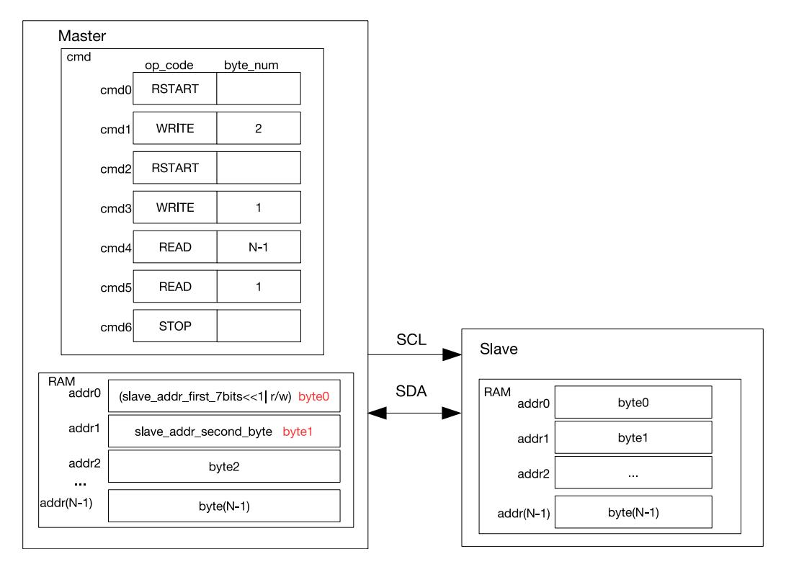
Figure 28.5-6. I2Cmaster Reading I2Cslave with a 10-bit Address
Figure 28.5-6 shows how I2Cmaster reads data from an I2C slave using 10-bit addressing. Unlike 7-bit addressing, in 10-bit addressing the WRITE command of the I2Cmaster is formed from two bytes, and correspondingly TX RAM of this master stores a 10-bit address of two bytes. The R / W bit in the first byte is 0, which indicate s a WRITE operation. After a RSTART condition, I2Cmaster sends the first byte of address again to read data from I2Cslave, but the R / W bit is 1, which indicates a READ operation. The two address bytes can be configured as described in Section 28.5.2.
| 4. Configure command registers of I2Cmaster. | |||||
|---|---|---|---|---|---|
| Command registers | op_code | ack_value | ack_exp | ack_check_en byte_num | |
|
I2C_COMMAND0
(mas |
RSTART | — | — | — | — |
| ter) | |||||
| I2C_COMMAND1 (master) | WRITE | 0 | 0 | 1 | 2 |
|
I2C_COMMAND2
(mas |
RSTART | — | — | — | — |
| ter) | |||||
|
I2C_COMMAND3
(mas |
WRITE | 0 | 0 | 1 | 1 |
|
ter)
I2C_COMMAND4 (master) |
READ | 0 | 0 | 1 | N-1 |
|
I2C_COMMAND5
(mas |
READ | 1 | 0 | 1 | 1 |
| ter) | |||||
|
I2C_COMMAND6
(mas |
STOP | — | — | — | — |
4. Configure com mand registers of I2C master.
5. Configure I2C_SLAVE_ADDR (slave) in I2C_SLAVE_ADDR_REG (slave) as I2Cslave's 10-bit address, and set
I2C_ADDR_10BIT_EN (slave) to 1 to enable 10-bit addressing.
sends a byte. When ack_check_en (master) is 0, I2Cmaster does not check ACK value and take I2Cslave as matching slave by default.
Figure 28.5-7. I2Cmaster Reading N Bytes of Data from addrM of I2Cslave with a 7-bit Address
Figure 28.5-7 shows how I2Cmaster reads data from specified addresses in an I2C slave. I2Cmaster sends two bytes of addresses: the first byte is a 7-bit I2Cslave address followed by a R / W bit, which is 0 and indicates a WRITE; the second byte is I2Cslave's memory address. After a RSTART condition, I2Cmaster sends the first byte of add ress ag ain, but the R / W bit is 1 which indicates a READ. Then, I2Cmaster reads data starting from addrM.
|
Command registers
I2C_COMMAND0 (mas |
op_code
RSTART |
ack_value
— |
ack_exp
— |
— |
ack_check_en byte_num
— |
| ter) | |||||
| I2C_COMMAND1 (master) | WRITE | 0 | 0 | 1 | 2 |
|
Chapter 28
I2C Controller (I2C) |
GoBack | ||||
|---|---|---|---|---|---|
|
I2C_COMMAND2
(mas |
RSTART | — | — | — | — |
| ter) | |||||
|
I2C_COMMAND3
(mas |
WRITE | 0 | 0 | 1 | 1 |
| ter) | |||||
| I2C_COMMAND4 (master) | READ | 0 | 0 | 1 | N-1 |
|
I2C_COMMAND5
(mas |
READ | 1 | 0 | 1 | 1 |
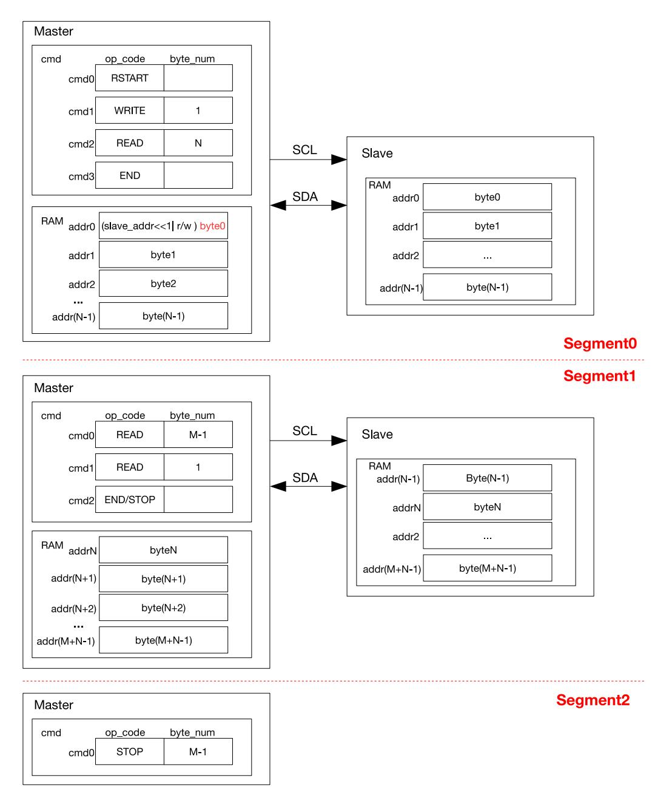
Figure 28.5-8 shows how I2Cmaster reads (N+M) bytes of data from an I2C slave in two/three segments separated by END commands. Configuration procedures are described as follows:
read from I2Cslave in two segments. I2Cmaster resumes data transfer by setting I2C_TRANS_START and terminates the transfer by sending a STOP bit.
3. If cmd2 in Segment1 is an END, then data is read from I2Cslave in three segments. After the second data transfer finishes and an I2C_END_DETECT_INT interrupt is detected, the cmd box is configured as shown in Segment2. Once I2C_TRANS_START is set, I2Cmaster terminates the transfer by sending a STOP bit.
| 4. Configure command registers of I2Cmaster. | |||||
| Command registers | op_code | ack_value | ack_exp | ack_check_en byte_num | |
|
I2C_COMMAND0
(mas |
RSTART | — | — | — | — |
| ter) | |||||
| I2C_COMMAND1 (master) | WRITE | 0 | 0 | 1 | 1 |
|
I2C_COMMAND2
(mas |
READ | 0 | 0 | 1 | N |
| ter) |
| 17. Update I2Cmaster's command registers using one of the following two methods: | |||||||||
| Command registers | op_code | ack_value | ack_exp | ack_check_en byte_num | |||||
|
I2C_COMMAND0
(mas |
READ | ack_value | ack_exp | 1 | M | ||||
Or
| Or | |||||||
|---|---|---|---|---|---|---|---|
| Command registers | op_code | ack_value | ack_exp | ack_check_en byte_num | |||
|
I2C_COMMAND0
(mas |
READ | 0 | 0 | 1 | M-1 | ||
| ter) | |||||||
|
I2C_COMMAND0
(mas |
READ | 1 | 0 | 1 | 1 | ||
| Command registers | op_code | ack_value | ack_exp | ack_check_en byte_num |
The addresses in this section are relative to I2C Controller base address provided in Table 3.3-3 in Chapter 3 System and Memory .
The abbreviations given in Column Access are explained in Section Access Types for Registers .
| System and Memory. | |||
|---|---|---|---|
| The abbreviations given in Column Access are explained in Section Access Types for Registers. | |||
|
Name
Timing registers I2C_SCL_LOW_PERIOD_REG |
Description
Configures the low level width of SCL |
Address
0x0000 |
Access
R/W |
| I2C_SDA_HOLD_REG |
Configures the hold time after a negative SCL
edge |
0x0030 | R/W |
| Configures the sample time after a positive | |||
|
I2C_SDA_SAMPLE_REG
I2C_SCL_HIGH_PERIOD_REG |
SCL edge
Configures the high level width of SCL |
0x0034
0x0038 |
R/W
R/W |
| I2C_SCL_START_HOLD_REG |
Configures the delay between the SDA and
SCL negative edge for a START condition |
0x0040 | R/W |
| I2C_SCL_RSTART_SETUP_REG |
Configures the delay between the positive
edge of SCL and the negative edge of SDA |
0x0044 | R/W |
| I2C_SCL_STOP_HOLD_REG |
Configures the delay after the SCL clock edge
for a STOP condition |
0x0048 | R/W |
| I2C_SCL_STOP_SETUP_REG | Configures the delay between the SDA and | 0x004C | R/W |
| SCL positive edge for a STOP condition | |||
| I2C_SCL_ST_TIME_OUT_REG | SCL status timeout register | 0x0078 | R/W |
|
I2C_SCL_MAIN_ST_TIME_OUT_REG
Configuration registers |
SCL main status timeout register | 0x007C | R/W |
| I2C_CTR_REG | Transmission configuration register | 0x0004 | varies |
| I2C_TO_REG | Timeout control register | 0x000C | R/W |
| I2C_SLAVE_ADDR_REG | Slave address configuration register | 0x0010 | R/W |
| I2C_FIFO_CONF_REG | FIFO configuration register | 0x0018 | R/W |
| I2C_FILTER_CFG_REG | SCL and SDA filter configuration register | 0x0050 | R/W |
| I2C_CLK_CONF_REG | I2C clock configuration register | 0x0054 | R/W |
| I2C_SCL_SP_CONF_REG | Power configuration register | 0x0080 | varies |
| I2C_SCL_STRETCH_CONF_REG | Configures SCL clock stretching | 0x0084 | varies |
| Status registers | |||
| I2C_SR_REG | Describes I2C work status | 0x0008 | RO |
| I2C_FIFO_ST_REG | FIFO status register | 0x0014 | RO |
| I2C_DATA_REG | Read/write FIFO register | 0x001C | R/W |
| Interrupt registers | |||
| I2C_INT_RAW_REG | Raw interrupt status | 0x0020 | R/SS/WTC |
| I2C_INT_CLR_REG | Interrupt clear bits | 0x0024 | WT |
|
I2C_INT_ENA_REG
I2C_INT_STATUS_REG |
Interrupt enable bits
Status of captured I2C communication events |
0x0028
0x002C |
R/W
RO |
| Command registers | |||
|
Chapter 28
I2C Controller (I2C) |
GoBack | ||
| Name | Description | Address | Access |
| I2C_COMD1_REG | I2C command register 1 | 0x005C | varies |
| I2C_COMD2_REG | I2C command register 2 | 0x0060 | varies |
| I2C_COMD3_REG | I2C command register 3 | 0x0064 | varies |
| I2C_COMD4_REG | I2C command register 4 | 0x0068 | varies |
| I2C_COMD5_REG | I2C command register 5 | 0x006C | varies |
|
I2C_COMD6_REG
I2C_COMD7_REG |
I2C command register 6
I2C command register 7 |
0x0070
0x0074 |
varies
varies |
The addresses in this section are relative to I2C Controller base address provided in Table 3.3-3 in Chapter 3 System and Memory .
I2C_SCL_LOW_PERIOD This field is used to configure how long SCL remains low in master mode, in I2C module clock cycles. (R/W)
I2C_SDA_HOLD_TIME This field is used to configure the time to hold the data after the falling edge of SCL, in I2C module clock cycles. (R/W)
I2C_SDA_SAMPLE_TIME This field is used to configure how long SDA is sampled, in I2C module clock cycles. (R/W)
I2C_SCL_START_HOLD_TIME This field is used to configure the time between the falling edge of SDA and the falling edge of SCL for a START condition, in I2C module clock cycles. (R/W)
I2C_SCL_RSTART_SETUP_TIME This field is used to configure the time between the rising edge of SCL and the falling edge of SDA for a RSTART condition, in I2C module clock cycles. (R/W)
I2C_SCL_STOP_HOLD_TIME This field is used to configure the delay after the STOP condition, in I2C module clock cycles. (R/W)
I2C_SCL_STOP_SETUP_TIME This field is used to configure the time between the rising edge of SCL and the rising edge of SDA, in I2C module clock cycles. (R/W)
I2C_SCL_MAIN_ST_TO_I2C The maximum time that SCL_MAIN_FSM remains unchanged. It should be no more than 23. (R/W)
I2C_TIME_OUT_VALUE This field is used to configure the timeout value for receiving a data bit in I2C_SCLK clock cycles. The configured timeout value equals 2 I 2 C _ T IME _ OUT _ V ALUE clock cycles. (R/W)
I2C_TIME_OUT_EN This is the enable bit for timeout control. (R/W)
I2C_SCL_FILTER_EN This is the filter enable bit for SCL. (R/W)
I2C_SDA_FILTER_EN This is the filter enable bit for SDA. (R/W)

I2C_SCLK_DIV_NUM The integral part of the divisor. (R/W)
I2C_SCLK_ACTIVE The clock switch bit for the I2C controller. (R/W)
I2C_RESP_REC The received ACK value in master mode or slave mode. 0: ACK; 1: NACK. (RO)
I2C_SLAVE_RW When in slave mode, 0: master writes to slave; 1: master reads from slave. (RO)
I2C_RXFIFO_RADDR This is the offset address of the APB reading from RX FIFO. (RO)
I2C_RXFIFO_WADDR This is the offset address of the I2C controller receiving data and writing to RX FIFO. (RO)
I2C_TXFIFO_RADDR This is the offset address of the I2C controller reading from TX FIFO. (RO)
I2C_TXFIFO_WADDR This is the offset address of APB bus writing to TX FIFO. (RO)
I2C_SLAVE_RW_POINT The received data in I2C slave mode. (RO)
I2C_FIFO_RDATA This field is used to read data from RX FIFO, or write data to TX FIFO. (R/W)
I2C_RXFIFO_WM_INT_RAW The raw interrupt bit for the I2C_RXFIFO_WM_INT interrupt. (R/SS/WTC)
I2C_TXFIFO_WM_INT_RAW The raw interrupt bit for the I2C_TXFIFO_WM_INT interrupt. (R/SS/WTC)
Continued on the next page...
Continued from the previous page...
I2C_SCL_ST_TO_INT_RAW The raw interrupt bit for the I2C_SCL_ST_TO_INT interrupt. (R/SS/WTC)
I2C_RXFIFO_WM_INT_CLR Set this bit to clear the I2C_RXFIFO_WM_INT interrupt. (WT)
I2C_TXFIFO_WM_INT_CLR Set this bit to clear the I2C_TXFIFO_WM_INT interrupt. (WT)
I2C_RXFIFO_OVF_INT_CLR Set this bit to clear the I2C_RXFIFO_OVF_INT interrupt. (WT)
I2C_END_DETECT_INT_CLR Set this bit to clear the I2C_END_DETECT_INT interrupt. (WT)
I2C_MST_TXFIFO_UDF_INT_CLR Set this bit to clear the I2C_MST_TXFIFO_UDF_INT interrupt. (WT)
I2C_TRANS_START_INT_CLR Set this bit to clear the I2C_TRANS_START_INT interrupt. (WT)
I2C_NACK_INT_CLR Set this bit to clear the I2C_NACK_INT interrupt. (WT)
I2C_TXFIFO_OVF_INT_CLR Set this bit to clear the I2C_TXFIFO_OVF_INT interrupt. (WT)
I2C_RXFIFO_UDF_INT_CLR Set this bit to clear the I2C_RXFIFO_UDF_INT interrupt. (WT)
I2C_SCL_ST_TO_INT_CLR Set this bit to clear the I2C_SCL_ST_TO_INT interrupt. (WT)
I2C_SLAVE_STRETCH_INT_CLR Set this bit to clear the I2C_SLAVE_STRETCH_INT interrupt. (WT)
I2C_GENERAL_CALL_INT_CLR Set this bit for the I2C_GENARAL_CALL_INT interrupt. (WT)
I2C_RXFIFO_WM_INT_ENA The interrupt enable bit for the I2C_RXFIFO_WM_INT interrupt. (R/W) I2C_TXFIFO_WM_INT_ENA The interrupt enable bit for the I2C_TXFIFO_WM_INT interrupt. (R/W)
I2C_RXFIFO_OVF_INT_ENA The interrupt enable bit for the I2C_RXFIFO_OVF_INT interrupt. (R/W)
| Register 28.25. I2C_INT_STATUS_REG (0x002C) |
I2C_SLAVE_STRETCH_INT_ST
I2C_GENERAL_CALL_INT_ST |
I2C_DET_START_INT_ST |
I2C_SCL_MAIN_ST_TO_INT_ST
I2C_RXFIFO_UDF_INT_ST I2C_TXFIFO_OVF_INT_ST I2C_SCL_ST_TO_INT_ST |
I2C_TRANS_START_INT_ST |
I2C_TRANS_COMPLETE_INT_ST
I2C_MST_TXFIFO_UDF_INT_ST |
I2C_BYTE_TRANS_DONE_INT_ST
I2C_ARBITRATION_LOST_INT_ST I2C_END_DETECT_INT_ST I2C_RXFIFO_OVF_INT_ST I2C_TXFIFO_WM_INT_ST |
|||||||||||||
|---|---|---|---|---|---|---|---|---|---|---|---|---|---|---|---|---|---|---|---|
| I2C_NACK_INT_ST | I2C_TIME_OUT_INT_ST | ||||||||||||||||||
Continued on the next page...
Continued from the previous page...
I2C_COMMAND0 This is the content of command register 0. It consists of three parts:
(R/W)
I2C_COMMAND0_DO NE When command 0 has been executed in master mode, this bit changes to high level. (R/W/SS)
I2C_COMMAND1 This is the content of command register 1. It is the same as that of I2C_COMMAND0. (R/W)
I2C_COMMAND1_DONE When command 1 has been executed in master mode, this bit changes to high level. (R/W/S S)
I2C_COMMAND4 This is the content of command register 4. It is the same as that of I2C_COMMAND0. (R/W)
I2C_COMMAND4_DONE When command 4 has been executed in master mode, this bit changes to high level. (R/W /SS)
I2C_COMMAND7 This is the content of command register 7. It is the same as that of I2C_COMMAND0. (R/W)
I2C_COMMAND7_DONE When command 7 has been executed in master mode, this bit changes to high level. (R/W/S S)
I2C_DATE This is the version control register. (R/W)
ESP32-C3 has a built-in I2S interface, which provides a flexible communication interface for streaming digital data in multimedia applications, especially digital audio applications.
The I2S standard bus defines three signals: a bit clock signal (BCK), a channel/word select signal (WS), and a serial data signal (SD). A basic I2S data bus has one master and one slave. The roles remain unchanged throughout the communication. The I2S module on ESP32-C3 provides separate transmit (TX) and receive (RX) units for high performance.
To better illustrate the functionality of I2S, the following terms are used in this chapter.
| To better illustrate the functionality of I2S, the following terms are used in this chapter. | |
|---|---|
| Master mode | As a master, I2S drives BCK/WS signals, and sends data to or |
| receives data from a slave. | |
| Slave mode |
As a slave, I2S is driven by BCK/WS signals, and receives data
from or sends data to a master. |
| Full-duplex | There are two separate data lines. Transmitted and received data |
| are carried simultaneously. | |
| Half-duplex | Only one side, the master or the slave, sends data first, and the |
| other side receives data. Sending data and receiving data can not | |
| happen at the same time. | |
| A-law and µ-law | A-law and µ-law are compression/decompression algorithms in |
| digital pulse code modulated (PCM) non-uniform quantization, | |
| which can effectively improve the signal-to-quantization noise ra | |
| tio. | |
| TDM RX mode | In this mode, pulse code modulated (PCM) data is received and |
| stored into memory via direct memory access (DMA), utilizing time | |
| division multiplexing (TDM). The signal lines include: BCK, WS, | |
|
and SD. Data from 16 channels at most can be received.
TDM Philips standard, TDM MSB alignment standard, and TDM PCM |
|
| standard are supported in this mode, depending on user config | |
| uration. | |
| Normal PDM RX mode | In this mode, pulse density modulation (PDM) data is received |
| and stored into memory via DMA. Used signals: WS and DATA. | |
|
Chapter 29
I2S Controller (I2S) |
|
|---|---|
| TDM TX mode | In this mode, pulse code modulated (PCM) data is sent from |
| memory via DMA, in a way of time division multiplexing (TDM). The | |
| signal lines include: BCK, WS, and DATA. Data up to 16 channels | |
| can be sent. TDM Philips standard, TDM MSB alignment standard, | |
| and TDM PCM standard are supported in this mode, depending | |
| on user configuration. | |
| Normal PDM TX mode | In this mode, pulse density modulation (PDM) data is sent from |
| memory via DMA. The signal lines include: WS and DATA. PDM | |
| standard is supported in this mode by user configuration. | |
| PCM-to-PDM TX mode |
In this mode, I2S as a master, converts the pulse code modulated
(PCM) data from memory via DMA into pulse density modulation |
Figure 29.4-1. ESP32-C3 I2S System Diagram
Figure 29.4-1 shows the structure of ESP32-C3 I2S module, consisting of:
I2S module supports direct access (DMA) to internal memory, see Chapter 2 GDMA Controller (GDMA) .
Both the TX unit and the RX unit have a three-line interface that includes a bit clock line (BCK), a word select line (WS), and a serial data line (SD). The SD line of the TX unit is fixed as output, and the SD line of the RX unit as input. BCK and WS signal lines for TX unit and RX unit can be configured as master output mode or slave input mode.
The signal bus of I2S module is shown at the right part of Figure 29.4-1. The naming of these signals in RX and TX units follows the pattern: I2SA_B_C, such as I2SI_BCK_in.
Espressif Systems 732
Table 29.4-1 provides a detailed description of I2S signals.
| Table 29.4-1. I2S Signal Description | ||
| Signal | Direction | Function |
| I2SI_BCK_in | Input | In I2S slave mode, inputs BCK signal for RX unit. |
| I2SI_BCK_out | Output | In I2S master mode, outputs BCK signal for RX unit. |
| I2SI_WS_in | Input | In I2S slave mode, inputs WS signal for RX unit. |
| I2SI_WS_out | Output | In I2S master mode, outputs WS signal for RX unit. |
| I2SI_Data_in | Input | Works as the serial input data bus for I2S RX unit. |
| I2SO_Data_out | Output | Works as the serial output data bus for I2S TX unit. |
| I2SO_BCK_in | Input | In I2S slave mode, inputs BCK signal for TX unit. |
| I2SO_BCK_out | Output | In I2S master mode, outputs BCK signal for TX unit. |
| I2SO_WS_in | Input | In I2S slave mode, inputs WS signal for TX unit. |
| I2SO_WS_out | Output | In I2S master mode, outputs WS signal for TX unit. |
| I2S_MCLK_in | Input | In I2S slave mode, works as a clock source from the external mas |
Any required signals of I2S must be mapped to the chip's pins via GPIO matrix, see Chapter 5 IO MUX and GPIO Matrix (GPIO, IO MUX) .
ESP32-C3 I2S supports multiple audio standards, including TDM Philips standard, TDM MSB alignment standard, TDM PCM standard, and PDM standard.
Select the needed standard by configuring the following bits:
Philips specifications require that WS signal changes one BCK clock cycle earlier than SD signal on BCK falling edge, which means that WS signal is valid from one clock cycle before transmitting the first bit of channel data and changes one clock before the end of channel data transfer. SD signal line transmits the most significant bit of audio data first.
Compared with Philips standard, TDM Philips standard supports multiple channels, see Figure 29.5-1.
Figure 29.5-1. TDM Philips Standard Timing Diagram
MSB alignment specifications require WS and SD signals change simultaneously on the falling edge of BCK. The WS signal is valid until the end of channel data transfer. The SD signal line transmits the most significant bit of audio data first.
Compared with MSB alignment standard, TDM MSB alignment standard supports multiple channels, see Figure 29.5-2.
Figure 29.5-2. TDM MSB Alignment Standard Timing Diagram
Short frame synchronization under PCM standard requires WS signal changes one BCK clock cycle earlier than SD signal on the falling edge of BCK, which means that the WS signal becomes valid one clock cycle before transferring the first bit of channel data and remains unchanged in this BCK clock cycle. SD signal line transmits the most significant bit of audio data first.
Compared with PCM standard, TDM PCM standard supports multiple channels, see Figure 29.5-3.
Figure 29.5-3. TDM PCM Standard Timing Diagram
Under PDM standard, WS signal changes continuously during data transmission. The low-level and high-level of this signal indicates the left channel and right channel, respectively. WS and SD signals change simultaneously on the falling edge of BCK, see Figure 29.5-4.
Figure 29.5-4. PDM Standard Timing Diagram
I2S_TX/RX_CLK is the master clock of I2S TX/RX unit, divided from:
The serial clock (BCK) of the I2S TX/RX unit is divided from I2S_TX/RX_CLK, as shown in Figure 29.6-1. I2S_TX/RX_CLK_SEL is used to select clock source for TX/RX unit, and I2S_TX/RX_CLK_ACTIVE to enable or disable the clock source.
Figure 29.6-1. I2S Clock
The following formula shows the relation between I2S_TX/RX_CLK frequency f I2S_TX/RX_CLK and the divider clock source frequency f I2S_CLK_S:
N is an integer value between 2 and 256. The value of N corresponds to the value of I2S_TX/RX_CLKM_DIV_NUM in register I2S_TX/RX_CLKM_CONF_REG as follows:
The values of "a" and "b" in fractional div ider depend only on x, y, z, and yn1. The corresponding formulas are as follows:
The values of x, y, z, and yn1 are configured in I2S_TX/RX_CLKM_DIV_X, I2S_TX/RX_CLKM_DIV_Y, I2S_TX/RX_CLKM_DIV_Z, and I2S_TX/RXCLKM_DIV_YN1. To configure the integer divider, clear I2S_TX/RX_CLKM_DIV_X and I2S_TX/RX_CLKM_DIV_Z, then set I2S_TX/RX_CLKM_DIV_Y to 1.
Using fractional divider m ay in troduce some clock jitter.
In master TX mode, the serial clock BCK for I2S TX unit is I2SO_BCK_out, divided from I2S_TX_CLK. That is:
"MO" is an integer value:
MO = I2S_TX_BCK_DIV_NUM + 1
I2S_TX_BCK_DIV_NUM must not be configure d as 1.
In master RX mode, the serial clock BCK for I2S RX unit is I2SI_BCK_out, divided from I2S_RX_CLK. That is:
"MI" is an integer value:
MI = I2S_RX_BCK_DIV_NUM + 1
The units and FIFOs in I2S module are reset by the following bits.
I2S module clock must be configured fir st before the module an d FIF O are reset.
The ESP32-C3 I2S module can operate as a master or a slave in half-duplex and full-duplex communication modes, depending on the configuration of I2S_RX_SLAVE_MOD and I2S_TX_SLAVE_MOD.
Updating the configuration described in this and subsequent sections requires to set I2S_TX_UPDATE accordingly, to synchronize registers from APB clock domain to TX clock domain. For more detailed configuration, see Section 29.11.1.
In TX mode, I2S first reads data from DMA and sends these data out via output signals according to the configured data mode and channel mode.
Data format is controlled in the following phases:
The bit width of valid data in each channel is determined by I2S_TX_BITS_MOD and I2S_TX_24_FILL_EN, see the table below.
| Table 29.9-1. Bit Width of Channel Valid Data | ||
| Channel Valid Data Width | I2S_TX_BITS_MOD | I2S_TX_24_FILL_EN |
| 32 | 31 | x |
| 23 |
1 This value is ignored.
When I2S reads data from DMA, the data endian under various data width is controlled by I2S_TX_BIG_ENDIAN, see the table below.
| Table 29.9-2. Endian of Channel Valid Data | |||
|---|---|---|---|
| Origin Data | |||
| Channel Valid Data Width | Endian of Processed Data | I2S_TX_BIG_ENDIAN | |
| 32 | {B3, B2, B1, B0} | {B3, B2, B1, B0} | |
| {B0, B1, B2, B3} | |||
| 24 | {B2, B1, B0} | {B2, B1, B0} | |
| {B0, B1, B2} | |||
| 16 | {B1, B0} | {B1, B0} |
ESP32-C3 I2S compresses/decompresses the valid data into 32-bit by A-law or by µ -law. If the bit width of valid data is smaller than 32, zeros are filled to the extra high bits of the data to be compressed/decompressed by default.
Note:
Extra high bits here mean the bits[31: channel valid data width] of the data to be compressed/decompressed.
Configure I2S_TX_PCM_CONF to:
At this point, the first phase of data format control is complete.
The TX data width in each channel is determined by I2S_TX_TDM_CHAN_BITS.
At this point, the second phase of data format control is complete.
The data bit order in each channel is controlled by I2S_TX_BIT_ORDER:
At this point, the data format control is complete. Figure 29.9-1 shows a complete process of TX data format control.
Figure 29.9-1. TX Data Format Control
ESP32-C3 I2S supports both TDM TX mode and PDM TX mode. Set I2S_TX_TDM_EN to enable TDM TX mode, or set I2S_TX_PDM_EN to enable PDM TX mode.
In TDM TX mode, I2S supports up to 16 channels to output data. The total number of TX channels in use is controlled by I2S_TX_TDM_TOT_CHAN_NUM. For example, if I2S_TX_TDM_TOT_CHAN_NUM is set to 5, six channels in total (channel 0 ~ 5) will be used to transmit data, see Figure 29.9-2.
In these TX channels, if I2S_TX_TDM_CHANn_EN is set to:
In TDM TX master mode, WS signal is controlled by I2S_TX_WS_IDLE_POL and I2S_TX_TDM_WS_WIDTH:
I2S_T X_HALF_SAMPLE_BITS x 2 is equal to the BCK cycles in one WS period.
In this example, register confi guration is as follows:
Once the configuration is done, data is transmitted as follows.
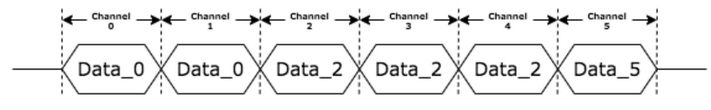
Figure 29.9-2. TDM Channel Control
ESP32-C3 I2S supports two PDM TX modes, namely, normal PDM TX mode and PCM-to-PDM TX mode.
In PDM TX mode, fetching data from DMA is controlled by I2S_TX_MONO and I2S_TX_MONO_FST_VLD, see Table 29.9-3. Please configure the two bits according to the data stored in memory, be it the single-channel or dual-channel data.
| Table 29.9-3. Data-Fetching Control in PDM TX Mode | |||
|---|---|---|---|
| Data-Fetching Control Option | Mode | I2S_TX_MONO | I2S_TX_MONO_FST_VLD |
| Post data-fetching request to DMA at any | Stereo mode | 0 | |
| edge of WS signal | |||
| Post data-fetching request to DMA only at | Mono mode | 1 | |
| the second half period of WS signal |
Table 29.9-3. Data-Fetching Control in PDM T X Mode
In normal PDM TX mode, I2S channel mode is controlled by I2S_TX_CHAN_MOD and I2S_TX_WS_IDLE_POL, see the table below.
| Table 29.9-4. I2S Channel Control in Normal PDM TX Mode | Mode | |||
|---|---|---|---|---|
| Channel | Left Channel | Right Channel | Control | |
|
Control
Op tion Stereo mode Mono mode |
Field1 | |||
| Transmit the left channel data | Transmit the right channel data | 0 | ||
| Transmit the left channel data | Transmit the left channel data | 1 | ||
|
Transmit the right channel data
Transmit the right channel data |
Transmit the right channel data
Transmit the right channel data |
1
2 |
||
| Transmit the left channel data | Transmit the left channel data | 2 | ||
| Transmit the value of "single"3 | Transmit the right channel data | 3 | ||
1 I2S_TX_CHAN_MOD
2 I2S_TX_WS_IDLE_POL
3 The "single" value is equal to the value of I2S_SINGLE_DATA.
In P DM TX aster mode, the W S level of I2S module is controlled by I2S_TX_WS_IDLE_POL. The frequency of WS signal is half of BCK frequency. The config uration of WS signa l is similar to that of BCK signal, see Section 29.6 and Figure 29.9-3.
In PCM-to-PDM TX mode, the PCM data from DMA is converted to PDM data and then out put in PDM signal format. Configure I2S_PCM2PDM_CONV_EN to enable this mode.
The register co nfigurati on for PCM-to-PDM TX mode is as follows:
• Configure 1-l ine PDM output format or 1- /2-line DAC output mode as the table below:
| Table 29.9-5. PCM-to-PDM TX Mode | ||
|---|---|---|
| Channel Output Format | I2S_TX_PDM_DAC_MODE_EN | I2S_TX_PDM_DAC_2OUT_EN |
| 1-line PDM output format1 | 0 | |
| 1-line DAC output format2 | 1 |
1. In PDM output format, SD data of two channels is sent out in one WS period.
2. In DAC output format, SD data of one channel is sent out in one WS period.
• Configure sampling frequency and upsampling rate
In PCM-to-PDM TX mode, PDM clock frequency is equal to BCK frequency. The relation of sampling frequency ( f Sampling) and BCK frequency is as follows:
Upsampling rate (OSR) is related to I2S_TX_PDM_SINC_OSR2 as follows:
OSR = I2S_TX_PDM_SINC_OSR2 × 64
Sampling frequency f Sampling is related to I2S_TX_PDM_FS as follows:
f Sampling = I2S_TX_PDM_FS × 100
Configure the registers according to nee ded sampling freq uency, upsampling rate, and PDM clock frequency.
In this example, the register configuration is as follows.
Once the configuration is done, the channel data is transmitted as follows.

I2S_TX_CHAN_MOD = 2; I2S_TX_WS_IDLE_POL = 1;
Figure 29.9-3. PDM Channel Control Example
Updating the configuration described in this and subsequent sections requires setting I2S_RX_UPDATE, to synchronize registers from APB clock domain to RX clock domain. For more detailed configuration, see Section 29.11.2.
In RX mode, I2S first reads data from peripheral interface, and then stores the data into memory via DMA, according to the configured channel mode and data mode.
ESP32-C3 I2S supports both TDM RX mode and PDM RX mode. Set I2S_RX_TDM_EN to enable TDM RX mode, or set I2S_RX_PDM_EN to enable PDM RX mode.
Espressif Systems 745
I2S_RX_TDM_EN and I2S_RX_PDM_EN must not be cleared or set simultaneously.
In TDM RX mode, I2S supports up to 16 channels to input data. The total number of RX channels in use is controlled by I2S_RX_TDM_TOT_CHAN_NUM. For example, if I2S_RX_TDM_TOT_CHAN_NUM is set to 5, channel 0 ~ 5 will be used to receive data.
In these RX channels, if I2S_RX_TDM_CHANn_EN is set to:
In TDM RX master mode, WS signal is controlled by I2S_RX_WS_IDLE_POL and I2S_RX_TDM_WS_WIDTH.
I2S_ RX_HALF_SAMPLE_BITS x 2 is equal to the BCK cycles in one WS period.
In PDM RX mode, I2S convert s the serial data from channels to the data to be entered into memory.
In PDM RX master mode, the default level of WS signal is controlled by I2S_RX_WS_IDLE_POL. WS frequency is half of BCK frequency. The configuration of BCK signal is similar to that of WS signal as described in Section 29.6. Note, in PDM RX mode, the value of I2S_RX_HALF_SAMPLE_BITS must be same as that of I2S_RX_BITS_MOD.
Data format is contr olled in the following phases:
The channel data will be stored as the data to be input in order from high to low. The data bit order in each channel is controlled by I2S_RX_BIT_ORDER:
At this point, the first phase of data format control is complete.
The storage data width in each channel is controlled by I2S_RX_BITS_MOD and I2S_RX_24_FILL_EN, see the table below.
| Table 29.10-1. Channel Storage Data Width | ||
|---|---|---|
|
Channel
Storage |
I2S_RX_BITS_MOD | I2S_RX_24_FILL_EN |
| Data Width | ||
| 32 |
31
23 |
x |
The RX data width in each channel is determined by I2S_RX_TDM_CHAN_BITS.
The received data is then converted into storage data (to be stored to memory) after some processing, such as discarding extra bits or filling zeros in missing bits. The endian of the storage data is controlled by I2S_RX_BIG_ENDIAN under various data width, see the table below.
|
Channel
Storage |
Origin Data | Endian of Processed | I2S_RX_BIG_ENDIAN |
|---|---|---|---|
| Data Width | {B3, B2, B1, B0} | Data | |
| 32 | {B3, B2, B1, B0} | ||
| {B2, B1, B0} | {B0, B1, B2, B3} | ||
| 24 | {B2, B1, B0} | ||
| {B0, B1, B2} | |||
| 16 | {B1, B0} | {B1, B0} | |
| {B0, B1} |
| Table 29.10-2. Channel Storage Data Endian | ||
|---|---|---|
ESP32-C3 I2S compresses/decompresses the storage data in 32-bit by A-law or by µ -law. By default, zeros are filled into high bits.
Configure I2S_RX_PCM_BYPASS to:
Configure I2S_RX_PCM_CONF to:
At this point, the data format control is complete. Data then is stored into memory via DMA.
Follow the steps below to configure I2S as TX mode via software:
Espre ssif Systems 748
Follow the steps below to configure I2S as RX mode via software:
• I2S_TX_HUNG_INT: triggered when transmitting data is timed out. For example, if module is configured as TX slave mode, but the master does not provide BCK or WS signal for a long time (specified in I2S_LC_HUNG_CO
NF_REG), then this interrupt will be triggered.
The abbreviations given in Column Access are explained in Section Access Types for Registers .
|
Chapter 29
I2S Controller (I2S) GoBack |
|||||
| Name | Description | Address | Access | ||
| Interrupt registers | |||||
| I2S_INT_RAW_REG | I2S interrupt raw register | 0x000C | RO/WTC/SS | ||
|
I2S_INT_ST_REG
I2S interrupt status register 0x0010 RO |
|||||
| I2S_INT_ENA_REG | I2S interrupt enable register | 0x0014 | R/W | ||
| I2S_INT_CLR_REG | I2S interrupt clear register | 0x0018 | WT | ||
| RX control and configuration registers | |||||
| I2S_RX_CONF_REG | I2S RX configuration register | 0x0020 | varies | ||
|
I2S_RX_CONF1_REG
I2S_RX_CLKM_CONF_REG |
I2S RX configuration register 1
I2S RX clock configuration register |
0x0028
0x0030 |
R/W
R/W |
||
| I2S_TX_PCM2PDM_CONF_REG | I2S TX PCM-to-PDM configuration register | 0x0040 | R/W | ||
| I2S_TX_PCM2PDM_CONF1_REG | I2S TX PCM-to-PDM configuration register 1 | 0x0044 | R/W | ||
|
I2S_RX_TDM_CTRL_REG
I2S TX TDM mode control register 0x0050 R/W |
|||||
| I2S_RXEOF_NUM_REG | I2S RX data number control register | 0x0064 | R/W | ||
| TX control and configuration registers | |||||
| I2S_TX_CONF_REG | I2S TX configuration register | 0x0024 | varies | ||
| I2S_TX_CONF1_REG | I2S TX configuration register 1 | 0x002C | R/W | ||
| I2S_TX_CLKM_CONF_REG |
I2S TX clock configuration register
0x0034 R/W |
||||
|
I2S_TX_TDM_CTRL_REG
I2S TX TDM mode control register |
0x0054 | R/W | |||
| RX clock and timing registers | |||||
|
I2S_RX_CLKM_DIV_CONF_REG
I2S RX unit clock divider configuration register 0x0038 R/W |
|||||
| I2S_RX_TIMING_REG | I2S RX timing control register | 0x0058 | R/W | ||
| TX clock and timing registers | |||||
|
I2S_TX_CLKM_DIV_CONF_REG
I2S TX unit clock divider configuration register 0x003C R/W I2S_TX_TIMING_REG I2S TX timing control register 0x005C R/W |
|||||
| Control and configuration registers | |||||
| I2S_LC_HUNG_CONF_REG | I2S timeout configuration register | 0x0060 | R/W | ||
|
I2S_CONF_SIGLE_DATA_REG
I2S single data register 0x0068 R/W |
|||||
| TX status register | |||||
|
I2S_STATE_REG
I2S TX status register 0x006C RO |
|||||
| Version register | |||||
I2S_RX_DONE_INT_RAW The raw interrupt status bit for I2S_RX_DONE_INT interrupt. (RO/WTC/SS)
I2S_TX_DONE_INT_RAW The raw interrupt status bit for I2S_TX_DONE_INT interrupt. (RO/WTC/SS)
I2S_RX_HUNG_INT_RAW The raw interrupt status bit for I2S_RX_HUNG_INT interrupt. (RO/WTC/SS)
I2S_TX_HUNG_INT_RAW The raw interrupt status bit for I2S_TX_HUNG_INT interrupt. (R O/WTC/SS)
Register 29.2. I2S_INT_ST _REG (0x0010)
I2S_TX_HUNG_INT_CLR Set this bit to clear I2S_TX_HUNG_INT interrupt. (WT)
Register 29.7. I2S_RX_CLKM_CONF_REG (0x0030)
I2S_RX_CLKM_DIV_NUM Integral I2S clock divider value. (R/W)
I2S_RX_CLK_ACTIVE Clock enable signal of I2S RX unit. (R/W)
I2S_TX_PDM_SINC_OSR2 I2S TX PDM OSR value. (R/W)
I2S_PCM2PDM_CONV_EN Enable bit for I2S TX PCM-to-PDM conversion. (R/W)
I2S_TX_PDM_FS I2S PDM TX upsampling parameter. (R/W)
I2S_RX_EOF_NUM The bit length of RX data is (I2S_RX_BITS_MOD + 1) * (I2S_RX_EOF_NUM + 1). Once the length of received data reaches such bit length, an in_suc_eof interrupt is triggered in the configured DMA RX channel. (R/W)
I2S_TX_CLKM_DIV_NUM Integral I2S TX clock divider value. (R/W)
I2S_TX_CLK_ACTIVE I2S TX unit clock enable signal. (R/W)
I2S_TX_CLK_SEL Select clock clock for I2S TX unit. 0: XTAL_CLK. 1: PLL_D2_CLK. 2: PLL_F160M_CLK. 3: I2S_MCLK_in. (R/W)
I2S_CLK_EN Set this bit to enable clock gate. (R/W)
"a" and "b" represent the denominator and the numerator of fractional divider, respectively. For more information, see Section 29.6.
"a" and "b" represent the denominator and the numerator of fractional divider, respectively. For more information, see Section 29.6.
Register 29.20. I2S_LC_HUNG_CONF_REG (0x0060)
I2S_LC_FIFO_TIMEOUT_ENA The enable bit for FIFO timeout. (R/W)
I2S_SINGLE_DATA The configured constant channel data to be sent out. (R/W)

I2S_TX_IDLE 1: I2S TX unit is in idle state. 0: I2S TX unit is working. (RO)
I2S_DATE Version control register. (R/W)
The ESP32-C3 contains an USB Serial/JTAG Controller. This unit can be used to program the SoC's flash, read program output, as well as attach a debugger to the running program. All of these are possible for any computer with a USB host ('host' in the rest of this text) without any active external components.
While programming and debugging an ESP32-C3 project using the UART and JTAG functionality is certainly possible, it has a few downsides. First of all, both UART and JTAG take up IO pins and as such, fewer pins are left usable for controlling external signals in software. Additionally, an external chip or adapter is needed for both UART and JTAG to interface with a host computer, which means it will be necessary to integrate these two functionalities in the form of external chips or debugging adapters.
In order to alleviate these issues" as well as to negate the need for external devices, the ESP32-C3 contains an USB Serial/JTAG Controller, which integrates the functionality of both an USB-to-serial converter as well as those of an USB-to-JTAG adapter. As this device directly interfaces to an external USB host using only the two data lines required by USB2.0, debugging the ESP32-C3 only requires two pins to be dedicated to this functionality.
As shown in Figure 30.2-1, the USB Serial/JTAG Controller consists of an USB PHY, a USB device interface, a JTAG command processor and a response capture unit, as well as the CDC-ACM registers. The PHY and part of the device interface are clocked from a 48 MHz clock derived from the main PLL, the rest of the logic is clocked from APB_ CLK. T he JTAG command processor is connected to the JTAG debug unit of the main processor; the CDC-ACM registers are connected to the APB bus and as such can be read from and written to by software running on the main CPU.
Figure 30.2-1. USB Serial/JTAG High Level Diagram
Note that while the USB Serial/JTAG device is a USB 2.0 device, it only supports Full-speed (12 Mbps) and not the High-speed (480 Mbps) mode the USB2.0 standard introduced.
Figure 30.2-2 shows the internal details of the USB Serial/JTAG controller on the USB side. The USB Serial/JTAG Controller consists of an USB 2.0 Full Speed device. It contains a control endpoint, a dummy interrupt endpoint, two bulk input endpoints as well as two bulk output endpoints. Together, these form an USB C omposi te device, which consists of an CDC-ACM USB class device as well as a vendor-specific device implementing the JTAG interface. On the SoC side, the JTAG interface is directly connected to the RISC-V CPU's debugging interface, allowing debugging of programs running on that core. Meanwhile, the CDC-ACM device is exposed as a set of registers, allowing a program on the CPU to read and write from this. Additionally, the ROM startup code of the SoC contains code allowing the user to reprogram attached flash memory using this interface.
The USB Serial/JTAG Controller interfaces with an USB host processor on one side, and the CPU debug hardware as well as the software running on the USB port on the other side.
The CDC-ACM interface adheres to the standard USB CDC-ACM class for serial port emulation. It contains a dummy interrupt endpoint (which will never send any events, as they are not implemented nor needed) and a Bulk IN as well as a Bulk OUT endpoint for the host's received and sent serial data respectively. These endpoints can handle 64-byte packets at a time, allowing for high throughput. As CDC-ACM is a standard USB device class, a host generally does not need any special installation procedures for it to function: when the USB debugging device is properly connected to a host, the operating system should show a new serial port moments later.
The CDC-ACM interface accepts the following standard CDC-ACM control requests:
| Table 30.3-1. Standard CDC-ACM Control Requests |
|---|
| Table 30.3-1. Standard CDC-ACM Control Requests | |
|---|---|
| Command | Action |
| SEND_BREAK | Accepted but ignored (dummy) |
| SET_LINE_CODING | Accepted but ignored (dummy) |
Aside from general-purpose communication, the CDC-ACM interface also can be used to reset the ESP32-C3 and optionally make it go into download mode in order to flash new firmware. This is do ne by s etting the RTS and DTR lines on the virtual serial port.
| RTS | DTR | Action |
| 0 | 0 | Clear download mode flag |
| 0 | 1 | Set download mode flag |
| 1 | 0 | Reset ESP32-C3 |
Note that if the download mode flag is set when the ESP32-C3 is reset, the ESP32-C3 will reboot into download mode. When this flag is cleared and the chip is reset, the ESP32-C3 will boot from flash. For specific sequences, please refer to Section 30.4. All these functions can also be disabled by programming various eFuses, please refer to Chapter 4 eFuse Controller (EFUSE) for more details.
As the USB Serial/JTAG Controller is connected to the internal APB bus of the ESP32-C3, the CPU can interact with it. This is mainly used to read and write data from and to the virtual serial port on the attached host.
USB CDC-ACM serial data is sent to and received from the host in packets of 0 to 64 bytes in size. When enough CDC-ACM data has accumulated in the host, the host will send a packet to the CDC-ACM receive endpoint, and when the USB Serial/JTAG Controller has a free buffer, it will accept this packet. Conversely, the host will check periodically if the USB Serial/JTAG Controller has a packet ready to be sent to the host, and if so, receive this packet.
Firmware can get notified of new data from the host in one of two ways. First of all, the USB_SERIAL_JTAG_SERIAL_OUT_EP_DATA_AVAIL bit will remain set to one as long as there still is unread host data in the buffer. Secondly, the availability of data will trigger the USB_SERIAL_JTAG_SERIAL_OUT_RECV_PKT_INT interrupt as well.
When data is available, it can be read by firmware b y repeatedly reading bytes from USB_SERIAL_JTAG_EP1_REG. The amount of bytes to read can be determined by checking the USB_SERIAL_JTAG_SERIAL_OUT_EP_DATA_AVAIL bit after reading each byte to see if there is more data to read. After all data is read, the USB debug device is automatically readied to receive a new data packet from the host.
When the firmware has data to send, it can do so by putting it in the send buffer and triggering a flush, allowing the host to receive the data in a USB packet. In order to do so, there needs to be space available in the send buffer. Firmware can check this by reading USB_REG_SERIAL_IN_EP_DATA_FREE; a one in this register field indicates there is still free room in the buffer. While this is the case, firmware can fill the buffer by writing bytes to the USB_SERIAL_JTAG_EP1_REG register.
Writing the buffer doesn't immediately trigger sendin g data to the host. This does not happe n until the buffer is flushed; a flush causes the entire buffer to be readied for reception by the USB host at once. A flush can be triggered in two wa ys: after the 64th byte is writte n to the buffer, the USB hardware will automatically flush the buffer to the host. Alternatively, firmware can trigger a flush by writing a one to USB_REG_SERIAL_WR_DONE.
Regardless of how a flush is triggered, the send buffer will be unavailable for firmware to write into until it has been fully read by the host. As soon as this happens, the USB_SERIAL_JTAG_SERIAL_IN_EMPTY_INT interrupt will be triggered, indic ating the send buffer can receive another 64 bytes.
The USB-to-JTAG interface uses a vendor-specific class for its implementation. It consists of two endpoints, one to receive commands and one to send responses. Additionally, some less time-sensitive commands can be given as control requests.
Commands from the host to the JTAG interface are interpreted by the JTAG command processor. Internally, the JTAG command processor implements a full four-wire JTAG bus, consisting of the TCK, TMS and TDI output lines to the RISC-V CPU, as well as the TDO line signalling back from the CPU to the JTAG response
capture unit. These signals adhere to the IEEE 1149.1 JTAG standards. Additionally, there is a SRST line to reset the SoC.
The JTAG command processor parses each received nibble (4-bit value) as a command. As USB data is received in 8-bit bytes, this means each byte contains two commands. The USB command processor will execute high-nibble first and low-nibble second. The commands are used to control the TCK, TMS, TDI, and SRST lines of the internal JTAG bus, as well as signal the JTAG response capture unit that the state of the TDO line (which is driven by the CPU debug logic) needs to be captured.
Of this internal JTAG bus, TCK, TMS, TDI and TDO are connected directly to the JTAG debugging logic of the RISC-V CPU. SRST is connected to the reset logic of the digital circuitry in the SoC and a high level on this line will cause a digital system reset. Note that the USB Serial/JTAG Controller itself is not affected by SRST.
A nibble can contain the following commands:
| Table 30.3-3. Commands of a Nibble | ||||
| bit | 3 | 2 | 1 | 0 |
| CMD_CLK | 0 | cap | tms | tdi |
| CMD_RST | 1 | 0 | 0 | srst |
| CMD_FLUSH | 1 | 0 | 1 | 0 |
Table 30.3-3. Commands of a Nibble
Here is a list of commands as an illustration of the use of CMD_REP. Note each command is a nibble; in this example the bytewise command stream would be 0x0D 0x5E 0xCF.
Espressif Systems 768
This is what happens at every step:
In other words: This example stream has the same net effect as command 1 twice, then repeating command 3 for 51 times.
The response capture unit reads the TDO line of the internal JTAG bus and captures its value when the command parser executes a CMD_CLK with cap=1. It puts this bit into an internal shift register, and writes a byte into the USB buffer when 8 bits have been collected. Of these 8 bits, the least significant one is the one that is read from TDO the earliest.
As soon as either 64 bytes (512 bits) have been collected or a CMD_FLUSH command is executed, the response capture unit will make the buffer available for the host to receive. Note that the interface to the USB logic is double-buffered. This way, as long as USB throughput is sufficient, the response capture unit can always receive more data: while one of the buffers is waiting to be sent to the host, the other one can receive more data. When the host has received data from its buffer and the response capture unit flushes its buffer, the two buffers change position.
This also means that a command stream can cause at most 128 bytes of capture data to be generated (less if there are flush commands in the stream) without the host acting to receive the generated data. If more data is generated anyway, the command stream is paused and the device will not accept more commands before the generated capture data is read out.
Note that in general, the logic of the response capture unit tries not to send zero-byte responses: for instance, sending a series of CMD_FLUSH commands will not cause a series of zero-byte USB responses to be sent. However, in the current implementation, some zero-byte responses may be generated in extraordinary circumstances. It's recommended to ignore these responses.
Aside from the command processor and the response capture unit, the USB-to-JTAG interface also understands some control requests, as documented in the table below:
| understands some control requests, as documented in the table below: | |||||
|---|---|---|---|---|---|
| Table 30.3-4. USB-to-JTAG Control Requests | |||||
| bmRequestType | bRequest | wValue | wIndex | wLength | Data |
| 01000000b | 0 (VEND_JTAG_SETDIV) | [divider] | interface | 0 | None |
Table 30.3-4. USB-to-JTAG Control Requests
The JTAG capabilities descriptor of the ESP32-C3 is as follows. Note that all 16-bit values are little-endian.
| Byte | Value | Description |
| 0 | 1 | JTAG protocol capabilities structure version |
| 1 | 10 | Total length of JTAG protocol capabilities |
| 2 | 1 | Type of this struct: 1 for speed capabilities struct |
| 3 | 8 | Length of this speed capabilities struct |
| 4 ~ 5 | 8000 | APB_CLK speed in 10 kHz increments. Note that the maximal TCK speed is half of this |
| 6 ~ 7 | 1 | Minimum divisor settable by the VEND_JTAG_SETDIV request |
When burning EFUSE_DIS_PAD_JTAG and EFUSE_DIS_USB_JTAG, e.g., when preparing for secure boot, the USB Serial/JTAG controller may lose connection until ESP32-C3 reboots.
There is very litt le setup needed in or der to use the USB Serial/ JTAG Device. The USB-to-JTAG hardware itself does not need any setup aside from the standard USB initialization the host operating system already does. The CDC-ACM emulation, on the host side, also is plug-and-play.
On the firmware side, very little initialization should be needed either: the USB hardware is self-initializing and after boot-up, if a host is connected and listening on the CDC-ACM interface, data can be exchanged as described above without any specific setup aside from the firmware optionally setting up an interrupt service handler.
One thing to note is that there may be situations where the host is either not attached or the CDC-ACM virtual port is not opened. In this case, the packets that are flushed to the host will never be picked up and the transmit buffer will never be empty. It is important to detect this and time out, as this is the only way to reliably detect that the port on the host side is closed.
Another thing to note is that the USB device is dependent on both the PLL for the 48 MHz USB PHY clock, as well as APB_CLK. Specifically, an APB_CLK of 40 MHz or more is required for proper USB compliant operation, although the USB device will still function with most hosts with an APB_CLK as low as 10 MHz. Behaviour shown when this happens is dependent on the host USB hardware and drivers, and can include the device being unresponsive and it disappearing when first accessed.
More specifically, the APB_CLK will be affected by clock gating the USB Serial/JTAG Controller, which may happen in Light Sleep. Additionally, the USB serial/JTAG Controller (as well as the attached RISC-V CPU) will be entirely powered down in Deep Sleep mode. If a device needs to be debugged in either of these two modes, it may be preferable to use an external JTAG debugger and serial interface instead.
The CDC-ACM interface can also be used to reset the SoC and take it into or out of download mode. Generating the correct sequence of handshake signals can be a bit complicated: Most operating systems only allow setting or resetting DTR and RTS separately, and not in tandem. Additionally, some drivers (e.g. the standard CDC-ACM driver on Windows) do not set DTR until RTS is set and the user needs to explicitly set RTS in order to 'propagate' the DTR value. These are the recommended procedures:
To reset the SoC into download mode:
| Action | Internal state | Note |
| Clear DTR | RTS=?, DTR=0 | Initialize to known values |
| Clear RTS | RTS=0, DTR=0 | - |
| Set DTR | RTS=0, DTR=1 | Set download mode flag |
| Clear RTS | RTS=0, DTR=1 | Propagate DTR |
| Set RTS | RTS=1, DTR=1 | - |
| Clear DTR | RTS=1, DTR=0 | Reset SoC |
| Set RTS | RTS=1, DTR=0 | Propagate DTR |
| Table 30.4-1. Reset SoC into Download Mode |
|---|
To reset the SoC into booting from flash:
| Table 30.4-2. Reset SoC into Booting | ||
| Action | Internal state | Note |
| Clear DTR | RTS=?, DTR=0 | - |
Table 30.4-2. Reset SoC into Booting
The addresses in this section are relative to USB Serial/JTAG Controller base address provided in Table 3.3-3 in Chapter 3 System and Memory .
The abbreviations given in Column Access are explained in Section Access Types for Registers .
| Chapter 3 System and Memory. | |||
|---|---|---|---|
| The abbreviations given in Column Access are explained in Section Access Types for Registers. | |||
| Name | Description | Address | Access |
|
Configuration Registers
USB_SERIAL_JTAG_EP1_REG |
FIFO access for the CDC-ACM data IN and OUT | 0x0000 | R/W |
| endpoints | |||
| USB_SERIAL_JTAG_CONF0_REG | PHY hardware configuration | 0x0018 | R/W |
| USB_SERIAL_JTAG_TEST_REG | Registers used for debugging the PHY | 0x001C | R/W |
| USB_SERIAL_JTAG_MISC_CONF_REG | Clock enable control | 0x0044 | R/W |
| USB_SERIAL_JTAG_MEM_CONF_REG | Memory power control | 0x0048 | R/W |
| Status Registers | |||
| USB_SERIAL_JTAG_EP1_CONF_REG | Configuration and control registers for the CDC | 0x0004 | varies |
| ACM FIFOs | |||
| USB_SERIAL_JTAG_JFIFO_ST_REG | JTAG FIFO status and control registers | 0x0020 | varies |
| USB_SERIAL_JTAG_FRAM_NUM_REG | Last received SOF frame index register | 0x0024 | RO |
| USB_SERIAL_JTAG_IN_EP0_ST_REG | Control IN endpoint status information | 0x0028 | RO |
| USB_SERIAL_JTAG_IN_EP1_ST_REG | CDC-ACM IN endpoint status information | 0x002C | RO |
| USB_SERIAL_JTAG_IN_EP2_ST_REG | CDC-ACM interrupt IN endpoint status informa | 0x0030 | RO |
| tion | |||
| USB_SERIAL_JTAG_IN_EP3_ST_REG | JTAG IN endpoint status information | 0x0034 | RO |
|
USB_SERIAL_JTAG_OUT_EP0_ST_REG
USB_SERIAL_JTAG_OUT_EP1_ST_REG |
Control OUT endpoint status information
CDC-ACM OUT endpoint status information |
0x0038
0x003C |
RO
RO |
| USB_SERIAL_JTAG_OUT_EP2_ST_REG | JTAG OUT endpoint status information | 0x0040 | RO |
| Interrupt Registers | |||
| USB_SERIAL_JTAG_INT_RAW_REG | Interrupt raw status register | 0x0008 | R/WTC/SS |
| USB_SERIAL_JTAG_INT_ST_REG | Interrupt status register | 0x000C | RO |
| USB_SERIAL_JTAG_INT_ENA_REG | Interrupt enable status register | 0x0010 | R/W |
| USB_SERIAL_JTAG_INT_CLR_REG | Interrupt clear status register | 0x0014 | WT |
| Version Registers |
The addresses in this section are relative to USB Serial/JTAG Controller base address provided in Table 3.3-3 in Chapter 3 System and Memory .
USB_SERIAL_JTAG_RDWR_BYTE Write and read byte data to/from UART Tx/Rx FIFO through this field. When USB_SERIAL_JTAG_SERIAL_IN_EMPTY_INT is set then user can write data (up to 64 bytes) into UART Tx FIFO. When USB_SERIAL_JTAG_SERIAL_OUT_RECV_PKT_INT is set, user can check USB_SERIAL_JTAG_OUT_EP1_WR_ADDR and USB_SERIAL_JTAG_OUT_EP1_RD_ADDR to know how many data is received, then read that amount of data from UART Rx FIFO. (R/W)
| Register 30.2. USB_SERIAL_JTAG_CONF0_REG (0x0018) | ||||||||||||||||
|---|---|---|---|---|---|---|---|---|---|---|---|---|---|---|---|---|
| (reserved) | USB_SERIAL_JTAG_USB_PAD_ENABLE |
USB_SERIAL_JTAG_DM_PULLDOWN
USB_SERIAL_JTAG_PULLUP_VALUE USB_SERIAL_JTAG_DM_PULLUP |
USB_SERIAL_JTAG_PAD_PULL_OVERRIDE
USB_SERIAL_JTAG_VREF_OVERRIDE USB_SERIAL_JTAG_DP_PULLDOWN USB_SERIAL_JTAG_DP_PULLUP |
USB_SERIAL_JTAG_VREFH | USB_SERIAL_JTAG_VREFL |
USB_SERIAL_JTAG_EXCHG_PINS_OVERRIDE
USB_SERIAL_JTAG_EXCHG_PINS USB_SERIAL_JTAG_PHY_SEL |
USB_SERIAL_JTAG_PHY_SEL Select internal/external PHY. 1'b0: internal PHY, 1'b1: external PHY. (R/W)
USB_SERIAL_JTAG_EXCHG_PINS_OVERRIDE Enable software control USB D+ D- exchange. (R/W)
USB_SERIAL_JTAG_EXCHG_PINS USB D+ D- exchange (R/W)
USB_SERIAL_JTAG_VREFL Control single-end input high threshold. 1.76 V to 2 V, step 80 mV. (R/W)
USB_SERIAL_JTAG_DP_PULLDOWN Control USB D+ pull-down. (R/W)
USB_SERIAL_JTAG_DM_PULLUP Control USB D- pull-up. (R/W)
USB_SERIAL_JTAG_DM_PULLDOWN Control USB D- pull-down. (R/W)
USB_SERIAL_JTAG_PULLUP_VALUE Control pull-up value. 0: 2.2 K; 1: 1.1 K. (R/W)
USB_SERIAL_JTAG_USB_PAD_ENABLE Enable USB pad function. (R/W)
USB_SERIAL_JTAG_CLK_EN 1'h1: Force clock on for register. 1'h0: Support clock only when application writes registers. (R/W)
USB_SERIAL_JTAG_USB_MEM_PD Set to power down USB memory. (R/W)
USB_SERIAL_JTAG_USB_MEM_CLK_EN Set to force clock-on for USB memory. (R/W)
USB_SERIAL_JTAG_SOF_FRAME_INDEX Frame index of received SOF frame. (RO)
USB_SERIAL_JTAG_IN_EP0_STATE State of IN Endpoint 0. (RO)
USB_SERIAL_JTAG_IN_EP0_WR_ADDR Write data address of IN endpoint 0. (RO)
USB_SERIAL_JTAG_IN_EP0_RD_ADDR Read data address of IN endpoint 0. (RO)
Register 30.10. USB_SERIAL_JTAG_IN_EP1_ST_REG (0x002C)
USB_SERIAL_JTAG_IN_EP1_STATE State of IN Endpoint 1. (RO) USB_SERIAL_JTAG_IN_EP1_WR_ADDR Write data address of IN endpoint 1. (RO) USB_SERIAL_JTAG_IN_EP1_RD_ADDR Read data address of IN endpoint 1. (RO)
USB_SERIAL_JTAG_IN_EP2_STATE State of IN Endpoint 2. (RO) USB_SERIAL_JTAG_IN_EP2_WR_ADDR Write data address of IN endpoint 2. (RO)
USB_SERIAL_JTAG_IN_EP2_RD_ADDR Read data address of IN endpoint 2. (RO)
Register 30.12. USB_SERIAL_JTAG_IN_EP3_ST_REG (0x0034)
USB_SERIAL_JTAG_IN_EP3_STATE State of IN Endpoint 3. (RO)
USB_SERIAL_JTAG_IN_EP3_WR_ADDR Write data address of IN endpoint 3. (RO)
USB_SERIAL_JTAG_IN_EP3_RD_ADDR Read data address of IN endpoint 3. (RO)
USB_SERIAL_JTAG_OUT_EP0_STATE State of OUT Endpoint 0. (RO)
USB_SERIAL_JTAG_OUT_EP0_WR_ADDR Write data address of OUT Endpoint 0. When USB_SERIAL_JTAG_SERIAL_OUT_RECV_PKT_INT is detected, there are USB_SERIAL_JTAG_OUT_EP0_WR_ADDR - 2 bytes of data in OUT EP0. (RO)
USB_SERIAL_JTAG_OUT_EP0_RD_ADDR Read data address of OUT endpoint 0. (RO)
Register 30.14. USB_SERIAL_JTAG_OUT_EP1_ST_REG (0x003C)
USB_SERIAL_JTAG_OUT_EP1_STATE State of OUT Endpoint 1. (RO)
USB_SERIAL_JTAG_OUT_EP2_STATE State of OUT Endpoint 2. (RO)
USB_SERIAL_JTAG_OUT_EP2_WR_ADDR Write data address of OUT endpoint 2. When USB_SERIAL_JTAG_SERIAL_OUT_RECV_PKT_INT is detected, there are USB_SERIAL_JTAG_OUT_EP2_WR_ADDR - 2 bytes of data in OUT EP2. (RO)
USB_SERIAL_JTAG_OUT_EP2_RD_ADDR Read data address of OUT endpoint 2. (RO)
| Register 30.17. USB_SERIAL_JTAG_INT_ST_REG (0x000C) | ||||||||||||||||||
|---|---|---|---|---|---|---|---|---|---|---|---|---|---|---|---|---|---|---|
| (reserved) |
USB_SERIAL_JTAG_OUT_EP2_ZERO_PAYLOAD_INT_ST
USB_SERIAL_JTAG_OUT_EP1_ZERO_PAYLOAD_INT_ST |
USB_SERIAL_JTAG_IN_TOKEN_REC_IN_EP1_INT_ST
USB_SERIAL_JTAG_USB_BUS_RESET_INT_ST USB_SERIAL_JTAG_CRC16_ERR_INT_ST USB_SERIAL_JTAG_STUFF_ERR_INT_ST |
USB_SERIAL_JTAG_CRC5_ERR_INT_ST |
USB_SERIAL_JTAG_SERIAL_OUT_RECV_PKT_INT_ST
USB_SERIAL_JTAG_SERIAL_IN_EMPTY_INT_ST USB_SERIAL_JTAG_JTAG_IN_FLUSH_INT_ST USB_SERIAL_JTAG_PID_ERR_INT_ST USB_SERIAL_JTAG_SOF_INT_ST |
||||||||||||||
|
Register 30.18. USB_SERIAL_JTAG_INT_ENA_REG (0x0010)
USB_SERIAL_JTAG_OUT_EP2_ZERO_PAYLOAD_INT_ENA USB_SERIAL_JTAG_OUT_EP1_ZERO_PAYLOAD_INT_ENA USB_SERIAL_JTAG_USB_BUS_RESET_INT_ENA |
USB_SERIAL_JTAG_SERIAL_OUT_RECV_PKT_INT_ENA
USB_SERIAL_JTAG_IN_TOKEN_REC_IN_EP1_INT_ENA USB_SERIAL_JTAG_SERIAL_IN_EMPTY_INT_ENA USB_SERIAL_JTAG_JTAG_IN_FLUSH_INT_ENA |
|---|---|
|
USB_SERIAL_JTAG_CRC16_ERR_INT_ENA
USB_SERIAL_JTAG_STUFF_ERR_INT_ENA USB_SERIAL_JTAG_CRC5_ERR_INT_ENA USB_SERIAL_JTAG_PID_ERR_INT_ENA |
|
| USB_SERIAL_JTAG_SOF_INT_ENA | |
| (reserved) | |
USB_SERIAL_JTAG_CRC16_ERR_INT_CLR Set this bit to clear the USB_SERIAL_JTAG_CRC16_ERR_INT interrupt. (WT)
USB_SERIAL_JTAG_STUFF_ERR_INT_CLR Set this bit to clear the USB_SERIAL_JTAG_STUFF_ERR_INT interrupt. (WT)

USB_SERIAL_JTAG_DATE Version control register. (R/W)
The Two-wire Automotive Interface (TWAI®) is a multi-master, multi-cast communication protocol with functions such as error detection and signaling and inbuilt message priorities and arbitration. The TWAI protocol is suited for automotive and industrial applications (see Section 31.2 for more details).
ESP32-C3 contains a TWAI controller that can be connected to the TWAI bus via an external transceiver. The TWAI controller contains numerous advanced features, and can be utilized in a wide range of use cases such as automotive products, industrial automation controls, building automati on, e tc.
The TWAI controller on ESP32-C3 supports the following features:
The TWAI protocol connects two or more nodes in a bus network, and allows nodes to exchange messages in a latency bounded manner. A TWAI bus has the following properties.
Single Channel and Non-Return-to-Zero: The bus consists of a single channel to carry bits, and thus communication is half-duplex. Synchronization is also implemented in this channel, so extra channels (e.g., clock or enable) are not required. The bit stream of a TWAI message is encoded using the Non-Return-to-Zero (NRZ) method.
Bit Values: The single channel can either be in a dominant or recessive state, representing a logical 0 and a logical 1 respectively. A node transmitting data in a dominant state always overrides the other node transmitting data in a recessive state. The physical implementation on the bus is left to the application level to decide (e.g., differential pair or a single wire).
Bit Stuffing: Certain fields of TWAI messages are bit-stuffed. A transmitter that transmits five consecutive bits of the same value (e.g., dominant value or recessive value) should automatically insert a complementary bit. Likewise, a receiver that receives five consecutive bits should treat the next bit as a stuffed bit. Bit stuffing is applied to the following fields: SOF, arbitration field, control field, data field, and CRC sequence (see Section 31.2.2 for more details).
Multi-cast: All nodes receive the same bits as they are connected to the same bus. Data is consistent across all nodes unless there is a bus error (see Section 31.2.3 for more details).
Multi-m aster: Any node can initiate a transmission. If a transmission is already ongoing, a node will wait until the current transmission is over before initiating a new transmission.
Message Priority and Arbitration: If two or more nodes simultaneously initiate a transmission, the TWAI protocol ensures that one node will win arbitration of the bus. The arbitration field of the message transmitted by each node is used to determine which node will win arbitration.
Error Detection and Signaling: Each node actively monitors the bus for errors, and signals the detected errors by transmitting an error frame.
Fault Confinement: Each node maintains a set of error counters that are incremented/decremented according to a set of rules. When the error counters surpass a certain threshold, the node will automatically eliminate itself from the network by switching itself off.
Configurable Bit Rate: The bit rate for a single TWAI bus is configurable. However, all nodes on the same bus must operate at the same bit rate.
Transmitters and Receivers: At any point in time, a TWAI node can either be a transmitter or a receiver.
TWAI nodes use messages to transmit data, and signal errors to other nodes when detecting errors on the bus. Messages are split into various frame types, and some frame types will have different frame formats.
The TWAI protocol has of the following frame types:
The TWAI protocol has the following frame formats:
Data frames are used by nodes to send data to other nodes, and can have a payload of 0 to 8 data bytes. Remote frames are used for nodes to request a data frame with the same identifier from other nodes, and thus they do not contain any data bytes. However, data frames and remote frames share many fields. Figure 31.2-1 illustrates the fields and sub-fields of different frames and formats.
When two or more nodes transmits a data or remote frame simultaneously, the arbitration field is used t o determine which node will win arbitration of the bus. In the arbitration field, if a node transmits a recessive bit while detects a dominant bit, this indicates that another node has overridden its recessive bit. Therefore, the node transmitting the recessive bit has lost arbitration of the bus and should immediately switch to be a receiver.
The arbitration field primarily consists of a frame identifier that is transmitted from the most significant bit first. Given that a dominant bit represents a logical 0, and a recessive bit represents a logical 1:
The control field primarily consists of the DLC (Data Length Code) which indicates the number of payload data bytes for a data frame, or the number of requested data bytes for a remote frame. The DLC is transmitted from the most significant bit first.
The data field contains the actual payload data bytes of a data frame. Remote frames do not contain any data field.
Figure 31.2-1. Bit Fields in Data Frames and Remote Frames
The CRC field primarily consists of a CRC sequence. The CRC sequence is a 15-bit cyclic redundancy code calculated form the de-stuffed contents (everything from the SOF to the end of the data field) of a data or remote frame.
The ACK field primarily consists of an ACK Slot and an ACK Delim. The ACK field indicates that the receiver has received an effective message from the transmitter.
| Data/Remote Frames | Description |
| SOF | The SOF (Start of Frame) is a single dominant bit used to synchronize nodes |
| on the bus. | |
| Base ID | The Base ID (ID.28 to ID.18) is the 11-bit identifier for SFF, or the first 11 bits of |
| the 29-bit identifier for EFF. | |
| RTR | The RTR (Remote Transmission Request) bit indicates whether the message |
| is a data frame (dominant) or a remote frame (recessive). This means that a | |
| remote frame will always lose arbitration to a data frame if they have the same |
| Table 31.2-1. Data Frames and Remote Frames in SFF and EFF |
|---|
| Table 31.2-1 - cont'd from previous page |
|---|
| Chapter 31 |
Two-wire Automotive Interface (TWAI)
GoBack |
|---|---|
| Table 31.2-1 – cont'd from previous page | |
| Data/Remote Frames | Description |
| SRR | The SRR (Substitute Remote Request) bit is transmitted in EFF to substitute for |
| the RTR bit at the same position in SFF. | |
| IDE | The IDE (Identifier Extension) bit indicates whether the message is SFF (domi |
| nant) or EFF (recessive). This means that a SFF frame will always win arbitration | |
| over an EFF frame if they have the same Base ID. | |
| Extd ID |
The Extended ID (ID.17 to ID.0) is the remaining 18 bits of the 29-bit identifier
for EFF. |
| r1 | The r1 bit (reserved bit 1) is always dominant. |
| r0 | The r0 bit (reserved bit 0) is always dominant. |
| DLC | The DLC (Data Length Code) is 4-bit long and should contain any value from 0 |
| to 8. Data frames use the DLC to indicate the number of data bytes in the data | |
| frame. Remote frames used the DLC to indicate the number of data bytes to | |
| request from another node. | |
| Data Bytes | The data payload of data frames. The number of bytes should match the value |
| of DLC. Data byte 0 is transmitted first, and each data byte is transmitted from | |
| the most significant bit first. | |
| CRC Sequence | The CRC sequence is a 15-bit cyclic redundancy code. |
| CRC Delim | The CRC Delim (CRC Delimiter) is a single recessive bit that follows the CRC |
| sequence. | |
| ACK Slot | The ACK Slot (Acknowledgment Slot) is intended for receiver nodes to indicate |
| that the data or remote frame was received without any issue. The transmitter | |
|
node will send a recessive bit in the ACK Slot and receiver nodes should over
ride the ACK Slot with a dominant bit if the frame was received without errors. |
|
| ACK Delim | The ACK Delim (Acknowledgment Delimiter) is a single recessive bit. |
Error frames are transmitted when a node detects a bus error. Error frames notably consist of an Error Flag which is made up of six consecutive bits of the same value, thus violating the bit-stuffing rule. Therefore, when a particular node detects a bus error and transmits an error frame, all other nodes will then detect a stuff error and transmit their own error frames in response. This has the effect of propagating the detection of a bus error across all nodes on the bus.
When a node detects a bus error, it will transmit an error frame starting from the next bit. However, if the type of bus error was a CRC error, then the error frame will start at the bit following the ACK Delim (see Section 31.2.3 for more details). The following Figure 31.2-2 shows different fields of an error frame:
| Table 31.2-2. Error Frame | |
| Error Frame | Description |
| Error Flag | The Error Flag has two forms, the Active Error Flag consisting of 6 domi |
| nant bits and the Passive Error Flag consisting of 6 recessive bits (unless | |
| overridden by dominant bits of other nodes). Active Error Flags are sent | |
| by error active nodes, whilst Passive Error Flags are sent by error passive | |
| nodes. | |
| Error Flag Superposition | The Error Flag Superposition field meant to allow for other nodes on the |
|
bus to transmit their respective Active Error Flags.
The superposition |
|
| field can range from 0 to 6 bits, and ends when the first recessive bit is | |
| detected (i.e., the first it of the Delimiter). |
An overload frame has the same bit fields as an error frame containing an Active Error Flag. The key difference is in the cases that can trigger the transmission of an overload frame. Figure 31.2-3 below shows the bit fields of an overload frame.
| Overload Frame |
Overload Flag
|
Overload Flag Superposition
(0 to 6 bits) |
Overload Delimeter
|
|---|
| Overload Flag | Description |
| Overload Flag | Consists of 6 dominant bits. Same as an Active Error Flag. |
| Overload Flag Superposition | Allows for the superposition of Overload Flags from other nodes, similar to an |
| Error Flag Superposition. |
Overload frames will be transmitted under the following cases:
3. A dominant bit is detected at the eighth (last) bit of an Error Delimiter. Note that in this case, TEC and REC will not be incremented (see Section 31.2.3 for more details).
Transmitting an overload frame due to one of the above cases must also satisfy the following rules:
The Interframe Space acts as a separator between frames. Data frames and remote frames must be separated from preceding frames by an Interframe Space, regardless of the preceding frame's type (data frame, remote frame, error frame, or overload frame). However, error frames and overload frames do not need to be separated from preceding frames.
Figure 31.2-4 shows the fields within an Interframe Space:
|
Intermission
Interframe Space |
Suspend Transmission
(8 bits, Error Passive Only) |
Bus Idle
(N bits) |
|---|
Figure 31.2-4. The Fields within an Interframe Space
| Table 31.2-4. Interframe Space |
|---|
| Table 31.2-4. Interframe Space | |
|---|---|
| Interframe Space | Description |
| Intermission | The Intermission consists of 3 recessive bits. |
| Suspend Transmission | An Error Passive node that has just transmitted a message must include a |
| Suspend Transmission field. This field consists of 8 recessive bits. Error | |
| Active nodes should not include this field. | |
| Bus Idle | The Bus Idle field is of arbitrary length. Bus Idle ends when an SOF is |
| transmitted. If a node has a pending transmission, the SOF should be |
Bus Errors in TWAI are categorized into the following types:
A Bit Error occurs when a node transmits a bit value (i.e., dominant or recessive) but the opposite bit is detected (e.g., a dominant bit is transmitted but a recessive is detected). However, if the transmitted bit is
recessive and is located in the Arbitration Field or ACK Slot or Passive Error Flag, then detecting a dominant bit will not be considered a Bit Error.
A stuff error is detected when six consecutive bits of the same value are detected (which violats the bit-stuffing encoding rules).
A receiver of a data or remote frame will calculate CRC based on the bits it has received. A CRC error occurs when the CRC calculated by the receiver does not match the CRC sequence in the received data or remote Frame.
A Format Error is detected when a format-fixed bit field of a message contains an illegal bit. For example, the r1 and r0 fields must be dominant.
An ACK Error occurs when a transmitter does not detect a dominant bit at the ACK Slot.
TWAI nodes implement fault confinement by each maintaining two error counters, where the counter values determine the error state. The two error counters are known as the Transmit Error Counter (TEC) and Receive Error Counter (REC). TWAI has the following error states.
An Error Active node is able to participate in bus communication and transmit an Active Error Flag when it detects an error.
An Error Passive node is able to participate in bus communication, but can only transmit an Passive Error Flag when it detects an error. Error Passive nodes that have transmitted a data or remote frame must also include the Suspend Transmission field in the subsequent Interframe Space.
A Bus Off node is not permitted to influence the bus in any way (i.e., is not allowed to transmit data).
The TEC and REC are incremented/decremented according to the following rules. Note that more than one rule can apply to a given message transfer.
Espressif Systems 795
The TWAI protocol allows a TWAI bus to operate at a particular bit rate. However, all nodes within a TWAI bus must operate at the same bit rate.
A single Nominal Bit Time is divided into multiple segments, and each segment is made up of multiple Time Quanta. A Time Quantum is a minimum unit of time, and is implemented as some form of prescaled clock signal in each node. Figure 31.2-5 illustrates the segments within a single Nominal Bit Time.
TWAI controllers will operate in time steps of one Time Quanta where the state of the TWAI bus is analyzed. If the bus states in two consecutive Time Quantas are different (i.e., recessive to dominant or vice versa), it
means an edge is generated. The intersection of PBS1 and PBS2 is considered the Sample Point and the sampled bus value is considered the value of that bit.
Figure 31.2-5. Layout of a Bit
| Table 31.2-5. Segments of a Nominal Bit Time | |||||||
| Segment | Description | ||||||
| SS | The SS (Synchronization Segment) is 1 Time Quantum long. If all nodes are perfectly syn | ||||||
| chronized, the edge of a bit will lie in the SS. | |||||||
| PBS1 | PBS1 (Phase Buffer Segment 1) can be 1 to 16 Time Quanta long. PBS1 is meant to com | ||||||
| pensate for the physical delay times within the network. PBS1 can also be lengthened for | |||||||
| synchronization purposes. | |||||||
| PBS2 | PBS2 (Phase Buffer Segment 2) can be 1 to 8 Time Quanta long. PBS2 is meant to com | ||||||
Due to clock skew and jitter, the bit timing of nodes on the same bus may become out of phase. Therefore, a bit edge may come before or after the SS. To ensure that the internal bit timing clocks of each node are kept in phase, TWAI has various methods of synchronization. The Phase Error "e" is measured in the number of Time Quanta and relative to the SS.
To correct for Phase Errors, there are two forms of synchronization, known as Hard Synchronization and Resynchronization. Hard Synchronization and Resynchronization obey the following rules:
Hard Synchronization occurs on the recessive to dominant (i.e., the first SOF bit after Bus Idle) edges when the bus is idle. All nodes will restart their internal bit timings so that the recessive to dominant edge lies within the SS of the restarted bit timing.
Espressif Systems 797
Resynchronization occurs on recessive to dominant edges when the bus is not idel. If the edge has a positive Phase Error (e > 0), PBS1 is lengthened by a certain number of Time Quanta. If the edge has a negative Phase Error (e < 0), PBS2 will be shortened by a certain number of Time Quanta.
The number of Time Quanta to lengthen or shorten depends on the magnitude of the Phase Error, and is also limited by the Synchronization Jump Width (SJW) value which is programmable.
Figure 31.3-1. TWAI Overview Diagram
The major functional blocks of the TWAI controller are shown in Figure 31.3-1.
The ESP32-C3 CPU accesses peripherals using 32-bit aligned words. Howev er, the majority of registers in the TWAI controller only contain useful data at the least significant byte (bits [7:0]). Therefore, in these registers, bits [31:8] are ignored on writes, and return 0 on reads.
The configuration registers store various configuration items for the TWAI controller such as bit rates, operation mode, Acceptance Filter, etc. Configuration registers can only be modified whilst the TWAI controller is in Reset Mode (See Section 31.4.1).
The command register is used by the CPU to drive the TWAI controller to initiate certain actions such as transmitting a message or clearin g the Receive Buffer. The command register can only be modified when the TWAI controller is in Operation Mode (see section 31.4.1).
The interrupt register indicates what events have occurred in the TWAI controller (each event is represented by a separate bit). The status register indicates th e curre nt status of the TWAI controller.
The error management registers include error counters and capture registers. The error counter registers represent TEC and REC values. The capture registers will record information about instances where TWAI controller detects a bus error, or when it loses arbitration.
The transmit buffer is a 13-byte buffer used to store a TWAI message to be transmitted.
The Receive Buffer is a 13-byte buffer which stores a single message. The Receive Buffer acts as a window of Receive FIFO, whose first message will be mapped into the Receive Buffer.
Note that the Transmit Buffer registers, Receive Buffer registers, and the Acceptance Filter registers share the same address range (offset 0x0040 to 0x0070). Their access is governed by the following rules:
The Bit Stream Processing (BSP) module frames data from the Transmit Buffer (e.g. bit stuffing and additional CRC fields) and generates a bit stream for the Bit Timing Logic (BTL) module. At the same time, the BSP module is also responsible for processing the received bit stream (e.g., de-stuffing and verifying CRC) from the BTL module and placing the message into the Receive FIFO. The BSP will also detect errors on the TWAI bus and report them to the Error Management Logic (EML).
The Error Management Logic (EML) module updates the TEC and REC, records error information like error types and positions, and updates the error state of the TWAI controller such that the BSP module generates the correct Error Flags. Furthermore, this module also records the bit position when the TWAI controller loses arbitration.
The Bit Timing Logic (BTL) module transmits and receives messages at the configured bit rate. The BTL module also handles bit timing synchronization so that communication remains stable. A single bit time consists of multiple programmable segments that allows users to set the length of each segment to account for factors such as propagation delay and controller processing time, etc.
The Acceptance Filter is a programmable message filtering unit that allows the TWAI controller to accept or reject a received message based on the message's ID field. Only accepted messages will be stored in the Receive FIFO. The Acceptance Filter's registers can be programmed to specify a single filter, or two separate filters (dual filter mode).
The Receive FIFO is a 64-byte buffer (inside the TWAI controller) that stores received messages accepted by the Acceptance Filter. Messages in the Receive FIFO can vary in size (between 3 to 13-bytes). When the Receive FIFO is full (or does not have enough space to store the next received message in its entirety), the Overrun Interrupt will be triggered, and any subsequent received messages will be lost until adequate space is cleared in the Receive FIFO. The first message in the Receive FIFO will be mapped to the 13-byte Receive Buffer until that message is cleared (using the Release Receive Buffer command bit). After being cleared, the Receive Buffer will map to the next message in the Receive FIFO, and the space occupied by the previous message in the Receive FIFO can be used to receive new messages.
The ESP32-C3 TWAI controller has two working modes: Reset Mode and Operation Mode. Reset Mode and Operation Mode are entered by setting or clearing the TWAI_RESET_MODE bit.
Entering Reset Mode is required in order to modify the various configuration registers of the TWAI controller. When entering Reset Mode, the TWAI controller is essentially disconnected from the TWAI bus. When in Reset Mode, the TWAI controller will not be able to transmit any messages (including error signals). Any transmission in progress is immediately terminated. Likewise, the TWAI controller will not be able to receive any messages either.
In operation mode, the TWAI controller connects to the bus and write-protect all configuration registers to ensure consistency during operation. When in Operation Mode, the TWAI controller can transmit and receive messages (including error signaling) depending on which operation sub-mode the TWAI controller was configured with. The TWAI controller supports the following operation sub-modes:
Note that when exiting Reset Mode (i.e., entering Operation Mode), the TWAI controller must wait for 11 consecutive recessive bits to occur before being able to fully connect the TWAI bus (i.e., be able to transmit or receive).
The operating bit rate of the TWAI controller must be configured whilst the TWAI controller is in Reset Mode. The bit rate is configured using TWAI_BUS_TIMING_0_REG and TWAI_BUS_TIMING_1_REG, and the two registers contain the following fields:
The following Table 31.4-1 illustrates the bit fields of TWAI_BUS_TIMING_0_REG.
| Table 31.4-1. Bit Information of TWAI_BUS_TIMING_0_REG (0x18) | |||
|---|---|---|---|
• BRP: The TWAI Time Quanta clock is derived from the APB clock that is usually 80 MHz. The Baud Rate Prescaler (BRP) field is used to define the prescaler according to the equation below, where t T q is the Time Quanta clock cycle and t CLK is APB clock cycle:
t T q = 2 × t CLK × (2 12 × BRP.12 + 2 11 × BRP.11 + ... + 2 1 × BRP.1 + 2 0 × BRP.0 + 1)
• SJW: Synchronization Jump Width (SJW) is configured in SJW.0 and SJW.1 where SJW = (2 x SJW.1 + SJW.0 + 1).
The following Table 31.4-2 illustrates the bit fields of TWAI_BUS_TIMING_1_REG.
| Bit 31-8 | Bit 7 | Bit 6 | Bit 5 | Bit 4 | Bit 3 | Bit 2 | Bit 1 | Bit 0 |
The ESP32-C3 TWAI controller provides eight interrupts, each represented by a single bit in the TWAI_INT_RAW_REG. For a particular interrupt to be triggered, the corresponding enable bit in TWAI_INT ENA_REG must be set.
The TWAI controller provides the following interrupts:
The TWAI controller's interrupt signal to the interrupt matrix will be asserted whenever one or more interrupt bits are set in the TWAI_INT_RAW_REG, and deasserted when all bits in TWAI_INT_RAW_REG are cleared. The majority of interrupt bits in TWAI_INT_RAW_REG are automatically cleared when the register is read, except for the Receive Interrupt which can only be cleared when all the messages are released by setting the TWAI_RELEASE_BUF bit.
The Receive Interrupt (RXI) is asserted whenever the TWAI controller has received messages that are pending to be read from the Receive Buffer (i.e., when TWAI_RX_MESSAGE_CNT_REG > 0). Pending received messages includes valid messages in the Receive FIFO and also overrun messages. The RXI will not be deasserted until all pending received messages are cleared using the TWAI_RELEASE_BUF command bit.
The Transmit Interrupt (TXI) is triggered whenever Transmit Buffer becomes free, indicating another message can be loaded into the Transmit Buffer to be transmitted. The Transmit Buffer becomes free under the following scenarios:
The Error Warning Interrupt (EWI) is triggered whenev er there is a chan ge to the TWAI_ERR_ST and TWAI_BUS_OFF_ST bits of the TWAI_STATUS_REG (i.e., transition from 0 to 1 or vice versa). Thus, an EWI
Espressif Systems 802
could indicate one of the following events, depending on the values TWAI_ERR_ST and TWAI_BUS_OFF_ST at the moment when the EWI is triggered.
The Data Overrun Interrupt ( DOI) is triggered whenever the Re ceive FIFO has overrun. The DOI indicates that the Receive FIFO is full and should be cleared immediately to prevent any further overrun messages.
The DOI is only triggered by the first message that causes the Receive FIFO to overrun (i.e., the transition from the Receive FIFO not being full to the Receive FIFO overrunning). Any subsequent overrun messages will not trigger the DOI again. The DOI could be triggered again when all received messages (valid or overrun) have been cleared.
The Error Passive Interrupt (EPI) is triggered whenever the TWAI controller switches from Error Active to Error Passive, or vice versa.
The Arbitration Lost Interrupt (ALI) is triggered whenever the TWAI controller is attempting to transmit a message and loses arbitration. The bit position where the TWAI controller lost arbitration is automatically recorded in Arbitration Lost Capture register (TWAI_ARB LOST CAP_REG). When the ALI occurs again, the Arbitration Lost Capture register will no longer record new bit location until it is cleared (via CPU reading this register).
The Bus Error Interrupt (BEI) is triggered whenever TWAI controller detects an error on the TWAI bus. When a bus error occurs, the Bus Error type and its bit position are automatically recorded in the Error Code Capture register (TWAI_ERR_CODE_CAP_REG). When the BEI occurs again, the Error Code Capture register will no longer record new error information until it is cleared (via a read from the CPU).
The Bus Status Interrupt (BSI) is triggered whenever TWAI controller is switching between receive/transmit status and idle status. When a BSI occurs, the current status of TWAI controller can be measured by reading TWAI_RX_ST and TWAI_TX_ST in TWAI_STATUS_REG register.
| Table 31.4-3. Buffer Layout for Standard Frame Format and Extended Frame Format | |||||
|---|---|---|---|---|---|
| Standard Frame Format (SFF) | Extended Frame Format (EFF) | ||||
| TWAI Address | Content | TWAI Address | Content | ||
| 0x40 | TX/RX frame information | 0x40 | TX/RX frame information | ||
| 0x44 | TX/RX identifier 1 | 0x44 | TX/RX identifier 1 | ||
| 0x48 | TX/RX identifier 2 | 0x48 | TX/RX identifier 2 | ||
| 0x4c | TX/RX data byte 1 | 0x4c | TX/RX identifier 3 | ||
| 0x50 | TX/RX data byte 2 | 0x50 | TX/RX identifier 4 | ||
| 0x54 | TX/RX data byte 3 | 0x54 | TX/RX data byte 1 | ||
| 0x58 | TX/RX data byte 4 | 0x58 | TX/RX data byte 2 | ||
| 0x5c | TX/RX data byte 5 | 0x5c | TX/RX data byte 3 | ||
| 0x60 | TX/RX data byte 6 | 0x60 | TX/RX data byte 4 | ||
| 0x64 | TX/RX data byte 7 | 0x64 | TX/RX data byte 5 | ||
| 0x68 | TX/RX data byte 8 | 0x68 | TX/RX data byte 6 | ||
Table 31.4-3. Buffer Layout for Standard Frame Format and Extended Frame Format
Table 31.4-3 illustrates the layout of the Transmit Buffer and Receive Buffer registers. Both the Transmit and Receive Buffer registers share the same address space and are only accessible when the TWAI controller is in Operation Mode. The CPU accesses Transmit Buffer registers for write operations, and Receive Buffer regist ers for read operations . Both buffers share the exact same register layout and fields to represent a message (received or to be transmitted). The Transmit Buffer registers are used to configure a TWAI message to be transmitted. The CPU would write to the Transmit Buffer registers specifying the message's frame type, frame format, frame ID, and frame data (payload). Once the Transmit Buffer is configured, the CPU would then initiate the transmission by setting the TWAI_TX_REQ bit in TWAI_CMD_REG.
The Receive Buffer registers map the first message in the Rece ive FIFO. The CPU would read the Receive Buffer registers to obtain the first message's frame type, frame format, frame ID, and frame data (payload). Once the message has been read from the Recei ve Buffer regist ers, the CPU can set the TWAI_RELEASE_BUF bit in TWAI_CMD_REG to clear the Receive Buffer registers. If there are still messages in the Receive FIFO, the Receive Buffer registers will map the first message again.
The frame information is one byte long and specifies a message's frame type, frame format, and length of data. The frame information fields are shown in Table 31.4-4.
| data. The frame information fields are shown in Table 31.4-4. | ||||
|---|---|---|---|---|
| Table 31.4-4. TX/RX Frame Information (SFF/EFF); TWAI Address 0x40 |
The Frame Identifier fields is two-byte (11-bit) long if the message is SFF, and four-byte (29-bit) long if the message is EFF.
The Frame Identifier fields for an SFF (11-bit) message is shown in Table 31.4-5 ~ 31.4-6.
| Table 31.4-5. TX/RX Identifier 1 (SFF); TWAI Address 0x44 | ||||
|---|---|---|---|---|
| Bit 31-8 | Bit 7 | Bit 6 | Bit 5 | Bit 4 | Bit 3 | Bit 2 | Bit 1 | Bit 0 |
The Frame Identifier fields for an EFF (29-bits) message is shown in Table 31.4-7 ~ 31.4-10.
| Bit 31-8 | Bit 7 | Bit 6 | Bit 5 | Bit | Bit 3 | Bit 2 | Bit 1 | Bit O |
|---|---|---|---|---|---|---|---|---|
| Reserved | D.28 |
` ה ، ے. ب ا |
26
ID.26 |
、つに
ں ے.ں |
.D.24 |
ຸດຕ
ID.23 |
---- |
חו
∩1 ا ے . ب |
| Table 31.4-8. TX/RX Identifier 2 (EFF); TWAI Address 0x48 |
| Table 31.4-9. TX/RX Identifier 3 (EFF); TWAI Address 0x4c |
| Table 31.4-10. TX/RX Identifier 4 (EFF); TWAI Address 0x50 | ||||
|---|---|---|---|---|
The Frame Data field contains the payloads of transmitted or received data frame, and can range from 0 to eight bytes. The number of valid bytes should be equal to the DLC. However, if the DLC is larger than eight bytes, the number of valid bytes would still be limited to eight. Remote frames do not have data payloads, so their Frame Data fields will be unused.
For example, when transmitting a data frame with five bytes, the CPU should write five to the DLC field, and then write data to the corresponding register of the first to the fifth data field. Likewise, when the CPU receives a data frame with a DLC of five data bytes, only the first to the fifth data byte will contain valid payload data for the CPU to read.
The Receive FIFO is a 64-byte internal buffer used to store received messages in First In First Out order. A single received message can occupy between 3 to 13 bytes of space in the Receive FIFO, and their endianness is identical to the register layout of the Receive Buffer registers. The Receive Buffer registers are mapped to the bytes of the first message in the Receive FIFO.
When the TWAI controller receives a message, it will increment the value of TWAI_RX_MESSAGE_COUNTER up to a maximum of 64. If there is adequate space in the Receive FIFO, the message contents will be written into
the Receive FIFO. Once a message has been read from the Receive Buffer, the TWAI_RELEASE_BUF bit should be set. This will decrement TWAI_RX_MESSAGE_COUNTER and free the space occupied by the first message in the Receive FIFO. The Receive Buffer will then map to the next message in the Receive FIFO.
A data overrun occurs when the TWAI controller receives a message, but the R eceive FIFO lacks the adequate free space to store the rec eived message in its entirety (eith er due to the message contents being larger than the free space in the Receive FIFO, or the Receive FIFO being completely full).
When a data overrun occurs:
To clear an overrun Receive FIFO, the TWAI_RELEASE_BUF must be called repeated ly until TWAI_RX_MESSAGE_COUNTER is 0. This has the effect of reading all valid messages in the Receive FIFO and clearing all overrun messages.
The Acceptance Filter allows the TWAI controller to filter out received messages based on their ID (and optionally their first data byte and frame type). Only accepted messages are passed on to the Receive FIFO. The use of Acceptance Filters allows a more lightweight operation of the TWAI controller (e.g., less use of Receive FIFO, fewer Receive Interrupts) since the TWAI Controller only need to handle a subset of messages.
The Acceptance Filter configuration registers can only be accessed whilst the TWAI controller is in Reset Mode, since they share the same address spaces with the Transmit Buffer and Receive Buffer registers.
The configuration registers consist of a 32-bit Acceptance Code Value and a 32-bit Acceptance Mask Value. The Acceptance Code value specifies a bit pattern which each filtered bit of the message must match in order for the message to be accepted. The Acceptance Mask Value is able to mask out certain bits of the Code value (i.e., set as "Don't Care" bits). Each filtered bit of the message must either match the acceptance code or be masked in order for the message to be accepted, as demonstrated in Figure 31.4-1.
Figure 31.4-1. Acceptance Filter
The TWAI controller Acceptance Filter allows the 32-bit Acceptance Code and Mask Values to either define a single filter (i.e., Single Filter Mode), or two filters (i.e., Dual Filter Mode). How the Acceptance Filter interprets the 32-bit code and mask values is dependent on filter mode and the format of received messages (i.e., SFF or EFF).
Single Filter Mode is enabled by setting the TWAI_RX_FILTER_MODE bit to 1. This will cause the 32-bit code and mask values to define a single filter. The single filter can filter the following bits of a data or remote frame:
The following Figure 31.4-2 illustrates how the 32-bit code and mask values will be interpreted under Single Filter Mode.
Figure 31.4-2. Single Filter Mode
Dual Filter Mode is enabled by clearing the TWAI_RX_FILTER_MODE bit to 0. This will cause the 32-bit code and mask values to define a two separate filters referred to as filter 1 or filter 2. Under Dual Filter Mode, a message will be accepted if it is accepted by one of the two filters.
The two filters can filter the following bits o f a data or remote frame:
Espressif Systems 808
– The first 16 bits of the 29-bit ID
The following Figure 31.4-3 illustrates how the 32-bit code and mask values will be interpreted in Dual Filter Mode.
Figure 31.4-3. Dual Filter Mode
The TWAI protocol requires that each TWAI node maintains the Transmit Error Counter (TEC) and Receive Error Counter (REC). The value of both error counters determines the current error state of the TWAI controller (i.e., Error Active, Error Passive, Bus-Off). The TWAI controller stores the TEC and REC values in TWAI_TX_ERR_CNT_REG and TWAI_RX_ERR_CNT_REG respectively, and they can be read by the CPU anytime. In addition to the error states, the TWAI controller also offers an Error Warning Limit (EWL) feature that can warn users of the occurrence of severe bus errors before the TWAI controller enters the Error Passive state.
The current error state of the TWAI controller is indicate d via a combination of the following values and status bits: TEC, REC, TWAI_ERR_ST, and TWAI_BUS_OFF_ST. Certain changes to these values and bits will also trigger interrupts, thus allowing the users to be notified of error state transitions (see section 31.4.3). The following figure 31.4-4 shows the relation between the error states, values and bits, and error state related interrupts.
Figure 31.4-4. Error State Transition
The Error Warning Limit (EWL) is a configurable threshold value for the TEC and REC, which will trigger an interrupt when exceeded. The EWL is intended to serve as a warning about severe TWAI bus errors, and is triggered before the TWAI controller enters the Error Passive state. The EWL is configured in TWAI_ERR_WARNING_LIMIT_REG and can only be configured whilst the TWAI controller is in Reset Mode. The TWAI_ERR_WARNING_LIMIT_REG has a default value of 96. When the values of TEC and/or REC are larger than or equal to the EWL value, the TWAI_ERR_ST bit is immediately set to 1. Likewise, when the values of both the TEC and REC are smaller than the EWL value, the TWAI_ERR_ST bit is immediately reset to 0. The Error Warning Interrupt is triggered whenever th e value of the TWAI_ERR_ST bit (or the TWAI_BUS_OFF_ST) changes.
The TWAI controller is in the Error Passive state when the TEC or REC val ue exceeds 127. Like wise, when both the TEC and REC are less than or equal to 127, the TWAI controller enters the Error Active state. The Error Passive Interrupt is triggered whenever the TWAI controller transitions from the Error Active state to the Error Passive state or vice versa.
The TWAI controller enters the Bus-Off state when the TEC value exceeds 255. On entering the Bus-Off state, the TWAI controller will automatically do the following:
The Error War ning Interrupt is trigg ered whenever the value of the TWAI_BUS_OFF_ST bit (or the TWAI_ERR_ST bit) changes.
To return to the Error Active state, the TWAI controller must undergo Bus-Off Recovery. Bus-Off Recovery requires the TWAI controller to observe 128 occurrences of 11 con secutive recessive b its on the bus. To initiate Bus-Off Recovery (after entering the Bus-Off state), the TWAI controller should enter Operation Mode
Espressif Systems 810
by setting the TWAI_RESET_MODE bit to 0. The TEC tracks the progress of Bus-Off Recovery by decrementing the TEC each time when the TWAI controller observes 11 consecutive recessive bits. When Bus-Off Recovery has completed (i.e., TEC has decremented from 127 to 0), the TWAI_BUS_OFF_ST bit will automatically be reset to 0, thu s triggering the Error Warning Interrupt.
The Error Code Capture (ECC) feature allows the TWAI controller to record the error type and bit position of a TWAI bus error in the form of an error code. Upon detecting a TWAI bus error, the Bus Error Interrupt is triggered and the error code is recorded in TWAI_ERR_CODE_CAP_REG. Subsequent bus errors will trigger the Bus Error Interrupt, but their error codes will not be recorded until the current error code is read from the TWAI_ERR_CODE_CAP_REG.
The following Table 31.4-11 shows the fields of the TWAI_ERR_CODE_CA P_REG:
| Table 31.4-11. Bit Information of TWAI_ERR_CODE_CAP_REG (0x30) |
| Table 31.4-11. Bit Information of TWAI_ERR_CODE_CAP_REG (0x30) |
|---|
Notes:
The following Table 31.4-12 shows how to interpret the SEG.0 to SEG.4 bits.
| Table 31.4-12. Bit Information of Bits SEG.4 - SEG.0 | |||||
|---|---|---|---|---|---|
| Bit SEG.4 | Bit SEG.3 | Bit SEG.2 | Bit SEG.1 | Bit SEG.0 | Description |
| 0 | 0 | 0 | 1 | 1 | start of frame |
| 0 | 0 | 0 | 1 | 0 | ID.28 ~ ID.21 |
| 0 | 0 | 1 | 1 | 0 | ID.20 ~ ID.18 |
| 0 | 0 | 1 | 0 | 0 | bit SRTR |
| 0 | 0 | 1 | 0 | 1 | bit IDE |
| 0 | 0 | 1 | 1 | 1 | ID.17 ~ ID.13 |
| 0 | 1 | 1 | 1 | 1 | ID.12 ~ ID.5 |
| 0 | 1 | 1 | 1 | 0 | ID.4 ~ ID.0 |
| 0 | 1 | 1 | 0 | 0 | bit RTR |
| 0 | 1 | 1 | 0 | 1 | reserved bit 1 |
| 0 | 1 | 0 | 0 | 1 | reserved bit 0 |
|
0
0 |
1
1 |
0
0 |
1
1 |
1
0 |
data length code
data field |
Table 31.4-12. Bit Information of Bits SEG.4 - SEG.0
| Chapter 31 | Two-wire Automotive Interface (TWAI) | GoBack | |||
|---|---|---|---|---|---|
| Table 31.4-12 – cont'd from previous page | |||||
| Bit SEG.4 | Bit SEG.3 | Bit SEG.2 | Bit SEG.1 | Bit SEG.0 | Description |
| 1 | 1 | 0 | 0 | 0 | CRC delimiter |
| 1 | 1 | 0 | 0 | 1 | ACK slot |
| 1 | 1 | 0 | 1 | 1 | ACK delimiter |
| 1 | 1 | 0 | 1 | 0 | end of frame |
| 1 | 0 | 0 | 1 | 0 | intermission |
|
1
1 |
0
0 |
0
1 |
0
1 |
1
0 |
active error flag
passive error flag |
Notes:
The Arbitration Lost Capture (ALC) feature allows the TWAI controller to record the bit position where it loses arbitration. When the TWAI controller loses arbitration, the bit position is recorded in TWAI_ARB LOST CAP_REG and the Arbitration Lost Interrupt is triggered.
Subsequent losses in arbitration will trigger the Arbitration Lost Interrupt, but will not be recorded in TWAI_ARB LOST CAP_REG until the current Arbitration Lost Capture is read from the TWAI_ERR_ CODE_CAP_REG.
Table 31.4-13 illustrates bits and fields of TWAI_ERR_CODE_CAP_REG whilst Figure 31.4-5 illustrates the bit positions of a TWAI message.
Figure 31.4-5. Positions of Arbitration Lost Bits
| Bit 31-5 | Bit 4 | Bit 3 | Bit 2 | Bit 1 | Bit 0 |
• BITNO: Bit Number (BITNO) indicates the nth bit of a TWAI message where arbitration was lost.
'|' here means separate line to distinguish between TWAI working modes discussed in Section 31.4.1 Modes . The left describes the access in Operation Mode. The right belongs to Reset Mode and is marked in red. The addresses in this section are relative to Two-wire Automotive Interface base address provided in Table 3.3-3 in Chapter 3 System and Memory .
The abbreviations given in Column Access are explained in Section Access Types for Registers .
| Chapter 3 System and Memory. | ||||
|---|---|---|---|---|
| The abbreviations given in Column Access are explained in Section Access Types for Registers. | ||||
| Name | Description | Address | Access | |
| Configuration Registers | ||||
| TWAI_MODE_REG | Mode Register | 0x0000 | R/W | |
| TWAI_BUS_TIMING_0_REG | Bus Timing Register 0 | 0x0018 | RO | R/W | |
| TWAI_BUS_TIMING_1_REG | Bus Timing Register 1 | 0x001C | RO | R/W | |
| TWAI_ERR_WARNING_LIMIT_REG | Error Warning Limit Register | 0x0034 | RO | R/W | |
| TWAI_DATA_0_REG | Data Register 0 | 0x0040 | WO | R/W | |
| TWAI_DATA_1_REG | Data Register 1 | 0x0044 | WO | R/W | |
| TWAI_DATA_2_REG | Data Register 2 | 0x0048 | WO | R/W | |
| TWAI_DATA_3_REG | Data Register 3 | 0x004C | WO | R/W | |
| TWAI_DATA_4_REG | Data Register 4 | 0x0050 | WO | R/W | |
| TWAI_DATA_5_REG | Data Register 5 | 0x0054 | WO | R/W | |
| TWAI_DATA_6_REG | Data Register 6 | 0x0058 | WO | R/W | |
| TWAI_DATA_7_REG |
Data Register 7
0x005C |
WO | R/W | ||
| TWAI_DATA_8_REG | Data Register 8 | 0x0060 | WO | RO | |
| TWAI_DATA_9_REG | Data Register 9 | 0x0064 | WO | RO | |
|
TWAI_DATA_10_REG
TWAI_DATA_11_REG |
Data Register 10
Data Register 11 |
0x0068
0x006C |
WO | RO
WO | RO |
|
| TWAI_DATA_12_REG | Data Register 12 | 0x0070 | WO | RO | |
| TWAI_CLOCK_DIVIDER_REG | Clock Divider Register | 0x007C | varies | |
| Contro Registers | ||||
| TWAI_CMD_REG | Command Register | 0x0004 | WO | |
| Status Register | ||||
| TWAI_STATUS_REG | Status Register | 0x0008 | RO | |
| TWAI_ARB LOST CAP_REG | Arbitration Lost Capture Register | 0x002C | RO | |
| TWAI_ERR_CODE_CAP_REG | Error Code Capture Register | 0x0030 | RO | |
| TWAI_RX_ERR_CNT_REG | Receive Error Counter Register | 0x0038 | RO | R/W | |
| TWAI_TX_ERR_CNT_REG |
Transmit Error Counter Register
0x003C |
RO | R/W | ||
| TWAI_RX_MESSAGE_CNT_REG | Receive Message Counter Register | 0x0074 | RO | |
| Interrupt Registers | ||||
| TWAI_INT_RAW_REG |
Interrupt Register
0x000C |
RO | ||
'|' here means separate line. The left describes the access in Operation Mode. The right belongs to Reset Mode with red color. The addresses in this section are relative to Two-wire Automotive Interface base address provided in Table 3.3-3 in Chapter 3 System and Memory .
TWAI_SYNC_JUMP_WIDTH Synchronization Jump Width (SJW), 1 ~ 14 Tq wide. (RO | R/W)
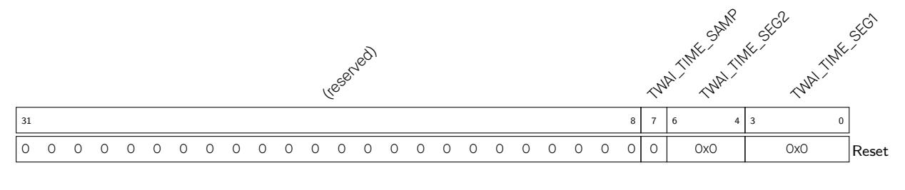
TWAI_TIME_SAMP The number of sample points. 0: the bus is sampled once; 1: the bus is sampled three times (RO | R/W)
TWAI_ERR_WARNING_LIMIT Error warning threshold. In the case when any of an error counter value exceeds the threshold, or all the error counter values are below the threshold, an error warning interrupt will be triggered (given the enable signal is valid). (RO | R/W)
TWAI_TX_BYTE_0 Stored the 0th byte information of the data to be transmitted in operation mode. (WO)
TWAI_ACCEPTANCE_CODE_0 Stored the 0th byte of the filter code in reset mode. (R/W)
TWAI_TX_BYTE_1 Stored the 1st byte information of the data to be transmitted in operation mode. (WO)
TWAI_ACCEPTANCE_CODE_1 Stored the 1st byte of the filter code in reset mode. (R/W)
TWAI_TX_BYTE_2 Stored the 2nd byte information of the data to be transmitted in operation mode. (WO)
TWAI_ACCEPTANCE_CODE_2 Stored the 2nd byte of the filter code in reset mode. (R/W)
TWAI_TX_BYTE_3 Stored the 3rd byte information of the data to be transmitted in operation mode. (WO)
TWAI_ACCEPTANCE_CODE_3 Stored the 3rd byte of the filter code in reset mode. (R/W)
TWAI_TX_BYTE_4 Stored the 4th byte information of the data to be transmitted in operation mode. (WO)
TWAI_ACCEPTANCE_MASK_0 Stored the 0th byte of the filter code in reset mode. (R/W)
TWAI_TX_BYTE_5 Stored the 5th byte information of the data to be transmitted in operation mode. (WO)
TWAI_ACCEPTANCE_MASK_1 Stored the 1st byte of the filter code in reset mode. (R/W)
TWAI_TX_BYTE_6 Stored the 6th byte information of the data to be transmitted in operation mode. (WO)
TWAI_ACCEPTANCE_MASK_2 Stored the 2nd byte of the filter code in reset mode. (R/W)
TWAI_TX_BYTE_7 Stored the 7th byte information of the data to be transmitted in operation mode. (WO)
TWAI_ACCEPTANCE_MASK_3 Stored the 3rd byte of the filter code in reset mode. (R/W)
TWAI_TX_BYTE_8 Stored the 8th byte information of the data to be transmitted in operation mode. (WO)
TWAI_TX_BYTE_9 Stored the 9th byte information of the data to be transmitted in operation mode. (WO)
TWAI_TX_BYTE_10 Stored the 10th byte information of the data to be transmitted in operation mode. (WO)
TWAI_TX_BYTE_11 Stored the 11th byte information of the data to be transmitted in operation mode. (WO)

TWAI_TX_BYTE_12 Stored the 12th byte information of the data to be transmitted in operation mode. (WO)
TWAI_CD These bits are used to configure the divisor of the external CLKOUT pin. (R/W)
TWAI_CLOCK_OFF This bit can be configured in reset mode. 1: Disable the external CLKOUT pin; 0: Enable the external CLKOUT pin (RO | R/W)
TWAI_TX_REQ Set the bit to 1 to drive nodes to start transmission. (WO)
TWAI_ABORT_TX Set the bit to 1 to cancel a pending transmission request. (WO)
Register 31.20. TWAI_STATUS_REG (0x0008)
TWAI_RX_BUF_ST 1: The data in the RX buffer is not empty, with at least one received data packet. (RO)
TWAI_OVERRUN_ST 1: The RX FIFO is full and data overrun has occurred. (RO)
TWAI_TX_BUF_ST 1: The TX buffer is empty, the CPU may write a message into it. (RO)
TWAI_TX_COMPLETE 1: The TWAI controller has successfully received a packet from the bus. (RO)
TWAI_RX_ST 1: The TWAI Controller is receiving a message from the bus. (RO)
TWAI_TX_ST 1: The TWAI Controller is transmitting a message to the bus. (RO)
TWAI_ARB_LOST_CAP This register contains information about the bit position of lost arbitration. (RO)
TWAI_RX_ERR_CNT The RX error counter register, reflects value changes in reception status. (RO | R/W)
TWAI_TX_ERR_CNT The TX error counter register, reflects value changes in transmission status. (RO | R/W)
TWAI_RX_MESSAGE_COUNTER This register reflects the number of messages available within the RX FIFO. (RO)
TWAI_RX_INT_ENA Set this bit to 1 to enable receive interrupt. (R/W) TWAI_TX_INT_ENA Set this bit to 1 to enable transmit interrupt. (R/W) TWAI_ERR_WARN_INT_ENA Set this bit to 1 to enable error warning interrupt. (R/W) TWAI_OVERRUN_INT_ENA Set this bit to 1 to enable data overrun interrupt. (R/W) TWAI_ERR_PASSIVE_INT_ENA Set this bit to 1 to enable error passive interrupt. (R/W) TWAI_ARB_LOST_INT_ENA Set this bit to 1 to enable arbitration lost interrupt. (R/W) TWAI_BUS_ERR_INT_ENA Set this bit to 1 to enable bus error interrupt. (R/W) TWAI_BUS_STATE_INT_ENA Set this bit to 1 to enable bus state interrupt. (R/W)
The LED PWM Controller is a peripheral designed to generate PWM signals for LED control. It has specialized features such as automatic duty cycle fading. However, the LED PWM Controller can also be used to generate PWM signals for other purposes.
The LED PWM Controller has the following features:
Note that the four timers are identical regarding their features and operation. The following sections refer to the timers collectively as Timer x (where x ranges from 0 to 3). Likewise, the six PWM generators are also identical in features and operation, and thus are collectively referred to as PWM n (where n ranges from 0 to 5).
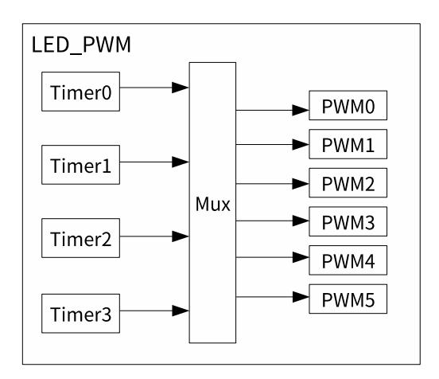
Figure 32.2-1. LED PWM Architecture
Figure 32.2-1 shows the architecture of the LED PWM Controller.
The four timers can be independently configured (i.e. configurable clock divider, and counter overflow value) and each internally maintains a timebase counter (i.e. a counter that counts on cycles of a reference clock). Each PWM ge nerator selects one of the timers and uses the timer's counter value as a reference to generate its PWM signal.
Figure 32.3-1 illustrates the main functional blocks of the timer and the PWM generator.
Figure 32.3-1. LED PWM Generator Diagram
Each timer in LED PWM Controller internally maintains a timebase counter. Referring to Figure 32.3-1, this clock signal used by the timebase counter is named ref_pulse x . All timers use the same clock source LEDC_CLK x , which is then passed through a clock divider to generate ref_pulse x for the counter.
LED PWM registers configured by software are clocked by APB_CLK. For more information about APB_CLK, see Chapter 6 Reset and Clock . To use the LED PWM peripheral, the APB_CLK signal to the LED PWM has to be enabled. The APB_CLK signal to LED PWM can be enabled by setting the SYSTEM_LEDC_CLK_EN field in the register SYSTEM_PERIP_CLK_EN0_REG and be reset via software by setting the SYSTEM_LEDC_RST field in the regist er SYSTEM_PERIP_R ST_EN0_REG. For more information, please refer to Table 16.3-1 in Chapter 16 System Registers (SYSREG) .
Timers in th e LED PWM Controller choose th eir common clock source from one of t he following clock sig nals: APB_CLK, RC _FAST_CLK and XTAL_CLK (see Chapter 6 Reset and Clock for more details about each clock signal). The procedure for s electing a clock source signal for LEDC_CLK x is described below:
| Espressif Systems | 828 |
|---|---|
The LEDC_CLK x signal w ill then be passed thro ugh the clock divider.
The LEDC_CLK x signal is passed through a clock divider to generate the ref_pulse x signal for the counter. The frequency of ref_pulse x is equal to the frequency of LEDC_CLK x divided by the divisor LEDC_CLK_DIV (see Figure 32.3-1).
The divisor LEDC_CLK_DIV is a fractional value. Thus, it can be a non-integer. LEDC_CLK_DIV is configured according to the following equation.
When the fractional part B is zero, LEDC_CLK_DIV is equivalent to an integer divisor (i.e. an integer prescaler). In other words, a ref_pulse x clock pulse is generated after every A num ber of LEDC_CLK x clock pulses.
However, when B is nonzero, LEDC_C LK_DIV becomes a non-integer divisor. The clock divider implements non-integer frequency division by alternating between A and ( A +1) LEDC_CLK x clock pulses per ref_pulse x clock pulse. This will result in the average frequency of ref_pulse x clock pulse being the desired frequency (i.e. the non-integer divided frequency). For every 256 ref_pulse x clock pulses:
Figure 32.3-2 illustrates the relation between LEDC_CLK x clock pulses and ref_pulse x clock pulses when dividing by a non-integer LEDC_CLK_DIV .

Figure 32.3-2. Frequency Division When LEDC_CLK_DIV is a Non-Integer Value
To change the timer's clock divisor at runtime, first configure the LEDC_CLK_DIV_TIMER x field, and then set the LEDC_TIMER x _PARA_UP field to apply the new configuration. This will cause the newly configured values to take effect upon the next overflow of the counter. The LEDC_TIMER x _PARA_UP field will be automatically cleared by hardware.
Each timer contains a 14-bit timebase counter that uses ref_pulse x as its reference clock (see Figure 32.3-1). The LEDC_TIMER x _DUTY_RES field configures the overflow value of this 14-bit counter. Hence, the maximum resolution of the PWM signal is 14 bits. The counter counts up to 2 LEDC _ T IMERx _ DUT Y _ RES − 1, overflows and begins counting from 0 again. The counter's value can be read, reset, and suspended by softwa re.
The counter can trigger LEDC_TIMER x _OVF_INT interrupt (generated automatically by hardware without configuration) every time the counter overflows. It can also be co nfigured to trigger LEDC_OVF_CNT_CH n _INT interrupt after the counter overflows LEDC _ OV F _ NUM _ CHn + 1 times. To configure LEDC_OVF_CNT_CH n _INT interrupt, please:
Referring to Figure 32.3-1, the frequency of a PWM generator output signal (s ig_out n ) is dependent on the frequency of the timer's clock source LEDC_CLK x , the clock divisor LEDC_CLK_DIV, and the duty resolution (counter width) LEDC_TIMER x _DUTY_RES:
Based on the formula above, the desired duty resolution can be calculated as follows:
Table 32.3-1 lists the commonly-used frequencies and their corresponding resolutions.
| Table 32.3-1. Commonly-used Frequencies and Resolutions | |||
|---|---|---|---|
| LEDC_CLKx | PWM Frequency | Highest Resolution (bit) 1 | Lowest Resolution (bit) 2 |
| APB_CLK (80 MHz) | 1 kHz | 14 | 7 |
| APB_CLK (80 MHz) | 5 kHz | 13 | 4 |
| APB_CLK (80 MHz) | 10 kHz | 12 | 3 |
| XTAL_CLK (40 MHz) | 1 kHz | 14 | 6 |
Table 32.3-1. Commonly-us ed Frequencies and Resolutions
1 The highest resolution is calculated when the clock divisor LEDC_CLK_DIV is 1 and rounded down. If the highest resolution calculated by the formula is higher than the counter's width 14 bits, then the highest resolution should be 14 bits.
2 The lowest resolution is calculated when the clock divisor LEDC_CLK_DIV is 1023 + 255 256 and rounded
up. If the lowest resolution calculated by the formula is lower than 0, then the lowest resolution should be 1. Espressif Systems 830 Submit Documentation Feedback ESP32-C3 TRM (Version 1.3)
| Table 32.3-1. Commonly-used Frequencies and Resolutions | ||
Table 32.3-1. Commonly-used Frequencies and Resolutions
1 The highest resolution is calculated when the clock divisor LEDC_CLK_DIV is 1 and rounded down. If the highest resolution calculated by the formula is higher than the counter's width 14 bits, then the highest resolution should be 14 bits.
2 The lowest resolution is calculated when the clock divisor LEDC_CLK_DIV is 1023 + 255 256 and rounded up. If the lowest resolution calculated by the formula is lower than 0, then the lowest resolution should be 1.
To change the overflow value at runtime, first set the LEDC_TIMER x _DUTY_RES field, and then set the LEDC_TIMER x _PARA_UP field. This will cause the newly configured values to take effect upon the next overflow of the counter. If LEDC_OVF_CNT_EN_CH n field is reconfigured, LEDC_PARA_UP_CH n should be set to apply the new configuration. In summary, these c onfiguration values need to be updated by setting LEDC_TIMER x _PARA_UP or LEDC_PARA_UP_CH n . LEDC_TIMER x _PARA_UP and LEDC_PARA_UP_CH n will be automatically cleared by h ardware.
To generate a PWM signal, a PWM generator (PWM n ) selects a timer (Timer x ). Each PWM generator can be configured separately by setting LEDC_TIMER_SEL_CH n to use one of four timers to generate the PWM output.
As shown in Figure 32.3-1, each PWM generator has a comparator and two multiplexers. A PWM generator compares the timer's 14-bit cou nter value (Timer x _cnt) to two trigger values Hpoint n and Lpoint n . When the timer's counter value is equal to Hpoint n or Lpoint n , the PWM signal is high or low, respectively, as described below:
Figure 32.3-3 illustrates how Hpoint n or Lpoint n are used to generate a fixed duty cycle PWM output signal.
For a particular PWM generator (PWM n ), its Hpoint n is sampled from the LEDC_HPOINT_CH n field each time the sel ected t imer's counter overflows. Likewise, Lpoint n is also sampled on every counter overflow and is calculated from the sum of the LEDC_DUTY_CH n [18:4] and LEDC_HPOINT_CH n fields. By setting Hpoint n and Lpoint n via the LEDC_HPOINT_CH n and LEDC_DUTY_CH n [18:4] fields, th e relative phase and duty cycle of the PWM output can be set.
The PWM output signal (sig_out n ) is enabled by setting LE DC_SIG_OUT_EN_CH n . When LEDC_SIG_OUT_EN_CH n is cleared , PW M signal output is disabled, and the output signal (sig_out n ) will output a constant level as specified by LEDC_IDLE_LV_CH n .
Figure 32.3-3. LED_PWM Output Signal Diagram
The bits LEDC_DUTY_CH n [3:0] are used to dither the duty cycles of the PWM output signal (sig_out n ) by periodically altering the duty cycle of sig_out n . When LEDC_DUTY_CH n [3:0] is set to a non-zero value, then for every 16 cycles of sig_out n , LEDC_DUTY_CH n [3:0] of those cycles will have PWM pulses that are one timer tick long er than the other ( 16- LEDC_DUTY_CH n [3:0]) cycles. For instance, if LEDC_DUTY_CH n [18:4] is set to 10 and LEDC_DUTY_CH n [3:0] is set to 5, then 5 of 16 cycles will have a PWM pulse with a duty value of 11 and the rest of the 16 cycles will hav e a PWM pulse wi th a duty value of 10. The average duty cycle after 16 cycles is 10.3125.
If fields LEDC_TIMER_SE L_CH n , LEDC_HPOINT_CH n , LEDC_DUTY_CH n [18:4] and LEDC_SIG_OUT_EN_CH n are reconfigured, LEDC_PARA_UP_CH n must be set to apply the new configuration. This will cause the newly configured values to take effect upon the next overflow of the counter. LEDC_PARA_UP_CH n field will be automa tically cleared by hardwa r e.
The PWM generators can fade the duty cycle of a PWM output signal (i.e. gradually change the duty cycle from one value to another). If Duty Cycle Fading is enabled, the value of Lpoint n will be incremented/decremented after a fixed number of counter overflows has occurred. Figure 32.3-4 illustrates Duty Cycle Fading.
Duty Cycle Fading is configured using the following register fields:
• LEDC_DUTY_CH n is used to set the initial value of Lpoint n .
If the fields LEDC_DUTY_CH n , LEDC_DUTY_START_CH n , LEDC_DUTY_CYCLE_CH n , LEDC_DUTY_INC_CH n , LEDC _DUTY_SCALE_CH n , and LEDC_DUTY_NUM_CH n are reconfigured, LEDC_PARA_UP_CH n must be set to apply the new configuration. After this field is set, the values for duty cycle fading will take effect at once. LEDC_PAR A_UP_CH n field will be automatically cleared by hardware.
The addresses in this section are relative to the LED PWM Controller base address provided in Table 3.3-3 in Chapter 3 System and Memory .
The abbreviations given in Column Access are explained in Section Access Types for Registers .
| Chapter 3 System and Memory. | |||
|---|---|---|---|
| The abbreviations given in Column Access are explained in Section Access Types for Registers. | |||
| Name | Description | Address | Access |
|
Configuration Register
LEDC_CH0_CONF0_REG |
Configuration register 0 for channel 0 | 0x0000 | varies |
| LEDC_CH0_CONF1_REG | Configuration register 1 for channel 0 | 0x000C | varies |
| LEDC_CH1_CONF0_REG | Configuration register 0 for channel 1 | 0x0014 | varies |
| LEDC_CH1_CONF1_REG | Configuration register 1 for channel 1 | 0x0020 | varies |
| LEDC_CH2_CONF0_REG | Configuration register 0 for channel 2 | 0x0028 | varies |
| LEDC_CH2_CONF1_REG | Configuration register 1 for channel 2 | 0x0034 | varies |
| LEDC_CH3_CONF0_REG | Configuration register 0 for channel 3 | 0x003C | varies |
| LEDC_CH3_CONF1_REG | Configuration register 1 for channel 3 | 0x0048 | varies |
| LEDC_CH4_CONF0_REG | Configuration register 0 for channel 4 | 0x0050 | varies |
| LEDC_CH4_CONF1_REG | Configuration register 1 for channel 4 | 0x005C | varies |
| LEDC_CH5_CONF0_REG | Configuration register 0 for channel 5 | 0x0064 | varies |
| LEDC_CH5_CONF1_REG | Configuration register 1 for channel 5 | 0x0070 | varies |
| LEDC_CONF_REG | Global LEDC configuration register | 0x00D0 | R/W |
| Hpoint Register | |||
| LEDC_CH0_HPOINT_REG | High point register for channel 0 | 0x0004 | R/W |
| LEDC_CH1_HPOINT_REG | High point register for channel 1 | 0x0018 | R/W |
|
LEDC_CH2_HPOINT_REG
LEDC_CH3_HPOINT_REG |
High point register for channel 2
High point register for channel 3 |
0x002C
0x0040 |
R/W
R/W |
| LEDC_CH4_HPOINT_REG | High point register for channel 4 | 0x0054 | R/W |
| LEDC_CH5_HPOINT_REG | High point register for channel 5 | 0x0068 | R/W |
| Duty Cycle Register | |||
| LEDC_CH0_DUTY_REG | Initial duty cycle for channel 0 | 0x0008 | R/W |
| LEDC_CH0_DUTY_R_REG | Current duty cycle for channel 0 | 0x0010 | RO |
| LEDC_CH1_DUTY_REG | Initial duty cycle for channel 1 | 0x001C | R/W |
| LEDC_CH1_DUTY_R_REG | Current duty cycle for channel 1 | 0x0024 | RO |
| LEDC_CH2_DUTY_REG | Initial duty cycle for channel 2 | 0x0030 | R/W |
| LEDC_CH2_DUTY_R_REG | Current duty cycle for channel 2 | 0x0038 | RO |
| LEDC_CH3_DUTY_REG | Initial duty cycle for channel 3 | 0x0044 | R/W |
| LEDC_CH3_DUTY_R_REG | Current duty cycle for channel 3 | 0x004C | RO |
| LEDC_CH4_DUTY_REG | Initial duty cycle for channel 4 | 0x0058 | R/W |
| LEDC_CH4_DUTY_R_REG | Current duty cycle for channel 4 | 0x0060 | RO |
| LEDC_CH5_DUTY_REG | Initial duty cycle for channel 5 | 0x006C | R/W |
|
LEDC_CH5_DUTY_R_REG
Timer Register |
Current duty cycle for channel 5 | 0x0074 | RO |
| LEDC_TIMER0_CONF_REG | Timer 0 configuration | 0x00A0 | varies |
| LEDC_TIMER0_VALUE_REG | Timer 0 current counter value | 0x00A4 | RO |
|
Chapter 32
LED PWM Controller (LEDC) |
GoBack | ||
| Name | Description | Address | Access |
| LEDC_TIMER1_CONF_REG | Timer 1 configuration | 0x00A8 | varies |
| LEDC_TIMER1_VALUE_REG | Timer 1 current counter value | 0x00AC | RO |
| LEDC_TIMER2_CONF_REG | Timer 2 configuration | 0x00B0 | varies |
| LEDC_TIMER2_VALUE_REG | Timer 2 current counter value | 0x00B4 | RO |
| LEDC_TIMER3_CONF_REG | Timer 3 configuration | 0x00B8 | varies |
|
LEDC_TIMER3_VALUE_REG
Interrupt Register |
Timer 3 current counter value | 0x00BC | RO |
| LEDC_INT_RAW_REG | Raw interrupt status | 0x00C0 | R/WTC/SS |
| LEDC_INT_ST_REG | Masked interrupt status | 0x00C4 | RO |
| LEDC_INT_ENA_REG | Interrupt enable bits | 0x00C8 | R/W |
| LEDC_INT_CLR_REG | Interrupt clear bits | 0x00CC | WT |
The addresses in this section are relative to LED PWM Controller base address provided in Table 3.3-3 in Chapter 3 System and Memory .
LEDC_TIMER_SEL_CH n This field is used to select one of the timers for channel n .
0: select Timer0; 1: select Timer1; 2: select Timer2; 3: select Timer3 (R/W)
LEDC_OVF_NUM_CH n This field is used to configure the maximum times of overflow minus 1.
The LEDC_OVF_CNT_CH n _INT interrupt will be triggered when channel n overflows for (LEDC_OVF_NUM_CH n + 1) times. (R/W)
Register 32.2. LEDC_CH n _CONF1_REG ( n : 0-5) (0x000C+20* n )
LEDC_DUTY_SCALE_CH n This field configures the step size of the duty cycle change during fading. (R/W)
Register 32.3. LEDC_CONF_REG (0x00D0)
LEDC_APB_CLK_SEL This field is used to select the common clock source for all the 4 timers.
1: APB_CLK; 2: RC_FAST_CLK; 3: XTAL_CLK. (R/W)
LEDC_CLK_EN This bit is used to control the clock.
1: Force clock on for register. 0: Support clock only when application writes registers. (R/W)
LEDC_HPOINT_CH n The output value changes to high when the selected timer for this channel has reached the value specified by this field. (R/W)
LEDC_DUTY_CH n This field is used to change the output duty by controlling the Lpoint. The output value turns to low when the selected timer for this channel has reached the Lpoint. (R/W)
LEDC_DUTY_R_CH n This field stores the current duty cycle of the output signal on channel n . (RO)
LEDC_TIMER x _DUTY_RES This field is used to control the range of the counter in timer x . (R/W)
LEDC_CLK_DIV_TIMER x This field is used to configure the divisor for the divider in timer x . The least significant eight bits represent the fractional part. (R/W)
LEDC_TIMER x _PAUSE This bit is used to suspend the counter in timer x . (R/W)
LEDC_TIMER x _RST This bit is used to reset timer x . The counter will show 0 after reset. (R/W)
LEDC_TIMER x _PARA_UP Set this bit to update LEDC_CLK_DIV_TIMER x and LEDC_TIMER x _DUTY_RES. (WT)
LEDC_TIMER x _CNT This field stores the current counter value of timer x . (RO)
LEDC_TIMER x _OVF_INT_RAW Triggered when the timer x has reached its maximum counter value. (R/WTC/SS)
LEDC_TIMER x _OVF_INT_ST This is the masked interrupt status bit for the LEDC_TIMER x _OVF_INT interrupt when LEDC_TIMER x _OVF_INT_ENA is set to 1. (RO)
LEDC_TIMER x _OVF_INT_ENA The interrupt enable bit for the LEDC_TIMER x _OVF_INT interrupt. (R/W)
LEDC_TIMER x _OVF_INT_CLR Set this bit to clear the LEDC_TIMER x _OVF_INT interrupt. (WT)
LEDC_DUTY_CHNG_END_CH n _INT_CLR Set this bit to clear the LEDC_DUTY_CHNG_END_CH n _INT interrupt. (WT)
LEDC_LEDC_DATE This is the version control register. (R/W)
The RMT (Remote Control) module is designed to send and receive infrared remote control signals. A variety of remote control protocols are supported. The RMT module converts pulse codes stored in the module's built-in RAM into output signals, or converts input signals into pulse codes and stores them back in RAM. Optionally, the RMT module modulates its output signals with a carrier wave, or demodulates and filters its input signals.
The RMT module has four channels, numbered from zero to three. Channels 0 ~ 1 (TX channels) are dedicated to transmit signals, and channels 2 ~ 3 (RX channels) to receive signals. Each TX/RX channel has the same functionality controlled by a dedicated set of registers and is able to independently either transmit or receive data. TX channels are indicated by n which is used as a placeholder for the channel number, and by m for RX channels.
Figure 33.3-1. RMT Architecture
The RMT module has four independent channels, two of which are TX channels and the other two are RX channels. Each TX channel has its own clock-divider counter, state machine, and transmitter. Each RX channel also has its own clock-divider counter, state machine, and receiver. The four channels share a 192 x 32-bit RAM.
Figure 33.3-2. Format of Pulse Code in RAM
Figure 33.3-2 shows the format of pulse code in RAM. Each pulse code contains a 16-bit entry with two fields, level and period.
Espres sif Syst ems 844
A zero (0) period is interpreted as a transmission end-marker. If the period is not an end-marker, its value is limited by APB clock and RMT clock:
3 × Tapb _ clk + 5 × T rmt_sclk < period × T clk_div(1)
The RAM is divided into four 48 x 32-bit blocks. By default, each channel uses one block, block zero for channel zero, block one for channel one, and so on.
If the data size of one single transfer is larger than this block size of TX channel n or RX channel m , users can configure the channel
Setting RMT_MEM_SIZE_CH n / m > 1 allows channel n / m to use the memory of subsequent channels, block ( n / m ) ~ block ( n / m + RMT_MEM_SIZE_CH n / m -1). If so, the subsequent channels n / m + 1 ~ n / m + RMT_MEM_SIZE_CH n / m - 1 can not be used once their RAM blocks are occupied.
Note that the RAM used by each channel is mapped from low address to high address. In such mode, channel 0 is able to use the RAM blocks for channels 1, 2 and 3 by setting RMT_MEM_SIZE_CH0, but channel 3 can not use the blocks for channels 0, 1, or 2. Therefore, the maximum value of RMT_MEM_SIZE_CH n should not exceed (4 - n ) and the maximum value of RMT_MEM_SIZE_CH m should not exceed (2 - m ).
The RMT RAM can be accessed via APB bus, or read by the transmitter and written by the receiver. To avoid any possible access conflict between the receiver and the APB bus, RMT can be configured to designate the RAM block's owner, be it the receiver or the APB bus, by configuring RMT_MEM_OWNER_CH m . If this ownership is violated, a flag signal RMT_CH m _OWNER_ERR will be generated.
APB bus is able to access RAM in FIFO mode and in Direct Address (NONFIFO) mode, depending on the configuration of RMT_FIFO_MASK:
When the RMT module is inactive, the RAM can be put into low-power mode by setting RMT_MEM_FORCE_PD.
The clock source of RM T can be APB_CLK, RC_FAST_CLK or XTAL_CLK, depending on the configuration of RMT_SCLK_SEL. RMT clock can be enabled by setting RMT_SCLK_ACTIVE. RMT working clock (rmt_sclk) is obtained by dividing the selected clock source with a fractional divider, see Figure 33.3-1. The divider is:
For more information, please check Chapter 6 Reset and Clock .
Espressif Systems 845
RMT_DIV_CNT_CH n / m is used to configure the divider coefficient of internal clock divider for RMT channels. The coefficient is normally equal to the value of RMT_DIV_CNT_CH n / m , except value 0 that represents coefficient 256. The clock divider can be reset by clearing RMT_REF_CNT_RST_CH n / m . The clock generated from the divider can be used by the counter (see Figure 33.3-1).
When RMT_TX_START_CH n is set, the transmitter of channel n starts reading and sending pulse codes from the starting address of its RAM block. The codes are sent starting from low-address entry.
When an end-marker (a zero period) is encountered, the transmitter stops the transmission, returns to idle state and generates an RMT_CH n _TX_END_INT interrupt. Setting RMT_TX_STOP_CH n to 1 also stops the transmission and immediately sets the transmitter back to idle.
The output level of a transmitter in idle state is determined by the "level" field of the end-marker or by the content of RMT_IDLE_OUT_LV_CH n , depending on the configuration of RMT_IDLE_OU T_EN_CH n .
To implement the above-mentioned configurations, please set RMT_CONF_UPDATE_CH n first. For more information, see Section 33.3.6.
To transmit more pulse c odes th an can be fitted in the channel's RAM, users can enable wrap TX mode by setting RMT_MEM_TX_WRAP_EN_CH n . In this mode, the transmitter sends the data from RAM in loops till an end-marker is encountered.
For example, if RMT_MEM_SIZE_CH n = 1, the transmitter starts sending data from the address 48 * n , and then the dat a from higher RAM address. On ce the transmitter finishes sending the data from (48 * ( n + 1) - 1), it continues sending data from 48 * n again till an end-marker is encountered. Wrap mode is also applicable for RMT_MEM_SI ZE_CH n > 1.
When the size of transmitted pulse codes is larger than or equal to the value set by RMT_TX_LIM_CH n , an RMT_CH n _TX_THR_EVENT_INT interrupt is triggered. In wrap mode, RMT_TX_LIM_CH n can be set to a half or a fraction of the size o f the channel's RAM block. When an RMT_CH n _TX_THR_EVENT_INT interrupt is detected by software, the already used RAM region can be updated with new pulse codes. In this way the transmitter can seamlessly send unlimited pulse codes in wrap mod e.
To update the configuration of RMT_MEM_TX_WRAP_EN_CH n , RMT_MEM_SIZE_CH n , and RMT_TX_LIM_CH n , please set RMT_CONF_UPDATE_CH n first. For more information, see Section 33.3.6.
Transmitter output can be modulated with a carrier wave by setting RMT_CAR RIER_E N_CH n . The carrier waveform is configurable.
In a carrier cycle, high level lasts for (RMT_CARRIER_HIGH_CH n + 1) rmt_sclk cycles, while low level lasts for (RMT_CARRIER_LOW_CH n + 1) rmt_sclk cycles. When RMT_CARRI ER_OUT_LV_CH n is set, carrier wave is added on the high-level of output signals; while RMT_CARRIER_OUT_LV_CH n is cleared, carrier wave is added on the low-level of output signals.
Carrier wave can be added on all output signals during modulation, or just added on valid pulse codes (the data stored in RAM), depending on the configuration of RMT_CARRIER_EFF_EN_CH n :
To implement the modulation configuration, please set RMT_CONF_UPDATE_CH n first. For more information, see Section 33.3.6.
This continu ous TX mode can be enabled by setting RMT_TX_CONTI_MODE_CH n . In this mode, the transmitter sends the pulse codes from RAM in loops.
If RMT_TX_LOOP_CNT_EN_CH n is set, the loop counting is incremented by 1 each time an end-marker is encountered. If the counting reaches the value set in RMT_TX _LOOP_NUM_CH n , an RMT_CH n _TX_LOOP_INT is generated.
In an end-marker, if its period[14:0] is 0, then the period of the previous data must satisfy the following requirement:
6 × Tapb _ clk + 12 × Trmt _ sclk < period × Tclk _ div (2)
The period of the other data only need to satisfy relation (1).
To implement the above-mentioned configuration, please set RMT_CONF_UPDATE_CH n first. For more information, see Section 33.3.6.
RMT module supports m ultiple c hannels transmitting data simultaneously. To use this function, follow the steps below.
Once the last channel is configured, these channels start transmitting data simultaneously. Due to hardware limitations, there is no guarantee that two channels can start sending data exactly at the same time. The interval between two channels starting transmitting data is within 3 x T clk _ div .
To configure RMT_TX_SIM_EN, please set RMT_CONF_UPDATE_CH n first. For more information, see Section 33.3.6.
The receiver of channel m is controlled by RMT_RX_EN_CH m :
When the receiver becomes active, it starts counting from the first edge of the signal, detecting signal levels and counting clock cycles the level lasts for. Each cycle count is then written back to RAM.
When the receiver detects no change in a signal level for a number of clock cycles more than the value set by RMT_IDLE_THRES_CH m , the receiver will stop receiving data, return to idle state, and generate an RMT_CH m _RX_END_INT interrupt.
Please note that RMT_IDLE_THRES_CH m should be configured to a maximum value according to your application, otherwise a valid received level may be mistaken as a level in idle state.
If RAM block of this RX channel is used up by the received data, the receiver will stop receiving data, and generate an RMT_CH m _ERR_INT interrupt triggered by RAM FULL event.
To implement configuration above, please set RMT_CONF_UPDATE_CH m first. For more information, see Section 33.3.6.
To recei ve mor e pulse codes than can be fitted in the channel's RAM, users can enable wrap RX mode for channel m by configuring RMT_MEM_RX_WRAP_EN_CH m . In wrap mode, the receiver stores the received data to RAM block of this channel in loops.
Receiving ends, when the receiver detects no change in a signal level for a number of clock cycles more than the value set by RMT_IDLE_THRES_CH m . The receiver then returns to idle state and generates an RMT_CH m _RX_END_INT interrupt.
For example, if RMT_MEM_SIZE_CH m is set to 1, the receiver starts receiving data and stores the data to address 48 * m , and then to higher RAM address. When the receiver finishes storing the received data to address (48 * ( m + 1) - 1), the receiver continues receiving data and storing data to the address 48 * m again, till no change is detected on a signal level for more than RMT_IDLE_THRES_CH m clock cycles. Wrap mode is also applicable for RMT_MEM_SIZE_CH m > 1.
An RMT_CH m _RX_THR_EVENT_INT is generated when the size of received pulse codes is larger than or equal to the value set by RMT_RX_LIM_CH m . In wrap mode, RMT_RX_LIM_CH M can be set to a half or a fraction of the size of the channel's RAM block. When an RMT_CH m _RX_THR_EVENT_INT interrupt is detected by software, the system will be notified to copy out data stored in already used RMT RAM region, and then the region can be updated by subsequent data. In this way an arbitrary amount of data can be seamlessly received.
To implement the configuration above, please set RMT_CONF_UPDATE_CH m first. For more information, see Section 33.3.6.
Users c an enab le the receiver to filter input signals by setting RMT_RX_FILTER_EN_CH m for each channel. The filter samples input signals continuously, and detects the signals which remain unchanged for a
Espressif Systems 848
continuous RMT_RX_FILTER_THRES_CH m rmt_sclk cycles as valid, otherwise, the signals are rejected. Only the valid signals can pass through this filter. The filter removes pulses with a length of less than RMT_RX_FILTER_THRES_CH n rmt_sclk cycles.
To implement the configuration above, please set RMT_CONF_UPDATE_CH m first. For more information, see Section 33.3.6.
Users c an enab le demodulation function on input signals or on filtered output signals by setting RMT_CARRIER_EN_CH m . RX demodulation can be applied to high-level carrier wave or low-level carrier wave, depending on the configuration of RMT_CARRIER_OUT_LV_CH m :
Users can configure RMT_CARRIER_HIGH_THRES_CH m and RMT_CARRIER_LOW_THRES_CH m to set the thresholds to demodulate high-level carrier wave or low-level carrier wave.
If the high-level of a signal lasts for less than RMT_CARRIER_HIGH_THRES_CH m clk_div cycles, or the low-level lasts for less than RMT_CARRIER_LOW_THRES_CH m clk_div cycles, such level is detected as a carrier wave and then is filtered out.
To implement the configuration above, please set RMT_CONF_UPDATE_CH m first. For more information, see Section 33.3.6.
To upda te RMT registers configuration, please set RMT_CONF_UPDATE_CH n / m for each channel first.
All the bits/fields listed in the second column of Table 33.3-1 should follow this rule.
| Register | Bit/Field Configuration Update |
| TX Channels | |
| RMT_CARRIER_OUT_LV_CHn | |
| RMT_CARRIER_EN_CHn | |
| RMT_CARRIER_EFF_EN_CHn | |
| RMT_CHnCONF0_REG | RMT_DIV_CNT_CHn |
| RMT_TX_STOP_CHn | |
| RMT_IDLE_OUT_EN_CHn | |
| RMT_IDLE_OUT_LV_CHn | |
| RMT_CHnCARRIER_DUTY_REG | RMT_TX_CONTI_MODE_CHn |
| RMT_CARRIER_HIGH_CHn | |
| RMT_CHn_TX_LIM_REG | RMT_CARRIER_LOW_CHn |
| RMT_TX_LOOP_CNT_EN_CHn | |
|
RMT_TX_LOOP_NUM_CHn
RMT_TX_LIM_CHn |
|
| RMT_CHn_TX_SIM_REG | RMT_TX_SIM_EN |
|
Chapter 33
Remote Control Peripheral (RMT) |
|
|---|---|
| Register | Table 33.3-1 – cont'd from previous page |
| Bit/Field Configuration Update | |
| RX Channels | |
| RMT_CARRIER_OUT_LV_CHm | |
| RMT_CHmCONF0_REG | RMT_CARRIER_EN_CHm |
| RMT_IDLE_THRES_CHm | |
| RMT_CHmCONF1_REG | RMT_DIV_CNT_CHm |
| RMT_RX_FILTER_THRES_CHm | |
|
RMT_RX_EN_CHm
RMT_CARRIER_HIGH_THRES_CHm |
|
| RMT_CHm_RX_CARRIER_RM_REG | RMT_CARRIER_LOW_THRES_CHm |
Table 33.3-1 – cont'd from previous page
The addresses in this section are relative to RMT base address provided in Table 3.3-3 in Chapter 3 System and Memory .
The abbreviations given in Column Access are explained in Section Access Types for Registers .
| and Memory . | ||||
|---|---|---|---|---|
| The abbreviations given in Column Access are explained in Section Access Types for Registers. | ||||
|
Name
FIFO R/W Registers |
Description | Address | Access | |
| RMT_CH0DATA_REG | The read and write data register for channel 0 | 0x0000 | RO | |
| by APB FIFO access. | ||||
| RMT_CH1DATA_REG | The read and write data register for channel 1 | 0x0004 | RO | |
| by APB FIFO access. | ||||
| RMT_CH2DATA_REG | The read and write data register for channel 2 | 0x0008 | RO | |
| by APB FIFO access. | ||||
| RMT_CH3DATA_REG | The read and write data register for channel 3 | 0x000C | RO | |
| by APB FIFO access. | ||||
| Configuration Registers | ||||
| RMT_CH0CONF0_REG | Configuration register 0 for channel 0 | 0x0010 | varies | |
| RMT_CH1CONF0_REG | Configuration register 0 for channel 1 | 0x0014 | varies | |
| RMT_CH2CONF0_REG | Configuration register 0 for channel 2 | 0x0018 | R/W | |
| RMT_CH2CONF1_REG | Configuration register 1 for channel 2 | 0x001C | varies | |
| RMT_CH3CONF0_REG | Configuration register 0 for channel 3 | 0x0020 | R/W | |
| RMT_CH3CONF1_REG | Configuration register 1 for channel 3 | 0x0024 | varies | |
|
RMT_SYS_CONF_REG
Configuration register for RMT APB 0x0068 R/W RMT_REF_CNT_RST_REG Reset register for RMT clock divider 0x0070 WT |
||||
| Status Registers | ||||
| RMT_CH0STATUS_REG | Channel 0 status register | 0x0028 | RO | |
| RMT_CH1STATUS_REG | Channel 1 status register | 0x002C | RO | |
| RMT_CH2STATUS_REG | Channel 2 status register | 0x0030 | RO | |
| RMT_CH3STATUS_REG |
Channel 3 status register
0x0034 RO |
|||
| Interrupt Registers | ||||
| RMT_INT_RAW_REG | Raw interrupt status | 0x0038 | R/WTC/SS | |
| RMT_INT_ST_REG | Masked interrupt status | 0x003C | RO | |
| RMT_INT_ENA_REG | Interrupt enable bits | 0x0040 | R/W | |
|
RMT_INT_CLR_REG
Interrupt clear bits 0x0044 WT |
||||
| Carrier Wave Duty Cycle Registers | ||||
| RMT_CH0CARRIER_DUTY_REG | Duty cycle configuration register for channel 0 | 0x0048 | R/W | |
| RMT_CH1CARRIER_DUTY_REG | Duty cycle configuration register for channel 1 | 0x004C | R/W | |
| RMT_CH2_RX_CARRIER_RM_REG | Carrier remove register for channel 2 | 0x0050 | R/W | |
|
RMT_CH3_RX_CARRIER_RM_REG
Carrier remove register for channel 3 0x0054 R/W |
||||
| TX Event Configuration Registers | ||||
|
RMT_CH0_TX_LIM_REG
RMT_CH1_TX_LIM_REG |
Configuration register for channel 0 TX event
Configuration register for channel 1 TX event |
0x0058
0x005C |
varies
varies |
|
| RMT_TX_SIM_REG | RMT TX synchronous register | 0x006C | R/W | |
|
Chapter 33
Remote Control Peripheral (RMT) GoBack |
||||
| Name | Description | Address | Access | |
| RX Event Configuration Registers | ||||
| RMT_CH2_RX_LIM_REG | Configuration register for channel 2 RX event | 0x0060 | R/W | |
The addresses in this section are relative to RMT base address provided in Table 3.3-3 in Chapter 3 System and Memory .
RMT_CH n DATA Read and write data for channel n via APB FIFO. (RO)
Register 33.2. RMT_CH m DATA_REG ( m = 2, 3) (0x0008, 0x000C)
RMT_CH m DATA Read and write data for channel m via APB FIFO. (RO)
RMT_TX_START_CH n Set this bit to start sending data in channel n . (WT)
RMT_TX_CONTI_MODE_CH n Set this bit to enable continuous TX mode for channel n . (R/W)
In this mode, the transmitter starts its transmission from the first data, and in the following transmission:
RMT_TX_STOP_CH n Set this bit to stop the transmitter of channel n sending data out. (R/W/SC)
Continued on the next page...
RMT_DIV_CNT_CH n This field is used to configure the divider for clock of channel n . (R/W)
1'h0: add carrier wave on low level.
1'h1: add carrier wave on high level.
RMT_CONF_UPDATE_CH n Synchronization bit for channel n (WT)
RMT_DIV_CNT_CH m This field is used to configure the clock divider of channel m . (R/W)
1'h0: add carrier wave on low level.
1'h1: add carrier wave on high level.
RMT_RX_EN_CH m Set this bit to enable the receiver to start receiving data in channel m . (R/W)
1'h1: Receiver is using the RAM.
1'h0: APB bus is using the RAM.
RMT_APB_FIFO_MASK 1'h1: Access memory directly. 1'h0: Access memory by FIFO. (R/W)
RMT_MEM_CLK_FORCE_ON Set this bit to enable the clock for RMT memory. (R/W)
RMT_REF_CNT_RST_CH0 This bit is used to reset the clock divider of channel 0. (WT)
RMT_REF_CNT_RST_CH1 This bit is used to reset the clock divider of channel 1. (WT)
RMT_REF_CNT_RST_CH2 This bit is used to reset the clock divider of channel 2. (WT)
RMT_REF_CNT_RST_CH3 This bit is used to reset the clock divider of channel 3. (WT)
RMT_CH0_TX_END_INT_RAW The interrupt raw bit of RMT_CH0_TX_END_INT. (R/WTC/SS)
RMT_CH1_TX_END_INT_RAW The interrupt raw bit of RMT_CH1_TX_END_INT. (R/WTC/SS)
RMT_CH2_RX_END_INT_RAW The interrupt raw bit of RMT_CH2_RX_END_INT . (R/WTC/SS)
RMT_CH3_RX_END_INT_RAW The interrupt raw bit of RMT_CH3_RX_END_IN T. (R/WTC/SS)
RMT_CH0_ERR_INT_RAW The interrupt raw bit of RM T_CH0_ERR_INT. (R/WTC /SS)
RMT_CH1_ERR_INT_RAW The interrupt raw bit of RMT _CH1_ERR_INT. (R/WTC/ SS)
RMT_CH2_ERR_INT_RAW The interrupt raw bit of RMT_CH2_ERR_INT. (R/WTC/SS)
RMT_CH3_ERR_INT_RAW The interrupt raw bit of RMT_CH3_ERR_INT . (R/WTC/SS)
RMT_CH0_TX_LOOP_INT_RAW The interrupt raw bit of RMT_CH0 _TX_LOOP_INT. (R/WTC/SS)
RMT_CH1_TX_LOOP_INT_RAW The interrupt raw bit of RMT_CH1_TX_LOOP_INT. (R/WTC/SS)
|
Register 33.11. RMT_INT_ST_REG (0x003C)
RMT_CH2_RX_THR_EVENT_INT_ST RMT_CH3_RX_THR_EVENT_INT_ST RMT_CH0_TX_THR_EVENT_INT_ST RMT_CH1_TX_THR_EVENT_INT_ST RMT_CH0_TX_LOOP_INT_ST RMT_CH1_TX_LOOP_INT_ST RMT_CH3_RX_END_INT_ST RMT_CH2_RX_END_INT_ST RMT_CH1_TX_END_INT_ST |
||
|---|---|---|
|
RMT_CH3_ERR_INT_ST
RMT_CH2_ERR_INT_ST RMT_CH0_ERR_INT_ST RMT_CH1_ERR_INT_ST |
||
| (reserved) | ||
|
31
0 |
14
13 12 11 10 9 8 7 6 5 4 3 2 1 0 0 0 0 0 0 0 0 0 0 0 0 0 0 0 0 0 0 0 0 0 0 0 0 0 0 0 0 0 0 0 0 Reset |
|
|
RMT_CH0_TX_END_INT_ST
The masked interrupt status bit for RMT_CH0_TX_END_INT. (RO) RMT_CH1_TX_END_INT_ST The masked interrupt status bit for RMT_CH1_TX_END_INT. (RO) |
||
|
RMT_CH2_RX_END_INT_ST
The masked interrupt status bit for RMT_CH2_RX_END_INT. (RO) RMT_CH3_RX_END_INT_ST The masked interrupt status bit for RMT_CH3_RX_END_INT. (RO) |
||
|
RMT_CH0_ERR_INT_ST
The masked interrupt status bit for RMT_CH0_ERR_INT. (RO) |
||
|
RMT_CH1_ERR_INT_ST
The masked interrupt status bit for RMT_CH1_ERR_INT. (RO) |
||
|
RMT_CH2_ERR_INT_ST
The masked interrupt status bit for RMT_CH2_ERR_INT. (RO) |
||
|
RMT_CH3_ERR_INT_ST
The masked interrupt status bit for RMT_CH3_ERR_INT. (RO) RMT_CH0_TX_THR_EVENT_INT_ST The masked interrupt status bit for |
||
| RMT_CH0_TX_THR_EVENT_INT. (RO) |
|
RMT_CH1_TX_THR_EVENT_INT_ST
The |
masked | interrupt | status | bit | for |
|---|---|---|---|---|---|
|
RMT_CH1_TX_THR_EVENT_INT. (RO)
RMT_CH2_RX_THR_EVENT_INT_ST The |
masked | interrupt | status | bit | for |
| RMT_CH2_RX_THR_EVENT_INT. (RO) |
RMT_CH0_TX_LOOP_INT_ST The masked interrupt status bit for RMT_CH0_TX_LOOP_INT. (RO)
RM T_CH1_TX_LOOP_INT_ST The masked interrupt status bit for RMT_CH1_TX_LOOP_INT. (RO)
RMT_CH0_TX_END_INT_ENA The interrupt enable bit for RMT_CH0_TX_END_INT. (R/W)
RMT_CH1_TX_END_INT_ENA The interrupt enable bit for RMT_CH1_TX_END_INT. (R/W)
RMT_CH2_RX_END_INT_ENA The interrupt enable bit for RMT_CH2_RX_END_INT . (R/W)
RMT_CH3_RX_END_INT_ENA The interrupt enable bit for RMT_CH3_RX_END_IN T. (R/W)
RMT_CH0_ERR_INT_ENA The interrupt enable bit for RM T_CH0_ERR_INT. (R/W)
RMT_CH1_ERR_INT_ENA The interrupt enable bit for RMT _CH1_ERR_INT. (R/W)
RMT_CH2_ERR_INT_ENA The interrupt enable bit for RMT_CH2_ERR_INT. (R/W)
RMT_CH1_TX_LOOP_INT_ENA The interrupt enable bit for RMT_CH1_TX_LOOP_INT. (R/W)
RMT_CH0_TX_END_INT_CLR Set this bit to clear the RMT_CH0_TX_END_INT interrupt. (WT)
RMT_CH1_TX_END_INT_CLR Set this bit to clear the RMT_CH1_TX_END_INT interrupt. (WT)
RMT_CH2_RX_END_INT_CLR Set this bit to clear the RMT_CH2_RX_END_IN interrupt. (WT)
RMT_CH3_RX_END_INT_CLR Set this bit to clear the RMT_CH3_RX_END_IN interrupt. (WT)
RMT_CH0_ERR_INT_CLR Set this bit to clear the RM T_CH0_ERR_INT interrupt. (WT)
RMT_CH1_ERR_INT_CLR Set this bit to clear the RMT _CH1_ERR_INT interrupt. (WT)
RMT_CH2_ERR_INT_CLR Set this bit to clear the RMT_CH2_ERR_INT interrupt. (WT)
RMT_CH3_ERR_INT_CLR Set this bit to clear the RMT_CH3_ERR_INT interrupt. (WT)
RMT_CH0_TX_THR_EVENT_INT_CLR Set this bit to clear the RMT_CH0_TX_THR_EVENT_INT interrupt. (WT)
RMT_CH3_RX_THR_EVENT_INT_CLR Set this bit to clear the RMT_CH3_RX_THR_EVENT_INT interrupt. (WT)
RMT_CH0_TX_LOOP_INT_CLR Set this bit to clear the RMT_ CH0_TX_LOOP_INT interrupt. (WT)
RMT_CH1_TX_LOOP_INT_CLR Set this bit to clear the RMT_CH1_TX_LOOP_INT interrupt. (WT)
Register 33.14. RMT_CH n CARRIER_DUTY_REG ( n = 0, 1) (0x0048, 0x004C)
RMT_CARRIER_LOW_CH n This field is used to configure carrier wave's low level clock period for channel n . (R/W)
RMT_CARRIER_HIGH_CH n This field is used to configure carrier wave's high level clock period for channel n . (R/W)
Register 33.15. RMT_CH m _RX_CARRIER_RM_REG ( m = 2, 3) (0x0050, 0x0054)
RMT_CARRIER_HIGH_THRES_CH m 0x00 31 16 RMT_CARRIER_LOW_THRES_CH m 0x00 15 0 Reset
Register 33.18. RMT_CH m _RX_LIM_REG ( m = 2, 3) (0x0060, 0x0064)
RMT_RX_LIM_CH m This field is used to configure the maximum entries that channel m can receive. (R/W)
RMT_DATE Version control register. (R/W)
This part describes components related to analog-to-digital conversion, on-chip sensors, and features such as temperature sensing, demonstrating the system's capabilities in handling analog signals.
ESP32-C3 provides the following on-chip sensor and analog signal processing peripherals:
ESP32-C3 integrates two 12-bit SAR ADCs, which are able to measure analog signals from up to six pins. The SAR ADCs are managed by two dedicated controllers:
The DIG ADC controller of SAR ADC2 for ESP32-C3 does not work properly and it is suggested to use SAR ADC1. For more information, please refer to ESP32-C3 Series SoC Errata.
| Espressif Systems | !!!!!!!!!!!!!!!!!!!!!!!!!!!!!!!!!!!!!!!! |
|---|
The major components of SAR ADCs and their interconnections are shown in Figure 34.2-1.

—: data flow; —: clock signal; —: ADC control signal
Figure 34.2-1. SAR ADCs Function Overview
As shown in Figure 34.2-1, the SAR ADC module consists of the following components:
The following sections describe the individual components in details.
In order to sample an analog signal, an SAR ADC must first select the analog pin to measure via an internal multiplexer. A summary of all the analog signals that may be sent to the SAR ADC module for processing by either ADC1 or ADC2 are presented in Table 34.2-1.
| Table 34.2-1. SAR ADC Input Signals | ||
|---|---|---|
| Signal | Channel | ADC Selection |
| GPIO0 | 0 | |
| GPIO1 | 1 | |
| GPIO2 | 2 | SAR ADC1 |
| GPIO3 | 3 |
Table 34.2-1. SAR ADC Input Signals
When the SAR ADCs convert an analog voltage, the resolution (12-bit) of the conversion spans voltage range from 0 mV to Vref . Vref is the SAR ADC's internal reference voltage (1100 mV by design). The output value of the conversion (data) is mapped to analog voltage Vdata using the following formula:
In order to convert voltages larger than Vref , input signals can be attenuated before being input into the SAR ADCs. The attenuation can be configured to 0 dB, 2.5 dB, 6 dB, and 12 dB.
The clock of the DIG ADC controller is quite fast, thus the sample rate is high. For more information, see Section ADC Characteristics in ESP32-C3 Series Datasheet.
This controller supports:
Espressif Systems 870
The configuration of a one-time sampling triggered by the software is as follows:
If the timer-triggered multi-chann el scanning is selected, follow the confi guration below. Note that in this mode, the scan sequence is performed according to the configura tion entered into pattern tab le.
Any SAR ADC can not be configured to perform both one-time sampling and multi-channel scanning at the same time. Therefore, if a pattern table is configured to use any SAR ADC for multi-channel scanning, then this SAR ADC can not be configured to perform one-time sampling.
Two clocks can be used as the working clock of DIG ADC controller, depending on the configuration of APB_SARADC_CLK_SEL:
If ADC_CTRL_CLK is selected, users can configure the divider by APB_SARADC_CLKM_DIV_NUM. Note that due to speed limits of SAR ADCs, the operating clock of Digital_Reader0, SAR ADC1, Digital_Reader1, and SAR ADC2 is SAR_CLK, the frequency of which affects the sampling precision. The lower the frequency, the higher the precision. SAR_CLK is divided from ADC_CTRL_CLK. The divi der coefficient is configured by APB_SARADC_SAR_CLK_DIV.
The ADC needs 25 SAR_CLK clock cycles per sample, so the maximum sampling rate is limited by the SAR_CLK frequency.
DIG ADC controller supports direct memory access via peripheral DMA, which is triggered by DIG ADC timer. Users can switch the DMA data path to DIG ADC by configuring APB_SARADC_APB_ADC_TRANS via software. For specific DMA configuration, please refer to Chapter 2 GDMA Controller (GDMA) .
Figure 34.2-2 shows the diagram of DIG ADC FSM.
Figure 34.2-2. Diagram of DIG ADC FSM
Wherein:
The execution process is as follows:
| Espressif Systems | 872 |
|---|---|
There is one pattern ta ble in the controller, consisting of the APB_SARADC_SAR_PATT_TAB1_REG and APB_SARADC_SAR_PATT_TAB2_REG registers, see Figure 34.2-3 and Figure 34.2-4:
cmd x represents pattern table entries. x here is the index, 0 ~ 3.

cmd x represents pattern table entries. x here is the index, 4 ~ 7.
Each register consists of four 6-bit pattern table entries. Each entry is composed of three fields that contain working ADC, ADC channel and attenuation information, as shown in Table 34.2-5.
Figure 34.2-5. Pattern Table Entry
atten Attenuation. 0: 0 dB; 1: 2.5 dB; 2: 6 dB; 3: 12 dB.
ch_sel ADC channel, see Table 34.2-1.
sar_sel Working ADC. 0: SAR ARC1; 1: SAR ADC2.
In this example, two channels are selected for multi-channel scanning:
• Channel 2 of SAR ADC1, with the attenuation of 12 dB
Espressif Systems 873
• Channel 0 of SAR ADC2, with the attenuation of 2.5 dB
The detailed configuration is as follows:
• Configure the first pattern table entry (cmd0):

Figure 34.2-6. cmd0 Configuration
atten write the value of 3 to this field, to set the attenuation to 12 dB.
ch_sel write the value of 2 to this field, to select channel 2 (see Table 34.2-1).
sar_sel write the value of 0 to this bit, to select SAR ADC1 as the working ADC.
• Configure the second pattern table entry (cmd1):
Figure 34.2-7. cmd1 configuration
atten write the value of 1 to this field, to set the attenuation to 2.5 dB.
ch_sel write the value of 0 to this field, to select channel 0 (see Table 34.2-1).
sar_sel write the value of 1 to this bit, to select SAR ADC2 as the working ADC.
The ADC eventually passes 32-bit data to the DMA, see the figure below.
Figure 34.2-8. DMA Data Format
data SAR ADC read value, 12-bit
ch_sel Channel, 3-bit
sar_sel SAR ADC selection, 1-bit
The DIG ADC controller provides two filters for automatic filtering of sampled ADC data. Both filters can be configured to any channel of either SAR ADC and then filter the sampled data for the target channel. The filter's formula is shown below:
The filters are configured as follows:
Note that x is u sed here as the placeholder of filte r index. 0: filter 0; 1: filter 1.
DIG ADC controller contains two threshold monitors that can be configured to monitor on any channel of SAR ADC1 and SAR ADC2. A high threshold interrupt is triggered when the ADC sample value is larger than the pre-configured high threshold, and a low threshold interrupt is triggered if the sample value is lower than the pre-configured low threshold.
The configuration of threshold monitoring is as follows:
Note that x is u sed here as the placeholder o f monitor index. 0: monitor 0; 1: monitor 1.
SAR ADC2 can be controlled by two controllers, namely, DIG ADC controller and PWDET controller. To avoid any possible conflicts and to improve the efficiency of SAR ADC2, ESP32-C3 provides an arbiter for SAR ADC2. The arbiter supports fair arbitration and fixed priority arbitration.
The arbiter ensures that a higher priority controller can always start a conversion (sample) when required, regardless of whether a lower priority controller already has a conversion in progress. If a higher priority controller starts a conversion whilst the ADC already has a conversion in progress from a lower priority controller, the conversion in progress will be interrupted (stopped). The higher priority controller will then start its conversion. A lower priority controller will not be able to start a conversion whilst the ADC has a conversion in progress from a higher priority controller.
Therefore, certain data flags are embedded into the output data value to indicate whether the conversion is valid or not.
Users can configure APB_SARADC_ADC_ARB_GRANT_FORCE to mask the arbiter, and set APB_SARADC_ADC_ARB_WIFI_FORCE or APB_SARADC_ADC_ARB_APB_FORCE to authorize corresponding controllers.
ESP32-C3 provides a temperature sensor to monitor temperature changes inside the chip in real time.
The temperature sensor has the following features:
The temperature sensor can be started by software as follows:
• Wait for a while and then read the data from APB_SARADC_TSENS_OUT. The output value gradually approaches the actual temperature linearly as the measurement time increases.
The actual temperature (°C) can be obtained by converting the output of temperature sensor via the following formula:
VALUE in the formula is the output of the temperature sensor, and the offset is determined by the temperature offset. The temperature offset varies in different actual environment (the temperature range). For details, refer to Table 34.3-1.
| Table 34.3-1. Temperature Offset | |
| Measurement Range (°C) | Temperature Offset (°C) |
| 50 ~ 125 | -2 |
| 20 ~ 100 | -1 |
| -10 ~ 80 | 0 |
Table 34.3-1. Temperature Offset
The addresses in this section are relative to the ADC controller base address provided in Table 3.3-3 in Chapter 3 System and Memory .
The abbreviations given in Column Access are explained in Section Access Types for Registers .
| Name | Description | Address | Access |
|---|---|---|---|
| Configuration Registers | |||
| APB_SARADC_CTRL_REG | SAR ADC control register 1 | 0x0000 | R/W |
| APB_SARADC_CTRL2_REG | SAR ADC control register 2 | 0x0004 | R/W |
| APB_SARADC_FILTER_CTRL1_REG | Filtering control register 1 | 0x0008 | R/W |
| APB_SARADC_SAR_PATT_TAB1_REG | Pattern table register 1 | 0x0018 | R/W |
|
APB_SARADC_SAR_PATT_TAB2_REG
APB_SARADC_ONETIME_SAMPLE_REG |
Pattern table register 2
Configuration register for one |
0x001C
0x0020 |
R/W
R/W |
|
Chapter 34
On-Chip Sensor and Analog Signal Processing |
GoBack | ||
| Name | Description | Address | Access |
| APB_SARADC_APB_ADC_ARB_CTRL_REG |
SAR
ADC2 arbiter configuration |
0x0024 | R/W |
| register | |||
| APB_SARADC_FILTER_CTRL0_REG | Filtering control register 0 | 0x0028 | R/W |
| APB_SARADC_1_DATA_STATUS_REG | SAR ADC1 sampling data register | 0x002C | RO |
| APB_SARADC_2_DATA_STATUS_REG | SAR ADC2 sampling data register | 0x0030 | RO |
| APB_SARADC_THRES0_CTRL_REG | Sampling threshold control regis | 0x0034 | R/W |
| APB_SARADC_THRES1_CTRL_REG |
ter 0
Sampling threshold control regis |
0x0038 | R/W |
| ter 1 | |||
| APB_SARADC_THRES_CTRL_REG | Sampling threshold control regis | 0x003C | R/W |
| ter | |||
| APB_SARADC_INT_ENA_REG | Enable register of SAR ADC inter | 0x0040 | R/W |
| rupts | |||
| APB_SARADC_INT_RAW_REG | Raw register of SAR ADC interrupts | 0x0044 | RO |
| APB_SARADC_INT_ST_REG | State register of SAR ADC inter | 0x0048 | RO |
| rupts | |||
| APB_SARADC_INT_CLR_REG | Clear register of SAR ADC inter | 0x004C | WO |
| rupts | |||
| APB_SARADC_DMA_CONF_REG | DMA configuration register for SAR | 0x0050 | R/W |
| ADC | |||
| APB_SARADC_APB_ADC_CLKM_CONF_REG | SAR ADC clock control register | 0x0054 | R/W |
| APB_SARADC_APB_TSENS_CTRL_REG | Temperature sensor control regis | 0x0058 | varies |
| ter 1 | |||
| APB_SARADC_APB_TSENS_CTRL2_REG |
Temperature sensor control regis
ter 2 |
0x005C | R/W |
The addresses in this section are relative to the ADC controller base address provided in Table 3.3-3 in Chapter 3 System and Memory .
APB_SARADC_MEAS_NUM_LIMIT Enable the limitation of SAR ADCs maximum conversion times. (R/W)
APB_SARADC_MAX_MEAS_NUM The SAR ADCs maximum conversion times. (R/W)
APB_SARADC_SAR1_INV Write 1 here to invert the data of SAR ADC1. (R/W)
APB_SARADC_SAR2_INV Write 1 here to invert the data of SAR ADC2. (R/W)
APB_SARADC_TIMER_TARGET Set SAR ADC timer target. (R/W)
APB_SARADC_TIMER_EN Enable SAR ADC timer trigger. (R/W)
APB_SARADC_FILTER_FACTOR1 The filter coefficient for SAR ADC filter 1. (R/W) APB_SARADC_FILTER_FACTOR0 The filter coefficient for SAR ADC filter 0. (R/W)
APB_SARADC_SAR_PATT_TAB1 Pattern table entries 0 ~ 3 (each entry is six bits). (R/W)
APB_SARADC_SAR_PATT_TAB2 Pattern table entries 4 ~ 7 (each entry is six bits). (R/W)
APB_SARADC_ONETIME_ATTEN Configure the attenuation for a one-time sampling. (R/W) APB_SARADC_ONETIME_CHANNEL Configure the channel for a one-time sampling. (R/W) APB_SARADC_ONETIME_START Start SAR ADC one-time sampling. (R/W) APB_SARADC2_ONETIME_SAMPLE Enable SAR ADC2 one-time sampling. (R/W) APB_SARADC1_ONETIME_SAMPLE Enable SAR ADC1 one-time sampling. (R/W)
APB_SARADC_ADC_ARB_APB_FORCE SAR ADC2 arbiter forces to enable DIG ADC controller. (R/W)
APB_SARADC_ADC_ARB_WIFI_FORCE SAR ADC2 arbiter forces to enable PWDET controller. (R/W)
APB_SARADC_ADC_ARB_GRANT_FORCE ADC2 arbiter force grant. (R/W) APB_SARADC_ADC_ARB_APB_PRIORITY Set DIG ADC controller priority. (R/W) APB_SARADC_ADC_ARB_WIFI_PRIORITY Set PWDET controller priority. (R/W) APB_SARADC_ADC_ARB_FIX_PRIORITY ADC2 arbiter uses fixed priority. (R/W)
Register 34.8. APB_SARADC_FILTER_CTRL0_REG (0x0028)
APB_SARADC_FILTER_CHANNEL1 The filter channel for SAR ADC filter 1. (R/W) APB_SARADC_FILTER_CHANNEL0 The filter channel for SAR ADC filter 0. (R/W) APB_SARADC_FILTER_RESET Reset SAR ADC1 filter. (R/W)
APB_SARADC_ADC1_DATA SAR ADC1 conversion data. (RO)
APB_SARADC_ADC2_DATA SAR ADC2 conversion data. (RO)
APB_SARADC_THRES0_CHANNEL The channel for SAR ADC monitor 0. (R/W) APB_SARADC_THRES0_HIGH The high threshold for SAR ADC monitor 0. (R/W) APB_SARADC_THRES0_LOW The low threshold for SAR ADC monitor 0. (R/W)
APB_SARADC_THRES1_CHANNEL The channel for SAR ADC monitor 1. (R/W) APB_SARADC_THRES1_HIGH The high threshold for SAR ADC monitor 1. (R/W) APB_SARADC_THRES1_LOW The low threshold for SAR ADC monitor 1. (R/W)
APB_SARADC_THRES_ALL_EN Enable the threshold monitoring for all configured channels. (R/W)
APB_SARADC_THRES1_EN Enable threshold monitor 1. (R/W)
APB_SARADC_THRES0_EN Enable threshold monitor 0. (R/W)
APB_SARADC_THRES1_LOW_INT_RAW Raw bit of APB_SARADC_THRES1_LOW_INT interrupt. (RO)
APB_SARADC_ADC2_DONE_INT_RAW Raw bit of AP B_SARADC_ADC2_DONE_INT interrupt. (RO)
APB_SARADC_ADC1_DONE_INT_RAW Raw bit of APB_SARADC_ADC1_DONE_INT interrupt. (RO)
APB_SARADC_THRES1_LOW_INT_ST Status of APB_SARADC_THRES1_LOW_INT interrupt. (RO) APB_SARADC_THRES0_LOW_INT_ST Status of APB_SARADC_THRES0_LOW_INT interrupt. (RO) APB_SARADC_THRES1_HIGH_INT_ST Status of APB_SARADC_THRES1_HIGH_INT interrupt. (RO) APB_SARADC_THRES0_HIGH_INT_ST Status of APB_SARADC_THRES0_HIGH_IN T interrupt. (RO) APB_SARADC_ADC2_DONE_INT_ST Status of APB_SARADC_ADC2_DONE_INT interrupt. (RO) APB_SARADC_ADC1_DONE_INT_ST Status of A PB_SARADC_ADC1_DONE_INT interrupt. (RO)
APB_SARADC_THRES1_LOW_INT_CLR Clear bit of APB_SARADC_THRES1_LOW_INT interrupt. (WO)
APB_SARADC_ADC2_DONE_INT_CLR Clear bit of AP B_SARADC_ADC2_DONE_INT interrupt. (WO)
APB_SARADC_ADC1_DONE_INT_CLR Clear bit of APB_SARADC_ADC1_DONE_INT interrupt. (WO)
APB_SARADC_APB_ADC_EOF_NUM Generate dma_in_suc_eof when sample cnt = eof_num. (R/W)
APB_SARADC_APB_ADC_RESET_FSM Reset DIG ADC controller status. (R/W)
APB_SARADC_APB_ADC_TRANS When this bit is set, DIG ADC controller uses DMA. (R/W)
APB_SARADC_CLKM_DIV_NUM The integer part of ADC clock divider. Divider value = APB_SARADC_CLKM_DIV_NUM + APB_SARADC_CLKM_DIV_B/APB_SARADC_CLKM_DIV_A. (R/W)
APB_SARADC_CLKM_DIV_B The numerator value of fractional clock divider. (R/W)
APB_SARADC_CLKM_DIV_A The denominator value of fractional clock divider. (R/W)
APB_SARADC_CLK_EN Enable the SAR ADC register clock. (R/W)
APB_SARADC_CLK_SEL 0: Use APB_CLK as clock source, 1: use divided-down PLL_240 as clock source. (R/W)
Register 34.20. APB_SARADC_APB_TSENS_CTRL_REG (0x0058)
APB_SARADC_TSENS_OUT Temperature sensor data out. (RO)
APB_SARADC_TSENS_IN_INV Invert temperature sensor input value. (R/W)
APB_SARADC_TSENS_CLK_DIV Temperature sensor clock divider. (R/W)
APB_SARADC_TSENS_PU Temperature sensor power up. (R/W)
APB_SARADC_TSENS_XPD_WAIT The wait time before temperature sensor is powered up. (R/W)
APB_SARADC_TSENS_CLK_SEL Choose working clock for temperature sensor. 0: RC_FAST_CLK. 1: XTAL_CLK. (R/W)
APB_SARADC_CALI_CFG Configure the SAR ADC calibration factor. (R/W)
APB_SARADC_DATE Version register. (R/W)
This part contains the following information starting from the next page:
• See the tabs Sales Questions , Technical Enquiries , Circuit Schematic & PCB Design Review , Get Samples (Online stores), Become Our Supplier , Comments & Suggestions . https://espressif.com/en/contact-us/sales-questions
Sections Register Summary and Register Description in TRM chapters specify access types for registers and their fields.
Espressif Systems 892
Most frequently used access types and their combinations are as follows:
• R/W/SS
Descriptions of all access types are provided below.
A field in a register is reserved if the field is not open to users, or produces unpredictable results if configured to values other than defaults.
The reserved fields should not be modified. It is not possible to write only part of a register since registers must always be written as a whole. As a result, to write an entire register that contains reserved fields, you can choose one of the following two options:
1. Read the value of the register, modify only the fields you want to configure and then write back the value so that reserved fields are untouched.
OR
2. Modify only the fields you want to configure and write back the default value of the reserved fields. The default value of a field is provided in the "Reset" line of a register diagram. For example, the default value of Field_A in Register X is 1.
Suppose you want to set Field_A, Field_B, and Field_C of Register X to 0x0, 0x1, and 0x2, you can:
Generally, the peripherals' internal interrupt sources can be configured by the following common set of registers:
By manipulating the ENA register, you can mask or unmask individual internal interrupt source as needed. When an internal interrupt source is masked (disabled), it will not generate an interrupt signal, but its value can still be read from the RAW register.
• ST (Status) register: This register reflects the status of enabled interrupt sources. Each bit in the ST register corresponds to a specific internal interrupt source. The ST bit being 1 means that both the corresponding RAW bit and ENA bit are 1, indicating that the interrupt source is triggered and not masked. The other combinations of the RAW bit and ENA bit will result in the ST bit being 0.
The configuration of ENA/RAW/ST registers is shown in Table 34.6-4.
• CLR (Clear) register: The CLR register is responsible for clearing the internal interrupt sources. Writing 1 to the corresponding bit in the CLR register clears the interrupt source.
| Table 34.6-4. Configuration of ENA/RAW/ST Registers | ||
|---|---|---|
| ENA Bit Value | RAW Bit Value | ST Bit Value |
| 0 | Ignored | 0 |
Table 34.6-4. Configuration of ENA/RAW/ST Registers
| Revision History | ||
|---|---|---|
|
Date
2025-05-08 |
Version
v1.3 |
Release notes
Updated the following chapters: • Chapter 2 GDMA Controller (GDMA): Added descriptions for the GDMA_OUTFIFO_OVF_CHn_INT, GDMA_OUTFIFO_UDF_CHn_INT, GDMA_INFIFO_OVF_CHn_INT, and GDMA_INFIFO_UDF_CHn_INT in terrupts • Chapter 34 On-Chip Sensor and Analog Signal Processing: Corrected "- |
| 2025-01-14 | v1.2 |
0.5" to "+0.5" in the ADC filter formula
Adjusted the order of chapters Updated the following chapters: • Chapter 1 ESP-RISC-V CPU: Fixed the bit position of mte and added clari fication that the tcontrol register complies with the RISC-V External Debug Support Version 0.13.2 • Chapter 2 GDMA Controller (GDMA): Updated the descriptions of suc_eof and the EOF flag • Chapter 8 Interrupt Matrix (INTERRUPT): Updated I2S1_INT to I2S_INT • Chapter 9 Low-power Management: Updated the description of prede fined low-power modes • Chapter 16 System Registers (SYSREG): – Updated the DMA sources in the notes under Table 16.3-2 according to the GDMA chapter – Removed description about I2S1 • Chapter 17 Debug Assistant (ASSIST_DEBUG): Updated the DMA sources in Table 17.4-3 according to the GDMA chapter • Chapter 26 UART Controller (UART): Updated descriptions about clearing the wake_up signal • Chapter 27 SPI Controller (SPI): Updated the description of register SPI_DIN_MODE_REG and added the description to clk_hclk. • Chapter 30 USB Serial/JTAG Controller (USB_SERIAL_JTAG): Added a note in Section 30.4 stating that burning certain eFuse can affect the normal operation of USB Serial/JTAG controller. • Chapter 32 LED PWM Controller (LEDC): Updated the lowest resolution in Table 32.3-1 • Chapter 34 On-Chip Sensor and Analog Signal Processing: Removed de scriptions about the internal voltage/signal in SAR ADC2 measurement |
| Revision History | GoBack | |
|---|---|---|
|
Date
2024-01-19 |
Version
v1.1 |
Cont'd from previous page
Release notes Added Section Programming Reserved Register Field and Section Interrupt Configuration Registers Updated register prefix APB_CTRL to SYSCON Updated the following chapters: • Chapter 5 IO MUX and GPIO Matrix (GPIO, IO MUX): Updated the descrip tion in Section 5.9, and deleted the GPIO_PCPU_NMI_INT_REG register and related information • Chapter 7 Chip Boot Control: Added SPI Download Boot mode, re named Download Boot mode to Joint Download mode in Section 7.2, and provided more details about how FUSE_DIS_FORCE_DOWNLOAD and EFUSE_DIS_DOWNLOAD_MODE control chip boot mode • Chapter 8 Interrupt Matrix (INTERRUPT): Deleted the INTER RUPT_CORE0_GPIO_INTERRUPT_PRO_NMI_MAP_REG register and related information • Chapter 9 Low-power Management: Updated the description of register RTC_CNTL_WDT_WKEY • Chapter 11 Timer Group (TIMG): Updated the description TIMG_WDT_CLK_PRESCALE • Chapter 14 Permission Control (PMS): Removed ROM_Table related de scription • Chapter 26 UART Controller (UART): Updated Figure 26.3-1 UART Archi tecture Overview and the number of rising edges required to generate the wake_up signal • Chapter 28 I2C Controller (I2C): Updated I2C timeout configura tion and the corresponding descriptions of I2C_TIME_OUT_VALUE, |
| Revision History | GoBack | |
|---|---|---|
|
Date
2022-12-16 |
Version
v0.7 |
|
| Cont'd from previous page | ||
| Release notes | ||
| Added the following chapter: | ||
| • Chapter 15 World Controller (WCL) | ||
| Updated the following chapters: | ||
| • Chapter 1 ESP-RISC-V CPU | ||
| • Chapter 3 System and Memory | ||
| • Chapter 4 eFuse Controller (EFUSE) | ||
| • Chapter 9 Low-power Management | ||
|
• Chapter 17 Debug Assistant (ASSIST_DEBUG)
• Chapter 23 External Memory Encryption and Decryption (XTS_AES) |
||
| • Chapter 24 Random Number Generator (RNG) | ||
| • Chapter 29 I2S Controller (I2S) | ||
| • Chapter 34 On-Chip Sensor and Analog Signal Processing | ||
| Updated clock names: | ||
| • FOSC_CLK: renamed as RC_FAST_CLK | ||
| • FOSC_DIV_CLK: renamed as RC_FAST_DIV_CLK | ||
| • RTC_CLK: renamed as RC_SLOW_CLK | ||
| • SLOW_CLK: renamed as RTC_SLOW_CLK | ||
| • FAST_CLK: renamed as RTC_FAST_CLK | ||
| • PLL_160M_CLK: renamed as PLL_F160M_CLK | ||
| v0.6 | • PLL_240M_CLK: renamed as PLL_D2_CLK | |
| Updated the Glossary section | ||
| 2022-02-16 | Added the following chapters: | |
| • Chapter 27 SPI Controller (SPI) | ||
| 2022-01-12 | v0.5 | • Chapter 29 I2S Controller (I2S) |
| Added the following chapters: | ||
| • Chapter 9 Low-power Management | ||
| • Chapter 23 External Memory Encryption and Decryption (XTS_AES) | ||
| Updated the following Chapters: | ||
| • Chapter 1 ESP-RISC-V CPU, Section 1.4.1 by adding three GPIO Access | ||
| CSRs; Section 1.5 by removing the list of CPU interrupt registers and pro | ||
| viding redirection to Chapter 8 Interrupt Matrix (INTERRUPT) | ||
| • Chapter 3 System and Memory | ||
| • Chapter 4 eFuse Controller (EFUSE) | ||
| • Chapter 19 HMAC Accelerator (HMAC) | ||
| • Chapter 20 RSA Accelerator (RSA) | ||
| • Chapter 22 Digital Signature (DS) |
| Revision History | GoBack | |
|---|---|---|
|
Date
2021-10-28 |
Version
v0.4 |
Cont'd from previous page
Release notes Added the following chapters: • Chapter 8 Interrupt Matrix (INTERRUPT) • Chapter 17 Debug Assistant (ASSIST_DEBUG) • Chapter 28 I2C Controller (I2C) • Chapter 34 On-Chip Sensor and Analog Signal Processing • Chapter VII Updated the following Chapters: • Chapter 4 eFuse Controller (EFUSE) |
| 2021-08-05 | v0.3 |
• Chapter 33 Remote Control Peripheral (RMT)
Added the following chapters: • Chapter 10 System Timer (SYSTIMER) • Chapter 12 Watchdog Timers (WDT) • Chapter 13 XTAL32K Watchdog Timers (XTWDT) • Chapter 16 System Registers (SYSREG) • Chapter 19 HMAC Accelerator (HMAC) • Chapter 22 Digital Signature (DS) • Chapter 30 USB Serial/JTAG Controller (USB_SERIAL_JTAG) • Chapter 33 Remote Control Peripheral (RMT) Updated the following Chapters: • Chapter 4 eFuse Controller (EFUSE) • Chapter 5 IO MUX and GPIO Matrix (GPIO, IO MUX) • Chapter 7 Chip Boot Control |
| 2021-05-27 | v0.2 |
• Chapter 31 Two-wire Automotive Interface (TWAI)
Added the following chapters: • Chapter 2 GDMA Controller (GDMA) • Chapter 4 eFuse Controller (EFUSE) • Chapter 11 Timer Group (TIMG) • Chapter 26 UART Controller (UART) • Chapter 32 LED PWM Controller (LEDC) Updated the Chapter 5 IO MUX and GPIO Matrix (GPIO, IO MUX) Adjusted the |
| order of chapters |
Information in this document, including URL references, is subject to change without notice.
ALL THIRD PARTY'S INFORMATION IN THIS DOCUMENT IS PROVIDED AS IS WITH NO WARRANTIES TO ITS AUTHENTICITY AND ACCURACY.
NO WARRANTY IS PROVIDED TO THIS DOCUMENT FOR ITS MERCHANTABILITY, NON-INFRINGEMENT, FITNESS FOR ANY PARTICULAR PURPOSE, NOR DOES ANY WARRANTY OTHERWISE ARISING OUT OF ANY PROPOSAL, SPECIFICATION OR SAMPLE.
All liability, including liability for infringement of any proprietary rights, relating to use of information in this document is disclaimed. No licenses express or implied, by estoppel or otherwise, to any intellectual property rights are granted herein.
The Wi-Fi Alliance Member logo is a trademark of the Wi-Fi Alliance. The Bluetooth logo is a registered trademark of Bluetooth SIG.
All trade names, trademarks and registered trademarks mentioned in this document are property of their respective owners, and are hereby acknowledged.
Copyright © 2025 Espressif Systems (Shanghai) Co., Ltd. All rights reserved.
www.espressif.com